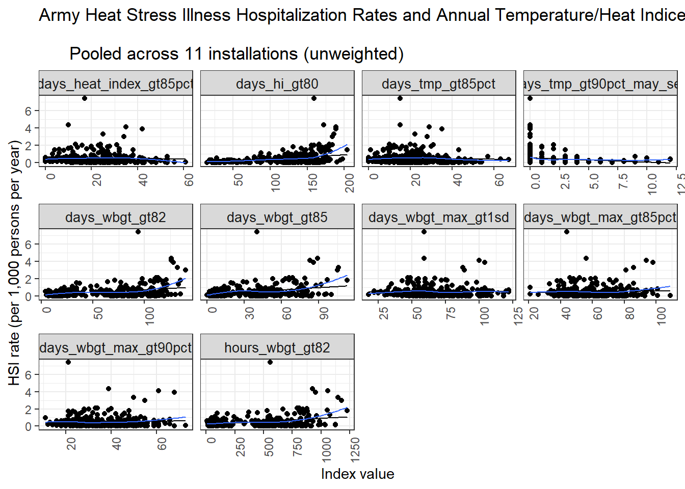
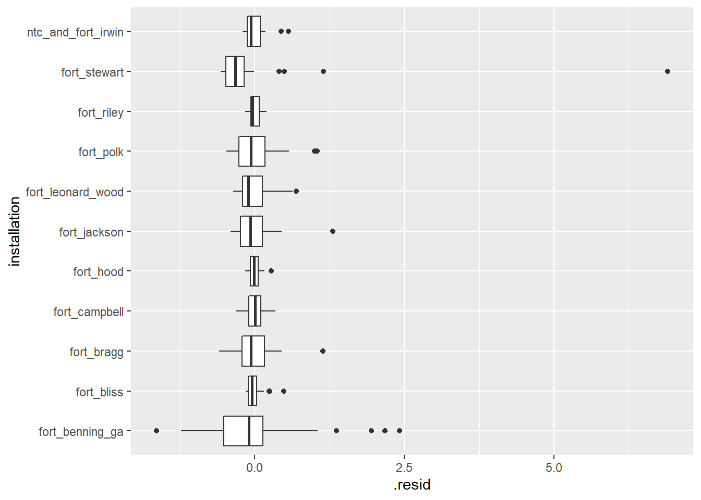
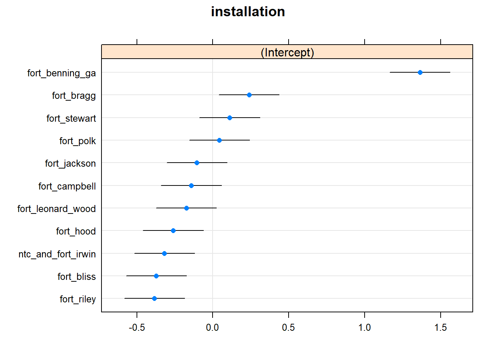

dmed_models_hospitalization
Annual models from DMED data.
Scope:
CONUS Army Installations:
Fort Jackson, SC
Fort Benning, GA
Fort Bragg, NC
Fort Campbell, KY
Fort Polk, LA
Fort Hood, TX
Fort Stewart, GA
Fort Leonard Wood, MO
Fort Riley, KS
Fort Irwin, CA
Fort Bliss, TX
Population: Active-duty Army service members
Outcome: Hospitalization (In-patient)
Annual Rate of Heat Stress Illness (any type, primary diagnosis)
1997 - 2018
Exposure indices:
“Absolute” indices
Annual mean (full-year): temperature, heat index, WBGT
Annual heat risk days / hours - Heat index above 80 / 90 / 103 / 125 °F - WBGT above 82 / 85 / 88 / 90 °F
“Relative” indices (averaged over full-year and heat season months) Annual mean daily anomaly: temperature, heat index, WBGT
Annual maximum daily anomaly: temperature, heat index, WBGT
Days mean temperature index above daily climate normal percentile (averaged over all hours of day)
- temperature, heat index, WBGT above 85th / 90th / 95th percentiles
Days maximum temperature index above daily climate normal maximum percentile
- temperature, heat index, WBGT above 85th / 90th / 95th percentiles
Days mean temperature index above Standard Deviation(s) of mean daily temperature climate normal
- temperature, heat index, WBGT above 1 or 2 standard deviations of daily normal
Days maximum temperature index above Standard Deviation(s) of max daily temperature climate normal
- temperature, heat index, WBGT above 1 or 2 standard deviations of maximum daily normal
# Outcomes
dmed_tidy <-
read_rds("data/dmed_tidy.rds")
dmed_tidy## # A tibble: 11,955 x 9
## type category year count population rate location strata hsi
## <fct> <fct> <int> <dbl> <dbl> <dbl> <fct> <fct> <fct>
## 1 Ambulatory Data Male 1997 0 6057. 0 jackson gender hexhsa~
## 2 Ambulatory Data Female 1997 0 2749. 0 jackson gender hexhsa~
## 3 Ambulatory Data Total 1997 0 8806. 0 jackson gender hexhsa~
## 4 Hospitalizatio~ Male 1997 0 6057. 0 jackson gender hexhsa~
## 5 Hospitalizatio~ Female 1997 0 2749. 0 jackson gender hexhsa~
## 6 Hospitalizatio~ Total 1997 0 8806. 0 jackson gender hexhsa~
## 7 Reportable Eve~ Male 1997 0 6057. 0 jackson gender hexhsa~
## 8 Reportable Eve~ Female 1997 0 2749. 0 jackson gender hexhsa~
## 9 Reportable Eve~ Total 1997 0 8806. 0 jackson gender hexhsa~
## 10 Ambulatory Data Male 1998 0 6456. 0 jackson gender hexhsa~
## # ... with 11,945 more rows# Exposures
annual_tables_list <-
read_rds("data/annual_tables_list.rds")
annual_tables_list## # A tibble: 25 x 2
## # Groups: installation [25]
## installation data
## <chr> <list<df[,31]>>
## 1 eglin_afb [86 x 31]
## 2 fort_benning_ga [86 x 31]
## 3 fort_bliss [86 x 31]
## 4 fort_bragg [86 x 31]
## 5 fort_campbell [86 x 31]
## 6 fort_carson [86 x 31]
## 7 fort_drum [86 x 31]
## 8 fort_gordon [86 x 31]
## 9 fort_hood [86 x 31]
## 10 fort_jackson [86 x 31]
## # ... with 15 more rowsTable of HSI Hospitalization Rates
Hospitalization rates (per 1,000 persons per year) of any heat stress illness type (Army personnel)
dmed_tidy <-
read_rds("data/dmed_tidy.rds")
dmed_tidy %>%
filter(!location %in% c("us", "overseas"),
type == "Hospitalizations",
hsi == "all",
strata == "gender",
category == "Total") %>%
dplyr::select(location, year, rate) %>%
pivot_wider(., names_from = year, values_from = rate) %>%
knitr::kable(digits = 2) %>%
kable_styling(bootstrap_options = "striped", font_size = 10) %>%
scroll_box(width = "700px") | location | 1990 | 1991 | 1992 | 1993 | 1994 | 1995 | 1996 | 1997 | 1998 | 1999 | 2000 | 2001 | 2002 | 2003 | 2004 | 2005 | 2006 | 2007 | 2008 | 2009 | 2010 | 2011 | 2012 | 2013 | 2014 | 2015 | 2016 | 2017 | 2018 |
|---|---|---|---|---|---|---|---|---|---|---|---|---|---|---|---|---|---|---|---|---|---|---|---|---|---|---|---|---|---|
| jackson | 0.00 | 1.58 | 0.47 | 0.22 | 0.60 | 0.00 | 0.11 | 0.00 | 0.75 | 0.30 | 0.17 | 0.27 | 0.20 | 0.11 | 0.63 | 0.34 | 0.10 | 0.10 | 0.25 | 0.45 | 0.29 | 0.11 | 0.33 | 0.10 | 0.45 | 0.00 | 0.58 | 0.54 | 0.53 |
| benning | 0.16 | 0.87 | 1.39 | 0.73 | 1.23 | 1.74 | 0.58 | 1.47 | 1.33 | 1.45 | 1.75 | 1.98 | 1.27 | 2.11 | 2.09 | 2.00 | 1.21 | 2.03 | 1.55 | 1.71 | 1.82 | 1.85 | 1.45 | 1.85 | 4.35 | 4.11 | 3.31 | 3.90 | 3.00 |
| bragg | 0.02 | 0.91 | 0.27 | 0.42 | 0.42 | 0.50 | 0.54 | 0.32 | 0.73 | 0.93 | 0.83 | 1.82 | 0.92 | 0.59 | 1.14 | 0.71 | 0.79 | 0.40 | 0.74 | 0.67 | 0.94 | 0.89 | 0.68 | 1.11 | 0.58 | 0.68 | 0.58 | 0.45 | 0.54 |
| campbell | 0.18 | 0.33 | 0.23 | 0.59 | 0.37 | 0.43 | 0.13 | 0.26 | 0.39 | 0.59 | 0.30 | 0.21 | 0.37 | 0.28 | 0.42 | 0.31 | 0.10 | 0.60 | 0.13 | 0.34 | 0.09 | 0.52 | 0.21 | 0.52 | 0.46 | 0.38 | 0.66 | 0.81 | 0.67 |
| polk | 0.06 | 0.38 | 0.39 | 0.37 | 0.24 | 0.83 | 0.00 | 1.53 | 1.46 | 0.50 | 0.36 | 0.47 | 0.23 | 0.11 | 0.11 | 0.25 | 1.10 | 0.80 | 0.36 | 0.68 | 0.54 | 0.11 | 0.23 | 0.36 | 0.38 | 0.94 | 0.78 | 0.77 | 0.64 |
| hood | 0.03 | 0.06 | 0.16 | 0.17 | 0.02 | 0.22 | 0.11 | 0.16 | 0.21 | 0.16 | 0.31 | 0.24 | 0.29 | 0.09 | 0.07 | 0.13 | 0.12 | 0.21 | 0.13 | 0.06 | 0.14 | 0.15 | 0.39 | 0.29 | 0.12 | 0.53 | 0.23 | 0.28 | 0.22 |
| stewart | 0.00 | 7.39 | 1.64 | 0.98 | 0.19 | 0.12 | 0.19 | 0.38 | 0.95 | 0.19 | 0.20 | 0.07 | 0.53 | 0.00 | 0.37 | 0.00 | 0.07 | 0.25 | 0.06 | 0.29 | 0.11 | 0.36 | 0.05 | 0.17 | 0.59 | 0.44 | 0.06 | 0.39 | 0.26 |
| leonardwood | 0.12 | 0.77 | 0.00 | 0.62 | 0.43 | 0.00 | 0.13 | 0.38 | 0.60 | 0.00 | 0.20 | 0.56 | 0.23 | 0.11 | 0.43 | 0.99 | 0.00 | 0.29 | 0.18 | 0.09 | 0.36 | 0.18 | 0.30 | 0.28 | 0.33 | 0.66 | 1.11 | 0.53 | 0.22 |
| riley | 0.00 | 0.00 | 0.00 | 0.00 | 0.07 | 0.15 | 0.00 | 0.00 | 0.10 | 0.10 | 0.30 | 0.30 | 0.00 | 0.29 | 0.09 | 0.00 | 0.25 | 0.21 | 0.07 | 0.06 | 0.11 | 0.31 | 0.00 | 0.06 | 0.17 | 0.06 | 0.31 | 0.20 | 0.27 |
| irwin | 0.00 | 0.50 | 0.23 | 0.23 | 0.00 | 0.23 | 0.00 | 0.00 | 0.00 | 0.00 | 0.22 | 0.22 | 0.00 | 0.00 | 0.00 | 0.00 | 0.23 | 0.24 | 0.00 | 0.72 | 0.00 | 0.22 | 0.00 | 0.00 | 0.00 | 0.26 | 0.00 | 0.26 | 0.00 |
| bliss | 0.06 | 0.06 | 0.52 | 0.28 | 0.30 | 0.09 | 0.00 | 0.22 | 0.00 | 0.21 | 0.10 | 0.20 | 0.00 | 0.00 | 0.10 | 0.10 | 0.00 | 0.07 | 0.06 | 0.00 | 0.23 | 0.08 | 0.18 | 0.04 | 0.08 | 0.04 | 0.08 | 0.04 | 0.04 |
Plots of HSI Hospitalization Rates
dmed_tidy %>%
filter(!location %in% c("us", "overseas"),
type == "Hospitalizations",
hsi == "all",
strata == "gender",
category == "Total") %>%
ggplot(aes(x = year, y = rate, color = location)) +
geom_point() +
geom_line() +
labs(
title = "Army Heat Stress Illness Hospitalization Rates",
x = "Year",
y = "HSI rate (per 1,000 persons per year)"
) +
theme_bw() +
theme(strip.text = element_text(size = 6)) +
theme(axis.text.x = element_text(angle = 90, hjust = 1))
dmed_tidy %>%
filter(!location %in% c("us", "overseas"),
type == "Hospitalizations",
hsi == "all",
strata == "gender",
category == "Total") %>%
ggplot(aes(x = fct_reorder(location, rate), y = rate)) +
geom_boxplot() +
coord_flip() +
labs(
title = "Army Heat Stress Illness Hospitalization Rates, 1990-2018",
x = "Installation",
y = "HSI rate (per 1,000 persons per year)"
) +
theme_bw() 
dmed_tidy %>%
filter(!location %in% c("us", "overseas"),
type == "Hospitalizations",
hsi == "all",
strata == "gender",
category == "Total") %>%
ggplot(aes(x = rate, y = fct_reorder(location,rate))) +
ggridges::geom_density_ridges(scale = 0.75) +
labs(
title = "Army Heat Stress Illness Hospitalization Rates, 1990-2018",
x = "Installation",
y = "HSI rate (per 1,000 persons per year)"
) +
theme_bw() ## Picking joint bandwidth of 0.111index_long <-
annual_tables_list %>%
filter(installation %in% c("fort_benning_ga", "fort_bragg", "fort_campbell", "fort_jackson",
"fort_polk", "fort_hood", "fort_stewart", "fort_leonard_wood", "fort_riley",
"ntc_and_fort_irwin", "fort_bliss")) %>%
unnest(data) %>%
pivot_longer(., cols = `1990`:`2019`, names_to = "year", values_to = "value") %>%
mutate(year = as.integer(year))
hsi_rates <-
dmed_tidy %>%
filter(location %in% c("benning", "bragg", "campbell", "jackson",
"polk", "hood", "stewart", "leonardwood",
"riley", "irwin", "bliss"),
type == "Hospitalizations",
hsi == "all",
strata == "gender",
category == "Total") %>%
dplyr::select(location, year, rate) %>%
mutate(location = recode(location, jackson = "fort_jackson"),
location = recode(location, benning = "fort_benning_ga"),
location = recode(location, bragg = "fort_bragg"),
location = recode(location, campbell = "fort_campbell"),
location = recode(location, polk = "fort_polk"),
location = recode(location, hood = "fort_hood"),
location = recode(location, stewart = "fort_stewart"),
location = recode(location, leonardwood = "fort_leonard_wood"),
location = recode(location, riley = "fort_riley"),
location = recode(location, irwin = "ntc_and_fort_irwin"),
location = recode(location, bliss = "fort_bliss"),
location = as.character(location))
hsi_rates## # A tibble: 319 x 3
## location year rate
## <chr> <int> <dbl>
## 1 fort_jackson 1990 0
## 2 fort_jackson 1991 1.58
## 3 fort_jackson 1992 0.473
## 4 fort_jackson 1993 0.215
## 5 fort_jackson 1994 0.599
## 6 fort_jackson 1995 0
## 7 fort_jackson 1996 0.112
## 8 fort_jackson 1997 0
## 9 fort_jackson 1998 0.751
## 10 fort_jackson 1999 0.305
## # ... with 309 more rows# Join table
joined_rate <-
index_long %>%
left_join(hsi_rates, by = c("installation" = "location", "year" = "year")) %>%
drop_na(rate)
joined_rate## # A tibble: 27,434 x 5
## # Groups: installation [11]
## installation index year value rate
## <chr> <chr> <int> <dbl> <dbl>
## 1 fort_benning_ga tmp_f_mean 1990 68.1 0.161
## 2 fort_benning_ga tmp_f_mean 1991 66.5 0.871
## 3 fort_benning_ga tmp_f_mean 1992 64.7 1.39
## 4 fort_benning_ga tmp_f_mean 1993 65.4 0.732
## 5 fort_benning_ga tmp_f_mean 1994 65.5 1.23
## 6 fort_benning_ga tmp_f_mean 1995 65.7 1.74
## 7 fort_benning_ga tmp_f_mean 1996 64.7 0.582
## 8 fort_benning_ga tmp_f_mean 1997 65.2 1.47
## 9 fort_benning_ga tmp_f_mean 1998 67.7 1.33
## 10 fort_benning_ga tmp_f_mean 1999 66.4 1.45
## # ... with 27,424 more rowsScatterplots of Temperature/Heat Index and HSI Rates
Each point represents a year from 1997 - 2018.
The back line is a linear regression and the blue curve is a loess smoothed conditional means curve.
joined_rate %>%
filter(installation == "fort_benning_ga") %>%
ggplot(aes(x = value, y = rate)) +
geom_point() +
geom_smooth(method = lm, se = FALSE, size = 0.5, color = "black") +
geom_smooth(se = FALSE, size = 0.5) +
facet_wrap(~ index, scales = "free_x") +
labs(
title = "Army Heat Stress Illness Hospitalization Rates and Annual Temperature/Heat Indices \n Fort Benning, GA",
x = "Index value",
y = "HSI rate (per 1,000 persons per year)",
caption = "Primary diagnosis"
) +
theme_bw() +
theme(strip.text = element_text(size = 6)) +
theme(axis.text.x = element_text(angle = 90, hjust = 1))## `geom_smooth()` using method = 'loess' and formula 'y ~ x' joined_rate %>%
filter(installation == "fort_jackson") %>%
ggplot(aes(x = value, y = rate)) +
geom_point() +
geom_smooth(method = lm, se = FALSE, size = 0.5, color = "black") +
geom_smooth(se = FALSE, size = 0.5) +
facet_wrap(~ index, scales = "free_x") +
labs(
title = "Army Heat Stress Illness Hospitalization Rates and Annual Temperature/Heat Indices \n Fort Jackson, SC",
x = "Index value",
y = "HSI rate (per 1,000 persons per year)",
caption = "Primary diagnosis"
) +
theme_bw() +
theme(strip.text = element_text(size = 6)) +
theme(axis.text.x = element_text(angle = 90, hjust = 1))## `geom_smooth()` using method = 'loess' and formula 'y ~ x'
joined_rate %>%
filter(installation == "fort_campbell") %>%
ggplot(aes(x = value, y = rate)) +
geom_point() +
geom_smooth(method = lm, se = FALSE, size = 0.5, color = "black") +
geom_smooth(se = FALSE, size = 0.5) +
facet_wrap(~ index, scales = "free_x") +
labs(
title = "Army Heat Stress Illness Hospitalization Rates and Annual Temperature/Heat Indices \n Fort Campbell, KY",
x = "Index value",
y = "HSI rate (per 1,000 persons per year)",
caption = "Primary diagnosis"
) +
theme_bw() +
theme(strip.text = element_text(size = 6)) +
theme(axis.text.x = element_text(angle = 90, hjust = 1))## `geom_smooth()` using method = 'loess' and formula 'y ~ x'Linear models
# Linear regression function
annual_lm = function(df) {
df %>%
lm(rate ~ value, data = .)
}
# Include year in model
annual_year_lm = function(df) {
df %>%
lm(rate ~ value + year, data = .)
}
# Nest by each installation - index pair
annual_hsi_nest <-
joined_rate %>%
nest(data = year:rate) %>%
mutate(linear_models = map(data, annual_lm),
glance = map(linear_models, broom::glance),
tidy = map(linear_models, broom::tidy))
annual_hsi_year_nest <-
joined_rate %>%
nest(data = year:rate) %>%
mutate(linear_models = map(data, annual_year_lm),
glance = map(linear_models, broom::glance),
tidy = map(linear_models, broom::tidy),
augment = map(linear_models, broom::augment))
annual_hsi_nest## # A tibble: 946 x 6
## # Groups: installation [11]
## installation index data linear_models glance tidy
## <chr> <chr> <list<df[,> <list> <list> <list>
## 1 fort_benning_~ tmp_f_mean [29 x 3] <lm> <tibble [1 ~ <tibble [2~
## 2 fort_benning_~ heat_index~ [29 x 3] <lm> <tibble [1 ~ <tibble [2~
## 3 fort_benning_~ wbgt_f_mean [29 x 3] <lm> <tibble [1 ~ <tibble [2~
## 4 fort_benning_~ tmp_f_max [29 x 3] <lm> <tibble [1 ~ <tibble [2~
## 5 fort_benning_~ heat_index~ [29 x 3] <lm> <tibble [1 ~ <tibble [2~
## 6 fort_benning_~ wbgt_f_max [29 x 3] <lm> <tibble [1 ~ <tibble [2~
## 7 fort_benning_~ tmp_f_min [29 x 3] <lm> <tibble [1 ~ <tibble [2~
## 8 fort_benning_~ heat_index~ [29 x 3] <lm> <tibble [1 ~ <tibble [2~
## 9 fort_benning_~ wbgt_f_min [29 x 3] <lm> <tibble [1 ~ <tibble [2~
## 10 fort_benning_~ tmp_f_sd [29 x 3] <lm> <tibble [1 ~ <tibble [2~
## # ... with 936 more rowsannual_hsi_year_nest## # A tibble: 946 x 7
## # Groups: installation [11]
## installation index data linear_models glance tidy augment
## <chr> <chr> <list<df[> <list> <list> <list> <list>
## 1 fort_benning~ tmp_f_m~ [29 x 3] <lm> <tibble ~ <tibble~ <tibble [~
## 2 fort_benning~ heat_in~ [29 x 3] <lm> <tibble ~ <tibble~ <tibble [~
## 3 fort_benning~ wbgt_f_~ [29 x 3] <lm> <tibble ~ <tibble~ <tibble [~
## 4 fort_benning~ tmp_f_m~ [29 x 3] <lm> <tibble ~ <tibble~ <tibble [~
## 5 fort_benning~ heat_in~ [29 x 3] <lm> <tibble ~ <tibble~ <tibble [~
## 6 fort_benning~ wbgt_f_~ [29 x 3] <lm> <tibble ~ <tibble~ <tibble [~
## 7 fort_benning~ tmp_f_m~ [29 x 3] <lm> <tibble ~ <tibble~ <tibble [~
## 8 fort_benning~ heat_in~ [29 x 3] <lm> <tibble ~ <tibble~ <tibble [~
## 9 fort_benning~ wbgt_f_~ [29 x 3] <lm> <tibble ~ <tibble~ <tibble [~
## 10 fort_benning~ tmp_f_sd [29 x 3] <lm> <tibble ~ <tibble~ <tibble [~
## # ... with 936 more rowsLinear Models Summary Table
All models, sorted by R2
# Model summaries
annual_hsi_nest %>%
unnest(glance) %>%
dplyr::select(installation, index, r.squared:df.residual) %>%
arrange(desc(r.squared)) %>%
knitr::kable(digits = 4) %>%
kable_styling(bootstrap_options = "striped", font_size = 10) %>%
scroll_box(height = "700px")| installation | index | r.squared | adj.r.squared | sigma | statistic | p.value | df | logLik | AIC | BIC | deviance | df.residual |
|---|---|---|---|---|---|---|---|---|---|---|---|---|
| fort_hood | days_wbgt_gt90pct_may_sep | 0.3578 | 0.3340 | 0.0910 | 15.0414 | 0.0006 | 2 | 29.4095 | -52.8190 | -48.7171 | 0.2234 | 27 |
| fort_campbell | days_heat_index_gt85pct | 0.3477 | 0.3235 | 0.1539 | 14.3895 | 0.0008 | 2 | 14.1617 | -22.3233 | -18.2215 | 0.6394 | 27 |
| fort_benning_ga | days_wbgt_max_gt90pct | 0.3336 | 0.3090 | 0.8322 | 13.5184 | 0.0010 | 2 | -34.7863 | 75.5727 | 79.6746 | 18.6991 | 27 |
| fort_campbell | days_tmp_gt85pct | 0.3257 | 0.3007 | 0.1565 | 13.0419 | 0.0012 | 2 | 13.6817 | -21.3634 | -17.2615 | 0.6609 | 27 |
| fort_hood | days_wbgt_gt95pct | 0.3214 | 0.2962 | 0.0935 | 12.7868 | 0.0013 | 2 | 28.6103 | -51.2205 | -47.1186 | 0.2361 | 27 |
| fort_polk | hours_wbgt_gt90 | 0.3069 | 0.2812 | 0.3289 | 11.9539 | 0.0018 | 2 | -7.8643 | 21.7287 | 25.8306 | 2.9206 | 27 |
| fort_polk | hours_wbgt_gt88 | 0.2793 | 0.2526 | 0.3354 | 10.4633 | 0.0032 | 2 | -8.4301 | 22.8602 | 26.9621 | 3.0368 | 27 |
| fort_campbell | days_heat_index_gt90pct | 0.2743 | 0.2474 | 0.1623 | 10.2062 | 0.0035 | 2 | 12.6167 | -19.2334 | -15.1315 | 0.7113 | 27 |
| fort_polk | days_wbgt_gt88 | 0.2679 | 0.2408 | 0.3380 | 9.8813 | 0.0040 | 2 | -8.6571 | 23.3142 | 27.4161 | 3.0847 | 27 |
| fort_hood | days_wbgt_gt90pct | 0.2633 | 0.2360 | 0.0974 | 9.6499 | 0.0044 | 2 | 27.4195 | -48.8389 | -44.7370 | 0.2563 | 27 |
| fort_hood | days_heat_index_gt90pct | 0.2531 | 0.2254 | 0.0981 | 9.1480 | 0.0054 | 2 | 27.2195 | -48.4391 | -44.3372 | 0.2598 | 27 |
| fort_polk | days_wbgt_gt95pct | 0.2503 | 0.2225 | 0.3421 | 9.0142 | 0.0057 | 2 | -9.0021 | 24.0041 | 28.1060 | 3.1590 | 27 |
| fort_campbell | days_tmp_gt90pct | 0.2463 | 0.2184 | 0.1654 | 8.8228 | 0.0062 | 2 | 12.0672 | -18.1345 | -14.0326 | 0.7387 | 27 |
| fort_hood | days_heat_index_gt95pct | 0.2457 | 0.2178 | 0.0986 | 8.7954 | 0.0062 | 2 | 27.0774 | -48.1548 | -44.0529 | 0.2624 | 27 |
| fort_hood | days_tmp_gt85pct | 0.2318 | 0.2034 | 0.0995 | 8.1473 | 0.0082 | 2 | 26.8125 | -47.6249 | -43.5230 | 0.2672 | 27 |
| fort_hood | days_tmp_gt95pct | 0.2317 | 0.2033 | 0.0995 | 8.1444 | 0.0082 | 2 | 26.8113 | -47.6225 | -43.5206 | 0.2672 | 27 |
| fort_hood | days_tmp_gt90pct | 0.2278 | 0.1992 | 0.0997 | 7.9648 | 0.0088 | 2 | 26.7370 | -47.4740 | -43.3721 | 0.2686 | 27 |
| fort_hood | days_heat_index_gt85pct | 0.2275 | 0.1988 | 0.0998 | 7.9497 | 0.0089 | 2 | 26.7307 | -47.4614 | -43.3596 | 0.2687 | 27 |
| fort_polk | days_wbgt_gt90 | 0.2274 | 0.1988 | 0.3472 | 7.9480 | 0.0089 | 2 | -9.4378 | 24.8756 | 28.9775 | 3.2554 | 27 |
| fort_campbell | days_wbgt_gt85pct | 0.2265 | 0.1978 | 0.1676 | 7.9054 | 0.0091 | 2 | 11.6911 | -17.3821 | -13.2802 | 0.7582 | 27 |
| fort_bliss | days_wbgt_max_gt85pct | 0.2245 | 0.1958 | 0.1059 | 7.8182 | 0.0094 | 2 | 25.0103 | -44.0205 | -39.9186 | 0.3026 | 27 |
| fort_jackson | days_wbgt_gt85pct_may_sep | 0.2227 | 0.1939 | 0.2889 | 7.7362 | 0.0097 | 2 | -4.1087 | 14.2173 | 18.3192 | 2.2542 | 27 |
| fort_benning_ga | days_wbgt_max_gt1sd | 0.2221 | 0.1933 | 0.8991 | 7.7106 | 0.0099 | 2 | -37.0297 | 80.0593 | 84.1612 | 21.8279 | 27 |
| fort_bliss | days_heat_index_gt90pct | 0.2219 | 0.1931 | 0.1060 | 7.6994 | 0.0099 | 2 | 24.9607 | -43.9215 | -39.8196 | 0.3036 | 27 |
| fort_benning_ga | days_wbgt_max_gt85pct | 0.2173 | 0.1883 | 0.9020 | 7.4940 | 0.0108 | 2 | -37.1204 | 80.2408 | 84.3427 | 21.9649 | 27 |
| fort_jackson | days_hi_gt80 | 0.2116 | 0.1824 | 0.2910 | 7.2477 | 0.0120 | 2 | -4.3140 | 14.6280 | 18.7299 | 2.2863 | 27 |
| fort_bliss | days_wbgt_gt90pct | 0.2112 | 0.1819 | 0.1068 | 7.2272 | 0.0121 | 2 | 24.7621 | -43.5241 | -39.4223 | 0.3078 | 27 |
| fort_hood | days_wbgt_gt85pct | 0.2019 | 0.1723 | 0.1014 | 6.8306 | 0.0145 | 2 | 26.2588 | -46.5176 | -42.4158 | 0.2776 | 27 |
| fort_polk | hours_wbgt_gt85 | 0.1999 | 0.1703 | 0.3534 | 6.7455 | 0.0150 | 2 | -9.9456 | 25.8911 | 29.9930 | 3.3714 | 27 |
| fort_bliss | days_heat_index_gt85pct | 0.1979 | 0.1682 | 0.1077 | 6.6609 | 0.0156 | 2 | 24.5201 | -43.0403 | -38.9384 | 0.3130 | 27 |
| fort_leonard_wood | days_wbgt_max_gt2sd_may_sep | 0.1877 | 0.1576 | 0.2653 | 6.2370 | 0.0189 | 2 | -1.6299 | 9.2597 | 13.3616 | 1.8999 | 27 |
| fort_leonard_wood | days_wbgt_max_gt2sd | 0.1826 | 0.1523 | 0.2661 | 6.0308 | 0.0208 | 2 | -1.7201 | 9.4403 | 13.5422 | 1.9118 | 27 |
| fort_campbell | days_heat_index_max_gt2sd | 0.1804 | 0.1500 | 0.1725 | 5.9418 | 0.0217 | 2 | 10.8515 | -15.7030 | -11.6011 | 0.8034 | 27 |
| fort_campbell | days_wbgt_max_gt90pct | 0.1797 | 0.1493 | 0.1726 | 5.9152 | 0.0219 | 2 | 10.8398 | -15.6796 | -11.5777 | 0.8040 | 27 |
| fort_bliss | days_wbgt_max_gt1sd | 0.1795 | 0.1491 | 0.1089 | 5.9053 | 0.0220 | 2 | 24.1909 | -42.3819 | -38.2800 | 0.3202 | 27 |
| fort_benning_ga | days_heat_index_max_gt90pct | 0.1774 | 0.1469 | 0.9246 | 5.8216 | 0.0229 | 2 | -37.8411 | 81.6821 | 85.7840 | 23.0842 | 27 |
| fort_bliss | days_tmp_gt90pct | 0.1771 | 0.1466 | 0.1091 | 5.8104 | 0.0230 | 2 | 24.1491 | -42.2981 | -38.1962 | 0.3211 | 27 |
| fort_benning_ga | wbgt_f_max | 0.1756 | 0.1451 | 0.9256 | 5.7530 | 0.0236 | 2 | -37.8714 | 81.7428 | 85.8447 | 23.1325 | 27 |
| fort_benning_ga | days_heat_index_max_gt1sd | 0.1740 | 0.1434 | 0.9266 | 5.6857 | 0.0244 | 2 | -37.9012 | 81.8024 | 85.9043 | 23.1801 | 27 |
| fort_bliss | wbgt_f_mean_anomaly_mean_may_sep | 0.1738 | 0.1432 | 0.1093 | 5.6781 | 0.0245 | 2 | 24.0905 | -42.1809 | -38.0790 | 0.3224 | 27 |
| fort_bliss | days_tmp_gt85pct | 0.1695 | 0.1387 | 0.1096 | 5.5104 | 0.0265 | 2 | 24.0159 | -42.0318 | -37.9299 | 0.3241 | 27 |
| fort_bliss | days_wbgt_gt85pct | 0.1688 | 0.1380 | 0.1096 | 5.4839 | 0.0268 | 2 | 24.0041 | -42.0081 | -37.9062 | 0.3243 | 27 |
| fort_bliss | days_wbgt_max_gt90pct | 0.1664 | 0.1355 | 0.1098 | 5.3883 | 0.0281 | 2 | 23.9613 | -41.9226 | -37.8208 | 0.3253 | 27 |
| fort_hood | days_heat_index_max_gt2sd | 0.1644 | 0.1335 | 0.1038 | 5.3124 | 0.0291 | 2 | 25.5931 | -45.1861 | -41.0842 | 0.2907 | 27 |
| fort_benning_ga | days_hi_gt80 | 0.1639 | 0.1329 | 0.9322 | 5.2923 | 0.0294 | 2 | -38.0768 | 82.1536 | 86.2555 | 23.4626 | 27 |
| fort_benning_ga | days_wbgt_gt82 | 0.1637 | 0.1327 | 0.9323 | 5.2840 | 0.0295 | 2 | -38.0805 | 82.1611 | 86.2630 | 23.4686 | 27 |
| fort_jackson | wbgt_f_max | 0.1635 | 0.1325 | 0.2998 | 5.2756 | 0.0296 | 2 | -5.1740 | 16.3480 | 20.4499 | 2.4260 | 27 |
| fort_bliss | days_wbgt_gt88 | 0.1616 | 0.1306 | 0.1101 | 5.2059 | 0.0306 | 2 | 23.8794 | -41.7588 | -37.6570 | 0.3271 | 27 |
| fort_jackson | days_wbgt_gt90pct_may_sep | 0.1600 | 0.1289 | 0.3004 | 5.1415 | 0.0316 | 2 | -5.2344 | 16.4687 | 20.5706 | 2.4361 | 27 |
| fort_benning_ga | days_wbgt_max_gt2sd | 0.1577 | 0.1265 | 0.9356 | 5.0562 | 0.0329 | 2 | -38.1832 | 82.3664 | 86.4683 | 23.6354 | 27 |
| fort_benning_ga | heat_index_max_anomaly_mean | 0.1544 | 0.1231 | 0.9375 | 4.9311 | 0.0350 | 2 | -38.2399 | 82.4798 | 86.5817 | 23.7279 | 27 |
| fort_campbell | tmp_f_max | 0.1531 | 0.1217 | 0.1753 | 4.8814 | 0.0358 | 2 | 10.3771 | -14.7542 | -10.6523 | 0.8301 | 27 |
| fort_bliss | wbgt_f_max | 0.1519 | 0.1205 | 0.1107 | 4.8377 | 0.0366 | 2 | 23.7127 | -41.4254 | -37.3235 | 0.3309 | 27 |
| fort_bliss | wbgt_f_max_anomaly_mean_may_sep | 0.1460 | 0.1144 | 0.1111 | 4.6165 | 0.0408 | 2 | 23.6116 | -41.2232 | -37.1213 | 0.3332 | 27 |
| fort_hood | days_hi_gt80 | 0.1460 | 0.1144 | 0.1049 | 4.6163 | 0.0408 | 2 | 25.2773 | -44.5546 | -40.4527 | 0.2971 | 27 |
| fort_hood | heat_index_max_anomaly_mean | 0.1447 | 0.1131 | 0.1050 | 4.5691 | 0.0418 | 2 | 25.2556 | -44.5112 | -40.4093 | 0.2975 | 27 |
| fort_benning_ga | days_heat_index_max_gt95pct | 0.1435 | 0.1118 | 0.9435 | 4.5247 | 0.0427 | 2 | -38.4256 | 82.8513 | 86.9532 | 24.0338 | 27 |
| fort_benning_ga | days_wbgt_max_gt90pct_may_sep | 0.1432 | 0.1115 | 0.9437 | 4.5127 | 0.0429 | 2 | -38.4312 | 82.8623 | 86.9642 | 24.0430 | 27 |
| fort_bliss | days_heat_index_max_gt95pct | 0.1431 | 0.1114 | 0.1113 | 4.5088 | 0.0430 | 2 | 23.5621 | -41.1243 | -37.0224 | 0.3344 | 27 |
| fort_campbell | days_wbgt_max_gt85pct | 0.1427 | 0.1110 | 0.1764 | 4.4953 | 0.0433 | 2 | 10.2004 | -14.4008 | -10.2990 | 0.8402 | 27 |
| fort_hood | wbgt_f_max_anomaly_mean | 0.1427 | 0.1109 | 0.1051 | 4.4931 | 0.0434 | 2 | 25.2207 | -44.4413 | -40.3395 | 0.2982 | 27 |
| fort_benning_ga | days_wbgt_gt85 | 0.1421 | 0.1103 | 0.9442 | 4.4729 | 0.0438 | 2 | -38.4495 | 82.8989 | 87.0008 | 24.0734 | 27 |
| fort_hood | days_wbgt_max_gt1sd | 0.1421 | 0.1103 | 0.1051 | 4.4722 | 0.0438 | 2 | 25.2110 | -44.4221 | -40.3202 | 0.2984 | 27 |
| fort_hood | heat_index_mean_anomaly_mean | 0.1420 | 0.1102 | 0.1051 | 4.4694 | 0.0439 | 2 | 25.2097 | -44.4195 | -40.3176 | 0.2984 | 27 |
| fort_hood | heat_index_mean | 0.1406 | 0.1088 | 0.1052 | 4.4178 | 0.0450 | 2 | 25.1859 | -44.3719 | -40.2700 | 0.2989 | 27 |
| fort_bliss | wbgt_f_mean | 0.1403 | 0.1085 | 0.1115 | 4.4079 | 0.0453 | 2 | 23.5156 | -41.0312 | -36.9293 | 0.3354 | 27 |
| fort_hood | days_wbgt_max_gt2sd | 0.1393 | 0.1074 | 0.1053 | 4.3682 | 0.0462 | 2 | 25.1630 | -44.3261 | -40.2242 | 0.2994 | 27 |
| fort_benning_ga | days_heat_index_max_gt85pct | 0.1384 | 0.1065 | 0.9463 | 4.3370 | 0.0469 | 2 | -38.5122 | 83.0245 | 87.1264 | 24.1778 | 27 |
| fort_bliss | wbgt_f_mean_anomaly_mean | 0.1381 | 0.1062 | 0.1116 | 4.3267 | 0.0471 | 2 | 23.4781 | -40.9562 | -36.8543 | 0.3363 | 27 |
| fort_polk | days_wbgt_gt85 | 0.1372 | 0.1053 | 0.3669 | 4.2947 | 0.0479 | 2 | -11.0388 | 28.0777 | 32.1796 | 3.6354 | 27 |
| fort_hood | days_heat_index_max_gt90pct | 0.1317 | 0.0995 | 0.1058 | 4.0937 | 0.0530 | 2 | 25.0356 | -44.0712 | -39.9693 | 0.3020 | 27 |
| fort_polk | hours_hi_gt103 | 0.1310 | 0.0988 | 0.3683 | 4.0694 | 0.0537 | 2 | -11.1436 | 28.2872 | 32.3891 | 3.6618 | 27 |
| fort_bliss | heat_index_mean_anomaly_mean_may_sep | 0.1306 | 0.0984 | 0.1121 | 4.0567 | 0.0541 | 2 | 23.3526 | -40.7051 | -36.6033 | 0.3392 | 27 |
| fort_bliss | days_wbgt_gt90 | 0.1306 | 0.0984 | 0.1121 | 4.0565 | 0.0541 | 2 | 23.3524 | -40.7049 | -36.6030 | 0.3392 | 27 |
| fort_hood | days_heat_index_max_gt95pct | 0.1298 | 0.0975 | 0.1059 | 4.0264 | 0.0549 | 2 | 25.0042 | -44.0083 | -39.9065 | 0.3027 | 27 |
| fort_benning_ga | wbgt_f_max_anomaly_mean | 0.1297 | 0.0975 | 0.9510 | 4.0254 | 0.0549 | 2 | -38.6571 | 83.3142 | 87.4161 | 24.4206 | 27 |
| fort_hood | days_tmp_gt95pct_may_sep | 0.1289 | 0.0966 | 0.1059 | 3.9938 | 0.0558 | 2 | 24.9889 | -43.9779 | -39.8760 | 0.3030 | 27 |
| fort_bliss | days_heat_index_max_gt90pct | 0.1288 | 0.0965 | 0.1122 | 3.9905 | 0.0559 | 2 | 23.3216 | -40.6433 | -36.5414 | 0.3399 | 27 |
| fort_hood | tmp_f_mean_anomaly_mean | 0.1267 | 0.0944 | 0.1061 | 3.9180 | 0.0580 | 2 | 24.9534 | -43.9069 | -39.8050 | 0.3038 | 27 |
| fort_leonard_wood | days_wbgt_max_gt90pct | 0.1265 | 0.0942 | 0.2751 | 3.9113 | 0.0583 | 2 | -2.6817 | 11.3635 | 15.4654 | 2.0429 | 27 |
| fort_benning_ga | hours_wbgt_gt82 | 0.1261 | 0.0937 | 0.9530 | 3.8957 | 0.0587 | 2 | -38.7178 | 83.4357 | 87.5376 | 24.5231 | 27 |
| fort_campbell | heat_index_mean | 0.1259 | 0.0936 | 0.1781 | 3.8905 | 0.0589 | 2 | 9.9193 | -13.8385 | -9.7366 | 0.8567 | 27 |
| fort_campbell | wbgt_f_mean | 0.1259 | 0.0935 | 0.1781 | 3.8896 | 0.0589 | 2 | 9.9189 | -13.8377 | -9.7358 | 0.8567 | 27 |
| fort_hood | tmp_f_mean | 0.1257 | 0.0933 | 0.1061 | 3.8814 | 0.0592 | 2 | 24.9362 | -43.8725 | -39.7706 | 0.3041 | 27 |
| fort_benning_ga | days_tmp_max_gt1sd | 0.1255 | 0.0931 | 0.9533 | 3.8751 | 0.0594 | 2 | -38.7275 | 83.4550 | 87.5569 | 24.5395 | 27 |
| fort_bliss | days_wbgt_max_gt2sd | 0.1241 | 0.0917 | 0.1125 | 3.8263 | 0.0609 | 2 | 23.2446 | -40.4892 | -36.3873 | 0.3418 | 27 |
| fort_campbell | wbgt_f_mean_anomaly_mean | 0.1233 | 0.0908 | 0.1784 | 3.7970 | 0.0618 | 2 | 9.8753 | -13.7506 | -9.6487 | 0.8593 | 27 |
| fort_campbell | heat_index_mean_anomaly_mean | 0.1229 | 0.0905 | 0.1784 | 3.7849 | 0.0622 | 2 | 9.8696 | -13.7392 | -9.6373 | 0.8596 | 27 |
| fort_bliss | days_tmp_max_gt90pct | 0.1222 | 0.0897 | 0.1126 | 3.7597 | 0.0630 | 2 | 23.2132 | -40.4265 | -36.3246 | 0.3425 | 27 |
| fort_hood | wbgt_f_mean_anomaly_mean | 0.1214 | 0.0889 | 0.1064 | 3.7312 | 0.0640 | 2 | 24.8656 | -43.7311 | -39.6292 | 0.3056 | 27 |
| fort_benning_ga | wbgt_f_max_anomaly_mean_may_sep | 0.1213 | 0.0887 | 0.9556 | 3.7265 | 0.0641 | 2 | -38.7975 | 83.5950 | 87.6969 | 24.6582 | 27 |
| fort_benning_ga | days_wbgt_gt85pct | 0.1211 | 0.0885 | 0.9558 | 3.7196 | 0.0644 | 2 | -38.8007 | 83.6015 | 87.7034 | 24.6637 | 27 |
| fort_polk | heat_index_max | 0.1206 | 0.0880 | 0.3705 | 3.7017 | 0.0650 | 2 | -11.3162 | 28.6324 | 32.7343 | 3.7056 | 27 |
| fort_hood | days_heat_index_max_gt85pct | 0.1201 | 0.0875 | 0.1065 | 3.6845 | 0.0655 | 2 | 24.8435 | -43.6870 | -39.5851 | 0.3061 | 27 |
| fort_hood | wbgt_f_mean | 0.1201 | 0.0875 | 0.1065 | 3.6844 | 0.0655 | 2 | 24.8435 | -43.6869 | -39.5850 | 0.3061 | 27 |
| fort_bliss | tmp_f_mean_anomaly_mean_may_sep | 0.1193 | 0.0867 | 0.1128 | 3.6572 | 0.0665 | 2 | 23.1648 | -40.3297 | -36.2278 | 0.3436 | 27 |
| fort_stewart | heat_index_max | 0.1192 | 0.0866 | 1.3002 | 3.6540 | 0.0666 | 2 | -47.7256 | 101.4512 | 105.5531 | 45.6425 | 27 |
| fort_bliss | hours_wbgt_gt88 | 0.1192 | 0.0865 | 0.1128 | 3.6526 | 0.0667 | 2 | 23.1627 | -40.3253 | -36.2234 | 0.3437 | 27 |
| fort_hood | tmp_f_max_anomaly_mean | 0.1170 | 0.0842 | 0.1067 | 3.5760 | 0.0694 | 2 | 24.7921 | -43.5842 | -39.4824 | 0.3072 | 27 |
| fort_benning_ga | days_wbgt_gt90pct | 0.1166 | 0.0839 | 0.9582 | 3.5644 | 0.0698 | 2 | -38.8742 | 83.7483 | 87.8502 | 24.7889 | 27 |
| fort_hood | days_wbgt_max_gt85pct | 0.1150 | 0.0822 | 0.1068 | 3.5069 | 0.0720 | 2 | 24.7594 | -43.5187 | -39.4168 | 0.3079 | 27 |
| fort_polk | days_heat_index_max_gt95pct_may_sep | 0.1148 | 0.0820 | 0.3717 | 3.5007 | 0.0722 | 2 | -11.4115 | 28.8229 | 32.9248 | 3.7300 | 27 |
| fort_benning_ga | hours_wbgt_gt85 | 0.1133 | 0.0805 | 0.9600 | 3.4505 | 0.0742 | 2 | -38.9283 | 83.8566 | 87.9585 | 24.8816 | 27 |
| fort_bliss | days_heat_index_max_gt1sd | 0.1121 | 0.0793 | 0.1133 | 3.4102 | 0.0758 | 2 | 23.0476 | -40.0951 | -35.9932 | 0.3464 | 27 |
| fort_bliss | wbgt_f_max_anomaly_mean | 0.1114 | 0.0785 | 0.1133 | 3.3844 | 0.0768 | 2 | 23.0352 | -40.0705 | -35.9686 | 0.3467 | 27 |
| fort_hood | days_heat_index_max_gt1sd | 0.1108 | 0.0778 | 0.1070 | 3.3637 | 0.0777 | 2 | 24.6911 | -43.3822 | -39.2803 | 0.3093 | 27 |
| fort_bliss | heat_index_mean | 0.1105 | 0.0775 | 0.1134 | 3.3528 | 0.0781 | 2 | 23.0201 | -40.0403 | -35.9384 | 0.3471 | 27 |
| fort_stewart | wbgt_f_min | 0.1104 | 0.0775 | 1.3066 | 3.3517 | 0.0782 | 2 | -47.8693 | 101.7386 | 105.8405 | 46.0970 | 27 |
| fort_campbell | days_heat_index_max_gt95pct | 0.1099 | 0.0770 | 0.1798 | 3.3345 | 0.0789 | 2 | 9.6559 | -13.3118 | -9.2099 | 0.8724 | 27 |
| fort_benning_ga | tmp_f_max_anomaly_mean | 0.1088 | 0.0758 | 0.9624 | 3.2970 | 0.0805 | 2 | -39.0016 | 84.0032 | 88.1051 | 25.0077 | 27 |
| fort_bliss | heat_index_mean_anomaly_mean | 0.1087 | 0.0757 | 0.1135 | 3.2935 | 0.0807 | 2 | 22.9918 | -39.9836 | -35.8817 | 0.3478 | 27 |
| fort_hood | days_wbgt_max_gt90pct | 0.1081 | 0.0750 | 0.1072 | 3.2715 | 0.0816 | 2 | 24.6470 | -43.2941 | -39.1922 | 0.3103 | 27 |
| fort_polk | days_hi_gt103 | 0.1074 | 0.0744 | 0.3732 | 3.2501 | 0.0826 | 2 | -11.5311 | 29.0622 | 33.1641 | 3.7609 | 27 |
| fort_stewart | days_wbgt_gt90 | 0.1074 | 0.0744 | 1.3088 | 3.2498 | 0.0826 | 2 | -47.9180 | 101.8361 | 105.9380 | 46.2523 | 27 |
| fort_bliss | days_heat_index_gt95pct | 0.1028 | 0.0696 | 0.1139 | 3.0945 | 0.0899 | 2 | 22.8962 | -39.7924 | -35.6905 | 0.3501 | 27 |
| fort_leonard_wood | days_wbgt_max_gt1sd | 0.1022 | 0.0690 | 0.2789 | 3.0737 | 0.0909 | 2 | -3.0800 | 12.1601 | 16.2620 | 2.0998 | 27 |
| fort_jackson | days_wbgt_gt88 | 0.1013 | 0.0681 | 0.3107 | 3.0447 | 0.0924 | 2 | -6.2125 | 18.4251 | 22.5270 | 2.6061 | 27 |
| fort_campbell | wbgt_f_max_anomaly_mean | 0.1010 | 0.0677 | 0.1807 | 3.0319 | 0.0930 | 2 | 9.5105 | -13.0211 | -8.9192 | 0.8812 | 27 |
| fort_riley | days_wbgt_gt90pct | 0.1004 | 0.0670 | 0.1109 | 3.0120 | 0.0941 | 2 | 23.6715 | -41.3429 | -37.2410 | 0.3318 | 27 |
| fort_polk | days_hi_gt80 | 0.0986 | 0.0653 | 0.3751 | 2.9546 | 0.0971 | 2 | -11.6734 | 29.3469 | 33.4488 | 3.7980 | 27 |
| fort_polk | days_heat_index_max_gt90pct_may_sep | 0.0969 | 0.0635 | 0.3754 | 2.8972 | 0.1002 | 2 | -11.7012 | 29.4025 | 33.5043 | 3.8053 | 27 |
| fort_bliss | heat_index_max_anomaly_mean_may_sep | 0.0967 | 0.0632 | 0.1143 | 2.8898 | 0.1006 | 2 | 22.7973 | -39.5945 | -35.4927 | 0.3525 | 27 |
| fort_polk | days_wbgt_max_gt1sd_may_sep | 0.0961 | 0.0627 | 0.3756 | 2.8722 | 0.1016 | 2 | -11.7134 | 29.4267 | 33.5286 | 3.8085 | 27 |
| fort_stewart | tmp_f_min | 0.0955 | 0.0620 | 1.3176 | 2.8506 | 0.1029 | 2 | -48.1107 | 102.2213 | 106.3232 | 46.8708 | 27 |
| fort_stewart | heat_index_min | 0.0955 | 0.0620 | 1.3176 | 2.8506 | 0.1029 | 2 | -48.1107 | 102.2213 | 106.3232 | 46.8708 | 27 |
| fort_bliss | days_wbgt_gt95pct | 0.0949 | 0.0614 | 0.1144 | 2.8305 | 0.1040 | 2 | 22.7685 | -39.5369 | -35.4351 | 0.3532 | 27 |
| fort_bliss | days_tmp_max_gt1sd | 0.0942 | 0.0606 | 0.1144 | 2.8068 | 0.1054 | 2 | 22.7569 | -39.5139 | -35.4120 | 0.3534 | 27 |
| fort_polk | days_wbgt_max_gt90pct_may_sep | 0.0939 | 0.0604 | 0.3760 | 2.7987 | 0.1059 | 2 | -11.7491 | 29.4982 | 33.6001 | 3.8179 | 27 |
| fort_leonard_wood | days_wbgt_max_gt85pct | 0.0933 | 0.0597 | 0.2803 | 2.7769 | 0.1072 | 2 | -3.2239 | 12.4477 | 16.5496 | 2.1207 | 27 |
| fort_bliss | days_tmp_max_gt95pct | 0.0932 | 0.0597 | 0.1145 | 2.7764 | 0.1072 | 2 | 22.7422 | -39.4843 | -35.3824 | 0.3538 | 27 |
| fort_leonard_wood | days_heat_index_gt95pct | 0.0930 | 0.0594 | 0.2803 | 2.7672 | 0.1078 | 2 | -3.2286 | 12.4572 | 16.5591 | 2.1214 | 27 |
| fort_jackson | days_wbgt_gt90 | 0.0930 | 0.0594 | 0.3121 | 2.7670 | 0.1078 | 2 | -6.3472 | 18.6944 | 22.7963 | 2.6305 | 27 |
| fort_bliss | days_wbgt_max_gt85pct_may_sep | 0.0925 | 0.0589 | 0.1145 | 2.7523 | 0.1087 | 2 | 22.7304 | -39.4608 | -35.3589 | 0.3541 | 27 |
| fort_bliss | days_tmp_max_gt85pct | 0.0924 | 0.0588 | 0.1145 | 2.7489 | 0.1089 | 2 | 22.7287 | -39.4574 | -35.3555 | 0.3541 | 27 |
| fort_benning_ga | days_heat_index_gt95pct | 0.0921 | 0.0585 | 0.9714 | 2.7399 | 0.1095 | 2 | -39.2707 | 84.5415 | 88.6433 | 25.4762 | 27 |
| fort_bliss | tmp_f_mean | 0.0910 | 0.0573 | 0.1146 | 2.7023 | 0.1118 | 2 | 22.7060 | -39.4120 | -35.3101 | 0.3547 | 27 |
| fort_leonard_wood | days_wbgt_max_gt85pct_may_sep | 0.0908 | 0.0571 | 0.2806 | 2.6957 | 0.1122 | 2 | -3.2635 | 12.5269 | 16.6288 | 2.1265 | 27 |
| fort_bliss | heat_index_max_anomaly_mean | 0.0899 | 0.0562 | 0.1147 | 2.6668 | 0.1141 | 2 | 22.6887 | -39.3773 | -35.2755 | 0.3551 | 27 |
| fort_benning_ga | heat_index_max_anomaly_mean_may_sep | 0.0896 | 0.0559 | 0.9727 | 2.6585 | 0.1146 | 2 | -39.3104 | 84.6209 | 88.7228 | 25.5461 | 27 |
| fort_campbell | tmp_f_mean | 0.0895 | 0.0558 | 0.1818 | 2.6542 | 0.1149 | 2 | 9.3270 | -12.6540 | -8.5521 | 0.8924 | 27 |
| fort_hood | hours_wbgt_gt90 | 0.0894 | 0.0557 | 0.1083 | 2.6505 | 0.1151 | 2 | 24.3464 | -42.6929 | -38.5910 | 0.3167 | 27 |
| fort_bliss | tmp_f_mean_anomaly_mean | 0.0893 | 0.0555 | 0.1147 | 2.6462 | 0.1154 | 2 | 22.6786 | -39.3572 | -35.2553 | 0.3554 | 27 |
| fort_bliss | days_heat_index_max_gt2sd | 0.0889 | 0.0551 | 0.1147 | 2.6342 | 0.1162 | 2 | 22.6727 | -39.3455 | -35.2436 | 0.3555 | 27 |
| fort_leonard_wood | wbgt_f_mean | 0.0888 | 0.0550 | 0.2810 | 2.6301 | 0.1165 | 2 | -3.2955 | 12.5911 | 16.6929 | 2.1312 | 27 |
| fort_leonard_wood | tmp_f_min | 0.0887 | 0.0549 | 0.2810 | 2.6277 | 0.1166 | 2 | -3.2967 | 12.5934 | 16.6953 | 2.1314 | 27 |
| fort_leonard_wood | heat_index_min | 0.0887 | 0.0549 | 0.2810 | 2.6277 | 0.1166 | 2 | -3.2967 | 12.5934 | 16.6953 | 2.1314 | 27 |
| fort_leonard_wood | wbgt_f_mean_anomaly_mean | 0.0883 | 0.0545 | 0.2810 | 2.6140 | 0.1175 | 2 | -3.3034 | 12.6068 | 16.7087 | 2.1324 | 27 |
| fort_benning_ga | days_tmp_max_gt85pct | 0.0882 | 0.0545 | 0.9734 | 2.6132 | 0.1176 | 2 | -39.3326 | 84.6653 | 88.7671 | 25.5852 | 27 |
| fort_hood | heat_index_max | 0.0877 | 0.0540 | 0.1084 | 2.5970 | 0.1187 | 2 | 24.3203 | -42.6406 | -38.5387 | 0.3173 | 27 |
| fort_hood | tmp_f_max | 0.0876 | 0.0538 | 0.1084 | 2.5925 | 0.1190 | 2 | 24.3181 | -42.6361 | -38.5343 | 0.3174 | 27 |
| fort_benning_ga | days_wbgt_gt88 | 0.0875 | 0.0537 | 0.9739 | 2.5877 | 0.1193 | 2 | -39.3451 | 84.6902 | 88.7921 | 25.6072 | 27 |
| fort_campbell | days_heat_index_max_gt1sd | 0.0874 | 0.0536 | 0.1820 | 2.5871 | 0.1194 | 2 | 9.2942 | -12.5883 | -8.4864 | 0.8944 | 27 |
| fort_campbell | tmp_f_mean_anomaly_mean | 0.0872 | 0.0534 | 0.1820 | 2.5800 | 0.1199 | 2 | 9.2907 | -12.5814 | -8.4796 | 0.8947 | 27 |
| fort_benning_ga | days_wbgt_gt95pct | 0.0872 | 0.0534 | 0.9740 | 2.5799 | 0.1199 | 2 | -39.3489 | 84.6978 | 88.7997 | 25.6139 | 27 |
| fort_bliss | days_wbgt_gt82 | 0.0868 | 0.0530 | 0.1149 | 2.5661 | 0.1208 | 2 | 22.6394 | -39.2787 | -35.1768 | 0.3563 | 27 |
| fort_bliss | days_wbgt_max_gt1sd_may_sep | 0.0866 | 0.0528 | 0.1149 | 2.5607 | 0.1212 | 2 | 22.6367 | -39.2734 | -35.1715 | 0.3564 | 27 |
| fort_campbell | days_heat_index_gt95pct | 0.0860 | 0.0522 | 0.1822 | 2.5406 | 0.1226 | 2 | 9.2714 | -12.5428 | -8.4409 | 0.8958 | 27 |
| fort_benning_ga | days_wbgt_max_gt85pct_may_sep | 0.0854 | 0.0516 | 0.9749 | 2.5222 | 0.1239 | 2 | -39.3772 | 84.7544 | 88.8563 | 25.6640 | 27 |
| fort_benning_ga | heat_index_mean | 0.0852 | 0.0513 | 0.9751 | 2.5155 | 0.1244 | 2 | -39.3805 | 84.7610 | 88.8629 | 25.6698 | 27 |
| fort_benning_ga | heat_index_mean_anomaly_mean | 0.0849 | 0.0510 | 0.9752 | 2.5061 | 0.1251 | 2 | -39.3852 | 84.7703 | 88.8722 | 25.6781 | 27 |
| fort_polk | days_wbgt_max_gt85pct_may_sep | 0.0849 | 0.0510 | 0.3779 | 2.5036 | 0.1252 | 2 | -11.8934 | 29.7868 | 33.8887 | 3.8561 | 27 |
| fort_jackson | days_heat_index_gt90pct_may_sep | 0.0845 | 0.0505 | 0.3136 | 2.4906 | 0.1262 | 2 | -6.4825 | 18.9649 | 23.0668 | 2.6551 | 27 |
| fort_benning_ga | days_tmp_gt85pct | 0.0841 | 0.0501 | 0.9757 | 2.4778 | 0.1271 | 2 | -39.3991 | 84.7981 | 88.9000 | 25.7027 | 27 |
| fort_stewart | days_wbgt_max_gt90pct | 0.0832 | 0.0493 | 1.3265 | 2.4508 | 0.1291 | 2 | -48.3062 | 102.6124 | 106.7143 | 47.5072 | 27 |
| fort_leonard_wood | wbgt_f_min | 0.0830 | 0.0491 | 0.2818 | 2.4453 | 0.1295 | 2 | -3.3862 | 12.7725 | 16.8744 | 2.1446 | 27 |
| fort_jackson | wbgt_f_mean_anomaly_mean | 0.0827 | 0.0487 | 0.3139 | 2.4337 | 0.1304 | 2 | -6.5105 | 19.0209 | 23.1228 | 2.6602 | 27 |
| fort_jackson | tmp_f_mean_anomaly_mean | 0.0825 | 0.0485 | 0.3139 | 2.4276 | 0.1309 | 2 | -6.5135 | 19.0269 | 23.1288 | 2.6608 | 27 |
| fort_jackson | wbgt_f_mean | 0.0824 | 0.0485 | 0.3139 | 2.4258 | 0.1310 | 2 | -6.5143 | 19.0287 | 23.1306 | 2.6610 | 27 |
| fort_jackson | days_tmp_max_gt1sd | 0.0823 | 0.0483 | 0.3140 | 2.4216 | 0.1313 | 2 | -6.5164 | 19.0329 | 23.1347 | 2.6613 | 27 |
| fort_jackson | tmp_f_mean | 0.0823 | 0.0483 | 0.3140 | 2.4211 | 0.1314 | 2 | -6.5167 | 19.0333 | 23.1352 | 2.6614 | 27 |
| fort_hood | days_tmp_max_gt95pct | 0.0814 | 0.0473 | 0.1088 | 2.3917 | 0.1336 | 2 | 24.2193 | -42.4387 | -38.3368 | 0.3195 | 27 |
| fort_jackson | days_heat_index_gt85pct_may_sep | 0.0808 | 0.0467 | 0.3142 | 2.3718 | 0.1352 | 2 | -6.5410 | 19.0820 | 23.1839 | 2.6658 | 27 |
| fort_jackson | heat_index_mean_anomaly_mean | 0.0807 | 0.0466 | 0.3142 | 2.3686 | 0.1354 | 2 | -6.5426 | 19.0851 | 23.1870 | 2.6661 | 27 |
| fort_jackson | heat_index_mean | 0.0804 | 0.0463 | 0.3143 | 2.3603 | 0.1361 | 2 | -6.5467 | 19.0933 | 23.1952 | 2.6669 | 27 |
| fort_benning_ga | days_heat_index_gt85pct | 0.0796 | 0.0455 | 0.9781 | 2.3351 | 0.1381 | 2 | -39.4694 | 84.9389 | 89.0408 | 25.8277 | 27 |
| fort_polk | days_wbgt_max_gt1sd | 0.0790 | 0.0448 | 0.3791 | 2.3146 | 0.1398 | 2 | -11.9866 | 29.9732 | 34.0750 | 3.8809 | 27 |
| fort_leonard_wood | wbgt_f_max_anomaly_mean | 0.0784 | 0.0442 | 0.2826 | 2.2953 | 0.1414 | 2 | -3.4603 | 12.9206 | 17.0225 | 2.1556 | 27 |
| fort_benning_ga | days_tmp_gt90pct | 0.0782 | 0.0441 | 0.9788 | 2.2912 | 0.1417 | 2 | -39.4911 | 84.9823 | 89.0842 | 25.8664 | 27 |
| fort_bliss | days_hi_gt80 | 0.0776 | 0.0435 | 0.1155 | 2.2719 | 0.1433 | 2 | 22.4944 | -38.9888 | -34.8869 | 0.3599 | 27 |
| fort_leonard_wood | days_wbgt_gt85pct_may_sep | 0.0775 | 0.0433 | 0.2827 | 2.2685 | 0.1436 | 2 | -3.4736 | 12.9472 | 17.0491 | 2.1576 | 27 |
| fort_bliss | days_tmp_max_gt2sd | 0.0770 | 0.0428 | 0.1155 | 2.2517 | 0.1451 | 2 | 22.4843 | -38.9687 | -34.8668 | 0.3602 | 27 |
| fort_leonard_wood | days_wbgt_max_gt90pct_may_sep | 0.0770 | 0.0428 | 0.2828 | 2.2515 | 0.1451 | 2 | -3.4820 | 12.9640 | 17.0659 | 2.1588 | 27 |
| fort_jackson | hours_wbgt_gt88 | 0.0765 | 0.0423 | 0.3150 | 2.2358 | 0.1464 | 2 | -6.6083 | 19.2166 | 23.3185 | 2.6782 | 27 |
| fort_bliss | days_heat_index_max_gt85pct | 0.0762 | 0.0420 | 0.1155 | 2.2286 | 0.1471 | 2 | 22.4729 | -38.9458 | -34.8439 | 0.3604 | 27 |
| fort_bliss | tmp_f_max_anomaly_mean_may_sep | 0.0744 | 0.0402 | 0.1157 | 2.1718 | 0.1521 | 2 | 22.4447 | -38.8894 | -34.7875 | 0.3611 | 27 |
| fort_leonard_wood | days_wbgt_max_gt1sd_may_sep | 0.0743 | 0.0400 | 0.2832 | 2.1676 | 0.1525 | 2 | -3.5237 | 13.0473 | 17.1492 | 2.1650 | 27 |
| fort_riley | days_wbgt_max_gt85pct | 0.0734 | 0.0391 | 0.1125 | 2.1399 | 0.1551 | 2 | 23.2438 | -40.4877 | -36.3858 | 0.3418 | 27 |
| fort_riley | days_heat_index_gt95pct | 0.0733 | 0.0389 | 0.1125 | 2.1348 | 0.1555 | 2 | 23.2413 | -40.4826 | -36.3807 | 0.3418 | 27 |
| fort_jackson | hours_wbgt_gt90 | 0.0732 | 0.0389 | 0.3155 | 2.1332 | 0.1557 | 2 | -6.6592 | 19.3185 | 23.4204 | 2.6877 | 27 |
| fort_polk | days_wbgt_max_gt2sd_may_sep | 0.0731 | 0.0387 | 0.3803 | 2.1284 | 0.1561 | 2 | -12.0790 | 30.1580 | 34.2599 | 3.9058 | 27 |
| fort_campbell | heat_index_max_anomaly_mean | 0.0728 | 0.0385 | 0.1835 | 2.1209 | 0.1568 | 2 | 9.0639 | -12.1278 | -8.0259 | 0.9088 | 27 |
| fort_leonard_wood | wbgt_f_mean_anomaly_mean_may_sep | 0.0728 | 0.0384 | 0.2834 | 2.1189 | 0.1570 | 2 | -3.5479 | 13.0958 | 17.1976 | 2.1686 | 27 |
| fort_stewart | days_wbgt_max_gt90pct_may_sep | 0.0723 | 0.0380 | 1.3343 | 2.1056 | 0.1583 | 2 | -48.4771 | 102.9543 | 107.0561 | 48.0705 | 27 |
| fort_jackson | days_tmp_max_gt1sd_may_sep | 0.0718 | 0.0374 | 0.3158 | 2.0873 | 0.1600 | 2 | -6.6821 | 19.3642 | 23.4661 | 2.6919 | 27 |
| fort_benning_ga | days_wbgt_max_gt1sd_may_sep | 0.0716 | 0.0372 | 0.9823 | 2.0832 | 0.1604 | 2 | -39.5945 | 85.1890 | 89.2909 | 26.0514 | 27 |
| fort_stewart | tmp_f_max | 0.0708 | 0.0364 | 1.3354 | 2.0562 | 0.1631 | 2 | -48.5018 | 103.0035 | 107.1054 | 48.1523 | 27 |
| fort_riley | days_wbgt_max_gt90pct | 0.0707 | 0.0363 | 0.1127 | 2.0534 | 0.1633 | 2 | 23.2007 | -40.4015 | -36.2996 | 0.3428 | 27 |
| fort_benning_ga | days_tmp_max_gt95pct | 0.0704 | 0.0360 | 0.9829 | 2.0447 | 0.1642 | 2 | -39.6137 | 85.2274 | 89.3293 | 26.0860 | 27 |
| fort_campbell | days_wbgt_max_gt1sd | 0.0701 | 0.0356 | 0.1837 | 2.0344 | 0.1652 | 2 | 9.0207 | -12.0415 | -7.9396 | 0.9115 | 27 |
| fort_hood | days_tmp_max_gt85pct | 0.0699 | 0.0355 | 0.1095 | 2.0292 | 0.1658 | 2 | 24.0394 | -42.0788 | -37.9769 | 0.3235 | 27 |
| fort_stewart | hours_wbgt_gt90 | 0.0695 | 0.0350 | 1.3364 | 2.0155 | 0.1671 | 2 | -48.5221 | 103.0442 | 107.1461 | 48.2199 | 27 |
| fort_campbell | heat_index_sd | 0.0693 | 0.0348 | 0.1838 | 2.0105 | 0.1677 | 2 | 9.0088 | -12.0176 | -7.9157 | 0.9122 | 27 |
| fort_hood | days_tmp_max_gt1sd | 0.0688 | 0.0343 | 0.1095 | 1.9950 | 0.1692 | 2 | 24.0223 | -42.0447 | -37.9428 | 0.3239 | 27 |
| fort_benning_ga | days_tmp_max_gt2sd | 0.0687 | 0.0342 | 0.9838 | 1.9922 | 0.1695 | 2 | -39.6399 | 85.2798 | 89.3817 | 26.1332 | 27 |
| fort_polk | days_wbgt_max_gt90pct | 0.0686 | 0.0341 | 0.3812 | 1.9900 | 0.1698 | 2 | -12.1481 | 30.2961 | 34.3980 | 3.9244 | 27 |
| fort_stewart | days_heat_index_max_gt85pct | 0.0686 | 0.0341 | 1.3370 | 1.9876 | 0.1700 | 2 | -48.5361 | 103.0721 | 107.1740 | 48.2663 | 27 |
| fort_leonard_wood | days_wbgt_gt85 | 0.0672 | 0.0326 | 0.2843 | 1.9449 | 0.1745 | 2 | -3.6348 | 13.2695 | 17.3714 | 2.1817 | 27 |
| fort_leonard_wood | hours_wbgt_gt82 | 0.0669 | 0.0324 | 0.2843 | 1.9372 | 0.1753 | 2 | -3.6386 | 13.2773 | 17.3792 | 2.1823 | 27 |
| fort_benning_ga | wbgt_f_mean | 0.0669 | 0.0323 | 0.9848 | 1.9358 | 0.1755 | 2 | -39.6682 | 85.3363 | 89.4382 | 26.1841 | 27 |
| fort_benning_ga | wbgt_f_mean_anomaly_mean | 0.0667 | 0.0321 | 0.9849 | 1.9289 | 0.1762 | 2 | -39.6716 | 85.3432 | 89.4451 | 26.1904 | 27 |
| fort_stewart | days_heat_index_max_gt90pct | 0.0665 | 0.0320 | 1.3385 | 1.9244 | 0.1767 | 2 | -48.5677 | 103.1355 | 107.2373 | 48.3718 | 27 |
| fort_benning_ga | days_tmp_max_gt90pct | 0.0663 | 0.0318 | 0.9851 | 1.9186 | 0.1773 | 2 | -39.6768 | 85.3536 | 89.4554 | 26.1997 | 27 |
| fort_benning_ga | days_hi_gt90 | 0.0663 | 0.0317 | 0.9851 | 1.9176 | 0.1775 | 2 | -39.6773 | 85.3546 | 89.4565 | 26.2006 | 27 |
| fort_riley | days_heat_index_gt90pct | 0.0659 | 0.0313 | 0.1130 | 1.9060 | 0.1787 | 2 | 23.1270 | -40.2540 | -36.1521 | 0.3445 | 27 |
| fort_benning_ga | days_hi_gt103 | 0.0655 | 0.0309 | 0.9855 | 1.8923 | 0.1802 | 2 | -39.6900 | 85.3799 | 89.4818 | 26.2235 | 27 |
| fort_bliss | tmp_f_max_anomaly_mean | 0.0655 | 0.0308 | 0.1162 | 1.8909 | 0.1804 | 2 | 22.3044 | -38.6088 | -34.5069 | 0.3647 | 27 |
| fort_benning_ga | hours_wbgt_gt88 | 0.0653 | 0.0307 | 0.9856 | 1.8871 | 0.1808 | 2 | -39.6926 | 85.3852 | 89.4870 | 26.2283 | 27 |
| fort_benning_ga | tmp_f_mean | 0.0646 | 0.0300 | 0.9860 | 1.8657 | 0.1832 | 2 | -39.7033 | 85.4066 | 89.5085 | 26.2477 | 27 |
| fort_benning_ga | tmp_f_mean_anomaly_mean | 0.0643 | 0.0296 | 0.9862 | 1.8544 | 0.1845 | 2 | -39.7090 | 85.4180 | 89.5199 | 26.2580 | 27 |
| fort_stewart | hours_wbgt_gt85 | 0.0642 | 0.0295 | 1.3402 | 1.8516 | 0.1848 | 2 | -48.6042 | 103.2085 | 107.3103 | 48.4937 | 27 |
| fort_jackson | wbgt_f_max_anomaly_mean | 0.0635 | 0.0288 | 0.3172 | 1.8313 | 0.1872 | 2 | -6.8103 | 19.6206 | 23.7225 | 2.7158 | 27 |
| fort_campbell | days_heat_index_gt85pct_may_sep | 0.0634 | 0.0288 | 0.1844 | 1.8288 | 0.1875 | 2 | 8.9177 | -11.8354 | -7.7336 | 0.9180 | 27 |
| fort_hood | days_wbgt_gt82 | 0.0626 | 0.0278 | 0.1099 | 1.8019 | 0.1907 | 2 | 23.9254 | -41.8508 | -37.7489 | 0.3261 | 27 |
| fort_polk | days_wbgt_gt90pct | 0.0625 | 0.0278 | 0.3825 | 1.7999 | 0.1909 | 2 | -12.2434 | 30.4869 | 34.5888 | 3.9503 | 27 |
| fort_benning_ga | hours_hi_gt103 | 0.0624 | 0.0277 | 0.9871 | 1.7972 | 0.1912 | 2 | -39.7378 | 85.4756 | 89.5775 | 26.3102 | 27 |
| fort_campbell | days_heat_index_max_gt90pct | 0.0622 | 0.0275 | 0.1845 | 1.7903 | 0.1920 | 2 | 8.8983 | -11.7967 | -7.6948 | 0.9192 | 27 |
| fort_riley | days_wbgt_gt85pct | 0.0622 | 0.0274 | 0.1132 | 1.7901 | 0.1921 | 2 | 23.0687 | -40.1374 | -36.0356 | 0.3459 | 27 |
| fort_bliss | days_tmp_gt95pct | 0.0621 | 0.0274 | 0.1164 | 1.7877 | 0.1924 | 2 | 22.2525 | -38.5050 | -34.4031 | 0.3660 | 27 |
| fort_jackson | tmp_f_mean_anomaly_mean_may_sep | 0.0619 | 0.0271 | 0.3174 | 1.7814 | 0.1931 | 2 | -6.8354 | 19.6709 | 23.7728 | 2.7205 | 27 |
| fort_bliss | days_wbgt_max_gt2sd_may_sep | 0.0618 | 0.0270 | 0.1164 | 1.7773 | 0.1936 | 2 | 22.2473 | -38.4946 | -34.3927 | 0.3661 | 27 |
| fort_hood | heat_index_max_anomaly_mean_may_sep | 0.0616 | 0.0268 | 0.1100 | 1.7720 | 0.1943 | 2 | 23.9104 | -41.8207 | -37.7188 | 0.3264 | 27 |
| fort_campbell | days_tmp_max_gt95pct | 0.0613 | 0.0265 | 0.1846 | 1.7633 | 0.1953 | 2 | 8.8847 | -11.7695 | -7.6676 | 0.9201 | 27 |
| fort_polk | wbgt_f_max | 0.0611 | 0.0264 | 0.3828 | 1.7581 | 0.1960 | 2 | -12.2645 | 30.5290 | 34.6309 | 3.9561 | 27 |
| fort_riley | days_tmp_gt90pct | 0.0611 | 0.0263 | 0.1133 | 1.7566 | 0.1962 | 2 | 23.0519 | -40.1037 | -36.0018 | 0.3463 | 27 |
| fort_bliss | hours_wbgt_gt90 | 0.0608 | 0.0260 | 0.1165 | 1.7473 | 0.1973 | 2 | 22.2321 | -38.4643 | -34.3624 | 0.3665 | 27 |
| fort_bliss | days_wbgt_max_gt90pct_may_sep | 0.0607 | 0.0259 | 0.1165 | 1.7456 | 0.1975 | 2 | 22.2313 | -38.4626 | -34.3607 | 0.3665 | 27 |
| fort_jackson | tmp_f_max_anomaly_mean | 0.0605 | 0.0257 | 0.3177 | 1.7373 | 0.1986 | 2 | -6.8576 | 19.7153 | 23.8172 | 2.7247 | 27 |
| fort_stewart | hours_wbgt_gt88 | 0.0603 | 0.0255 | 1.3429 | 1.7340 | 0.1990 | 2 | -48.6635 | 103.3269 | 107.4288 | 48.6922 | 27 |
| ntc_and_fort_irwin | days_wbgt_gt90pct | 0.0602 | 0.0254 | 0.1749 | 1.7307 | 0.1994 | 2 | 10.4437 | -14.8874 | -10.7855 | 0.8263 | 27 |
| ntc_and_fort_irwin | days_tmp_gt90pct_may_sep | 0.0596 | 0.0248 | 0.1750 | 1.7108 | 0.2019 | 2 | 10.4337 | -14.8673 | -10.7654 | 0.8268 | 27 |
| fort_campbell | wbgt_f_sd | 0.0592 | 0.0243 | 0.1848 | 1.6988 | 0.2035 | 2 | 8.8522 | -11.7043 | -7.6024 | 0.9221 | 27 |
| ntc_and_fort_irwin | days_heat_index_gt95pct | 0.0583 | 0.0234 | 0.1751 | 1.6717 | 0.2070 | 2 | 10.4139 | -14.8277 | -10.7259 | 0.8280 | 27 |
| fort_stewart | days_wbgt_max_gt85pct_may_sep | 0.0582 | 0.0233 | 1.3445 | 1.6679 | 0.2075 | 2 | -48.6968 | 103.3937 | 107.4956 | 48.8045 | 27 |
| fort_stewart | days_tmp_max_gt1sd_may_sep | 0.0582 | 0.0233 | 1.3445 | 1.6675 | 0.2075 | 2 | -48.6970 | 103.3941 | 107.4960 | 48.8051 | 27 |
| fort_hood | days_tmp_max_gt90pct | 0.0581 | 0.0232 | 0.1102 | 1.6642 | 0.2080 | 2 | 23.8559 | -41.7118 | -37.6099 | 0.3276 | 27 |
| fort_hood | hours_wbgt_gt88 | 0.0580 | 0.0231 | 0.1102 | 1.6623 | 0.2082 | 2 | 23.8549 | -41.7099 | -37.6080 | 0.3277 | 27 |
| fort_stewart | days_wbgt_max_gt85pct | 0.0574 | 0.0225 | 1.3450 | 1.6439 | 0.2107 | 2 | -48.7090 | 103.4180 | 107.5199 | 48.8454 | 27 |
| fort_leonard_wood | days_wbgt_gt82 | 0.0574 | 0.0225 | 0.2857 | 1.6436 | 0.2107 | 2 | -3.7865 | 13.5730 | 17.6749 | 2.2046 | 27 |
| fort_stewart | heat_index_max_anomaly_mean_may_sep | 0.0568 | 0.0219 | 1.3455 | 1.6257 | 0.2132 | 2 | -48.7182 | 103.4364 | 107.5383 | 48.8764 | 27 |
| fort_jackson | hours_wbgt_gt85 | 0.0562 | 0.0212 | 0.3184 | 1.6071 | 0.2157 | 2 | -6.9235 | 19.8471 | 23.9489 | 2.7371 | 27 |
| fort_hood | days_tmp_max_gt2sd | 0.0561 | 0.0212 | 0.1103 | 1.6058 | 0.2159 | 2 | 23.8264 | -41.6527 | -37.5508 | 0.3283 | 27 |
| fort_jackson | heat_index_max_anomaly_mean | 0.0560 | 0.0210 | 0.3184 | 1.6010 | 0.2166 | 2 | -6.9266 | 19.8532 | 23.9551 | 2.7377 | 27 |
| fort_campbell | tmp_f_sd | 0.0557 | 0.0207 | 0.1851 | 1.5922 | 0.2178 | 2 | 8.7982 | -11.5964 | -7.4945 | 0.9256 | 27 |
| fort_benning_ga | days_heat_index_max_gt1sd_may_sep | 0.0554 | 0.0204 | 0.9908 | 1.5845 | 0.2189 | 2 | -39.8453 | 85.6905 | 89.7924 | 26.5059 | 27 |
| fort_jackson | heat_index_mean_anomaly_mean_may_sep | 0.0551 | 0.0201 | 0.3186 | 1.5745 | 0.2203 | 2 | -6.9401 | 19.8801 | 23.9820 | 2.7402 | 27 |
| fort_jackson | wbgt_f_mean_anomaly_mean_may_sep | 0.0548 | 0.0198 | 0.3186 | 1.5665 | 0.2215 | 2 | -6.9441 | 19.8882 | 23.9901 | 2.7410 | 27 |
| ntc_and_fort_irwin | days_wbgt_gt95pct | 0.0540 | 0.0190 | 0.1755 | 1.5425 | 0.2249 | 2 | 10.3484 | -14.6968 | -10.5949 | 0.8317 | 27 |
| fort_riley | hours_wbgt_gt90 | 0.0538 | 0.0188 | 0.1137 | 1.5358 | 0.2259 | 2 | 22.9401 | -39.8802 | -35.7784 | 0.3490 | 27 |
| fort_hood | hours_wbgt_gt82 | 0.0537 | 0.0187 | 0.1104 | 1.5333 | 0.2263 | 2 | 23.7895 | -41.5791 | -37.4772 | 0.3292 | 27 |
| fort_jackson | tmp_f_max_anomaly_mean_may_sep | 0.0537 | 0.0186 | 0.3188 | 1.5309 | 0.2266 | 2 | -6.9622 | 19.9244 | 24.0263 | 2.7444 | 27 |
| fort_bliss | days_wbgt_gt85pct_may_sep | 0.0532 | 0.0181 | 0.1170 | 1.5167 | 0.2287 | 2 | 22.1154 | -38.2308 | -34.1289 | 0.3694 | 27 |
| fort_hood | wbgt_f_max_anomaly_mean_may_sep | 0.0531 | 0.0180 | 0.1105 | 1.5134 | 0.2292 | 2 | 23.7794 | -41.5588 | -37.4570 | 0.3294 | 27 |
| fort_benning_ga | days_heat_index_max_gt2sd | 0.0529 | 0.0179 | 0.9921 | 1.5093 | 0.2299 | 2 | -39.8835 | 85.7670 | 89.8689 | 26.5759 | 27 |
| fort_stewart | days_hi_gt103 | 0.0528 | 0.0177 | 1.3483 | 1.5051 | 0.2305 | 2 | -48.7795 | 103.5589 | 107.6608 | 49.0833 | 27 |
| fort_bliss | days_heat_index_gt85pct_may_sep | 0.0525 | 0.0174 | 0.1170 | 1.4957 | 0.2319 | 2 | 22.1047 | -38.2093 | -34.1075 | 0.3697 | 27 |
| fort_stewart | days_heat_index_max_gt85pct_may_sep | 0.0521 | 0.0170 | 1.3488 | 1.4840 | 0.2337 | 2 | -48.7902 | 103.5803 | 107.6822 | 49.1196 | 27 |
| fort_polk | wbgt_f_mean_anomaly_mean_may_sep | 0.0517 | 0.0166 | 0.3847 | 1.4724 | 0.2355 | 2 | -12.4092 | 30.8185 | 34.9204 | 3.9957 | 27 |
| fort_riley | days_heat_index_gt95pct_may_sep | 0.0516 | 0.0165 | 0.1138 | 1.4694 | 0.2359 | 2 | 22.9063 | -39.8126 | -35.7107 | 0.3498 | 27 |
| fort_hood | tmp_f_max_anomaly_mean_may_sep | 0.0516 | 0.0165 | 0.1105 | 1.4689 | 0.2360 | 2 | 23.7568 | -41.5136 | -37.4117 | 0.3299 | 27 |
| fort_jackson | days_wbgt_gt85pct | 0.0515 | 0.0164 | 0.3192 | 1.4661 | 0.2365 | 2 | -6.9952 | 19.9903 | 24.0922 | 2.7507 | 27 |
| fort_polk | days_wbgt_max_gt85pct | 0.0514 | 0.0163 | 0.3848 | 1.4636 | 0.2368 | 2 | -12.4137 | 30.8275 | 34.9293 | 3.9970 | 27 |
| fort_campbell | heat_index_max | 0.0514 | 0.0162 | 0.1856 | 1.4616 | 0.2372 | 2 | 8.7318 | -11.4637 | -7.3618 | 0.9298 | 27 |
| fort_leonard_wood | wbgt_f_max_anomaly_mean_may_sep | 0.0513 | 0.0162 | 0.2867 | 1.4605 | 0.2373 | 2 | -3.8795 | 13.7590 | 17.8609 | 2.2188 | 27 |
| fort_benning_ga | hours_hi_gt90 | 0.0511 | 0.0160 | 0.9931 | 1.4552 | 0.2382 | 2 | -39.9110 | 85.8221 | 89.9239 | 26.6264 | 27 |
| fort_stewart | days_wbgt_gt85 | 0.0510 | 0.0158 | 1.3496 | 1.4506 | 0.2389 | 2 | -48.8072 | 103.6144 | 107.7163 | 49.1773 | 27 |
| fort_hood | hours_hi_gt90 | 0.0510 | 0.0158 | 0.1106 | 1.4500 | 0.2390 | 2 | 23.7472 | -41.4943 | -37.3925 | 0.3301 | 27 |
| fort_stewart | days_tmp_max_gt1sd | 0.0508 | 0.0157 | 1.3497 | 1.4463 | 0.2396 | 2 | -48.8094 | 103.6187 | 107.7206 | 49.1846 | 27 |
| fort_benning_ga | tmp_f_max_anomaly_mean_may_sep | 0.0507 | 0.0155 | 0.9933 | 1.4421 | 0.2402 | 2 | -39.9177 | 85.8354 | 89.9373 | 26.6387 | 27 |
| fort_benning_ga | wbgt_f_mean_anomaly_mean_may_sep | 0.0499 | 0.0147 | 0.9937 | 1.4186 | 0.2440 | 2 | -39.9297 | 85.8594 | 89.9613 | 26.6607 | 27 |
| fort_stewart | days_heat_index_max_gt95pct | 0.0496 | 0.0144 | 1.3506 | 1.4080 | 0.2457 | 2 | -48.8289 | 103.6578 | 107.7597 | 49.2510 | 27 |
| fort_stewart | hours_hi_gt90 | 0.0494 | 0.0142 | 1.3507 | 1.4023 | 0.2467 | 2 | -48.8318 | 103.6636 | 107.7655 | 49.2609 | 27 |
| fort_polk | days_heat_index_max_gt95pct | 0.0493 | 0.0141 | 0.3852 | 1.4001 | 0.2470 | 2 | -12.4461 | 30.8922 | 34.9941 | 4.0059 | 27 |
| fort_jackson | heat_index_max | 0.0491 | 0.0139 | 0.3196 | 1.3936 | 0.2481 | 2 | -7.0321 | 20.0642 | 24.1661 | 2.7577 | 27 |
| fort_riley | days_wbgt_max_gt1sd | 0.0491 | 0.0139 | 0.1140 | 1.3934 | 0.2481 | 2 | 22.8676 | -39.7351 | -35.6332 | 0.3508 | 27 |
| fort_campbell | days_wbgt_gt90pct | 0.0490 | 0.0138 | 0.1858 | 1.3913 | 0.2485 | 2 | 8.6960 | -11.3919 | -7.2900 | 0.9321 | 27 |
| fort_stewart | tmp_f_max_anomaly_mean_may_sep | 0.0489 | 0.0137 | 1.3511 | 1.3882 | 0.2490 | 2 | -48.8390 | 103.6781 | 107.7800 | 49.2854 | 27 |
| fort_bliss | days_heat_index_gt95pct_may_sep | 0.0489 | 0.0136 | 0.1172 | 1.3872 | 0.2492 | 2 | 22.0494 | -38.0987 | -33.9968 | 0.3711 | 27 |
| fort_bliss | days_heat_index_max_gt90pct_may_sep | 0.0486 | 0.0133 | 0.1173 | 1.3779 | 0.2507 | 2 | 22.0446 | -38.0892 | -33.9873 | 0.3712 | 27 |
| ntc_and_fort_irwin | tmp_f_mean_anomaly_mean_may_sep | 0.0485 | 0.0133 | 0.1760 | 1.3767 | 0.2509 | 2 | 10.2639 | -14.5278 | -10.4259 | 0.8366 | 27 |
| fort_bliss | heat_index_sd | 0.0484 | 0.0131 | 0.1173 | 1.3725 | 0.2516 | 2 | 22.0418 | -38.0837 | -33.9818 | 0.3713 | 27 |
| fort_riley | wbgt_f_max | 0.0478 | 0.0126 | 0.1141 | 1.3561 | 0.2544 | 2 | 22.8485 | -39.6969 | -35.5951 | 0.3512 | 27 |
| fort_bliss | days_hi_gt103 | 0.0475 | 0.0122 | 0.1173 | 1.3461 | 0.2561 | 2 | 22.0283 | -38.0567 | -33.9548 | 0.3717 | 27 |
| fort_jackson | days_wbgt_max_gt1sd | 0.0474 | 0.0121 | 0.3199 | 1.3428 | 0.2567 | 2 | -7.0581 | 20.1162 | 24.2181 | 2.7626 | 27 |
| ntc_and_fort_irwin | days_tmp_max_gt1sd_may_sep | 0.0470 | 0.0118 | 0.1762 | 1.3330 | 0.2584 | 2 | 10.2416 | -14.4832 | -10.3813 | 0.8379 | 27 |
| fort_jackson | hours_hi_gt80 | 0.0470 | 0.0117 | 0.3199 | 1.3329 | 0.2584 | 2 | -7.0632 | 20.1263 | 24.2282 | 2.7636 | 27 |
| fort_riley | days_heat_index_gt85pct | 0.0470 | 0.0117 | 0.1141 | 1.3327 | 0.2584 | 2 | 22.8365 | -39.6730 | -35.5712 | 0.3515 | 27 |
| fort_riley | days_tmp_gt95pct | 0.0470 | 0.0117 | 0.1141 | 1.3311 | 0.2587 | 2 | 22.8357 | -39.6714 | -35.5695 | 0.3515 | 27 |
| fort_hood | days_heat_index_gt95pct_may_sep | 0.0470 | 0.0117 | 0.1108 | 1.3306 | 0.2588 | 2 | 23.6862 | -41.3724 | -37.2705 | 0.3315 | 27 |
| fort_polk | tmp_f_max | 0.0467 | 0.0114 | 0.3857 | 1.3216 | 0.2604 | 2 | -12.4862 | 30.9725 | 35.0744 | 4.0170 | 27 |
| fort_bragg | days_hi_gt80 | 0.0466 | 0.0113 | 0.3304 | 1.3203 | 0.2606 | 2 | -7.9994 | 21.9988 | 26.1007 | 2.9479 | 27 |
| fort_benning_ga | days_tmp_max_gt1sd_may_sep | 0.0459 | 0.0105 | 0.9958 | 1.2984 | 0.2645 | 2 | -39.9911 | 85.9823 | 90.0842 | 26.7739 | 27 |
| fort_riley | days_tmp_gt85pct | 0.0453 | 0.0099 | 0.1142 | 1.2807 | 0.2677 | 2 | 22.8099 | -39.6198 | -35.5179 | 0.3522 | 27 |
| fort_leonard_wood | days_tmp_gt95pct | 0.0449 | 0.0095 | 0.2876 | 1.2678 | 0.2701 | 2 | -3.9780 | 13.9560 | 18.0579 | 2.2339 | 27 |
| fort_leonard_wood | days_wbgt_gt90pct | 0.0448 | 0.0094 | 0.2877 | 1.2662 | 0.2704 | 2 | -3.9788 | 13.9576 | 18.0595 | 2.2341 | 27 |
| fort_jackson | days_wbgt_gt85 | 0.0443 | 0.0089 | 0.3204 | 1.2515 | 0.2731 | 2 | -7.1049 | 20.2098 | 24.3117 | 2.7716 | 27 |
| fort_jackson | heat_index_max_anomaly_mean_may_sep | 0.0439 | 0.0085 | 0.3205 | 1.2387 | 0.2755 | 2 | -7.1114 | 20.2229 | 24.3248 | 2.7728 | 27 |
| fort_hood | days_wbgt_gt90 | 0.0438 | 0.0084 | 0.1110 | 1.2365 | 0.2759 | 2 | 23.6379 | -41.2759 | -37.1740 | 0.3326 | 27 |
| fort_hood | days_hi_gt103 | 0.0436 | 0.0082 | 0.1110 | 1.2309 | 0.2770 | 2 | 23.6351 | -41.2701 | -37.1682 | 0.3327 | 27 |
| fort_stewart | days_heat_index_max_gt90pct_may_sep | 0.0436 | 0.0082 | 1.3548 | 1.2305 | 0.2771 | 2 | -48.9198 | 103.8397 | 107.9415 | 49.5608 | 27 |
| fort_benning_ga | days_tmp_gt95pct | 0.0432 | 0.0078 | 0.9972 | 1.2205 | 0.2790 | 2 | -40.0311 | 86.0622 | 90.1641 | 26.8479 | 27 |
| fort_campbell | tmp_f_max_anomaly_mean | 0.0432 | 0.0078 | 0.1864 | 1.2198 | 0.2791 | 2 | 8.6081 | -11.2162 | -7.1144 | 0.9378 | 27 |
| fort_hood | hours_hi_gt80 | 0.0431 | 0.0076 | 0.1110 | 1.2154 | 0.2800 | 2 | 23.6271 | -41.2542 | -37.1523 | 0.3329 | 27 |
| fort_stewart | days_heat_index_max_gt1sd | 0.0430 | 0.0075 | 1.3553 | 1.2127 | 0.2805 | 2 | -48.9289 | 103.8579 | 107.9598 | 49.5920 | 27 |
| fort_leonard_wood | days_wbgt_gt85pct | 0.0429 | 0.0074 | 0.2879 | 1.2100 | 0.2811 | 2 | -4.0077 | 14.0154 | 18.1173 | 2.2385 | 27 |
| fort_stewart | heat_index_sd | 0.0429 | 0.0074 | 1.3553 | 1.2091 | 0.2812 | 2 | -48.9308 | 103.8616 | 107.9635 | 49.5983 | 27 |
| fort_stewart | heat_index_max_anomaly_mean | 0.0427 | 0.0073 | 1.3554 | 1.2052 | 0.2820 | 2 | -48.9328 | 103.8656 | 107.9675 | 49.6051 | 27 |
| fort_campbell | days_heat_index_max_gt2sd_may_sep | 0.0421 | 0.0067 | 0.1865 | 1.1879 | 0.2854 | 2 | 8.5917 | -11.1834 | -7.0815 | 0.9388 | 27 |
| fort_stewart | days_heat_index_max_gt1sd_may_sep | 0.0418 | 0.0063 | 1.3561 | 1.1789 | 0.2872 | 2 | -48.9463 | 103.8927 | 107.9946 | 49.6515 | 27 |
| fort_campbell | days_wbgt_max_gt2sd_may_sep | 0.0418 | 0.0063 | 0.1865 | 1.1785 | 0.2873 | 2 | 8.5869 | -11.1738 | -7.0719 | 0.9392 | 27 |
| fort_stewart | days_wbgt_gt88 | 0.0418 | 0.0063 | 1.3561 | 1.1772 | 0.2875 | 2 | -48.9472 | 103.8944 | 107.9963 | 49.6544 | 27 |
| fort_hood | days_hi_gt90 | 0.0411 | 0.0056 | 0.1111 | 1.1565 | 0.2917 | 2 | 23.5968 | -41.1936 | -37.0917 | 0.3336 | 27 |
| fort_stewart | wbgt_f_max_anomaly_mean_may_sep | 0.0409 | 0.0054 | 1.3568 | 1.1506 | 0.2929 | 2 | -48.9609 | 103.9218 | 108.0236 | 49.7013 | 27 |
| fort_benning_ga | days_heat_index_max_gt85pct_may_sep | 0.0408 | 0.0052 | 0.9985 | 1.1476 | 0.2935 | 2 | -40.0686 | 86.1373 | 90.2391 | 26.9174 | 27 |
| fort_riley | days_wbgt_gt90 | 0.0405 | 0.0050 | 0.1145 | 1.1398 | 0.2952 | 2 | 22.7375 | -39.4749 | -35.3730 | 0.3539 | 27 |
| fort_campbell | days_tmp_max_gt90pct_may_sep | 0.0405 | 0.0049 | 0.1866 | 1.1390 | 0.2953 | 2 | 8.5665 | -11.1331 | -7.0312 | 0.9405 | 27 |
| fort_campbell | days_heat_index_max_gt85pct | 0.0404 | 0.0049 | 0.1866 | 1.1379 | 0.2955 | 2 | 8.5660 | -11.1319 | -7.0300 | 0.9405 | 27 |
| fort_hood | hours_wbgt_gt85 | 0.0404 | 0.0048 | 0.1112 | 1.1353 | 0.2961 | 2 | 23.5859 | -41.1717 | -37.0698 | 0.3338 | 27 |
| fort_jackson | days_heat_index_gt85pct | 0.0395 | 0.0039 | 0.3212 | 1.1110 | 0.3012 | 2 | -7.1772 | 20.3543 | 24.4562 | 2.7854 | 27 |
| fort_bliss | days_heat_index_max_gt1sd_may_sep | 0.0395 | 0.0039 | 0.1178 | 1.1108 | 0.3012 | 2 | 21.9075 | -37.8150 | -33.7131 | 0.3748 | 27 |
| fort_stewart | days_tmp_max_gt85pct | 0.0395 | 0.0039 | 1.3578 | 1.1090 | 0.3016 | 2 | -48.9823 | 103.9646 | 108.0665 | 49.7748 | 27 |
| fort_stewart | days_heat_index_max_gt2sd | 0.0390 | 0.0034 | 1.3581 | 1.0964 | 0.3043 | 2 | -48.9888 | 103.9777 | 108.0796 | 49.7972 | 27 |
| fort_bliss | heat_index_max | 0.0389 | 0.0033 | 0.1179 | 1.0928 | 0.3051 | 2 | 21.8982 | -37.7964 | -33.6945 | 0.3750 | 27 |
| fort_bliss | days_heat_index_max_gt95pct_may_sep | 0.0389 | 0.0033 | 0.1179 | 1.0927 | 0.3051 | 2 | 21.8982 | -37.7963 | -33.6944 | 0.3750 | 27 |
| fort_stewart | tmp_f_sd | 0.0389 | 0.0033 | 1.3582 | 1.0914 | 0.3054 | 2 | -48.9914 | 103.9828 | 108.0847 | 49.8061 | 27 |
| fort_riley | tmp_f_max | 0.0385 | 0.0029 | 0.1146 | 1.0804 | 0.3078 | 2 | 22.7068 | -39.4136 | -35.3118 | 0.3547 | 27 |
| fort_stewart | days_tmp_max_gt85pct_may_sep | 0.0384 | 0.0028 | 1.3585 | 1.0786 | 0.3082 | 2 | -48.9980 | 103.9960 | 108.0979 | 49.8287 | 27 |
| fort_jackson | hours_hi_gt103 | 0.0384 | 0.0028 | 0.3214 | 1.0779 | 0.3084 | 2 | -7.1942 | 20.3885 | 24.4904 | 2.7887 | 27 |
| ntc_and_fort_irwin | days_tmp_max_gt2sd_may_sep | 0.0381 | 0.0025 | 0.1770 | 1.0689 | 0.3104 | 2 | 10.1058 | -14.2115 | -10.1096 | 0.8458 | 27 |
| fort_bliss | hours_wbgt_gt82 | 0.0380 | 0.0024 | 0.1179 | 1.0664 | 0.3109 | 2 | 21.8845 | -37.7691 | -33.6672 | 0.3754 | 27 |
| fort_hood | days_wbgt_gt88 | 0.0380 | 0.0023 | 0.1113 | 1.0655 | 0.3111 | 2 | 23.5499 | -41.0997 | -36.9978 | 0.3346 | 27 |
| ntc_and_fort_irwin | days_tmp_max_gt85pct | 0.0377 | 0.0021 | 0.1770 | 1.0590 | 0.3126 | 2 | 10.1007 | -14.2013 | -10.0994 | 0.8460 | 27 |
| fort_jackson | days_wbgt_max_gt2sd_may_sep | 0.0377 | 0.0020 | 0.3215 | 1.0570 | 0.3130 | 2 | -7.2050 | 20.4101 | 24.5119 | 2.7908 | 27 |
| ntc_and_fort_irwin | days_tmp_max_gt1sd | 0.0374 | 0.0018 | 0.1770 | 1.0497 | 0.3147 | 2 | 10.0959 | -14.1918 | -10.0899 | 0.8463 | 27 |
| fort_leonard_wood | days_heat_index_max_gt95pct_may_sep | 0.0373 | 0.0016 | 0.2888 | 1.0454 | 0.3156 | 2 | -4.0925 | 14.1850 | 18.2869 | 2.2516 | 27 |
| fort_leonard_wood | heat_index_mean | 0.0371 | 0.0015 | 0.2888 | 1.0415 | 0.3165 | 2 | -4.0946 | 14.1891 | 18.2910 | 2.2520 | 27 |
| fort_stewart | tmp_f_mean_anomaly_mean_may_sep | 0.0369 | 0.0013 | 1.3595 | 1.0359 | 0.3178 | 2 | -49.0201 | 104.0402 | 108.1421 | 49.9047 | 27 |
| fort_leonard_wood | heat_index_mean_anomaly_mean | 0.0369 | 0.0012 | 0.2888 | 1.0342 | 0.3182 | 2 | -4.0983 | 14.1966 | 18.2985 | 2.2525 | 27 |
| fort_bliss | hours_hi_gt80 | 0.0365 | 0.0009 | 0.1180 | 1.0241 | 0.3205 | 2 | 21.8627 | -37.7254 | -33.6235 | 0.3759 | 27 |
| ntc_and_fort_irwin | tmp_f_max_anomaly_mean_may_sep | 0.0363 | 0.0006 | 0.1772 | 1.0158 | 0.3225 | 2 | 10.0783 | -14.1566 | -10.0547 | 0.8474 | 27 |
| fort_leonard_wood | days_tmp_max_gt90pct_may_sep | 0.0362 | 0.0005 | 0.2889 | 1.0147 | 0.3227 | 2 | -4.1084 | 14.2168 | 18.3187 | 2.2541 | 27 |
| fort_benning_ga | days_wbgt_gt90 | 0.0361 | 0.0004 | 1.0009 | 1.0113 | 0.3235 | 2 | -40.1390 | 86.2780 | 90.3799 | 27.0484 | 27 |
| fort_riley | days_heat_index_max_gt85pct | 0.0358 | 0.0001 | 0.1148 | 1.0021 | 0.3257 | 2 | 22.6664 | -39.3327 | -35.2308 | 0.3557 | 27 |
| fort_riley | days_heat_index_max_gt95pct | 0.0357 | 0.0000 | 0.1148 | 1.0003 | 0.3261 | 2 | 22.6654 | -39.3309 | -35.2290 | 0.3557 | 27 |
| fort_polk | days_heat_index_max_gt1sd_may_sep | 0.0357 | 0.0000 | 0.3879 | 1.0003 | 0.3261 | 2 | -12.6517 | 31.3035 | 35.4053 | 4.0631 | 27 |
| fort_stewart | tmp_f_max_anomaly_mean | 0.0356 | -0.0001 | 1.3605 | 0.9959 | 0.3272 | 2 | -49.0408 | 104.0816 | 108.1835 | 49.9759 | 27 |
| ntc_and_fort_irwin | days_heat_index_gt90pct | 0.0355 | -0.0002 | 0.1772 | 0.9947 | 0.3274 | 2 | 10.0674 | -14.1348 | -10.0329 | 0.8480 | 27 |
| fort_bliss | days_tmp_max_gt90pct_may_sep | 0.0354 | -0.0003 | 0.1181 | 0.9922 | 0.3281 | 2 | 21.8462 | -37.6923 | -33.5904 | 0.3764 | 27 |
| fort_stewart | heat_index_mean_anomaly_mean_may_sep | 0.0352 | -0.0005 | 1.3608 | 0.9855 | 0.3297 | 2 | -49.0462 | 104.0924 | 108.1942 | 49.9945 | 27 |
| fort_benning_ga | days_heat_index_gt90pct | 0.0351 | -0.0006 | 1.0014 | 0.9827 | 0.3303 | 2 | -40.1538 | 86.3076 | 90.4095 | 27.0760 | 27 |
| fort_riley | days_wbgt_gt95pct | 0.0350 | -0.0007 | 0.1148 | 0.9805 | 0.3309 | 2 | 22.6551 | -39.3103 | -35.2084 | 0.3559 | 27 |
| ntc_and_fort_irwin | days_tmp_max_gt90pct_may_sep | 0.0348 | -0.0009 | 0.1773 | 0.9746 | 0.3323 | 2 | 10.0570 | -14.1139 | -10.0120 | 0.8486 | 27 |
| fort_jackson | wbgt_f_max_anomaly_mean_may_sep | 0.0348 | -0.0010 | 0.3220 | 0.9724 | 0.3328 | 2 | -7.2488 | 20.4977 | 24.5996 | 2.7992 | 27 |
| fort_benning_ga | heat_index_mean_anomaly_mean_may_sep | 0.0347 | -0.0011 | 1.0016 | 0.9692 | 0.3336 | 2 | -40.1608 | 86.3216 | 90.4235 | 27.0890 | 27 |
| fort_bragg | wbgt_f_max | 0.0347 | -0.0011 | 0.3325 | 0.9691 | 0.3336 | 2 | -8.1803 | 22.3606 | 26.4625 | 2.9849 | 27 |
| fort_stewart | days_hi_gt90 | 0.0345 | -0.0013 | 1.3613 | 0.9634 | 0.3350 | 2 | -49.0576 | 104.1153 | 108.2172 | 50.0341 | 27 |
| ntc_and_fort_irwin | hours_hi_gt80 | 0.0344 | -0.0013 | 0.1773 | 0.9629 | 0.3352 | 2 | 10.0509 | -14.1018 | -10.0000 | 0.8490 | 27 |
| fort_bragg | heat_index_sd | 0.0343 | -0.0015 | 0.3326 | 0.9579 | 0.3364 | 2 | -8.1861 | 22.3723 | 26.4742 | 2.9861 | 27 |
| fort_polk | days_heat_index_max_gt90pct | 0.0340 | -0.0017 | 0.3883 | 0.9516 | 0.3380 | 2 | -12.6770 | 31.3539 | 35.4558 | 4.0702 | 27 |
| fort_benning_ga | wbgt_f_min | 0.0337 | -0.0021 | 1.0022 | 0.9411 | 0.3406 | 2 | -40.1754 | 86.3507 | 90.4526 | 27.1163 | 27 |
| fort_benning_ga | days_wbgt_max_gt2sd_may_sep | 0.0336 | -0.0021 | 1.0022 | 0.9402 | 0.3408 | 2 | -40.1759 | 86.3517 | 90.4536 | 27.1172 | 27 |
| fort_leonard_wood | days_tmp_max_gt95pct_may_sep | 0.0334 | -0.0024 | 0.2894 | 0.9341 | 0.3424 | 2 | -4.1502 | 14.3003 | 18.4022 | 2.2606 | 27 |
| ntc_and_fort_irwin | days_tmp_max_gt85pct_may_sep | 0.0334 | -0.0024 | 0.1774 | 0.9337 | 0.3425 | 2 | 10.0357 | -14.0715 | -9.9696 | 0.8498 | 27 |
| fort_leonard_wood | days_hi_gt90 | 0.0334 | -0.0024 | 0.2894 | 0.9319 | 0.3429 | 2 | -4.1513 | 14.3027 | 18.4046 | 2.2608 | 27 |
| fort_campbell | days_wbgt_max_gt2sd | 0.0333 | -0.0025 | 0.1873 | 0.9306 | 0.3433 | 2 | 8.4588 | -10.9176 | -6.8157 | 0.9475 | 27 |
| fort_jackson | days_heat_index_max_gt1sd | 0.0332 | -0.0026 | 0.3223 | 0.9264 | 0.3443 | 2 | -7.2727 | 20.5454 | 24.6473 | 2.8038 | 27 |
| fort_bliss | wbgt_f_sd | 0.0331 | -0.0027 | 0.1182 | 0.9255 | 0.3446 | 2 | 21.8116 | -37.6232 | -33.5213 | 0.3773 | 27 |
| fort_stewart | days_tmp_max_gt90pct | 0.0324 | -0.0034 | 1.3627 | 0.9039 | 0.3502 | 2 | -49.0885 | 104.1771 | 108.2790 | 50.1408 | 27 |
| fort_bliss | days_wbgt_gt90pct_may_sep | 0.0323 | -0.0035 | 0.1183 | 0.9024 | 0.3506 | 2 | 21.7996 | -37.5992 | -33.4973 | 0.3776 | 27 |
| fort_hood | days_wbgt_max_gt90pct_may_sep | 0.0322 | -0.0037 | 0.1117 | 0.8977 | 0.3518 | 2 | 23.4629 | -40.9258 | -36.8239 | 0.3366 | 27 |
| fort_benning_ga | days_tmp_max_gt85pct_may_sep | 0.0320 | -0.0039 | 1.0030 | 0.8926 | 0.3532 | 2 | -40.2006 | 86.4012 | 90.5031 | 27.1635 | 27 |
| fort_hood | heat_index_mean_anomaly_mean_may_sep | 0.0318 | -0.0041 | 0.1117 | 0.8858 | 0.3550 | 2 | 23.4567 | -40.9134 | -36.8115 | 0.3368 | 27 |
| fort_polk | wbgt_f_mean | 0.0317 | -0.0041 | 0.3887 | 0.8845 | 0.3553 | 2 | -12.7118 | 31.4236 | 35.5255 | 4.0800 | 27 |
| fort_stewart | days_tmp_max_gt2sd_may_sep | 0.0316 | -0.0043 | 1.3633 | 0.8808 | 0.3563 | 2 | -49.1005 | 104.2011 | 108.3030 | 50.1823 | 27 |
| fort_stewart | hours_hi_gt103 | 0.0314 | -0.0045 | 1.3635 | 0.8738 | 0.3582 | 2 | -49.1042 | 104.2083 | 108.3102 | 50.1948 | 27 |
| fort_bragg | heat_index_mean_anomaly_mean_may_sep | 0.0313 | -0.0046 | 0.3331 | 0.8723 | 0.3586 | 2 | -8.2306 | 22.4611 | 26.5630 | 2.9953 | 27 |
| fort_leonard_wood | days_tmp_max_gt85pct_may_sep | 0.0309 | -0.0050 | 0.2897 | 0.8616 | 0.3615 | 2 | -4.1879 | 14.3758 | 18.4777 | 2.2665 | 27 |
| fort_hood | days_tmp_gt90pct_may_sep | 0.0306 | -0.0053 | 0.1118 | 0.8534 | 0.3638 | 2 | 23.4398 | -40.8797 | -36.7778 | 0.3372 | 27 |
| ntc_and_fort_irwin | days_tmp_gt95pct | 0.0306 | -0.0053 | 0.1777 | 0.8532 | 0.3638 | 2 | 9.9939 | -13.9878 | -9.8859 | 0.8523 | 27 |
| fort_stewart | wbgt_f_max | 0.0306 | -0.0053 | 1.3640 | 0.8525 | 0.3640 | 2 | -49.1152 | 104.2305 | 108.3324 | 50.2332 | 27 |
| fort_bragg | heat_index_max_anomaly_mean_may_sep | 0.0306 | -0.0053 | 0.3332 | 0.8513 | 0.3644 | 2 | -8.2415 | 22.4831 | 26.5849 | 2.9976 | 27 |
| fort_campbell | days_tmp_gt90pct_may_sep | 0.0306 | -0.0053 | 0.1876 | 0.8512 | 0.3644 | 2 | 8.4175 | -10.8349 | -6.7330 | 0.9502 | 27 |
| fort_jackson | days_tmp_max_gt2sd | 0.0304 | -0.0055 | 0.3227 | 0.8461 | 0.3658 | 2 | -7.3144 | 20.6289 | 24.7308 | 2.8119 | 27 |
| fort_benning_ga | days_heat_index_max_gt90pct_may_sep | 0.0303 | -0.0057 | 1.0039 | 0.8425 | 0.3668 | 2 | -40.2267 | 86.4533 | 90.5552 | 27.2124 | 27 |
| fort_riley | days_heat_index_max_gt90pct | 0.0302 | -0.0057 | 0.1151 | 0.8410 | 0.3672 | 2 | 22.5827 | -39.1654 | -35.0635 | 0.3577 | 27 |
| fort_polk | wbgt_f_mean_anomaly_mean | 0.0302 | -0.0057 | 0.3890 | 0.8405 | 0.3674 | 2 | -12.7347 | 31.4694 | 35.5713 | 4.0864 | 27 |
| fort_bliss | tmp_f_sd | 0.0301 | -0.0058 | 0.1184 | 0.8391 | 0.3678 | 2 | 21.7666 | -37.5333 | -33.4314 | 0.3784 | 27 |
| fort_riley | days_heat_index_max_gt1sd | 0.0301 | -0.0058 | 0.1151 | 0.8381 | 0.3681 | 2 | 22.5812 | -39.1623 | -35.0604 | 0.3578 | 27 |
| fort_benning_ga | hours_wbgt_gt90 | 0.0300 | -0.0059 | 1.0041 | 0.8347 | 0.3690 | 2 | -40.2307 | 86.4614 | 90.5633 | 27.2200 | 27 |
| fort_hood | hours_hi_gt103 | 0.0297 | -0.0062 | 0.1118 | 0.8278 | 0.3710 | 2 | 23.4265 | -40.8531 | -36.7512 | 0.3375 | 27 |
| fort_stewart | hours_wbgt_gt82 | 0.0296 | -0.0063 | 1.3647 | 0.8239 | 0.3721 | 2 | -49.1302 | 104.2604 | 108.3623 | 50.2850 | 27 |
| fort_polk | days_tmp_max_gt90pct_may_sep | 0.0296 | -0.0064 | 0.3892 | 0.8233 | 0.3723 | 2 | -12.7437 | 31.4874 | 35.5892 | 4.0890 | 27 |
| fort_riley | days_tmp_max_gt95pct | 0.0295 | -0.0065 | 0.1151 | 0.8203 | 0.3731 | 2 | 22.5719 | -39.1438 | -35.0419 | 0.3580 | 27 |
| fort_leonard_wood | heat_index_mean_anomaly_mean_may_sep | 0.0294 | -0.0065 | 0.2900 | 0.8190 | 0.3735 | 2 | -4.2100 | 14.4201 | 18.5220 | 2.2700 | 27 |
| fort_jackson | days_tmp_max_gt2sd_may_sep | 0.0294 | -0.0066 | 0.3229 | 0.8177 | 0.3739 | 2 | -7.3292 | 20.6585 | 24.7604 | 2.8148 | 27 |
| fort_bragg | days_tmp_gt95pct_may_sep | 0.0293 | -0.0067 | 0.3334 | 0.8147 | 0.3747 | 2 | -8.2606 | 22.5212 | 26.6231 | 3.0015 | 27 |
| fort_bragg | wbgt_f_mean_anomaly_mean_may_sep | 0.0290 | -0.0070 | 0.3335 | 0.8060 | 0.3772 | 2 | -8.2651 | 22.5303 | 26.6322 | 3.0024 | 27 |
| fort_benning_ga | heat_index_sd | 0.0289 | -0.0070 | 1.0046 | 0.8047 | 0.3776 | 2 | -40.2463 | 86.4927 | 90.5945 | 27.2493 | 27 |
| fort_hood | tmp_f_mean_anomaly_mean_may_sep | 0.0289 | -0.0070 | 0.1118 | 0.8044 | 0.3777 | 2 | 23.4143 | -40.8287 | -36.7268 | 0.3378 | 27 |
| fort_bliss | days_tmp_gt85pct_may_sep | 0.0288 | -0.0071 | 0.1185 | 0.8017 | 0.3785 | 2 | 21.7471 | -37.4943 | -33.3924 | 0.3789 | 27 |
| fort_benning_ga | tmp_f_mean_anomaly_mean_may_sep | 0.0287 | -0.0073 | 1.0048 | 0.7965 | 0.3800 | 2 | -40.2506 | 86.5012 | 90.6031 | 27.2573 | 27 |
| fort_bragg | wbgt_f_sd | 0.0285 | -0.0075 | 0.3335 | 0.7929 | 0.3811 | 2 | -8.2720 | 22.5439 | 26.6458 | 3.0039 | 27 |
| fort_stewart | days_tmp_max_gt2sd | 0.0285 | -0.0075 | 1.3655 | 0.7922 | 0.3813 | 2 | -49.1467 | 104.2934 | 108.3953 | 50.3424 | 27 |
| fort_benning_ga | tmp_f_sd | 0.0282 | -0.0078 | 1.0050 | 0.7838 | 0.3838 | 2 | -40.2572 | 86.5145 | 90.6163 | 27.2698 | 27 |
| ntc_and_fort_irwin | days_tmp_max_gt95pct_may_sep | 0.0278 | -0.0082 | 0.1779 | 0.7715 | 0.3875 | 2 | 9.9513 | -13.9026 | -9.8007 | 0.8548 | 27 |
| fort_hood | wbgt_f_mean_anomaly_mean_may_sep | 0.0278 | -0.0082 | 0.1119 | 0.7711 | 0.3876 | 2 | 23.3970 | -40.7939 | -36.6920 | 0.3382 | 27 |
| fort_polk | wbgt_f_max_anomaly_mean_may_sep | 0.0277 | -0.0083 | 0.3895 | 0.7700 | 0.3880 | 2 | -12.7715 | 31.5430 | 35.6449 | 4.0968 | 27 |
| fort_jackson | days_tmp_max_gt85pct | 0.0277 | -0.0083 | 0.3232 | 0.7689 | 0.3883 | 2 | -7.3547 | 20.7094 | 24.8113 | 2.8197 | 27 |
| fort_benning_ga | hours_hi_gt80 | 0.0277 | -0.0083 | 1.0053 | 0.7688 | 0.3883 | 2 | -40.2651 | 86.5302 | 90.6321 | 27.2846 | 27 |
| fort_bliss | tmp_f_max | 0.0276 | -0.0084 | 0.1185 | 0.7660 | 0.3892 | 2 | 21.7286 | -37.4571 | -33.3552 | 0.3794 | 27 |
| fort_campbell | days_tmp_max_gt90pct | 0.0276 | -0.0085 | 0.1879 | 0.7653 | 0.3894 | 2 | 8.3727 | -10.7454 | -6.6435 | 0.9531 | 27 |
| fort_riley | days_tmp_gt95pct_may_sep | 0.0275 | -0.0085 | 0.1153 | 0.7647 | 0.3896 | 2 | 22.5429 | -39.0857 | -34.9838 | 0.3587 | 27 |
| ntc_and_fort_irwin | days_heat_index_max_gt95pct_may_sep | 0.0275 | -0.0085 | 0.1780 | 0.7639 | 0.3898 | 2 | 9.9474 | -13.8948 | -9.7929 | 0.8550 | 27 |
| fort_stewart | hours_hi_gt80 | 0.0274 | -0.0086 | 1.3662 | 0.7615 | 0.3906 | 2 | -49.1627 | 104.3255 | 108.4274 | 50.3980 | 27 |
| ntc_and_fort_irwin | wbgt_f_max | 0.0274 | -0.0087 | 0.1780 | 0.7594 | 0.3912 | 2 | 9.9450 | -13.8900 | -9.7882 | 0.8552 | 27 |
| fort_bliss | days_heat_index_gt90pct_may_sep | 0.0273 | -0.0087 | 0.1186 | 0.7571 | 0.3919 | 2 | 21.7239 | -37.4478 | -33.3459 | 0.3795 | 27 |
| fort_bliss | hours_hi_gt103 | 0.0270 | -0.0090 | 0.1186 | 0.7493 | 0.3943 | 2 | 21.7198 | -37.4396 | -33.3378 | 0.3797 | 27 |
| fort_bliss | days_wbgt_gt85 | 0.0270 | -0.0091 | 0.1186 | 0.7482 | 0.3947 | 2 | 21.7192 | -37.4385 | -33.3366 | 0.3797 | 27 |
| fort_leonard_wood | hours_wbgt_gt85 | 0.0270 | -0.0091 | 0.2903 | 0.7481 | 0.3947 | 2 | -4.2471 | 14.4942 | 18.5961 | 2.2758 | 27 |
| fort_stewart | days_heat_index_max_gt2sd_may_sep | 0.0266 | -0.0095 | 1.3668 | 0.7372 | 0.3981 | 2 | -49.1754 | 104.3508 | 108.4527 | 50.4421 | 27 |
| fort_riley | days_tmp_max_gt85pct | 0.0264 | -0.0097 | 0.1153 | 0.7319 | 0.3998 | 2 | 22.5258 | -39.0515 | -34.9496 | 0.3591 | 27 |
| fort_campbell | days_tmp_gt85pct_may_sep | 0.0262 | -0.0098 | 0.1880 | 0.7278 | 0.4011 | 2 | 8.3531 | -10.7061 | -6.6043 | 0.9544 | 27 |
| fort_stewart | days_heat_index_max_gt95pct_may_sep | 0.0262 | -0.0099 | 1.3671 | 0.7265 | 0.4015 | 2 | -49.1810 | 104.3620 | 108.4639 | 50.4616 | 27 |
| fort_stewart | days_tmp_max_gt95pct | 0.0260 | -0.0101 | 1.3672 | 0.7210 | 0.4033 | 2 | -49.1839 | 104.3678 | 108.4697 | 50.4717 | 27 |
| fort_jackson | days_hi_gt103 | 0.0259 | -0.0102 | 0.3235 | 0.7169 | 0.4046 | 2 | -7.3819 | 20.7638 | 24.8657 | 2.8250 | 27 |
| fort_stewart | days_wbgt_max_gt2sd_may_sep | 0.0258 | -0.0103 | 1.3674 | 0.7159 | 0.4049 | 2 | -49.1866 | 104.3731 | 108.4750 | 50.4809 | 27 |
| fort_campbell | days_tmp_max_gt1sd | 0.0257 | -0.0104 | 0.1881 | 0.7115 | 0.4064 | 2 | 8.3446 | -10.6891 | -6.5872 | 0.9550 | 27 |
| fort_polk | hours_wbgt_gt82 | 0.0256 | -0.0105 | 0.3900 | 0.7099 | 0.4069 | 2 | -12.8029 | 31.6058 | 35.7077 | 4.1057 | 27 |
| fort_stewart | days_wbgt_gt95pct | 0.0254 | -0.0106 | 1.3676 | 0.7050 | 0.4085 | 2 | -49.1923 | 104.3845 | 108.4864 | 50.5007 | 27 |
| fort_bliss | days_tmp_max_gt1sd_may_sep | 0.0254 | -0.0107 | 0.1187 | 0.7037 | 0.4089 | 2 | 21.6960 | -37.3919 | -33.2900 | 0.3803 | 27 |
| fort_bragg | days_tmp_gt90pct_may_sep | 0.0253 | -0.0108 | 0.3341 | 0.7001 | 0.4101 | 2 | -8.3205 | 22.6409 | 26.7428 | 3.0139 | 27 |
| fort_campbell | hours_hi_gt90 | 0.0252 | -0.0109 | 0.1881 | 0.6988 | 0.4105 | 2 | 8.3379 | -10.6758 | -6.5740 | 0.9554 | 27 |
| fort_riley | days_tmp_max_gt90pct | 0.0252 | -0.0109 | 0.1154 | 0.6987 | 0.4105 | 2 | 22.5084 | -39.0168 | -34.9149 | 0.3596 | 27 |
| fort_hood | days_wbgt_max_gt2sd_may_sep | 0.0248 | -0.0113 | 0.1121 | 0.6861 | 0.4147 | 2 | 23.3525 | -40.7051 | -36.6032 | 0.3392 | 27 |
| fort_polk | days_heat_index_max_gt1sd | 0.0247 | -0.0114 | 0.3901 | 0.6844 | 0.4153 | 2 | -12.8162 | 31.6324 | 35.7343 | 4.1095 | 27 |
| fort_leonard_wood | days_heat_index_max_gt90pct_may_sep | 0.0247 | -0.0114 | 0.2907 | 0.6841 | 0.4154 | 2 | -4.2805 | 14.5611 | 18.6630 | 2.2810 | 27 |
| fort_bragg | wbgt_f_min | 0.0246 | -0.0115 | 0.3342 | 0.6819 | 0.4162 | 2 | -8.3300 | 22.6599 | 26.7618 | 3.0159 | 27 |
| fort_bliss | hours_wbgt_gt85 | 0.0245 | -0.0116 | 0.1187 | 0.6783 | 0.4174 | 2 | 21.6827 | -37.3654 | -33.2635 | 0.3806 | 27 |
| fort_jackson | days_wbgt_max_gt85pct | 0.0244 | -0.0117 | 0.3237 | 0.6766 | 0.4180 | 2 | -7.4030 | 20.8060 | 24.9078 | 2.8291 | 27 |
| fort_stewart | days_tmp_max_gt90pct_may_sep | 0.0242 | -0.0119 | 1.3685 | 0.6702 | 0.4201 | 2 | -49.2105 | 104.4209 | 108.5228 | 50.5642 | 27 |
| fort_campbell | days_tmp_max_gt1sd_may_sep | 0.0242 | -0.0120 | 0.1882 | 0.6685 | 0.4207 | 2 | 8.3221 | -10.6441 | -6.5422 | 0.9565 | 27 |
| fort_bragg | tmp_f_min | 0.0240 | -0.0122 | 0.3343 | 0.6629 | 0.4227 | 2 | -8.3399 | 22.6799 | 26.7818 | 3.0180 | 27 |
| fort_bragg | heat_index_min | 0.0240 | -0.0122 | 0.3343 | 0.6629 | 0.4227 | 2 | -8.3399 | 22.6799 | 26.7818 | 3.0180 | 27 |
| fort_benning_ga | wbgt_f_sd | 0.0239 | -0.0122 | 1.0072 | 0.6613 | 0.4232 | 2 | -40.3213 | 86.6426 | 90.7445 | 27.3905 | 27 |
| ntc_and_fort_irwin | days_wbgt_gt90pct_may_sep | 0.0238 | -0.0123 | 0.1783 | 0.6594 | 0.4239 | 2 | 9.8927 | -13.7853 | -9.6834 | 0.8583 | 27 |
| ntc_and_fort_irwin | tmp_f_mean | 0.0238 | -0.0124 | 0.1783 | 0.6579 | 0.4244 | 2 | 9.8919 | -13.7838 | -9.6819 | 0.8583 | 27 |
| fort_stewart | wbgt_f_sd | 0.0238 | -0.0124 | 1.3688 | 0.6570 | 0.4247 | 2 | -49.2174 | 104.4348 | 108.5367 | 50.5884 | 27 |
| ntc_and_fort_irwin | days_tmp_max_gt2sd | 0.0237 | -0.0125 | 0.1783 | 0.6555 | 0.4252 | 2 | 9.8906 | -13.7813 | -9.6794 | 0.8584 | 27 |
| fort_leonard_wood | tmp_f_mean | 0.0237 | -0.0125 | 0.2908 | 0.6548 | 0.4255 | 2 | -4.2959 | 14.5919 | 18.6937 | 2.2835 | 27 |
| fort_polk | days_heat_index_gt85pct_may_sep | 0.0237 | -0.0125 | 0.3903 | 0.6547 | 0.4255 | 2 | -12.8318 | 31.6635 | 35.7654 | 4.1139 | 27 |
| fort_leonard_wood | tmp_f_mean_anomaly_mean | 0.0236 | -0.0126 | 0.2908 | 0.6512 | 0.4267 | 2 | -4.2978 | 14.5956 | 18.6974 | 2.2837 | 27 |
| fort_campbell | days_tmp_max_gt85pct_may_sep | 0.0233 | -0.0129 | 0.1883 | 0.6433 | 0.4295 | 2 | 8.3088 | -10.6177 | -6.5158 | 0.9573 | 27 |
| ntc_and_fort_irwin | tmp_f_mean_anomaly_mean | 0.0232 | -0.0130 | 0.1784 | 0.6405 | 0.4305 | 2 | 9.8828 | -13.7655 | -9.6636 | 0.8589 | 27 |
| fort_polk | days_wbgt_max_gt2sd | 0.0230 | -0.0132 | 0.3905 | 0.6355 | 0.4323 | 2 | -12.8419 | 31.6838 | 35.7857 | 4.1168 | 27 |
| fort_campbell | days_tmp_max_gt2sd_may_sep | 0.0229 | -0.0133 | 0.1883 | 0.6330 | 0.4332 | 2 | 8.3034 | -10.6069 | -6.5050 | 0.9577 | 27 |
| fort_hood | days_wbgt_gt85 | 0.0227 | -0.0135 | 0.1122 | 0.6268 | 0.4354 | 2 | 23.3214 | -40.6428 | -36.5409 | 0.3400 | 27 |
| fort_polk | tmp_f_max_anomaly_mean_may_sep | 0.0227 | -0.0135 | 0.3905 | 0.6262 | 0.4356 | 2 | -12.8467 | 31.6935 | 35.7954 | 4.1181 | 27 |
| fort_bliss | days_tmp_gt90pct_may_sep | 0.0226 | -0.0136 | 0.1188 | 0.6256 | 0.4359 | 2 | 21.6550 | -37.3100 | -33.2082 | 0.3814 | 27 |
| fort_bliss | days_heat_index_max_gt2sd_may_sep | 0.0224 | -0.0138 | 0.1189 | 0.6197 | 0.4380 | 2 | 21.6519 | -37.3038 | -33.2019 | 0.3814 | 27 |
| fort_bragg | tmp_f_sd | 0.0224 | -0.0138 | 0.3346 | 0.6186 | 0.4384 | 2 | -8.3632 | 22.7264 | 26.8283 | 3.0228 | 27 |
| fort_leonard_wood | days_heat_index_max_gt2sd_may_sep | 0.0222 | -0.0140 | 0.2910 | 0.6134 | 0.4403 | 2 | -4.3176 | 14.6353 | 18.7371 | 2.2869 | 27 |
| fort_bragg | tmp_f_mean_anomaly_mean_may_sep | 0.0220 | -0.0142 | 0.3347 | 0.6070 | 0.4427 | 2 | -8.3692 | 22.7385 | 26.8404 | 3.0241 | 27 |
| fort_jackson | days_wbgt_max_gt2sd | 0.0219 | -0.0143 | 0.3241 | 0.6045 | 0.4436 | 2 | -7.4408 | 20.8816 | 24.9835 | 2.8365 | 27 |
| fort_jackson | days_wbgt_gt90pct | 0.0219 | -0.0143 | 0.3241 | 0.6042 | 0.4437 | 2 | -7.4410 | 20.8820 | 24.9838 | 2.8366 | 27 |
| fort_benning_ga | days_heat_index_max_gt95pct_may_sep | 0.0214 | -0.0148 | 1.0085 | 0.5917 | 0.4484 | 2 | -40.3578 | 86.7157 | 90.8176 | 27.4597 | 27 |
| fort_leonard_wood | days_tmp_gt90pct_may_sep | 0.0213 | -0.0149 | 0.2912 | 0.5881 | 0.4498 | 2 | -4.3309 | 14.6619 | 18.7638 | 2.2890 | 27 |
| fort_bliss | days_hi_gt90 | 0.0213 | -0.0149 | 0.1189 | 0.5876 | 0.4500 | 2 | 21.6351 | -37.2702 | -33.1683 | 0.3819 | 27 |
| fort_stewart | days_wbgt_max_gt2sd | 0.0213 | -0.0150 | 1.3706 | 0.5866 | 0.4504 | 2 | -49.2543 | 104.5087 | 108.6106 | 50.7174 | 27 |
| fort_bliss | days_heat_index_max_gt85pct_may_sep | 0.0212 | -0.0150 | 0.1189 | 0.5858 | 0.4507 | 2 | 21.6341 | -37.2683 | -33.1664 | 0.3819 | 27 |
| ntc_and_fort_irwin | tmp_f_max_anomaly_mean | 0.0209 | -0.0153 | 0.1786 | 0.5771 | 0.4540 | 2 | 9.8495 | -13.6990 | -9.5971 | 0.8608 | 27 |
| fort_polk | days_tmp_max_gt85pct_may_sep | 0.0208 | -0.0154 | 0.3909 | 0.5748 | 0.4549 | 2 | -12.8737 | 31.7475 | 35.8494 | 4.1258 | 27 |
| fort_campbell | days_heat_index_max_gt85pct_may_sep | 0.0207 | -0.0155 | 0.1885 | 0.5716 | 0.4562 | 2 | 8.2712 | -10.5423 | -6.4404 | 0.9598 | 27 |
| fort_hood | wbgt_f_max | 0.0206 | -0.0156 | 0.1123 | 0.5688 | 0.4573 | 2 | 23.2909 | -40.5818 | -36.4800 | 0.3407 | 27 |
| fort_campbell | days_heat_index_gt90pct_may_sep | 0.0202 | -0.0161 | 0.1886 | 0.5568 | 0.4620 | 2 | 8.2634 | -10.5267 | -6.4248 | 0.9603 | 27 |
| ntc_and_fort_irwin | days_wbgt_gt85pct | 0.0201 | -0.0161 | 0.1786 | 0.5551 | 0.4627 | 2 | 9.8379 | -13.6758 | -9.5739 | 0.8615 | 27 |
| ntc_and_fort_irwin | days_heat_index_max_gt90pct_may_sep | 0.0200 | -0.0163 | 0.1786 | 0.5519 | 0.4640 | 2 | 9.8362 | -13.6724 | -9.5706 | 0.8616 | 27 |
| fort_polk | tmp_f_min | 0.0199 | -0.0164 | 0.3911 | 0.5494 | 0.4650 | 2 | -12.8871 | 31.7742 | 35.8761 | 4.1296 | 27 |
| fort_polk | heat_index_min | 0.0199 | -0.0164 | 0.3911 | 0.5494 | 0.4650 | 2 | -12.8871 | 31.7742 | 35.8761 | 4.1296 | 27 |
| fort_polk | days_wbgt_gt82 | 0.0198 | -0.0165 | 0.3911 | 0.5467 | 0.4660 | 2 | -12.8885 | 31.7771 | 35.8789 | 4.1300 | 27 |
| fort_bragg | hours_hi_gt80 | 0.0198 | -0.0165 | 0.3350 | 0.5457 | 0.4665 | 2 | -8.4015 | 22.8030 | 26.9049 | 3.0308 | 27 |
| fort_leonard_wood | days_heat_index_gt90pct | 0.0197 | -0.0166 | 0.2914 | 0.5439 | 0.4672 | 2 | -4.3542 | 14.7083 | 18.8102 | 2.2926 | 27 |
| fort_stewart | wbgt_f_max_anomaly_mean | 0.0197 | -0.0166 | 1.3717 | 0.5424 | 0.4678 | 2 | -49.2776 | 104.5552 | 108.6571 | 50.7988 | 27 |
| fort_leonard_wood | days_tmp_max_gt95pct | 0.0187 | -0.0177 | 0.2916 | 0.5142 | 0.4795 | 2 | -4.3698 | 14.7396 | 18.8415 | 2.2951 | 27 |
| fort_campbell | days_tmp_max_gt85pct | 0.0185 | -0.0178 | 0.1888 | 0.5091 | 0.4816 | 2 | 8.2383 | -10.4766 | -6.3747 | 0.9620 | 27 |
| fort_jackson | days_heat_index_gt90pct | 0.0183 | -0.0181 | 0.3247 | 0.5022 | 0.4846 | 2 | -7.4946 | 20.9893 | 25.0912 | 2.8471 | 27 |
| fort_riley | wbgt_f_mean_anomaly_mean_may_sep | 0.0182 | -0.0181 | 0.1158 | 0.5015 | 0.4849 | 2 | 22.4048 | -38.8096 | -34.7077 | 0.3621 | 27 |
| fort_leonard_wood | days_hi_gt80 | 0.0180 | -0.0183 | 0.2917 | 0.4957 | 0.4874 | 2 | -4.3796 | 14.7592 | 18.8610 | 2.2967 | 27 |
| fort_riley | wbgt_f_sd | 0.0180 | -0.0184 | 0.1158 | 0.4950 | 0.4877 | 2 | 22.4014 | -38.8027 | -34.7008 | 0.3622 | 27 |
| fort_hood | days_heat_index_max_gt1sd_may_sep | 0.0180 | -0.0184 | 0.1125 | 0.4945 | 0.4880 | 2 | 23.2518 | -40.5036 | -36.4017 | 0.3416 | 27 |
| fort_leonard_wood | days_tmp_max_gt90pct | 0.0180 | -0.0184 | 0.2917 | 0.4938 | 0.4883 | 2 | -4.3806 | 14.7612 | 18.8631 | 2.2968 | 27 |
| fort_campbell | days_heat_index_max_gt90pct_may_sep | 0.0179 | -0.0185 | 0.1888 | 0.4912 | 0.4894 | 2 | 8.2288 | -10.4577 | -6.3558 | 0.9626 | 27 |
| fort_benning_ga | tmp_f_min | 0.0179 | -0.0185 | 1.0103 | 0.4908 | 0.4895 | 2 | -40.4109 | 86.8219 | 90.9238 | 27.5604 | 27 |
| fort_benning_ga | heat_index_min | 0.0179 | -0.0185 | 1.0103 | 0.4908 | 0.4895 | 2 | -40.4109 | 86.8219 | 90.9238 | 27.5604 | 27 |
| fort_polk | days_tmp_max_gt2sd_may_sep | 0.0178 | -0.0185 | 0.3915 | 0.4903 | 0.4898 | 2 | -12.9183 | 31.8365 | 35.9384 | 4.1385 | 27 |
| fort_polk | days_heat_index_max_gt2sd_may_sep | 0.0177 | -0.0187 | 0.3915 | 0.4869 | 0.4913 | 2 | -12.9200 | 31.8400 | 35.9419 | 4.1390 | 27 |
| fort_riley | days_wbgt_gt90pct_may_sep | 0.0177 | -0.0187 | 0.1158 | 0.4869 | 0.4913 | 2 | 22.3971 | -38.7941 | -34.6922 | 0.3623 | 27 |
| fort_campbell | days_heat_index_max_gt1sd_may_sep | 0.0175 | -0.0189 | 0.1889 | 0.4814 | 0.4937 | 2 | 8.2236 | -10.4473 | -6.3454 | 0.9630 | 27 |
| fort_leonard_wood | days_tmp_gt85pct_may_sep | 0.0175 | -0.0189 | 0.2917 | 0.4802 | 0.4943 | 2 | -4.3878 | 14.7755 | 18.8774 | 2.2980 | 27 |
| fort_benning_ga | days_heat_index_gt85pct_may_sep | 0.0173 | -0.0191 | 1.0106 | 0.4743 | 0.4969 | 2 | -40.4197 | 86.8393 | 90.9412 | 27.5770 | 27 |
| fort_leonard_wood | tmp_f_mean_anomaly_mean_may_sep | 0.0172 | -0.0192 | 0.2918 | 0.4730 | 0.4975 | 2 | -4.3915 | 14.7831 | 18.8850 | 2.2986 | 27 |
| fort_polk | days_heat_index_max_gt85pct_may_sep | 0.0169 | -0.0195 | 0.3917 | 0.4634 | 0.5019 | 2 | -12.9325 | 31.8649 | 35.9668 | 4.1426 | 27 |
| fort_bragg | tmp_f_max_anomaly_mean_may_sep | 0.0167 | -0.0197 | 0.3356 | 0.4593 | 0.5037 | 2 | -8.4471 | 22.8941 | 26.9960 | 3.0404 | 27 |
| fort_jackson | days_tmp_gt90pct_may_sep | 0.0164 | -0.0200 | 0.3250 | 0.4515 | 0.5073 | 2 | -7.5214 | 21.0428 | 25.1447 | 2.8523 | 27 |
| fort_jackson | days_heat_index_max_gt1sd_may_sep | 0.0163 | -0.0201 | 0.3250 | 0.4476 | 0.5091 | 2 | -7.5235 | 21.0469 | 25.1488 | 2.8527 | 27 |
| fort_riley | days_tmp_max_gt1sd | 0.0163 | -0.0201 | 0.1159 | 0.4471 | 0.5094 | 2 | 22.3761 | -38.7521 | -34.6503 | 0.3629 | 27 |
| fort_bliss | days_tmp_max_gt95pct_may_sep | 0.0162 | -0.0202 | 0.1192 | 0.4451 | 0.5104 | 2 | 21.5600 | -37.1199 | -33.0180 | 0.3839 | 27 |
| fort_riley | wbgt_f_mean_anomaly_mean | 0.0159 | -0.0205 | 0.1159 | 0.4371 | 0.5141 | 2 | 22.3708 | -38.7416 | -34.6397 | 0.3630 | 27 |
| fort_hood | days_wbgt_max_gt1sd_may_sep | 0.0159 | -0.0205 | 0.1126 | 0.4367 | 0.5143 | 2 | 23.2213 | -40.4426 | -36.3407 | 0.3423 | 27 |
| fort_bragg | days_hi_gt103 | 0.0159 | -0.0206 | 0.3357 | 0.4356 | 0.5149 | 2 | -8.4596 | 22.9192 | 27.0211 | 3.0430 | 27 |
| fort_riley | wbgt_f_mean | 0.0158 | -0.0206 | 0.1160 | 0.4345 | 0.5154 | 2 | 22.3694 | -38.7388 | -34.6369 | 0.3630 | 27 |
| fort_leonard_wood | days_heat_index_max_gt95pct | 0.0156 | -0.0208 | 0.2920 | 0.4292 | 0.5179 | 2 | -4.4147 | 14.8294 | 18.9312 | 2.3022 | 27 |
| fort_benning_ga | days_heat_index_gt90pct_may_sep | 0.0156 | -0.0208 | 1.0115 | 0.4289 | 0.5181 | 2 | -40.4437 | 86.8873 | 90.9892 | 27.6227 | 27 |
| fort_riley | tmp_f_min | 0.0156 | -0.0209 | 0.1160 | 0.4272 | 0.5189 | 2 | 22.3655 | -38.7311 | -34.6292 | 0.3631 | 27 |
| fort_riley | heat_index_min | 0.0156 | -0.0209 | 0.1160 | 0.4272 | 0.5189 | 2 | 22.3655 | -38.7311 | -34.6292 | 0.3631 | 27 |
| ntc_and_fort_irwin | days_tmp_max_gt90pct | 0.0155 | -0.0210 | 0.1791 | 0.4254 | 0.5198 | 2 | 9.7695 | -13.5390 | -9.4371 | 0.8656 | 27 |
| fort_hood | days_tmp_max_gt95pct_may_sep | 0.0154 | -0.0211 | 0.1126 | 0.4216 | 0.5216 | 2 | 23.2133 | -40.4267 | -36.3248 | 0.3425 | 27 |
| fort_hood | days_wbgt_max_gt85pct_may_sep | 0.0152 | -0.0213 | 0.1126 | 0.4154 | 0.5247 | 2 | 23.2100 | -40.4201 | -36.3182 | 0.3426 | 27 |
| fort_bragg | days_hi_gt90 | 0.0150 | -0.0215 | 0.3359 | 0.4112 | 0.5268 | 2 | -8.4725 | 22.9450 | 27.0469 | 3.0457 | 27 |
| ntc_and_fort_irwin | days_hi_gt80 | 0.0149 | -0.0216 | 0.1791 | 0.4074 | 0.5287 | 2 | 9.7600 | -13.5199 | -9.4180 | 0.8662 | 27 |
| ntc_and_fort_irwin | heat_index_mean_anomaly_mean_may_sep | 0.0148 | -0.0217 | 0.1791 | 0.4050 | 0.5299 | 2 | 9.7587 | -13.5174 | -9.4155 | 0.8662 | 27 |
| fort_campbell | days_wbgt_max_gt90pct_may_sep | 0.0145 | -0.0220 | 0.1891 | 0.3986 | 0.5331 | 2 | 8.1799 | -10.3598 | -6.2579 | 0.9659 | 27 |
| fort_stewart | days_tmp_max_gt95pct_may_sep | 0.0144 | -0.0221 | 1.3754 | 0.3945 | 0.5352 | 2 | -49.3557 | 104.7114 | 108.8132 | 51.0731 | 27 |
| fort_riley | wbgt_f_max_anomaly_mean | 0.0142 | -0.0223 | 0.1161 | 0.3882 | 0.5385 | 2 | 22.3449 | -38.6898 | -34.5879 | 0.3636 | 27 |
| ntc_and_fort_irwin | days_heat_index_gt85pct_may_sep | 0.0141 | -0.0224 | 0.1792 | 0.3875 | 0.5388 | 2 | 9.7494 | -13.4989 | -9.3970 | 0.8668 | 27 |
| fort_riley | heat_index_mean_anomaly_mean | 0.0139 | -0.0227 | 0.1161 | 0.3796 | 0.5430 | 2 | 22.3403 | -38.6807 | -34.5788 | 0.3637 | 27 |
| ntc_and_fort_irwin | days_heat_index_max_gt95pct | 0.0138 | -0.0227 | 0.1792 | 0.3775 | 0.5441 | 2 | 9.7441 | -13.4882 | -9.3864 | 0.8671 | 27 |
| fort_riley | heat_index_mean | 0.0138 | -0.0227 | 0.1161 | 0.3773 | 0.5442 | 2 | 22.3391 | -38.6783 | -34.5764 | 0.3638 | 27 |
| ntc_and_fort_irwin | tmp_f_sd | 0.0136 | -0.0229 | 0.1792 | 0.3732 | 0.5464 | 2 | 9.7419 | -13.4838 | -9.3819 | 0.8672 | 27 |
| fort_bliss | hours_hi_gt90 | 0.0136 | -0.0229 | 0.1194 | 0.3726 | 0.5467 | 2 | 21.5216 | -37.0433 | -32.9414 | 0.3849 | 27 |
| fort_stewart | tmp_f_mean_anomaly_mean | 0.0134 | -0.0232 | 1.3761 | 0.3658 | 0.5504 | 2 | -49.3709 | 104.7418 | 108.8436 | 51.1267 | 27 |
| fort_riley | hours_wbgt_gt88 | 0.0134 | -0.0232 | 0.1161 | 0.3655 | 0.5505 | 2 | 22.3329 | -38.6658 | -34.5639 | 0.3639 | 27 |
| fort_leonard_wood | days_heat_index_max_gt85pct_may_sep | 0.0133 | -0.0232 | 0.2923 | 0.3649 | 0.5508 | 2 | -4.4487 | 14.8974 | 18.9993 | 2.3076 | 27 |
| fort_jackson | days_tmp_max_gt85pct_may_sep | 0.0133 | -0.0233 | 0.3255 | 0.3635 | 0.5516 | 2 | -7.5680 | 21.1359 | 25.2378 | 2.8615 | 27 |
| fort_jackson | days_tmp_gt95pct | 0.0133 | -0.0233 | 0.3256 | 0.3630 | 0.5519 | 2 | -7.5682 | 21.1365 | 25.2383 | 2.8616 | 27 |
| fort_hood | days_wbgt_gt85pct_may_sep | 0.0132 | -0.0233 | 0.1127 | 0.3625 | 0.5521 | 2 | 23.1820 | -40.3641 | -36.2622 | 0.3432 | 27 |
| fort_stewart | tmp_f_mean | 0.0132 | -0.0233 | 1.3762 | 0.3624 | 0.5522 | 2 | -49.3727 | 104.7453 | 108.8472 | 51.1330 | 27 |
| fort_bragg | heat_index_max | 0.0132 | -0.0234 | 0.3362 | 0.3607 | 0.5531 | 2 | -8.4992 | 22.9984 | 27.1003 | 3.0513 | 27 |
| fort_bliss | days_tmp_max_gt85pct_may_sep | 0.0131 | -0.0235 | 0.1194 | 0.3574 | 0.5549 | 2 | 21.5136 | -37.0271 | -32.9252 | 0.3851 | 27 |
| fort_jackson | days_wbgt_gt95pct_may_sep | 0.0130 | -0.0235 | 0.3256 | 0.3566 | 0.5554 | 2 | -7.5716 | 21.1432 | 25.2451 | 2.8622 | 27 |
| fort_polk | wbgt_f_max_anomaly_mean | 0.0128 | -0.0237 | 0.3925 | 0.3514 | 0.5582 | 2 | -12.9917 | 31.9834 | 36.0852 | 4.1595 | 27 |
| fort_bragg | days_wbgt_gt90pct | 0.0128 | -0.0237 | 0.3362 | 0.3509 | 0.5585 | 2 | -8.5044 | 23.0088 | 27.1107 | 3.0524 | 27 |
| fort_benning_ga | days_tmp_max_gt90pct_may_sep | 0.0128 | -0.0238 | 1.0129 | 0.3499 | 0.5591 | 2 | -40.4855 | 86.9710 | 91.0729 | 27.7025 | 27 |
| fort_jackson | wbgt_f_sd | 0.0127 | -0.0239 | 0.3256 | 0.3476 | 0.5604 | 2 | -7.5764 | 21.1528 | 25.2547 | 2.8632 | 27 |
| ntc_and_fort_irwin | tmp_f_max | 0.0127 | -0.0239 | 0.1793 | 0.3472 | 0.5606 | 2 | 9.7281 | -13.4562 | -9.3543 | 0.8681 | 27 |
| fort_riley | days_heat_index_max_gt2sd | 0.0126 | -0.0240 | 0.1161 | 0.3448 | 0.5619 | 2 | 22.3219 | -38.6439 | -34.5420 | 0.3642 | 27 |
| fort_bragg | hours_hi_gt103 | 0.0122 | -0.0244 | 0.3363 | 0.3335 | 0.5684 | 2 | -8.5137 | 23.0273 | 27.1292 | 3.0544 | 27 |
| ntc_and_fort_irwin | days_heat_index_gt85pct | 0.0122 | -0.0244 | 0.1794 | 0.3331 | 0.5686 | 2 | 9.7206 | -13.4412 | -9.3394 | 0.8685 | 27 |
| fort_jackson | days_hi_gt90 | 0.0121 | -0.0244 | 0.3257 | 0.3320 | 0.5693 | 2 | -7.5847 | 21.1693 | 25.2712 | 2.8648 | 27 |
| fort_polk | wbgt_f_min | 0.0120 | -0.0246 | 0.3927 | 0.3277 | 0.5718 | 2 | -13.0043 | 32.0085 | 36.1104 | 4.1631 | 27 |
| fort_leonard_wood | days_tmp_max_gt85pct | 0.0119 | -0.0247 | 0.2926 | 0.3251 | 0.5733 | 2 | -4.4698 | 14.9396 | 19.0415 | 2.3110 | 27 |
| fort_leonard_wood | days_heat_index_max_gt2sd | 0.0119 | -0.0247 | 0.2926 | 0.3250 | 0.5733 | 2 | -4.4698 | 14.9397 | 19.0416 | 2.3110 | 27 |
| fort_leonard_wood | days_tmp_max_gt2sd_may_sep | 0.0117 | -0.0249 | 0.2926 | 0.3188 | 0.5770 | 2 | -4.4731 | 14.9463 | 19.0482 | 2.3115 | 27 |
| fort_polk | heat_index_max_anomaly_mean_may_sep | 0.0116 | -0.0250 | 0.3928 | 0.3159 | 0.5787 | 2 | -13.0105 | 32.0211 | 36.1230 | 4.1649 | 27 |
| fort_campbell | days_hi_gt90 | 0.0113 | -0.0253 | 0.1895 | 0.3083 | 0.5833 | 2 | 8.1320 | -10.2641 | -6.1622 | 0.9691 | 27 |
| fort_bliss | days_wbgt_gt95pct_may_sep | 0.0113 | -0.0253 | 0.1195 | 0.3078 | 0.5836 | 2 | 21.4873 | -36.9745 | -32.8727 | 0.3858 | 27 |
| fort_leonard_wood | days_tmp_max_gt2sd | 0.0113 | -0.0254 | 0.2927 | 0.3072 | 0.5839 | 2 | -4.4793 | 14.9586 | 19.0605 | 2.3125 | 27 |
| fort_stewart | days_tmp_gt95pct | 0.0112 | -0.0254 | 1.3776 | 0.3064 | 0.5845 | 2 | -49.4024 | 104.8048 | 108.9067 | 51.2380 | 27 |
| fort_stewart | days_heat_index_gt85pct_may_sep | 0.0108 | -0.0258 | 1.3778 | 0.2958 | 0.5910 | 2 | -49.4080 | 104.8160 | 108.9179 | 51.2578 | 27 |
| fort_stewart | heat_index_mean_anomaly_mean | 0.0108 | -0.0259 | 1.3779 | 0.2937 | 0.5923 | 2 | -49.4091 | 104.8182 | 108.9201 | 51.2617 | 27 |
| fort_leonard_wood | heat_index_max_anomaly_mean_may_sep | 0.0107 | -0.0260 | 0.2927 | 0.2910 | 0.5940 | 2 | -4.4879 | 14.9759 | 19.0778 | 2.3139 | 27 |
| fort_stewart | heat_index_mean | 0.0106 | -0.0260 | 1.3780 | 0.2897 | 0.5948 | 2 | -49.4112 | 104.8225 | 108.9244 | 51.2692 | 27 |
| fort_hood | days_tmp_max_gt1sd_may_sep | 0.0106 | -0.0260 | 0.1129 | 0.2896 | 0.5949 | 2 | 23.1433 | -40.2867 | -36.1848 | 0.3442 | 27 |
| fort_benning_ga | days_tmp_max_gt2sd_may_sep | 0.0106 | -0.0260 | 1.0140 | 0.2895 | 0.5950 | 2 | -40.5176 | 87.0351 | 91.1370 | 27.7638 | 27 |
| ntc_and_fort_irwin | days_tmp_max_gt95pct | 0.0103 | -0.0263 | 0.1795 | 0.2819 | 0.5998 | 2 | 9.6934 | -13.3868 | -9.2849 | 0.8701 | 27 |
| fort_riley | heat_index_mean_anomaly_mean_may_sep | 0.0103 | -0.0264 | 0.1163 | 0.2808 | 0.6005 | 2 | 22.2880 | -38.5759 | -34.4740 | 0.3651 | 27 |
| fort_polk | days_wbgt_gt85pct | 0.0101 | -0.0265 | 0.3930 | 0.2767 | 0.6032 | 2 | -13.0313 | 32.0627 | 36.1646 | 4.1709 | 27 |
| fort_hood | days_heat_index_max_gt85pct_may_sep | 0.0101 | -0.0266 | 0.1129 | 0.2756 | 0.6039 | 2 | 23.1359 | -40.2718 | -36.1699 | 0.3443 | 27 |
| fort_riley | days_hi_gt80 | 0.0100 | -0.0267 | 0.1163 | 0.2728 | 0.6057 | 2 | 22.2837 | -38.5674 | -34.4655 | 0.3652 | 27 |
| fort_polk | days_hi_gt90 | 0.0100 | -0.0267 | 0.3931 | 0.2728 | 0.6057 | 2 | -13.0334 | 32.0669 | 36.1688 | 4.1715 | 27 |
| fort_riley | wbgt_f_min | 0.0098 | -0.0268 | 0.1163 | 0.2685 | 0.6086 | 2 | 22.2814 | -38.5628 | -34.4609 | 0.3652 | 27 |
| fort_polk | days_tmp_max_gt95pct_may_sep | 0.0098 | -0.0268 | 0.3931 | 0.2681 | 0.6088 | 2 | -13.0359 | 32.0719 | 36.1738 | 4.1722 | 27 |
| fort_jackson | days_wbgt_gt82 | 0.0098 | -0.0269 | 0.3261 | 0.2676 | 0.6092 | 2 | -7.6189 | 21.2378 | 25.3397 | 2.8716 | 27 |
| fort_bliss | days_tmp_max_gt2sd_may_sep | 0.0098 | -0.0269 | 0.1196 | 0.2665 | 0.6099 | 2 | 21.4653 | -36.9307 | -32.8288 | 0.3864 | 27 |
| fort_hood | days_heat_index_max_gt90pct_may_sep | 0.0098 | -0.0269 | 0.1129 | 0.2664 | 0.6100 | 2 | 23.1310 | -40.2620 | -36.1601 | 0.3444 | 27 |
| ntc_and_fort_irwin | days_tmp_gt85pct_may_sep | 0.0097 | -0.0270 | 0.1796 | 0.2636 | 0.6118 | 2 | 9.6837 | -13.3674 | -9.2655 | 0.8707 | 27 |
| fort_polk | days_wbgt_gt85pct_may_sep | 0.0096 | -0.0271 | 0.3931 | 0.2621 | 0.6128 | 2 | -13.0391 | 32.0782 | 36.1801 | 4.1731 | 27 |
| fort_riley | days_hi_gt103 | 0.0096 | -0.0271 | 0.1163 | 0.2621 | 0.6129 | 2 | 22.2780 | -38.5560 | -34.4541 | 0.3653 | 27 |
| fort_riley | hours_hi_gt103 | 0.0096 | -0.0271 | 0.1163 | 0.2621 | 0.6129 | 2 | 22.2780 | -38.5560 | -34.4541 | 0.3653 | 27 |
| fort_leonard_wood | hours_hi_gt90 | 0.0095 | -0.0272 | 0.2929 | 0.2596 | 0.6145 | 2 | -4.5046 | 15.0092 | 19.1111 | 2.3166 | 27 |
| fort_riley | heat_index_sd | 0.0095 | -0.0272 | 0.1163 | 0.2586 | 0.6152 | 2 | 22.2761 | -38.5522 | -34.4503 | 0.3654 | 27 |
| fort_campbell | days_wbgt_gt90 | 0.0094 | -0.0273 | 0.1896 | 0.2570 | 0.6163 | 2 | 8.1048 | -10.2095 | -6.1076 | 0.9709 | 27 |
| ntc_and_fort_irwin | days_heat_index_max_gt90pct | 0.0094 | -0.0273 | 0.1796 | 0.2566 | 0.6166 | 2 | 9.6800 | -13.3600 | -9.2581 | 0.8710 | 27 |
| fort_stewart | days_tmp_gt85pct | 0.0094 | -0.0273 | 1.3789 | 0.2558 | 0.6172 | 2 | -49.4293 | 104.8586 | 108.9605 | 51.3331 | 27 |
| fort_leonard_wood | days_heat_index_max_gt90pct | 0.0094 | -0.0273 | 0.2929 | 0.2555 | 0.6173 | 2 | -4.5068 | 15.0136 | 19.1155 | 2.3169 | 27 |
| ntc_and_fort_irwin | days_hi_gt90 | 0.0093 | -0.0273 | 0.1796 | 0.2547 | 0.6179 | 2 | 9.6789 | -13.3579 | -9.2560 | 0.8710 | 27 |
| fort_bragg | heat_index_max_anomaly_mean | 0.0092 | -0.0275 | 0.3368 | 0.2513 | 0.6202 | 2 | -8.5573 | 23.1146 | 27.2165 | 3.0636 | 27 |
| fort_bragg | days_wbgt_gt90 | 0.0092 | -0.0275 | 0.3369 | 0.2501 | 0.6210 | 2 | -8.5579 | 23.1159 | 27.2178 | 3.0637 | 27 |
| ntc_and_fort_irwin | heat_index_mean | 0.0092 | -0.0275 | 0.1796 | 0.2497 | 0.6213 | 2 | 9.6763 | -13.3526 | -9.2507 | 0.8712 | 27 |
| fort_campbell | days_tmp_max_gt95pct_may_sep | 0.0092 | -0.0275 | 0.1897 | 0.2496 | 0.6214 | 2 | 8.1008 | -10.2016 | -6.0998 | 0.9712 | 27 |
| fort_hood | days_heat_index_gt90pct_may_sep | 0.0091 | -0.0276 | 0.1130 | 0.2487 | 0.6220 | 2 | 23.1216 | -40.2432 | -36.1413 | 0.3447 | 27 |
| fort_bliss | days_tmp_gt95pct_may_sep | 0.0091 | -0.0276 | 0.1197 | 0.2471 | 0.6231 | 2 | 21.4550 | -36.9100 | -32.8081 | 0.3866 | 27 |
| fort_riley | tmp_f_mean_anomaly_mean | 0.0089 | -0.0278 | 0.1164 | 0.2419 | 0.6268 | 2 | 22.2672 | -38.5345 | -34.4326 | 0.3656 | 27 |
| fort_leonard_wood | days_heat_index_max_gt1sd_may_sep | 0.0089 | -0.0278 | 0.2930 | 0.2418 | 0.6269 | 2 | -4.5141 | 15.0281 | 19.1300 | 2.3181 | 27 |
| fort_riley | tmp_f_mean | 0.0088 | -0.0279 | 0.1164 | 0.2402 | 0.6280 | 2 | 22.2664 | -38.5327 | -34.4308 | 0.3656 | 27 |
| fort_riley | tmp_f_sd | 0.0088 | -0.0280 | 0.1164 | 0.2384 | 0.6293 | 2 | 22.2654 | -38.5308 | -34.4289 | 0.3656 | 27 |
| fort_stewart | days_tmp_gt85pct_may_sep | 0.0087 | -0.0280 | 1.3793 | 0.2374 | 0.6300 | 2 | -49.4391 | 104.8782 | 108.9800 | 51.3678 | 27 |
| ntc_and_fort_irwin | heat_index_mean_anomaly_mean | 0.0087 | -0.0280 | 0.1797 | 0.2372 | 0.6302 | 2 | 9.6696 | -13.3393 | -9.2374 | 0.8716 | 27 |
| fort_stewart | days_wbgt_gt85pct_may_sep | 0.0087 | -0.0280 | 1.3793 | 0.2371 | 0.6302 | 2 | -49.4392 | 104.8785 | 108.9804 | 51.3683 | 27 |
| fort_bragg | days_tmp_gt85pct_may_sep | 0.0086 | -0.0281 | 0.3369 | 0.2352 | 0.6316 | 2 | -8.5659 | 23.1318 | 27.2337 | 3.0654 | 27 |
| fort_jackson | days_heat_index_max_gt85pct_may_sep | 0.0086 | -0.0281 | 0.3263 | 0.2342 | 0.6323 | 2 | -7.6366 | 21.2732 | 25.3751 | 2.8751 | 27 |
| ntc_and_fort_irwin | tmp_f_min | 0.0085 | -0.0282 | 0.1797 | 0.2313 | 0.6345 | 2 | 9.6665 | -13.3330 | -9.2311 | 0.8718 | 27 |
| ntc_and_fort_irwin | heat_index_min | 0.0085 | -0.0282 | 0.1797 | 0.2313 | 0.6345 | 2 | 9.6665 | -13.3330 | -9.2311 | 0.8718 | 27 |
| fort_jackson | days_heat_index_max_gt90pct_may_sep | 0.0084 | -0.0284 | 0.3264 | 0.2280 | 0.6369 | 2 | -7.6400 | 21.2799 | 25.3818 | 2.8757 | 27 |
| fort_benning_ga | tmp_f_max | 0.0083 | -0.0285 | 1.0152 | 0.2252 | 0.6390 | 2 | -40.5518 | 87.1035 | 91.2054 | 27.8294 | 27 |
| fort_stewart | days_tmp_gt90pct_may_sep | 0.0080 | -0.0287 | 1.3798 | 0.2175 | 0.6447 | 2 | -49.4497 | 104.8993 | 109.0012 | 51.4052 | 27 |
| fort_polk | days_heat_index_max_gt85pct | 0.0079 | -0.0289 | 0.3935 | 0.2141 | 0.6473 | 2 | -13.0647 | 32.1293 | 36.2312 | 4.1805 | 27 |
| fort_riley | days_wbgt_max_gt2sd_may_sep | 0.0079 | -0.0289 | 0.1164 | 0.2137 | 0.6476 | 2 | 22.2522 | -38.5045 | -34.4026 | 0.3660 | 27 |
| fort_stewart | days_tmp_gt90pct | 0.0078 | -0.0289 | 1.3799 | 0.2131 | 0.6481 | 2 | -49.4520 | 104.9041 | 109.0060 | 51.4137 | 27 |
| fort_riley | days_tmp_max_gt1sd_may_sep | 0.0078 | -0.0290 | 0.1164 | 0.2119 | 0.6490 | 2 | 22.2513 | -38.5026 | -34.4007 | 0.3660 | 27 |
| fort_bragg | hours_hi_gt90 | 0.0078 | -0.0290 | 0.3371 | 0.2117 | 0.6491 | 2 | -8.5784 | 23.1568 | 27.2587 | 3.0680 | 27 |
| fort_bragg | days_tmp_gt90pct | 0.0078 | -0.0290 | 0.3371 | 0.2113 | 0.6494 | 2 | -8.5786 | 23.1572 | 27.2591 | 3.0681 | 27 |
| fort_polk | tmp_f_max_anomaly_mean | 0.0077 | -0.0290 | 0.3935 | 0.2096 | 0.6507 | 2 | -13.0671 | 32.1341 | 36.2360 | 4.1812 | 27 |
| ntc_and_fort_irwin | hours_hi_gt103 | 0.0076 | -0.0291 | 0.1798 | 0.2070 | 0.6528 | 2 | 9.6535 | -13.3071 | -9.2052 | 0.8725 | 27 |
| fort_campbell | tmp_f_mean_anomaly_mean_may_sep | 0.0076 | -0.0291 | 0.1898 | 0.2069 | 0.6528 | 2 | 8.0781 | -10.1562 | -6.0543 | 0.9727 | 27 |
| fort_jackson | hours_wbgt_gt82 | 0.0075 | -0.0292 | 0.3265 | 0.2052 | 0.6542 | 2 | -7.6521 | 21.3042 | 25.4061 | 2.8782 | 27 |
| fort_bragg | days_heat_index_max_gt90pct_may_sep | 0.0075 | -0.0293 | 0.3371 | 0.2027 | 0.6561 | 2 | -8.5832 | 23.1663 | 27.2682 | 3.0690 | 27 |
| fort_bragg | days_heat_index_max_gt1sd_may_sep | 0.0075 | -0.0293 | 0.3371 | 0.2027 | 0.6561 | 2 | -8.5832 | 23.1664 | 27.2682 | 3.0690 | 27 |
| fort_stewart | days_wbgt_gt82 | 0.0074 | -0.0293 | 1.3802 | 0.2016 | 0.6570 | 2 | -49.4581 | 104.9162 | 109.0181 | 51.4353 | 27 |
| fort_stewart | days_heat_index_gt85pct | 0.0073 | -0.0295 | 1.3803 | 0.1982 | 0.6597 | 2 | -49.4599 | 104.9199 | 109.0218 | 51.4417 | 27 |
| fort_polk | days_heat_index_gt95pct | 0.0073 | -0.0295 | 0.3936 | 0.1977 | 0.6602 | 2 | -13.0734 | 32.1469 | 36.2487 | 4.1830 | 27 |
| fort_riley | days_heat_index_max_gt2sd_may_sep | 0.0072 | -0.0295 | 0.1165 | 0.1968 | 0.6608 | 2 | 22.2432 | -38.4865 | -34.3846 | 0.3662 | 27 |
| fort_leonard_wood | hours_wbgt_gt90 | 0.0072 | -0.0296 | 0.2933 | 0.1952 | 0.6622 | 2 | -4.5389 | 15.0779 | 19.1798 | 2.3220 | 27 |
| ntc_and_fort_irwin | days_heat_index_max_gt85pct_may_sep | 0.0071 | -0.0296 | 0.1798 | 0.1938 | 0.6633 | 2 | 9.6465 | -13.2930 | -9.1911 | 0.8730 | 27 |
| ntc_and_fort_irwin | days_wbgt_max_gt2sd_may_sep | 0.0071 | -0.0297 | 0.1798 | 0.1935 | 0.6635 | 2 | 9.6464 | -13.2927 | -9.1909 | 0.8730 | 27 |
| fort_bragg | heat_index_mean | 0.0071 | -0.0297 | 0.3372 | 0.1924 | 0.6644 | 2 | -8.5887 | 23.1773 | 27.2792 | 3.0702 | 27 |
| fort_bragg | heat_index_mean_anomaly_mean | 0.0071 | -0.0297 | 0.3372 | 0.1923 | 0.6645 | 2 | -8.5887 | 23.1775 | 27.2794 | 3.0702 | 27 |
| fort_stewart | days_heat_index_gt95pct | 0.0070 | -0.0298 | 1.3805 | 0.1909 | 0.6657 | 2 | -49.4639 | 104.9277 | 109.0296 | 51.4556 | 27 |
| fort_riley | days_heat_index_max_gt90pct_may_sep | 0.0070 | -0.0298 | 0.1165 | 0.1907 | 0.6658 | 2 | 22.2400 | -38.4800 | -34.3781 | 0.3663 | 27 |
| fort_polk | days_tmp_gt90pct_may_sep | 0.0070 | -0.0298 | 0.3937 | 0.1902 | 0.6662 | 2 | -13.0774 | 32.1548 | 36.2567 | 4.1842 | 27 |
| fort_stewart | days_hi_gt80 | 0.0070 | -0.0298 | 1.3805 | 0.1897 | 0.6666 | 2 | -49.4645 | 104.9290 | 109.0309 | 51.4578 | 27 |
| fort_benning_ga | heat_index_max | 0.0069 | -0.0299 | 1.0159 | 0.1873 | 0.6686 | 2 | -40.5719 | 87.1439 | 91.2458 | 27.8681 | 27 |
| fort_bragg | wbgt_f_max_anomaly_mean_may_sep | 0.0069 | -0.0299 | 0.3372 | 0.1864 | 0.6693 | 2 | -8.5919 | 23.1837 | 27.2856 | 3.0709 | 27 |
| fort_campbell | tmp_f_max_anomaly_mean_may_sep | 0.0068 | -0.0300 | 0.1899 | 0.1841 | 0.6712 | 2 | 8.0660 | -10.1319 | -6.0300 | 0.9735 | 27 |
| fort_riley | tmp_f_mean_anomaly_mean_may_sep | 0.0067 | -0.0301 | 0.1165 | 0.1831 | 0.6721 | 2 | 22.2359 | -38.4718 | -34.3699 | 0.3664 | 27 |
| fort_leonard_wood | days_heat_index_gt90pct_may_sep | 0.0067 | -0.0301 | 0.2933 | 0.1823 | 0.6728 | 2 | -4.5458 | 15.0915 | 19.1934 | 2.3231 | 27 |
| fort_riley | days_tmp_gt90pct_may_sep | 0.0066 | -0.0302 | 0.1165 | 0.1791 | 0.6755 | 2 | 22.2338 | -38.4675 | -34.3656 | 0.3664 | 27 |
| fort_leonard_wood | heat_index_max_anomaly_mean | 0.0063 | -0.0306 | 0.2934 | 0.1699 | 0.6835 | 2 | -4.5524 | 15.1048 | 19.2067 | 2.3242 | 27 |
| ntc_and_fort_irwin | days_tmp_gt90pct | 0.0061 | -0.0307 | 0.1799 | 0.1664 | 0.6866 | 2 | 9.6319 | -13.2638 | -9.1619 | 0.8738 | 27 |
| fort_polk | tmp_f_sd | 0.0058 | -0.0310 | 0.3939 | 0.1578 | 0.6943 | 2 | -13.0947 | 32.1894 | 36.2912 | 4.1892 | 27 |
| fort_polk | days_tmp_max_gt85pct | 0.0058 | -0.0310 | 0.3939 | 0.1573 | 0.6947 | 2 | -13.0950 | 32.1899 | 36.2918 | 4.1892 | 27 |
| fort_jackson | days_tmp_gt95pct_may_sep | 0.0058 | -0.0311 | 0.3268 | 0.1562 | 0.6958 | 2 | -7.6782 | 21.3565 | 25.4584 | 2.8833 | 27 |
| fort_benning_ga | days_wbgt_gt85pct_may_sep | 0.0057 | -0.0311 | 1.0166 | 0.1550 | 0.6969 | 2 | -40.5892 | 87.1783 | 91.2802 | 27.9012 | 27 |
| fort_polk | days_tmp_max_gt90pct | 0.0057 | -0.0312 | 0.3939 | 0.1539 | 0.6979 | 2 | -13.0968 | 32.1935 | 36.2954 | 4.1898 | 27 |
| ntc_and_fort_irwin | hours_wbgt_gt82 | 0.0056 | -0.0312 | 0.1799 | 0.1523 | 0.6994 | 2 | 9.6244 | -13.2488 | -9.1469 | 0.8743 | 27 |
| fort_leonard_wood | heat_index_max | 0.0056 | -0.0312 | 0.2935 | 0.1516 | 0.7001 | 2 | -4.5622 | 15.1243 | 19.2262 | 2.3258 | 27 |
| fort_stewart | days_heat_index_gt90pct | 0.0056 | -0.0313 | 1.3815 | 0.1507 | 0.7009 | 2 | -49.4853 | 104.9706 | 109.0725 | 51.5317 | 27 |
| ntc_and_fort_irwin | heat_index_max_anomaly_mean_may_sep | 0.0055 | -0.0313 | 0.1800 | 0.1506 | 0.7010 | 2 | 9.6235 | -13.2469 | -9.1450 | 0.8744 | 27 |
| fort_campbell | days_wbgt_max_gt85pct_may_sep | 0.0055 | -0.0314 | 0.1900 | 0.1486 | 0.7029 | 2 | 8.0470 | -10.0940 | -5.9921 | 0.9748 | 27 |
| ntc_and_fort_irwin | days_heat_index_gt90pct_may_sep | 0.0054 | -0.0314 | 0.1800 | 0.1469 | 0.7045 | 2 | 9.6215 | -13.2430 | -9.1411 | 0.8745 | 27 |
| fort_campbell | heat_index_mean_anomaly_mean_may_sep | 0.0054 | -0.0314 | 0.1900 | 0.1466 | 0.7048 | 2 | 8.0459 | -10.0918 | -5.9899 | 0.9748 | 27 |
| fort_campbell | days_tmp_max_gt2sd | 0.0053 | -0.0316 | 0.1900 | 0.1432 | 0.7080 | 2 | 8.0441 | -10.0883 | -5.9864 | 0.9750 | 27 |
| fort_leonard_wood | days_tmp_gt90pct | 0.0052 | -0.0316 | 0.2936 | 0.1413 | 0.7100 | 2 | -4.5677 | 15.1354 | 19.2373 | 2.3267 | 27 |
| fort_jackson | days_heat_index_gt95pct | 0.0052 | -0.0317 | 0.3269 | 0.1407 | 0.7105 | 2 | -7.6865 | 21.3730 | 25.4749 | 2.8850 | 27 |
| ntc_and_fort_irwin | days_hi_gt103 | 0.0052 | -0.0317 | 0.1800 | 0.1405 | 0.7108 | 2 | 9.6180 | -13.2361 | -9.1342 | 0.8747 | 27 |
| fort_jackson | days_wbgt_max_gt1sd_may_sep | 0.0050 | -0.0318 | 0.3269 | 0.1362 | 0.7150 | 2 | -7.6889 | 21.3779 | 25.4797 | 2.8855 | 27 |
| fort_riley | heat_index_max_anomaly_mean | 0.0050 | -0.0319 | 0.1166 | 0.1349 | 0.7163 | 2 | 22.2102 | -38.4203 | -34.3185 | 0.3670 | 27 |
| fort_campbell | hours_wbgt_gt85 | 0.0049 | -0.0320 | 0.1901 | 0.1326 | 0.7185 | 2 | 8.0385 | -10.0769 | -5.9750 | 0.9754 | 27 |
| fort_stewart | days_wbgt_max_gt1sd | 0.0049 | -0.0320 | 1.3820 | 0.1317 | 0.7196 | 2 | -49.4955 | 104.9910 | 109.0928 | 51.5679 | 27 |
| fort_bragg | tmp_f_max_anomaly_mean | 0.0048 | -0.0321 | 0.3376 | 0.1300 | 0.7212 | 2 | -8.6220 | 23.2440 | 27.3458 | 3.0773 | 27 |
| fort_benning_ga | days_tmp_max_gt95pct_may_sep | 0.0048 | -0.0321 | 1.0170 | 0.1298 | 0.7215 | 2 | -40.6027 | 87.2053 | 91.3072 | 27.9272 | 27 |
| fort_campbell | wbgt_f_max | 0.0047 | -0.0322 | 0.1901 | 0.1274 | 0.7239 | 2 | 8.0357 | -10.0713 | -5.9694 | 0.9755 | 27 |
| fort_jackson | days_heat_index_max_gt85pct | 0.0046 | -0.0322 | 0.3270 | 0.1260 | 0.7254 | 2 | -7.6944 | 21.3887 | 25.4906 | 2.8866 | 27 |
| fort_polk | days_tmp_gt90pct | 0.0045 | -0.0323 | 0.3941 | 0.1232 | 0.7283 | 2 | -13.1132 | 32.2263 | 36.3282 | 4.1945 | 27 |
| fort_jackson | days_heat_index_max_gt2sd | 0.0045 | -0.0324 | 0.3270 | 0.1222 | 0.7294 | 2 | -7.6964 | 21.3928 | 25.4946 | 2.8870 | 27 |
| ntc_and_fort_irwin | days_wbgt_max_gt85pct | 0.0045 | -0.0324 | 0.1800 | 0.1221 | 0.7295 | 2 | 9.6082 | -13.2164 | -9.1145 | 0.8753 | 27 |
| fort_campbell | days_wbgt_gt85pct_may_sep | 0.0044 | -0.0325 | 0.1901 | 0.1189 | 0.7329 | 2 | 8.0311 | -10.0622 | -5.9603 | 0.9758 | 27 |
| fort_leonard_wood | tmp_f_max_anomaly_mean_may_sep | 0.0043 | -0.0325 | 0.2937 | 0.1178 | 0.7341 | 2 | -4.5802 | 15.1605 | 19.2624 | 2.3287 | 27 |
| fort_riley | days_wbgt_gt88 | 0.0043 | -0.0326 | 0.1166 | 0.1173 | 0.7347 | 2 | 22.2008 | -38.4015 | -34.2996 | 0.3673 | 27 |
| ntc_and_fort_irwin | days_wbgt_max_gt1sd_may_sep | 0.0043 | -0.0326 | 0.1801 | 0.1166 | 0.7354 | 2 | 9.6053 | -13.2105 | -9.1087 | 0.8755 | 27 |
| ntc_and_fort_irwin | heat_index_max_anomaly_mean | 0.0043 | -0.0326 | 0.1801 | 0.1159 | 0.7362 | 2 | 9.6049 | -13.2098 | -9.1079 | 0.8755 | 27 |
| fort_hood | wbgt_f_sd | 0.0043 | -0.0326 | 0.1133 | 0.1159 | 0.7362 | 2 | 23.0507 | -40.1015 | -35.9996 | 0.3464 | 27 |
| fort_riley | days_wbgt_gt85 | 0.0041 | -0.0327 | 0.1166 | 0.1125 | 0.7399 | 2 | 22.1982 | -38.3964 | -34.2945 | 0.3673 | 27 |
| fort_campbell | wbgt_f_max_anomaly_mean_may_sep | 0.0041 | -0.0328 | 0.1901 | 0.1102 | 0.7425 | 2 | 8.0265 | -10.0529 | -5.9510 | 0.9762 | 27 |
| fort_riley | heat_index_max | 0.0041 | -0.0328 | 0.1166 | 0.1098 | 0.7429 | 2 | 22.1968 | -38.3936 | -34.2917 | 0.3674 | 27 |
| fort_hood | days_tmp_max_gt90pct_may_sep | 0.0040 | -0.0329 | 0.1133 | 0.1071 | 0.7460 | 2 | 23.0461 | -40.0921 | -35.9903 | 0.3465 | 27 |
| fort_riley | days_heat_index_max_gt1sd_may_sep | 0.0039 | -0.0330 | 0.1167 | 0.1055 | 0.7478 | 2 | 22.1945 | -38.3889 | -34.2871 | 0.3674 | 27 |
| fort_hood | days_heat_index_gt85pct_may_sep | 0.0038 | -0.0331 | 0.1133 | 0.1037 | 0.7499 | 2 | 23.0443 | -40.0885 | -35.9866 | 0.3465 | 27 |
| fort_leonard_wood | hours_wbgt_gt88 | 0.0038 | -0.0331 | 0.2938 | 0.1036 | 0.7500 | 2 | -4.5878 | 15.1757 | 19.2776 | 2.3299 | 27 |
| fort_polk | hours_hi_gt80 | 0.0038 | -0.0331 | 0.3943 | 0.1030 | 0.7507 | 2 | -13.1240 | 32.2479 | 36.3498 | 4.1976 | 27 |
| ntc_and_fort_irwin | days_heat_index_max_gt2sd_may_sep | 0.0037 | -0.0332 | 0.1801 | 0.1010 | 0.7531 | 2 | 9.5970 | -13.1939 | -9.0920 | 0.8760 | 27 |
| fort_riley | hours_hi_gt90 | 0.0036 | -0.0333 | 0.1167 | 0.0986 | 0.7559 | 2 | 22.1908 | -38.3815 | -34.2797 | 0.3675 | 27 |
| fort_campbell | heat_index_max_anomaly_mean_may_sep | 0.0036 | -0.0333 | 0.1902 | 0.0985 | 0.7560 | 2 | 8.0202 | -10.0404 | -5.9385 | 0.9766 | 27 |
| fort_jackson | days_tmp_gt90pct | 0.0036 | -0.0333 | 0.3271 | 0.0976 | 0.7571 | 2 | -7.7095 | 21.4191 | 25.5210 | 2.8896 | 27 |
| fort_hood | days_tmp_max_gt85pct_may_sep | 0.0036 | -0.0333 | 0.1133 | 0.0974 | 0.7574 | 2 | 23.0408 | -40.0817 | -35.9798 | 0.3466 | 27 |
| fort_riley | hours_wbgt_gt85 | 0.0036 | -0.0333 | 0.1167 | 0.0967 | 0.7582 | 2 | 22.1898 | -38.3795 | -34.2776 | 0.3675 | 27 |
| fort_stewart | days_wbgt_gt90pct | 0.0035 | -0.0334 | 1.3829 | 0.0956 | 0.7596 | 2 | -49.5148 | 105.0295 | 109.1314 | 51.6366 | 27 |
| ntc_and_fort_irwin | days_wbgt_max_gt90pct | 0.0035 | -0.0334 | 0.1801 | 0.0954 | 0.7598 | 2 | 9.5939 | -13.1879 | -9.0860 | 0.8761 | 27 |
| fort_hood | days_heat_index_max_gt95pct_may_sep | 0.0034 | -0.0335 | 0.1133 | 0.0926 | 0.7632 | 2 | 23.0383 | -40.0766 | -35.9747 | 0.3467 | 27 |
| fort_benning_ga | days_heat_index_gt95pct_may_sep | 0.0034 | -0.0335 | 1.0177 | 0.0916 | 0.7645 | 2 | -40.6231 | 87.2462 | 91.3480 | 27.9666 | 27 |
| fort_leonard_wood | days_heat_index_max_gt1sd | 0.0033 | -0.0336 | 0.2938 | 0.0905 | 0.7658 | 2 | -4.5948 | 15.1897 | 19.2916 | 2.3310 | 27 |
| fort_benning_ga | days_tmp_gt90pct_may_sep | 0.0032 | -0.0337 | 1.0178 | 0.0880 | 0.7691 | 2 | -40.6250 | 87.2500 | 91.3519 | 27.9703 | 27 |
| fort_campbell | tmp_f_min | 0.0032 | -0.0337 | 0.1902 | 0.0878 | 0.7693 | 2 | 8.0145 | -10.0290 | -5.9271 | 0.9770 | 27 |
| fort_campbell | heat_index_min | 0.0032 | -0.0337 | 0.1902 | 0.0878 | 0.7693 | 2 | 8.0145 | -10.0290 | -5.9271 | 0.9770 | 27 |
| fort_polk | heat_index_sd | 0.0032 | -0.0337 | 0.3944 | 0.0867 | 0.7707 | 2 | -13.1327 | 32.2654 | 36.3673 | 4.2002 | 27 |
| fort_stewart | days_wbgt_max_gt1sd_may_sep | 0.0032 | -0.0338 | 1.3832 | 0.0857 | 0.7720 | 2 | -49.5201 | 105.0401 | 109.1420 | 51.6555 | 27 |
| fort_leonard_wood | days_heat_index_gt85pct_may_sep | 0.0031 | -0.0338 | 0.2939 | 0.0838 | 0.7745 | 2 | -4.5984 | 15.1969 | 19.2988 | 2.3316 | 27 |
| fort_jackson | tmp_f_max | 0.0031 | -0.0338 | 0.3272 | 0.0837 | 0.7745 | 2 | -7.7170 | 21.4339 | 25.5358 | 2.8911 | 27 |
| fort_jackson | tmp_f_min | 0.0031 | -0.0339 | 0.3272 | 0.0829 | 0.7756 | 2 | -7.7174 | 21.4348 | 25.5367 | 2.8912 | 27 |
| fort_jackson | heat_index_min | 0.0031 | -0.0339 | 0.3272 | 0.0829 | 0.7756 | 2 | -7.7174 | 21.4348 | 25.5367 | 2.8912 | 27 |
| ntc_and_fort_irwin | hours_wbgt_gt88 | 0.0030 | -0.0339 | 0.1802 | 0.0823 | 0.7763 | 2 | 9.5870 | -13.1739 | -9.0720 | 0.8766 | 27 |
| fort_campbell | hours_wbgt_gt82 | 0.0030 | -0.0340 | 0.1902 | 0.0801 | 0.7793 | 2 | 8.0104 | -10.0207 | -5.9188 | 0.9772 | 27 |
| fort_bragg | tmp_f_mean | 0.0029 | -0.0340 | 0.3379 | 0.0798 | 0.7797 | 2 | -8.6489 | 23.2977 | 27.3996 | 3.0830 | 27 |
| fort_bragg | tmp_f_mean_anomaly_mean | 0.0029 | -0.0340 | 0.3379 | 0.0796 | 0.7800 | 2 | -8.6490 | 23.2979 | 27.3998 | 3.0830 | 27 |
| fort_campbell | wbgt_f_min | 0.0029 | -0.0340 | 0.1903 | 0.0786 | 0.7814 | 2 | 8.0095 | -10.0191 | -5.9172 | 0.9773 | 27 |
| fort_polk | days_heat_index_max_gt2sd | 0.0029 | -0.0341 | 0.3945 | 0.0772 | 0.7833 | 2 | -13.1378 | 32.2756 | 36.3775 | 4.2016 | 27 |
| ntc_and_fort_irwin | days_tmp_gt95pct_may_sep | 0.0028 | -0.0341 | 0.1802 | 0.0760 | 0.7849 | 2 | 9.5835 | -13.1671 | -9.0652 | 0.8768 | 27 |
| fort_bragg | days_tmp_max_gt90pct_may_sep | 0.0028 | -0.0341 | 0.3379 | 0.0756 | 0.7855 | 2 | -8.6511 | 23.3022 | 27.4041 | 3.0834 | 27 |
| ntc_and_fort_irwin | wbgt_f_max_anomaly_mean_may_sep | 0.0027 | -0.0342 | 0.1802 | 0.0742 | 0.7873 | 2 | 9.5826 | -13.1652 | -9.0634 | 0.8768 | 27 |
| fort_bragg | days_wbgt_max_gt90pct | 0.0027 | -0.0342 | 0.3379 | 0.0742 | 0.7874 | 2 | -8.6518 | 23.3037 | 27.4056 | 3.0836 | 27 |
| ntc_and_fort_irwin | hours_wbgt_gt90 | 0.0027 | -0.0342 | 0.1802 | 0.0740 | 0.7876 | 2 | 9.5825 | -13.1650 | -9.0631 | 0.8768 | 27 |
| fort_jackson | heat_index_sd | 0.0027 | -0.0342 | 0.3273 | 0.0738 | 0.7879 | 2 | -7.7223 | 21.4445 | 25.5464 | 2.8921 | 27 |
| fort_bragg | days_wbgt_gt90pct_may_sep | 0.0027 | -0.0342 | 0.3380 | 0.0730 | 0.7891 | 2 | -8.6525 | 23.3050 | 27.4069 | 3.0837 | 27 |
| ntc_and_fort_irwin | days_wbgt_gt85pct_may_sep | 0.0027 | -0.0343 | 0.1802 | 0.0728 | 0.7894 | 2 | 9.5818 | -13.1637 | -9.0618 | 0.8769 | 27 |
| fort_stewart | days_heat_index_gt90pct_may_sep | 0.0027 | -0.0343 | 1.3835 | 0.0726 | 0.7897 | 2 | -49.5271 | 105.0542 | 109.1561 | 51.6805 | 27 |
| fort_bragg | days_tmp_gt95pct | 0.0027 | -0.0343 | 0.3380 | 0.0725 | 0.7898 | 2 | -8.6528 | 23.3056 | 27.4075 | 3.0838 | 27 |
| fort_bragg | tmp_f_max | 0.0026 | -0.0343 | 0.3380 | 0.0712 | 0.7917 | 2 | -8.6535 | 23.3069 | 27.4088 | 3.0839 | 27 |
| fort_riley | tmp_f_max_anomaly_mean | 0.0026 | -0.0343 | 0.1167 | 0.0708 | 0.7922 | 2 | 22.1759 | -38.3518 | -34.2499 | 0.3679 | 27 |
| fort_hood | days_tmp_gt85pct_may_sep | 0.0026 | -0.0344 | 0.1134 | 0.0696 | 0.7940 | 2 | 23.0260 | -40.0519 | -35.9500 | 0.3469 | 27 |
| ntc_and_fort_irwin | hours_wbgt_gt85 | 0.0026 | -0.0344 | 0.1802 | 0.0693 | 0.7944 | 2 | 9.5800 | -13.1599 | -9.0580 | 0.8770 | 27 |
| fort_bragg | days_wbgt_gt95pct | 0.0025 | -0.0344 | 0.3380 | 0.0689 | 0.7949 | 2 | -8.6547 | 23.3093 | 27.4112 | 3.0842 | 27 |
| fort_polk | days_tmp_max_gt95pct | 0.0025 | -0.0345 | 0.3946 | 0.0671 | 0.7976 | 2 | -13.1432 | 32.2864 | 36.3883 | 4.2032 | 27 |
| fort_bragg | days_heat_index_gt85pct_may_sep | 0.0024 | -0.0345 | 0.3380 | 0.0656 | 0.7997 | 2 | -8.6564 | 23.3129 | 27.4148 | 3.0846 | 27 |
| fort_riley | days_tmp_max_gt2sd_may_sep | 0.0024 | -0.0345 | 0.1167 | 0.0654 | 0.8001 | 2 | 22.1730 | -38.3460 | -34.2441 | 0.3680 | 27 |
| fort_jackson | days_wbgt_gt95pct | 0.0024 | -0.0345 | 0.3273 | 0.0652 | 0.8004 | 2 | -7.7269 | 21.4538 | 25.5557 | 2.8930 | 27 |
| fort_leonard_wood | days_heat_index_max_gt85pct | 0.0024 | -0.0346 | 0.2940 | 0.0648 | 0.8011 | 2 | -4.6086 | 15.2173 | 19.3191 | 2.3332 | 27 |
| fort_bragg | days_heat_index_max_gt1sd | 0.0024 | -0.0346 | 0.3380 | 0.0646 | 0.8012 | 2 | -8.6570 | 23.3139 | 27.4158 | 3.0847 | 27 |
| fort_bragg | hours_wbgt_gt82 | 0.0024 | -0.0346 | 0.3380 | 0.0642 | 0.8020 | 2 | -8.6572 | 23.3145 | 27.4163 | 3.0847 | 27 |
| fort_jackson | days_tmp_max_gt90pct | 0.0024 | -0.0346 | 0.3273 | 0.0641 | 0.8020 | 2 | -7.7275 | 21.4549 | 25.5568 | 2.8932 | 27 |
| fort_bragg | days_wbgt_max_gt90pct_may_sep | 0.0022 | -0.0347 | 0.3380 | 0.0605 | 0.8075 | 2 | -8.6592 | 23.3184 | 27.4202 | 3.0852 | 27 |
| fort_bragg | days_wbgt_max_gt85pct_may_sep | 0.0022 | -0.0347 | 0.3380 | 0.0604 | 0.8077 | 2 | -8.6592 | 23.3184 | 27.4203 | 3.0852 | 27 |
| ntc_and_fort_irwin | days_heat_index_max_gt85pct | 0.0022 | -0.0347 | 0.1803 | 0.0598 | 0.8087 | 2 | 9.5749 | -13.1498 | -9.0479 | 0.8773 | 27 |
| fort_polk | hours_hi_gt90 | 0.0022 | -0.0348 | 0.3946 | 0.0586 | 0.8106 | 2 | -13.1478 | 32.2955 | 36.3974 | 4.2045 | 27 |
| fort_leonard_wood | tmp_f_max_anomaly_mean | 0.0021 | -0.0348 | 0.2940 | 0.0574 | 0.8124 | 2 | -4.6125 | 15.2251 | 19.3270 | 2.3339 | 27 |
| fort_bragg | days_tmp_max_gt1sd_may_sep | 0.0021 | -0.0348 | 0.3381 | 0.0572 | 0.8129 | 2 | -8.6610 | 23.3220 | 27.4238 | 3.0855 | 27 |
| fort_bragg | days_heat_index_max_gt95pct_may_sep | 0.0021 | -0.0349 | 0.3381 | 0.0568 | 0.8134 | 2 | -8.6612 | 23.3223 | 27.4242 | 3.0856 | 27 |
| fort_campbell | days_wbgt_max_gt1sd_may_sep | 0.0021 | -0.0349 | 0.1903 | 0.0567 | 0.8135 | 2 | 7.9978 | -9.9957 | -5.8938 | 0.9781 | 27 |
| fort_jackson | days_tmp_gt85pct | 0.0021 | -0.0349 | 0.3274 | 0.0558 | 0.8150 | 2 | -7.7319 | 21.4638 | 25.5657 | 2.8940 | 27 |
| fort_polk | days_tmp_gt85pct | 0.0020 | -0.0349 | 0.3946 | 0.0550 | 0.8163 | 2 | -13.1497 | 32.2994 | 36.4012 | 4.2051 | 27 |
| fort_jackson | wbgt_f_min | 0.0020 | -0.0349 | 0.3274 | 0.0545 | 0.8171 | 2 | -7.7326 | 21.4652 | 25.5671 | 2.8942 | 27 |
| fort_jackson | days_tmp_max_gt95pct | 0.0020 | -0.0350 | 0.3274 | 0.0541 | 0.8179 | 2 | -7.7329 | 21.4657 | 25.5676 | 2.8942 | 27 |
| fort_hood | days_heat_index_max_gt2sd_may_sep | 0.0020 | -0.0350 | 0.1134 | 0.0535 | 0.8188 | 2 | 23.0174 | -40.0348 | -35.9329 | 0.3472 | 27 |
| fort_leonard_wood | wbgt_f_max | 0.0020 | -0.0350 | 0.2940 | 0.0529 | 0.8198 | 2 | -4.6150 | 15.2300 | 19.3319 | 2.3343 | 27 |
| fort_bragg | days_tmp_max_gt85pct_may_sep | 0.0019 | -0.0350 | 0.3381 | 0.0519 | 0.8216 | 2 | -8.6638 | 23.3276 | 27.4295 | 3.0861 | 27 |
| ntc_and_fort_irwin | hours_hi_gt90 | 0.0019 | -0.0351 | 0.1803 | 0.0510 | 0.8230 | 2 | 9.5702 | -13.1404 | -9.0385 | 0.8776 | 27 |
| fort_bragg | days_wbgt_max_gt1sd | 0.0019 | -0.0351 | 0.3381 | 0.0507 | 0.8236 | 2 | -8.6645 | 23.3289 | 27.4308 | 3.0863 | 27 |
| fort_bragg | days_wbgt_max_gt85pct | 0.0019 | -0.0351 | 0.3381 | 0.0506 | 0.8238 | 2 | -8.6645 | 23.3290 | 27.4309 | 3.0863 | 27 |
| ntc_and_fort_irwin | heat_index_sd | 0.0019 | -0.0351 | 0.1803 | 0.0505 | 0.8239 | 2 | 9.5699 | -13.1398 | -9.0379 | 0.8776 | 27 |
| fort_campbell | days_wbgt_gt88 | 0.0018 | -0.0351 | 0.1904 | 0.0493 | 0.8260 | 2 | 7.9938 | -9.9877 | -5.8858 | 0.9784 | 27 |
| fort_leonard_wood | hours_hi_gt80 | 0.0018 | -0.0352 | 0.2941 | 0.0487 | 0.8270 | 2 | -4.6172 | 15.2345 | 19.3364 | 2.3346 | 27 |
| fort_stewart | days_wbgt_gt90pct_may_sep | 0.0018 | -0.0352 | 1.3841 | 0.0486 | 0.8271 | 2 | -49.5399 | 105.0798 | 109.1817 | 51.7262 | 27 |
| fort_riley | tmp_f_max_anomaly_mean_may_sep | 0.0018 | -0.0352 | 0.1168 | 0.0477 | 0.8288 | 2 | 22.1635 | -38.3270 | -34.2251 | 0.3682 | 27 |
| fort_riley | days_tmp_max_gt90pct_may_sep | 0.0018 | -0.0352 | 0.1168 | 0.0477 | 0.8288 | 2 | 22.1635 | -38.3270 | -34.2251 | 0.3682 | 27 |
| fort_campbell | days_heat_index_max_gt95pct_may_sep | 0.0017 | -0.0352 | 0.1904 | 0.0467 | 0.8305 | 2 | 7.9925 | -9.9849 | -5.8831 | 0.9784 | 27 |
| ntc_and_fort_irwin | days_wbgt_max_gt85pct_may_sep | 0.0017 | -0.0353 | 0.1803 | 0.0458 | 0.8322 | 2 | 9.5674 | -13.1348 | -9.0329 | 0.8777 | 27 |
| fort_jackson | days_heat_index_gt95pct_may_sep | 0.0016 | -0.0354 | 0.3275 | 0.0425 | 0.8382 | 2 | -7.7391 | 21.4781 | 25.5800 | 2.8955 | 27 |
| fort_bragg | days_heat_index_max_gt2sd_may_sep | 0.0016 | -0.0354 | 0.3381 | 0.0423 | 0.8385 | 2 | -8.6689 | 23.3378 | 27.4397 | 3.0872 | 27 |
| ntc_and_fort_irwin | days_wbgt_gt90 | 0.0015 | -0.0354 | 0.1803 | 0.0418 | 0.8395 | 2 | 9.5653 | -13.1305 | -9.0286 | 0.8779 | 27 |
| ntc_and_fort_irwin | days_wbgt_max_gt1sd | 0.0015 | -0.0354 | 0.1803 | 0.0417 | 0.8398 | 2 | 9.5652 | -13.1303 | -9.0285 | 0.8779 | 27 |
| fort_riley | days_wbgt_max_gt1sd_may_sep | 0.0015 | -0.0354 | 0.1168 | 0.0414 | 0.8402 | 2 | 22.1602 | -38.3203 | -34.2184 | 0.3683 | 27 |
| fort_bragg | days_heat_index_max_gt85pct | 0.0015 | -0.0354 | 0.3382 | 0.0414 | 0.8403 | 2 | -8.6694 | 23.3389 | 27.4407 | 3.0873 | 27 |
| ntc_and_fort_irwin | heat_index_max | 0.0015 | -0.0355 | 0.1803 | 0.0399 | 0.8432 | 2 | 9.5642 | -13.1284 | -9.0266 | 0.8779 | 27 |
| fort_campbell | days_tmp_gt95pct | 0.0015 | -0.0355 | 0.1904 | 0.0399 | 0.8432 | 2 | 7.9888 | -9.9776 | -5.8757 | 0.9787 | 27 |
| ntc_and_fort_irwin | wbgt_f_max_anomaly_mean | 0.0014 | -0.0356 | 0.1803 | 0.0381 | 0.8466 | 2 | 9.5633 | -13.1266 | -9.0247 | 0.8780 | 27 |
| ntc_and_fort_irwin | days_wbgt_gt88 | 0.0014 | -0.0356 | 0.1803 | 0.0372 | 0.8486 | 2 | 9.5628 | -13.1255 | -9.0236 | 0.8780 | 27 |
| fort_riley | days_tmp_max_gt95pct_may_sep | 0.0013 | -0.0356 | 0.1168 | 0.0365 | 0.8499 | 2 | 22.1575 | -38.3150 | -34.2131 | 0.3684 | 27 |
| fort_hood | days_tmp_max_gt2sd_may_sep | 0.0013 | -0.0356 | 0.1134 | 0.0363 | 0.8502 | 2 | 23.0082 | -40.0163 | -35.9144 | 0.3474 | 27 |
| fort_bragg | days_heat_index_gt85pct | 0.0013 | -0.0357 | 0.3382 | 0.0360 | 0.8510 | 2 | -8.6723 | 23.3447 | 27.4466 | 3.0880 | 27 |
| fort_jackson | days_heat_index_max_gt2sd_may_sep | 0.0013 | -0.0357 | 0.3275 | 0.0351 | 0.8527 | 2 | -7.7430 | 21.4860 | 25.5879 | 2.8963 | 27 |
| fort_leonard_wood | days_tmp_gt85pct | 0.0013 | -0.0357 | 0.2941 | 0.0348 | 0.8535 | 2 | -4.6247 | 15.2494 | 19.3513 | 2.3358 | 27 |
| fort_bliss | tmp_f_min | 0.0013 | -0.0357 | 0.1201 | 0.0340 | 0.8552 | 2 | 21.3411 | -36.6822 | -32.5803 | 0.3897 | 27 |
| fort_bliss | heat_index_min | 0.0013 | -0.0357 | 0.1201 | 0.0340 | 0.8552 | 2 | 21.3411 | -36.6822 | -32.5803 | 0.3897 | 27 |
| fort_leonard_wood | days_tmp_max_gt1sd | 0.0012 | -0.0358 | 0.2941 | 0.0332 | 0.8567 | 2 | -4.6255 | 15.2511 | 19.3529 | 2.3360 | 27 |
| fort_riley | days_hi_gt90 | 0.0012 | -0.0358 | 0.1168 | 0.0328 | 0.8576 | 2 | 22.1555 | -38.3110 | -34.2092 | 0.3684 | 27 |
| fort_bragg | hours_wbgt_gt85 | 0.0012 | -0.0358 | 0.3382 | 0.0327 | 0.8578 | 2 | -8.6741 | 23.3482 | 27.4501 | 3.0883 | 27 |
| fort_jackson | days_wbgt_max_gt90pct_may_sep | 0.0012 | -0.0358 | 0.3275 | 0.0324 | 0.8584 | 2 | -7.7445 | 21.4889 | 25.5908 | 2.8965 | 27 |
| fort_bragg | days_heat_index_gt95pct_may_sep | 0.0011 | -0.0359 | 0.3382 | 0.0288 | 0.8666 | 2 | -8.6762 | 23.3524 | 27.4543 | 3.0888 | 27 |
| fort_polk | heat_index_max_anomaly_mean | 0.0011 | -0.0359 | 0.3948 | 0.0286 | 0.8670 | 2 | -13.1639 | 32.3277 | 36.4296 | 4.2092 | 27 |
| fort_polk | days_heat_index_gt85pct | 0.0010 | -0.0360 | 0.3948 | 0.0279 | 0.8685 | 2 | -13.1642 | 32.3284 | 36.4303 | 4.2093 | 27 |
| fort_riley | days_tmp_max_gt85pct_may_sep | 0.0010 | -0.0360 | 0.1168 | 0.0279 | 0.8686 | 2 | 22.1529 | -38.3058 | -34.2039 | 0.3685 | 27 |
| fort_polk | days_heat_index_gt90pct_may_sep | 0.0010 | -0.0360 | 0.3948 | 0.0279 | 0.8686 | 2 | -13.1642 | 32.3285 | 36.4303 | 4.2093 | 27 |
| fort_polk | days_tmp_max_gt2sd | 0.0010 | -0.0360 | 0.3948 | 0.0270 | 0.8706 | 2 | -13.1647 | 32.3294 | 36.4313 | 4.2094 | 27 |
| fort_stewart | days_wbgt_gt85pct | 0.0010 | -0.0360 | 1.3847 | 0.0266 | 0.8716 | 2 | -49.5517 | 105.1034 | 109.2053 | 51.7683 | 27 |
| fort_bragg | days_tmp_max_gt1sd | 0.0010 | -0.0360 | 0.3382 | 0.0263 | 0.8723 | 2 | -8.6775 | 23.3550 | 27.4569 | 3.0891 | 27 |
| fort_bragg | wbgt_f_mean | 0.0009 | -0.0361 | 0.3382 | 0.0256 | 0.8740 | 2 | -8.6779 | 23.3558 | 27.4576 | 3.0891 | 27 |
| fort_bragg | wbgt_f_mean_anomaly_mean | 0.0009 | -0.0361 | 0.3383 | 0.0255 | 0.8744 | 2 | -8.6780 | 23.3559 | 27.4578 | 3.0892 | 27 |
| fort_campbell | days_wbgt_gt85 | 0.0009 | -0.0361 | 0.1904 | 0.0250 | 0.8755 | 2 | 7.9808 | -9.9617 | -5.8598 | 0.9792 | 27 |
| fort_riley | days_tmp_max_gt2sd | 0.0009 | -0.0361 | 0.1168 | 0.0250 | 0.8756 | 2 | 22.1513 | -38.3027 | -34.2008 | 0.3685 | 27 |
| fort_polk | heat_index_mean | 0.0009 | -0.0361 | 0.3949 | 0.0246 | 0.8766 | 2 | -13.1660 | 32.3320 | 36.4339 | 4.2098 | 27 |
| fort_stewart | wbgt_f_mean | 0.0009 | -0.0361 | 1.3847 | 0.0245 | 0.8769 | 2 | -49.5529 | 105.1058 | 109.2076 | 51.7725 | 27 |
| fort_bragg | days_heat_index_max_gt90pct | 0.0009 | -0.0361 | 0.3383 | 0.0232 | 0.8801 | 2 | -8.6792 | 23.3584 | 27.4603 | 3.0894 | 27 |
| fort_stewart | wbgt_f_mean_anomaly_mean | 0.0008 | -0.0362 | 1.3848 | 0.0228 | 0.8811 | 2 | -49.5538 | 105.1075 | 109.2094 | 51.7756 | 27 |
| fort_campbell | hours_hi_gt80 | 0.0008 | -0.0362 | 0.1904 | 0.0226 | 0.8815 | 2 | 7.9796 | -9.9591 | -5.8572 | 0.9793 | 27 |
| fort_campbell | days_hi_gt80 | 0.0008 | -0.0362 | 0.1905 | 0.0220 | 0.8833 | 2 | 7.9792 | -9.9584 | -5.8565 | 0.9793 | 27 |
| fort_stewart | days_tmp_gt95pct_may_sep | 0.0008 | -0.0362 | 1.3848 | 0.0218 | 0.8837 | 2 | -49.5543 | 105.1086 | 109.2105 | 51.7775 | 27 |
| fort_bragg | days_tmp_max_gt90pct | 0.0008 | -0.0362 | 0.3383 | 0.0215 | 0.8844 | 2 | -8.6801 | 23.3601 | 27.4620 | 3.0896 | 27 |
| fort_bragg | days_heat_index_max_gt85pct_may_sep | 0.0008 | -0.0362 | 0.3383 | 0.0214 | 0.8848 | 2 | -8.6802 | 23.3603 | 27.4622 | 3.0896 | 27 |
| fort_jackson | days_tmp_gt85pct_may_sep | 0.0008 | -0.0362 | 0.3276 | 0.0207 | 0.8868 | 2 | -7.7508 | 21.5015 | 25.6034 | 2.8978 | 27 |
| fort_riley | days_heat_index_max_gt85pct_may_sep | 0.0008 | -0.0363 | 0.1168 | 0.0205 | 0.8873 | 2 | 22.1489 | -38.2978 | -34.1959 | 0.3686 | 27 |
| fort_hood | wbgt_f_min | 0.0008 | -0.0363 | 0.1135 | 0.0205 | 0.8873 | 2 | 22.9996 | -39.9993 | -35.8974 | 0.3476 | 27 |
| fort_polk | days_tmp_gt85pct_may_sep | 0.0007 | -0.0363 | 0.3949 | 0.0188 | 0.8920 | 2 | -13.1691 | 32.3382 | 36.4401 | 4.2107 | 27 |
| fort_bragg | days_tmp_max_gt85pct | 0.0007 | -0.0363 | 0.3383 | 0.0184 | 0.8932 | 2 | -8.6818 | 23.3636 | 27.4655 | 3.0900 | 27 |
| fort_riley | days_heat_index_max_gt95pct_may_sep | 0.0007 | -0.0364 | 0.1168 | 0.0176 | 0.8954 | 2 | 22.1474 | -38.2947 | -34.1929 | 0.3686 | 27 |
| fort_polk | heat_index_mean_anomaly_mean | 0.0006 | -0.0364 | 0.3949 | 0.0172 | 0.8965 | 2 | -13.1699 | 32.3399 | 36.4418 | 4.2110 | 27 |
| fort_jackson | days_wbgt_max_gt90pct | 0.0006 | -0.0364 | 0.3276 | 0.0172 | 0.8965 | 2 | -7.7526 | 21.5052 | 25.6071 | 2.8982 | 27 |
| fort_riley | hours_hi_gt80 | 0.0006 | -0.0364 | 0.1168 | 0.0169 | 0.8976 | 2 | 22.1470 | -38.2940 | -34.1921 | 0.3686 | 27 |
| fort_polk | tmp_f_mean_anomaly_mean_may_sep | 0.0006 | -0.0364 | 0.3949 | 0.0169 | 0.8977 | 2 | -13.1701 | 32.3403 | 36.4422 | 4.2110 | 27 |
| fort_riley | heat_index_max_anomaly_mean_may_sep | 0.0006 | -0.0364 | 0.1168 | 0.0165 | 0.8989 | 2 | 22.1468 | -38.2935 | -34.1916 | 0.3686 | 27 |
| fort_leonard_wood | days_tmp_max_gt1sd_may_sep | 0.0006 | -0.0364 | 0.2942 | 0.0161 | 0.9001 | 2 | -4.6347 | 15.2695 | 19.3714 | 2.3374 | 27 |
| fort_polk | days_tmp_gt95pct | 0.0006 | -0.0364 | 0.3949 | 0.0159 | 0.9005 | 2 | -13.1707 | 32.3413 | 36.4432 | 4.2112 | 27 |
| fort_bragg | hours_wbgt_gt88 | 0.0006 | -0.0364 | 0.3383 | 0.0154 | 0.9021 | 2 | -8.6834 | 23.3667 | 27.4686 | 3.0903 | 27 |
| fort_bragg | days_heat_index_max_gt95pct | 0.0005 | -0.0365 | 0.3383 | 0.0146 | 0.9047 | 2 | -8.6838 | 23.3676 | 27.4695 | 3.0904 | 27 |
| ntc_and_fort_irwin | days_heat_index_max_gt1sd_may_sep | 0.0005 | -0.0365 | 0.1804 | 0.0145 | 0.9051 | 2 | 9.5506 | -13.1012 | -8.9993 | 0.8788 | 27 |
| fort_bragg | days_wbgt_max_gt2sd | 0.0005 | -0.0365 | 0.3383 | 0.0144 | 0.9055 | 2 | -8.6839 | 23.3678 | 27.4697 | 3.0904 | 27 |
| fort_riley | days_wbgt_max_gt90pct_may_sep | 0.0005 | -0.0365 | 0.1169 | 0.0140 | 0.9068 | 2 | 22.1454 | -38.2908 | -34.1889 | 0.3687 | 27 |
| fort_bragg | days_wbgt_max_gt1sd_may_sep | 0.0005 | -0.0365 | 0.3383 | 0.0139 | 0.9070 | 2 | -8.6842 | 23.3684 | 27.4702 | 3.0905 | 27 |
| ntc_and_fort_irwin | wbgt_f_sd | 0.0005 | -0.0365 | 0.1804 | 0.0138 | 0.9075 | 2 | 9.5502 | -13.1004 | -8.9985 | 0.8788 | 27 |
| fort_leonard_wood | days_wbgt_gt88 | 0.0005 | -0.0365 | 0.2942 | 0.0137 | 0.9077 | 2 | -4.6360 | 15.2720 | 19.3739 | 2.3376 | 27 |
| fort_bragg | days_wbgt_max_gt2sd_may_sep | 0.0005 | -0.0366 | 0.3383 | 0.0126 | 0.9114 | 2 | -8.6849 | 23.3697 | 27.4716 | 3.0906 | 27 |
| fort_riley | days_tmp_gt85pct_may_sep | 0.0005 | -0.0366 | 0.1169 | 0.0126 | 0.9115 | 2 | 22.1447 | -38.2894 | -34.1875 | 0.3687 | 27 |
| fort_riley | days_wbgt_gt85pct_may_sep | 0.0005 | -0.0366 | 0.1169 | 0.0125 | 0.9119 | 2 | 22.1446 | -38.2892 | -34.1873 | 0.3687 | 27 |
| ntc_and_fort_irwin | days_heat_index_max_gt2sd | 0.0005 | -0.0366 | 0.1804 | 0.0123 | 0.9126 | 2 | 9.5494 | -13.0988 | -8.9969 | 0.8788 | 27 |
| fort_leonard_wood | days_heat_index_gt85pct | 0.0005 | -0.0366 | 0.2943 | 0.0123 | 0.9127 | 2 | -4.6368 | 15.2736 | 19.3755 | 2.3378 | 27 |
| fort_campbell | days_wbgt_gt82 | 0.0004 | -0.0366 | 0.1905 | 0.0116 | 0.9151 | 2 | 7.9736 | -9.9472 | -5.8453 | 0.9797 | 27 |
| fort_bragg | hours_wbgt_gt90 | 0.0004 | -0.0366 | 0.3383 | 0.0112 | 0.9165 | 2 | -8.6856 | 23.3713 | 27.4731 | 3.0908 | 27 |
| fort_bragg | days_heat_index_gt90pct | 0.0004 | -0.0366 | 0.3383 | 0.0102 | 0.9203 | 2 | -8.6862 | 23.3723 | 27.4742 | 3.0909 | 27 |
| ntc_and_fort_irwin | wbgt_f_mean_anomaly_mean_may_sep | 0.0004 | -0.0367 | 0.1804 | 0.0100 | 0.9210 | 2 | 9.5482 | -13.0964 | -8.9945 | 0.8789 | 27 |
| fort_polk | days_tmp_max_gt1sd_may_sep | 0.0004 | -0.0367 | 0.3950 | 0.0098 | 0.9219 | 2 | -13.1739 | 32.3479 | 36.4498 | 4.2121 | 27 |
| fort_bragg | days_wbgt_gt88 | 0.0004 | -0.0367 | 0.3383 | 0.0097 | 0.9223 | 2 | -8.6864 | 23.3729 | 27.4747 | 3.0910 | 27 |
| ntc_and_fort_irwin | days_wbgt_gt85 | 0.0004 | -0.0367 | 0.1804 | 0.0096 | 0.9225 | 2 | 9.5480 | -13.0960 | -8.9941 | 0.8789 | 27 |
| fort_bliss | wbgt_f_min | 0.0003 | -0.0367 | 0.1202 | 0.0094 | 0.9234 | 2 | 21.3279 | -36.6559 | -32.5540 | 0.3901 | 27 |
| fort_bragg | days_wbgt_gt85pct | 0.0003 | -0.0367 | 0.3384 | 0.0082 | 0.9285 | 2 | -8.6872 | 23.3745 | 27.4764 | 3.0911 | 27 |
| fort_bragg | days_heat_index_max_gt2sd | 0.0003 | -0.0367 | 0.3384 | 0.0081 | 0.9290 | 2 | -8.6873 | 23.3746 | 27.4765 | 3.0911 | 27 |
| fort_campbell | hours_wbgt_gt90 | 0.0003 | -0.0367 | 0.1905 | 0.0079 | 0.9297 | 2 | 7.9717 | -9.9433 | -5.8414 | 0.9799 | 27 |
| ntc_and_fort_irwin | days_heat_index_gt95pct_may_sep | 0.0003 | -0.0367 | 0.1804 | 0.0079 | 0.9298 | 2 | 9.5471 | -13.0941 | -8.9922 | 0.8790 | 27 |
| fort_polk | days_tmp_max_gt1sd | 0.0003 | -0.0368 | 0.3950 | 0.0074 | 0.9321 | 2 | -13.1752 | 32.3504 | 36.4523 | 4.2125 | 27 |
| fort_riley | days_heat_index_gt85pct_may_sep | 0.0002 | -0.0368 | 0.1169 | 0.0066 | 0.9357 | 2 | 22.1415 | -38.2829 | -34.1811 | 0.3688 | 27 |
| fort_stewart | wbgt_f_mean_anomaly_mean_may_sep | 0.0002 | -0.0368 | 1.3852 | 0.0066 | 0.9359 | 2 | -49.5625 | 105.1250 | 109.2268 | 51.8068 | 27 |
| fort_leonard_wood | tmp_f_sd | 0.0002 | -0.0368 | 0.2943 | 0.0063 | 0.9372 | 2 | -4.6400 | 15.2799 | 19.3818 | 2.3383 | 27 |
| ntc_and_fort_irwin | days_wbgt_gt82 | 0.0002 | -0.0368 | 0.1804 | 0.0062 | 0.9380 | 2 | 9.5461 | -13.0922 | -8.9904 | 0.8790 | 27 |
| fort_bragg | days_tmp_max_gt95pct_may_sep | 0.0002 | -0.0368 | 0.3384 | 0.0059 | 0.9392 | 2 | -8.6885 | 23.3769 | 27.4788 | 3.0914 | 27 |
| ntc_and_fort_irwin | days_wbgt_max_gt2sd | 0.0002 | -0.0368 | 0.1804 | 0.0057 | 0.9406 | 2 | 9.5459 | -13.0917 | -8.9898 | 0.8790 | 27 |
| fort_bragg | days_heat_index_gt90pct_may_sep | 0.0002 | -0.0368 | 0.3384 | 0.0055 | 0.9416 | 2 | -8.6887 | 23.3774 | 27.4793 | 3.0914 | 27 |
| fort_bragg | days_tmp_max_gt2sd_may_sep | 0.0002 | -0.0368 | 0.3384 | 0.0052 | 0.9430 | 2 | -8.6888 | 23.3777 | 27.4796 | 3.0915 | 27 |
| fort_campbell | hours_wbgt_gt88 | 0.0002 | -0.0368 | 0.1905 | 0.0052 | 0.9431 | 2 | 7.9702 | -9.9404 | -5.8385 | 0.9800 | 27 |
| fort_riley | days_wbgt_gt82 | 0.0002 | -0.0369 | 0.1169 | 0.0047 | 0.9457 | 2 | 22.1405 | -38.2809 | -34.1790 | 0.3688 | 27 |
| ntc_and_fort_irwin | days_wbgt_max_gt90pct_may_sep | 0.0002 | -0.0369 | 0.1804 | 0.0045 | 0.9469 | 2 | 9.5452 | -13.0905 | -8.9886 | 0.8791 | 27 |
| fort_benning_ga | days_heat_index_max_gt2sd_may_sep | 0.0002 | -0.0369 | 1.0194 | 0.0043 | 0.9482 | 2 | -40.6699 | 87.3397 | 91.4416 | 28.0570 | 27 |
| fort_polk | heat_index_mean_anomaly_mean_may_sep | 0.0001 | -0.0369 | 0.3950 | 0.0040 | 0.9498 | 2 | -13.1770 | 32.3541 | 36.4559 | 4.2130 | 27 |
| fort_jackson | days_heat_index_max_gt90pct | 0.0001 | -0.0369 | 0.3277 | 0.0038 | 0.9511 | 2 | -7.7598 | 21.5196 | 25.6215 | 2.8996 | 27 |
| fort_hood | heat_index_sd | 0.0001 | -0.0369 | 0.1135 | 0.0036 | 0.9526 | 2 | 22.9906 | -39.9812 | -35.8793 | 0.3478 | 27 |
| ntc_and_fort_irwin | wbgt_f_mean | 0.0001 | -0.0369 | 0.1804 | 0.0035 | 0.9532 | 2 | 9.5447 | -13.0894 | -8.9875 | 0.8791 | 27 |
| ntc_and_fort_irwin | days_heat_index_max_gt1sd | 0.0001 | -0.0369 | 0.1804 | 0.0029 | 0.9571 | 2 | 9.5444 | -13.0888 | -8.9869 | 0.8791 | 27 |
| fort_polk | wbgt_f_sd | 0.0001 | -0.0369 | 0.3950 | 0.0026 | 0.9596 | 2 | -13.1778 | 32.3556 | 36.4575 | 4.2132 | 27 |
| fort_bragg | days_wbgt_gt82 | 0.0001 | -0.0369 | 0.3384 | 0.0025 | 0.9604 | 2 | -8.6903 | 23.3806 | 27.4825 | 3.0918 | 27 |
| fort_jackson | tmp_f_sd | 0.0001 | -0.0370 | 0.3277 | 0.0021 | 0.9639 | 2 | -7.7608 | 21.5215 | 25.6234 | 2.8998 | 27 |
| fort_riley | wbgt_f_max_anomaly_mean_may_sep | 0.0001 | -0.0370 | 0.1169 | 0.0020 | 0.9642 | 2 | 22.1390 | -38.2780 | -34.1761 | 0.3688 | 27 |
| ntc_and_fort_irwin | wbgt_f_mean_anomaly_mean | 0.0001 | -0.0370 | 0.1804 | 0.0020 | 0.9651 | 2 | 9.5439 | -13.0877 | -8.9858 | 0.8792 | 27 |
| fort_polk | days_heat_index_gt90pct | 0.0001 | -0.0370 | 0.3950 | 0.0018 | 0.9661 | 2 | -13.1782 | 32.3564 | 36.4583 | 4.2134 | 27 |
| fort_riley | days_wbgt_max_gt2sd | 0.0001 | -0.0370 | 0.1169 | 0.0017 | 0.9673 | 2 | 22.1388 | -38.2777 | -34.1758 | 0.3688 | 27 |
| fort_campbell | wbgt_f_mean_anomaly_mean_may_sep | 0.0001 | -0.0370 | 0.1905 | 0.0017 | 0.9677 | 2 | 7.9683 | -9.9366 | -5.8347 | 0.9801 | 27 |
| fort_benning_ga | days_tmp_gt85pct_may_sep | 0.0001 | -0.0370 | 1.0194 | 0.0014 | 0.9700 | 2 | -40.6714 | 87.3428 | 91.4447 | 28.0599 | 27 |
| fort_leonard_wood | wbgt_f_sd | 0.0000 | -0.0370 | 0.2943 | 0.0012 | 0.9731 | 2 | -4.6427 | 15.2855 | 19.3874 | 2.3387 | 27 |
| fort_bragg | days_heat_index_gt95pct | 0.0000 | -0.0370 | 0.3384 | 0.0010 | 0.9744 | 2 | -8.6911 | 23.3822 | 27.4840 | 3.0920 | 27 |
| fort_polk | tmp_f_mean_anomaly_mean | 0.0000 | -0.0370 | 0.3950 | 0.0010 | 0.9749 | 2 | -13.1787 | 32.3573 | 36.4592 | 4.2135 | 27 |
| fort_bragg | days_tmp_max_gt2sd | 0.0000 | -0.0370 | 0.3384 | 0.0010 | 0.9752 | 2 | -8.6911 | 23.3822 | 27.4841 | 3.0920 | 27 |
| fort_jackson | days_heat_index_max_gt95pct_may_sep | 0.0000 | -0.0370 | 0.3277 | 0.0009 | 0.9766 | 2 | -7.7614 | 21.5228 | 25.6247 | 2.8999 | 27 |
| fort_bragg | days_wbgt_gt85 | 0.0000 | -0.0370 | 0.3384 | 0.0008 | 0.9782 | 2 | -8.6912 | 23.3825 | 27.4843 | 3.0920 | 27 |
| ntc_and_fort_irwin | wbgt_f_min | 0.0000 | -0.0370 | 0.1805 | 0.0008 | 0.9783 | 2 | 9.5432 | -13.0864 | -8.9845 | 0.8792 | 27 |
| fort_jackson | days_heat_index_max_gt95pct | 0.0000 | -0.0370 | 0.3277 | 0.0007 | 0.9785 | 2 | -7.7615 | 21.5229 | 25.6248 | 2.8999 | 27 |
| fort_jackson | days_wbgt_max_gt85pct_may_sep | 0.0000 | -0.0370 | 0.3277 | 0.0007 | 0.9797 | 2 | -7.7615 | 21.5230 | 25.6249 | 2.9000 | 27 |
| fort_bragg | days_tmp_max_gt95pct | 0.0000 | -0.0370 | 0.3384 | 0.0006 | 0.9800 | 2 | -8.6913 | 23.3826 | 27.4845 | 3.0920 | 27 |
| fort_leonard_wood | heat_index_sd | 0.0000 | -0.0370 | 0.2943 | 0.0005 | 0.9823 | 2 | -4.6431 | 15.2862 | 19.3881 | 2.3388 | 27 |
| fort_riley | days_heat_index_gt90pct_may_sep | 0.0000 | -0.0370 | 0.1169 | 0.0004 | 0.9834 | 2 | 22.1382 | -38.2763 | -34.1744 | 0.3689 | 27 |
| fort_jackson | days_tmp_max_gt90pct_may_sep | 0.0000 | -0.0370 | 0.3277 | 0.0004 | 0.9835 | 2 | -7.7616 | 21.5233 | 25.6252 | 2.9000 | 27 |
| fort_bragg | days_wbgt_gt85pct_may_sep | 0.0000 | -0.0370 | 0.3384 | 0.0004 | 0.9837 | 2 | -8.6914 | 23.3828 | 27.4847 | 3.0920 | 27 |
| fort_leonard_wood | tmp_f_max | 0.0000 | -0.0370 | 0.2943 | 0.0004 | 0.9845 | 2 | -4.6432 | 15.2863 | 19.3882 | 2.3388 | 27 |
| fort_leonard_wood | days_wbgt_gt90 | 0.0000 | -0.0370 | 0.2943 | 0.0004 | 0.9846 | 2 | -4.6432 | 15.2863 | 19.3882 | 2.3388 | 27 |
| fort_bragg | wbgt_f_max_anomaly_mean | 0.0000 | -0.0370 | 0.3384 | 0.0003 | 0.9858 | 2 | -8.6915 | 23.3829 | 27.4848 | 3.0920 | 27 |
| fort_jackson | days_tmp_max_gt95pct_may_sep | 0.0000 | -0.0370 | 0.3277 | 0.0003 | 0.9865 | 2 | -7.7617 | 21.5234 | 25.6253 | 2.9000 | 27 |
| fort_bragg | days_tmp_gt85pct | 0.0000 | -0.0370 | 0.3384 | 0.0002 | 0.9886 | 2 | -8.6915 | 23.3831 | 27.4849 | 3.0921 | 27 |
| fort_jackson | hours_hi_gt90 | 0.0000 | -0.0370 | 0.3277 | 0.0002 | 0.9895 | 2 | -7.7618 | 21.5235 | 25.6254 | 2.9000 | 27 |
| ntc_and_fort_irwin | days_tmp_gt85pct | 0.0000 | -0.0370 | 0.1805 | 0.0001 | 0.9912 | 2 | 9.5429 | -13.0858 | -8.9839 | 0.8792 | 27 |
| fort_riley | days_wbgt_max_gt85pct_may_sep | 0.0000 | -0.0370 | 0.1169 | 0.0001 | 0.9931 | 2 | 22.1380 | -38.2759 | -34.1740 | 0.3689 | 27 |
| fort_riley | hours_wbgt_gt82 | 0.0000 | -0.0370 | 0.1169 | 0.0001 | 0.9935 | 2 | 22.1380 | -38.2759 | -34.1740 | 0.3689 | 27 |
| fort_hood | tmp_f_min | 0.0000 | -0.0370 | 0.1135 | 0.0001 | 0.9936 | 2 | 22.9887 | -39.9774 | -35.8755 | 0.3478 | 27 |
| fort_hood | heat_index_min | 0.0000 | -0.0370 | 0.1135 | 0.0001 | 0.9936 | 2 | 22.9887 | -39.9774 | -35.8755 | 0.3478 | 27 |
| fort_polk | tmp_f_mean | 0.0000 | -0.0370 | 0.3950 | 0.0001 | 0.9938 | 2 | -13.1792 | 32.3583 | 36.4602 | 4.2136 | 27 |
| fort_hood | tmp_f_sd | 0.0000 | -0.0370 | 0.1135 | 0.0000 | 0.9974 | 2 | 22.9887 | -39.9773 | -35.8754 | 0.3478 | 27 |
| fort_benning_ga | days_hi_gt125 | 0.0000 | 0.0000 | 1.0011 | NA | NA | 1 | -40.6722 | 85.3444 | 88.0789 | 28.0614 | 28 |
| fort_benning_ga | hours_hi_gt125 | 0.0000 | 0.0000 | 1.0011 | NA | NA | 1 | -40.6722 | 85.3444 | 88.0789 | 28.0614 | 28 |
| fort_benning_ga | days_tmp_gt95pct_may_sep | 0.0000 | 0.0000 | 1.0011 | NA | NA | 1 | -40.6722 | 85.3444 | 88.0789 | 28.0614 | 28 |
| fort_benning_ga | days_wbgt_gt90pct_may_sep | 0.0000 | 0.0000 | 1.0011 | NA | NA | 1 | -40.6722 | 85.3444 | 88.0789 | 28.0614 | 28 |
| fort_benning_ga | days_wbgt_gt95pct_may_sep | 0.0000 | 0.0000 | 1.0011 | NA | NA | 1 | -40.6722 | 85.3444 | 88.0789 | 28.0614 | 28 |
| fort_bliss | days_hi_gt125 | 0.0000 | 0.0000 | 0.1180 | NA | NA | 1 | 21.3229 | -38.6458 | -35.9112 | 0.3902 | 28 |
| fort_bliss | hours_hi_gt125 | 0.0000 | 0.0000 | 0.1180 | NA | NA | 1 | 21.3229 | -38.6458 | -35.9112 | 0.3902 | 28 |
| fort_bragg | days_hi_gt125 | 0.0000 | 0.0000 | 0.3323 | NA | NA | 1 | -8.6916 | 21.3833 | 24.1179 | 3.0921 | 28 |
| fort_bragg | hours_hi_gt125 | 0.0000 | 0.0000 | 0.3323 | NA | NA | 1 | -8.6916 | 21.3833 | 24.1179 | 3.0921 | 28 |
| fort_bragg | days_wbgt_gt95pct_may_sep | 0.0000 | 0.0000 | 0.3323 | NA | NA | 1 | -8.6916 | 21.3833 | 24.1179 | 3.0921 | 28 |
| fort_campbell | days_hi_gt103 | 0.0000 | 0.0000 | 0.1871 | NA | NA | 1 | 7.9674 | -11.9348 | -9.2002 | 0.9801 | 28 |
| fort_campbell | days_hi_gt125 | 0.0000 | 0.0000 | 0.1871 | NA | NA | 1 | 7.9674 | -11.9348 | -9.2002 | 0.9801 | 28 |
| fort_campbell | hours_hi_gt103 | 0.0000 | 0.0000 | 0.1871 | NA | NA | 1 | 7.9674 | -11.9348 | -9.2002 | 0.9801 | 28 |
| fort_campbell | hours_hi_gt125 | 0.0000 | 0.0000 | 0.1871 | NA | NA | 1 | 7.9674 | -11.9348 | -9.2002 | 0.9801 | 28 |
| fort_campbell | days_wbgt_gt95pct | 0.0000 | 0.0000 | 0.1871 | NA | NA | 1 | 7.9674 | -11.9348 | -9.2002 | 0.9801 | 28 |
| fort_campbell | days_tmp_gt95pct_may_sep | 0.0000 | 0.0000 | 0.1871 | NA | NA | 1 | 7.9674 | -11.9348 | -9.2002 | 0.9801 | 28 |
| fort_campbell | days_heat_index_gt95pct_may_sep | 0.0000 | 0.0000 | 0.1871 | NA | NA | 1 | 7.9674 | -11.9348 | -9.2002 | 0.9801 | 28 |
| fort_campbell | days_wbgt_gt90pct_may_sep | 0.0000 | 0.0000 | 0.1871 | NA | NA | 1 | 7.9674 | -11.9348 | -9.2002 | 0.9801 | 28 |
| fort_campbell | days_wbgt_gt95pct_may_sep | 0.0000 | 0.0000 | 0.1871 | NA | NA | 1 | 7.9674 | -11.9348 | -9.2002 | 0.9801 | 28 |
| fort_hood | days_hi_gt125 | 0.0000 | 0.0000 | 0.1115 | NA | NA | 1 | 22.9887 | -41.9773 | -39.2427 | 0.3478 | 28 |
| fort_hood | hours_hi_gt125 | 0.0000 | 0.0000 | 0.1115 | NA | NA | 1 | 22.9887 | -41.9773 | -39.2427 | 0.3478 | 28 |
| fort_hood | days_wbgt_gt95pct_may_sep | 0.0000 | 0.0000 | 0.1115 | NA | NA | 1 | 22.9887 | -41.9773 | -39.2427 | 0.3478 | 28 |
| fort_jackson | days_hi_gt125 | 0.0000 | 0.0000 | 0.3218 | NA | NA | 1 | -7.7619 | 19.5237 | 22.2583 | 2.9000 | 28 |
| fort_jackson | hours_hi_gt125 | 0.0000 | 0.0000 | 0.3218 | NA | NA | 1 | -7.7619 | 19.5237 | 22.2583 | 2.9000 | 28 |
| fort_leonard_wood | days_hi_gt103 | 0.0000 | 0.0000 | 0.2890 | NA | NA | 1 | -4.6434 | 13.2867 | 16.0213 | 2.3388 | 28 |
| fort_leonard_wood | days_hi_gt125 | 0.0000 | 0.0000 | 0.2890 | NA | NA | 1 | -4.6434 | 13.2867 | 16.0213 | 2.3388 | 28 |
| fort_leonard_wood | hours_hi_gt103 | 0.0000 | 0.0000 | 0.2890 | NA | NA | 1 | -4.6434 | 13.2867 | 16.0213 | 2.3388 | 28 |
| fort_leonard_wood | hours_hi_gt125 | 0.0000 | 0.0000 | 0.2890 | NA | NA | 1 | -4.6434 | 13.2867 | 16.0213 | 2.3388 | 28 |
| fort_leonard_wood | days_wbgt_gt95pct | 0.0000 | 0.0000 | 0.2890 | NA | NA | 1 | -4.6434 | 13.2867 | 16.0213 | 2.3388 | 28 |
| fort_leonard_wood | days_tmp_gt95pct_may_sep | 0.0000 | 0.0000 | 0.2890 | NA | NA | 1 | -4.6434 | 13.2867 | 16.0213 | 2.3388 | 28 |
| fort_leonard_wood | days_heat_index_gt95pct_may_sep | 0.0000 | 0.0000 | 0.2890 | NA | NA | 1 | -4.6434 | 13.2867 | 16.0213 | 2.3388 | 28 |
| fort_leonard_wood | days_wbgt_gt90pct_may_sep | 0.0000 | 0.0000 | 0.2890 | NA | NA | 1 | -4.6434 | 13.2867 | 16.0213 | 2.3388 | 28 |
| fort_leonard_wood | days_wbgt_gt95pct_may_sep | 0.0000 | 0.0000 | 0.2890 | NA | NA | 1 | -4.6434 | 13.2867 | 16.0213 | 2.3388 | 28 |
| fort_polk | days_hi_gt125 | 0.0000 | 0.0000 | 0.3879 | NA | NA | 1 | -13.1792 | 30.3584 | 33.0930 | 4.2136 | 28 |
| fort_polk | hours_hi_gt125 | 0.0000 | 0.0000 | 0.3879 | NA | NA | 1 | -13.1792 | 30.3584 | 33.0930 | 4.2136 | 28 |
| fort_polk | days_tmp_gt95pct_may_sep | 0.0000 | 0.0000 | 0.3879 | NA | NA | 1 | -13.1792 | 30.3584 | 33.0930 | 4.2136 | 28 |
| fort_polk | days_heat_index_gt95pct_may_sep | 0.0000 | 0.0000 | 0.3879 | NA | NA | 1 | -13.1792 | 30.3584 | 33.0930 | 4.2136 | 28 |
| fort_polk | days_wbgt_gt90pct_may_sep | 0.0000 | 0.0000 | 0.3879 | NA | NA | 1 | -13.1792 | 30.3584 | 33.0930 | 4.2136 | 28 |
| fort_polk | days_wbgt_gt95pct_may_sep | 0.0000 | 0.0000 | 0.3879 | NA | NA | 1 | -13.1792 | 30.3584 | 33.0930 | 4.2136 | 28 |
| fort_riley | days_hi_gt125 | 0.0000 | 0.0000 | 0.1148 | NA | NA | 1 | 22.1379 | -40.2758 | -37.5412 | 0.3689 | 28 |
| fort_riley | hours_hi_gt125 | 0.0000 | 0.0000 | 0.1148 | NA | NA | 1 | 22.1379 | -40.2758 | -37.5412 | 0.3689 | 28 |
| fort_riley | days_wbgt_gt95pct_may_sep | 0.0000 | 0.0000 | 0.1148 | NA | NA | 1 | 22.1379 | -40.2758 | -37.5412 | 0.3689 | 28 |
| fort_stewart | days_hi_gt125 | 0.0000 | 0.0000 | 1.3604 | NA | NA | 1 | -49.5660 | 103.1320 | 105.8666 | 51.8194 | 28 |
| fort_stewart | hours_hi_gt125 | 0.0000 | 0.0000 | 1.3604 | NA | NA | 1 | -49.5660 | 103.1320 | 105.8666 | 51.8194 | 28 |
| fort_stewart | days_heat_index_gt95pct_may_sep | 0.0000 | 0.0000 | 1.3604 | NA | NA | 1 | -49.5660 | 103.1320 | 105.8666 | 51.8194 | 28 |
| fort_stewart | days_wbgt_gt95pct_may_sep | 0.0000 | 0.0000 | 1.3604 | NA | NA | 1 | -49.5660 | 103.1320 | 105.8666 | 51.8194 | 28 |
| ntc_and_fort_irwin | days_hi_gt125 | 0.0000 | 0.0000 | 0.1772 | NA | NA | 1 | 9.5428 | -15.0856 | -12.3510 | 0.8792 | 28 |
| ntc_and_fort_irwin | hours_hi_gt125 | 0.0000 | 0.0000 | 0.1772 | NA | NA | 1 | 9.5428 | -15.0856 | -12.3510 | 0.8792 | 28 |
| ntc_and_fort_irwin | days_wbgt_gt95pct_may_sep | 0.0000 | 0.0000 | 0.1772 | NA | NA | 1 | 9.5428 | -15.0856 | -12.3510 | 0.8792 | 28 |
annual_hsi_nest %>%
unnest(tidy) %>%
dplyr::select(installation, index, term:p.value) %>%
filter(term %in% "value") %>%
arrange(p.value) %>%
knitr::kable(digits = 4) %>%
kable_styling(bootstrap_options = "striped", font_size = 10) %>%
scroll_box(height = "700px")| installation | index | term | estimate | std.error | statistic | p.value |
|---|---|---|---|---|---|---|
| fort_hood | days_wbgt_gt90pct_may_sep | value | 0.3590 | 0.0926 | 3.8783 | 0.0006 |
| fort_campbell | days_heat_index_gt85pct | value | 0.0146 | 0.0039 | 3.7934 | 0.0008 |
| fort_benning_ga | days_wbgt_max_gt90pct | value | 0.0448 | 0.0122 | 3.6767 | 0.0010 |
| fort_campbell | days_tmp_gt85pct | value | 0.0143 | 0.0040 | 3.6114 | 0.0012 |
| fort_hood | days_wbgt_gt95pct | value | 0.0334 | 0.0093 | 3.5759 | 0.0013 |
| fort_polk | hours_wbgt_gt90 | value | 0.0610 | 0.0176 | 3.4574 | 0.0018 |
| fort_polk | hours_wbgt_gt88 | value | 0.0311 | 0.0096 | 3.2347 | 0.0032 |
| fort_campbell | days_heat_index_gt90pct | value | 0.0306 | 0.0096 | 3.1947 | 0.0035 |
| fort_polk | days_wbgt_gt88 | value | 0.0647 | 0.0206 | 3.1435 | 0.0040 |
| fort_hood | days_wbgt_gt90pct | value | 0.0107 | 0.0034 | 3.1064 | 0.0044 |
| fort_hood | days_heat_index_gt90pct | value | 0.0088 | 0.0029 | 3.0246 | 0.0054 |
| fort_polk | days_wbgt_gt95pct | value | 1.0451 | 0.3481 | 3.0024 | 0.0057 |
| fort_campbell | days_tmp_gt90pct | value | 0.0282 | 0.0095 | 2.9703 | 0.0062 |
| fort_hood | days_heat_index_gt95pct | value | 0.0205 | 0.0069 | 2.9657 | 0.0062 |
| fort_hood | days_tmp_gt85pct | value | 0.0054 | 0.0019 | 2.8543 | 0.0082 |
| fort_hood | days_tmp_gt95pct | value | 0.0224 | 0.0079 | 2.8538 | 0.0082 |
| fort_hood | days_tmp_gt90pct | value | 0.0095 | 0.0034 | 2.8222 | 0.0088 |
| fort_hood | days_heat_index_gt85pct | value | 0.0056 | 0.0020 | 2.8195 | 0.0089 |
| fort_polk | days_wbgt_gt90 | value | 0.0855 | 0.0303 | 2.8192 | 0.0089 |
| fort_campbell | days_wbgt_gt85pct | value | 0.0642 | 0.0228 | 2.8117 | 0.0091 |
| fort_bliss | days_wbgt_max_gt85pct | value | -0.0037 | 0.0013 | -2.7961 | 0.0094 |
| fort_jackson | days_wbgt_gt85pct_may_sep | value | 0.0587 | 0.0211 | 2.7814 | 0.0097 |
| fort_benning_ga | days_wbgt_max_gt1sd | value | 0.0261 | 0.0094 | 2.7768 | 0.0099 |
| fort_bliss | days_heat_index_gt90pct | value | -0.0062 | 0.0022 | -2.7748 | 0.0099 |
| fort_benning_ga | days_wbgt_max_gt85pct | value | 0.0259 | 0.0094 | 2.7375 | 0.0108 |
| fort_jackson | days_hi_gt80 | value | 0.0100 | 0.0037 | 2.6922 | 0.0120 |
| fort_bliss | days_wbgt_gt90pct | value | -0.0073 | 0.0027 | -2.6884 | 0.0121 |
| fort_hood | days_wbgt_gt85pct | value | 0.0057 | 0.0022 | 2.6135 | 0.0145 |
| fort_polk | hours_wbgt_gt85 | value | 0.0078 | 0.0030 | 2.5972 | 0.0150 |
| fort_bliss | days_heat_index_gt85pct | value | -0.0043 | 0.0017 | -2.5809 | 0.0156 |
| fort_leonard_wood | days_wbgt_max_gt2sd_may_sep | value | 0.0293 | 0.0117 | 2.4974 | 0.0189 |
| fort_leonard_wood | days_wbgt_max_gt2sd | value | 0.0234 | 0.0095 | 2.4558 | 0.0208 |
| fort_campbell | days_heat_index_max_gt2sd | value | 0.0379 | 0.0155 | 2.4376 | 0.0217 |
| fort_campbell | days_wbgt_max_gt90pct | value | 0.0067 | 0.0028 | 2.4321 | 0.0219 |
| fort_bliss | days_wbgt_max_gt1sd | value | -0.0027 | 0.0011 | -2.4301 | 0.0220 |
| fort_benning_ga | days_heat_index_max_gt90pct | value | 0.0274 | 0.0113 | 2.4128 | 0.0229 |
| fort_bliss | days_tmp_gt90pct | value | -0.0060 | 0.0025 | -2.4105 | 0.0230 |
| fort_benning_ga | wbgt_f_max | value | 0.1371 | 0.0571 | 2.3985 | 0.0236 |
| fort_benning_ga | days_heat_index_max_gt1sd | value | 0.0151 | 0.0063 | 2.3845 | 0.0244 |
| fort_bliss | wbgt_f_mean_anomaly_mean_may_sep | value | -0.0387 | 0.0162 | -2.3829 | 0.0245 |
| fort_bliss | days_tmp_gt85pct | value | -0.0042 | 0.0018 | -2.3474 | 0.0265 |
| fort_bliss | days_wbgt_gt85pct | value | -0.0042 | 0.0018 | -2.3418 | 0.0268 |
| fort_bliss | days_wbgt_max_gt90pct | value | -0.0038 | 0.0016 | -2.3213 | 0.0281 |
| fort_hood | days_heat_index_max_gt2sd | value | 0.0053 | 0.0023 | 2.3049 | 0.0291 |
| fort_benning_ga | days_hi_gt80 | value | 0.0314 | 0.0137 | 2.3005 | 0.0294 |
| fort_benning_ga | days_wbgt_gt82 | value | 0.0311 | 0.0135 | 2.2987 | 0.0295 |
| fort_jackson | wbgt_f_max | value | -0.0360 | 0.0157 | -2.2969 | 0.0296 |
| fort_bliss | days_wbgt_gt88 | value | -0.0242 | 0.0106 | -2.2816 | 0.0306 |
| fort_jackson | days_wbgt_gt90pct_may_sep | value | 0.0823 | 0.0363 | 2.2675 | 0.0316 |
| fort_benning_ga | days_wbgt_max_gt2sd | value | 0.0931 | 0.0414 | 2.2486 | 0.0329 |
| fort_benning_ga | heat_index_max_anomaly_mean | value | 0.2446 | 0.1102 | 2.2206 | 0.0350 |
| fort_campbell | tmp_f_max | value | 0.0331 | 0.0150 | 2.2094 | 0.0358 |
| fort_bliss | wbgt_f_max | value | -0.0135 | 0.0061 | -2.1995 | 0.0366 |
| fort_bliss | wbgt_f_max_anomaly_mean_may_sep | value | -0.0332 | 0.0155 | -2.1486 | 0.0408 |
| fort_hood | days_hi_gt80 | value | 0.0029 | 0.0014 | 2.1486 | 0.0408 |
| fort_hood | heat_index_max_anomaly_mean | value | 0.0260 | 0.0122 | 2.1375 | 0.0418 |
| fort_benning_ga | days_heat_index_max_gt95pct | value | 0.0342 | 0.0161 | 2.1271 | 0.0427 |
| fort_benning_ga | days_wbgt_max_gt90pct_may_sep | value | 0.0499 | 0.0235 | 2.1243 | 0.0429 |
| fort_bliss | days_heat_index_max_gt95pct | value | -0.0047 | 0.0022 | -2.1234 | 0.0430 |
| fort_campbell | days_wbgt_max_gt85pct | value | 0.0045 | 0.0021 | 2.1202 | 0.0433 |
| fort_hood | wbgt_f_max_anomaly_mean | value | 0.0436 | 0.0206 | 2.1197 | 0.0434 |
| fort_benning_ga | days_wbgt_gt85 | value | 0.0228 | 0.0108 | 2.1149 | 0.0438 |
| fort_hood | days_wbgt_max_gt1sd | value | 0.0024 | 0.0011 | 2.1148 | 0.0438 |
| fort_hood | heat_index_mean_anomaly_mean | value | 0.0332 | 0.0157 | 2.1141 | 0.0439 |
| fort_hood | heat_index_mean | value | 0.0329 | 0.0157 | 2.1018 | 0.0450 |
| fort_bliss | wbgt_f_mean | value | -0.0380 | 0.0181 | -2.0995 | 0.0453 |
| fort_hood | days_wbgt_max_gt2sd | value | 0.0078 | 0.0037 | 2.0900 | 0.0462 |
| fort_benning_ga | days_heat_index_max_gt85pct | value | 0.0155 | 0.0075 | 2.0825 | 0.0469 |
| fort_bliss | wbgt_f_mean_anomaly_mean | value | -0.0378 | 0.0182 | -2.0801 | 0.0471 |
| fort_polk | days_wbgt_gt85 | value | 0.0217 | 0.0105 | 2.0724 | 0.0479 |
| fort_hood | days_heat_index_max_gt90pct | value | 0.0023 | 0.0012 | 2.0233 | 0.0530 |
| fort_polk | hours_hi_gt103 | value | 0.0182 | 0.0090 | 2.0173 | 0.0537 |
| fort_bliss | heat_index_mean_anomaly_mean_may_sep | value | -0.0277 | 0.0138 | -2.0141 | 0.0541 |
| fort_bliss | days_wbgt_gt90 | value | -0.0459 | 0.0228 | -2.0141 | 0.0541 |
| fort_hood | days_heat_index_max_gt95pct | value | 0.0033 | 0.0016 | 2.0066 | 0.0549 |
| fort_benning_ga | wbgt_f_max_anomaly_mean | value | 0.3468 | 0.1729 | 2.0063 | 0.0549 |
| fort_hood | days_tmp_gt95pct_may_sep | value | 0.2155 | 0.1078 | 1.9984 | 0.0558 |
| fort_bliss | days_heat_index_max_gt90pct | value | -0.0033 | 0.0016 | -1.9976 | 0.0559 |
| fort_hood | tmp_f_mean_anomaly_mean | value | 0.0325 | 0.0164 | 1.9794 | 0.0580 |
| fort_leonard_wood | days_wbgt_max_gt90pct | value | 0.0098 | 0.0050 | 1.9777 | 0.0583 |
| fort_benning_ga | hours_wbgt_gt82 | value | 0.0023 | 0.0012 | 1.9738 | 0.0587 |
| fort_campbell | heat_index_mean | value | 0.0748 | 0.0379 | 1.9724 | 0.0589 |
| fort_campbell | wbgt_f_mean | value | 0.0842 | 0.0427 | 1.9722 | 0.0589 |
| fort_hood | tmp_f_mean | value | 0.0323 | 0.0164 | 1.9701 | 0.0592 |
| fort_benning_ga | days_tmp_max_gt1sd | value | 0.0101 | 0.0051 | 1.9685 | 0.0594 |
| fort_bliss | days_wbgt_max_gt2sd | value | -0.0039 | 0.0020 | -1.9561 | 0.0609 |
| fort_campbell | wbgt_f_mean_anomaly_mean | value | 0.0834 | 0.0428 | 1.9486 | 0.0618 |
| fort_campbell | heat_index_mean_anomaly_mean | value | 0.0738 | 0.0380 | 1.9455 | 0.0622 |
| fort_bliss | days_tmp_max_gt90pct | value | -0.0030 | 0.0015 | -1.9390 | 0.0630 |
| fort_hood | wbgt_f_mean_anomaly_mean | value | 0.0379 | 0.0196 | 1.9316 | 0.0640 |
| fort_benning_ga | wbgt_f_max_anomaly_mean_may_sep | value | 0.3015 | 0.1562 | 1.9304 | 0.0641 |
| fort_benning_ga | days_wbgt_gt85pct | value | 0.0438 | 0.0227 | 1.9286 | 0.0644 |
| fort_polk | heat_index_max | value | 0.1001 | 0.0520 | 1.9240 | 0.0650 |
| fort_hood | days_heat_index_max_gt85pct | value | 0.0016 | 0.0008 | 1.9195 | 0.0655 |
| fort_hood | wbgt_f_mean | value | 0.0375 | 0.0196 | 1.9195 | 0.0655 |
| fort_bliss | tmp_f_mean_anomaly_mean_may_sep | value | -0.0303 | 0.0158 | -1.9124 | 0.0665 |
| fort_stewart | heat_index_max | value | -0.1810 | 0.0947 | -1.9115 | 0.0666 |
| fort_bliss | hours_wbgt_gt88 | value | -0.0083 | 0.0043 | -1.9112 | 0.0667 |
| fort_hood | tmp_f_max_anomaly_mean | value | 0.0220 | 0.0116 | 1.8910 | 0.0694 |
| fort_benning_ga | days_wbgt_gt90pct | value | 0.0742 | 0.0393 | 1.8880 | 0.0698 |
| fort_hood | days_wbgt_max_gt85pct | value | 0.0022 | 0.0012 | 1.8727 | 0.0720 |
| fort_polk | days_heat_index_max_gt95pct_may_sep | value | 0.0236 | 0.0126 | 1.8710 | 0.0722 |
| fort_benning_ga | hours_wbgt_gt85 | value | 0.0024 | 0.0013 | 1.8576 | 0.0742 |
| fort_bliss | days_heat_index_max_gt1sd | value | -0.0021 | 0.0011 | -1.8467 | 0.0758 |
| fort_bliss | wbgt_f_max_anomaly_mean | value | -0.0327 | 0.0178 | -1.8397 | 0.0768 |
| fort_hood | days_heat_index_max_gt1sd | value | 0.0014 | 0.0007 | 1.8340 | 0.0777 |
| fort_bliss | heat_index_mean | value | -0.0306 | 0.0167 | -1.8311 | 0.0781 |
| fort_stewart | wbgt_f_min | value | 0.1045 | 0.0571 | 1.8308 | 0.0782 |
| fort_campbell | days_heat_index_max_gt95pct | value | 0.0046 | 0.0025 | 1.8261 | 0.0789 |
| fort_benning_ga | tmp_f_max_anomaly_mean | value | 0.2048 | 0.1128 | 1.8158 | 0.0805 |
| fort_bliss | heat_index_mean_anomaly_mean | value | -0.0305 | 0.0168 | -1.8148 | 0.0807 |
| fort_hood | days_wbgt_max_gt90pct | value | 0.0032 | 0.0017 | 1.8087 | 0.0816 |
| fort_polk | days_hi_gt103 | value | 0.0615 | 0.0341 | 1.8028 | 0.0826 |
| fort_stewart | days_wbgt_gt90 | value | -0.1620 | 0.0898 | -1.8027 | 0.0826 |
| fort_bliss | days_heat_index_gt95pct | value | -0.0072 | 0.0041 | -1.7591 | 0.0899 |
| fort_leonard_wood | days_wbgt_max_gt1sd | value | 0.0071 | 0.0041 | 1.7532 | 0.0909 |
| fort_jackson | days_wbgt_gt88 | value | -0.0132 | 0.0075 | -1.7449 | 0.0924 |
| fort_campbell | wbgt_f_max_anomaly_mean | value | 0.0819 | 0.0470 | 1.7412 | 0.0930 |
| fort_riley | days_wbgt_gt90pct | value | -0.0067 | 0.0039 | -1.7355 | 0.0941 |
| fort_polk | days_hi_gt80 | value | -0.0107 | 0.0062 | -1.7189 | 0.0971 |
| fort_polk | days_heat_index_max_gt90pct_may_sep | value | 0.0164 | 0.0097 | 1.7021 | 0.1002 |
| fort_bliss | heat_index_max_anomaly_mean_may_sep | value | -0.0191 | 0.0112 | -1.7000 | 0.1006 |
| fort_polk | days_wbgt_max_gt1sd_may_sep | value | 0.0132 | 0.0078 | 1.6948 | 0.1016 |
| fort_stewart | tmp_f_min | value | 0.0938 | 0.0555 | 1.6884 | 0.1029 |
| fort_stewart | heat_index_min | value | 0.0938 | 0.0555 | 1.6884 | 0.1029 |
| fort_bliss | days_wbgt_gt95pct | value | -0.0097 | 0.0058 | -1.6824 | 0.1040 |
| fort_bliss | days_tmp_max_gt1sd | value | -0.0018 | 0.0011 | -1.6753 | 0.1054 |
| fort_polk | days_wbgt_max_gt90pct_may_sep | value | 0.0201 | 0.0120 | 1.6729 | 0.1059 |
| fort_leonard_wood | days_wbgt_max_gt85pct | value | 0.0064 | 0.0039 | 1.6664 | 0.1072 |
| fort_bliss | days_tmp_max_gt95pct | value | -0.0038 | 0.0023 | -1.6663 | 0.1072 |
| fort_leonard_wood | days_heat_index_gt95pct | value | 0.0763 | 0.0459 | 1.6635 | 0.1078 |
| fort_jackson | days_wbgt_gt90 | value | -0.0287 | 0.0172 | -1.6634 | 0.1078 |
| fort_bliss | days_wbgt_max_gt85pct_may_sep | value | -0.0036 | 0.0022 | -1.6590 | 0.1087 |
| fort_bliss | days_tmp_max_gt85pct | value | -0.0021 | 0.0013 | -1.6580 | 0.1089 |
| fort_benning_ga | days_heat_index_gt95pct | value | 0.1330 | 0.0804 | 1.6553 | 0.1095 |
| fort_bliss | tmp_f_mean | value | -0.0285 | 0.0174 | -1.6439 | 0.1118 |
| fort_leonard_wood | days_wbgt_max_gt85pct_may_sep | value | 0.0112 | 0.0068 | 1.6419 | 0.1122 |
| fort_bliss | heat_index_max_anomaly_mean | value | -0.0243 | 0.0149 | -1.6330 | 0.1141 |
| fort_benning_ga | heat_index_max_anomaly_mean_may_sep | value | 0.1334 | 0.0818 | 1.6305 | 0.1146 |
| fort_campbell | tmp_f_mean | value | 0.0594 | 0.0365 | 1.6292 | 0.1149 |
| fort_hood | hours_wbgt_gt90 | value | 0.0012 | 0.0007 | 1.6280 | 0.1151 |
| fort_bliss | tmp_f_mean_anomaly_mean | value | -0.0283 | 0.0174 | -1.6267 | 0.1154 |
| fort_bliss | days_heat_index_max_gt2sd | value | -0.0033 | 0.0020 | -1.6230 | 0.1162 |
| fort_leonard_wood | wbgt_f_mean | value | 0.1150 | 0.0709 | 1.6218 | 0.1165 |
| fort_leonard_wood | tmp_f_min | value | -0.0136 | 0.0084 | -1.6210 | 0.1166 |
| fort_leonard_wood | heat_index_min | value | -0.0136 | 0.0084 | -1.6210 | 0.1166 |
| fort_leonard_wood | wbgt_f_mean_anomaly_mean | value | 0.1145 | 0.0708 | 1.6168 | 0.1175 |
| fort_benning_ga | days_tmp_max_gt85pct | value | 0.0097 | 0.0060 | 1.6165 | 0.1176 |
| fort_hood | heat_index_max | value | 0.0092 | 0.0057 | 1.6115 | 0.1187 |
| fort_hood | tmp_f_max | value | 0.0082 | 0.0051 | 1.6101 | 0.1190 |
| fort_benning_ga | days_wbgt_gt88 | value | 0.0226 | 0.0140 | 1.6086 | 0.1193 |
| fort_campbell | days_heat_index_max_gt1sd | value | 0.0029 | 0.0018 | 1.6084 | 0.1194 |
| fort_campbell | tmp_f_mean_anomaly_mean | value | 0.0586 | 0.0365 | 1.6063 | 0.1199 |
| fort_benning_ga | days_wbgt_gt95pct | value | 0.1588 | 0.0989 | 1.6062 | 0.1199 |
| fort_bliss | days_wbgt_gt82 | value | -0.0045 | 0.0028 | -1.6019 | 0.1208 |
| fort_bliss | days_wbgt_max_gt1sd_may_sep | value | -0.0031 | 0.0020 | -1.6002 | 0.1212 |
| fort_campbell | days_heat_index_gt95pct | value | 0.2128 | 0.1335 | 1.5939 | 0.1226 |
| fort_benning_ga | days_wbgt_max_gt85pct_may_sep | value | 0.0259 | 0.0163 | 1.5882 | 0.1239 |
| fort_benning_ga | heat_index_mean | value | 0.2421 | 0.1526 | 1.5860 | 0.1244 |
| fort_benning_ga | heat_index_mean_anomaly_mean | value | 0.2422 | 0.1530 | 1.5831 | 0.1251 |
| fort_polk | days_wbgt_max_gt85pct_may_sep | value | 0.0139 | 0.0088 | 1.5823 | 0.1252 |
| fort_jackson | days_heat_index_gt90pct_may_sep | value | 0.0471 | 0.0299 | 1.5782 | 0.1262 |
| fort_benning_ga | days_tmp_gt85pct | value | 0.0336 | 0.0214 | 1.5741 | 0.1271 |
| fort_stewart | days_wbgt_max_gt90pct | value | -0.0331 | 0.0211 | -1.5655 | 0.1291 |
| fort_leonard_wood | wbgt_f_min | value | -0.0138 | 0.0088 | -1.5637 | 0.1295 |
| fort_jackson | wbgt_f_mean_anomaly_mean | value | 0.0732 | 0.0469 | 1.5600 | 0.1304 |
| fort_jackson | tmp_f_mean_anomaly_mean | value | 0.0516 | 0.0331 | 1.5581 | 0.1309 |
| fort_jackson | wbgt_f_mean | value | 0.0731 | 0.0469 | 1.5575 | 0.1310 |
| fort_jackson | days_tmp_max_gt1sd | value | 0.0024 | 0.0015 | 1.5562 | 0.1313 |
| fort_jackson | tmp_f_mean | value | 0.0516 | 0.0332 | 1.5560 | 0.1314 |
| fort_hood | days_tmp_max_gt95pct | value | 0.0018 | 0.0012 | 1.5465 | 0.1336 |
| fort_jackson | days_heat_index_gt85pct_may_sep | value | 0.0193 | 0.0125 | 1.5401 | 0.1352 |
| fort_jackson | heat_index_mean_anomaly_mean | value | 0.0546 | 0.0355 | 1.5390 | 0.1354 |
| fort_jackson | heat_index_mean | value | 0.0545 | 0.0355 | 1.5363 | 0.1361 |
| fort_benning_ga | days_heat_index_gt85pct | value | 0.0322 | 0.0210 | 1.5281 | 0.1381 |
| fort_polk | days_wbgt_max_gt1sd | value | 0.0084 | 0.0055 | 1.5214 | 0.1398 |
| fort_leonard_wood | wbgt_f_max_anomaly_mean | value | 0.1002 | 0.0661 | 1.5150 | 0.1414 |
| fort_benning_ga | days_tmp_gt90pct | value | 0.0560 | 0.0370 | 1.5137 | 0.1417 |
| fort_bliss | days_hi_gt80 | value | -0.0026 | 0.0017 | -1.5073 | 0.1433 |
| fort_leonard_wood | days_wbgt_gt85pct_may_sep | value | 0.3120 | 0.2072 | 1.5061 | 0.1436 |
| fort_bliss | days_tmp_max_gt2sd | value | -0.0025 | 0.0017 | -1.5006 | 0.1451 |
| fort_leonard_wood | days_wbgt_max_gt90pct_may_sep | value | 0.0165 | 0.0110 | 1.5005 | 0.1451 |
| fort_jackson | hours_wbgt_gt88 | value | -0.0023 | 0.0016 | -1.4953 | 0.1464 |
| fort_bliss | days_heat_index_max_gt85pct | value | -0.0019 | 0.0013 | -1.4929 | 0.1471 |
| fort_bliss | tmp_f_max_anomaly_mean_may_sep | value | -0.0198 | 0.0134 | -1.4737 | 0.1521 |
| fort_leonard_wood | days_wbgt_max_gt1sd_may_sep | value | 0.0100 | 0.0068 | 1.4723 | 0.1525 |
| fort_riley | days_wbgt_max_gt85pct | value | -0.0018 | 0.0013 | -1.4628 | 0.1551 |
| fort_riley | days_heat_index_gt95pct | value | -0.0095 | 0.0065 | -1.4611 | 0.1555 |
| fort_jackson | hours_wbgt_gt90 | value | -0.0066 | 0.0046 | -1.4606 | 0.1557 |
| fort_polk | days_wbgt_max_gt2sd_may_sep | value | 0.0250 | 0.0171 | 1.4589 | 0.1561 |
| fort_campbell | heat_index_max_anomaly_mean | value | 0.0422 | 0.0290 | 1.4563 | 0.1568 |
| fort_leonard_wood | wbgt_f_mean_anomaly_mean_may_sep | value | 0.0943 | 0.0648 | 1.4556 | 0.1570 |
| fort_stewart | days_wbgt_max_gt90pct_may_sep | value | -0.0496 | 0.0342 | -1.4511 | 0.1583 |
| fort_jackson | days_tmp_max_gt1sd_may_sep | value | 0.0035 | 0.0024 | 1.4448 | 0.1600 |
| fort_benning_ga | days_wbgt_max_gt1sd_may_sep | value | 0.0256 | 0.0177 | 1.4433 | 0.1604 |
| fort_stewart | tmp_f_max | value | -0.0851 | 0.0593 | -1.4340 | 0.1631 |
| fort_riley | days_wbgt_max_gt90pct | value | -0.0025 | 0.0017 | -1.4330 | 0.1633 |
| fort_benning_ga | days_tmp_max_gt95pct | value | 0.0138 | 0.0097 | 1.4299 | 0.1642 |
| fort_campbell | days_wbgt_max_gt1sd | value | 0.0046 | 0.0032 | 1.4263 | 0.1652 |
| fort_hood | days_tmp_max_gt85pct | value | 0.0010 | 0.0007 | 1.4245 | 0.1658 |
| fort_stewart | hours_wbgt_gt90 | value | -0.0426 | 0.0300 | -1.4197 | 0.1671 |
| fort_campbell | heat_index_sd | value | -0.0794 | 0.0560 | -1.4179 | 0.1677 |
| fort_hood | days_tmp_max_gt1sd | value | 0.0008 | 0.0006 | 1.4125 | 0.1692 |
| fort_benning_ga | days_tmp_max_gt2sd | value | 0.0179 | 0.0127 | 1.4115 | 0.1695 |
| fort_polk | days_wbgt_max_gt90pct | value | 0.0090 | 0.0064 | 1.4107 | 0.1698 |
| fort_stewart | days_heat_index_max_gt85pct | value | -0.0134 | 0.0095 | -1.4098 | 0.1700 |
| fort_leonard_wood | days_wbgt_gt85 | value | 0.0249 | 0.0178 | 1.3946 | 0.1745 |
| fort_leonard_wood | hours_wbgt_gt82 | value | 0.0055 | 0.0040 | 1.3918 | 0.1753 |
| fort_benning_ga | wbgt_f_mean | value | 0.2542 | 0.1827 | 1.3913 | 0.1755 |
| fort_benning_ga | wbgt_f_mean_anomaly_mean | value | 0.2544 | 0.1832 | 1.3888 | 0.1762 |
| fort_stewart | days_heat_index_max_gt90pct | value | -0.0166 | 0.0120 | -1.3872 | 0.1767 |
| fort_benning_ga | days_tmp_max_gt90pct | value | 0.0103 | 0.0074 | 1.3851 | 0.1773 |
| fort_benning_ga | days_hi_gt90 | value | 0.0143 | 0.0103 | 1.3848 | 0.1775 |
| fort_riley | days_heat_index_gt90pct | value | -0.0038 | 0.0028 | -1.3806 | 0.1787 |
| fort_benning_ga | days_hi_gt103 | value | 0.0339 | 0.0246 | 1.3756 | 0.1802 |
| fort_bliss | tmp_f_max_anomaly_mean | value | -0.0217 | 0.0158 | -1.3751 | 0.1804 |
| fort_benning_ga | hours_wbgt_gt88 | value | 0.0033 | 0.0024 | 1.3737 | 0.1808 |
| fort_benning_ga | tmp_f_mean | value | 0.2299 | 0.1683 | 1.3659 | 0.1832 |
| fort_benning_ga | tmp_f_mean_anomaly_mean | value | 0.2295 | 0.1686 | 1.3618 | 0.1845 |
| fort_stewart | hours_wbgt_gt85 | value | -0.0034 | 0.0025 | -1.3607 | 0.1848 |
| fort_jackson | wbgt_f_max_anomaly_mean | value | 0.0611 | 0.0451 | 1.3533 | 0.1872 |
| fort_campbell | days_heat_index_gt85pct_may_sep | value | 0.0544 | 0.0402 | 1.3523 | 0.1875 |
| fort_hood | days_wbgt_gt82 | value | 0.0026 | 0.0019 | 1.3423 | 0.1907 |
| fort_polk | days_wbgt_gt90pct | value | 0.0956 | 0.0712 | 1.3416 | 0.1909 |
| fort_benning_ga | hours_hi_gt103 | value | 0.0056 | 0.0041 | 1.3406 | 0.1912 |
| fort_campbell | days_heat_index_max_gt90pct | value | 0.0026 | 0.0020 | 1.3380 | 0.1920 |
| fort_riley | days_wbgt_gt85pct | value | -0.0034 | 0.0025 | -1.3379 | 0.1921 |
| fort_bliss | days_tmp_gt95pct | value | -0.0068 | 0.0051 | -1.3370 | 0.1924 |
| fort_jackson | tmp_f_mean_anomaly_mean_may_sep | value | 0.0359 | 0.0269 | 1.3347 | 0.1931 |
| fort_bliss | days_wbgt_max_gt2sd_may_sep | value | -0.0037 | 0.0028 | -1.3332 | 0.1936 |
| fort_hood | heat_index_max_anomaly_mean_may_sep | value | 0.0124 | 0.0093 | 1.3312 | 0.1943 |
| fort_campbell | days_tmp_max_gt95pct | value | 0.0031 | 0.0023 | 1.3279 | 0.1953 |
| fort_polk | wbgt_f_max | value | 0.0316 | 0.0238 | 1.3259 | 0.1960 |
| fort_riley | days_tmp_gt90pct | value | -0.0039 | 0.0029 | -1.3254 | 0.1962 |
| fort_bliss | hours_wbgt_gt90 | value | -0.0157 | 0.0118 | -1.3219 | 0.1973 |
| fort_bliss | days_wbgt_max_gt90pct_may_sep | value | -0.0038 | 0.0029 | -1.3212 | 0.1975 |
| fort_jackson | tmp_f_max_anomaly_mean | value | 0.0317 | 0.0240 | 1.3181 | 0.1986 |
| fort_stewart | hours_wbgt_gt88 | value | -0.0110 | 0.0084 | -1.3168 | 0.1990 |
| ntc_and_fort_irwin | days_wbgt_gt90pct | value | -0.0071 | 0.0054 | -1.3156 | 0.1994 |
| ntc_and_fort_irwin | days_tmp_gt90pct_may_sep | value | 0.0278 | 0.0212 | 1.3080 | 0.2019 |
| fort_campbell | wbgt_f_sd | value | -0.0878 | 0.0673 | -1.3034 | 0.2035 |
| ntc_and_fort_irwin | days_heat_index_gt95pct | value | -0.0174 | 0.0135 | -1.2929 | 0.2070 |
| fort_stewart | days_wbgt_max_gt85pct_may_sep | value | -0.0278 | 0.0215 | -1.2915 | 0.2075 |
| fort_stewart | days_tmp_max_gt1sd_may_sep | value | -0.0110 | 0.0085 | -1.2913 | 0.2075 |
| fort_hood | days_tmp_max_gt90pct | value | 0.0012 | 0.0009 | 1.2900 | 0.2080 |
| fort_hood | hours_wbgt_gt88 | value | 0.0004 | 0.0003 | 1.2893 | 0.2082 |
| fort_stewart | days_wbgt_max_gt85pct | value | -0.0199 | 0.0155 | -1.2821 | 0.2107 |
| fort_leonard_wood | days_wbgt_gt82 | value | 0.0124 | 0.0097 | 1.2820 | 0.2107 |
| fort_stewart | heat_index_max_anomaly_mean_may_sep | value | -0.1344 | 0.1054 | -1.2750 | 0.2132 |
| fort_jackson | hours_wbgt_gt85 | value | -0.0009 | 0.0007 | -1.2677 | 0.2157 |
| fort_hood | days_tmp_max_gt2sd | value | 0.0014 | 0.0011 | 1.2672 | 0.2159 |
| fort_jackson | heat_index_max_anomaly_mean | value | 0.0347 | 0.0274 | 1.2653 | 0.2166 |
| fort_campbell | tmp_f_sd | value | -0.0618 | 0.0490 | -1.2618 | 0.2178 |
| fort_benning_ga | days_heat_index_max_gt1sd_may_sep | value | 0.0120 | 0.0095 | 1.2588 | 0.2189 |
| fort_jackson | heat_index_mean_anomaly_mean_may_sep | value | 0.0365 | 0.0291 | 1.2548 | 0.2203 |
| fort_jackson | wbgt_f_mean_anomaly_mean_may_sep | value | 0.0631 | 0.0504 | 1.2516 | 0.2215 |
| ntc_and_fort_irwin | days_wbgt_gt95pct | value | -0.0198 | 0.0159 | -1.2420 | 0.2249 |
| fort_riley | hours_wbgt_gt90 | value | 0.0076 | 0.0061 | 1.2393 | 0.2259 |
| fort_hood | hours_wbgt_gt82 | value | 0.0002 | 0.0001 | 1.2383 | 0.2263 |
| fort_jackson | tmp_f_max_anomaly_mean_may_sep | value | 0.0231 | 0.0187 | 1.2373 | 0.2266 |
| fort_bliss | days_wbgt_gt85pct_may_sep | value | -0.0061 | 0.0049 | -1.2316 | 0.2287 |
| fort_hood | wbgt_f_max_anomaly_mean_may_sep | value | 0.0234 | 0.0190 | 1.2302 | 0.2292 |
| fort_benning_ga | days_heat_index_max_gt2sd | value | 0.0302 | 0.0245 | 1.2285 | 0.2299 |
| fort_stewart | days_hi_gt103 | value | -0.0210 | 0.0171 | -1.2268 | 0.2305 |
| fort_bliss | days_heat_index_gt85pct_may_sep | value | -0.0044 | 0.0036 | -1.2230 | 0.2319 |
| fort_stewart | days_heat_index_max_gt85pct_may_sep | value | -0.0167 | 0.0137 | -1.2182 | 0.2337 |
| fort_polk | wbgt_f_mean_anomaly_mean_may_sep | value | 0.0977 | 0.0805 | 1.2134 | 0.2355 |
| fort_riley | days_heat_index_gt95pct_may_sep | value | -0.0432 | 0.0356 | -1.2122 | 0.2359 |
| fort_hood | tmp_f_max_anomaly_mean_may_sep | value | 0.0104 | 0.0086 | 1.2120 | 0.2360 |
| fort_jackson | days_wbgt_gt85pct | value | 0.0080 | 0.0066 | 1.2108 | 0.2365 |
| fort_polk | days_wbgt_max_gt85pct | value | 0.0059 | 0.0048 | 1.2098 | 0.2368 |
| fort_campbell | heat_index_max | value | 0.0226 | 0.0187 | 1.2090 | 0.2372 |
| fort_leonard_wood | wbgt_f_max_anomaly_mean_may_sep | value | 0.0656 | 0.0543 | 1.2085 | 0.2373 |
| fort_benning_ga | hours_hi_gt90 | value | 0.0009 | 0.0008 | 1.2063 | 0.2382 |
| fort_stewart | days_wbgt_gt85 | value | -0.0222 | 0.0184 | -1.2044 | 0.2389 |
| fort_hood | hours_hi_gt90 | value | 0.0001 | 0.0001 | 1.2042 | 0.2390 |
| fort_stewart | days_tmp_max_gt1sd | value | -0.0077 | 0.0064 | -1.2026 | 0.2396 |
| fort_benning_ga | tmp_f_max_anomaly_mean_may_sep | value | 0.0994 | 0.0828 | 1.2009 | 0.2402 |
| fort_benning_ga | wbgt_f_mean_anomaly_mean_may_sep | value | 0.2383 | 0.2001 | 1.1910 | 0.2440 |
| fort_stewart | days_heat_index_max_gt95pct | value | -0.0171 | 0.0144 | -1.1866 | 0.2457 |
| fort_stewart | hours_hi_gt90 | value | -0.0014 | 0.0012 | -1.1842 | 0.2467 |
| fort_polk | days_heat_index_max_gt95pct | value | 0.0083 | 0.0070 | 1.1833 | 0.2470 |
| fort_jackson | heat_index_max | value | -0.0281 | 0.0238 | -1.1805 | 0.2481 |
| fort_riley | days_wbgt_max_gt1sd | value | -0.0016 | 0.0013 | -1.1804 | 0.2481 |
| fort_campbell | days_wbgt_gt90pct | value | 0.0885 | 0.0750 | 1.1795 | 0.2485 |
| fort_stewart | tmp_f_max_anomaly_mean_may_sep | value | -0.0955 | 0.0811 | -1.1782 | 0.2490 |
| fort_bliss | days_heat_index_gt95pct_may_sep | value | -0.0174 | 0.0148 | -1.1778 | 0.2492 |
| fort_bliss | days_heat_index_max_gt90pct_may_sep | value | -0.0035 | 0.0029 | -1.1738 | 0.2507 |
| ntc_and_fort_irwin | tmp_f_mean_anomaly_mean_may_sep | value | 0.0232 | 0.0198 | 1.1733 | 0.2509 |
| fort_bliss | heat_index_sd | value | -0.0256 | 0.0219 | -1.1715 | 0.2516 |
| fort_riley | wbgt_f_max | value | 0.0075 | 0.0064 | 1.1645 | 0.2544 |
| fort_bliss | days_hi_gt103 | value | -0.0396 | 0.0342 | -1.1602 | 0.2561 |
| fort_jackson | days_wbgt_max_gt1sd | value | 0.0035 | 0.0030 | 1.1588 | 0.2567 |
| ntc_and_fort_irwin | days_tmp_max_gt1sd_may_sep | value | 0.0016 | 0.0014 | 1.1546 | 0.2584 |
| fort_jackson | hours_hi_gt80 | value | 0.0003 | 0.0002 | 1.1545 | 0.2584 |
| fort_riley | days_heat_index_gt85pct | value | -0.0019 | 0.0017 | -1.1544 | 0.2584 |
| fort_riley | days_tmp_gt95pct | value | -0.0089 | 0.0077 | -1.1537 | 0.2587 |
| fort_hood | days_heat_index_gt95pct_may_sep | value | 0.0779 | 0.0676 | 1.1535 | 0.2588 |
| fort_polk | tmp_f_max | value | 0.0461 | 0.0401 | 1.1496 | 0.2604 |
| fort_bragg | days_hi_gt80 | value | 0.0043 | 0.0038 | 1.1490 | 0.2606 |
| fort_benning_ga | days_tmp_max_gt1sd_may_sep | value | 0.0082 | 0.0072 | 1.1395 | 0.2645 |
| fort_riley | days_tmp_gt85pct | value | -0.0021 | 0.0018 | -1.1317 | 0.2677 |
| fort_leonard_wood | days_tmp_gt95pct | value | 0.0507 | 0.0451 | 1.1260 | 0.2701 |
| fort_leonard_wood | days_wbgt_gt90pct | value | 0.0620 | 0.0551 | 1.1253 | 0.2704 |
| fort_jackson | days_wbgt_gt85 | value | -0.0060 | 0.0053 | -1.1187 | 0.2731 |
| fort_jackson | heat_index_max_anomaly_mean_may_sep | value | 0.0261 | 0.0235 | 1.1130 | 0.2755 |
| fort_hood | days_wbgt_gt90 | value | 0.0033 | 0.0030 | 1.1120 | 0.2759 |
| fort_hood | days_hi_gt103 | value | 0.0036 | 0.0032 | 1.1095 | 0.2770 |
| fort_stewart | days_heat_index_max_gt90pct_may_sep | value | -0.0195 | 0.0176 | -1.1093 | 0.2771 |
| fort_benning_ga | days_tmp_gt95pct | value | 0.1088 | 0.0985 | 1.1047 | 0.2790 |
| fort_campbell | tmp_f_max_anomaly_mean | value | 0.0302 | 0.0273 | 1.1044 | 0.2791 |
| fort_hood | hours_hi_gt80 | value | 0.0001 | 0.0001 | 1.1025 | 0.2800 |
| fort_stewart | days_heat_index_max_gt1sd | value | -0.0096 | 0.0087 | -1.1012 | 0.2805 |
| fort_leonard_wood | days_wbgt_gt85pct | value | 0.0175 | 0.0159 | 1.1000 | 0.2811 |
| fort_stewart | heat_index_sd | value | -0.2406 | 0.2188 | -1.0996 | 0.2812 |
| fort_stewart | heat_index_max_anomaly_mean | value | -0.1600 | 0.1457 | -1.0978 | 0.2820 |
| fort_campbell | days_heat_index_max_gt2sd_may_sep | value | 0.0292 | 0.0268 | 1.0899 | 0.2854 |
| fort_stewart | days_heat_index_max_gt1sd_may_sep | value | -0.0132 | 0.0121 | -1.0858 | 0.2872 |
| fort_campbell | days_wbgt_max_gt2sd_may_sep | value | 0.0126 | 0.0116 | 1.0856 | 0.2873 |
| fort_stewart | days_wbgt_gt88 | value | -0.0344 | 0.0317 | -1.0850 | 0.2875 |
| fort_hood | days_hi_gt90 | value | 0.0013 | 0.0012 | 1.0754 | 0.2917 |
| fort_stewart | wbgt_f_max_anomaly_mean_may_sep | value | -0.2784 | 0.2595 | -1.0727 | 0.2929 |
| fort_benning_ga | days_heat_index_max_gt85pct_may_sep | value | 0.0118 | 0.0110 | 1.0712 | 0.2935 |
| fort_riley | days_wbgt_gt90 | value | 0.0135 | 0.0127 | 1.0676 | 0.2952 |
| fort_campbell | days_tmp_max_gt90pct_may_sep | value | -0.0036 | 0.0034 | -1.0672 | 0.2953 |
| fort_campbell | days_heat_index_max_gt85pct | value | 0.0016 | 0.0015 | 1.0667 | 0.2955 |
| fort_hood | hours_wbgt_gt85 | value | 0.0002 | 0.0002 | 1.0655 | 0.2961 |
| fort_jackson | days_heat_index_gt85pct | value | 0.0053 | 0.0050 | 1.0541 | 0.3012 |
| fort_bliss | days_heat_index_max_gt1sd_may_sep | value | -0.0018 | 0.0017 | -1.0540 | 0.3012 |
| fort_stewart | days_tmp_max_gt85pct | value | -0.0081 | 0.0077 | -1.0531 | 0.3016 |
| fort_stewart | days_heat_index_max_gt2sd | value | -0.0184 | 0.0175 | -1.0471 | 0.3043 |
| fort_bliss | heat_index_max | value | -0.0048 | 0.0046 | -1.0454 | 0.3051 |
| fort_bliss | days_heat_index_max_gt95pct_may_sep | value | -0.0040 | 0.0038 | -1.0453 | 0.3051 |
| fort_stewart | tmp_f_sd | value | -0.1916 | 0.1834 | -1.0447 | 0.3054 |
| fort_riley | tmp_f_max | value | 0.0089 | 0.0085 | 1.0394 | 0.3078 |
| fort_stewart | days_tmp_max_gt85pct_may_sep | value | -0.0112 | 0.0108 | -1.0386 | 0.3082 |
| fort_jackson | hours_hi_gt103 | value | -0.0011 | 0.0011 | -1.0382 | 0.3084 |
| ntc_and_fort_irwin | days_tmp_max_gt2sd_may_sep | value | 0.0026 | 0.0025 | 1.0339 | 0.3104 |
| fort_bliss | hours_wbgt_gt82 | value | -0.0005 | 0.0004 | -1.0326 | 0.3109 |
| fort_hood | days_wbgt_gt88 | value | 0.0017 | 0.0016 | 1.0322 | 0.3111 |
| ntc_and_fort_irwin | days_tmp_max_gt85pct | value | 0.0013 | 0.0013 | 1.0291 | 0.3126 |
| fort_jackson | days_wbgt_max_gt2sd_may_sep | value | 0.0120 | 0.0117 | 1.0281 | 0.3130 |
| ntc_and_fort_irwin | days_tmp_max_gt1sd | value | 0.0011 | 0.0010 | 1.0246 | 0.3147 |
| fort_leonard_wood | days_heat_index_max_gt95pct_may_sep | value | -0.0071 | 0.0070 | -1.0225 | 0.3156 |
| fort_leonard_wood | heat_index_mean | value | 0.0586 | 0.0574 | 1.0205 | 0.3165 |
| fort_stewart | tmp_f_mean_anomaly_mean_may_sep | value | -0.1127 | 0.1108 | -1.0178 | 0.3178 |
| fort_leonard_wood | heat_index_mean_anomaly_mean | value | 0.0582 | 0.0572 | 1.0170 | 0.3182 |
| fort_bliss | hours_hi_gt80 | value | -0.0002 | 0.0002 | -1.0120 | 0.3205 |
| ntc_and_fort_irwin | tmp_f_max_anomaly_mean_may_sep | value | 0.0140 | 0.0139 | 1.0078 | 0.3225 |
| fort_leonard_wood | days_tmp_max_gt90pct_may_sep | value | -0.0046 | 0.0046 | -1.0073 | 0.3227 |
| fort_benning_ga | days_wbgt_gt90 | value | 0.0215 | 0.0213 | 1.0056 | 0.3235 |
| fort_riley | days_heat_index_max_gt85pct | value | -0.0011 | 0.0011 | -1.0011 | 0.3257 |
| fort_riley | days_heat_index_max_gt95pct | value | -0.0021 | 0.0021 | -1.0002 | 0.3261 |
| fort_polk | days_heat_index_max_gt1sd_may_sep | value | 0.0072 | 0.0072 | 1.0001 | 0.3261 |
| fort_stewart | tmp_f_max_anomaly_mean | value | -0.1220 | 0.1223 | -0.9980 | 0.3272 |
| ntc_and_fort_irwin | days_heat_index_gt90pct | value | -0.0048 | 0.0048 | -0.9974 | 0.3274 |
| fort_bliss | days_tmp_max_gt90pct_may_sep | value | -0.0026 | 0.0027 | -0.9961 | 0.3281 |
| fort_stewart | heat_index_mean_anomaly_mean_may_sep | value | -0.1338 | 0.1347 | -0.9927 | 0.3297 |
| fort_benning_ga | days_heat_index_gt90pct | value | 0.0357 | 0.0361 | 0.9913 | 0.3303 |
| fort_riley | days_wbgt_gt95pct | value | -0.0098 | 0.0099 | -0.9902 | 0.3309 |
| ntc_and_fort_irwin | days_tmp_max_gt90pct_may_sep | value | 0.0023 | 0.0023 | 0.9872 | 0.3323 |
| fort_jackson | wbgt_f_max_anomaly_mean_may_sep | value | 0.0498 | 0.0505 | 0.9861 | 0.3328 |
| fort_benning_ga | heat_index_mean_anomaly_mean_may_sep | value | 0.1116 | 0.1133 | 0.9845 | 0.3336 |
| fort_bragg | wbgt_f_max | value | -0.0205 | 0.0208 | -0.9845 | 0.3336 |
| fort_stewart | days_hi_gt90 | value | -0.0164 | 0.0167 | -0.9815 | 0.3350 |
| ntc_and_fort_irwin | hours_hi_gt80 | value | 0.0001 | 0.0001 | 0.9813 | 0.3352 |
| fort_bragg | heat_index_sd | value | 0.0557 | 0.0569 | 0.9787 | 0.3364 |
| fort_polk | days_heat_index_max_gt90pct | value | 0.0052 | 0.0053 | 0.9755 | 0.3380 |
| fort_benning_ga | wbgt_f_min | value | -0.0480 | 0.0495 | -0.9701 | 0.3406 |
| fort_benning_ga | days_wbgt_max_gt2sd_may_sep | value | 0.0623 | 0.0643 | 0.9696 | 0.3408 |
| fort_leonard_wood | days_tmp_max_gt95pct_may_sep | value | -0.0063 | 0.0065 | -0.9665 | 0.3424 |
| ntc_and_fort_irwin | days_tmp_max_gt85pct_may_sep | value | 0.0017 | 0.0017 | 0.9663 | 0.3425 |
| fort_leonard_wood | days_hi_gt90 | value | -0.0073 | 0.0075 | -0.9654 | 0.3429 |
| fort_campbell | days_wbgt_max_gt2sd | value | 0.0086 | 0.0089 | 0.9647 | 0.3433 |
| fort_jackson | days_heat_index_max_gt1sd | value | 0.0021 | 0.0022 | 0.9625 | 0.3443 |
| fort_bliss | wbgt_f_sd | value | -0.0239 | 0.0248 | -0.9620 | 0.3446 |
| fort_stewart | days_tmp_max_gt90pct | value | -0.0091 | 0.0096 | -0.9507 | 0.3502 |
| fort_bliss | days_wbgt_gt90pct_may_sep | value | -0.0086 | 0.0091 | -0.9500 | 0.3506 |
| fort_hood | days_wbgt_max_gt90pct_may_sep | value | 0.0029 | 0.0030 | 0.9475 | 0.3518 |
| fort_benning_ga | days_tmp_max_gt85pct_may_sep | value | 0.0076 | 0.0081 | 0.9447 | 0.3532 |
| fort_hood | heat_index_mean_anomaly_mean_may_sep | value | 0.0119 | 0.0126 | 0.9412 | 0.3550 |
| fort_polk | wbgt_f_mean | value | 0.0893 | 0.0950 | 0.9405 | 0.3553 |
| fort_stewart | days_tmp_max_gt2sd_may_sep | value | -0.0104 | 0.0111 | -0.9385 | 0.3563 |
| fort_stewart | hours_hi_gt103 | value | -0.0030 | 0.0033 | -0.9348 | 0.3582 |
| fort_bragg | heat_index_mean_anomaly_mean_may_sep | value | 0.0307 | 0.0328 | 0.9340 | 0.3586 |
| fort_leonard_wood | days_tmp_max_gt85pct_may_sep | value | -0.0030 | 0.0032 | -0.9282 | 0.3615 |
| fort_hood | days_tmp_gt90pct_may_sep | value | 0.0278 | 0.0301 | 0.9238 | 0.3638 |
| ntc_and_fort_irwin | days_tmp_gt95pct | value | -0.0123 | 0.0133 | -0.9237 | 0.3638 |
| fort_stewart | wbgt_f_max | value | -0.0772 | 0.0836 | -0.9233 | 0.3640 |
| fort_bragg | heat_index_max_anomaly_mean_may_sep | value | 0.0226 | 0.0245 | 0.9226 | 0.3644 |
| fort_campbell | days_tmp_gt90pct_may_sep | value | -0.0799 | 0.0866 | -0.9226 | 0.3644 |
| fort_jackson | days_tmp_max_gt2sd | value | 0.0020 | 0.0021 | 0.9198 | 0.3658 |
| fort_benning_ga | days_heat_index_max_gt90pct_may_sep | value | 0.0160 | 0.0174 | 0.9179 | 0.3668 |
| fort_riley | days_heat_index_max_gt90pct | value | -0.0013 | 0.0014 | -0.9171 | 0.3672 |
| fort_polk | wbgt_f_mean_anomaly_mean | value | 0.0870 | 0.0949 | 0.9168 | 0.3674 |
| fort_bliss | tmp_f_sd | value | -0.0204 | 0.0222 | -0.9160 | 0.3678 |
| fort_riley | days_heat_index_max_gt1sd | value | -0.0011 | 0.0012 | -0.9155 | 0.3681 |
| fort_benning_ga | hours_wbgt_gt90 | value | 0.0047 | 0.0052 | 0.9136 | 0.3690 |
| fort_hood | hours_hi_gt103 | value | 0.0005 | 0.0006 | 0.9098 | 0.3710 |
| fort_stewart | hours_wbgt_gt82 | value | -0.0020 | 0.0022 | -0.9077 | 0.3721 |
| fort_polk | days_tmp_max_gt90pct_may_sep | value | 0.0098 | 0.0108 | 0.9073 | 0.3723 |
| fort_riley | days_tmp_max_gt95pct | value | -0.0017 | 0.0019 | -0.9057 | 0.3731 |
| fort_leonard_wood | heat_index_mean_anomaly_mean_may_sep | value | 0.0384 | 0.0424 | 0.9050 | 0.3735 |
| fort_jackson | days_tmp_max_gt2sd_may_sep | value | 0.0025 | 0.0028 | 0.9043 | 0.3739 |
| fort_bragg | days_tmp_gt95pct_may_sep | value | -0.0766 | 0.0848 | -0.9026 | 0.3747 |
| fort_bragg | wbgt_f_mean_anomaly_mean_may_sep | value | 0.0455 | 0.0507 | 0.8978 | 0.3772 |
| fort_benning_ga | heat_index_sd | value | 0.1533 | 0.1709 | 0.8971 | 0.3776 |
| fort_hood | tmp_f_mean_anomaly_mean_may_sep | value | 0.0125 | 0.0139 | 0.8969 | 0.3777 |
| fort_bliss | days_tmp_gt85pct_may_sep | value | -0.0040 | 0.0045 | -0.8954 | 0.3785 |
| fort_benning_ga | tmp_f_mean_anomaly_mean_may_sep | value | 0.1235 | 0.1384 | 0.8925 | 0.3800 |
| fort_bragg | wbgt_f_sd | value | 0.0648 | 0.0727 | 0.8905 | 0.3811 |
| fort_stewart | days_tmp_max_gt2sd | value | -0.0077 | 0.0086 | -0.8900 | 0.3813 |
| fort_benning_ga | tmp_f_sd | value | 0.1563 | 0.1766 | 0.8853 | 0.3838 |
| ntc_and_fort_irwin | days_tmp_max_gt95pct_may_sep | value | 0.0025 | 0.0029 | 0.8783 | 0.3875 |
| fort_hood | wbgt_f_mean_anomaly_mean_may_sep | value | 0.0193 | 0.0219 | 0.8781 | 0.3876 |
| fort_polk | wbgt_f_max_anomaly_mean_may_sep | value | 0.0651 | 0.0742 | 0.8775 | 0.3880 |
| fort_jackson | days_tmp_max_gt85pct | value | 0.0018 | 0.0021 | 0.8769 | 0.3883 |
| fort_benning_ga | hours_hi_gt80 | value | 0.0007 | 0.0008 | 0.8768 | 0.3883 |
| fort_bliss | tmp_f_max | value | -0.0078 | 0.0089 | -0.8752 | 0.3892 |
| fort_campbell | days_tmp_max_gt90pct | value | 0.0016 | 0.0019 | 0.8748 | 0.3894 |
| fort_riley | days_tmp_gt95pct_may_sep | value | -0.0407 | 0.0465 | -0.8745 | 0.3896 |
| ntc_and_fort_irwin | days_heat_index_max_gt95pct_may_sep | value | -0.0039 | 0.0045 | -0.8740 | 0.3898 |
| fort_stewart | hours_hi_gt80 | value | -0.0008 | 0.0009 | -0.8726 | 0.3906 |
| ntc_and_fort_irwin | wbgt_f_max | value | 0.0103 | 0.0118 | 0.8715 | 0.3912 |
| fort_bliss | days_heat_index_gt90pct_may_sep | value | -0.0047 | 0.0054 | -0.8701 | 0.3919 |
| fort_bliss | hours_hi_gt103 | value | -0.0068 | 0.0078 | -0.8656 | 0.3943 |
| fort_bliss | days_wbgt_gt85 | value | -0.0043 | 0.0050 | -0.8650 | 0.3947 |
| fort_leonard_wood | hours_wbgt_gt85 | value | 0.0110 | 0.0127 | 0.8649 | 0.3947 |
| fort_stewart | days_heat_index_max_gt2sd_may_sep | value | -0.0220 | 0.0256 | -0.8586 | 0.3981 |
| fort_riley | days_tmp_max_gt85pct | value | -0.0010 | 0.0011 | -0.8555 | 0.3998 |
| fort_campbell | days_tmp_gt85pct_may_sep | value | 0.0299 | 0.0350 | 0.8531 | 0.4011 |
| fort_stewart | days_heat_index_max_gt95pct_may_sep | value | -0.0186 | 0.0218 | -0.8523 | 0.4015 |
| fort_stewart | days_tmp_max_gt95pct | value | -0.0098 | 0.0116 | -0.8491 | 0.4033 |
| fort_jackson | days_hi_gt103 | value | -0.0055 | 0.0065 | -0.8467 | 0.4046 |
| fort_stewart | days_wbgt_max_gt2sd_may_sep | value | -0.0895 | 0.1058 | -0.8461 | 0.4049 |
| fort_campbell | days_tmp_max_gt1sd | value | 0.0011 | 0.0013 | 0.8435 | 0.4064 |
| fort_polk | hours_wbgt_gt82 | value | 0.0010 | 0.0012 | 0.8425 | 0.4069 |
| fort_stewart | days_wbgt_gt95pct | value | -0.1481 | 0.1764 | -0.8397 | 0.4085 |
| fort_bliss | days_tmp_max_gt1sd_may_sep | value | -0.0013 | 0.0016 | -0.8389 | 0.4089 |
| fort_bragg | days_tmp_gt90pct_may_sep | value | -0.0192 | 0.0229 | -0.8367 | 0.4101 |
| fort_campbell | hours_hi_gt90 | value | 0.0008 | 0.0010 | 0.8360 | 0.4105 |
| fort_riley | days_tmp_max_gt90pct | value | -0.0012 | 0.0014 | -0.8359 | 0.4105 |
| fort_hood | days_wbgt_max_gt2sd_may_sep | value | 0.0042 | 0.0051 | 0.8283 | 0.4147 |
| fort_polk | days_heat_index_max_gt1sd | value | 0.0034 | 0.0041 | 0.8273 | 0.4153 |
| fort_leonard_wood | days_heat_index_max_gt90pct_may_sep | value | -0.0040 | 0.0048 | -0.8271 | 0.4154 |
| fort_bragg | wbgt_f_min | value | 0.0076 | 0.0092 | 0.8258 | 0.4162 |
| fort_bliss | hours_wbgt_gt85 | value | -0.0010 | 0.0012 | -0.8236 | 0.4174 |
| fort_jackson | days_wbgt_max_gt85pct | value | 0.0030 | 0.0036 | 0.8226 | 0.4180 |
| fort_stewart | days_tmp_max_gt90pct_may_sep | value | -0.0113 | 0.0138 | -0.8187 | 0.4201 |
| fort_campbell | days_tmp_max_gt1sd_may_sep | value | -0.0016 | 0.0019 | -0.8176 | 0.4207 |
| fort_bragg | tmp_f_min | value | 0.0073 | 0.0090 | 0.8142 | 0.4227 |
| fort_bragg | heat_index_min | value | 0.0073 | 0.0090 | 0.8142 | 0.4227 |
| fort_benning_ga | wbgt_f_sd | value | 0.1821 | 0.2239 | 0.8132 | 0.4232 |
| ntc_and_fort_irwin | days_wbgt_gt90pct_may_sep | value | -0.0584 | 0.0720 | -0.8120 | 0.4239 |
| ntc_and_fort_irwin | tmp_f_mean | value | 0.0227 | 0.0280 | 0.8111 | 0.4244 |
| fort_stewart | wbgt_f_sd | value | -0.2652 | 0.3272 | -0.8106 | 0.4247 |
| ntc_and_fort_irwin | days_tmp_max_gt2sd | value | 0.0016 | 0.0020 | 0.8096 | 0.4252 |
| fort_leonard_wood | tmp_f_mean | value | 0.0418 | 0.0517 | 0.8092 | 0.4255 |
| fort_polk | days_heat_index_gt85pct_may_sep | value | 0.0289 | 0.0357 | 0.8092 | 0.4255 |
| fort_leonard_wood | tmp_f_mean_anomaly_mean | value | 0.0416 | 0.0516 | 0.8070 | 0.4267 |
| fort_campbell | days_tmp_max_gt85pct_may_sep | value | -0.0019 | 0.0023 | -0.8021 | 0.4295 |
| ntc_and_fort_irwin | tmp_f_mean_anomaly_mean | value | 0.0224 | 0.0280 | 0.8003 | 0.4305 |
| fort_polk | days_wbgt_max_gt2sd | value | 0.0120 | 0.0150 | 0.7972 | 0.4323 |
| fort_campbell | days_tmp_max_gt2sd_may_sep | value | -0.0048 | 0.0060 | -0.7956 | 0.4332 |
| fort_hood | days_wbgt_gt85 | value | 0.0011 | 0.0014 | 0.7917 | 0.4354 |
| fort_polk | tmp_f_max_anomaly_mean_may_sep | value | -0.0369 | 0.0467 | -0.7913 | 0.4356 |
| fort_bliss | days_tmp_gt90pct_may_sep | value | -0.0054 | 0.0069 | -0.7909 | 0.4359 |
| fort_bliss | days_heat_index_max_gt2sd_may_sep | value | -0.0022 | 0.0027 | -0.7872 | 0.4380 |
| fort_bragg | tmp_f_sd | value | 0.0471 | 0.0598 | 0.7865 | 0.4384 |
| fort_leonard_wood | days_heat_index_max_gt2sd_may_sep | value | -0.0116 | 0.0148 | -0.7832 | 0.4403 |
| fort_bragg | tmp_f_mean_anomaly_mean_may_sep | value | 0.0311 | 0.0400 | 0.7791 | 0.4427 |
| fort_jackson | days_wbgt_max_gt2sd | value | 0.0056 | 0.0072 | 0.7775 | 0.4436 |
| fort_jackson | days_wbgt_gt90pct | value | 0.0081 | 0.0105 | 0.7773 | 0.4437 |
| fort_benning_ga | days_heat_index_max_gt95pct_may_sep | value | 0.0190 | 0.0247 | 0.7692 | 0.4484 |
| fort_leonard_wood | days_tmp_gt90pct_may_sep | value | -0.0687 | 0.0896 | -0.7668 | 0.4498 |
| fort_bliss | days_hi_gt90 | value | -0.0031 | 0.0041 | -0.7666 | 0.4500 |
| fort_stewart | days_wbgt_max_gt2sd | value | -0.0483 | 0.0631 | -0.7659 | 0.4504 |
| fort_bliss | days_heat_index_max_gt85pct_may_sep | value | -0.0016 | 0.0021 | -0.7654 | 0.4507 |
| ntc_and_fort_irwin | tmp_f_max_anomaly_mean | value | 0.0158 | 0.0208 | 0.7597 | 0.4540 |
| fort_polk | days_tmp_max_gt85pct_may_sep | value | 0.0059 | 0.0078 | 0.7582 | 0.4549 |
| fort_campbell | days_heat_index_max_gt85pct_may_sep | value | -0.0022 | 0.0029 | -0.7560 | 0.4562 |
| fort_hood | wbgt_f_max | value | 0.0050 | 0.0067 | 0.7542 | 0.4573 |
| fort_campbell | days_heat_index_gt90pct_may_sep | value | 0.0650 | 0.0871 | 0.7462 | 0.4620 |
| ntc_and_fort_irwin | days_wbgt_gt85pct | value | -0.0028 | 0.0037 | -0.7451 | 0.4627 |
| ntc_and_fort_irwin | days_heat_index_max_gt90pct_may_sep | value | -0.0024 | 0.0033 | -0.7429 | 0.4640 |
| fort_polk | tmp_f_min | value | -0.0171 | 0.0230 | -0.7412 | 0.4650 |
| fort_polk | heat_index_min | value | -0.0171 | 0.0230 | -0.7412 | 0.4650 |
| fort_polk | days_wbgt_gt82 | value | 0.0053 | 0.0072 | 0.7394 | 0.4660 |
| fort_bragg | hours_hi_gt80 | value | 0.0002 | 0.0002 | 0.7387 | 0.4665 |
| fort_leonard_wood | days_heat_index_gt90pct | value | 0.0075 | 0.0102 | 0.7375 | 0.4672 |
| fort_stewart | wbgt_f_max_anomaly_mean | value | -0.2034 | 0.2762 | -0.7365 | 0.4678 |
| fort_leonard_wood | days_tmp_max_gt95pct | value | -0.0031 | 0.0043 | -0.7171 | 0.4795 |
| fort_campbell | days_tmp_max_gt85pct | value | 0.0010 | 0.0014 | 0.7135 | 0.4816 |
| fort_jackson | days_heat_index_gt90pct | value | 0.0056 | 0.0079 | 0.7087 | 0.4846 |
| fort_riley | wbgt_f_mean_anomaly_mean_may_sep | value | -0.0132 | 0.0186 | -0.7082 | 0.4849 |
| fort_leonard_wood | days_hi_gt80 | value | 0.0030 | 0.0043 | 0.7040 | 0.4874 |
| fort_riley | wbgt_f_sd | value | -0.0206 | 0.0292 | -0.7036 | 0.4877 |
| fort_hood | days_heat_index_max_gt1sd_may_sep | value | 0.0008 | 0.0011 | 0.7032 | 0.4880 |
| fort_leonard_wood | days_tmp_max_gt90pct | value | -0.0023 | 0.0032 | -0.7027 | 0.4883 |
| fort_campbell | days_heat_index_max_gt90pct_may_sep | value | -0.0031 | 0.0044 | -0.7009 | 0.4894 |
| fort_benning_ga | tmp_f_min | value | -0.0326 | 0.0465 | -0.7006 | 0.4895 |
| fort_benning_ga | heat_index_min | value | -0.0326 | 0.0465 | -0.7006 | 0.4895 |
| fort_polk | days_tmp_max_gt2sd_may_sep | value | 0.0068 | 0.0097 | 0.7002 | 0.4898 |
| fort_polk | days_heat_index_max_gt2sd_may_sep | value | 0.0216 | 0.0310 | 0.6978 | 0.4913 |
| fort_riley | days_wbgt_gt90pct_may_sep | value | -0.0150 | 0.0214 | -0.6978 | 0.4913 |
| fort_campbell | days_heat_index_max_gt1sd_may_sep | value | -0.0031 | 0.0045 | -0.6938 | 0.4937 |
| fort_leonard_wood | days_tmp_gt85pct_may_sep | value | -0.0155 | 0.0224 | -0.6929 | 0.4943 |
| fort_benning_ga | days_heat_index_gt85pct_may_sep | value | -0.0353 | 0.0512 | -0.6887 | 0.4969 |
| fort_leonard_wood | tmp_f_mean_anomaly_mean_may_sep | value | 0.0261 | 0.0379 | 0.6878 | 0.4975 |
| fort_polk | days_heat_index_max_gt85pct_may_sep | value | 0.0052 | 0.0077 | 0.6807 | 0.5019 |
| fort_bragg | tmp_f_max_anomaly_mean_may_sep | value | 0.0185 | 0.0273 | 0.6777 | 0.5037 |
| fort_jackson | days_tmp_gt90pct_may_sep | value | 0.0130 | 0.0194 | 0.6720 | 0.5073 |
| fort_jackson | days_heat_index_max_gt1sd_may_sep | value | 0.0024 | 0.0036 | 0.6690 | 0.5091 |
| fort_riley | days_tmp_max_gt1sd | value | -0.0007 | 0.0010 | -0.6687 | 0.5094 |
| fort_bliss | days_tmp_max_gt95pct_may_sep | value | -0.0026 | 0.0039 | -0.6671 | 0.5104 |
| fort_riley | wbgt_f_mean_anomaly_mean | value | -0.0130 | 0.0196 | -0.6612 | 0.5141 |
| fort_hood | days_wbgt_max_gt1sd_may_sep | value | 0.0015 | 0.0023 | 0.6608 | 0.5143 |
| fort_bragg | days_hi_gt103 | value | 0.0061 | 0.0092 | 0.6600 | 0.5149 |
| fort_riley | wbgt_f_mean | value | -0.0129 | 0.0196 | -0.6592 | 0.5154 |
| fort_leonard_wood | days_heat_index_max_gt95pct | value | -0.0029 | 0.0045 | -0.6551 | 0.5179 |
| fort_benning_ga | days_heat_index_gt90pct_may_sep | value | -0.0666 | 0.1017 | -0.6549 | 0.5181 |
| fort_riley | tmp_f_min | value | 0.0025 | 0.0039 | 0.6536 | 0.5189 |
| fort_riley | heat_index_min | value | 0.0025 | 0.0039 | 0.6536 | 0.5189 |
| ntc_and_fort_irwin | days_tmp_max_gt90pct | value | 0.0011 | 0.0016 | 0.6522 | 0.5198 |
| fort_hood | days_tmp_max_gt95pct_may_sep | value | 0.0012 | 0.0018 | 0.6493 | 0.5216 |
| fort_hood | days_wbgt_max_gt85pct_may_sep | value | 0.0013 | 0.0020 | 0.6445 | 0.5247 |
| fort_bragg | days_hi_gt90 | value | 0.0022 | 0.0034 | 0.6412 | 0.5268 |
| ntc_and_fort_irwin | days_hi_gt80 | value | 0.0015 | 0.0024 | 0.6383 | 0.5287 |
| ntc_and_fort_irwin | heat_index_mean_anomaly_mean_may_sep | value | 0.0114 | 0.0180 | 0.6364 | 0.5299 |
| fort_campbell | days_wbgt_max_gt90pct_may_sep | value | 0.0046 | 0.0074 | 0.6313 | 0.5331 |
| fort_stewart | days_tmp_max_gt95pct_may_sep | value | -0.0105 | 0.0168 | -0.6281 | 0.5352 |
| fort_riley | wbgt_f_max_anomaly_mean | value | -0.0117 | 0.0188 | -0.6230 | 0.5385 |
| ntc_and_fort_irwin | days_heat_index_gt85pct_may_sep | value | -0.0039 | 0.0062 | -0.6225 | 0.5388 |
| fort_riley | heat_index_mean_anomaly_mean | value | -0.0112 | 0.0182 | -0.6161 | 0.5430 |
| ntc_and_fort_irwin | days_heat_index_max_gt95pct | value | -0.0018 | 0.0029 | -0.6144 | 0.5441 |
| fort_riley | heat_index_mean | value | -0.0112 | 0.0182 | -0.6142 | 0.5442 |
| ntc_and_fort_irwin | tmp_f_sd | value | 0.0183 | 0.0299 | 0.6109 | 0.5464 |
| fort_bliss | hours_hi_gt90 | value | -0.0004 | 0.0006 | -0.6104 | 0.5467 |
| fort_stewart | tmp_f_mean_anomaly_mean | value | -0.1075 | 0.1777 | -0.6048 | 0.5504 |
| fort_riley | hours_wbgt_gt88 | value | 0.0020 | 0.0033 | 0.6046 | 0.5505 |
| fort_leonard_wood | days_heat_index_max_gt85pct_may_sep | value | -0.0022 | 0.0036 | -0.6041 | 0.5508 |
| fort_jackson | days_tmp_max_gt85pct_may_sep | value | 0.0018 | 0.0029 | 0.6029 | 0.5516 |
| fort_jackson | days_tmp_gt95pct | value | -0.0160 | 0.0265 | -0.6025 | 0.5519 |
| fort_hood | days_wbgt_gt85pct_may_sep | value | 0.0209 | 0.0347 | 0.6021 | 0.5521 |
| fort_stewart | tmp_f_mean | value | -0.1070 | 0.1778 | -0.6020 | 0.5522 |
| fort_bragg | heat_index_max | value | 0.0102 | 0.0170 | 0.6006 | 0.5531 |
| fort_bliss | days_tmp_max_gt85pct_may_sep | value | -0.0012 | 0.0021 | -0.5978 | 0.5549 |
| fort_jackson | days_wbgt_gt95pct_may_sep | value | 0.0611 | 0.1023 | 0.5972 | 0.5554 |
| fort_polk | wbgt_f_max_anomaly_mean | value | 0.0556 | 0.0937 | 0.5928 | 0.5582 |
| fort_bragg | days_wbgt_gt90pct | value | -0.0060 | 0.0101 | -0.5924 | 0.5585 |
| fort_benning_ga | days_tmp_max_gt90pct_may_sep | value | 0.0063 | 0.0106 | 0.5915 | 0.5591 |
| fort_jackson | wbgt_f_sd | value | -0.0346 | 0.0586 | -0.5896 | 0.5604 |
| ntc_and_fort_irwin | tmp_f_max | value | 0.0054 | 0.0092 | 0.5892 | 0.5606 |
| fort_riley | days_heat_index_max_gt2sd | value | 0.0016 | 0.0028 | 0.5872 | 0.5619 |
| fort_bragg | hours_hi_gt103 | value | 0.0009 | 0.0016 | 0.5775 | 0.5684 |
| ntc_and_fort_irwin | days_heat_index_gt85pct | value | -0.0017 | 0.0029 | -0.5772 | 0.5686 |
| fort_jackson | days_hi_gt90 | value | 0.0024 | 0.0042 | 0.5762 | 0.5693 |
| fort_polk | wbgt_f_min | value | -0.0149 | 0.0260 | -0.5724 | 0.5718 |
| fort_leonard_wood | days_tmp_max_gt85pct | value | -0.0013 | 0.0023 | -0.5702 | 0.5733 |
| fort_leonard_wood | days_heat_index_max_gt2sd | value | -0.0056 | 0.0099 | -0.5701 | 0.5733 |
| fort_leonard_wood | days_tmp_max_gt2sd_may_sep | value | -0.0025 | 0.0044 | -0.5647 | 0.5770 |
| fort_polk | heat_index_max_anomaly_mean_may_sep | value | -0.0328 | 0.0584 | -0.5620 | 0.5787 |
| fort_campbell | days_hi_gt90 | value | 0.0025 | 0.0045 | 0.5553 | 0.5833 |
| fort_bliss | days_wbgt_gt95pct_may_sep | value | -0.0268 | 0.0482 | -0.5548 | 0.5836 |
| fort_leonard_wood | days_tmp_max_gt2sd | value | -0.0020 | 0.0037 | -0.5543 | 0.5839 |
| fort_stewart | days_tmp_gt95pct | value | -0.1226 | 0.2215 | -0.5535 | 0.5845 |
| fort_stewart | days_heat_index_gt85pct_may_sep | value | -0.0561 | 0.1032 | -0.5439 | 0.5910 |
| fort_stewart | heat_index_mean_anomaly_mean | value | -0.1097 | 0.2025 | -0.5420 | 0.5923 |
| fort_leonard_wood | heat_index_max_anomaly_mean_may_sep | value | 0.0182 | 0.0338 | 0.5394 | 0.5940 |
| fort_stewart | heat_index_mean | value | -0.1091 | 0.2026 | -0.5383 | 0.5948 |
| fort_hood | days_tmp_max_gt1sd_may_sep | value | 0.0004 | 0.0008 | 0.5381 | 0.5949 |
| fort_benning_ga | days_tmp_max_gt2sd_may_sep | value | 0.0085 | 0.0159 | 0.5380 | 0.5950 |
| ntc_and_fort_irwin | days_tmp_max_gt95pct | value | 0.0011 | 0.0020 | 0.5309 | 0.5998 |
| fort_riley | heat_index_mean_anomaly_mean_may_sep | value | -0.0082 | 0.0155 | -0.5299 | 0.6005 |
| fort_polk | days_wbgt_gt85pct | value | 0.0120 | 0.0228 | 0.5260 | 0.6032 |
| fort_hood | days_heat_index_max_gt85pct_may_sep | value | 0.0007 | 0.0013 | 0.5250 | 0.6039 |
| fort_riley | days_hi_gt80 | value | 0.0011 | 0.0021 | 0.5223 | 0.6057 |
| fort_polk | days_hi_gt90 | value | -0.0037 | 0.0070 | -0.5223 | 0.6057 |
| fort_riley | wbgt_f_min | value | 0.0020 | 0.0038 | 0.5181 | 0.6086 |
| fort_polk | days_tmp_max_gt95pct_may_sep | value | 0.0079 | 0.0153 | 0.5178 | 0.6088 |
| fort_jackson | days_wbgt_gt82 | value | 0.0026 | 0.0051 | 0.5173 | 0.6092 |
| fort_bliss | days_tmp_max_gt2sd_may_sep | value | -0.0013 | 0.0025 | -0.5163 | 0.6099 |
| fort_hood | days_heat_index_max_gt90pct_may_sep | value | 0.0010 | 0.0020 | 0.5161 | 0.6100 |
| ntc_and_fort_irwin | days_tmp_gt85pct_may_sep | value | 0.0035 | 0.0068 | 0.5135 | 0.6118 |
| fort_polk | days_wbgt_gt85pct_may_sep | value | 0.0552 | 0.1078 | 0.5120 | 0.6128 |
| fort_riley | days_hi_gt103 | value | -0.0303 | 0.0592 | -0.5119 | 0.6129 |
| fort_riley | hours_hi_gt103 | value | -0.0152 | 0.0296 | -0.5119 | 0.6129 |
| fort_leonard_wood | hours_hi_gt90 | value | -0.0009 | 0.0018 | -0.5095 | 0.6145 |
| fort_riley | heat_index_sd | value | -0.0139 | 0.0274 | -0.5085 | 0.6152 |
| fort_campbell | days_wbgt_gt90 | value | -0.0184 | 0.0363 | -0.5069 | 0.6163 |
| ntc_and_fort_irwin | days_heat_index_max_gt90pct | value | -0.0011 | 0.0021 | -0.5066 | 0.6166 |
| fort_stewart | days_tmp_gt85pct | value | -0.0121 | 0.0239 | -0.5057 | 0.6172 |
| fort_leonard_wood | days_heat_index_max_gt90pct | value | -0.0017 | 0.0034 | -0.5055 | 0.6173 |
| ntc_and_fort_irwin | days_hi_gt90 | value | 0.0010 | 0.0020 | 0.5047 | 0.6179 |
| fort_bragg | heat_index_max_anomaly_mean | value | 0.0176 | 0.0352 | 0.5013 | 0.6202 |
| fort_bragg | days_wbgt_gt90 | value | -0.0049 | 0.0098 | -0.5001 | 0.6210 |
| ntc_and_fort_irwin | heat_index_mean | value | 0.0135 | 0.0271 | 0.4997 | 0.6213 |
| fort_campbell | days_tmp_max_gt95pct_may_sep | value | -0.0023 | 0.0045 | -0.4996 | 0.6214 |
| fort_hood | days_heat_index_gt90pct_may_sep | value | 0.0072 | 0.0144 | 0.4987 | 0.6220 |
| fort_bliss | days_tmp_gt95pct_may_sep | value | -0.0109 | 0.0219 | -0.4971 | 0.6231 |
| fort_riley | tmp_f_mean_anomaly_mean | value | -0.0090 | 0.0182 | -0.4918 | 0.6268 |
| fort_leonard_wood | days_heat_index_max_gt1sd_may_sep | value | -0.0020 | 0.0041 | -0.4918 | 0.6269 |
| fort_riley | tmp_f_mean | value | -0.0089 | 0.0182 | -0.4901 | 0.6280 |
| fort_riley | tmp_f_sd | value | -0.0137 | 0.0281 | -0.4883 | 0.6293 |
| fort_stewart | days_tmp_gt85pct_may_sep | value | -0.0242 | 0.0497 | -0.4872 | 0.6300 |
| ntc_and_fort_irwin | heat_index_mean_anomaly_mean | value | 0.0132 | 0.0272 | 0.4870 | 0.6302 |
| fort_stewart | days_wbgt_gt85pct_may_sep | value | -0.1287 | 0.2643 | -0.4869 | 0.6302 |
| fort_bragg | days_tmp_gt85pct_may_sep | value | -0.0059 | 0.0122 | -0.4850 | 0.6316 |
| fort_jackson | days_heat_index_max_gt85pct_may_sep | value | -0.0021 | 0.0044 | -0.4840 | 0.6323 |
| ntc_and_fort_irwin | tmp_f_min | value | 0.0035 | 0.0072 | 0.4809 | 0.6345 |
| ntc_and_fort_irwin | heat_index_min | value | 0.0035 | 0.0072 | 0.4809 | 0.6345 |
| fort_jackson | days_heat_index_max_gt90pct_may_sep | value | -0.0029 | 0.0061 | -0.4774 | 0.6369 |
| fort_benning_ga | tmp_f_max | value | 0.0251 | 0.0528 | 0.4745 | 0.6390 |
| fort_stewart | days_tmp_gt90pct_may_sep | value | -0.0841 | 0.1803 | -0.4664 | 0.6447 |
| fort_polk | days_heat_index_max_gt85pct | value | 0.0017 | 0.0036 | 0.4627 | 0.6473 |
| fort_riley | days_wbgt_max_gt2sd_may_sep | value | 0.0014 | 0.0030 | 0.4623 | 0.6476 |
| fort_stewart | days_tmp_gt90pct | value | -0.0229 | 0.0496 | -0.4616 | 0.6481 |
| fort_riley | days_tmp_max_gt1sd_may_sep | value | 0.0007 | 0.0015 | 0.4603 | 0.6490 |
| fort_bragg | hours_hi_gt90 | value | 0.0002 | 0.0003 | 0.4601 | 0.6491 |
| fort_bragg | days_tmp_gt90pct | value | -0.0034 | 0.0074 | -0.4597 | 0.6494 |
| fort_polk | tmp_f_max_anomaly_mean | value | -0.0277 | 0.0604 | -0.4578 | 0.6507 |
| ntc_and_fort_irwin | hours_hi_gt103 | value | -0.0005 | 0.0010 | -0.4549 | 0.6528 |
| fort_campbell | tmp_f_mean_anomaly_mean_may_sep | value | -0.0136 | 0.0299 | -0.4549 | 0.6528 |
| fort_jackson | hours_wbgt_gt82 | value | -0.0003 | 0.0006 | -0.4529 | 0.6542 |
| fort_bragg | days_heat_index_max_gt90pct_may_sep | value | 0.0027 | 0.0060 | 0.4503 | 0.6561 |
| fort_bragg | days_heat_index_max_gt1sd_may_sep | value | 0.0015 | 0.0033 | 0.4502 | 0.6561 |
| fort_stewart | days_wbgt_gt82 | value | -0.0098 | 0.0219 | -0.4490 | 0.6570 |
| fort_stewart | days_heat_index_gt85pct | value | -0.0142 | 0.0318 | -0.4452 | 0.6597 |
| fort_polk | days_heat_index_gt95pct | value | 0.0401 | 0.0902 | 0.4446 | 0.6602 |
| fort_riley | days_heat_index_max_gt2sd_may_sep | value | 0.0013 | 0.0029 | 0.4437 | 0.6608 |
| fort_leonard_wood | hours_wbgt_gt90 | value | 0.0188 | 0.0426 | 0.4418 | 0.6622 |
| ntc_and_fort_irwin | days_heat_index_max_gt85pct_may_sep | value | -0.0009 | 0.0021 | -0.4402 | 0.6633 |
| ntc_and_fort_irwin | days_wbgt_max_gt2sd_may_sep | value | 0.0044 | 0.0100 | 0.4399 | 0.6635 |
| fort_bragg | heat_index_mean | value | 0.0205 | 0.0467 | 0.4387 | 0.6644 |
| fort_bragg | heat_index_mean_anomaly_mean | value | 0.0205 | 0.0468 | 0.4385 | 0.6645 |
| fort_stewart | days_heat_index_gt95pct | value | -0.0966 | 0.2212 | -0.4369 | 0.6657 |
| fort_riley | days_heat_index_max_gt90pct_may_sep | value | 0.0013 | 0.0029 | 0.4367 | 0.6658 |
| fort_polk | days_tmp_gt90pct_may_sep | value | -0.0432 | 0.0991 | -0.4361 | 0.6662 |
| fort_stewart | days_hi_gt80 | value | -0.0083 | 0.0191 | -0.4356 | 0.6666 |
| fort_benning_ga | heat_index_max | value | 0.0215 | 0.0496 | 0.4328 | 0.6686 |
| fort_bragg | wbgt_f_max_anomaly_mean_may_sep | value | 0.0208 | 0.0483 | 0.4318 | 0.6693 |
| fort_campbell | tmp_f_max_anomaly_mean_may_sep | value | -0.0100 | 0.0233 | -0.4291 | 0.6712 |
| fort_riley | tmp_f_mean_anomaly_mean_may_sep | value | -0.0072 | 0.0169 | -0.4279 | 0.6721 |
| fort_leonard_wood | days_heat_index_gt90pct_may_sep | value | -0.0675 | 0.1580 | -0.4270 | 0.6728 |
| fort_riley | days_tmp_gt90pct_may_sep | value | -0.0045 | 0.0107 | -0.4232 | 0.6755 |
| fort_leonard_wood | heat_index_max_anomaly_mean | value | 0.0179 | 0.0435 | 0.4122 | 0.6835 |
| ntc_and_fort_irwin | days_tmp_gt90pct | value | -0.0022 | 0.0053 | -0.4079 | 0.6866 |
| fort_polk | tmp_f_sd | value | -0.0472 | 0.1187 | -0.3973 | 0.6943 |
| fort_polk | days_tmp_max_gt85pct | value | 0.0015 | 0.0037 | 0.3966 | 0.6947 |
| fort_jackson | days_tmp_gt95pct_may_sep | value | -0.0310 | 0.0785 | -0.3952 | 0.6958 |
| fort_benning_ga | days_wbgt_gt85pct_may_sep | value | 0.0694 | 0.1763 | 0.3937 | 0.6969 |
| fort_polk | days_tmp_max_gt90pct | value | 0.0021 | 0.0053 | 0.3923 | 0.6979 |
| ntc_and_fort_irwin | hours_wbgt_gt82 | value | -0.0001 | 0.0002 | -0.3903 | 0.6994 |
| fort_leonard_wood | heat_index_max | value | 0.0139 | 0.0356 | 0.3894 | 0.7001 |
| fort_stewart | days_heat_index_gt90pct | value | -0.0213 | 0.0549 | -0.3882 | 0.7009 |
| ntc_and_fort_irwin | heat_index_max_anomaly_mean_may_sep | value | 0.0057 | 0.0147 | 0.3880 | 0.7010 |
| fort_campbell | days_wbgt_max_gt85pct_may_sep | value | -0.0020 | 0.0053 | -0.3855 | 0.7029 |
| ntc_and_fort_irwin | days_heat_index_gt90pct_may_sep | value | -0.0074 | 0.0192 | -0.3833 | 0.7045 |
| fort_campbell | heat_index_mean_anomaly_mean_may_sep | value | -0.0131 | 0.0341 | -0.3829 | 0.7048 |
| fort_campbell | days_tmp_max_gt2sd | value | 0.0018 | 0.0048 | 0.3785 | 0.7080 |
| fort_leonard_wood | days_tmp_gt90pct | value | 0.0047 | 0.0126 | 0.3759 | 0.7100 |
| fort_jackson | days_heat_index_gt95pct | value | -0.0078 | 0.0208 | -0.3751 | 0.7105 |
| ntc_and_fort_irwin | days_hi_gt103 | value | -0.0024 | 0.0063 | -0.3748 | 0.7108 |
| fort_jackson | days_wbgt_max_gt1sd_may_sep | value | 0.0018 | 0.0049 | 0.3690 | 0.7150 |
| fort_riley | heat_index_max_anomaly_mean | value | -0.0056 | 0.0152 | -0.3673 | 0.7163 |
| fort_campbell | hours_wbgt_gt85 | value | -0.0022 | 0.0060 | -0.3642 | 0.7185 |
| fort_stewart | days_wbgt_max_gt1sd | value | -0.0064 | 0.0176 | -0.3628 | 0.7196 |
| fort_bragg | tmp_f_max_anomaly_mean | value | 0.0131 | 0.0363 | 0.3606 | 0.7212 |
| fort_benning_ga | days_tmp_max_gt95pct_may_sep | value | 0.0049 | 0.0135 | 0.3602 | 0.7215 |
| fort_campbell | wbgt_f_max | value | -0.0054 | 0.0152 | -0.3569 | 0.7239 |
| fort_jackson | days_heat_index_max_gt85pct | value | 0.0010 | 0.0028 | 0.3550 | 0.7254 |
| fort_polk | days_tmp_gt90pct | value | -0.0085 | 0.0241 | -0.3510 | 0.7283 |
| fort_jackson | days_heat_index_max_gt2sd | value | 0.0013 | 0.0036 | 0.3496 | 0.7294 |
| ntc_and_fort_irwin | days_wbgt_max_gt85pct | value | -0.0007 | 0.0019 | -0.3494 | 0.7295 |
| fort_campbell | days_wbgt_gt85pct_may_sep | value | -0.0222 | 0.0645 | -0.3448 | 0.7329 |
| fort_leonard_wood | tmp_f_max_anomaly_mean_may_sep | value | 0.0094 | 0.0273 | 0.3432 | 0.7341 |
| fort_riley | days_wbgt_gt88 | value | 0.0032 | 0.0094 | 0.3425 | 0.7347 |
| ntc_and_fort_irwin | days_wbgt_max_gt1sd_may_sep | value | -0.0009 | 0.0026 | -0.3414 | 0.7354 |
| ntc_and_fort_irwin | heat_index_max_anomaly_mean | value | 0.0075 | 0.0220 | 0.3404 | 0.7362 |
| fort_hood | wbgt_f_sd | value | -0.0084 | 0.0248 | -0.3404 | 0.7362 |
| fort_riley | days_wbgt_gt85 | value | 0.0017 | 0.0052 | 0.3354 | 0.7399 |
| fort_campbell | wbgt_f_max_anomaly_mean_may_sep | value | -0.0159 | 0.0479 | -0.3320 | 0.7425 |
| fort_riley | heat_index_max | value | 0.0016 | 0.0048 | 0.3314 | 0.7429 |
| fort_hood | days_tmp_max_gt90pct_may_sep | value | 0.0004 | 0.0013 | 0.3273 | 0.7460 |
| fort_riley | days_heat_index_max_gt1sd_may_sep | value | 0.0006 | 0.0017 | 0.3248 | 0.7478 |
| fort_hood | days_heat_index_gt85pct_may_sep | value | -0.0022 | 0.0067 | -0.3221 | 0.7499 |
| fort_leonard_wood | hours_wbgt_gt88 | value | 0.0090 | 0.0280 | 0.3219 | 0.7500 |
| fort_polk | hours_hi_gt80 | value | -0.0001 | 0.0004 | -0.3210 | 0.7507 |
| ntc_and_fort_irwin | days_heat_index_max_gt2sd_may_sep | value | -0.0014 | 0.0045 | -0.3178 | 0.7531 |
| fort_riley | hours_hi_gt90 | value | -0.0005 | 0.0015 | -0.3140 | 0.7559 |
| fort_campbell | heat_index_max_anomaly_mean_may_sep | value | -0.0097 | 0.0309 | -0.3139 | 0.7560 |
| fort_jackson | days_tmp_gt90pct | value | 0.0026 | 0.0084 | 0.3125 | 0.7571 |
| fort_hood | days_tmp_max_gt85pct_may_sep | value | 0.0003 | 0.0010 | 0.3120 | 0.7574 |
| fort_riley | hours_wbgt_gt85 | value | 0.0004 | 0.0014 | 0.3110 | 0.7582 |
| fort_stewart | days_wbgt_gt90pct | value | 0.0262 | 0.0847 | 0.3092 | 0.7596 |
| ntc_and_fort_irwin | days_wbgt_max_gt90pct | value | -0.0009 | 0.0028 | -0.3088 | 0.7598 |
| fort_hood | days_heat_index_max_gt95pct_may_sep | value | 0.0008 | 0.0027 | 0.3043 | 0.7632 |
| fort_benning_ga | days_heat_index_gt95pct_may_sep | value | -0.1319 | 0.4360 | -0.3026 | 0.7645 |
| fort_leonard_wood | days_heat_index_max_gt1sd | value | -0.0008 | 0.0026 | -0.3009 | 0.7658 |
| fort_benning_ga | days_tmp_gt90pct_may_sep | value | -0.0827 | 0.2790 | -0.2966 | 0.7691 |
| fort_campbell | tmp_f_min | value | -0.0024 | 0.0082 | -0.2963 | 0.7693 |
| fort_campbell | heat_index_min | value | -0.0024 | 0.0082 | -0.2963 | 0.7693 |
| fort_polk | heat_index_sd | value | -0.0386 | 0.1313 | -0.2944 | 0.7707 |
| fort_stewart | days_wbgt_max_gt1sd_may_sep | value | -0.0088 | 0.0300 | -0.2927 | 0.7720 |
| fort_leonard_wood | days_heat_index_gt85pct_may_sep | value | -0.0077 | 0.0265 | -0.2894 | 0.7745 |
| fort_jackson | tmp_f_max | value | 0.0040 | 0.0139 | 0.2894 | 0.7745 |
| fort_jackson | tmp_f_min | value | -0.0037 | 0.0129 | -0.2879 | 0.7756 |
| fort_jackson | heat_index_min | value | -0.0037 | 0.0129 | -0.2879 | 0.7756 |
| ntc_and_fort_irwin | hours_wbgt_gt88 | value | -0.0002 | 0.0008 | -0.2870 | 0.7763 |
| fort_campbell | hours_wbgt_gt82 | value | 0.0007 | 0.0024 | 0.2830 | 0.7793 |
| fort_bragg | tmp_f_mean | value | 0.0140 | 0.0496 | 0.2825 | 0.7797 |
| fort_bragg | tmp_f_mean_anomaly_mean | value | 0.0140 | 0.0497 | 0.2821 | 0.7800 |
| fort_campbell | wbgt_f_min | value | -0.0025 | 0.0089 | -0.2803 | 0.7814 |
| fort_polk | days_heat_index_max_gt2sd | value | 0.0072 | 0.0257 | 0.2778 | 0.7833 |
| ntc_and_fort_irwin | days_tmp_gt95pct_may_sep | value | 0.0229 | 0.0832 | 0.2756 | 0.7849 |
| fort_bragg | days_tmp_max_gt90pct_may_sep | value | 0.0012 | 0.0042 | 0.2749 | 0.7855 |
| ntc_and_fort_irwin | wbgt_f_max_anomaly_mean_may_sep | value | 0.0071 | 0.0261 | 0.2725 | 0.7873 |
| fort_bragg | days_wbgt_max_gt90pct | value | -0.0012 | 0.0044 | -0.2724 | 0.7874 |
| ntc_and_fort_irwin | hours_wbgt_gt90 | value | 0.0005 | 0.0020 | 0.2721 | 0.7876 |
| fort_jackson | heat_index_sd | value | -0.0126 | 0.0463 | -0.2717 | 0.7879 |
| fort_bragg | days_wbgt_gt90pct_may_sep | value | -0.0250 | 0.0926 | -0.2701 | 0.7891 |
| ntc_and_fort_irwin | days_wbgt_gt85pct_may_sep | value | -0.0046 | 0.0172 | -0.2697 | 0.7894 |
| fort_stewart | days_heat_index_gt90pct_may_sep | value | -0.0865 | 0.3212 | -0.2694 | 0.7897 |
| fort_bragg | days_tmp_gt95pct | value | -0.0050 | 0.0184 | -0.2692 | 0.7898 |
| fort_bragg | tmp_f_max | value | 0.0045 | 0.0168 | 0.2668 | 0.7917 |
| fort_riley | tmp_f_max_anomaly_mean | value | -0.0041 | 0.0156 | -0.2660 | 0.7922 |
| fort_hood | days_tmp_gt85pct_may_sep | value | 0.0018 | 0.0070 | 0.2637 | 0.7940 |
| ntc_and_fort_irwin | hours_wbgt_gt85 | value | -0.0001 | 0.0003 | -0.2632 | 0.7944 |
| fort_bragg | days_wbgt_gt95pct | value | -0.0066 | 0.0252 | -0.2625 | 0.7949 |
| fort_polk | days_tmp_max_gt95pct | value | 0.0018 | 0.0070 | 0.2590 | 0.7976 |
| fort_bragg | days_heat_index_gt85pct_may_sep | value | 0.0036 | 0.0141 | 0.2562 | 0.7997 |
| fort_riley | days_tmp_max_gt2sd_may_sep | value | 0.0006 | 0.0022 | 0.2557 | 0.8001 |
| fort_jackson | days_wbgt_gt95pct | value | -0.0070 | 0.0274 | -0.2554 | 0.8004 |
| fort_leonard_wood | days_heat_index_max_gt85pct | value | -0.0006 | 0.0024 | -0.2545 | 0.8011 |
| fort_bragg | days_heat_index_max_gt1sd | value | 0.0006 | 0.0022 | 0.2542 | 0.8012 |
| fort_bragg | hours_wbgt_gt82 | value | 0.0001 | 0.0004 | 0.2533 | 0.8020 |
| fort_jackson | days_tmp_max_gt90pct | value | 0.0007 | 0.0028 | 0.2533 | 0.8020 |
| fort_bragg | days_wbgt_max_gt90pct_may_sep | value | -0.0017 | 0.0071 | -0.2460 | 0.8075 |
| fort_bragg | days_wbgt_max_gt85pct_may_sep | value | -0.0013 | 0.0051 | -0.2459 | 0.8077 |
| ntc_and_fort_irwin | days_heat_index_max_gt85pct | value | -0.0004 | 0.0016 | -0.2445 | 0.8087 |
| fort_polk | hours_hi_gt90 | value | 0.0002 | 0.0006 | 0.2421 | 0.8106 |
| fort_leonard_wood | tmp_f_max_anomaly_mean | value | 0.0090 | 0.0376 | 0.2397 | 0.8124 |
| fort_bragg | days_tmp_max_gt1sd_may_sep | value | 0.0006 | 0.0026 | 0.2391 | 0.8129 |
| fort_bragg | days_heat_index_max_gt95pct_may_sep | value | 0.0018 | 0.0077 | 0.2384 | 0.8134 |
| fort_campbell | days_wbgt_max_gt1sd_may_sep | value | -0.0013 | 0.0055 | -0.2382 | 0.8135 |
| fort_jackson | days_tmp_gt85pct | value | 0.0010 | 0.0044 | 0.2363 | 0.8150 |
| fort_polk | days_tmp_gt85pct | value | -0.0023 | 0.0100 | -0.2346 | 0.8163 |
| fort_jackson | wbgt_f_min | value | -0.0031 | 0.0131 | -0.2335 | 0.8171 |
| fort_jackson | days_tmp_max_gt95pct | value | 0.0008 | 0.0036 | 0.2326 | 0.8179 |
| fort_hood | days_heat_index_max_gt2sd_may_sep | value | 0.0009 | 0.0039 | 0.2314 | 0.8188 |
| fort_leonard_wood | wbgt_f_max | value | -0.0084 | 0.0364 | -0.2300 | 0.8198 |
| fort_bragg | days_tmp_max_gt85pct_may_sep | value | 0.0007 | 0.0032 | 0.2277 | 0.8216 |
| ntc_and_fort_irwin | hours_hi_gt90 | value | 0.0000 | 0.0002 | 0.2259 | 0.8230 |
| fort_bragg | days_wbgt_max_gt1sd | value | -0.0006 | 0.0028 | -0.2251 | 0.8236 |
| fort_bragg | days_wbgt_max_gt85pct | value | -0.0007 | 0.0033 | -0.2248 | 0.8238 |
| ntc_and_fort_irwin | heat_index_sd | value | 0.0069 | 0.0307 | 0.2248 | 0.8239 |
| fort_campbell | days_wbgt_gt88 | value | 0.0051 | 0.0230 | 0.2219 | 0.8260 |
| fort_leonard_wood | hours_hi_gt80 | value | 0.0001 | 0.0004 | 0.2206 | 0.8270 |
| fort_stewart | days_wbgt_gt90pct_may_sep | value | -0.3106 | 1.4086 | -0.2205 | 0.8271 |
| fort_riley | tmp_f_max_anomaly_mean_may_sep | value | 0.0029 | 0.0131 | 0.2184 | 0.8288 |
| fort_riley | days_tmp_max_gt90pct_may_sep | value | 0.0006 | 0.0028 | 0.2183 | 0.8288 |
| fort_campbell | days_heat_index_max_gt95pct_may_sep | value | -0.0014 | 0.0066 | -0.2161 | 0.8305 |
| ntc_and_fort_irwin | days_wbgt_max_gt85pct_may_sep | value | -0.0006 | 0.0028 | -0.2140 | 0.8322 |
| fort_jackson | days_heat_index_gt95pct_may_sep | value | 0.0220 | 0.1065 | 0.2062 | 0.8382 |
| fort_bragg | days_heat_index_max_gt2sd_may_sep | value | 0.0012 | 0.0057 | 0.2058 | 0.8385 |
| ntc_and_fort_irwin | days_wbgt_gt90 | value | 0.0013 | 0.0065 | 0.2045 | 0.8395 |
| ntc_and_fort_irwin | days_wbgt_max_gt1sd | value | -0.0004 | 0.0018 | -0.2041 | 0.8398 |
| fort_riley | days_wbgt_max_gt1sd_may_sep | value | -0.0004 | 0.0020 | -0.2036 | 0.8402 |
| fort_bragg | days_heat_index_max_gt85pct | value | 0.0005 | 0.0026 | 0.2035 | 0.8403 |
| ntc_and_fort_irwin | heat_index_max | value | -0.0023 | 0.0113 | -0.1997 | 0.8432 |
| fort_campbell | days_tmp_gt95pct | value | -0.0387 | 0.1938 | -0.1997 | 0.8432 |
| ntc_and_fort_irwin | wbgt_f_max_anomaly_mean | value | 0.0065 | 0.0333 | 0.1953 | 0.8466 |
| ntc_and_fort_irwin | days_wbgt_gt88 | value | -0.0007 | 0.0036 | -0.1928 | 0.8486 |
| fort_riley | days_tmp_max_gt95pct_may_sep | value | 0.0007 | 0.0035 | 0.1910 | 0.8499 |
| fort_hood | days_tmp_max_gt2sd_may_sep | value | 0.0003 | 0.0015 | 0.1906 | 0.8502 |
| fort_bragg | days_heat_index_gt85pct | value | 0.0010 | 0.0054 | 0.1897 | 0.8510 |
| fort_jackson | days_heat_index_max_gt2sd_may_sep | value | 0.0009 | 0.0049 | 0.1874 | 0.8527 |
| fort_leonard_wood | days_tmp_gt85pct | value | 0.0011 | 0.0061 | 0.1865 | 0.8535 |
| fort_bliss | tmp_f_min | value | 0.0007 | 0.0038 | 0.1843 | 0.8552 |
| fort_bliss | heat_index_min | value | 0.0007 | 0.0038 | 0.1843 | 0.8552 |
| fort_leonard_wood | days_tmp_max_gt1sd | value | 0.0004 | 0.0019 | 0.1823 | 0.8567 |
| fort_riley | days_hi_gt90 | value | -0.0012 | 0.0064 | -0.1811 | 0.8576 |
| fort_bragg | hours_wbgt_gt85 | value | 0.0001 | 0.0006 | 0.1809 | 0.8578 |
| fort_jackson | days_wbgt_max_gt90pct_may_sep | value | -0.0015 | 0.0083 | -0.1801 | 0.8584 |
| fort_bragg | days_heat_index_gt95pct_may_sep | value | -0.0232 | 0.1365 | -0.1696 | 0.8666 |
| fort_polk | heat_index_max_anomaly_mean | value | -0.0111 | 0.0658 | -0.1690 | 0.8670 |
| fort_polk | days_heat_index_gt85pct | value | 0.0017 | 0.0100 | 0.1672 | 0.8685 |
| fort_riley | days_tmp_max_gt85pct_may_sep | value | 0.0003 | 0.0020 | 0.1670 | 0.8686 |
| fort_polk | days_heat_index_gt90pct_may_sep | value | 0.0164 | 0.0981 | 0.1670 | 0.8686 |
| fort_polk | days_tmp_max_gt2sd | value | 0.0014 | 0.0083 | 0.1644 | 0.8706 |
| fort_stewart | days_wbgt_gt85pct | value | -0.0058 | 0.0355 | -0.1632 | 0.8716 |
| fort_bragg | days_tmp_max_gt1sd | value | 0.0003 | 0.0018 | 0.1623 | 0.8723 |
| fort_bragg | wbgt_f_mean | value | 0.0091 | 0.0571 | 0.1601 | 0.8740 |
| fort_bragg | wbgt_f_mean_anomaly_mean | value | 0.0091 | 0.0572 | 0.1596 | 0.8744 |
| fort_campbell | days_wbgt_gt85 | value | 0.0021 | 0.0132 | 0.1582 | 0.8755 |
| fort_riley | days_tmp_max_gt2sd | value | 0.0003 | 0.0020 | 0.1581 | 0.8756 |
| fort_polk | heat_index_mean | value | 0.0114 | 0.0730 | 0.1567 | 0.8766 |
| fort_stewart | wbgt_f_mean | value | 0.0435 | 0.2778 | 0.1564 | 0.8769 |
| fort_bragg | days_heat_index_max_gt90pct | value | 0.0005 | 0.0035 | 0.1522 | 0.8801 |
| fort_stewart | wbgt_f_mean_anomaly_mean | value | 0.0419 | 0.2773 | 0.1511 | 0.8811 |
| fort_campbell | hours_hi_gt80 | value | 0.0000 | 0.0002 | -0.1505 | 0.8815 |
| fort_campbell | days_hi_gt80 | value | 0.0004 | 0.0029 | 0.1482 | 0.8833 |
| fort_stewart | days_tmp_gt95pct_may_sep | value | -0.2082 | 1.4093 | -0.1477 | 0.8837 |
| fort_bragg | days_tmp_max_gt90pct | value | 0.0004 | 0.0027 | 0.1468 | 0.8844 |
| fort_bragg | days_heat_index_max_gt85pct_may_sep | value | 0.0006 | 0.0043 | 0.1462 | 0.8848 |
| fort_jackson | days_tmp_gt85pct_may_sep | value | -0.0012 | 0.0082 | -0.1438 | 0.8868 |
| fort_riley | days_heat_index_max_gt85pct_may_sep | value | 0.0003 | 0.0022 | 0.1431 | 0.8873 |
| fort_hood | wbgt_f_min | value | -0.0008 | 0.0057 | -0.1430 | 0.8873 |
| fort_polk | days_tmp_gt85pct_may_sep | value | 0.0058 | 0.0424 | 0.1370 | 0.8920 |
| fort_bragg | days_tmp_max_gt85pct | value | 0.0003 | 0.0021 | 0.1355 | 0.8932 |
| fort_riley | days_heat_index_max_gt95pct_may_sep | value | 0.0005 | 0.0037 | 0.1327 | 0.8954 |
| fort_polk | heat_index_mean_anomaly_mean | value | 0.0096 | 0.0729 | 0.1313 | 0.8965 |
| fort_jackson | days_wbgt_max_gt90pct | value | 0.0007 | 0.0050 | 0.1313 | 0.8965 |
| fort_riley | hours_hi_gt80 | value | 0.0000 | 0.0003 | 0.1299 | 0.8976 |
| fort_polk | tmp_f_mean_anomaly_mean_may_sep | value | -0.0068 | 0.0525 | -0.1298 | 0.8977 |
| fort_riley | heat_index_max_anomaly_mean_may_sep | value | 0.0015 | 0.0119 | 0.1283 | 0.8989 |
| fort_leonard_wood | days_tmp_max_gt1sd_may_sep | value | -0.0003 | 0.0028 | -0.1267 | 0.9001 |
| fort_polk | days_tmp_gt95pct | value | -0.0122 | 0.0971 | -0.1262 | 0.9005 |
| fort_bragg | hours_wbgt_gt88 | value | 0.0001 | 0.0011 | 0.1242 | 0.9021 |
| fort_bragg | days_heat_index_max_gt95pct | value | 0.0006 | 0.0047 | 0.1208 | 0.9047 |
| ntc_and_fort_irwin | days_heat_index_max_gt1sd_may_sep | value | -0.0002 | 0.0018 | -0.1204 | 0.9051 |
| fort_bragg | days_wbgt_max_gt2sd | value | -0.0008 | 0.0069 | -0.1199 | 0.9055 |
| fort_riley | days_wbgt_max_gt90pct_may_sep | value | 0.0004 | 0.0033 | 0.1182 | 0.9068 |
| fort_bragg | days_wbgt_max_gt1sd_may_sep | value | -0.0005 | 0.0046 | -0.1179 | 0.9070 |
| ntc_and_fort_irwin | wbgt_f_sd | value | -0.0045 | 0.0384 | -0.1173 | 0.9075 |
| fort_leonard_wood | days_wbgt_gt88 | value | 0.0036 | 0.0311 | 0.1171 | 0.9077 |
| fort_bragg | days_wbgt_max_gt2sd_may_sep | value | -0.0012 | 0.0107 | -0.1123 | 0.9114 |
| fort_riley | days_tmp_gt85pct_may_sep | value | -0.0006 | 0.0050 | -0.1122 | 0.9115 |
| fort_riley | days_wbgt_gt85pct_may_sep | value | -0.0010 | 0.0088 | -0.1117 | 0.9119 |
| ntc_and_fort_irwin | days_heat_index_max_gt2sd | value | -0.0003 | 0.0031 | -0.1108 | 0.9126 |
| fort_leonard_wood | days_heat_index_gt85pct | value | 0.0006 | 0.0059 | 0.1107 | 0.9127 |
| fort_campbell | days_wbgt_gt82 | value | 0.0009 | 0.0080 | 0.1076 | 0.9151 |
| fort_bragg | hours_wbgt_gt90 | value | -0.0002 | 0.0021 | -0.1058 | 0.9165 |
| fort_bragg | days_heat_index_gt90pct | value | 0.0009 | 0.0085 | 0.1010 | 0.9203 |
| ntc_and_fort_irwin | wbgt_f_mean_anomaly_mean_may_sep | value | 0.0029 | 0.0289 | 0.1001 | 0.9210 |
| fort_polk | days_tmp_max_gt1sd_may_sep | value | 0.0005 | 0.0054 | 0.0990 | 0.9219 |
| fort_bragg | days_wbgt_gt88 | value | 0.0006 | 0.0065 | 0.0985 | 0.9223 |
| ntc_and_fort_irwin | days_wbgt_gt85 | value | 0.0002 | 0.0022 | 0.0982 | 0.9225 |
| fort_bliss | wbgt_f_min | value | 0.0004 | 0.0039 | 0.0970 | 0.9234 |
| fort_bragg | days_wbgt_gt85pct | value | 0.0006 | 0.0067 | 0.0905 | 0.9285 |
| fort_bragg | days_heat_index_max_gt2sd | value | 0.0003 | 0.0036 | 0.0900 | 0.9290 |
| fort_campbell | hours_wbgt_gt90 | value | 0.0024 | 0.0271 | 0.0890 | 0.9297 |
| ntc_and_fort_irwin | days_heat_index_gt95pct_may_sep | value | -0.0062 | 0.0694 | -0.0889 | 0.9298 |
| fort_polk | days_tmp_max_gt1sd | value | 0.0003 | 0.0032 | 0.0860 | 0.9321 |
| fort_riley | days_heat_index_gt85pct_may_sep | value | -0.0004 | 0.0045 | -0.0814 | 0.9357 |
| fort_stewart | wbgt_f_mean_anomaly_mean_may_sep | value | -0.0240 | 0.2964 | -0.0811 | 0.9359 |
| fort_leonard_wood | tmp_f_sd | value | -0.0051 | 0.0641 | -0.0795 | 0.9372 |
| ntc_and_fort_irwin | days_wbgt_gt82 | value | 0.0002 | 0.0025 | 0.0785 | 0.9380 |
| fort_bragg | days_tmp_max_gt95pct_may_sep | value | -0.0004 | 0.0052 | -0.0770 | 0.9392 |
| ntc_and_fort_irwin | days_wbgt_max_gt2sd | value | 0.0005 | 0.0062 | 0.0752 | 0.9406 |
| fort_bragg | days_heat_index_gt90pct_may_sep | value | 0.0022 | 0.0295 | 0.0739 | 0.9416 |
| fort_bragg | days_tmp_max_gt2sd_may_sep | value | -0.0003 | 0.0046 | -0.0721 | 0.9430 |
| fort_campbell | hours_wbgt_gt88 | value | -0.0011 | 0.0157 | -0.0721 | 0.9431 |
| fort_riley | days_wbgt_gt82 | value | 0.0002 | 0.0033 | 0.0687 | 0.9457 |
| ntc_and_fort_irwin | days_wbgt_max_gt90pct_may_sep | value | -0.0003 | 0.0048 | -0.0672 | 0.9469 |
| fort_benning_ga | days_heat_index_max_gt2sd_may_sep | value | 0.0023 | 0.0349 | 0.0656 | 0.9482 |
| fort_polk | heat_index_mean_anomaly_mean_may_sep | value | 0.0037 | 0.0578 | 0.0635 | 0.9498 |
| fort_jackson | days_heat_index_max_gt90pct | value | 0.0003 | 0.0041 | 0.0619 | 0.9511 |
| fort_hood | heat_index_sd | value | 0.0012 | 0.0194 | 0.0599 | 0.9526 |
| ntc_and_fort_irwin | wbgt_f_mean | value | 0.0020 | 0.0333 | 0.0592 | 0.9532 |
| ntc_and_fort_irwin | days_heat_index_max_gt1sd | value | 0.0001 | 0.0014 | 0.0543 | 0.9571 |
| fort_polk | wbgt_f_sd | value | -0.0069 | 0.1340 | -0.0511 | 0.9596 |
| fort_bragg | days_wbgt_gt82 | value | -0.0002 | 0.0040 | -0.0502 | 0.9604 |
| fort_jackson | tmp_f_sd | value | -0.0019 | 0.0420 | -0.0456 | 0.9639 |
| fort_riley | wbgt_f_max_anomaly_mean_may_sep | value | -0.0007 | 0.0163 | -0.0453 | 0.9642 |
| ntc_and_fort_irwin | wbgt_f_mean_anomaly_mean | value | 0.0015 | 0.0334 | 0.0442 | 0.9651 |
| fort_polk | days_heat_index_gt90pct | value | 0.0011 | 0.0256 | 0.0429 | 0.9661 |
| fort_riley | days_wbgt_max_gt2sd | value | 0.0001 | 0.0026 | 0.0414 | 0.9673 |
| fort_campbell | wbgt_f_mean_anomaly_mean_may_sep | value | 0.0020 | 0.0498 | 0.0408 | 0.9677 |
| fort_benning_ga | days_tmp_gt85pct_may_sep | value | 0.0027 | 0.0721 | 0.0380 | 0.9700 |
| fort_leonard_wood | wbgt_f_sd | value | -0.0034 | 0.1004 | -0.0340 | 0.9731 |
| fort_bragg | days_heat_index_gt95pct | value | -0.0006 | 0.0174 | -0.0324 | 0.9744 |
| fort_polk | tmp_f_mean_anomaly_mean | value | -0.0022 | 0.0694 | -0.0317 | 0.9749 |
| fort_bragg | days_tmp_max_gt2sd | value | 0.0001 | 0.0029 | 0.0314 | 0.9752 |
| fort_jackson | days_heat_index_max_gt95pct_may_sep | value | -0.0002 | 0.0074 | -0.0296 | 0.9766 |
| fort_bragg | days_wbgt_gt85 | value | 0.0001 | 0.0042 | 0.0276 | 0.9782 |
| ntc_and_fort_irwin | wbgt_f_min | value | -0.0002 | 0.0078 | -0.0275 | 0.9783 |
| fort_jackson | days_heat_index_max_gt95pct | value | 0.0001 | 0.0050 | 0.0272 | 0.9785 |
| fort_jackson | days_wbgt_max_gt85pct_may_sep | value | 0.0001 | 0.0053 | 0.0257 | 0.9797 |
| fort_bragg | days_tmp_max_gt95pct | value | -0.0001 | 0.0033 | -0.0253 | 0.9800 |
| fort_leonard_wood | heat_index_sd | value | 0.0016 | 0.0726 | 0.0223 | 0.9823 |
| fort_riley | days_heat_index_gt90pct_may_sep | value | -0.0002 | 0.0086 | -0.0210 | 0.9834 |
| fort_jackson | days_tmp_max_gt90pct_may_sep | value | -0.0001 | 0.0037 | -0.0209 | 0.9835 |
| fort_bragg | days_wbgt_gt85pct_may_sep | value | 0.0007 | 0.0331 | 0.0207 | 0.9837 |
| fort_leonard_wood | tmp_f_max | value | -0.0005 | 0.0239 | -0.0196 | 0.9845 |
| fort_leonard_wood | days_wbgt_gt90 | value | 0.0009 | 0.0485 | 0.0195 | 0.9846 |
| fort_bragg | wbgt_f_max_anomaly_mean | value | -0.0010 | 0.0541 | -0.0180 | 0.9858 |
| fort_jackson | days_tmp_max_gt95pct_may_sep | value | 0.0001 | 0.0048 | 0.0170 | 0.9865 |
| fort_bragg | days_tmp_gt85pct | value | -0.0001 | 0.0049 | -0.0144 | 0.9886 |
| fort_jackson | hours_hi_gt90 | value | 0.0000 | 0.0004 | -0.0133 | 0.9895 |
| ntc_and_fort_irwin | days_tmp_gt85pct | value | 0.0000 | 0.0031 | 0.0112 | 0.9912 |
| fort_riley | days_wbgt_max_gt85pct_may_sep | value | 0.0000 | 0.0025 | -0.0087 | 0.9931 |
| fort_riley | hours_wbgt_gt82 | value | 0.0000 | 0.0006 | 0.0082 | 0.9935 |
| fort_hood | tmp_f_min | value | 0.0000 | 0.0052 | 0.0080 | 0.9936 |
| fort_hood | heat_index_min | value | 0.0000 | 0.0052 | 0.0080 | 0.9936 |
| fort_polk | tmp_f_mean | value | -0.0005 | 0.0695 | -0.0078 | 0.9938 |
| fort_hood | tmp_f_sd | value | -0.0001 | 0.0192 | -0.0033 | 0.9974 |
Linear Models Summary, by Installation
# Model Summary Tables by Installation
annual_hsi_nest %>%
unnest(glance) %>%
dplyr::select(installation, index, r.squared:df.residual) %>%
group_by(installation, add = TRUE) %>%
arrange(desc(r.squared), .by_group = TRUE) %>%
group_split() %>%
knitr::kable(digits = 4) %>%
kable_styling(bootstrap_options = "striped", font_size = 10) %>%
scroll_box(height = "300px")
|
|
|
|
|
|
|
|
|
|
|
annual_hsi_nest %>%
unnest(tidy) %>%
dplyr::select(installation, index, term:p.value) %>%
filter(term %in% "value") %>%
group_by(installation, add = TRUE) %>%
arrange(p.value) %>%
group_split() %>%
knitr::kable(digits = 4) %>%
kable_styling(bootstrap_options = "striped", font_size = 10) %>%
scroll_box(height = "300px")
|
|
|
|
|
|
|
|
|
|
|
Note: NA’s are present for models where the conditions were not met (e.g. no days with HI above 125°F, no days with mean temp above 95th percentile).
Include year in model.
annual_hsi_year_nest %>%
unnest(glance) %>%
dplyr::select(installation, index, r.squared:df.residual) %>%
arrange(desc(r.squared)) %>%
knitr::kable(digits = 4) %>%
kable_styling(bootstrap_options = "striped", font_size = 10) %>%
scroll_box(height = "700px")| installation | index | r.squared | adj.r.squared | sigma | statistic | p.value | df | logLik | AIC | BIC | deviance | df.residual |
|---|---|---|---|---|---|---|---|---|---|---|---|---|
| fort_benning_ga | days_heat_index_max_gt2sd_may_sep | 0.6569 | 0.6306 | 0.6085 | 24.8943 | 0.0000 | 3 | -25.1593 | 58.3187 | 63.7879 | 9.6267 | 26 |
| fort_benning_ga | days_heat_index_max_gt2sd | 0.6455 | 0.6182 | 0.6186 | 23.6700 | 0.0000 | 3 | -25.6355 | 59.2710 | 64.7402 | 9.9481 | 26 |
| fort_benning_ga | days_tmp_gt90pct_may_sep | 0.6438 | 0.6164 | 0.6200 | 23.4968 | 0.0000 | 3 | -25.7042 | 59.4084 | 64.8776 | 9.9954 | 26 |
| fort_benning_ga | days_tmp_gt85pct_may_sep | 0.6401 | 0.6124 | 0.6232 | 23.1215 | 0.0000 | 3 | -25.8541 | 59.7081 | 65.1773 | 10.0992 | 26 |
| fort_benning_ga | days_hi_gt90 | 0.6393 | 0.6116 | 0.6239 | 23.0454 | 0.0000 | 3 | -25.8847 | 59.7693 | 65.2385 | 10.1205 | 26 |
| fort_benning_ga | tmp_f_max_anomaly_mean_may_sep | 0.6345 | 0.6064 | 0.6280 | 22.5722 | 0.0000 | 3 | -26.0763 | 60.1525 | 65.6217 | 10.2552 | 26 |
| fort_benning_ga | heat_index_max_anomaly_mean_may_sep | 0.6345 | 0.6064 | 0.6281 | 22.5656 | 0.0000 | 3 | -26.0789 | 60.1579 | 65.6271 | 10.2571 | 26 |
| fort_benning_ga | days_heat_index_max_gt90pct | 0.6320 | 0.6037 | 0.6302 | 22.3237 | 0.0000 | 3 | -26.1779 | 60.3558 | 65.8250 | 10.3273 | 26 |
| fort_benning_ga | days_tmp_max_gt95pct_may_sep | 0.6313 | 0.6029 | 0.6309 | 22.2544 | 0.0000 | 3 | -26.2064 | 60.4127 | 65.8819 | 10.3476 | 26 |
| fort_benning_ga | hours_hi_gt90 | 0.6311 | 0.6027 | 0.6310 | 22.2398 | 0.0000 | 3 | -26.2124 | 60.4247 | 65.8939 | 10.3519 | 26 |
| fort_benning_ga | days_heat_index_max_gt90pct_may_sep | 0.6309 | 0.6025 | 0.6312 | 22.2208 | 0.0000 | 3 | -26.2202 | 60.4404 | 65.9096 | 10.3575 | 26 |
| fort_benning_ga | days_heat_index_max_gt85pct | 0.6303 | 0.6018 | 0.6317 | 22.1608 | 0.0000 | 3 | -26.2449 | 60.4898 | 65.9590 | 10.3751 | 26 |
| fort_benning_ga | days_heat_index_max_gt1sd_may_sep | 0.6301 | 0.6017 | 0.6318 | 22.1479 | 0.0000 | 3 | -26.2502 | 60.5005 | 65.9697 | 10.3790 | 26 |
| fort_benning_ga | days_heat_index_max_gt85pct_may_sep | 0.6301 | 0.6016 | 0.6319 | 22.1408 | 0.0000 | 3 | -26.2532 | 60.5063 | 65.9755 | 10.3811 | 26 |
| fort_benning_ga | days_tmp_max_gt2sd_may_sep | 0.6287 | 0.6001 | 0.6330 | 22.0120 | 0.0000 | 3 | -26.3064 | 60.6128 | 66.0820 | 10.4192 | 26 |
| fort_benning_ga | days_heat_index_max_gt95pct | 0.6285 | 0.5999 | 0.6332 | 21.9893 | 0.0000 | 3 | -26.3158 | 60.6316 | 66.1008 | 10.4260 | 26 |
| fort_benning_ga | tmp_f_mean_anomaly_mean_may_sep | 0.6280 | 0.5994 | 0.6336 | 21.9449 | 0.0000 | 3 | -26.3342 | 60.6685 | 66.1377 | 10.4393 | 26 |
| fort_benning_ga | days_tmp_max_gt90pct_may_sep | 0.6259 | 0.5971 | 0.6354 | 21.7517 | 0.0000 | 3 | -26.4146 | 60.8292 | 66.2984 | 10.4973 | 26 |
| fort_benning_ga | wbgt_f_min | 0.6251 | 0.5963 | 0.6361 | 21.6782 | 0.0000 | 3 | -26.4453 | 60.8906 | 66.3598 | 10.5195 | 26 |
| fort_benning_ga | days_heat_index_max_gt95pct_may_sep | 0.6249 | 0.5960 | 0.6363 | 21.6563 | 0.0000 | 3 | -26.4545 | 60.9090 | 66.3782 | 10.5262 | 26 |
| fort_benning_ga | days_tmp_max_gt85pct | 0.6249 | 0.5960 | 0.6363 | 21.6544 | 0.0000 | 3 | -26.4553 | 60.9106 | 66.3798 | 10.5268 | 26 |
| fort_benning_ga | hours_hi_gt80 | 0.6245 | 0.5956 | 0.6366 | 21.6220 | 0.0000 | 3 | -26.4688 | 60.9377 | 66.4069 | 10.5366 | 26 |
| fort_benning_ga | days_tmp_max_gt90pct | 0.6233 | 0.5943 | 0.6377 | 21.5066 | 0.0000 | 3 | -26.5173 | 61.0345 | 66.5037 | 10.5719 | 26 |
| fort_benning_ga | days_tmp_max_gt95pct | 0.6231 | 0.5941 | 0.6378 | 21.4874 | 0.0000 | 3 | -26.5253 | 61.0507 | 66.5198 | 10.5777 | 26 |
| fort_benning_ga | days_heat_index_gt85pct_may_sep | 0.6204 | 0.5912 | 0.6401 | 21.2463 | 0.0000 | 3 | -26.6270 | 61.2541 | 66.7233 | 10.6522 | 26 |
| fort_benning_ga | heat_index_mean_anomaly_mean_may_sep | 0.6203 | 0.5911 | 0.6401 | 21.2395 | 0.0000 | 3 | -26.6300 | 61.2599 | 66.7291 | 10.6543 | 26 |
| fort_benning_ga | days_heat_index_max_gt1sd | 0.6203 | 0.5910 | 0.6402 | 21.2338 | 0.0000 | 3 | -26.6323 | 61.2647 | 66.7338 | 10.6561 | 26 |
| fort_benning_ga | days_tmp_max_gt2sd | 0.6201 | 0.5908 | 0.6404 | 21.2166 | 0.0000 | 3 | -26.6396 | 61.2792 | 66.7484 | 10.6614 | 26 |
| fort_benning_ga | days_tmp_max_gt85pct_may_sep | 0.6199 | 0.5907 | 0.6405 | 21.2026 | 0.0000 | 3 | -26.6456 | 61.2911 | 66.7603 | 10.6658 | 26 |
| fort_benning_ga | days_tmp_max_gt1sd_may_sep | 0.6174 | 0.5880 | 0.6426 | 20.9786 | 0.0000 | 3 | -26.7409 | 61.4817 | 66.9509 | 10.7361 | 26 |
| fort_benning_ga | tmp_f_max_anomaly_mean | 0.6131 | 0.5834 | 0.6462 | 20.6029 | 0.0000 | 3 | -26.9020 | 61.8041 | 67.2733 | 10.8562 | 26 |
| fort_benning_ga | hours_wbgt_gt85 | 0.6122 | 0.5823 | 0.6470 | 20.5204 | 0.0000 | 3 | -26.9377 | 61.8754 | 67.3446 | 10.8829 | 26 |
| fort_benning_ga | tmp_f_min | 0.6121 | 0.5823 | 0.6470 | 20.5173 | 0.0000 | 3 | -26.9390 | 61.8781 | 67.3473 | 10.8839 | 26 |
| fort_benning_ga | heat_index_min | 0.6121 | 0.5823 | 0.6470 | 20.5173 | 0.0000 | 3 | -26.9390 | 61.8781 | 67.3473 | 10.8839 | 26 |
| fort_benning_ga | days_tmp_max_gt1sd | 0.6119 | 0.5820 | 0.6472 | 20.4954 | 0.0000 | 3 | -26.9485 | 61.8970 | 67.3662 | 10.8910 | 26 |
| fort_benning_ga | heat_index_max_anomaly_mean | 0.6102 | 0.5802 | 0.6486 | 20.3529 | 0.0000 | 3 | -27.0104 | 62.0207 | 67.4899 | 10.9376 | 26 |
| fort_benning_ga | days_tmp_gt85pct | 0.6098 | 0.5798 | 0.6490 | 20.3143 | 0.0000 | 3 | -27.0271 | 62.0543 | 67.5235 | 10.9502 | 26 |
| fort_benning_ga | days_wbgt_gt85 | 0.6088 | 0.5787 | 0.6498 | 20.2311 | 0.0000 | 3 | -27.0634 | 62.1268 | 67.5960 | 10.9776 | 26 |
| fort_benning_ga | tmp_f_max | 0.6074 | 0.5772 | 0.6509 | 20.1136 | 0.0000 | 3 | -27.1148 | 62.2295 | 67.6987 | 11.0166 | 26 |
| fort_benning_ga | days_heat_index_gt85pct | 0.6073 | 0.5770 | 0.6511 | 20.1006 | 0.0000 | 3 | -27.1204 | 62.2409 | 67.7101 | 11.0209 | 26 |
| fort_benning_ga | heat_index_sd | 0.6065 | 0.5763 | 0.6516 | 20.0409 | 0.0000 | 3 | -27.1466 | 62.2933 | 67.7625 | 11.0408 | 26 |
| fort_benning_ga | days_wbgt_max_gt90pct | 0.6064 | 0.5761 | 0.6518 | 20.0270 | 0.0000 | 3 | -27.1527 | 62.3055 | 67.7746 | 11.0455 | 26 |
| fort_benning_ga | hours_wbgt_gt82 | 0.6053 | 0.5749 | 0.6527 | 19.9366 | 0.0000 | 3 | -27.1925 | 62.3849 | 67.8541 | 11.0758 | 26 |
| fort_benning_ga | days_heat_index_gt90pct | 0.6049 | 0.5745 | 0.6530 | 19.9046 | 0.0000 | 3 | -27.2066 | 62.4132 | 67.8824 | 11.0866 | 26 |
| fort_benning_ga | days_tmp_gt90pct | 0.6042 | 0.5737 | 0.6536 | 19.8445 | 0.0000 | 3 | -27.2331 | 62.4661 | 67.9353 | 11.1068 | 26 |
| fort_benning_ga | days_heat_index_gt95pct_may_sep | 0.6038 | 0.5733 | 0.6539 | 19.8109 | 0.0000 | 3 | -27.2479 | 62.4958 | 67.9650 | 11.1182 | 26 |
| fort_benning_ga | tmp_f_sd | 0.6036 | 0.5732 | 0.6540 | 19.7989 | 0.0000 | 3 | -27.2532 | 62.5064 | 67.9756 | 11.1223 | 26 |
| fort_benning_ga | heat_index_max | 0.6035 | 0.5730 | 0.6542 | 19.7875 | 0.0000 | 3 | -27.2582 | 62.5165 | 67.9857 | 11.1261 | 26 |
| fort_benning_ga | days_wbgt_gt88 | 0.6029 | 0.5723 | 0.6547 | 19.7354 | 0.0000 | 3 | -27.2813 | 62.5626 | 68.0318 | 11.1439 | 26 |
| fort_benning_ga | wbgt_f_max_anomaly_mean_may_sep | 0.6026 | 0.5720 | 0.6549 | 19.7118 | 0.0000 | 3 | -27.2918 | 62.5835 | 68.0527 | 11.1519 | 26 |
| fort_benning_ga | days_hi_gt80 | 0.6023 | 0.5717 | 0.6552 | 19.6842 | 0.0000 | 3 | -27.3040 | 62.6080 | 68.0772 | 11.1613 | 26 |
| fort_benning_ga | days_wbgt_gt85pct_may_sep | 0.6020 | 0.5714 | 0.6554 | 19.6666 | 0.0000 | 3 | -27.3118 | 62.6236 | 68.0928 | 11.1673 | 26 |
| fort_benning_ga | days_wbgt_gt95pct | 0.6014 | 0.5707 | 0.6559 | 19.6146 | 0.0000 | 3 | -27.3349 | 62.6698 | 68.1390 | 11.1851 | 26 |
| fort_benning_ga | days_wbgt_gt82 | 0.6010 | 0.5703 | 0.6563 | 19.5787 | 0.0000 | 3 | -27.3509 | 62.7018 | 68.1710 | 11.1975 | 26 |
| fort_benning_ga | tmp_f_mean_anomaly_mean | 0.6008 | 0.5701 | 0.6564 | 19.5684 | 0.0000 | 3 | -27.3555 | 62.7109 | 68.1801 | 11.2010 | 26 |
| fort_benning_ga | tmp_f_mean | 0.6007 | 0.5700 | 0.6565 | 19.5565 | 0.0000 | 3 | -27.3608 | 62.7216 | 68.1907 | 11.2051 | 26 |
| fort_benning_ga | days_hi_gt103 | 0.6004 | 0.5696 | 0.6567 | 19.5302 | 0.0000 | 3 | -27.3725 | 62.7450 | 68.2142 | 11.2142 | 26 |
| fort_benning_ga | wbgt_f_mean_anomaly_mean_may_sep | 0.6000 | 0.5692 | 0.6570 | 19.5005 | 0.0000 | 3 | -27.3857 | 62.7715 | 68.2406 | 11.2244 | 26 |
| fort_benning_ga | days_heat_index_gt90pct_may_sep | 0.5999 | 0.5691 | 0.6571 | 19.4930 | 0.0000 | 3 | -27.3891 | 62.7781 | 68.2473 | 11.2270 | 26 |
| fort_benning_ga | days_wbgt_max_gt85pct_may_sep | 0.5999 | 0.5691 | 0.6571 | 19.4927 | 0.0000 | 3 | -27.3892 | 62.7784 | 68.2476 | 11.2271 | 26 |
| fort_benning_ga | days_wbgt_max_gt1sd_may_sep | 0.5999 | 0.5691 | 0.6571 | 19.4927 | 0.0000 | 3 | -27.3892 | 62.7784 | 68.2476 | 11.2271 | 26 |
| fort_benning_ga | hours_wbgt_gt88 | 0.5999 | 0.5691 | 0.6571 | 19.4926 | 0.0000 | 3 | -27.3893 | 62.7785 | 68.2477 | 11.2271 | 26 |
| fort_benning_ga | heat_index_mean_anomaly_mean | 0.5995 | 0.5687 | 0.6575 | 19.4582 | 0.0000 | 3 | -27.4046 | 62.8092 | 68.2784 | 11.2390 | 26 |
| fort_benning_ga | heat_index_mean | 0.5993 | 0.5685 | 0.6576 | 19.4472 | 0.0000 | 3 | -27.4095 | 62.8191 | 68.2883 | 11.2428 | 26 |
| fort_benning_ga | days_wbgt_gt90 | 0.5989 | 0.5681 | 0.6579 | 19.4128 | 0.0000 | 3 | -27.4249 | 62.8498 | 68.3190 | 11.2548 | 26 |
| fort_benning_ga | days_wbgt_max_gt90pct_may_sep | 0.5986 | 0.5677 | 0.6582 | 19.3875 | 0.0000 | 3 | -27.4362 | 62.8725 | 68.3416 | 11.2636 | 26 |
| fort_benning_ga | days_heat_index_gt95pct | 0.5986 | 0.5677 | 0.6582 | 19.3861 | 0.0000 | 3 | -27.4369 | 62.8738 | 68.3429 | 11.2641 | 26 |
| fort_benning_ga | hours_wbgt_gt90 | 0.5983 | 0.5674 | 0.6585 | 19.3594 | 0.0000 | 3 | -27.4488 | 62.8976 | 68.3668 | 11.2733 | 26 |
| fort_benning_ga | days_wbgt_max_gt85pct | 0.5982 | 0.5673 | 0.6585 | 19.3572 | 0.0000 | 3 | -27.4498 | 62.8996 | 68.3688 | 11.2741 | 26 |
| fort_benning_ga | wbgt_f_mean | 0.5980 | 0.5670 | 0.6587 | 19.3346 | 0.0000 | 3 | -27.4599 | 62.9199 | 68.3891 | 11.2820 | 26 |
| fort_benning_ga | wbgt_f_sd | 0.5979 | 0.5670 | 0.6588 | 19.3305 | 0.0000 | 3 | -27.4618 | 62.9236 | 68.3928 | 11.2834 | 26 |
| fort_benning_ga | days_wbgt_max_gt2sd_may_sep | 0.5979 | 0.5670 | 0.6588 | 19.3303 | 0.0000 | 3 | -27.4619 | 62.9237 | 68.3929 | 11.2835 | 26 |
| fort_benning_ga | wbgt_f_mean_anomaly_mean | 0.5979 | 0.5670 | 0.6588 | 19.3292 | 0.0000 | 3 | -27.4624 | 62.9248 | 68.3939 | 11.2839 | 26 |
| fort_benning_ga | days_wbgt_gt85pct | 0.5976 | 0.5666 | 0.6590 | 19.3058 | 0.0000 | 3 | -27.4729 | 62.9457 | 68.4149 | 11.2920 | 26 |
| fort_benning_ga | hours_hi_gt103 | 0.5976 | 0.5666 | 0.6591 | 19.3024 | 0.0000 | 3 | -27.4744 | 62.9488 | 68.4180 | 11.2932 | 26 |
| fort_benning_ga | days_wbgt_max_gt2sd | 0.5974 | 0.5664 | 0.6592 | 19.2898 | 0.0000 | 3 | -27.4800 | 62.9601 | 68.4293 | 11.2976 | 26 |
| fort_benning_ga | wbgt_f_max | 0.5971 | 0.5661 | 0.6594 | 19.2670 | 0.0000 | 3 | -27.4903 | 62.9806 | 68.4498 | 11.3056 | 26 |
| fort_benning_ga | days_wbgt_max_gt1sd | 0.5971 | 0.5661 | 0.6594 | 19.2661 | 0.0000 | 3 | -27.4907 | 62.9814 | 68.4505 | 11.3059 | 26 |
| fort_benning_ga | wbgt_f_max_anomaly_mean | 0.5970 | 0.5660 | 0.6595 | 19.2584 | 0.0000 | 3 | -27.4941 | 62.9883 | 68.4575 | 11.3086 | 26 |
| fort_benning_ga | days_wbgt_gt90pct | 0.5970 | 0.5660 | 0.6595 | 19.2569 | 0.0000 | 3 | -27.4948 | 62.9896 | 68.4588 | 11.3092 | 26 |
| fort_benning_ga | days_tmp_gt95pct | 0.5969 | 0.5659 | 0.6596 | 19.2531 | 0.0000 | 3 | -27.4965 | 62.9931 | 68.4623 | 11.3105 | 26 |
| fort_benning_ga | days_hi_gt125 | 0.5969 | 0.5820 | 0.6472 | 39.9864 | 0.0000 | 2 | -27.4967 | 60.9934 | 65.0953 | 11.3106 | 27 |
| fort_benning_ga | hours_hi_gt125 | 0.5969 | 0.5820 | 0.6472 | 39.9864 | 0.0000 | 2 | -27.4967 | 60.9934 | 65.0953 | 11.3106 | 27 |
| fort_benning_ga | days_tmp_gt95pct_may_sep | 0.5969 | 0.5820 | 0.6472 | 39.9864 | 0.0000 | 2 | -27.4967 | 60.9934 | 65.0953 | 11.3106 | 27 |
| fort_benning_ga | days_wbgt_gt90pct_may_sep | 0.5969 | 0.5820 | 0.6472 | 39.9864 | 0.0000 | 2 | -27.4967 | 60.9934 | 65.0953 | 11.3106 | 27 |
| fort_benning_ga | days_wbgt_gt95pct_may_sep | 0.5969 | 0.5820 | 0.6472 | 39.9864 | 0.0000 | 2 | -27.4967 | 60.9934 | 65.0953 | 11.3106 | 27 |
| fort_hood | days_wbgt_gt90pct_may_sep | 0.4565 | 0.4147 | 0.0853 | 10.9205 | 0.0004 | 3 | 31.8305 | -55.6611 | -50.1919 | 0.1890 | 26 |
| fort_hood | days_wbgt_gt95pct | 0.4348 | 0.3913 | 0.0870 | 10.0012 | 0.0006 | 3 | 31.2623 | -54.5247 | -49.0555 | 0.1966 | 26 |
| fort_jackson | days_hi_gt80 | 0.3713 | 0.3230 | 0.2648 | 7.6781 | 0.0024 | 3 | -1.0320 | 10.0641 | 15.5332 | 1.8232 | 26 |
| fort_campbell | days_heat_index_gt85pct | 0.3562 | 0.3067 | 0.1558 | 7.1924 | 0.0033 | 3 | 14.3526 | -20.7051 | -15.2359 | 0.6310 | 26 |
| fort_hood | days_wbgt_gt90pct | 0.3408 | 0.2901 | 0.0939 | 6.7207 | 0.0044 | 3 | 29.0311 | -50.0622 | -44.5930 | 0.2293 | 26 |
| fort_hood | days_tmp_gt95pct | 0.3400 | 0.2893 | 0.0940 | 6.6980 | 0.0045 | 3 | 29.0144 | -50.0288 | -44.5596 | 0.2296 | 26 |
| fort_hood | days_heat_index_gt95pct | 0.3394 | 0.2886 | 0.0940 | 6.6801 | 0.0046 | 3 | 29.0012 | -50.0024 | -44.5332 | 0.2298 | 26 |
| fort_campbell | days_tmp_gt85pct | 0.3357 | 0.2846 | 0.1582 | 6.5696 | 0.0049 | 3 | 13.8983 | -19.7966 | -14.3274 | 0.6511 | 26 |
| fort_hood | days_heat_index_gt90pct | 0.3255 | 0.2736 | 0.0950 | 6.2739 | 0.0060 | 3 | 28.6988 | -49.3975 | -43.9284 | 0.2346 | 26 |
| fort_polk | hours_wbgt_gt90 | 0.3147 | 0.2619 | 0.3333 | 5.9688 | 0.0074 | 3 | -7.7004 | 23.4009 | 28.8701 | 2.8878 | 26 |
| fort_jackson | days_wbgt_gt85pct_may_sep | 0.3042 | 0.2507 | 0.2786 | 5.6846 | 0.0090 | 3 | -2.5020 | 13.0040 | 18.4732 | 2.0177 | 26 |
| fort_hood | days_wbgt_max_gt2sd | 0.3018 | 0.2481 | 0.0967 | 5.6187 | 0.0094 | 3 | 28.1973 | -48.3945 | -42.9253 | 0.2429 | 26 |
| fort_campbell | days_heat_index_gt90pct | 0.3017 | 0.2479 | 0.1623 | 5.6155 | 0.0094 | 3 | 13.1736 | -18.3472 | -12.8780 | 0.6845 | 26 |
| fort_hood | days_tmp_gt90pct | 0.3003 | 0.2464 | 0.0968 | 5.5784 | 0.0096 | 3 | 28.1659 | -48.3317 | -42.8625 | 0.2434 | 26 |
| fort_hood | days_tmp_gt85pct | 0.2950 | 0.2408 | 0.0971 | 5.4396 | 0.0106 | 3 | 28.0571 | -48.1142 | -42.6450 | 0.2452 | 26 |
| fort_hood | days_wbgt_gt85pct | 0.2929 | 0.2385 | 0.0973 | 5.3841 | 0.0111 | 3 | 28.0135 | -48.0269 | -42.5577 | 0.2460 | 26 |
| fort_polk | days_wbgt_gt95pct | 0.2926 | 0.2381 | 0.3386 | 5.3762 | 0.0111 | 3 | -8.1607 | 24.3213 | 29.7905 | 2.9809 | 26 |
| fort_polk | hours_wbgt_gt88 | 0.2920 | 0.2376 | 0.3387 | 5.3620 | 0.0112 | 3 | -8.1718 | 24.3437 | 29.8129 | 2.9832 | 26 |
| fort_hood | days_heat_index_gt85pct | 0.2915 | 0.2370 | 0.0974 | 5.3477 | 0.0113 | 3 | 27.9847 | -47.9694 | -42.5002 | 0.2465 | 26 |
| fort_riley | days_wbgt_max_gt90pct | 0.2899 | 0.2353 | 0.1004 | 5.3083 | 0.0117 | 3 | 27.1028 | -46.2056 | -40.7364 | 0.2619 | 26 |
| fort_riley | days_heat_index_max_gt95pct | 0.2870 | 0.2321 | 0.1006 | 5.2317 | 0.0123 | 3 | 27.0420 | -46.0840 | -40.6148 | 0.2630 | 26 |
| fort_riley | wbgt_f_sd | 0.2861 | 0.2312 | 0.1006 | 5.2106 | 0.0125 | 3 | 27.0252 | -46.0504 | -40.5812 | 0.2633 | 26 |
| fort_hood | days_tmp_gt95pct_may_sep | 0.2846 | 0.2296 | 0.0978 | 5.1718 | 0.0129 | 3 | 27.8450 | -47.6900 | -42.2208 | 0.2488 | 26 |
| fort_campbell | days_wbgt_gt85pct | 0.2808 | 0.2255 | 0.1647 | 5.0768 | 0.0138 | 3 | 12.7477 | -17.4955 | -12.0263 | 0.7049 | 26 |
| fort_campbell | days_tmp_gt90pct | 0.2794 | 0.2240 | 0.1648 | 5.0401 | 0.0141 | 3 | 12.7183 | -17.4366 | -11.9674 | 0.7063 | 26 |
| fort_polk | days_wbgt_gt88 | 0.2791 | 0.2236 | 0.3418 | 5.0328 | 0.0142 | 3 | -8.4342 | 24.8684 | 30.3376 | 3.0377 | 26 |
| fort_riley | heat_index_sd | 0.2780 | 0.2225 | 0.1012 | 5.0056 | 0.0145 | 3 | 26.8611 | -45.7221 | -40.2529 | 0.2663 | 26 |
| fort_riley | days_wbgt_gt82 | 0.2749 | 0.2191 | 0.1014 | 4.9290 | 0.0153 | 3 | 26.7992 | -45.5984 | -40.1292 | 0.2675 | 26 |
| fort_riley | days_wbgt_max_gt85pct | 0.2746 | 0.2188 | 0.1014 | 4.9206 | 0.0154 | 3 | 26.7924 | -45.5848 | -40.1156 | 0.2676 | 26 |
| fort_riley | days_wbgt_max_gt1sd | 0.2726 | 0.2166 | 0.1016 | 4.8710 | 0.0160 | 3 | 26.7523 | -45.5045 | -40.0354 | 0.2683 | 26 |
| fort_riley | days_wbgt_gt90pct | 0.2687 | 0.2125 | 0.1019 | 4.7769 | 0.0171 | 3 | 26.6757 | -45.3515 | -39.8823 | 0.2697 | 26 |
| fort_riley | tmp_f_sd | 0.2685 | 0.2122 | 0.1019 | 4.7715 | 0.0172 | 3 | 26.6713 | -45.3425 | -39.8733 | 0.2698 | 26 |
| fort_riley | hours_wbgt_gt82 | 0.2666 | 0.2102 | 0.1020 | 4.7259 | 0.0178 | 3 | 26.6340 | -45.2680 | -39.7988 | 0.2705 | 26 |
| fort_riley | days_heat_index_max_gt1sd | 0.2652 | 0.2087 | 0.1021 | 4.6925 | 0.0182 | 3 | 26.6067 | -45.2134 | -39.7442 | 0.2710 | 26 |
| fort_hood | hours_wbgt_gt90 | 0.2638 | 0.2072 | 0.0992 | 4.6594 | 0.0186 | 3 | 27.4303 | -46.8606 | -41.3914 | 0.2561 | 26 |
| fort_riley | days_tmp_max_gt95pct | 0.2622 | 0.2054 | 0.1023 | 4.6192 | 0.0192 | 3 | 26.5465 | -45.0931 | -39.6239 | 0.2722 | 26 |
| fort_bliss | days_wbgt_gt90pct | 0.2597 | 0.2027 | 0.1054 | 4.5594 | 0.0201 | 3 | 25.6822 | -43.3644 | -37.8952 | 0.2889 | 26 |
| fort_riley | days_heat_index_max_gt95pct_may_sep | 0.2595 | 0.2025 | 0.1025 | 4.5555 | 0.0201 | 3 | 26.4940 | -44.9880 | -39.5188 | 0.2731 | 26 |
| fort_campbell | days_tmp_max_gt90pct_may_sep | 0.2584 | 0.2013 | 0.1672 | 4.5295 | 0.0205 | 3 | 12.3020 | -16.6039 | -11.1348 | 0.7269 | 26 |
| fort_riley | days_hi_gt90 | 0.2577 | 0.2006 | 0.1026 | 4.5133 | 0.0208 | 3 | 26.4591 | -44.9181 | -39.4489 | 0.2738 | 26 |
| fort_hood | heat_index_max | 0.2575 | 0.2004 | 0.0997 | 4.5090 | 0.0208 | 3 | 27.3063 | -46.6126 | -41.1434 | 0.2583 | 26 |
| fort_bliss | days_wbgt_max_gt85pct | 0.2574 | 0.2002 | 0.1056 | 4.5054 | 0.0209 | 3 | 25.6375 | -43.2751 | -37.8059 | 0.2898 | 26 |
| fort_riley | days_heat_index_gt90pct | 0.2563 | 0.1991 | 0.1027 | 4.4796 | 0.0213 | 3 | 26.4312 | -44.8623 | -39.3931 | 0.2743 | 26 |
| fort_hood | wbgt_f_mean_anomaly_mean | 0.2557 | 0.1985 | 0.0998 | 4.4666 | 0.0215 | 3 | 27.2711 | -46.5422 | -41.0730 | 0.2589 | 26 |
| fort_hood | wbgt_f_mean | 0.2550 | 0.1977 | 0.0998 | 4.4490 | 0.0218 | 3 | 27.2565 | -46.5130 | -41.0438 | 0.2592 | 26 |
| fort_riley | days_wbgt_max_gt85pct_may_sep | 0.2544 | 0.1971 | 0.1028 | 4.4366 | 0.0220 | 3 | 26.3955 | -44.7909 | -39.3217 | 0.2750 | 26 |
| fort_bliss | days_heat_index_gt90pct | 0.2542 | 0.1968 | 0.1058 | 4.4312 | 0.0221 | 3 | 25.5760 | -43.1519 | -37.6827 | 0.2910 | 26 |
| fort_hood | days_heat_index_max_gt2sd | 0.2541 | 0.1967 | 0.0999 | 4.4281 | 0.0221 | 3 | 27.2391 | -46.4783 | -41.0091 | 0.2595 | 26 |
| fort_hood | wbgt_f_max_anomaly_mean | 0.2518 | 0.1942 | 0.1001 | 4.3743 | 0.0230 | 3 | 27.1943 | -46.3885 | -40.9194 | 0.2603 | 26 |
| fort_riley | days_heat_index_max_gt90pct | 0.2510 | 0.1933 | 0.1031 | 4.3554 | 0.0234 | 3 | 26.3278 | -44.6556 | -39.1864 | 0.2763 | 26 |
| fort_campbell | wbgt_f_sd | 0.2505 | 0.1929 | 0.1681 | 4.3454 | 0.0235 | 3 | 12.1489 | -16.2977 | -10.8286 | 0.7346 | 26 |
| fort_riley | tmp_f_min | 0.2498 | 0.1921 | 0.1032 | 4.3281 | 0.0239 | 3 | 26.3049 | -44.6098 | -39.1406 | 0.2767 | 26 |
| fort_riley | heat_index_min | 0.2498 | 0.1921 | 0.1032 | 4.3281 | 0.0239 | 3 | 26.3049 | -44.6098 | -39.1406 | 0.2767 | 26 |
| fort_riley | hours_hi_gt90 | 0.2480 | 0.1902 | 0.1033 | 4.2875 | 0.0246 | 3 | 26.2709 | -44.5418 | -39.0726 | 0.2774 | 26 |
| fort_riley | days_tmp_gt90pct | 0.2456 | 0.1875 | 0.1035 | 4.2312 | 0.0257 | 3 | 26.2236 | -44.4472 | -38.9780 | 0.2783 | 26 |
| fort_hood | days_wbgt_max_gt2sd_may_sep | 0.2442 | 0.1861 | 0.1006 | 4.2005 | 0.0263 | 3 | 27.0485 | -46.0969 | -40.6277 | 0.2629 | 26 |
| fort_hood | tmp_f_sd | 0.2432 | 0.1850 | 0.1006 | 4.1786 | 0.0267 | 3 | 27.0300 | -46.0600 | -40.5908 | 0.2632 | 26 |
| fort_riley | days_tmp_max_gt90pct | 0.2424 | 0.1842 | 0.1037 | 4.1605 | 0.0271 | 3 | 26.1640 | -44.3281 | -38.8589 | 0.2794 | 26 |
| fort_hood | days_heat_index_gt85pct_may_sep | 0.2423 | 0.1840 | 0.1007 | 4.1567 | 0.0271 | 3 | 27.0115 | -46.0230 | -40.5538 | 0.2636 | 26 |
| fort_riley | days_heat_index_gt95pct_may_sep | 0.2403 | 0.1819 | 0.1038 | 4.1127 | 0.0281 | 3 | 26.1236 | -44.2471 | -38.7779 | 0.2802 | 26 |
| fort_riley | days_wbgt_max_gt90pct_may_sep | 0.2398 | 0.1813 | 0.1039 | 4.1002 | 0.0283 | 3 | 26.1130 | -44.2259 | -38.7567 | 0.2804 | 26 |
| fort_hood | days_wbgt_max_gt1sd | 0.2393 | 0.1808 | 0.1009 | 4.0890 | 0.0286 | 3 | 26.9542 | -45.9084 | -40.4392 | 0.2646 | 26 |
| fort_hood | wbgt_f_sd | 0.2392 | 0.1807 | 0.1009 | 4.0880 | 0.0286 | 3 | 26.9533 | -45.9067 | -40.4375 | 0.2646 | 26 |
| fort_riley | days_tmp_max_gt1sd | 0.2391 | 0.1806 | 0.1039 | 4.0849 | 0.0287 | 3 | 26.0999 | -44.1999 | -38.7307 | 0.2807 | 26 |
| fort_bliss | days_heat_index_gt85pct | 0.2387 | 0.1801 | 0.1069 | 4.0756 | 0.0289 | 3 | 25.2771 | -42.5542 | -37.0850 | 0.2971 | 26 |
| fort_hood | heat_index_mean_anomaly_mean | 0.2384 | 0.1798 | 0.1009 | 4.0697 | 0.0290 | 3 | 26.9378 | -45.8756 | -40.4064 | 0.2649 | 26 |
| fort_riley | days_heat_index_gt95pct | 0.2382 | 0.1796 | 0.1040 | 4.0640 | 0.0291 | 3 | 26.0822 | -44.1644 | -38.6952 | 0.2810 | 26 |
| fort_campbell | days_heat_index_max_gt90pct_may_sep | 0.2381 | 0.1795 | 0.1695 | 4.0620 | 0.0292 | 3 | 11.9100 | -15.8201 | -10.3509 | 0.7468 | 26 |
| fort_hood | days_heat_index_gt95pct_may_sep | 0.2378 | 0.1792 | 0.1010 | 4.0563 | 0.0293 | 3 | 26.9264 | -45.8528 | -40.3836 | 0.2651 | 26 |
| fort_hood | heat_index_mean | 0.2378 | 0.1792 | 0.1010 | 4.0562 | 0.0293 | 3 | 26.9263 | -45.8527 | -40.3835 | 0.2651 | 26 |
| fort_hood | heat_index_sd | 0.2368 | 0.1781 | 0.1010 | 4.0330 | 0.0298 | 3 | 26.9066 | -45.8133 | -40.3441 | 0.2655 | 26 |
| fort_riley | wbgt_f_mean_anomaly_mean_may_sep | 0.2367 | 0.1780 | 0.1041 | 4.0322 | 0.0298 | 3 | 26.0552 | -44.1104 | -38.6413 | 0.2815 | 26 |
| fort_hood | tmp_f_max | 0.2365 | 0.1777 | 0.1011 | 4.0258 | 0.0300 | 3 | 26.9005 | -45.8010 | -40.3318 | 0.2656 | 26 |
| fort_riley | days_wbgt_gt85pct | 0.2364 | 0.1777 | 0.1041 | 4.0246 | 0.0300 | 3 | 26.0487 | -44.0975 | -38.6283 | 0.2817 | 26 |
| fort_campbell | days_heat_index_max_gt2sd | 0.2342 | 0.1753 | 0.1699 | 3.9763 | 0.0311 | 3 | 11.8370 | -15.6740 | -10.2048 | 0.7506 | 26 |
| fort_riley | days_heat_index_gt85pct | 0.2324 | 0.1733 | 0.1044 | 3.9351 | 0.0321 | 3 | 25.9723 | -43.9446 | -38.4754 | 0.2832 | 26 |
| fort_riley | wbgt_f_min | 0.2322 | 0.1732 | 0.1044 | 3.9321 | 0.0322 | 3 | 25.9697 | -43.9394 | -38.4703 | 0.2832 | 26 |
| fort_hood | tmp_f_mean_anomaly_mean | 0.2322 | 0.1731 | 0.1014 | 3.9313 | 0.0322 | 3 | 26.8198 | -45.6395 | -40.1703 | 0.2671 | 26 |
| fort_riley | hours_hi_gt80 | 0.2322 | 0.1731 | 0.1044 | 3.9308 | 0.0322 | 3 | 25.9686 | -43.9373 | -38.4681 | 0.2832 | 26 |
| fort_polk | days_wbgt_gt90 | 0.2321 | 0.1730 | 0.3528 | 3.9287 | 0.0323 | 3 | -9.3503 | 26.7007 | 32.1698 | 3.2358 | 26 |
| fort_riley | days_wbgt_max_gt1sd_may_sep | 0.2319 | 0.1728 | 0.1044 | 3.9239 | 0.0324 | 3 | 25.9627 | -43.9253 | -38.4561 | 0.2833 | 26 |
| fort_hood | tmp_f_mean | 0.2318 | 0.1727 | 0.1014 | 3.9219 | 0.0325 | 3 | 26.8117 | -45.6234 | -40.1542 | 0.2672 | 26 |
| fort_riley | days_tmp_max_gt95pct_may_sep | 0.2315 | 0.1723 | 0.1044 | 3.9151 | 0.0326 | 3 | 25.9551 | -43.9102 | -38.4410 | 0.2835 | 26 |
| fort_bliss | days_tmp_gt90pct | 0.2314 | 0.1723 | 0.1074 | 3.9135 | 0.0327 | 3 | 25.1388 | -42.2776 | -36.8084 | 0.2999 | 26 |
| fort_riley | days_wbgt_gt90pct_may_sep | 0.2307 | 0.1715 | 0.1045 | 3.8978 | 0.0331 | 3 | 25.9403 | -43.8806 | -38.4114 | 0.2838 | 26 |
| fort_bliss | days_wbgt_gt90 | 0.2304 | 0.1712 | 0.1075 | 3.8910 | 0.0332 | 3 | 25.1195 | -42.2390 | -36.7698 | 0.3003 | 26 |
| fort_bliss | days_wbgt_max_gt1sd | 0.2303 | 0.1711 | 0.1075 | 3.8903 | 0.0333 | 3 | 25.1188 | -42.2376 | -36.7685 | 0.3003 | 26 |
| fort_hood | days_tmp_max_gt2sd_may_sep | 0.2298 | 0.1706 | 0.1015 | 3.8793 | 0.0335 | 3 | 26.7752 | -45.5504 | -40.0812 | 0.2679 | 26 |
| fort_riley | days_tmp_gt85pct_may_sep | 0.2290 | 0.1697 | 0.1046 | 3.8615 | 0.0340 | 3 | 25.9092 | -43.8183 | -38.3491 | 0.2844 | 26 |
| fort_riley | days_heat_index_max_gt85pct | 0.2279 | 0.1685 | 0.1047 | 3.8374 | 0.0346 | 3 | 25.8884 | -43.7768 | -38.3076 | 0.2848 | 26 |
| fort_campbell | days_heat_index_max_gt85pct_may_sep | 0.2277 | 0.1683 | 0.1706 | 3.8332 | 0.0348 | 3 | 11.7142 | -15.4285 | -9.9593 | 0.7569 | 26 |
| fort_riley | wbgt_f_max_anomaly_mean_may_sep | 0.2276 | 0.1682 | 0.1047 | 3.8306 | 0.0348 | 3 | 25.8825 | -43.7651 | -38.2959 | 0.2849 | 26 |
| fort_riley | days_tmp_gt85pct | 0.2272 | 0.1678 | 0.1047 | 3.8222 | 0.0351 | 3 | 25.8753 | -43.7507 | -38.2815 | 0.2851 | 26 |
| fort_campbell | days_tmp_max_gt1sd_may_sep | 0.2269 | 0.1674 | 0.1707 | 3.8154 | 0.0352 | 3 | 11.6989 | -15.3978 | -9.9286 | 0.7577 | 26 |
| fort_campbell | tmp_f_max | 0.2266 | 0.1671 | 0.1707 | 3.8097 | 0.0354 | 3 | 11.6940 | -15.3880 | -9.9188 | 0.7580 | 26 |
| fort_hood | days_wbgt_max_gt90pct | 0.2265 | 0.1670 | 0.1017 | 3.8072 | 0.0355 | 3 | 26.7131 | -45.4262 | -39.9570 | 0.2690 | 26 |
| fort_hood | days_tmp_max_gt85pct_may_sep | 0.2262 | 0.1667 | 0.1017 | 3.8004 | 0.0357 | 3 | 26.7073 | -45.4145 | -39.9453 | 0.2692 | 26 |
| fort_hood | wbgt_f_max | 0.2261 | 0.1666 | 0.1018 | 3.7982 | 0.0357 | 3 | 26.7053 | -45.4107 | -39.9415 | 0.2692 | 26 |
| fort_hood | days_wbgt_max_gt85pct | 0.2261 | 0.1665 | 0.1018 | 3.7975 | 0.0357 | 3 | 26.7047 | -45.4094 | -39.9402 | 0.2692 | 26 |
| fort_riley | days_heat_index_gt85pct_may_sep | 0.2258 | 0.1662 | 0.1048 | 3.7910 | 0.0359 | 3 | 25.8484 | -43.6967 | -38.2276 | 0.2856 | 26 |
| fort_hood | days_tmp_max_gt1sd_may_sep | 0.2258 | 0.1662 | 0.1018 | 3.7905 | 0.0359 | 3 | 26.6987 | -45.3974 | -39.9282 | 0.2693 | 26 |
| fort_hood | days_heat_index_max_gt95pct | 0.2255 | 0.1659 | 0.1018 | 3.7842 | 0.0361 | 3 | 26.6933 | -45.3866 | -39.9174 | 0.2694 | 26 |
| fort_riley | days_tmp_gt95pct | 0.2248 | 0.1652 | 0.1049 | 3.7702 | 0.0365 | 3 | 25.8304 | -43.6608 | -38.1916 | 0.2859 | 26 |
| fort_riley | days_wbgt_gt85pct_may_sep | 0.2247 | 0.1650 | 0.1049 | 3.7668 | 0.0366 | 3 | 25.8274 | -43.6548 | -38.1857 | 0.2860 | 26 |
| fort_riley | days_heat_index_max_gt85pct_may_sep | 0.2246 | 0.1650 | 0.1049 | 3.7658 | 0.0366 | 3 | 25.8266 | -43.6532 | -38.1840 | 0.2860 | 26 |
| fort_hood | days_wbgt_gt90 | 0.2237 | 0.1640 | 0.1019 | 3.7471 | 0.0372 | 3 | 26.6612 | -45.3224 | -39.8532 | 0.2700 | 26 |
| fort_riley | days_tmp_max_gt90pct_may_sep | 0.2236 | 0.1639 | 0.1049 | 3.7449 | 0.0372 | 3 | 25.8085 | -43.6170 | -38.1478 | 0.2864 | 26 |
| fort_riley | days_tmp_max_gt85pct | 0.2230 | 0.1632 | 0.1050 | 3.7310 | 0.0376 | 3 | 25.7965 | -43.5929 | -38.1237 | 0.2866 | 26 |
| fort_bliss | days_tmp_gt85pct | 0.2229 | 0.1631 | 0.1080 | 3.7284 | 0.0377 | 3 | 24.9792 | -41.9584 | -36.4892 | 0.3032 | 26 |
| fort_campbell | heat_index_sd | 0.2228 | 0.1630 | 0.1712 | 3.7265 | 0.0378 | 3 | 11.6220 | -15.2440 | -9.7748 | 0.7618 | 26 |
| fort_hood | days_tmp_max_gt90pct_may_sep | 0.2226 | 0.1628 | 0.1020 | 3.7231 | 0.0379 | 3 | 26.6403 | -45.2806 | -39.8114 | 0.2704 | 26 |
| fort_riley | days_tmp_max_gt85pct_may_sep | 0.2221 | 0.1622 | 0.1051 | 3.7109 | 0.0382 | 3 | 25.7790 | -43.5581 | -38.0889 | 0.2870 | 26 |
| fort_bliss | wbgt_f_max | 0.2215 | 0.1616 | 0.1081 | 3.6978 | 0.0386 | 3 | 24.9526 | -41.9052 | -36.4360 | 0.3038 | 26 |
| fort_hood | days_wbgt_gt85pct_may_sep | 0.2207 | 0.1608 | 0.1021 | 3.6817 | 0.0391 | 3 | 26.6044 | -45.2089 | -39.7397 | 0.2711 | 26 |
| fort_hood | days_heat_index_max_gt85pct_may_sep | 0.2205 | 0.1605 | 0.1021 | 3.6772 | 0.0392 | 3 | 26.6005 | -45.2009 | -39.7317 | 0.2711 | 26 |
| fort_bliss | days_wbgt_gt85pct | 0.2200 | 0.1600 | 0.1082 | 3.6668 | 0.0396 | 3 | 24.9257 | -41.8514 | -36.3823 | 0.3043 | 26 |
| fort_riley | heat_index_mean_anomaly_mean_may_sep | 0.2199 | 0.1598 | 0.1052 | 3.6636 | 0.0397 | 3 | 25.7380 | -43.4759 | -38.0067 | 0.2878 | 26 |
| fort_hood | days_hi_gt80 | 0.2196 | 0.1595 | 0.1022 | 3.6577 | 0.0398 | 3 | 26.5836 | -45.1671 | -39.6980 | 0.2715 | 26 |
| fort_hood | heat_index_max_anomaly_mean | 0.2195 | 0.1595 | 0.1022 | 3.6564 | 0.0399 | 3 | 26.5824 | -45.1648 | -39.6957 | 0.2715 | 26 |
| fort_riley | days_wbgt_max_gt2sd | 0.2191 | 0.1590 | 0.1053 | 3.6465 | 0.0402 | 3 | 25.7231 | -43.4462 | -37.9770 | 0.2881 | 26 |
| fort_polk | hours_wbgt_gt85 | 0.2175 | 0.1573 | 0.3561 | 3.6126 | 0.0413 | 3 | -9.6236 | 27.2473 | 32.7165 | 3.2973 | 26 |
| fort_riley | days_heat_index_gt90pct_may_sep | 0.2174 | 0.1572 | 0.1054 | 3.6105 | 0.0413 | 3 | 25.6917 | -43.3834 | -37.9142 | 0.2887 | 26 |
| fort_hood | days_heat_index_max_gt1sd_may_sep | 0.2172 | 0.1570 | 0.1023 | 3.6073 | 0.0414 | 3 | 26.5396 | -45.0793 | -39.6101 | 0.2723 | 26 |
| fort_hood | days_heat_index_gt90pct_may_sep | 0.2167 | 0.1564 | 0.1024 | 3.5964 | 0.0418 | 3 | 26.5301 | -45.0602 | -39.5910 | 0.2725 | 26 |
| fort_riley | days_tmp_gt90pct_may_sep | 0.2166 | 0.1564 | 0.1054 | 3.5946 | 0.0418 | 3 | 25.6778 | -43.3556 | -37.8864 | 0.2890 | 26 |
| fort_hood | days_tmp_gt85pct_may_sep | 0.2166 | 0.1564 | 0.1024 | 3.5946 | 0.0418 | 3 | 26.5285 | -45.0570 | -39.5878 | 0.2725 | 26 |
| fort_campbell | days_heat_index_max_gt1sd_may_sep | 0.2165 | 0.1562 | 0.1719 | 3.5925 | 0.0419 | 3 | 11.5054 | -15.0108 | -9.5416 | 0.7679 | 26 |
| fort_campbell | days_tmp_max_gt85pct_may_sep | 0.2163 | 0.1560 | 0.1719 | 3.5875 | 0.0421 | 3 | 11.5011 | -15.0022 | -9.5330 | 0.7682 | 26 |
| fort_bliss | days_wbgt_gt88 | 0.2161 | 0.1558 | 0.1085 | 3.5846 | 0.0422 | 3 | 24.8540 | -41.7081 | -36.2389 | 0.3059 | 26 |
| fort_hood | days_heat_index_max_gt90pct | 0.2159 | 0.1556 | 0.1024 | 3.5795 | 0.0423 | 3 | 26.5153 | -45.0307 | -39.5615 | 0.2727 | 26 |
| fort_hood | days_hi_gt90 | 0.2148 | 0.1544 | 0.1025 | 3.5565 | 0.0431 | 3 | 26.4951 | -44.9903 | -39.5211 | 0.2731 | 26 |
| fort_campbell | days_tmp_max_gt2sd_may_sep | 0.2148 | 0.1544 | 0.1720 | 3.5561 | 0.0431 | 3 | 11.4735 | -14.9471 | -9.4779 | 0.7696 | 26 |
| fort_hood | days_wbgt_gt85 | 0.2144 | 0.1540 | 0.1025 | 3.5484 | 0.0434 | 3 | 26.4880 | -44.9761 | -39.5069 | 0.2733 | 26 |
| fort_hood | hours_wbgt_gt88 | 0.2143 | 0.1539 | 0.1025 | 3.5463 | 0.0435 | 3 | 26.4863 | -44.9725 | -39.5034 | 0.2733 | 26 |
| fort_riley | hours_wbgt_gt85 | 0.2143 | 0.1538 | 0.1056 | 3.5454 | 0.0435 | 3 | 25.6348 | -43.2695 | -37.8003 | 0.2898 | 26 |
| fort_hood | days_heat_index_max_gt95pct_may_sep | 0.2139 | 0.1534 | 0.1026 | 3.5364 | 0.0438 | 3 | 26.4776 | -44.9552 | -39.4860 | 0.2735 | 26 |
| fort_riley | days_heat_index_max_gt90pct_may_sep | 0.2137 | 0.1532 | 0.1056 | 3.5331 | 0.0439 | 3 | 25.6239 | -43.2479 | -37.7787 | 0.2900 | 26 |
| fort_hood | tmp_f_mean_anomaly_mean_may_sep | 0.2136 | 0.1531 | 0.1026 | 3.5318 | 0.0440 | 3 | 26.4736 | -44.9471 | -39.4779 | 0.2735 | 26 |
| fort_riley | days_hi_gt103 | 0.2135 | 0.1530 | 0.1056 | 3.5280 | 0.0441 | 3 | 25.6195 | -43.2390 | -37.7698 | 0.2901 | 26 |
| fort_riley | hours_hi_gt103 | 0.2135 | 0.1530 | 0.1056 | 3.5280 | 0.0441 | 3 | 25.6195 | -43.2390 | -37.7698 | 0.2901 | 26 |
| fort_hood | days_wbgt_max_gt90pct_may_sep | 0.2134 | 0.1529 | 0.1026 | 3.5272 | 0.0441 | 3 | 26.4695 | -44.9389 | -39.4698 | 0.2736 | 26 |
| fort_bliss | days_wbgt_gt95pct | 0.2134 | 0.1529 | 0.1086 | 3.5268 | 0.0441 | 3 | 24.8034 | -41.6067 | -36.1375 | 0.3069 | 26 |
| fort_riley | days_wbgt_gt85 | 0.2126 | 0.1520 | 0.1057 | 3.5092 | 0.0448 | 3 | 25.6030 | -43.2060 | -37.7368 | 0.2905 | 26 |
| fort_hood | tmp_f_max_anomaly_mean | 0.2121 | 0.1515 | 0.1027 | 3.4995 | 0.0451 | 3 | 26.4452 | -44.8904 | -39.4212 | 0.2741 | 26 |
| fort_hood | days_heat_index_max_gt90pct_may_sep | 0.2118 | 0.1511 | 0.1027 | 3.4926 | 0.0453 | 3 | 26.4391 | -44.8781 | -39.4089 | 0.2742 | 26 |
| fort_riley | tmp_f_mean_anomaly_mean_may_sep | 0.2113 | 0.1506 | 0.1058 | 3.4818 | 0.0457 | 3 | 25.5789 | -43.1577 | -37.6885 | 0.2909 | 26 |
| fort_riley | days_hi_gt80 | 0.2112 | 0.1505 | 0.1058 | 3.4804 | 0.0458 | 3 | 25.5776 | -43.1553 | -37.6861 | 0.2910 | 26 |
| fort_riley | days_heat_index_max_gt1sd_may_sep | 0.2111 | 0.1504 | 0.1058 | 3.4787 | 0.0458 | 3 | 25.5762 | -43.1523 | -37.6831 | 0.2910 | 26 |
| fort_riley | heat_index_max_anomaly_mean_may_sep | 0.2108 | 0.1501 | 0.1058 | 3.4727 | 0.0461 | 3 | 25.5708 | -43.1417 | -37.6725 | 0.2911 | 26 |
| fort_riley | days_wbgt_gt95pct | 0.2107 | 0.1500 | 0.1058 | 3.4698 | 0.0462 | 3 | 25.5683 | -43.1367 | -37.6675 | 0.2912 | 26 |
| fort_bliss | days_heat_index_gt95pct | 0.2101 | 0.1494 | 0.1089 | 3.4580 | 0.0466 | 3 | 24.7429 | -41.4859 | -36.0167 | 0.3082 | 26 |
| fort_bliss | days_wbgt_max_gt90pct | 0.2101 | 0.1493 | 0.1089 | 3.4578 | 0.0466 | 3 | 24.7428 | -41.4855 | -36.0163 | 0.3082 | 26 |
| fort_riley | days_wbgt_max_gt2sd_may_sep | 0.2101 | 0.1493 | 0.1059 | 3.4577 | 0.0466 | 3 | 25.5577 | -43.1154 | -37.6462 | 0.2914 | 26 |
| fort_riley | days_tmp_max_gt2sd | 0.2100 | 0.1493 | 0.1059 | 3.4564 | 0.0467 | 3 | 25.5565 | -43.1130 | -37.6439 | 0.2914 | 26 |
| fort_hood | heat_index_mean_anomaly_mean_may_sep | 0.2099 | 0.1491 | 0.1028 | 3.4533 | 0.0468 | 3 | 26.4045 | -44.8091 | -39.3399 | 0.2748 | 26 |
| fort_hood | tmp_f_min | 0.2099 | 0.1491 | 0.1028 | 3.4528 | 0.0468 | 3 | 26.4040 | -44.8081 | -39.3389 | 0.2748 | 26 |
| fort_hood | heat_index_min | 0.2099 | 0.1491 | 0.1028 | 3.4528 | 0.0468 | 3 | 26.4040 | -44.8081 | -39.3389 | 0.2748 | 26 |
| fort_hood | days_heat_index_max_gt2sd_may_sep | 0.2098 | 0.1491 | 0.1028 | 3.4525 | 0.0468 | 3 | 26.4039 | -44.8077 | -39.3385 | 0.2748 | 26 |
| fort_hood | hours_hi_gt80 | 0.2094 | 0.1486 | 0.1028 | 3.4431 | 0.0472 | 3 | 26.3955 | -44.7910 | -39.3218 | 0.2750 | 26 |
| fort_hood | wbgt_f_min | 0.2093 | 0.1485 | 0.1029 | 3.4408 | 0.0472 | 3 | 26.3935 | -44.7869 | -39.3177 | 0.2750 | 26 |
| fort_riley | days_tmp_max_gt2sd_may_sep | 0.2092 | 0.1484 | 0.1059 | 3.4397 | 0.0473 | 3 | 25.5418 | -43.0836 | -37.6144 | 0.2917 | 26 |
| fort_hood | days_heat_index_max_gt85pct | 0.2090 | 0.1481 | 0.1029 | 3.4348 | 0.0475 | 3 | 26.3882 | -44.7764 | -39.3072 | 0.2751 | 26 |
| fort_riley | days_heat_index_max_gt2sd_may_sep | 0.2089 | 0.1480 | 0.1059 | 3.4326 | 0.0475 | 3 | 25.5356 | -43.0711 | -37.6019 | 0.2918 | 26 |
| fort_hood | hours_hi_gt103 | 0.2089 | 0.1480 | 0.1029 | 3.4321 | 0.0476 | 3 | 26.3859 | -44.7717 | -39.3025 | 0.2752 | 26 |
| fort_hood | days_tmp_max_gt95pct_may_sep | 0.2082 | 0.1473 | 0.1029 | 3.4179 | 0.0481 | 3 | 26.3733 | -44.7466 | -39.2774 | 0.2754 | 26 |
| fort_campbell | days_heat_index_max_gt95pct_may_sep | 0.2082 | 0.1473 | 0.1728 | 3.4177 | 0.0481 | 3 | 11.3518 | -14.7037 | -9.2345 | 0.7761 | 26 |
| fort_hood | days_tmp_max_gt95pct | 0.2079 | 0.1470 | 0.1029 | 3.4123 | 0.0483 | 3 | 26.3683 | -44.7366 | -39.2674 | 0.2755 | 26 |
| fort_hood | days_hi_gt103 | 0.2078 | 0.1469 | 0.1029 | 3.4107 | 0.0484 | 3 | 26.3670 | -44.7339 | -39.2647 | 0.2755 | 26 |
| fort_campbell | wbgt_f_mean | 0.2075 | 0.1465 | 0.1729 | 3.4029 | 0.0487 | 3 | 11.3388 | -14.6775 | -9.2083 | 0.7768 | 26 |
| fort_hood | tmp_f_max_anomaly_mean_may_sep | 0.2074 | 0.1464 | 0.1030 | 3.4009 | 0.0488 | 3 | 26.3582 | -44.7164 | -39.2472 | 0.2757 | 26 |
| fort_hood | hours_hi_gt90 | 0.2073 | 0.1463 | 0.1030 | 3.4001 | 0.0488 | 3 | 26.3576 | -44.7152 | -39.2460 | 0.2757 | 26 |
| fort_hood | days_heat_index_max_gt1sd | 0.2069 | 0.1459 | 0.1030 | 3.3924 | 0.0491 | 3 | 26.3507 | -44.7015 | -39.2323 | 0.2759 | 26 |
| fort_hood | heat_index_max_anomaly_mean_may_sep | 0.2067 | 0.1457 | 0.1030 | 3.3879 | 0.0493 | 3 | 26.3468 | -44.6935 | -39.2243 | 0.2759 | 26 |
| fort_hood | days_tmp_max_gt1sd | 0.2065 | 0.1454 | 0.1030 | 3.3826 | 0.0495 | 3 | 26.3421 | -44.6841 | -39.2149 | 0.2760 | 26 |
| fort_hood | days_wbgt_gt88 | 0.2062 | 0.1451 | 0.1031 | 3.3769 | 0.0497 | 3 | 26.3370 | -44.6740 | -39.2048 | 0.2761 | 26 |
| fort_hood | wbgt_f_max_anomaly_mean_may_sep | 0.2059 | 0.1448 | 0.1031 | 3.3709 | 0.0499 | 3 | 26.3317 | -44.6634 | -39.1942 | 0.2762 | 26 |
| fort_hood | days_tmp_gt90pct_may_sep | 0.2058 | 0.1448 | 0.1031 | 3.3696 | 0.0500 | 3 | 26.3305 | -44.6611 | -39.1919 | 0.2762 | 26 |
| fort_hood | hours_wbgt_gt85 | 0.2058 | 0.1447 | 0.1031 | 3.3694 | 0.0500 | 3 | 26.3304 | -44.6608 | -39.1916 | 0.2762 | 26 |
| fort_hood | days_tmp_max_gt90pct | 0.2058 | 0.1447 | 0.1031 | 3.3690 | 0.0500 | 3 | 26.3301 | -44.6601 | -39.1909 | 0.2763 | 26 |
| fort_hood | wbgt_f_mean_anomaly_mean_may_sep | 0.2057 | 0.1446 | 0.1031 | 3.3666 | 0.0501 | 3 | 26.3279 | -44.6558 | -39.1866 | 0.2763 | 26 |
| fort_campbell | wbgt_f_mean_anomaly_mean | 0.2055 | 0.1444 | 0.1731 | 3.3632 | 0.0502 | 3 | 11.3036 | -14.6072 | -9.1380 | 0.7787 | 26 |
| fort_hood | days_wbgt_gt82 | 0.2055 | 0.1444 | 0.1031 | 3.3629 | 0.0502 | 3 | 26.3247 | -44.6493 | -39.1801 | 0.2764 | 26 |
| fort_hood | days_tmp_max_gt85pct | 0.2054 | 0.1443 | 0.1031 | 3.3606 | 0.0503 | 3 | 26.3226 | -44.6451 | -39.1759 | 0.2764 | 26 |
| fort_hood | days_wbgt_max_gt85pct_may_sep | 0.2053 | 0.1441 | 0.1031 | 3.3577 | 0.0505 | 3 | 26.3200 | -44.6401 | -39.1709 | 0.2764 | 26 |
| fort_hood | hours_wbgt_gt82 | 0.2052 | 0.1441 | 0.1031 | 3.3572 | 0.0505 | 3 | 26.3196 | -44.6391 | -39.1699 | 0.2765 | 26 |
| fort_hood | days_tmp_max_gt2sd | 0.2052 | 0.1441 | 0.1031 | 3.3569 | 0.0505 | 3 | 26.3193 | -44.6386 | -39.1695 | 0.2765 | 26 |
| fort_hood | days_wbgt_max_gt1sd_may_sep | 0.2052 | 0.1441 | 0.1031 | 3.3569 | 0.0505 | 3 | 26.3193 | -44.6386 | -39.1694 | 0.2765 | 26 |
| fort_hood | days_hi_gt125 | 0.2052 | 0.1758 | 0.1012 | 6.9719 | 0.0136 | 2 | 26.3193 | -46.6385 | -42.5366 | 0.2765 | 27 |
| fort_hood | hours_hi_gt125 | 0.2052 | 0.1758 | 0.1012 | 6.9719 | 0.0136 | 2 | 26.3193 | -46.6385 | -42.5366 | 0.2765 | 27 |
| fort_hood | days_wbgt_gt95pct_may_sep | 0.2052 | 0.1758 | 0.1012 | 6.9719 | 0.0136 | 2 | 26.3193 | -46.6385 | -42.5366 | 0.2765 | 27 |
| fort_campbell | days_tmp_max_gt95pct_may_sep | 0.2050 | 0.1438 | 0.1731 | 3.3523 | 0.0507 | 3 | 11.2940 | -14.5879 | -9.1187 | 0.7792 | 26 |
| fort_campbell | days_wbgt_max_gt90pct | 0.2047 | 0.1436 | 0.1731 | 3.3467 | 0.0509 | 3 | 11.2890 | -14.5780 | -9.1088 | 0.7795 | 26 |
| fort_riley | wbgt_f_max_anomaly_mean | 0.2044 | 0.1432 | 0.1062 | 3.3404 | 0.0512 | 3 | 25.4539 | -42.9078 | -37.4387 | 0.2935 | 26 |
| fort_riley | hours_wbgt_gt90 | 0.2039 | 0.1427 | 0.1063 | 3.3297 | 0.0516 | 3 | 25.4444 | -42.8889 | -37.4197 | 0.2936 | 26 |
| fort_campbell | tmp_f_sd | 0.2030 | 0.1417 | 0.1733 | 3.3113 | 0.0524 | 3 | 11.2576 | -14.5151 | -9.0459 | 0.7812 | 26 |
| fort_bliss | wbgt_f_mean | 0.2029 | 0.1416 | 0.1094 | 3.3090 | 0.0524 | 3 | 24.6110 | -41.2220 | -35.7528 | 0.3110 | 26 |
| fort_riley | days_tmp_gt95pct_may_sep | 0.2023 | 0.1410 | 0.1064 | 3.2972 | 0.0529 | 3 | 25.4155 | -42.8310 | -37.3619 | 0.2942 | 26 |
| fort_riley | tmp_f_max_anomaly_mean_may_sep | 0.2015 | 0.1401 | 0.1064 | 3.2812 | 0.0536 | 3 | 25.4013 | -42.8026 | -37.3335 | 0.2945 | 26 |
| fort_bliss | wbgt_f_mean_anomaly_mean | 0.2013 | 0.1398 | 0.1095 | 3.2760 | 0.0538 | 3 | 24.5817 | -41.1633 | -35.6941 | 0.3117 | 26 |
| fort_riley | days_heat_index_max_gt2sd | 0.1995 | 0.1380 | 0.1066 | 3.2408 | 0.0554 | 3 | 25.3653 | -42.7307 | -37.2615 | 0.2953 | 26 |
| fort_riley | wbgt_f_max | 0.1994 | 0.1378 | 0.1066 | 3.2377 | 0.0555 | 3 | 25.3625 | -42.7250 | -37.2558 | 0.2953 | 26 |
| fort_riley | days_tmp_max_gt1sd_may_sep | 0.1992 | 0.1376 | 0.1066 | 3.2335 | 0.0557 | 3 | 25.3588 | -42.7176 | -37.2484 | 0.2954 | 26 |
| fort_bliss | days_tmp_gt95pct | 0.1988 | 0.1372 | 0.1096 | 3.2266 | 0.0560 | 3 | 24.5376 | -41.0752 | -35.6060 | 0.3126 | 26 |
| fort_riley | wbgt_f_mean_anomaly_mean | 0.1984 | 0.1368 | 0.1066 | 3.2185 | 0.0564 | 3 | 25.3454 | -42.6908 | -37.2216 | 0.2957 | 26 |
| fort_riley | wbgt_f_mean | 0.1984 | 0.1367 | 0.1066 | 3.2175 | 0.0564 | 3 | 25.3445 | -42.6890 | -37.2198 | 0.2957 | 26 |
| fort_riley | heat_index_max_anomaly_mean | 0.1982 | 0.1365 | 0.1067 | 3.2135 | 0.0566 | 3 | 25.3409 | -42.6817 | -37.2126 | 0.2958 | 26 |
| fort_riley | heat_index_max | 0.1978 | 0.1361 | 0.1067 | 3.2056 | 0.0570 | 3 | 25.3338 | -42.6676 | -37.1984 | 0.2959 | 26 |
| fort_riley | heat_index_mean_anomaly_mean | 0.1972 | 0.1355 | 0.1067 | 3.1936 | 0.0575 | 3 | 25.3231 | -42.6462 | -37.1770 | 0.2961 | 26 |
| fort_riley | heat_index_mean | 0.1972 | 0.1354 | 0.1067 | 3.1927 | 0.0576 | 3 | 25.3223 | -42.6446 | -37.1754 | 0.2961 | 26 |
| fort_bliss | days_heat_index_max_gt95pct | 0.1969 | 0.1351 | 0.1098 | 3.1868 | 0.0578 | 3 | 24.5019 | -41.0039 | -35.5347 | 0.3134 | 26 |
| fort_campbell | tmp_f_mean_anomaly_mean_may_sep | 0.1964 | 0.1346 | 0.1741 | 3.1772 | 0.0583 | 3 | 11.1379 | -14.2757 | -8.8065 | 0.7876 | 26 |
| fort_riley | days_wbgt_gt88 | 0.1962 | 0.1344 | 0.1068 | 3.1741 | 0.0584 | 3 | 25.3056 | -42.6113 | -37.1421 | 0.2965 | 26 |
| fort_bliss | hours_wbgt_gt88 | 0.1959 | 0.1340 | 0.1099 | 3.1668 | 0.0588 | 3 | 24.4841 | -40.9681 | -35.4989 | 0.3138 | 26 |
| fort_campbell | wbgt_f_max_anomaly_mean_may_sep | 0.1956 | 0.1337 | 0.1741 | 3.1615 | 0.0590 | 3 | 11.1238 | -14.2476 | -8.7784 | 0.7884 | 26 |
| fort_riley | tmp_f_max | 0.1941 | 0.1321 | 0.1069 | 3.1314 | 0.0605 | 3 | 25.2672 | -42.5345 | -37.0653 | 0.2973 | 26 |
| fort_campbell | heat_index_mean_anomaly_mean_may_sep | 0.1935 | 0.1315 | 0.1744 | 3.1191 | 0.0611 | 3 | 11.0857 | -14.1714 | -8.7022 | 0.7905 | 26 |
| fort_riley | tmp_f_max_anomaly_mean | 0.1932 | 0.1311 | 0.1070 | 3.1123 | 0.0614 | 3 | 25.2501 | -42.5003 | -37.0311 | 0.2976 | 26 |
| fort_riley | tmp_f_mean_anomaly_mean | 0.1930 | 0.1310 | 0.1070 | 3.1096 | 0.0615 | 3 | 25.2477 | -42.4953 | -37.0262 | 0.2977 | 26 |
| fort_riley | tmp_f_mean | 0.1930 | 0.1309 | 0.1070 | 3.1092 | 0.0616 | 3 | 25.2473 | -42.4946 | -37.0254 | 0.2977 | 26 |
| fort_leonard_wood | days_wbgt_max_gt2sd_may_sep | 0.1920 | 0.1298 | 0.2696 | 3.0882 | 0.0626 | 3 | -1.5529 | 11.1058 | 16.5750 | 1.8899 | 26 |
| fort_bliss | wbgt_f_mean_anomaly_mean_may_sep | 0.1919 | 0.1297 | 0.1101 | 3.0869 | 0.0627 | 3 | 24.4122 | -40.8244 | -35.3552 | 0.3153 | 26 |
| fort_riley | days_wbgt_gt90 | 0.1916 | 0.1294 | 0.1071 | 3.0804 | 0.0630 | 3 | 25.2214 | -42.4427 | -36.9735 | 0.2982 | 26 |
| fort_riley | hours_wbgt_gt88 | 0.1915 | 0.1294 | 0.1071 | 3.0801 | 0.0630 | 3 | 25.2211 | -42.4422 | -36.9730 | 0.2982 | 26 |
| fort_riley | days_hi_gt125 | 0.1914 | 0.1615 | 0.1051 | 6.3924 | 0.0176 | 2 | 25.2190 | -44.4381 | -40.3362 | 0.2982 | 27 |
| fort_riley | hours_hi_gt125 | 0.1914 | 0.1615 | 0.1051 | 6.3924 | 0.0176 | 2 | 25.2190 | -44.4381 | -40.3362 | 0.2982 | 27 |
| fort_riley | days_wbgt_gt95pct_may_sep | 0.1914 | 0.1615 | 0.1051 | 6.3924 | 0.0176 | 2 | 25.2190 | -44.4381 | -40.3362 | 0.2982 | 27 |
| fort_bliss | days_heat_index_max_gt90pct | 0.1912 | 0.1290 | 0.1102 | 3.0735 | 0.0634 | 3 | 24.4001 | -40.8002 | -35.3311 | 0.3156 | 26 |
| fort_leonard_wood | days_wbgt_max_gt2sd | 0.1912 | 0.1290 | 0.2697 | 3.0730 | 0.0634 | 3 | -1.5666 | 11.1332 | 16.6023 | 1.8917 | 26 |
| fort_campbell | hours_hi_gt80 | 0.1895 | 0.1272 | 0.1748 | 3.0395 | 0.0651 | 3 | 11.0140 | -14.0279 | -8.5587 | 0.7944 | 26 |
| fort_bliss | days_tmp_max_gt90pct | 0.1875 | 0.1250 | 0.1104 | 3.0008 | 0.0672 | 3 | 24.3344 | -40.6688 | -35.1996 | 0.3170 | 26 |
| fort_campbell | days_wbgt_max_gt85pct_may_sep | 0.1865 | 0.1240 | 0.1751 | 2.9809 | 0.0683 | 3 | 10.9609 | -13.9218 | -8.4526 | 0.7973 | 26 |
| fort_bliss | wbgt_f_max_anomaly_mean | 0.1849 | 0.1222 | 0.1106 | 2.9484 | 0.0701 | 3 | 24.2868 | -40.5736 | -35.1045 | 0.3181 | 26 |
| fort_bliss | heat_index_mean | 0.1828 | 0.1200 | 0.1107 | 2.9085 | 0.0725 | 3 | 24.2505 | -40.5010 | -35.0318 | 0.3189 | 26 |
| fort_campbell | heat_index_max_anomaly_mean_may_sep | 0.1823 | 0.1194 | 0.1756 | 2.8988 | 0.0730 | 3 | 10.8861 | -13.7723 | -8.3031 | 0.8014 | 26 |
| fort_campbell | days_heat_index_gt95pct | 0.1818 | 0.1189 | 0.1756 | 2.8890 | 0.0736 | 3 | 10.8772 | -13.7544 | -8.2853 | 0.8019 | 26 |
| fort_bliss | heat_index_mean_anomaly_mean | 0.1817 | 0.1187 | 0.1108 | 2.8860 | 0.0738 | 3 | 24.2300 | -40.4599 | -34.9907 | 0.3193 | 26 |
| fort_stewart | heat_index_max | 0.1816 | 0.1186 | 1.2772 | 2.8838 | 0.0739 | 3 | -46.6609 | 101.3218 | 106.7910 | 42.4112 | 26 |
| fort_campbell | tmp_f_max_anomaly_mean_may_sep | 0.1812 | 0.1182 | 0.1757 | 2.8762 | 0.0744 | 3 | 10.8656 | -13.7311 | -8.2620 | 0.8026 | 26 |
| fort_campbell | days_wbgt_max_gt85pct | 0.1796 | 0.1165 | 0.1759 | 2.8463 | 0.0762 | 3 | 10.8382 | -13.6765 | -8.2073 | 0.8041 | 26 |
| fort_bliss | days_heat_index_max_gt1sd | 0.1780 | 0.1148 | 0.1111 | 2.8160 | 0.0782 | 3 | 24.1659 | -40.3319 | -34.8627 | 0.3207 | 26 |
| fort_bliss | days_hi_gt103 | 0.1777 | 0.1145 | 0.1111 | 2.8102 | 0.0785 | 3 | 24.1606 | -40.3212 | -34.8520 | 0.3208 | 26 |
| fort_stewart | wbgt_f_min | 0.1774 | 0.1141 | 1.2805 | 2.8029 | 0.0790 | 3 | -46.7350 | 101.4700 | 106.9392 | 42.6285 | 26 |
| fort_bliss | days_tmp_max_gt85pct | 0.1765 | 0.1132 | 0.1112 | 2.7868 | 0.0801 | 3 | 24.1391 | -40.2782 | -34.8090 | 0.3213 | 26 |
| fort_bliss | tmp_f_mean | 0.1762 | 0.1128 | 0.1112 | 2.7799 | 0.0805 | 3 | 24.1328 | -40.2656 | -34.7964 | 0.3215 | 26 |
| fort_bliss | days_tmp_max_gt95pct | 0.1762 | 0.1128 | 0.1112 | 2.7798 | 0.0805 | 3 | 24.1327 | -40.2655 | -34.7963 | 0.3215 | 26 |
| fort_bliss | tmp_f_mean_anomaly_mean | 0.1751 | 0.1117 | 0.1113 | 2.7596 | 0.0819 | 3 | 24.1141 | -40.2283 | -34.7591 | 0.3219 | 26 |
| fort_jackson | wbgt_f_max | 0.1743 | 0.1108 | 0.3035 | 2.7439 | 0.0829 | 3 | -4.9850 | 17.9701 | 23.4393 | 2.3946 | 26 |
| fort_jackson | days_wbgt_gt90pct_may_sep | 0.1727 | 0.1090 | 0.3038 | 2.7134 | 0.0851 | 3 | -5.0132 | 18.0264 | 23.4956 | 2.3993 | 26 |
| fort_bliss | wbgt_f_max_anomaly_mean_may_sep | 0.1726 | 0.1090 | 0.1114 | 2.7121 | 0.0852 | 3 | 24.0704 | -40.1407 | -34.6715 | 0.3228 | 26 |
| fort_bliss | days_tmp_max_gt1sd | 0.1722 | 0.1086 | 0.1115 | 2.7048 | 0.0857 | 3 | 24.0636 | -40.1272 | -34.6580 | 0.3230 | 26 |
| fort_jackson | days_heat_index_gt85pct_may_sep | 0.1709 | 0.1071 | 0.3041 | 2.6798 | 0.0875 | 3 | -5.0442 | 18.0884 | 23.5576 | 2.4044 | 26 |
| fort_campbell | heat_index_mean | 0.1699 | 0.1061 | 0.1769 | 2.6608 | 0.0889 | 3 | 10.6675 | -13.3350 | -7.8658 | 0.8136 | 26 |
| fort_bliss | hours_wbgt_gt90 | 0.1692 | 0.1053 | 0.1117 | 2.6468 | 0.0899 | 3 | 24.0100 | -40.0200 | -34.5508 | 0.3242 | 26 |
| fort_bliss | days_heat_index_max_gt85pct | 0.1690 | 0.1051 | 0.1117 | 2.6435 | 0.0901 | 3 | 24.0069 | -40.0139 | -34.5447 | 0.3243 | 26 |
| fort_campbell | days_tmp_gt90pct_may_sep | 0.1688 | 0.1049 | 0.1770 | 2.6399 | 0.0904 | 3 | 10.6481 | -13.2962 | -7.8271 | 0.8147 | 26 |
| fort_campbell | heat_index_mean_anomaly_mean | 0.1683 | 0.1044 | 0.1771 | 2.6315 | 0.0910 | 3 | 10.6403 | -13.2806 | -7.8114 | 0.8151 | 26 |
| fort_stewart | tmp_f_min | 0.1679 | 0.1039 | 1.2878 | 2.6237 | 0.0916 | 3 | -46.9004 | 101.8007 | 107.2699 | 43.1174 | 26 |
| fort_stewart | heat_index_min | 0.1679 | 0.1039 | 1.2878 | 2.6237 | 0.0916 | 3 | -46.9004 | 101.8007 | 107.2699 | 43.1174 | 26 |
| fort_jackson | days_tmp_max_gt1sd | 0.1674 | 0.1034 | 0.3047 | 2.6144 | 0.0924 | 3 | -5.1049 | 18.2097 | 23.6789 | 2.4145 | 26 |
| fort_bliss | days_tmp_max_gt2sd_may_sep | 0.1671 | 0.1031 | 0.1118 | 2.6087 | 0.0928 | 3 | 23.9747 | -39.9493 | -34.4802 | 0.3250 | 26 |
| fort_bliss | heat_index_mean_anomaly_mean_may_sep | 0.1671 | 0.1030 | 0.1118 | 2.6083 | 0.0928 | 3 | 23.9742 | -39.9484 | -34.4793 | 0.3250 | 26 |
| fort_bliss | days_wbgt_max_gt2sd | 0.1668 | 0.1027 | 0.1118 | 2.6029 | 0.0932 | 3 | 23.9692 | -39.9384 | -34.4692 | 0.3251 | 26 |
| fort_bliss | heat_index_max_anomaly_mean | 0.1661 | 0.1019 | 0.1119 | 2.5891 | 0.0943 | 3 | 23.9564 | -39.9129 | -34.4437 | 0.3254 | 26 |
| fort_bliss | days_tmp_max_gt85pct_may_sep | 0.1659 | 0.1017 | 0.1119 | 2.5853 | 0.0946 | 3 | 23.9529 | -39.9058 | -34.4366 | 0.3255 | 26 |
| fort_campbell | days_wbgt_max_gt1sd_may_sep | 0.1658 | 0.1016 | 0.1773 | 2.5832 | 0.0948 | 3 | 10.5954 | -13.1909 | -7.7217 | 0.8177 | 26 |
| fort_stewart | days_wbgt_gt90 | 0.1637 | 0.0993 | 1.2911 | 2.5439 | 0.0979 | 3 | -46.9746 | 101.9492 | 107.4184 | 43.3387 | 26 |
| fort_campbell | days_heat_index_gt85pct_may_sep | 0.1632 | 0.0988 | 0.1776 | 2.5356 | 0.0986 | 3 | 10.5511 | -13.1021 | -7.6330 | 0.8202 | 26 |
| fort_campbell | hours_wbgt_gt85 | 0.1628 | 0.0983 | 0.1777 | 2.5271 | 0.0993 | 3 | 10.5431 | -13.0863 | -7.6171 | 0.8206 | 26 |
| fort_bliss | tmp_f_mean_anomaly_mean_may_sep | 0.1626 | 0.0981 | 0.1121 | 2.5233 | 0.0996 | 3 | 23.8951 | -39.7903 | -34.3211 | 0.3268 | 26 |
| fort_campbell | heat_index_max | 0.1624 | 0.0980 | 0.1777 | 2.5205 | 0.0999 | 3 | 10.5370 | -13.0740 | -7.6049 | 0.8210 | 26 |
| fort_bliss | days_heat_index_max_gt2sd_may_sep | 0.1620 | 0.0976 | 0.1121 | 2.5140 | 0.1004 | 3 | 23.8864 | -39.7727 | -34.3035 | 0.3270 | 26 |
| fort_campbell | days_heat_index_max_gt2sd_may_sep | 0.1619 | 0.0974 | 0.1778 | 2.5105 | 0.1007 | 3 | 10.5277 | -13.0553 | -7.5862 | 0.8215 | 26 |
| fort_campbell | wbgt_f_max | 0.1614 | 0.0969 | 0.1778 | 2.5023 | 0.1014 | 3 | 10.5200 | -13.0400 | -7.5708 | 0.8219 | 26 |
| fort_stewart | days_hi_gt80 | 0.1606 | 0.0960 | 1.2935 | 2.4868 | 0.1027 | 3 | -47.0280 | 102.0559 | 107.5251 | 43.4985 | 26 |
| fort_campbell | days_wbgt_max_gt2sd_may_sep | 0.1605 | 0.0959 | 0.1779 | 2.4846 | 0.1029 | 3 | 10.5034 | -13.0067 | -7.5375 | 0.8229 | 26 |
| fort_bliss | tmp_f_max_anomaly_mean | 0.1603 | 0.0957 | 0.1123 | 2.4822 | 0.1031 | 3 | 23.8566 | -39.7133 | -34.2441 | 0.3276 | 26 |
| fort_bliss | hours_hi_gt103 | 0.1598 | 0.0952 | 0.1123 | 2.4729 | 0.1039 | 3 | 23.8480 | -39.6959 | -34.2267 | 0.3278 | 26 |
| fort_bliss | days_wbgt_gt82 | 0.1594 | 0.0947 | 0.1123 | 2.4646 | 0.1047 | 3 | 23.8401 | -39.6803 | -34.2111 | 0.3280 | 26 |
| fort_bliss | days_heat_index_gt90pct_may_sep | 0.1593 | 0.0946 | 0.1123 | 2.4627 | 0.1048 | 3 | 23.8383 | -39.6767 | -34.2075 | 0.3280 | 26 |
| fort_bliss | days_heat_index_gt95pct_may_sep | 0.1591 | 0.0944 | 0.1123 | 2.4589 | 0.1052 | 3 | 23.8348 | -39.6695 | -34.2003 | 0.3281 | 26 |
| fort_bliss | days_tmp_max_gt2sd | 0.1590 | 0.0943 | 0.1123 | 2.4583 | 0.1052 | 3 | 23.8343 | -39.6685 | -34.1993 | 0.3281 | 26 |
| fort_bliss | days_tmp_max_gt95pct_may_sep | 0.1589 | 0.0942 | 0.1124 | 2.4552 | 0.1055 | 3 | 23.8314 | -39.6627 | -34.1935 | 0.3282 | 26 |
| fort_campbell | days_heat_index_max_gt95pct | 0.1586 | 0.0939 | 0.1781 | 2.4500 | 0.1060 | 3 | 10.4710 | -12.9420 | -7.4728 | 0.8247 | 26 |
| fort_campbell | days_wbgt_max_gt1sd | 0.1585 | 0.0937 | 0.1781 | 2.4479 | 0.1062 | 3 | 10.4690 | -12.9379 | -7.4687 | 0.8248 | 26 |
| fort_bliss | days_tmp_gt95pct_may_sep | 0.1584 | 0.0936 | 0.1124 | 2.4464 | 0.1063 | 3 | 23.8230 | -39.6461 | -34.1769 | 0.3284 | 26 |
| fort_bliss | days_wbgt_max_gt1sd_may_sep | 0.1576 | 0.0928 | 0.1124 | 2.4313 | 0.1077 | 3 | 23.8089 | -39.6178 | -34.1486 | 0.3287 | 26 |
| fort_bliss | days_hi_gt80 | 0.1575 | 0.0927 | 0.1124 | 2.4302 | 0.1078 | 3 | 23.8079 | -39.6157 | -34.1465 | 0.3287 | 26 |
| fort_bliss | days_wbgt_max_gt85pct_may_sep | 0.1574 | 0.0925 | 0.1125 | 2.4275 | 0.1080 | 3 | 23.8054 | -39.6107 | -34.1415 | 0.3288 | 26 |
| fort_bliss | tmp_f_max | 0.1573 | 0.0925 | 0.1125 | 2.4265 | 0.1081 | 3 | 23.8043 | -39.6087 | -34.1395 | 0.3288 | 26 |
| fort_campbell | days_wbgt_gt90 | 0.1572 | 0.0924 | 0.1782 | 2.4252 | 0.1082 | 3 | 10.4477 | -12.8954 | -7.4262 | 0.8260 | 26 |
| fort_bliss | heat_index_max | 0.1570 | 0.0922 | 0.1125 | 2.4212 | 0.1086 | 3 | 23.7994 | -39.5988 | -34.1296 | 0.3289 | 26 |
| fort_campbell | days_wbgt_max_gt2sd | 0.1566 | 0.0918 | 0.1783 | 2.4145 | 0.1092 | 3 | 10.4377 | -12.8753 | -7.4061 | 0.8266 | 26 |
| fort_bliss | days_tmp_gt90pct_may_sep | 0.1566 | 0.0917 | 0.1125 | 2.4142 | 0.1092 | 3 | 23.7928 | -39.5855 | -34.1164 | 0.3291 | 26 |
| fort_bliss | days_heat_index_max_gt85pct_may_sep | 0.1563 | 0.0914 | 0.1125 | 2.4083 | 0.1098 | 3 | 23.7872 | -39.5745 | -34.1053 | 0.3292 | 26 |
| fort_campbell | days_heat_index_max_gt1sd | 0.1558 | 0.0909 | 0.1784 | 2.3995 | 0.1106 | 3 | 10.4235 | -12.8470 | -7.3778 | 0.8274 | 26 |
| fort_bliss | days_tmp_max_gt1sd_may_sep | 0.1556 | 0.0907 | 0.1126 | 2.3964 | 0.1109 | 3 | 23.7761 | -39.5521 | -34.0830 | 0.3295 | 26 |
| fort_bliss | days_heat_index_max_gt2sd | 0.1555 | 0.0905 | 0.1126 | 2.3932 | 0.1112 | 3 | 23.7730 | -39.5460 | -34.0768 | 0.3295 | 26 |
| fort_bliss | days_wbgt_gt90pct_may_sep | 0.1554 | 0.0904 | 0.1126 | 2.3912 | 0.1114 | 3 | 23.7711 | -39.5423 | -34.0731 | 0.3296 | 26 |
| fort_campbell | days_wbgt_gt90pct | 0.1552 | 0.0903 | 0.1785 | 2.3891 | 0.1116 | 3 | 10.4137 | -12.8275 | -7.3583 | 0.8280 | 26 |
| fort_bliss | days_tmp_gt85pct_may_sep | 0.1551 | 0.0901 | 0.1126 | 2.3862 | 0.1118 | 3 | 23.7664 | -39.5328 | -34.0636 | 0.3297 | 26 |
| fort_bliss | days_wbgt_gt95pct_may_sep | 0.1549 | 0.0899 | 0.1126 | 2.3827 | 0.1122 | 3 | 23.7631 | -39.5263 | -34.0571 | 0.3298 | 26 |
| fort_bliss | hours_hi_gt90 | 0.1546 | 0.0896 | 0.1126 | 2.3777 | 0.1126 | 3 | 23.7585 | -39.5169 | -34.0477 | 0.3299 | 26 |
| fort_bliss | heat_index_max_anomaly_mean_may_sep | 0.1544 | 0.0894 | 0.1126 | 2.3740 | 0.1130 | 3 | 23.7549 | -39.5098 | -34.0406 | 0.3299 | 26 |
| fort_campbell | days_tmp_max_gt2sd | 0.1534 | 0.0883 | 0.1786 | 2.3557 | 0.1148 | 3 | 10.3822 | -12.7644 | -7.2952 | 0.8298 | 26 |
| fort_bliss | heat_index_sd | 0.1532 | 0.0880 | 0.1127 | 2.3511 | 0.1152 | 3 | 23.7334 | -39.4667 | -33.9976 | 0.3304 | 26 |
| fort_campbell | wbgt_f_max_anomaly_mean | 0.1531 | 0.0880 | 0.1787 | 2.3507 | 0.1152 | 3 | 10.3775 | -12.7550 | -7.2858 | 0.8300 | 26 |
| fort_campbell | tmp_f_mean | 0.1530 | 0.0879 | 0.1787 | 2.3487 | 0.1154 | 3 | 10.3756 | -12.7511 | -7.2819 | 0.8302 | 26 |
| fort_bliss | wbgt_f_min | 0.1529 | 0.0878 | 0.1127 | 2.3474 | 0.1156 | 3 | 23.7298 | -39.4596 | -33.9904 | 0.3305 | 26 |
| fort_campbell | days_heat_index_gt90pct_may_sep | 0.1529 | 0.0878 | 0.1787 | 2.3471 | 0.1156 | 3 | 10.3741 | -12.7481 | -7.2790 | 0.8302 | 26 |
| fort_bliss | days_tmp_max_gt90pct_may_sep | 0.1529 | 0.0877 | 0.1128 | 2.3464 | 0.1157 | 3 | 23.7289 | -39.4577 | -33.9886 | 0.3305 | 26 |
| fort_bliss | days_heat_index_max_gt95pct_may_sep | 0.1529 | 0.0877 | 0.1128 | 2.3460 | 0.1157 | 3 | 23.7286 | -39.4571 | -33.9879 | 0.3305 | 26 |
| fort_bliss | wbgt_f_sd | 0.1528 | 0.0876 | 0.1128 | 2.3446 | 0.1158 | 3 | 23.7272 | -39.4544 | -33.9852 | 0.3306 | 26 |
| fort_campbell | days_tmp_gt95pct | 0.1525 | 0.0873 | 0.1787 | 2.3399 | 0.1163 | 3 | 10.3673 | -12.7346 | -7.2654 | 0.8306 | 26 |
| fort_bliss | days_heat_index_max_gt1sd_may_sep | 0.1523 | 0.0871 | 0.1128 | 2.3363 | 0.1167 | 3 | 23.7194 | -39.4387 | -33.9695 | 0.3307 | 26 |
| fort_campbell | tmp_f_mean_anomaly_mean | 0.1523 | 0.0871 | 0.1788 | 2.3352 | 0.1168 | 3 | 10.3628 | -12.7256 | -7.2564 | 0.8309 | 26 |
| fort_campbell | days_tmp_gt85pct_may_sep | 0.1523 | 0.0870 | 0.1788 | 2.3347 | 0.1168 | 3 | 10.3624 | -12.7248 | -7.2556 | 0.8309 | 26 |
| fort_bliss | days_wbgt_max_gt2sd_may_sep | 0.1522 | 0.0870 | 0.1128 | 2.3346 | 0.1168 | 3 | 23.7177 | -39.4355 | -33.9663 | 0.3308 | 26 |
| fort_bliss | days_wbgt_max_gt90pct_may_sep | 0.1520 | 0.0868 | 0.1128 | 2.3302 | 0.1173 | 3 | 23.7136 | -39.4271 | -33.9580 | 0.3309 | 26 |
| fort_bliss | tmp_f_min | 0.1520 | 0.0867 | 0.1128 | 2.3295 | 0.1173 | 3 | 23.7129 | -39.4259 | -33.9567 | 0.3309 | 26 |
| fort_bliss | heat_index_min | 0.1520 | 0.0867 | 0.1128 | 2.3295 | 0.1173 | 3 | 23.7129 | -39.4259 | -33.9567 | 0.3309 | 26 |
| fort_bliss | hours_hi_gt80 | 0.1519 | 0.0866 | 0.1128 | 2.3278 | 0.1175 | 3 | 23.7113 | -39.4226 | -33.9534 | 0.3309 | 26 |
| fort_bliss | days_hi_gt90 | 0.1518 | 0.0866 | 0.1128 | 2.3274 | 0.1175 | 3 | 23.7109 | -39.4219 | -33.9527 | 0.3309 | 26 |
| fort_bliss | tmp_f_sd | 0.1518 | 0.0866 | 0.1128 | 2.3267 | 0.1176 | 3 | 23.7103 | -39.4205 | -33.9514 | 0.3310 | 26 |
| fort_bliss | tmp_f_max_anomaly_mean_may_sep | 0.1517 | 0.0864 | 0.1128 | 2.3243 | 0.1178 | 3 | 23.7080 | -39.4161 | -33.9469 | 0.3310 | 26 |
| fort_bliss | hours_wbgt_gt82 | 0.1517 | 0.0864 | 0.1128 | 2.3243 | 0.1178 | 3 | 23.7080 | -39.4161 | -33.9469 | 0.3310 | 26 |
| fort_bliss | days_heat_index_max_gt90pct_may_sep | 0.1516 | 0.0863 | 0.1128 | 2.3231 | 0.1180 | 3 | 23.7069 | -39.4138 | -33.9446 | 0.3310 | 26 |
| fort_bliss | days_wbgt_gt85 | 0.1516 | 0.0863 | 0.1128 | 2.3231 | 0.1180 | 3 | 23.7069 | -39.4137 | -33.9445 | 0.3310 | 26 |
| fort_bliss | days_heat_index_gt85pct_may_sep | 0.1516 | 0.0863 | 0.1128 | 2.3227 | 0.1180 | 3 | 23.7065 | -39.4131 | -33.9439 | 0.3310 | 26 |
| fort_bliss | days_wbgt_gt85pct_may_sep | 0.1516 | 0.0863 | 0.1128 | 2.3222 | 0.1181 | 3 | 23.7060 | -39.4120 | -33.9428 | 0.3311 | 26 |
| fort_bliss | hours_wbgt_gt85 | 0.1516 | 0.0863 | 0.1128 | 2.3221 | 0.1181 | 3 | 23.7059 | -39.4118 | -33.9427 | 0.3311 | 26 |
| fort_bliss | days_hi_gt125 | 0.1516 | 0.1201 | 0.1107 | 4.8228 | 0.0369 | 2 | 23.7059 | -41.4118 | -37.3099 | 0.3311 | 27 |
| fort_bliss | hours_hi_gt125 | 0.1516 | 0.1201 | 0.1107 | 4.8228 | 0.0369 | 2 | 23.7059 | -41.4118 | -37.3099 | 0.3311 | 27 |
| fort_campbell | days_wbgt_gt82 | 0.1515 | 0.0862 | 0.1788 | 2.3211 | 0.1182 | 3 | 10.3494 | -12.6989 | -7.2297 | 0.8317 | 26 |
| fort_campbell | days_wbgt_gt85pct_may_sep | 0.1514 | 0.0861 | 0.1789 | 2.3195 | 0.1183 | 3 | 10.3479 | -12.6959 | -7.2267 | 0.8317 | 26 |
| fort_campbell | hours_wbgt_gt82 | 0.1511 | 0.0858 | 0.1789 | 2.3140 | 0.1189 | 3 | 10.3428 | -12.6855 | -7.2163 | 0.8320 | 26 |
| fort_campbell | wbgt_f_mean_anomaly_mean_may_sep | 0.1509 | 0.0856 | 0.1789 | 2.3112 | 0.1192 | 3 | 10.3401 | -12.6803 | -7.2111 | 0.8322 | 26 |
| fort_campbell | days_hi_gt80 | 0.1502 | 0.0848 | 0.1790 | 2.2974 | 0.1206 | 3 | 10.3270 | -12.6540 | -7.1848 | 0.8329 | 26 |
| fort_campbell | days_tmp_max_gt85pct | 0.1499 | 0.0845 | 0.1790 | 2.2927 | 0.1211 | 3 | 10.3226 | -12.6452 | -7.1760 | 0.8332 | 26 |
| fort_stewart | tmp_f_max | 0.1496 | 0.0842 | 1.3019 | 2.2872 | 0.1216 | 3 | -47.2160 | 102.4321 | 107.9013 | 44.0664 | 26 |
| fort_campbell | hours_wbgt_gt88 | 0.1490 | 0.0835 | 0.1791 | 2.2755 | 0.1228 | 3 | 10.3063 | -12.6125 | -7.1434 | 0.8341 | 26 |
| fort_campbell | days_tmp_max_gt90pct | 0.1484 | 0.0829 | 0.1792 | 2.2655 | 0.1239 | 3 | 10.2968 | -12.5936 | -7.1244 | 0.8347 | 26 |
| fort_campbell | tmp_f_max_anomaly_mean | 0.1478 | 0.0823 | 0.1792 | 2.2552 | 0.1250 | 3 | 10.2870 | -12.5739 | -7.1047 | 0.8352 | 26 |
| fort_campbell | days_tmp_max_gt1sd | 0.1477 | 0.0821 | 0.1793 | 2.2524 | 0.1253 | 3 | 10.2843 | -12.5686 | -7.0994 | 0.8354 | 26 |
| fort_campbell | hours_wbgt_gt90 | 0.1475 | 0.0819 | 0.1793 | 2.2495 | 0.1256 | 3 | 10.2815 | -12.5631 | -7.0939 | 0.8356 | 26 |
| fort_campbell | days_wbgt_gt85 | 0.1470 | 0.0814 | 0.1793 | 2.2405 | 0.1266 | 3 | 10.2730 | -12.5459 | -7.0767 | 0.8361 | 26 |
| fort_campbell | days_hi_gt90 | 0.1469 | 0.0813 | 0.1793 | 2.2385 | 0.1268 | 3 | 10.2711 | -12.5422 | -7.0730 | 0.8362 | 26 |
| fort_campbell | days_heat_index_max_gt90pct | 0.1469 | 0.0813 | 0.1793 | 2.2385 | 0.1268 | 3 | 10.2711 | -12.5422 | -7.0730 | 0.8362 | 26 |
| fort_campbell | days_tmp_max_gt95pct | 0.1467 | 0.0810 | 0.1794 | 2.2346 | 0.1272 | 3 | 10.2674 | -12.5348 | -7.0656 | 0.8364 | 26 |
| fort_campbell | wbgt_f_min | 0.1467 | 0.0810 | 0.1794 | 2.2345 | 0.1272 | 3 | 10.2673 | -12.5347 | -7.0655 | 0.8364 | 26 |
| fort_campbell | days_wbgt_max_gt90pct_may_sep | 0.1462 | 0.0805 | 0.1794 | 2.2260 | 0.1281 | 3 | 10.2592 | -12.5184 | -7.0492 | 0.8368 | 26 |
| fort_campbell | days_wbgt_gt88 | 0.1462 | 0.0805 | 0.1794 | 2.2255 | 0.1282 | 3 | 10.2587 | -12.5174 | -7.0483 | 0.8369 | 26 |
| fort_campbell | days_heat_index_max_gt85pct | 0.1460 | 0.0804 | 0.1794 | 2.2233 | 0.1284 | 3 | 10.2566 | -12.5132 | -7.0440 | 0.8370 | 26 |
| fort_campbell | tmp_f_min | 0.1459 | 0.0802 | 0.1794 | 2.2210 | 0.1287 | 3 | 10.2544 | -12.5089 | -7.0397 | 0.8371 | 26 |
| fort_campbell | heat_index_min | 0.1459 | 0.0802 | 0.1794 | 2.2210 | 0.1287 | 3 | 10.2544 | -12.5089 | -7.0397 | 0.8371 | 26 |
| fort_campbell | hours_hi_gt90 | 0.1459 | 0.0802 | 0.1794 | 2.2208 | 0.1287 | 3 | 10.2543 | -12.5086 | -7.0394 | 0.8371 | 26 |
| fort_campbell | heat_index_max_anomaly_mean | 0.1458 | 0.0801 | 0.1794 | 2.2197 | 0.1288 | 3 | 10.2532 | -12.5064 | -7.0372 | 0.8372 | 26 |
| fort_campbell | days_hi_gt103 | 0.1458 | 0.1142 | 0.1761 | 4.6087 | 0.0410 | 2 | 10.2525 | -14.5050 | -10.4032 | 0.8372 | 27 |
| fort_campbell | days_hi_gt125 | 0.1458 | 0.1142 | 0.1761 | 4.6087 | 0.0410 | 2 | 10.2525 | -14.5050 | -10.4032 | 0.8372 | 27 |
| fort_campbell | hours_hi_gt103 | 0.1458 | 0.1142 | 0.1761 | 4.6087 | 0.0410 | 2 | 10.2525 | -14.5050 | -10.4032 | 0.8372 | 27 |
| fort_campbell | hours_hi_gt125 | 0.1458 | 0.1142 | 0.1761 | 4.6087 | 0.0410 | 2 | 10.2525 | -14.5050 | -10.4032 | 0.8372 | 27 |
| fort_campbell | days_wbgt_gt95pct | 0.1458 | 0.1142 | 0.1761 | 4.6087 | 0.0410 | 2 | 10.2525 | -14.5050 | -10.4032 | 0.8372 | 27 |
| fort_campbell | days_tmp_gt95pct_may_sep | 0.1458 | 0.1142 | 0.1761 | 4.6087 | 0.0410 | 2 | 10.2525 | -14.5050 | -10.4032 | 0.8372 | 27 |
| fort_campbell | days_heat_index_gt95pct_may_sep | 0.1458 | 0.1142 | 0.1761 | 4.6087 | 0.0410 | 2 | 10.2525 | -14.5050 | -10.4032 | 0.8372 | 27 |
| fort_campbell | days_wbgt_gt90pct_may_sep | 0.1458 | 0.1142 | 0.1761 | 4.6087 | 0.0410 | 2 | 10.2525 | -14.5050 | -10.4032 | 0.8372 | 27 |
| fort_campbell | days_wbgt_gt95pct_may_sep | 0.1458 | 0.1142 | 0.1761 | 4.6087 | 0.0410 | 2 | 10.2525 | -14.5050 | -10.4032 | 0.8372 | 27 |
| fort_jackson | days_heat_index_gt90pct_may_sep | 0.1458 | 0.0801 | 0.3087 | 2.2187 | 0.1289 | 3 | -5.4770 | 18.9541 | 24.4233 | 2.4772 | 26 |
| fort_stewart | days_wbgt_gt90pct | 0.1442 | 0.0784 | 1.3060 | 2.1904 | 0.1321 | 3 | -47.3081 | 102.6163 | 108.0854 | 44.3471 | 26 |
| fort_jackson | tmp_f_mean_anomaly_mean | 0.1438 | 0.0780 | 0.3090 | 2.1836 | 0.1329 | 3 | -5.5105 | 19.0211 | 24.4902 | 2.4830 | 26 |
| fort_jackson | tmp_f_mean | 0.1436 | 0.0777 | 0.3091 | 2.1796 | 0.1333 | 3 | -5.5144 | 19.0287 | 24.4979 | 2.4836 | 26 |
| fort_polk | days_wbgt_gt85 | 0.1421 | 0.0761 | 0.3729 | 2.1532 | 0.1364 | 3 | -10.9568 | 29.9137 | 35.3829 | 3.6149 | 26 |
| fort_stewart | days_wbgt_max_gt1sd | 0.1418 | 0.0758 | 1.3078 | 2.1477 | 0.1370 | 3 | -47.3490 | 102.6979 | 108.1671 | 44.4722 | 26 |
| fort_stewart | hours_wbgt_gt90 | 0.1412 | 0.0751 | 1.3083 | 2.1373 | 0.1382 | 3 | -47.3590 | 102.7179 | 108.1871 | 44.5029 | 26 |
| fort_stewart | days_wbgt_gt95pct | 0.1409 | 0.0748 | 1.3085 | 2.1321 | 0.1389 | 3 | -47.3639 | 102.7277 | 108.1969 | 44.5179 | 26 |
| fort_stewart | wbgt_f_max | 0.1405 | 0.0744 | 1.3088 | 2.1254 | 0.1397 | 3 | -47.3703 | 102.7406 | 108.2098 | 44.5377 | 26 |
| fort_jackson | heat_index_mean_anomaly_mean | 0.1399 | 0.0738 | 0.3097 | 2.1151 | 0.1409 | 3 | -5.5761 | 19.1522 | 24.6214 | 2.4942 | 26 |
| fort_jackson | heat_index_mean | 0.1396 | 0.0734 | 0.3098 | 2.1096 | 0.1416 | 3 | -5.5814 | 19.1627 | 24.6319 | 2.4951 | 26 |
| fort_jackson | days_tmp_max_gt1sd_may_sep | 0.1393 | 0.0731 | 0.3098 | 2.1044 | 0.1422 | 3 | -5.5863 | 19.1726 | 24.6418 | 2.4960 | 26 |
| fort_stewart | days_wbgt_max_gt90pct_may_sep | 0.1388 | 0.0726 | 1.3101 | 2.0959 | 0.1432 | 3 | -47.3986 | 102.7972 | 108.2664 | 44.6247 | 26 |
| fort_stewart | wbgt_f_mean | 0.1376 | 0.0713 | 1.3110 | 2.0749 | 0.1459 | 3 | -47.4188 | 102.8377 | 108.3068 | 44.6870 | 26 |
| fort_stewart | wbgt_f_mean_anomaly_mean | 0.1373 | 0.0710 | 1.3112 | 2.0697 | 0.1465 | 3 | -47.4238 | 102.8476 | 108.3168 | 44.7024 | 26 |
| fort_stewart | heat_index_mean | 0.1369 | 0.0705 | 1.3116 | 2.0618 | 0.1475 | 3 | -47.4314 | 102.8628 | 108.3320 | 44.7258 | 26 |
| fort_stewart | days_wbgt_gt85pct | 0.1367 | 0.0703 | 1.3117 | 2.0581 | 0.1480 | 3 | -47.4350 | 102.8700 | 108.3392 | 44.7368 | 26 |
| fort_stewart | heat_index_mean_anomaly_mean | 0.1366 | 0.0702 | 1.3118 | 2.0575 | 0.1481 | 3 | -47.4356 | 102.8711 | 108.3403 | 44.7386 | 26 |
| fort_stewart | days_wbgt_max_gt85pct_may_sep | 0.1344 | 0.0678 | 1.3134 | 2.0190 | 0.1531 | 3 | -47.4727 | 102.9454 | 108.4145 | 44.8533 | 26 |
| fort_stewart | days_heat_index_gt85pct | 0.1340 | 0.0674 | 1.3137 | 2.0123 | 0.1540 | 3 | -47.4792 | 102.9583 | 108.4275 | 44.8734 | 26 |
| fort_stewart | days_tmp_max_gt1sd_may_sep | 0.1336 | 0.0670 | 1.3141 | 2.0048 | 0.1550 | 3 | -47.4864 | 102.9727 | 108.4419 | 44.8956 | 26 |
| fort_leonard_wood | days_wbgt_max_gt90pct | 0.1332 | 0.0666 | 0.2792 | 1.9985 | 0.1558 | 3 | -2.5698 | 13.1397 | 18.6089 | 2.0272 | 26 |
| fort_stewart | wbgt_f_mean_anomaly_mean_may_sep | 0.1330 | 0.0664 | 1.3145 | 1.9951 | 0.1563 | 3 | -47.4958 | 102.9916 | 108.4608 | 44.9248 | 26 |
| fort_stewart | tmp_f_mean | 0.1330 | 0.0663 | 1.3145 | 1.9945 | 0.1564 | 3 | -47.4964 | 102.9928 | 108.4620 | 44.9267 | 26 |
| fort_stewart | tmp_f_mean_anomaly_mean | 0.1329 | 0.0662 | 1.3146 | 1.9918 | 0.1567 | 3 | -47.4989 | 102.9979 | 108.4671 | 44.9346 | 26 |
| fort_stewart | days_hi_gt103 | 0.1328 | 0.0661 | 1.3147 | 1.9908 | 0.1569 | 3 | -47.5000 | 102.9999 | 108.4691 | 44.9378 | 26 |
| fort_polk | hours_hi_gt103 | 0.1328 | 0.0661 | 0.3749 | 1.9905 | 0.1569 | 3 | -11.1135 | 30.2269 | 35.6961 | 3.6542 | 26 |
| fort_stewart | days_heat_index_max_gt85pct_may_sep | 0.1325 | 0.0658 | 1.3149 | 1.9855 | 0.1576 | 3 | -47.5050 | 103.0101 | 108.4793 | 44.9535 | 26 |
| fort_stewart | days_heat_index_max_gt90pct_may_sep | 0.1318 | 0.0650 | 1.3154 | 1.9737 | 0.1592 | 3 | -47.5165 | 103.0330 | 108.5021 | 44.9890 | 26 |
| fort_stewart | days_tmp_gt85pct | 0.1317 | 0.0649 | 1.3155 | 1.9718 | 0.1595 | 3 | -47.5184 | 103.0367 | 108.5059 | 44.9948 | 26 |
| fort_stewart | heat_index_sd | 0.1317 | 0.0649 | 1.3155 | 1.9713 | 0.1596 | 3 | -47.5188 | 103.0377 | 108.5069 | 44.9963 | 26 |
| fort_stewart | hours_wbgt_gt88 | 0.1316 | 0.0648 | 1.3156 | 1.9695 | 0.1598 | 3 | -47.5206 | 103.0412 | 108.5104 | 45.0017 | 26 |
| fort_stewart | days_wbgt_max_gt90pct | 0.1313 | 0.0644 | 1.3158 | 1.9645 | 0.1605 | 3 | -47.5255 | 103.0509 | 108.5201 | 45.0168 | 26 |
| fort_stewart | days_wbgt_max_gt1sd_may_sep | 0.1310 | 0.0642 | 1.3160 | 1.9599 | 0.1611 | 3 | -47.5299 | 103.0598 | 108.5290 | 45.0307 | 26 |
| fort_stewart | hours_wbgt_gt85 | 0.1308 | 0.0640 | 1.3162 | 1.9568 | 0.1616 | 3 | -47.5328 | 103.0657 | 108.5349 | 45.0397 | 26 |
| fort_stewart | tmp_f_sd | 0.1303 | 0.0634 | 1.3165 | 1.9482 | 0.1628 | 3 | -47.5412 | 103.0824 | 108.5516 | 45.0658 | 26 |
| fort_stewart | days_wbgt_gt82 | 0.1302 | 0.0632 | 1.3167 | 1.9453 | 0.1632 | 3 | -47.5440 | 103.0881 | 108.5572 | 45.0745 | 26 |
| fort_stewart | days_wbgt_gt90pct_may_sep | 0.1299 | 0.0630 | 1.3169 | 1.9410 | 0.1638 | 3 | -47.5482 | 103.0964 | 108.5656 | 45.0875 | 26 |
| fort_stewart | days_tmp_max_gt85pct_may_sep | 0.1295 | 0.0626 | 1.3171 | 1.9345 | 0.1647 | 3 | -47.5545 | 103.1089 | 108.5781 | 45.1070 | 26 |
| fort_stewart | days_heat_index_gt85pct_may_sep | 0.1288 | 0.0617 | 1.3177 | 1.9213 | 0.1666 | 3 | -47.5673 | 103.1347 | 108.6039 | 45.1471 | 26 |
| fort_stewart | days_heat_index_max_gt85pct | 0.1285 | 0.0615 | 1.3179 | 1.9171 | 0.1673 | 3 | -47.5714 | 103.1429 | 108.6121 | 45.1598 | 26 |
| fort_stewart | wbgt_f_sd | 0.1285 | 0.0614 | 1.3180 | 1.9164 | 0.1674 | 3 | -47.5721 | 103.1442 | 108.6134 | 45.1619 | 26 |
| fort_stewart | days_wbgt_max_gt2sd_may_sep | 0.1281 | 0.0611 | 1.3182 | 1.9108 | 0.1682 | 3 | -47.5776 | 103.1551 | 108.6243 | 45.1789 | 26 |
| fort_stewart | days_heat_index_max_gt90pct | 0.1280 | 0.0610 | 1.3183 | 1.9089 | 0.1684 | 3 | -47.5793 | 103.1587 | 108.6279 | 45.1844 | 26 |
| fort_stewart | hours_hi_gt90 | 0.1279 | 0.0608 | 1.3184 | 1.9066 | 0.1688 | 3 | -47.5816 | 103.1632 | 108.6324 | 45.1915 | 26 |
| fort_stewart | hours_hi_gt103 | 0.1276 | 0.0605 | 1.3186 | 1.9019 | 0.1695 | 3 | -47.5862 | 103.1724 | 108.6416 | 45.2059 | 26 |
| fort_jackson | tmp_f_max_anomaly_mean | 0.1273 | 0.0602 | 0.3120 | 1.8964 | 0.1703 | 3 | -5.7874 | 19.5747 | 25.0439 | 2.5308 | 26 |
| fort_jackson | tmp_f_mean_anomaly_mean_may_sep | 0.1272 | 0.0601 | 0.3120 | 1.8950 | 0.1705 | 3 | -5.7887 | 19.5774 | 25.0466 | 2.5311 | 26 |
| fort_stewart | days_tmp_max_gt90pct_may_sep | 0.1270 | 0.0598 | 1.3191 | 1.8904 | 0.1712 | 3 | -47.5974 | 103.1948 | 108.6640 | 45.2407 | 26 |
| fort_stewart | days_heat_index_max_gt1sd_may_sep | 0.1269 | 0.0597 | 1.3192 | 1.8892 | 0.1714 | 3 | -47.5986 | 103.1972 | 108.6664 | 45.2444 | 26 |
| fort_stewart | tmp_f_max_anomaly_mean_may_sep | 0.1268 | 0.0597 | 1.3192 | 1.8886 | 0.1715 | 3 | -47.5991 | 103.1982 | 108.6674 | 45.2461 | 26 |
| fort_stewart | days_wbgt_gt85 | 0.1268 | 0.0597 | 1.3192 | 1.8881 | 0.1715 | 3 | -47.5996 | 103.1993 | 108.6685 | 45.2478 | 26 |
| fort_stewart | heat_index_max_anomaly_mean_may_sep | 0.1267 | 0.0595 | 1.3193 | 1.8858 | 0.1719 | 3 | -47.6019 | 103.2038 | 108.6729 | 45.2547 | 26 |
| fort_stewart | days_wbgt_gt85pct_may_sep | 0.1264 | 0.0592 | 1.3195 | 1.8811 | 0.1726 | 3 | -47.6064 | 103.2128 | 108.6820 | 45.2689 | 26 |
| fort_stewart | days_heat_index_max_gt95pct_may_sep | 0.1262 | 0.0590 | 1.3197 | 1.8774 | 0.1731 | 3 | -47.6101 | 103.2201 | 108.6893 | 45.2803 | 26 |
| fort_stewart | days_heat_index_gt90pct | 0.1260 | 0.0588 | 1.3198 | 1.8741 | 0.1736 | 3 | -47.6132 | 103.2265 | 108.6957 | 45.2902 | 26 |
| fort_stewart | days_tmp_max_gt2sd_may_sep | 0.1259 | 0.0587 | 1.3199 | 1.8727 | 0.1739 | 3 | -47.6147 | 103.2293 | 108.6985 | 45.2947 | 26 |
| fort_stewart | days_tmp_max_gt1sd | 0.1258 | 0.0586 | 1.3200 | 1.8710 | 0.1741 | 3 | -47.6163 | 103.2325 | 108.7017 | 45.2996 | 26 |
| fort_stewart | days_wbgt_gt88 | 0.1258 | 0.0585 | 1.3200 | 1.8704 | 0.1742 | 3 | -47.6169 | 103.2337 | 108.7029 | 45.3015 | 26 |
| fort_stewart | days_tmp_gt90pct | 0.1256 | 0.0583 | 1.3201 | 1.8674 | 0.1747 | 3 | -47.6198 | 103.2395 | 108.7087 | 45.3106 | 26 |
| fort_stewart | heat_index_max_anomaly_mean | 0.1255 | 0.0583 | 1.3202 | 1.8661 | 0.1749 | 3 | -47.6211 | 103.2422 | 108.7114 | 45.3148 | 26 |
| fort_stewart | hours_hi_gt80 | 0.1255 | 0.0582 | 1.3202 | 1.8658 | 0.1749 | 3 | -47.6213 | 103.2426 | 108.7118 | 45.3154 | 26 |
| fort_stewart | tmp_f_max_anomaly_mean | 0.1255 | 0.0582 | 1.3202 | 1.8658 | 0.1749 | 3 | -47.6214 | 103.2427 | 108.7119 | 45.3156 | 26 |
| fort_stewart | days_tmp_max_gt95pct_may_sep | 0.1255 | 0.0582 | 1.3202 | 1.8655 | 0.1750 | 3 | -47.6217 | 103.2433 | 108.7125 | 45.3165 | 26 |
| fort_stewart | days_heat_index_max_gt95pct | 0.1254 | 0.0581 | 1.3203 | 1.8639 | 0.1752 | 3 | -47.6233 | 103.2465 | 108.7157 | 45.3215 | 26 |
| fort_stewart | days_tmp_gt95pct_may_sep | 0.1254 | 0.0581 | 1.3203 | 1.8632 | 0.1753 | 3 | -47.6239 | 103.2478 | 108.7170 | 45.3235 | 26 |
| fort_stewart | days_tmp_gt95pct | 0.1253 | 0.0580 | 1.3203 | 1.8625 | 0.1754 | 3 | -47.6246 | 103.2492 | 108.7184 | 45.3256 | 26 |
| fort_stewart | days_wbgt_max_gt85pct | 0.1252 | 0.0579 | 1.3204 | 1.8605 | 0.1757 | 3 | -47.6265 | 103.2530 | 108.7222 | 45.3316 | 26 |
| fort_stewart | days_heat_index_gt90pct_may_sep | 0.1252 | 0.0579 | 1.3204 | 1.8604 | 0.1757 | 3 | -47.6267 | 103.2533 | 108.7225 | 45.3321 | 26 |
| fort_stewart | wbgt_f_max_anomaly_mean | 0.1251 | 0.0578 | 1.3205 | 1.8593 | 0.1759 | 3 | -47.6277 | 103.2554 | 108.7246 | 45.3354 | 26 |
| fort_stewart | tmp_f_mean_anomaly_mean_may_sep | 0.1251 | 0.0577 | 1.3205 | 1.8580 | 0.1761 | 3 | -47.6290 | 103.2579 | 108.7271 | 45.3393 | 26 |
| fort_stewart | days_tmp_max_gt85pct | 0.1250 | 0.0577 | 1.3206 | 1.8576 | 0.1762 | 3 | -47.6293 | 103.2587 | 108.7279 | 45.3405 | 26 |
| fort_stewart | days_tmp_gt85pct_may_sep | 0.1250 | 0.0577 | 1.3206 | 1.8566 | 0.1763 | 3 | -47.6304 | 103.2607 | 108.7299 | 45.3437 | 26 |
| fort_stewart | days_tmp_max_gt2sd | 0.1249 | 0.0576 | 1.3206 | 1.8560 | 0.1764 | 3 | -47.6309 | 103.2618 | 108.7310 | 45.3454 | 26 |
| fort_stewart | days_heat_index_max_gt2sd_may_sep | 0.1249 | 0.0576 | 1.3206 | 1.8555 | 0.1765 | 3 | -47.6314 | 103.2628 | 108.7320 | 45.3470 | 26 |
| fort_stewart | days_hi_gt90 | 0.1249 | 0.0576 | 1.3207 | 1.8553 | 0.1765 | 3 | -47.6316 | 103.2632 | 108.7324 | 45.3476 | 26 |
| fort_stewart | days_heat_index_max_gt2sd | 0.1248 | 0.0575 | 1.3207 | 1.8539 | 0.1767 | 3 | -47.6330 | 103.2660 | 108.7352 | 45.3519 | 26 |
| fort_stewart | days_tmp_gt90pct_may_sep | 0.1248 | 0.0575 | 1.3207 | 1.8534 | 0.1768 | 3 | -47.6334 | 103.2669 | 108.7360 | 45.3533 | 26 |
| fort_stewart | days_tmp_max_gt90pct | 0.1247 | 0.0574 | 1.3208 | 1.8522 | 0.1770 | 3 | -47.6347 | 103.2693 | 108.7385 | 45.3572 | 26 |
| fort_stewart | days_heat_index_gt95pct | 0.1247 | 0.0574 | 1.3208 | 1.8521 | 0.1770 | 3 | -47.6348 | 103.2695 | 108.7387 | 45.3574 | 26 |
| fort_stewart | days_wbgt_max_gt2sd | 0.1247 | 0.0573 | 1.3208 | 1.8515 | 0.1771 | 3 | -47.6353 | 103.2706 | 108.7398 | 45.3591 | 26 |
| fort_stewart | heat_index_mean_anomaly_mean_may_sep | 0.1247 | 0.0573 | 1.3208 | 1.8513 | 0.1771 | 3 | -47.6355 | 103.2710 | 108.7402 | 45.3598 | 26 |
| fort_stewart | hours_wbgt_gt82 | 0.1246 | 0.0573 | 1.3209 | 1.8509 | 0.1772 | 3 | -47.6359 | 103.2719 | 108.7410 | 45.3611 | 26 |
| fort_stewart | days_heat_index_max_gt1sd | 0.1246 | 0.0573 | 1.3209 | 1.8508 | 0.1772 | 3 | -47.6360 | 103.2721 | 108.7412 | 45.3614 | 26 |
| fort_stewart | days_tmp_max_gt95pct | 0.1246 | 0.0573 | 1.3209 | 1.8505 | 0.1773 | 3 | -47.6363 | 103.2726 | 108.7418 | 45.3622 | 26 |
| fort_stewart | wbgt_f_max_anomaly_mean_may_sep | 0.1246 | 0.0573 | 1.3209 | 1.8505 | 0.1773 | 3 | -47.6363 | 103.2726 | 108.7418 | 45.3623 | 26 |
| fort_stewart | days_hi_gt125 | 0.1246 | 0.0922 | 1.2962 | 3.8426 | 0.0604 | 2 | -47.6367 | 101.2733 | 105.3752 | 45.3634 | 27 |
| fort_stewart | hours_hi_gt125 | 0.1246 | 0.0922 | 1.2962 | 3.8426 | 0.0604 | 2 | -47.6367 | 101.2733 | 105.3752 | 45.3634 | 27 |
| fort_stewart | days_heat_index_gt95pct_may_sep | 0.1246 | 0.0922 | 1.2962 | 3.8426 | 0.0604 | 2 | -47.6367 | 101.2733 | 105.3752 | 45.3634 | 27 |
| fort_stewart | days_wbgt_gt95pct_may_sep | 0.1246 | 0.0922 | 1.2962 | 3.8426 | 0.0604 | 2 | -47.6367 | 101.2733 | 105.3752 | 45.3634 | 27 |
| fort_jackson | heat_index_max_anomaly_mean | 0.1221 | 0.0546 | 0.3129 | 1.8088 | 0.1839 | 3 | -5.8729 | 19.7458 | 25.2150 | 2.5458 | 26 |
| fort_leonard_wood | days_wbgt_max_gt1sd | 0.1216 | 0.0540 | 0.2811 | 1.7998 | 0.1853 | 3 | -2.7632 | 13.5264 | 18.9956 | 2.0544 | 26 |
| fort_polk | heat_index_max | 0.1211 | 0.0535 | 0.3774 | 1.7918 | 0.1866 | 3 | -11.3069 | 30.6137 | 36.0829 | 3.7032 | 26 |
| fort_leonard_wood | tmp_f_min | 0.1177 | 0.0498 | 0.2817 | 1.7337 | 0.1964 | 3 | -2.8282 | 13.6563 | 19.1255 | 2.0636 | 26 |
| fort_leonard_wood | heat_index_min | 0.1177 | 0.0498 | 0.2817 | 1.7337 | 0.1964 | 3 | -2.8282 | 13.6563 | 19.1255 | 2.0636 | 26 |
| fort_jackson | tmp_f_max_anomaly_mean_may_sep | 0.1174 | 0.0495 | 0.3138 | 1.7297 | 0.1971 | 3 | -5.9506 | 19.9012 | 25.3704 | 2.5595 | 26 |
| ntc_and_fort_irwin | days_tmp_max_gt1sd_may_sep | 0.1168 | 0.0489 | 0.1728 | 1.7195 | 0.1989 | 3 | 11.3441 | -14.6881 | -9.2189 | 0.7765 | 26 |
| fort_jackson | wbgt_f_mean_anomaly_mean | 0.1159 | 0.0479 | 0.3140 | 1.7048 | 0.2015 | 3 | -5.9751 | 19.9502 | 25.4194 | 2.5638 | 26 |
| fort_leonard_wood | wbgt_f_min | 0.1158 | 0.0478 | 0.2820 | 1.7028 | 0.2019 | 3 | -2.8586 | 13.7172 | 19.1864 | 2.0680 | 26 |
| fort_jackson | wbgt_f_mean | 0.1157 | 0.0477 | 0.3141 | 1.7007 | 0.2022 | 3 | -5.9792 | 19.9583 | 25.4275 | 2.5645 | 26 |
| fort_polk | days_hi_gt80 | 0.1150 | 0.0469 | 0.3787 | 1.6885 | 0.2044 | 3 | -11.4086 | 30.8171 | 36.2863 | 3.7293 | 26 |
| fort_polk | days_heat_index_max_gt95pct_may_sep | 0.1148 | 0.0467 | 0.3788 | 1.6858 | 0.2049 | 3 | -11.4111 | 30.8223 | 36.2915 | 3.7299 | 26 |
| ntc_and_fort_irwin | tmp_f_mean_anomaly_mean_may_sep | 0.1146 | 0.0465 | 0.1730 | 1.6820 | 0.2056 | 3 | 11.3071 | -14.6142 | -9.1450 | 0.7785 | 26 |
| fort_leonard_wood | days_tmp_max_gt90pct_may_sep | 0.1145 | 0.0464 | 0.2822 | 1.6812 | 0.2058 | 3 | -2.8799 | 13.7597 | 19.2289 | 2.0710 | 26 |
| fort_leonard_wood | days_heat_index_max_gt95pct_may_sep | 0.1143 | 0.0462 | 0.2823 | 1.6779 | 0.2064 | 3 | -2.8832 | 13.7664 | 19.2355 | 2.0715 | 26 |
| fort_jackson | heat_index_mean_anomaly_mean_may_sep | 0.1142 | 0.0461 | 0.3143 | 1.6764 | 0.2066 | 3 | -6.0031 | 20.0063 | 25.4755 | 2.5688 | 26 |
| ntc_and_fort_irwin | days_tmp_max_gt1sd | 0.1105 | 0.0421 | 0.1734 | 1.6148 | 0.2183 | 3 | 11.2405 | -14.4811 | -9.0119 | 0.7821 | 26 |
| fort_jackson | wbgt_f_max_anomaly_mean | 0.1101 | 0.0417 | 0.3151 | 1.6086 | 0.2195 | 3 | -6.0703 | 20.1405 | 25.6097 | 2.5807 | 26 |
| fort_leonard_wood | days_wbgt_max_gt85pct_may_sep | 0.1098 | 0.0413 | 0.2830 | 1.6031 | 0.2205 | 3 | -2.9573 | 13.9145 | 19.3837 | 2.0821 | 26 |
| fort_leonard_wood | days_tmp_max_gt90pct | 0.1086 | 0.0400 | 0.2832 | 1.5836 | 0.2244 | 3 | -2.9766 | 13.9532 | 19.4224 | 2.0849 | 26 |
| fort_polk | days_hi_gt103 | 0.1085 | 0.0399 | 0.3801 | 1.5817 | 0.2248 | 3 | -11.5143 | 31.0286 | 36.4978 | 3.7566 | 26 |
| fort_leonard_wood | days_wbgt_gt85 | 0.1062 | 0.0375 | 0.2835 | 1.5449 | 0.2323 | 3 | -3.0152 | 14.0303 | 19.4995 | 2.0904 | 26 |
| fort_jackson | days_wbgt_max_gt1sd | 0.1061 | 0.0373 | 0.3158 | 1.5424 | 0.2328 | 3 | -6.1361 | 20.2722 | 25.7414 | 2.5924 | 26 |
| fort_leonard_wood | days_heat_index_gt95pct | 0.1054 | 0.0366 | 0.2837 | 1.5314 | 0.2351 | 3 | -3.0286 | 14.0572 | 19.5264 | 2.0923 | 26 |
| fort_jackson | heat_index_max_anomaly_mean_may_sep | 0.1052 | 0.0363 | 0.3159 | 1.5278 | 0.2359 | 3 | -6.1507 | 20.3015 | 25.7706 | 2.5951 | 26 |
| fort_leonard_wood | wbgt_f_mean | 0.1047 | 0.0358 | 0.2838 | 1.5205 | 0.2374 | 3 | -3.0395 | 14.0791 | 19.5482 | 2.0939 | 26 |
| fort_leonard_wood | days_tmp_max_gt95pct_may_sep | 0.1044 | 0.0355 | 0.2838 | 1.5159 | 0.2384 | 3 | -3.0441 | 14.0882 | 19.5574 | 2.0946 | 26 |
| fort_leonard_wood | days_tmp_max_gt95pct | 0.1044 | 0.0355 | 0.2838 | 1.5150 | 0.2386 | 3 | -3.0449 | 14.0899 | 19.5591 | 2.0947 | 26 |
| fort_leonard_wood | wbgt_f_mean_anomaly_mean | 0.1043 | 0.0354 | 0.2839 | 1.5138 | 0.2388 | 3 | -3.0462 | 14.0924 | 19.5616 | 2.0949 | 26 |
| fort_jackson | days_wbgt_gt88 | 0.1027 | 0.0337 | 0.3164 | 1.4885 | 0.2443 | 3 | -6.1899 | 20.3799 | 25.8491 | 2.6021 | 26 |
| fort_leonard_wood | wbgt_f_mean_anomaly_mean_may_sep | 0.1019 | 0.0328 | 0.2842 | 1.4753 | 0.2472 | 3 | -3.0847 | 14.1693 | 19.6385 | 2.1005 | 26 |
| fort_leonard_wood | days_heat_index_max_gt95pct | 0.1013 | 0.0321 | 0.2843 | 1.4649 | 0.2495 | 3 | -3.0951 | 14.1901 | 19.6593 | 2.1020 | 26 |
| fort_leonard_wood | days_wbgt_max_gt85pct | 0.1010 | 0.0318 | 0.2844 | 1.4603 | 0.2506 | 3 | -3.0997 | 14.1994 | 19.6686 | 2.1026 | 26 |
| fort_leonard_wood | days_wbgt_gt85pct_may_sep | 0.1007 | 0.0315 | 0.2844 | 1.4560 | 0.2516 | 3 | -3.1040 | 14.2081 | 19.6773 | 2.1033 | 26 |
| ntc_and_fort_irwin | tmp_f_max_anomaly_mean_may_sep | 0.0986 | 0.0293 | 0.1746 | 1.4222 | 0.2593 | 3 | 11.0482 | -14.0963 | -8.6271 | 0.7925 | 26 |
| fort_leonard_wood | days_wbgt_max_gt1sd_may_sep | 0.0981 | 0.0287 | 0.2848 | 1.4134 | 0.2614 | 3 | -3.1469 | 14.2937 | 19.7629 | 2.1095 | 26 |
| fort_jackson | hours_hi_gt80 | 0.0975 | 0.0281 | 0.3173 | 1.4044 | 0.2635 | 3 | -6.2744 | 20.5489 | 26.0181 | 2.6173 | 26 |
| fort_jackson | days_wbgt_max_gt2sd_may_sep | 0.0974 | 0.0280 | 0.3173 | 1.4027 | 0.2639 | 3 | -6.2761 | 20.5522 | 26.0214 | 2.6176 | 26 |
| fort_polk | days_heat_index_max_gt90pct_may_sep | 0.0970 | 0.0276 | 0.3825 | 1.3967 | 0.2654 | 3 | -11.6994 | 31.3989 | 36.8680 | 3.8048 | 26 |
| fort_leonard_wood | days_wbgt_max_gt90pct_may_sep | 0.0965 | 0.0270 | 0.2851 | 1.3879 | 0.2675 | 3 | -3.1725 | 14.3451 | 19.8143 | 2.1132 | 26 |
| fort_polk | days_wbgt_max_gt1sd_may_sep | 0.0964 | 0.0269 | 0.3827 | 1.3867 | 0.2678 | 3 | -11.7095 | 31.4190 | 36.8882 | 3.8075 | 26 |
| ntc_and_fort_irwin | days_tmp_max_gt85pct | 0.0955 | 0.0259 | 0.1749 | 1.3725 | 0.2712 | 3 | 10.9982 | -13.9964 | -8.5272 | 0.7953 | 26 |
| fort_leonard_wood | days_heat_index_max_gt90pct_may_sep | 0.0945 | 0.0248 | 0.2854 | 1.3560 | 0.2753 | 3 | -3.2047 | 14.4094 | 19.8785 | 2.1179 | 26 |
| fort_polk | days_wbgt_max_gt90pct_may_sep | 0.0939 | 0.0242 | 0.3832 | 1.3478 | 0.2774 | 3 | -11.7488 | 31.4976 | 36.9668 | 3.8178 | 26 |
| fort_jackson | days_wbgt_gt90 | 0.0936 | 0.0239 | 0.3180 | 1.3428 | 0.2786 | 3 | -6.3366 | 20.6732 | 26.1423 | 2.6285 | 26 |
| fort_leonard_wood | days_tmp_max_gt85pct | 0.0927 | 0.0229 | 0.2857 | 1.3283 | 0.2823 | 3 | -3.2327 | 14.4653 | 19.9345 | 2.1220 | 26 |
| fort_leonard_wood | days_hi_gt90 | 0.0917 | 0.0218 | 0.2859 | 1.3117 | 0.2866 | 3 | -3.2495 | 14.4991 | 19.9683 | 2.1245 | 26 |
| fort_leonard_wood | days_tmp_max_gt85pct_may_sep | 0.0910 | 0.0210 | 0.2860 | 1.3008 | 0.2894 | 3 | -3.2605 | 14.5211 | 19.9903 | 2.1261 | 26 |
| fort_jackson | wbgt_f_mean_anomaly_mean_may_sep | 0.0910 | 0.0210 | 0.3184 | 1.3008 | 0.2895 | 3 | -6.3791 | 20.7581 | 26.2273 | 2.6362 | 26 |
| fort_jackson | days_heat_index_gt85pct | 0.0899 | 0.0198 | 0.3186 | 1.2834 | 0.2941 | 3 | -6.3967 | 20.7934 | 26.2626 | 2.6395 | 26 |
| ntc_and_fort_irwin | days_tmp_gt90pct_may_sep | 0.0898 | 0.0197 | 0.1754 | 1.2820 | 0.2944 | 3 | 10.9066 | -13.8131 | -8.3440 | 0.8003 | 26 |
| fort_leonard_wood | wbgt_f_max_anomaly_mean | 0.0890 | 0.0189 | 0.2863 | 1.2701 | 0.2977 | 3 | -3.2918 | 14.5835 | 20.0527 | 2.1307 | 26 |
| fort_jackson | wbgt_f_max_anomaly_mean_may_sep | 0.0887 | 0.0186 | 0.3188 | 1.2656 | 0.2989 | 3 | -6.4148 | 20.8296 | 26.2988 | 2.6427 | 26 |
| fort_leonard_wood | days_wbgt_gt82 | 0.0875 | 0.0173 | 0.2865 | 1.2468 | 0.3041 | 3 | -3.3155 | 14.6309 | 20.1001 | 2.1342 | 26 |
| fort_jackson | days_wbgt_gt85pct | 0.0872 | 0.0170 | 0.3191 | 1.2421 | 0.3053 | 3 | -6.4387 | 20.8773 | 26.3465 | 2.6471 | 26 |
| fort_polk | days_wbgt_max_gt85pct_may_sep | 0.0854 | 0.0150 | 0.3850 | 1.2132 | 0.3135 | 3 | -11.8855 | 31.7709 | 37.2401 | 3.8540 | 26 |
| fort_jackson | days_heat_index_max_gt1sd | 0.0853 | 0.0150 | 0.3194 | 1.2128 | 0.3136 | 3 | -6.4685 | 20.9370 | 26.4062 | 2.6526 | 26 |
| fort_leonard_wood | hours_wbgt_gt82 | 0.0831 | 0.0125 | 0.2872 | 1.1775 | 0.3239 | 3 | -3.3861 | 14.7722 | 20.2414 | 2.1446 | 26 |
| fort_leonard_wood | days_heat_index_max_gt90pct | 0.0829 | 0.0123 | 0.2872 | 1.1744 | 0.3249 | 3 | -3.3892 | 14.7785 | 20.2477 | 2.1450 | 26 |
| ntc_and_fort_irwin | hours_hi_gt80 | 0.0826 | 0.0120 | 0.1761 | 1.1705 | 0.3260 | 3 | 10.7929 | -13.5859 | -8.1167 | 0.8066 | 26 |
| fort_polk | days_wbgt_max_gt1sd | 0.0799 | 0.0092 | 0.3861 | 1.1295 | 0.3385 | 3 | -11.9711 | 31.9423 | 37.4115 | 3.8768 | 26 |
| fort_jackson | hours_wbgt_gt88 | 0.0769 | 0.0059 | 0.3209 | 1.0831 | 0.3533 | 3 | -6.6015 | 21.2030 | 26.6722 | 2.6770 | 26 |
| fort_leonard_wood | days_tmp_max_gt2sd | 0.0757 | 0.0046 | 0.2883 | 1.0647 | 0.3594 | 3 | -3.5020 | 15.0039 | 20.4731 | 2.1618 | 26 |
| fort_bragg | wbgt_f_max | 0.0757 | 0.0046 | 0.3315 | 1.0646 | 0.3594 | 3 | -7.5504 | 23.1007 | 28.5699 | 2.8580 | 26 |
| fort_bragg | days_tmp_gt90pct_may_sep | 0.0752 | 0.0040 | 0.3316 | 1.0567 | 0.3620 | 3 | -7.5584 | 23.1168 | 28.5860 | 2.8596 | 26 |
| fort_bragg | days_wbgt_gt90pct | 0.0750 | 0.0038 | 0.3317 | 1.0536 | 0.3631 | 3 | -7.5616 | 23.1233 | 28.5924 | 2.8603 | 26 |
| ntc_and_fort_irwin | days_tmp_max_gt85pct_may_sep | 0.0746 | 0.0035 | 0.1769 | 1.0486 | 0.3648 | 3 | 10.6676 | -13.3352 | -7.8660 | 0.8136 | 26 |
| fort_jackson | hours_wbgt_gt90 | 0.0737 | 0.0025 | 0.3214 | 1.0347 | 0.3695 | 3 | -6.6514 | 21.3028 | 26.7720 | 2.6862 | 26 |
| fort_polk | days_wbgt_max_gt2sd_may_sep | 0.0731 | 0.0018 | 0.3876 | 1.0248 | 0.3729 | 3 | -12.0790 | 32.1579 | 37.6271 | 3.9058 | 26 |
| fort_jackson | days_tmp_max_gt2sd | 0.0730 | 0.0017 | 0.3215 | 1.0244 | 0.3731 | 3 | -6.6621 | 21.3241 | 26.7933 | 2.6882 | 26 |
| fort_leonard_wood | days_heat_index_max_gt2sd | 0.0728 | 0.0015 | 0.2888 | 1.0208 | 0.3743 | 3 | -3.5473 | 15.0946 | 20.5638 | 2.1686 | 26 |
| fort_bragg | days_wbgt_max_gt90pct | 0.0722 | 0.0008 | 0.3322 | 1.0112 | 0.3776 | 3 | -7.6054 | 23.2109 | 28.6800 | 2.8689 | 26 |
| fort_jackson | days_wbgt_max_gt85pct | 0.0720 | 0.0007 | 0.3217 | 1.0093 | 0.3783 | 3 | -6.6777 | 21.3554 | 26.8246 | 2.6911 | 26 |
| fort_bragg | days_tmp_gt95pct_may_sep | 0.0710 | -0.0005 | 0.3324 | 0.9934 | 0.3839 | 3 | -7.6239 | 23.2478 | 28.7170 | 2.8726 | 26 |
| fort_polk | days_wbgt_max_gt90pct | 0.0709 | -0.0005 | 0.3880 | 0.9925 | 0.3843 | 3 | -12.1124 | 32.2249 | 37.6940 | 3.9148 | 26 |
| fort_leonard_wood | wbgt_f_max_anomaly_mean_may_sep | 0.0706 | -0.0009 | 0.2891 | 0.9874 | 0.3861 | 3 | -3.5818 | 15.1636 | 20.6328 | 2.1737 | 26 |
| fort_bragg | days_tmp_gt95pct | 0.0704 | -0.0011 | 0.3325 | 0.9851 | 0.3869 | 3 | -7.6326 | 23.2651 | 28.7343 | 2.8743 | 26 |
| ntc_and_fort_irwin | days_tmp_max_gt2sd_may_sep | 0.0699 | -0.0017 | 0.1774 | 0.9766 | 0.3900 | 3 | 10.5931 | -13.1862 | -7.7170 | 0.8178 | 26 |
| fort_jackson | days_tmp_max_gt85pct | 0.0691 | -0.0025 | 0.3222 | 0.9653 | 0.3941 | 3 | -6.7233 | 21.4465 | 26.9157 | 2.6996 | 26 |
| fort_leonard_wood | days_heat_index_max_gt85pct_may_sep | 0.0690 | -0.0026 | 0.2894 | 0.9638 | 0.3946 | 3 | -3.6063 | 15.2126 | 20.6818 | 2.1774 | 26 |
| fort_leonard_wood | days_heat_index_max_gt85pct | 0.0672 | -0.0046 | 0.2897 | 0.9364 | 0.4049 | 3 | -3.6348 | 15.2696 | 20.7388 | 2.1817 | 26 |
| fort_jackson | days_tmp_max_gt2sd_may_sep | 0.0669 | -0.0049 | 0.3226 | 0.9319 | 0.4065 | 3 | -6.7580 | 21.5159 | 26.9851 | 2.7060 | 26 |
| fort_bragg | days_wbgt_max_gt85pct | 0.0666 | -0.0052 | 0.3332 | 0.9275 | 0.4082 | 3 | -7.6923 | 23.3847 | 28.8538 | 2.8862 | 26 |
| fort_jackson | days_wbgt_max_gt2sd | 0.0660 | -0.0058 | 0.3228 | 0.9186 | 0.4116 | 3 | -6.7718 | 21.5436 | 27.0128 | 2.7086 | 26 |
| ntc_and_fort_irwin | days_tmp_max_gt90pct_may_sep | 0.0652 | -0.0067 | 0.1778 | 0.9072 | 0.4160 | 3 | 10.5210 | -13.0419 | -7.5728 | 0.8219 | 26 |
| fort_bragg | days_wbgt_gt90 | 0.0651 | -0.0068 | 0.3334 | 0.9050 | 0.4169 | 3 | -7.7158 | 23.4316 | 28.9007 | 2.8908 | 26 |
| fort_polk | tmp_f_max_anomaly_mean_may_sep | 0.0646 | -0.0073 | 0.3893 | 0.8985 | 0.4195 | 3 | -12.2102 | 32.4204 | 37.8896 | 3.9413 | 26 |
| fort_leonard_wood | days_heat_index_max_gt1sd | 0.0644 | -0.0076 | 0.2901 | 0.8941 | 0.4212 | 3 | -3.6789 | 15.3578 | 20.8269 | 2.1883 | 26 |
| fort_leonard_wood | days_wbgt_gt90pct | 0.0642 | -0.0078 | 0.2901 | 0.8923 | 0.4219 | 3 | -3.6808 | 15.3616 | 20.8308 | 2.1886 | 26 |
| fort_leonard_wood | days_heat_index_max_gt2sd_may_sep | 0.0637 | -0.0083 | 0.2902 | 0.8848 | 0.4248 | 3 | -3.6886 | 15.3771 | 20.8463 | 2.1898 | 26 |
| fort_bragg | days_wbgt_gt95pct | 0.0632 | -0.0089 | 0.3338 | 0.8767 | 0.4281 | 3 | -7.7453 | 23.4907 | 28.9599 | 2.8967 | 26 |
| fort_polk | wbgt_f_max | 0.0628 | -0.0093 | 0.3897 | 0.8711 | 0.4303 | 3 | -12.2387 | 32.4774 | 37.9466 | 3.9490 | 26 |
| fort_bragg | days_tmp_gt90pct | 0.0627 | -0.0094 | 0.3339 | 0.8703 | 0.4307 | 3 | -7.7520 | 23.5041 | 28.9733 | 2.8981 | 26 |
| fort_leonard_wood | days_tmp_max_gt2sd_may_sep | 0.0627 | -0.0094 | 0.2904 | 0.8697 | 0.4309 | 3 | -3.7044 | 15.4088 | 20.8779 | 2.1922 | 26 |
| fort_leonard_wood | days_tmp_gt85pct_may_sep | 0.0627 | -0.0094 | 0.2904 | 0.8696 | 0.4309 | 3 | -3.7045 | 15.4089 | 20.8781 | 2.1922 | 26 |
| fort_bragg | days_wbgt_max_gt90pct_may_sep | 0.0626 | -0.0095 | 0.3339 | 0.8681 | 0.4316 | 3 | -7.7544 | 23.5087 | 28.9779 | 2.8985 | 26 |
| fort_bragg | days_wbgt_max_gt1sd | 0.0626 | -0.0095 | 0.3339 | 0.8676 | 0.4318 | 3 | -7.7549 | 23.5097 | 28.9789 | 2.8986 | 26 |
| fort_polk | days_wbgt_gt90pct | 0.0625 | -0.0096 | 0.3898 | 0.8669 | 0.4320 | 3 | -12.2431 | 32.4863 | 37.9554 | 3.9502 | 26 |
| fort_bragg | days_tmp_gt85pct_may_sep | 0.0624 | -0.0097 | 0.3339 | 0.8653 | 0.4327 | 3 | -7.7573 | 23.5145 | 28.9837 | 2.8991 | 26 |
| ntc_and_fort_irwin | days_wbgt_gt90pct | 0.0610 | -0.0113 | 0.1782 | 0.8440 | 0.4414 | 3 | 10.4549 | -12.9097 | -7.4405 | 0.8256 | 26 |
| fort_bragg | days_heat_index_max_gt2sd | 0.0601 | -0.0122 | 0.3343 | 0.8308 | 0.4469 | 3 | -7.7934 | 23.5867 | 29.0559 | 2.9063 | 26 |
| fort_bragg | days_wbgt_max_gt2sd | 0.0600 | -0.0123 | 0.3343 | 0.8304 | 0.4471 | 3 | -7.7938 | 23.5875 | 29.0567 | 2.9064 | 26 |
| ntc_and_fort_irwin | days_heat_index_gt95pct | 0.0600 | -0.0123 | 0.1783 | 0.8302 | 0.4472 | 3 | 10.4405 | -12.8810 | -7.4118 | 0.8265 | 26 |
| fort_bragg | wbgt_f_min | 0.0596 | -0.0128 | 0.3344 | 0.8233 | 0.4501 | 3 | -7.8012 | 23.6025 | 29.0717 | 2.9079 | 26 |
| fort_bragg | days_heat_index_max_gt95pct | 0.0594 | -0.0129 | 0.3345 | 0.8212 | 0.4510 | 3 | -7.8035 | 23.6070 | 29.0762 | 2.9084 | 26 |
| ntc_and_fort_irwin | days_tmp_max_gt2sd | 0.0593 | -0.0130 | 0.1784 | 0.8201 | 0.4515 | 3 | 10.4298 | -12.8596 | -7.3904 | 0.8271 | 26 |
| fort_bragg | days_wbgt_max_gt85pct_may_sep | 0.0590 | -0.0134 | 0.3345 | 0.8149 | 0.4537 | 3 | -7.8101 | 23.6201 | 29.0893 | 2.9097 | 26 |
| fort_leonard_wood | days_tmp_gt95pct | 0.0586 | -0.0139 | 0.2910 | 0.8087 | 0.4563 | 3 | -3.7683 | 15.5365 | 21.0057 | 2.2019 | 26 |
| fort_bragg | tmp_f_min | 0.0586 | -0.0139 | 0.3346 | 0.8086 | 0.4564 | 3 | -7.8166 | 23.6333 | 29.1025 | 2.9110 | 26 |
| fort_bragg | heat_index_min | 0.0586 | -0.0139 | 0.3346 | 0.8086 | 0.4564 | 3 | -7.8166 | 23.6333 | 29.1025 | 2.9110 | 26 |
| fort_polk | wbgt_f_mean_anomaly_mean_may_sep | 0.0579 | -0.0146 | 0.3907 | 0.7992 | 0.4604 | 3 | -12.3141 | 32.6282 | 38.0974 | 3.9696 | 26 |
| fort_bragg | days_tmp_max_gt95pct | 0.0576 | -0.0149 | 0.3348 | 0.7950 | 0.4623 | 3 | -7.8310 | 23.6620 | 29.1312 | 2.9139 | 26 |
| fort_leonard_wood | days_wbgt_gt85pct | 0.0574 | -0.0152 | 0.2912 | 0.7910 | 0.4640 | 3 | -3.7869 | 15.5738 | 21.0429 | 2.2047 | 26 |
| fort_bragg | days_tmp_max_gt2sd | 0.0570 | -0.0156 | 0.3349 | 0.7853 | 0.4665 | 3 | -7.8411 | 23.6822 | 29.1514 | 2.9159 | 26 |
| fort_polk | days_wbgt_max_gt85pct | 0.0569 | -0.0156 | 0.3909 | 0.7851 | 0.4666 | 3 | -12.3290 | 32.6580 | 38.1271 | 3.9737 | 26 |
| fort_jackson | hours_wbgt_gt85 | 0.0564 | -0.0162 | 0.3244 | 0.7774 | 0.4700 | 3 | -6.9197 | 21.8394 | 27.3085 | 2.7364 | 26 |
| fort_leonard_wood | days_heat_index_max_gt1sd_may_sep | 0.0556 | -0.0170 | 0.2915 | 0.7659 | 0.4751 | 3 | -3.8133 | 15.6266 | 21.0958 | 2.2087 | 26 |
| ntc_and_fort_irwin | tmp_f_max_anomaly_mean | 0.0552 | -0.0174 | 0.1787 | 0.7602 | 0.4777 | 3 | 10.3669 | -12.7337 | -7.2645 | 0.8307 | 26 |
| fort_leonard_wood | hours_hi_gt90 | 0.0544 | -0.0184 | 0.2917 | 0.7474 | 0.4835 | 3 | -3.8328 | 15.6655 | 21.1347 | 2.2117 | 26 |
| ntc_and_fort_irwin | days_wbgt_gt95pct | 0.0541 | -0.0186 | 0.1788 | 0.7437 | 0.4852 | 3 | 10.3495 | -12.6990 | -7.2298 | 0.8317 | 26 |
| fort_bragg | days_tmp_max_gt2sd_may_sep | 0.0537 | -0.0191 | 0.3355 | 0.7371 | 0.4882 | 3 | -7.8920 | 23.7840 | 29.2531 | 2.9262 | 26 |
| ntc_and_fort_irwin | days_tmp_max_gt95pct_may_sep | 0.0536 | -0.0192 | 0.1789 | 0.7363 | 0.4886 | 3 | 10.3417 | -12.6833 | -7.2142 | 0.8321 | 26 |
| ntc_and_fort_irwin | days_hi_gt80 | 0.0534 | -0.0194 | 0.1789 | 0.7331 | 0.4901 | 3 | 10.3383 | -12.6765 | -7.2074 | 0.8323 | 26 |
| fort_bragg | days_wbgt_max_gt1sd_may_sep | 0.0529 | -0.0200 | 0.3356 | 0.7256 | 0.4936 | 3 | -7.9041 | 23.8083 | 29.2775 | 2.9286 | 26 |
| fort_leonard_wood | days_tmp_gt90pct_may_sep | 0.0528 | -0.0201 | 0.2919 | 0.7241 | 0.4943 | 3 | -3.8574 | 15.7147 | 21.1839 | 2.2154 | 26 |
| fort_bragg | days_heat_index_max_gt90pct | 0.0525 | -0.0204 | 0.3357 | 0.7199 | 0.4963 | 3 | -7.9102 | 23.8203 | 29.2895 | 2.9298 | 26 |
| fort_jackson | days_heat_index_max_gt1sd_may_sep | 0.0520 | -0.0209 | 0.3252 | 0.7129 | 0.4995 | 3 | -6.9877 | 21.9754 | 27.4446 | 2.7493 | 26 |
| fort_bragg | days_tmp_max_gt95pct_may_sep | 0.0517 | -0.0213 | 0.3358 | 0.7080 | 0.5019 | 3 | -7.9226 | 23.8453 | 29.3145 | 2.9324 | 26 |
| fort_bragg | days_hi_gt80 | 0.0508 | -0.0222 | 0.3360 | 0.6960 | 0.5076 | 3 | -7.9354 | 23.8709 | 29.3400 | 2.9349 | 26 |
| fort_leonard_wood | hours_wbgt_gt85 | 0.0505 | -0.0225 | 0.2922 | 0.6919 | 0.5096 | 3 | -3.8915 | 15.7830 | 21.2522 | 2.2206 | 26 |
| fort_bragg | wbgt_f_mean_anomaly_mean_may_sep | 0.0502 | -0.0228 | 0.3361 | 0.6876 | 0.5117 | 3 | -7.9443 | 23.8885 | 29.3577 | 2.9367 | 26 |
| fort_bragg | days_heat_index_gt95pct | 0.0500 | -0.0231 | 0.3361 | 0.6841 | 0.5134 | 3 | -7.9480 | 23.8959 | 29.3651 | 2.9375 | 26 |
| fort_jackson | days_tmp_gt90pct_may_sep | 0.0500 | -0.0231 | 0.3255 | 0.6840 | 0.5134 | 3 | -7.0183 | 22.0366 | 27.5058 | 2.7551 | 26 |
| fort_polk | days_heat_index_max_gt95pct | 0.0499 | -0.0232 | 0.3924 | 0.6829 | 0.5140 | 3 | -12.4368 | 32.8736 | 38.3428 | 4.0033 | 26 |
| fort_bragg | days_tmp_max_gt85pct | 0.0498 | -0.0233 | 0.3362 | 0.6811 | 0.5148 | 3 | -7.9512 | 23.9023 | 29.3715 | 2.9381 | 26 |
| fort_polk | days_hi_gt90 | 0.0496 | -0.0235 | 0.3925 | 0.6784 | 0.5162 | 3 | -12.4416 | 32.8832 | 38.3524 | 4.0047 | 26 |
| fort_polk | tmp_f_max | 0.0496 | -0.0235 | 0.3925 | 0.6783 | 0.5162 | 3 | -12.4417 | 32.8834 | 38.3526 | 4.0047 | 26 |
| fort_jackson | heat_index_max | 0.0494 | -0.0237 | 0.3256 | 0.6757 | 0.5175 | 3 | -7.0272 | 22.0543 | 27.5235 | 2.7567 | 26 |
| fort_bragg | heat_index_sd | 0.0491 | -0.0240 | 0.3363 | 0.6717 | 0.5195 | 3 | -7.9612 | 23.9223 | 29.3915 | 2.9402 | 26 |
| fort_bragg | wbgt_f_sd | 0.0489 | -0.0243 | 0.3363 | 0.6683 | 0.5211 | 3 | -7.9647 | 23.9294 | 29.3986 | 2.9409 | 26 |
| fort_bragg | days_heat_index_max_gt85pct | 0.0481 | -0.0251 | 0.3365 | 0.6574 | 0.5266 | 3 | -7.9763 | 23.9526 | 29.4218 | 2.9432 | 26 |
| fort_bragg | days_heat_index_max_gt85pct_may_sep | 0.0480 | -0.0253 | 0.3365 | 0.6551 | 0.5277 | 3 | -7.9787 | 23.9575 | 29.4267 | 2.9437 | 26 |
| ntc_and_fort_irwin | tmp_f_mean | 0.0479 | -0.0253 | 0.1794 | 0.6542 | 0.5282 | 3 | 10.2547 | -12.5095 | -7.0403 | 0.8371 | 26 |
| ntc_and_fort_irwin | days_tmp_max_gt90pct | 0.0479 | -0.0254 | 0.1794 | 0.6538 | 0.5284 | 3 | 10.2543 | -12.5086 | -7.0395 | 0.8371 | 26 |
| fort_bragg | days_wbgt_max_gt2sd_may_sep | 0.0479 | -0.0254 | 0.3365 | 0.6535 | 0.5286 | 3 | -7.9805 | 23.9609 | 29.4301 | 2.9441 | 26 |
| fort_bragg | heat_index_mean_anomaly_mean_may_sep | 0.0477 | -0.0255 | 0.3365 | 0.6519 | 0.5294 | 3 | -7.9822 | 23.9644 | 29.4336 | 2.9444 | 26 |
| fort_bragg | days_tmp_max_gt90pct | 0.0477 | -0.0256 | 0.3365 | 0.6511 | 0.5298 | 3 | -7.9830 | 23.9660 | 29.4352 | 2.9446 | 26 |
| fort_bragg | days_tmp_max_gt1sd | 0.0475 | -0.0258 | 0.3366 | 0.6483 | 0.5312 | 3 | -7.9860 | 23.9719 | 29.4411 | 2.9452 | 26 |
| ntc_and_fort_irwin | tmp_f_mean_anomaly_mean | 0.0471 | -0.0262 | 0.1795 | 0.6424 | 0.5342 | 3 | 10.2422 | -12.4844 | -7.0152 | 0.8378 | 26 |
| fort_bragg | days_heat_index_gt95pct_may_sep | 0.0465 | -0.0269 | 0.3367 | 0.6338 | 0.5386 | 3 | -8.0014 | 24.0028 | 29.4720 | 2.9483 | 26 |
| fort_polk | tmp_f_max_anomaly_mean | 0.0463 | -0.0271 | 0.3931 | 0.6310 | 0.5400 | 3 | -12.4920 | 32.9840 | 38.4531 | 4.0186 | 26 |
| fort_leonard_wood | heat_index_mean | 0.0463 | -0.0271 | 0.2929 | 0.6309 | 0.5401 | 3 | -3.9562 | 15.9124 | 21.3816 | 2.2306 | 26 |
| fort_leonard_wood | heat_index_mean_anomaly_mean | 0.0461 | -0.0272 | 0.2929 | 0.6290 | 0.5411 | 3 | -3.9583 | 15.9166 | 21.3857 | 2.2309 | 26 |
| fort_jackson | days_heat_index_gt90pct | 0.0460 | -0.0273 | 0.3262 | 0.6274 | 0.5419 | 3 | -7.0784 | 22.1569 | 27.6261 | 2.7665 | 26 |
| fort_leonard_wood | heat_index_mean_anomaly_mean_may_sep | 0.0454 | -0.0280 | 0.2930 | 0.6188 | 0.5463 | 3 | -3.9691 | 15.9381 | 21.4073 | 2.2326 | 26 |
| fort_bragg | days_tmp_gt85pct | 0.0453 | -0.0281 | 0.3370 | 0.6167 | 0.5474 | 3 | -8.0196 | 24.0392 | 29.5084 | 2.9520 | 26 |
| fort_bragg | days_wbgt_gt82 | 0.0453 | -0.0282 | 0.3370 | 0.6162 | 0.5477 | 3 | -8.0201 | 24.0402 | 29.5094 | 2.9521 | 26 |
| ntc_and_fort_irwin | heat_index_mean_anomaly_mean_may_sep | 0.0450 | -0.0284 | 0.1797 | 0.6129 | 0.5494 | 3 | 10.2108 | -12.4216 | -6.9525 | 0.8396 | 26 |
| fort_polk | heat_index_max_anomaly_mean_may_sep | 0.0450 | -0.0285 | 0.3934 | 0.6123 | 0.5497 | 3 | -12.5118 | 33.0237 | 38.4929 | 4.0241 | 26 |
| fort_bragg | days_heat_index_max_gt1sd | 0.0448 | -0.0287 | 0.3370 | 0.6096 | 0.5511 | 3 | -8.0271 | 24.0543 | 29.5235 | 2.9536 | 26 |
| fort_bragg | days_wbgt_gt85 | 0.0448 | -0.0287 | 0.3371 | 0.6090 | 0.5515 | 3 | -8.0278 | 24.0555 | 29.5247 | 2.9537 | 26 |
| fort_bragg | days_heat_index_max_gt2sd_may_sep | 0.0444 | -0.0291 | 0.3371 | 0.6043 | 0.5540 | 3 | -8.0328 | 24.0656 | 29.5348 | 2.9547 | 26 |
| fort_jackson | days_wbgt_gt85 | 0.0444 | -0.0291 | 0.3265 | 0.6040 | 0.5541 | 3 | -7.1033 | 22.2066 | 27.6758 | 2.7713 | 26 |
| fort_bragg | wbgt_f_max_anomaly_mean | 0.0442 | -0.0293 | 0.3371 | 0.6014 | 0.5555 | 3 | -8.0359 | 24.0717 | 29.5409 | 2.9553 | 26 |
| fort_bragg | hours_wbgt_gt90 | 0.0437 | -0.0299 | 0.3372 | 0.5939 | 0.5595 | 3 | -8.0439 | 24.0877 | 29.5569 | 2.9570 | 26 |
| fort_bragg | days_tmp_max_gt85pct_may_sep | 0.0435 | -0.0301 | 0.3373 | 0.5906 | 0.5613 | 3 | -8.0474 | 24.0949 | 29.5641 | 2.9577 | 26 |
| fort_bragg | days_tmp_max_gt1sd_may_sep | 0.0431 | -0.0305 | 0.3373 | 0.5859 | 0.5638 | 3 | -8.0525 | 24.1049 | 29.5741 | 2.9587 | 26 |
| fort_bragg | heat_index_max_anomaly_mean_may_sep | 0.0430 | -0.0306 | 0.3374 | 0.5845 | 0.5646 | 3 | -8.0540 | 24.1080 | 29.5771 | 2.9590 | 26 |
| fort_bragg | tmp_f_sd | 0.0425 | -0.0311 | 0.3374 | 0.5775 | 0.5683 | 3 | -8.0614 | 24.1227 | 29.5919 | 2.9606 | 26 |
| fort_bragg | days_wbgt_gt88 | 0.0420 | -0.0317 | 0.3375 | 0.5693 | 0.5728 | 3 | -8.0702 | 24.1403 | 29.6095 | 2.9623 | 26 |
| fort_bragg | tmp_f_mean_anomaly_mean_may_sep | 0.0417 | -0.0320 | 0.3376 | 0.5655 | 0.5749 | 3 | -8.0742 | 24.1484 | 29.6176 | 2.9632 | 26 |
| fort_bragg | days_heat_index_gt90pct | 0.0415 | -0.0322 | 0.3376 | 0.5627 | 0.5765 | 3 | -8.0772 | 24.1544 | 29.6236 | 2.9638 | 26 |
| fort_leonard_wood | days_heat_index_gt85pct_may_sep | 0.0414 | -0.0324 | 0.2937 | 0.5609 | 0.5774 | 3 | -4.0308 | 16.0617 | 21.5308 | 2.2421 | 26 |
| fort_polk | tmp_f_min | 0.0414 | -0.0324 | 0.3942 | 0.5609 | 0.5774 | 3 | -12.5667 | 33.1333 | 38.6025 | 4.0394 | 26 |
| fort_polk | heat_index_min | 0.0414 | -0.0324 | 0.3942 | 0.5609 | 0.5774 | 3 | -12.5667 | 33.1333 | 38.6025 | 4.0394 | 26 |
| fort_bragg | days_heat_index_max_gt95pct_may_sep | 0.0413 | -0.0325 | 0.3377 | 0.5595 | 0.5782 | 3 | -8.0806 | 24.1613 | 29.6305 | 2.9645 | 26 |
| fort_jackson | days_wbgt_gt90pct | 0.0412 | -0.0326 | 0.3270 | 0.5580 | 0.5791 | 3 | -7.1525 | 22.3050 | 27.7741 | 2.7807 | 26 |
| fort_bragg | days_wbgt_gt85pct | 0.0411 | -0.0327 | 0.3377 | 0.5568 | 0.5797 | 3 | -8.0835 | 24.1670 | 29.6362 | 2.9651 | 26 |
| fort_bragg | days_heat_index_gt85pct | 0.0409 | -0.0329 | 0.3377 | 0.5547 | 0.5809 | 3 | -8.0858 | 24.1716 | 29.6408 | 2.9655 | 26 |
| fort_bragg | days_wbgt_gt85pct_may_sep | 0.0408 | -0.0330 | 0.3377 | 0.5532 | 0.5817 | 3 | -8.0873 | 24.1747 | 29.6439 | 2.9659 | 26 |
| fort_bragg | hours_hi_gt80 | 0.0405 | -0.0333 | 0.3378 | 0.5494 | 0.5839 | 3 | -8.0915 | 24.1829 | 29.6521 | 2.9667 | 26 |
| fort_bragg | hours_wbgt_gt88 | 0.0401 | -0.0337 | 0.3379 | 0.5437 | 0.5871 | 3 | -8.0976 | 24.1951 | 29.6643 | 2.9679 | 26 |
| fort_bragg | days_wbgt_gt90pct_may_sep | 0.0399 | -0.0340 | 0.3379 | 0.5397 | 0.5893 | 3 | -8.1018 | 24.2036 | 29.6728 | 2.9688 | 26 |
| fort_leonard_wood | hours_wbgt_gt90 | 0.0396 | -0.0342 | 0.2939 | 0.5366 | 0.5911 | 3 | -4.0569 | 16.1137 | 21.5829 | 2.2461 | 26 |
| fort_bragg | hours_wbgt_gt85 | 0.0395 | -0.0344 | 0.3380 | 0.5345 | 0.5923 | 3 | -8.1074 | 24.2149 | 29.6840 | 2.9700 | 26 |
| fort_jackson | days_tmp_max_gt85pct_may_sep | 0.0395 | -0.0344 | 0.3273 | 0.5342 | 0.5924 | 3 | -7.1779 | 22.3558 | 27.8250 | 2.7856 | 26 |
| fort_bragg | days_tmp_max_gt90pct_may_sep | 0.0392 | -0.0347 | 0.3380 | 0.5303 | 0.5947 | 3 | -8.1119 | 24.2239 | 29.6930 | 2.9709 | 26 |
| fort_polk | wbgt_f_mean | 0.0387 | -0.0352 | 0.3947 | 0.5235 | 0.5986 | 3 | -12.6068 | 33.2135 | 38.6827 | 4.0505 | 26 |
| fort_bragg | tmp_f_max_anomaly_mean | 0.0385 | -0.0355 | 0.3382 | 0.5202 | 0.6005 | 3 | -8.1227 | 24.2455 | 29.7147 | 2.9731 | 26 |
| fort_jackson | hours_hi_gt103 | 0.0384 | -0.0356 | 0.3275 | 0.5190 | 0.6011 | 3 | -7.1942 | 22.3884 | 27.8576 | 2.7887 | 26 |
| fort_polk | days_heat_index_max_gt1sd_may_sep | 0.0384 | -0.0356 | 0.3948 | 0.5189 | 0.6012 | 3 | -12.6117 | 33.2233 | 38.6925 | 4.0519 | 26 |
| fort_bragg | heat_index_max | 0.0382 | -0.0358 | 0.3382 | 0.5158 | 0.6030 | 3 | -8.1274 | 24.2548 | 29.7240 | 2.9741 | 26 |
| fort_bragg | days_heat_index_max_gt1sd_may_sep | 0.0379 | -0.0361 | 0.3383 | 0.5127 | 0.6048 | 3 | -8.1308 | 24.2616 | 29.7308 | 2.9748 | 26 |
| ntc_and_fort_irwin | days_hi_gt90 | 0.0379 | -0.0361 | 0.1804 | 0.5123 | 0.6050 | 3 | 10.1033 | -12.2065 | -6.7374 | 0.8459 | 26 |
| fort_bragg | hours_wbgt_gt82 | 0.0379 | -0.0361 | 0.3383 | 0.5121 | 0.6051 | 3 | -8.1314 | 24.2627 | 29.7319 | 2.9749 | 26 |
| fort_leonard_wood | days_tmp_max_gt1sd_may_sep | 0.0377 | -0.0363 | 0.2942 | 0.5095 | 0.6067 | 3 | -4.0859 | 16.1719 | 21.6411 | 2.2506 | 26 |
| fort_bragg | tmp_f_max_anomaly_mean_may_sep | 0.0377 | -0.0363 | 0.3383 | 0.5091 | 0.6069 | 3 | -8.1347 | 24.2693 | 29.7385 | 2.9756 | 26 |
| fort_bragg | days_hi_gt103 | 0.0377 | -0.0364 | 0.3383 | 0.5087 | 0.6071 | 3 | -8.1350 | 24.2700 | 29.7392 | 2.9756 | 26 |
| fort_bragg | tmp_f_max | 0.0376 | -0.0365 | 0.3383 | 0.5074 | 0.6079 | 3 | -8.1364 | 24.2729 | 29.7421 | 2.9759 | 26 |
| fort_bragg | days_hi_gt90 | 0.0375 | -0.0365 | 0.3383 | 0.5064 | 0.6085 | 3 | -8.1375 | 24.2750 | 29.7442 | 2.9761 | 26 |
| fort_polk | wbgt_f_mean_anomaly_mean | 0.0374 | -0.0367 | 0.3950 | 0.5047 | 0.6095 | 3 | -12.6269 | 33.2538 | 38.7230 | 4.0562 | 26 |
| fort_bragg | heat_index_max_anomaly_mean | 0.0373 | -0.0368 | 0.3384 | 0.5035 | 0.6102 | 3 | -8.1406 | 24.2812 | 29.7504 | 2.9768 | 26 |
| fort_bragg | tmp_f_mean_anomaly_mean | 0.0373 | -0.0368 | 0.3384 | 0.5034 | 0.6103 | 3 | -8.1408 | 24.2816 | 29.7508 | 2.9768 | 26 |
| fort_bragg | tmp_f_mean | 0.0373 | -0.0368 | 0.3384 | 0.5033 | 0.6103 | 3 | -8.1409 | 24.2817 | 29.7509 | 2.9768 | 26 |
| fort_bragg | days_heat_index_gt90pct_may_sep | 0.0372 | -0.0368 | 0.3384 | 0.5029 | 0.6105 | 3 | -8.1413 | 24.2825 | 29.7517 | 2.9769 | 26 |
| fort_bragg | wbgt_f_mean_anomaly_mean | 0.0372 | -0.0368 | 0.3384 | 0.5026 | 0.6107 | 3 | -8.1417 | 24.2833 | 29.7525 | 2.9770 | 26 |
| fort_bragg | wbgt_f_mean | 0.0372 | -0.0368 | 0.3384 | 0.5025 | 0.6108 | 3 | -8.1417 | 24.2835 | 29.7527 | 2.9770 | 26 |
| fort_bragg | hours_hi_gt103 | 0.0372 | -0.0368 | 0.3384 | 0.5025 | 0.6108 | 3 | -8.1417 | 24.2835 | 29.7527 | 2.9770 | 26 |
| fort_bragg | days_heat_index_max_gt90pct_may_sep | 0.0372 | -0.0369 | 0.3384 | 0.5023 | 0.6109 | 3 | -8.1419 | 24.2838 | 29.7530 | 2.9770 | 26 |
| fort_bragg | days_heat_index_gt85pct_may_sep | 0.0372 | -0.0369 | 0.3384 | 0.5023 | 0.6109 | 3 | -8.1420 | 24.2839 | 29.7531 | 2.9771 | 26 |
| fort_bragg | wbgt_f_max_anomaly_mean_may_sep | 0.0370 | -0.0371 | 0.3384 | 0.4994 | 0.6126 | 3 | -8.1451 | 24.2901 | 29.7593 | 2.9777 | 26 |
| fort_bragg | heat_index_mean | 0.0370 | -0.0371 | 0.3384 | 0.4991 | 0.6128 | 3 | -8.1453 | 24.2907 | 29.7599 | 2.9777 | 26 |
| fort_bragg | heat_index_mean_anomaly_mean | 0.0370 | -0.0371 | 0.3384 | 0.4991 | 0.6128 | 3 | -8.1454 | 24.2907 | 29.7599 | 2.9778 | 26 |
| fort_bragg | hours_hi_gt90 | 0.0369 | -0.0372 | 0.3384 | 0.4984 | 0.6132 | 3 | -8.1461 | 24.2922 | 29.7614 | 2.9779 | 26 |
| fort_bragg | days_hi_gt125 | 0.0369 | 0.0012 | 0.3321 | 1.0350 | 0.3180 | 2 | -8.1462 | 22.2924 | 26.3942 | 2.9779 | 27 |
| fort_bragg | hours_hi_gt125 | 0.0369 | 0.0012 | 0.3321 | 1.0350 | 0.3180 | 2 | -8.1462 | 22.2924 | 26.3942 | 2.9779 | 27 |
| fort_bragg | days_wbgt_gt95pct_may_sep | 0.0369 | 0.0012 | 0.3321 | 1.0350 | 0.3180 | 2 | -8.1462 | 22.2924 | 26.3942 | 2.9779 | 27 |
| ntc_and_fort_irwin | wbgt_f_max | 0.0368 | -0.0373 | 0.1805 | 0.4969 | 0.6141 | 3 | 10.0867 | -12.1735 | -6.7043 | 0.8469 | 26 |
| fort_leonard_wood | days_heat_index_gt90pct_may_sep | 0.0367 | -0.0374 | 0.2944 | 0.4954 | 0.6150 | 3 | -4.1011 | 16.2022 | 21.6714 | 2.2530 | 26 |
| fort_jackson | days_hi_gt90 | 0.0366 | -0.0375 | 0.3278 | 0.4937 | 0.6160 | 3 | -7.2214 | 22.4428 | 27.9120 | 2.7939 | 26 |
| fort_polk | days_heat_index_max_gt90pct | 0.0365 | -0.0376 | 0.3952 | 0.4924 | 0.6167 | 3 | -12.6401 | 33.2803 | 38.7494 | 4.0599 | 26 |
| fort_leonard_wood | tmp_f_mean | 0.0358 | -0.0383 | 0.2945 | 0.4833 | 0.6222 | 3 | -4.1141 | 16.2282 | 21.6974 | 2.2550 | 26 |
| fort_leonard_wood | tmp_f_mean_anomaly_mean | 0.0358 | -0.0384 | 0.2945 | 0.4827 | 0.6225 | 3 | -4.1147 | 16.2294 | 21.6986 | 2.2551 | 26 |
| fort_leonard_wood | tmp_f_mean_anomaly_mean_may_sep | 0.0357 | -0.0385 | 0.2945 | 0.4810 | 0.6236 | 3 | -4.1165 | 16.2331 | 21.7023 | 2.2554 | 26 |
| ntc_and_fort_irwin | days_heat_index_gt90pct | 0.0356 | -0.0386 | 0.1806 | 0.4801 | 0.6241 | 3 | 10.0686 | -12.1373 | -6.6681 | 0.8479 | 26 |
| ntc_and_fort_irwin | tmp_f_sd | 0.0352 | -0.0391 | 0.1806 | 0.4736 | 0.6280 | 3 | 10.0617 | -12.1233 | -6.6541 | 0.8483 | 26 |
| ntc_and_fort_irwin | days_tmp_max_gt95pct | 0.0348 | -0.0395 | 0.1807 | 0.4683 | 0.6312 | 3 | 10.0560 | -12.1120 | -6.6428 | 0.8487 | 26 |
| fort_leonard_wood | days_tmp_max_gt1sd | 0.0345 | -0.0398 | 0.2947 | 0.4647 | 0.6334 | 3 | -4.1341 | 16.2681 | 21.7373 | 2.2581 | 26 |
| fort_jackson | days_heat_index_max_gt85pct | 0.0343 | -0.0400 | 0.3282 | 0.4621 | 0.6351 | 3 | -7.2554 | 22.5109 | 27.9800 | 2.8005 | 26 |
| fort_leonard_wood | days_heat_index_gt90pct | 0.0342 | -0.0401 | 0.2947 | 0.4608 | 0.6359 | 3 | -4.1383 | 16.2767 | 21.7458 | 2.2588 | 26 |
| fort_leonard_wood | days_hi_gt80 | 0.0342 | -0.0401 | 0.2947 | 0.4606 | 0.6360 | 3 | -4.1386 | 16.2771 | 21.7463 | 2.2588 | 26 |
| fort_leonard_wood | days_heat_index_gt85pct | 0.0339 | -0.0404 | 0.2948 | 0.4565 | 0.6385 | 3 | -4.1429 | 16.2859 | 21.7551 | 2.2595 | 26 |
| fort_polk | days_tmp_max_gt90pct_may_sep | 0.0336 | -0.0408 | 0.3958 | 0.4516 | 0.6415 | 3 | -12.6840 | 33.3681 | 38.8372 | 4.0722 | 26 |
| fort_polk | days_heat_index_gt85pct_may_sep | 0.0334 | -0.0409 | 0.3958 | 0.4497 | 0.6427 | 3 | -12.6861 | 33.3721 | 38.8413 | 4.0728 | 26 |
| fort_leonard_wood | days_tmp_gt85pct | 0.0329 | -0.0415 | 0.2949 | 0.4427 | 0.6471 | 3 | -4.1578 | 16.3157 | 21.7848 | 2.2618 | 26 |
| fort_jackson | days_heat_index_max_gt2sd | 0.0328 | -0.0416 | 0.3284 | 0.4411 | 0.6480 | 3 | -7.2780 | 22.5560 | 28.0252 | 2.8048 | 26 |
| fort_leonard_wood | tmp_f_max_anomaly_mean | 0.0322 | -0.0422 | 0.2951 | 0.4331 | 0.6531 | 3 | -4.1682 | 16.3363 | 21.8055 | 2.2634 | 26 |
| fort_leonard_wood | heat_index_max_anomaly_mean_may_sep | 0.0318 | -0.0427 | 0.2951 | 0.4264 | 0.6573 | 3 | -4.1753 | 16.3507 | 21.8199 | 2.2645 | 26 |
| fort_leonard_wood | days_wbgt_gt90 | 0.0316 | -0.0429 | 0.2952 | 0.4236 | 0.6591 | 3 | -4.1784 | 16.3569 | 21.8260 | 2.2650 | 26 |
| fort_leonard_wood | wbgt_f_max | 0.0315 | -0.0430 | 0.2952 | 0.4234 | 0.6593 | 3 | -4.1786 | 16.3573 | 21.8265 | 2.2651 | 26 |
| fort_leonard_wood | tmp_f_max | 0.0309 | -0.0436 | 0.2953 | 0.4146 | 0.6649 | 3 | -4.1881 | 16.3762 | 21.8454 | 2.2665 | 26 |
| ntc_and_fort_irwin | days_tmp_gt95pct | 0.0308 | -0.0438 | 0.1810 | 0.4125 | 0.6662 | 3 | 9.9958 | -11.9915 | -6.5224 | 0.8522 | 26 |
| fort_polk | wbgt_f_max_anomaly_mean_may_sep | 0.0305 | -0.0440 | 0.3964 | 0.4094 | 0.6683 | 3 | -12.7297 | 33.4593 | 38.9285 | 4.0850 | 26 |
| fort_leonard_wood | tmp_f_sd | 0.0304 | -0.0442 | 0.2953 | 0.4070 | 0.6698 | 3 | -4.1963 | 16.3926 | 21.8618 | 2.2678 | 26 |
| fort_polk | hours_hi_gt80 | 0.0303 | -0.0443 | 0.3964 | 0.4066 | 0.6701 | 3 | -12.7326 | 33.4653 | 38.9345 | 4.0859 | 26 |
| fort_leonard_wood | hours_wbgt_gt88 | 0.0302 | -0.0444 | 0.2954 | 0.4044 | 0.6715 | 3 | -4.1992 | 16.3984 | 21.8676 | 2.2683 | 26 |
| fort_leonard_wood | hours_hi_gt80 | 0.0299 | -0.0447 | 0.2954 | 0.4009 | 0.6738 | 3 | -4.2030 | 16.4059 | 21.8751 | 2.2689 | 26 |
| fort_leonard_wood | days_wbgt_gt88 | 0.0299 | -0.0447 | 0.2954 | 0.4008 | 0.6738 | 3 | -4.2031 | 16.4061 | 21.8753 | 2.2689 | 26 |
| fort_leonard_wood | heat_index_max | 0.0298 | -0.0448 | 0.2954 | 0.3998 | 0.6745 | 3 | -4.2041 | 16.4082 | 21.8774 | 2.2690 | 26 |
| fort_polk | wbgt_f_min | 0.0298 | -0.0448 | 0.3965 | 0.3996 | 0.6746 | 3 | -12.7402 | 33.4804 | 38.9495 | 4.0880 | 26 |
| ntc_and_fort_irwin | heat_index_max_anomaly_mean_may_sep | 0.0297 | -0.0449 | 0.1811 | 0.3979 | 0.6757 | 3 | 9.9800 | -11.9600 | -6.4908 | 0.8531 | 26 |
| fort_leonard_wood | heat_index_max_anomaly_mean | 0.0293 | -0.0453 | 0.2955 | 0.3931 | 0.6789 | 3 | -4.2114 | 16.4229 | 21.8920 | 2.2702 | 26 |
| fort_leonard_wood | heat_index_sd | 0.0293 | -0.0454 | 0.2955 | 0.3923 | 0.6794 | 3 | -4.2123 | 16.4245 | 21.8937 | 2.2703 | 26 |
| fort_jackson | days_wbgt_max_gt1sd_may_sep | 0.0292 | -0.0454 | 0.3291 | 0.3917 | 0.6798 | 3 | -7.3314 | 22.6629 | 28.1320 | 2.8152 | 26 |
| fort_polk | days_heat_index_max_gt2sd_may_sep | 0.0292 | -0.0455 | 0.3967 | 0.3908 | 0.6804 | 3 | -12.7497 | 33.4994 | 38.9686 | 4.0907 | 26 |
| fort_leonard_wood | days_tmp_gt90pct | 0.0291 | -0.0456 | 0.2955 | 0.3899 | 0.6811 | 3 | -4.2149 | 16.4298 | 21.8990 | 2.2707 | 26 |
| fort_leonard_wood | tmp_f_max_anomaly_mean_may_sep | 0.0291 | -0.0456 | 0.2955 | 0.3897 | 0.6812 | 3 | -4.2151 | 16.4302 | 21.8994 | 2.2708 | 26 |
| fort_leonard_wood | wbgt_f_sd | 0.0290 | -0.0457 | 0.2955 | 0.3881 | 0.6822 | 3 | -4.2168 | 16.4337 | 21.9028 | 2.2710 | 26 |
| fort_leonard_wood | days_hi_gt103 | 0.0290 | -0.0070 | 0.2900 | 0.8050 | 0.3775 | 2 | -4.2174 | 14.4348 | 18.5366 | 2.2711 | 27 |
| fort_leonard_wood | days_hi_gt125 | 0.0290 | -0.0070 | 0.2900 | 0.8050 | 0.3775 | 2 | -4.2174 | 14.4348 | 18.5366 | 2.2711 | 27 |
| fort_leonard_wood | hours_hi_gt103 | 0.0290 | -0.0070 | 0.2900 | 0.8050 | 0.3775 | 2 | -4.2174 | 14.4348 | 18.5366 | 2.2711 | 27 |
| fort_leonard_wood | hours_hi_gt125 | 0.0290 | -0.0070 | 0.2900 | 0.8050 | 0.3775 | 2 | -4.2174 | 14.4348 | 18.5366 | 2.2711 | 27 |
| fort_leonard_wood | days_wbgt_gt95pct | 0.0290 | -0.0070 | 0.2900 | 0.8050 | 0.3775 | 2 | -4.2174 | 14.4348 | 18.5366 | 2.2711 | 27 |
| fort_leonard_wood | days_tmp_gt95pct_may_sep | 0.0290 | -0.0070 | 0.2900 | 0.8050 | 0.3775 | 2 | -4.2174 | 14.4348 | 18.5366 | 2.2711 | 27 |
| fort_leonard_wood | days_heat_index_gt95pct_may_sep | 0.0290 | -0.0070 | 0.2900 | 0.8050 | 0.3775 | 2 | -4.2174 | 14.4348 | 18.5366 | 2.2711 | 27 |
| fort_leonard_wood | days_wbgt_gt90pct_may_sep | 0.0290 | -0.0070 | 0.2900 | 0.8050 | 0.3775 | 2 | -4.2174 | 14.4348 | 18.5366 | 2.2711 | 27 |
| fort_leonard_wood | days_wbgt_gt95pct_may_sep | 0.0290 | -0.0070 | 0.2900 | 0.8050 | 0.3775 | 2 | -4.2174 | 14.4348 | 18.5366 | 2.2711 | 27 |
| fort_polk | days_tmp_gt90pct | 0.0286 | -0.0462 | 0.3968 | 0.3822 | 0.6861 | 3 | -12.7590 | 33.5180 | 38.9872 | 4.0933 | 26 |
| fort_jackson | days_wbgt_gt95pct_may_sep | 0.0284 | -0.0463 | 0.3292 | 0.3805 | 0.6873 | 3 | -7.3436 | 22.6872 | 28.1564 | 2.8176 | 26 |
| fort_polk | heat_index_max_anomaly_mean | 0.0282 | -0.0466 | 0.3969 | 0.3771 | 0.6895 | 3 | -12.7646 | 33.5291 | 38.9983 | 4.0949 | 26 |
| ntc_and_fort_irwin | days_wbgt_gt90pct_may_sep | 0.0281 | -0.0466 | 0.1813 | 0.3763 | 0.6901 | 3 | 9.9566 | -11.9132 | -6.4440 | 0.8545 | 26 |
| fort_jackson | days_wbgt_gt82 | 0.0280 | -0.0468 | 0.3293 | 0.3745 | 0.6913 | 3 | -7.3500 | 22.7001 | 28.1693 | 2.8188 | 26 |
| ntc_and_fort_irwin | tmp_f_max | 0.0278 | -0.0470 | 0.1813 | 0.3711 | 0.6936 | 3 | 9.9509 | -11.9018 | -6.4326 | 0.8548 | 26 |
| ntc_and_fort_irwin | days_heat_index_max_gt95pct_may_sep | 0.0275 | -0.0473 | 0.1813 | 0.3678 | 0.6958 | 3 | 9.9474 | -11.8948 | -6.4256 | 0.8550 | 26 |
| fort_polk | days_wbgt_max_gt2sd | 0.0275 | -0.0473 | 0.3970 | 0.3678 | 0.6958 | 3 | -12.7747 | 33.5493 | 39.0185 | 4.0977 | 26 |
| fort_polk | days_heat_index_max_gt1sd | 0.0274 | -0.0474 | 0.3970 | 0.3668 | 0.6965 | 3 | -12.7758 | 33.5516 | 39.0207 | 4.0980 | 26 |
| fort_polk | hours_wbgt_gt82 | 0.0274 | -0.0474 | 0.3970 | 0.3666 | 0.6966 | 3 | -12.7760 | 33.5520 | 39.0212 | 4.0981 | 26 |
| fort_jackson | days_hi_gt103 | 0.0264 | -0.0485 | 0.3295 | 0.3528 | 0.7061 | 3 | -7.3737 | 22.7473 | 28.2165 | 2.8234 | 26 |
| ntc_and_fort_irwin | heat_index_mean | 0.0263 | -0.0486 | 0.1815 | 0.3514 | 0.7070 | 3 | 9.9296 | -11.8592 | -6.3900 | 0.8561 | 26 |
| ntc_and_fort_irwin | heat_index_mean_anomaly_mean | 0.0256 | -0.0494 | 0.1815 | 0.3416 | 0.7138 | 3 | 9.9189 | -11.8378 | -6.3686 | 0.8567 | 26 |
| fort_jackson | tmp_f_max | 0.0255 | -0.0495 | 0.3297 | 0.3398 | 0.7150 | 3 | -7.3878 | 22.7755 | 28.2447 | 2.8262 | 26 |
| fort_polk | days_tmp_max_gt85pct_may_sep | 0.0249 | -0.0501 | 0.3975 | 0.3317 | 0.7207 | 3 | -12.8138 | 33.6277 | 39.0969 | 4.1088 | 26 |
| fort_polk | days_wbgt_gt85pct_may_sep | 0.0248 | -0.0502 | 0.3975 | 0.3309 | 0.7213 | 3 | -12.8148 | 33.6296 | 39.0988 | 4.1091 | 26 |
| fort_polk | days_heat_index_max_gt85pct_may_sep | 0.0241 | -0.0509 | 0.3977 | 0.3216 | 0.7278 | 3 | -12.8249 | 33.6498 | 39.1189 | 4.1119 | 26 |
| fort_polk | days_tmp_max_gt2sd_may_sep | 0.0239 | -0.0511 | 0.3977 | 0.3189 | 0.7298 | 3 | -12.8278 | 33.6556 | 39.1248 | 4.1128 | 26 |
| fort_polk | tmp_f_sd | 0.0239 | -0.0512 | 0.3977 | 0.3179 | 0.7305 | 3 | -12.8289 | 33.6578 | 39.1270 | 4.1131 | 26 |
| fort_polk | tmp_f_mean_anomaly_mean_may_sep | 0.0237 | -0.0514 | 0.3978 | 0.3152 | 0.7324 | 3 | -12.8318 | 33.6635 | 39.1327 | 4.1139 | 26 |
| ntc_and_fort_irwin | days_tmp_gt85pct_may_sep | 0.0236 | -0.0515 | 0.1817 | 0.3138 | 0.7334 | 3 | 9.8886 | -11.7772 | -6.3081 | 0.8585 | 26 |
| fort_jackson | days_tmp_gt85pct | 0.0235 | -0.0516 | 0.3300 | 0.3133 | 0.7338 | 3 | -7.4166 | 22.8332 | 28.3023 | 2.8318 | 26 |
| fort_jackson | days_tmp_max_gt95pct | 0.0233 | -0.0519 | 0.3301 | 0.3095 | 0.7365 | 3 | -7.4207 | 22.8415 | 28.3107 | 2.8326 | 26 |
| fort_polk | days_tmp_gt85pct | 0.0230 | -0.0521 | 0.3979 | 0.3061 | 0.7389 | 3 | -12.8417 | 33.6834 | 39.1526 | 4.1167 | 26 |
| fort_jackson | days_tmp_max_gt90pct | 0.0230 | -0.0522 | 0.3301 | 0.3054 | 0.7394 | 3 | -7.4252 | 22.8504 | 28.3195 | 2.8335 | 26 |
| fort_polk | days_wbgt_gt82 | 0.0225 | -0.0527 | 0.3980 | 0.2994 | 0.7438 | 3 | -12.8491 | 33.6982 | 39.1674 | 4.1188 | 26 |
| fort_jackson | days_tmp_gt90pct | 0.0224 | -0.0528 | 0.3302 | 0.2985 | 0.7445 | 3 | -7.4327 | 22.8655 | 28.3347 | 2.8349 | 26 |
| ntc_and_fort_irwin | heat_index_max_anomaly_mean | 0.0223 | -0.0529 | 0.1818 | 0.2964 | 0.7459 | 3 | 9.8697 | -11.7395 | -6.2703 | 0.8596 | 26 |
| fort_polk | tmp_f_mean_anomaly_mean | 0.0210 | -0.0543 | 0.3983 | 0.2793 | 0.7586 | 3 | -12.8710 | 33.7420 | 39.2111 | 4.1250 | 26 |
| fort_polk | days_tmp_gt90pct_may_sep | 0.0206 | -0.0548 | 0.3984 | 0.2729 | 0.7633 | 3 | -12.8779 | 33.7558 | 39.2250 | 4.1270 | 26 |
| ntc_and_fort_irwin | days_wbgt_gt85pct | 0.0205 | -0.0548 | 0.1820 | 0.2727 | 0.7635 | 3 | 9.8438 | -11.6876 | -6.2184 | 0.8612 | 26 |
| fort_polk | tmp_f_mean | 0.0203 | -0.0551 | 0.3985 | 0.2693 | 0.7660 | 3 | -12.8818 | 33.7637 | 39.2329 | 4.1281 | 26 |
| fort_jackson | days_heat_index_max_gt2sd_may_sep | 0.0201 | -0.0553 | 0.3306 | 0.2663 | 0.7683 | 3 | -7.4678 | 22.9357 | 28.4048 | 2.8418 | 26 |
| fort_polk | wbgt_f_max_anomaly_mean | 0.0201 | -0.0553 | 0.3985 | 0.2662 | 0.7684 | 3 | -12.8853 | 33.7706 | 39.2398 | 4.1291 | 26 |
| ntc_and_fort_irwin | days_heat_index_max_gt90pct_may_sep | 0.0200 | -0.0554 | 0.1820 | 0.2657 | 0.7687 | 3 | 9.8362 | -11.6724 | -6.2033 | 0.8616 | 26 |
| fort_polk | heat_index_sd | 0.0199 | -0.0555 | 0.3985 | 0.2641 | 0.7700 | 3 | -12.8876 | 33.7752 | 39.2444 | 4.1298 | 26 |
| fort_jackson | days_tmp_gt95pct | 0.0196 | -0.0558 | 0.3307 | 0.2597 | 0.7732 | 3 | -7.4750 | 22.9501 | 28.4192 | 2.8432 | 26 |
| fort_jackson | wbgt_f_sd | 0.0192 | -0.0563 | 0.3308 | 0.2541 | 0.7775 | 3 | -7.4812 | 22.9624 | 28.4315 | 2.8444 | 26 |
| fort_jackson | days_wbgt_max_gt90pct | 0.0187 | -0.0568 | 0.3308 | 0.2471 | 0.7829 | 3 | -7.4888 | 22.9777 | 28.4468 | 2.8459 | 26 |
| fort_polk | days_heat_index_gt95pct | 0.0186 | -0.0569 | 0.3988 | 0.2459 | 0.7838 | 3 | -12.9074 | 33.8149 | 39.2841 | 4.1354 | 26 |
| fort_jackson | days_heat_index_max_gt90pct | 0.0181 | -0.0574 | 0.3309 | 0.2401 | 0.7883 | 3 | -7.4965 | 22.9931 | 28.4623 | 2.8474 | 26 |
| fort_polk | days_wbgt_gt85pct | 0.0181 | -0.0574 | 0.3989 | 0.2396 | 0.7887 | 3 | -12.9144 | 33.8288 | 39.2980 | 4.1374 | 26 |
| fort_polk | days_tmp_max_gt95pct_may_sep | 0.0180 | -0.0575 | 0.3989 | 0.2389 | 0.7892 | 3 | -12.9151 | 33.8302 | 39.2994 | 4.1376 | 26 |
| fort_polk | days_tmp_gt95pct | 0.0180 | -0.0575 | 0.3989 | 0.2388 | 0.7893 | 3 | -12.9153 | 33.8306 | 39.2998 | 4.1377 | 26 |
| fort_polk | days_heat_index_gt90pct_may_sep | 0.0177 | -0.0579 | 0.3990 | 0.2339 | 0.7931 | 3 | -12.9206 | 33.8412 | 39.3104 | 4.1392 | 26 |
| fort_polk | days_tmp_max_gt1sd | 0.0176 | -0.0580 | 0.3990 | 0.2327 | 0.7940 | 3 | -12.9219 | 33.8439 | 39.3131 | 4.1396 | 26 |
| fort_polk | heat_index_mean_anomaly_mean_may_sep | 0.0171 | -0.0585 | 0.3991 | 0.2260 | 0.7992 | 3 | -12.9293 | 33.8585 | 39.3277 | 4.1416 | 26 |
| fort_polk | days_heat_index_max_gt85pct | 0.0169 | -0.0587 | 0.3992 | 0.2237 | 0.8010 | 3 | -12.9318 | 33.8635 | 39.3327 | 4.1424 | 26 |
| fort_jackson | days_heat_index_max_gt95pct | 0.0169 | -0.0588 | 0.3311 | 0.2229 | 0.8017 | 3 | -7.5153 | 23.0306 | 28.4998 | 2.8511 | 26 |
| ntc_and_fort_irwin | wbgt_f_max_anomaly_mean_may_sep | 0.0168 | -0.0588 | 0.1823 | 0.2220 | 0.8024 | 3 | 9.7883 | -11.5767 | -6.1075 | 0.8645 | 26 |
| fort_polk | days_tmp_max_gt1sd_may_sep | 0.0167 | -0.0590 | 0.3992 | 0.2205 | 0.8036 | 3 | -12.9353 | 33.8706 | 39.3398 | 4.1434 | 26 |
| fort_polk | heat_index_mean_anomaly_mean | 0.0165 | -0.0591 | 0.3992 | 0.2184 | 0.8053 | 3 | -12.9377 | 33.8753 | 39.3445 | 4.1440 | 26 |
| fort_polk | days_heat_index_gt90pct | 0.0162 | -0.0594 | 0.3993 | 0.2146 | 0.8083 | 3 | -12.9418 | 33.8836 | 39.3528 | 4.1452 | 26 |
| fort_polk | heat_index_mean | 0.0162 | -0.0595 | 0.3993 | 0.2139 | 0.8089 | 3 | -12.9426 | 33.8852 | 39.3543 | 4.1454 | 26 |
| fort_polk | days_tmp_max_gt90pct | 0.0161 | -0.0595 | 0.3993 | 0.2132 | 0.8094 | 3 | -12.9433 | 33.8867 | 39.3559 | 4.1457 | 26 |
| fort_polk | days_heat_index_max_gt2sd | 0.0159 | -0.0598 | 0.3994 | 0.2103 | 0.8117 | 3 | -12.9466 | 33.8931 | 39.3623 | 4.1466 | 26 |
| fort_polk | wbgt_f_sd | 0.0159 | -0.0598 | 0.3994 | 0.2100 | 0.8119 | 3 | -12.9468 | 33.8936 | 39.3628 | 4.1467 | 26 |
| fort_polk | days_tmp_max_gt2sd | 0.0158 | -0.0599 | 0.3994 | 0.2084 | 0.8133 | 3 | -12.9486 | 33.8973 | 39.3664 | 4.1472 | 26 |
| fort_polk | days_tmp_max_gt85pct | 0.0156 | -0.0601 | 0.3994 | 0.2061 | 0.8150 | 3 | -12.9511 | 33.9022 | 39.3713 | 4.1479 | 26 |
| fort_polk | days_heat_index_gt85pct | 0.0156 | -0.0602 | 0.3994 | 0.2056 | 0.8154 | 3 | -12.9516 | 33.9033 | 39.3724 | 4.1480 | 26 |
| fort_polk | hours_hi_gt90 | 0.0155 | -0.0602 | 0.3994 | 0.2046 | 0.8163 | 3 | -12.9528 | 33.9055 | 39.3747 | 4.1484 | 26 |
| fort_polk | days_tmp_gt85pct_may_sep | 0.0154 | -0.0603 | 0.3995 | 0.2036 | 0.8171 | 3 | -12.9538 | 33.9077 | 39.3769 | 4.1487 | 26 |
| ntc_and_fort_irwin | days_heat_index_gt85pct_may_sep | 0.0154 | -0.0603 | 0.1825 | 0.2034 | 0.8172 | 3 | 9.7679 | -11.5358 | -6.0666 | 0.8657 | 26 |
| fort_polk | days_tmp_max_gt95pct | 0.0154 | -0.0604 | 0.3995 | 0.2027 | 0.8178 | 3 | -12.9548 | 33.9096 | 39.3788 | 4.1489 | 26 |
| fort_polk | days_hi_gt125 | 0.0154 | -0.0211 | 0.3920 | 0.4209 | 0.5220 | 2 | -12.9549 | 31.9098 | 36.0117 | 4.1490 | 27 |
| fort_polk | hours_hi_gt125 | 0.0154 | -0.0211 | 0.3920 | 0.4209 | 0.5220 | 2 | -12.9549 | 31.9098 | 36.0117 | 4.1490 | 27 |
| fort_polk | days_tmp_gt95pct_may_sep | 0.0154 | -0.0211 | 0.3920 | 0.4209 | 0.5220 | 2 | -12.9549 | 31.9098 | 36.0117 | 4.1490 | 27 |
| fort_polk | days_heat_index_gt95pct_may_sep | 0.0154 | -0.0211 | 0.3920 | 0.4209 | 0.5220 | 2 | -12.9549 | 31.9098 | 36.0117 | 4.1490 | 27 |
| fort_polk | days_wbgt_gt90pct_may_sep | 0.0154 | -0.0211 | 0.3920 | 0.4209 | 0.5220 | 2 | -12.9549 | 31.9098 | 36.0117 | 4.1490 | 27 |
| fort_polk | days_wbgt_gt95pct_may_sep | 0.0154 | -0.0211 | 0.3920 | 0.4209 | 0.5220 | 2 | -12.9549 | 31.9098 | 36.0117 | 4.1490 | 27 |
| ntc_and_fort_irwin | hours_hi_gt90 | 0.0152 | -0.0606 | 0.1825 | 0.2004 | 0.8197 | 3 | 9.7646 | -11.5292 | -6.0600 | 0.8659 | 26 |
| ntc_and_fort_irwin | days_wbgt_max_gt2sd_may_sep | 0.0146 | -0.0611 | 0.1825 | 0.1932 | 0.8255 | 3 | 9.7568 | -11.5135 | -6.0443 | 0.8664 | 26 |
| ntc_and_fort_irwin | days_heat_index_max_gt95pct | 0.0138 | -0.0621 | 0.1826 | 0.1818 | 0.8349 | 3 | 9.7441 | -11.4883 | -6.0191 | 0.8671 | 26 |
| fort_jackson | days_wbgt_max_gt85pct_may_sep | 0.0137 | -0.0622 | 0.3317 | 0.1807 | 0.8357 | 3 | -7.5617 | 23.1234 | 28.5926 | 2.8603 | 26 |
| fort_jackson | days_heat_index_gt95pct_may_sep | 0.0137 | -0.0622 | 0.3317 | 0.1805 | 0.8359 | 3 | -7.5620 | 23.1239 | 28.5931 | 2.8603 | 26 |
| ntc_and_fort_irwin | heat_index_sd | 0.0128 | -0.0631 | 0.1827 | 0.1691 | 0.8453 | 3 | 9.7303 | -11.4605 | -5.9913 | 0.8679 | 26 |
| ntc_and_fort_irwin | days_heat_index_gt85pct | 0.0126 | -0.0634 | 0.1827 | 0.1655 | 0.8484 | 3 | 9.7262 | -11.4524 | -5.9832 | 0.8682 | 26 |
| fort_jackson | days_heat_index_gt95pct | 0.0125 | -0.0634 | 0.3319 | 0.1651 | 0.8487 | 3 | -7.5789 | 23.1578 | 28.6270 | 2.8637 | 26 |
| fort_jackson | hours_wbgt_gt82 | 0.0121 | -0.0639 | 0.3319 | 0.1597 | 0.8533 | 3 | -7.5849 | 23.1697 | 28.6389 | 2.8648 | 26 |
| fort_jackson | tmp_f_min | 0.0121 | -0.0639 | 0.3320 | 0.1587 | 0.8541 | 3 | -7.5860 | 23.1720 | 28.6411 | 2.8651 | 26 |
| fort_jackson | heat_index_min | 0.0121 | -0.0639 | 0.3320 | 0.1587 | 0.8541 | 3 | -7.5860 | 23.1720 | 28.6411 | 2.8651 | 26 |
| fort_jackson | days_tmp_max_gt95pct_may_sep | 0.0120 | -0.0640 | 0.3320 | 0.1583 | 0.8545 | 3 | -7.5864 | 23.1728 | 28.6420 | 2.8651 | 26 |
| fort_jackson | days_heat_index_max_gt90pct_may_sep | 0.0117 | -0.0644 | 0.3320 | 0.1533 | 0.8587 | 3 | -7.5919 | 23.1839 | 28.6530 | 2.8662 | 26 |
| fort_jackson | days_heat_index_max_gt95pct_may_sep | 0.0116 | -0.0644 | 0.3320 | 0.1530 | 0.8589 | 3 | -7.5922 | 23.1844 | 28.6536 | 2.8663 | 26 |
| fort_jackson | days_tmp_gt95pct_may_sep | 0.0116 | -0.0644 | 0.3320 | 0.1529 | 0.8590 | 3 | -7.5924 | 23.1847 | 28.6539 | 2.8663 | 26 |
| fort_jackson | days_heat_index_max_gt85pct_may_sep | 0.0114 | -0.0646 | 0.3321 | 0.1505 | 0.8610 | 3 | -7.5950 | 23.1900 | 28.6592 | 2.8668 | 26 |
| fort_jackson | hours_hi_gt90 | 0.0114 | -0.0646 | 0.3321 | 0.1499 | 0.8615 | 3 | -7.5956 | 23.1912 | 28.6604 | 2.8670 | 26 |
| fort_jackson | days_tmp_max_gt90pct_may_sep | 0.0114 | -0.0647 | 0.3321 | 0.1496 | 0.8618 | 3 | -7.5959 | 23.1918 | 28.6610 | 2.8670 | 26 |
| fort_jackson | wbgt_f_min | 0.0110 | -0.0651 | 0.3321 | 0.1444 | 0.8662 | 3 | -7.6017 | 23.2033 | 28.6725 | 2.8682 | 26 |
| fort_jackson | days_wbgt_gt95pct | 0.0109 | -0.0652 | 0.3321 | 0.1436 | 0.8669 | 3 | -7.6026 | 23.2052 | 28.6744 | 2.8684 | 26 |
| ntc_and_fort_irwin | tmp_f_min | 0.0106 | -0.0655 | 0.1829 | 0.1396 | 0.8703 | 3 | 9.6977 | -11.3955 | -5.9263 | 0.8699 | 26 |
| ntc_and_fort_irwin | heat_index_min | 0.0106 | -0.0655 | 0.1829 | 0.1396 | 0.8703 | 3 | 9.6977 | -11.3955 | -5.9263 | 0.8699 | 26 |
| ntc_and_fort_irwin | days_heat_index_max_gt1sd | 0.0105 | -0.0656 | 0.1829 | 0.1384 | 0.8714 | 3 | 9.6963 | -11.3927 | -5.9235 | 0.8700 | 26 |
| fort_jackson | days_tmp_gt85pct_may_sep | 0.0100 | -0.0661 | 0.3323 | 0.1316 | 0.8773 | 3 | -7.6158 | 23.2317 | 28.7009 | 2.8710 | 26 |
| ntc_and_fort_irwin | hours_wbgt_gt90 | 0.0099 | -0.0662 | 0.1830 | 0.1305 | 0.8782 | 3 | 9.6877 | -11.3754 | -5.9062 | 0.8705 | 26 |
| fort_jackson | heat_index_sd | 0.0098 | -0.0664 | 0.3323 | 0.1288 | 0.8797 | 3 | -7.6189 | 23.2378 | 28.7070 | 2.8716 | 26 |
| ntc_and_fort_irwin | hours_hi_gt103 | 0.0097 | -0.0664 | 0.1830 | 0.1277 | 0.8807 | 3 | 9.6846 | -11.3691 | -5.9000 | 0.8707 | 26 |
| fort_jackson | tmp_f_sd | 0.0095 | -0.0667 | 0.3324 | 0.1252 | 0.8829 | 3 | -7.6229 | 23.2458 | 28.7150 | 2.8724 | 26 |
| ntc_and_fort_irwin | wbgt_f_max_anomaly_mean | 0.0095 | -0.0667 | 0.1830 | 0.1243 | 0.8836 | 3 | 9.6808 | -11.3617 | -5.8925 | 0.8709 | 26 |
| ntc_and_fort_irwin | days_heat_index_max_gt90pct | 0.0094 | -0.0668 | 0.1830 | 0.1238 | 0.8840 | 3 | 9.6803 | -11.3606 | -5.8914 | 0.8709 | 26 |
| fort_jackson | days_wbgt_max_gt90pct_may_sep | 0.0092 | -0.0670 | 0.3324 | 0.1210 | 0.8865 | 3 | -7.6275 | 23.2551 | 28.7243 | 2.8733 | 26 |
| ntc_and_fort_irwin | days_wbgt_gt82 | 0.0092 | -0.0670 | 0.1830 | 0.1210 | 0.8866 | 3 | 9.6771 | -11.3542 | -5.8850 | 0.8711 | 26 |
| ntc_and_fort_irwin | days_heat_index_gt90pct_may_sep | 0.0092 | -0.0670 | 0.1830 | 0.1209 | 0.8866 | 3 | 9.6771 | -11.3542 | -5.8850 | 0.8711 | 26 |
| fort_jackson | days_hi_gt125 | 0.0091 | -0.0276 | 0.3262 | 0.2485 | 0.6222 | 2 | -7.6290 | 21.2580 | 25.3599 | 2.8736 | 27 |
| fort_jackson | hours_hi_gt125 | 0.0091 | -0.0276 | 0.3262 | 0.2485 | 0.6222 | 2 | -7.6290 | 21.2580 | 25.3599 | 2.8736 | 27 |
| ntc_and_fort_irwin | days_wbgt_gt85 | 0.0091 | -0.0671 | 0.1831 | 0.1191 | 0.8882 | 3 | 9.6751 | -11.3502 | -5.8810 | 0.8712 | 26 |
| ntc_and_fort_irwin | wbgt_f_mean_anomaly_mean_may_sep | 0.0090 | -0.0673 | 0.1831 | 0.1175 | 0.8896 | 3 | 9.6733 | -11.3466 | -5.8774 | 0.8714 | 26 |
| ntc_and_fort_irwin | days_tmp_gt95pct_may_sep | 0.0089 | -0.0673 | 0.1831 | 0.1167 | 0.8903 | 3 | 9.6724 | -11.3449 | -5.8757 | 0.8714 | 26 |
| ntc_and_fort_irwin | days_wbgt_gt90 | 0.0086 | -0.0677 | 0.1831 | 0.1127 | 0.8938 | 3 | 9.6680 | -11.3360 | -5.8668 | 0.8717 | 26 |
| ntc_and_fort_irwin | days_heat_index_max_gt85pct_may_sep | 0.0080 | -0.0683 | 0.1832 | 0.1051 | 0.9006 | 3 | 9.6596 | -11.3191 | -5.8500 | 0.8722 | 26 |
| ntc_and_fort_irwin | days_hi_gt103 | 0.0076 | -0.0687 | 0.1832 | 0.0995 | 0.9056 | 3 | 9.6534 | -11.3068 | -5.8376 | 0.8726 | 26 |
| ntc_and_fort_irwin | days_wbgt_max_gt2sd | 0.0076 | -0.0688 | 0.1832 | 0.0994 | 0.9057 | 3 | 9.6533 | -11.3065 | -5.8373 | 0.8726 | 26 |
| ntc_and_fort_irwin | days_tmp_gt90pct | 0.0075 | -0.0688 | 0.1832 | 0.0985 | 0.9065 | 3 | 9.6523 | -11.3046 | -5.8354 | 0.8726 | 26 |
| ntc_and_fort_irwin | hours_wbgt_gt82 | 0.0069 | -0.0695 | 0.1833 | 0.0906 | 0.9137 | 3 | 9.6435 | -11.2870 | -5.8178 | 0.8731 | 26 |
| ntc_and_fort_irwin | days_wbgt_gt85pct_may_sep | 0.0069 | -0.0695 | 0.1833 | 0.0905 | 0.9137 | 3 | 9.6434 | -11.2868 | -5.8177 | 0.8732 | 26 |
| ntc_and_fort_irwin | days_tmp_gt85pct | 0.0066 | -0.0698 | 0.1833 | 0.0866 | 0.9173 | 3 | 9.6390 | -11.2781 | -5.8089 | 0.8734 | 26 |
| ntc_and_fort_irwin | days_wbgt_max_gt1sd_may_sep | 0.0063 | -0.0701 | 0.1833 | 0.0826 | 0.9210 | 3 | 9.6347 | -11.2693 | -5.8001 | 0.8737 | 26 |
| ntc_and_fort_irwin | days_wbgt_max_gt85pct | 0.0062 | -0.0703 | 0.1833 | 0.0807 | 0.9227 | 3 | 9.6325 | -11.2650 | -5.7959 | 0.8738 | 26 |
| ntc_and_fort_irwin | days_heat_index_max_gt2sd_may_sep | 0.0061 | -0.0704 | 0.1833 | 0.0794 | 0.9239 | 3 | 9.6312 | -11.2623 | -5.7931 | 0.8739 | 26 |
| ntc_and_fort_irwin | wbgt_f_mean | 0.0060 | -0.0704 | 0.1833 | 0.0790 | 0.9242 | 3 | 9.6307 | -11.2614 | -5.7922 | 0.8739 | 26 |
| ntc_and_fort_irwin | hours_wbgt_gt88 | 0.0060 | -0.0705 | 0.1833 | 0.0780 | 0.9251 | 3 | 9.6296 | -11.2592 | -5.7900 | 0.8740 | 26 |
| ntc_and_fort_irwin | wbgt_f_mean_anomaly_mean | 0.0058 | -0.0706 | 0.1834 | 0.0765 | 0.9266 | 3 | 9.6278 | -11.2557 | -5.7865 | 0.8741 | 26 |
| ntc_and_fort_irwin | heat_index_max | 0.0057 | -0.0708 | 0.1834 | 0.0747 | 0.9282 | 3 | 9.6259 | -11.2518 | -5.7826 | 0.8742 | 26 |
| ntc_and_fort_irwin | wbgt_f_min | 0.0056 | -0.0709 | 0.1834 | 0.0736 | 0.9292 | 3 | 9.6247 | -11.2494 | -5.7802 | 0.8743 | 26 |
| ntc_and_fort_irwin | days_wbgt_max_gt90pct | 0.0056 | -0.0709 | 0.1834 | 0.0730 | 0.9298 | 3 | 9.6240 | -11.2481 | -5.7789 | 0.8743 | 26 |
| ntc_and_fort_irwin | days_heat_index_max_gt1sd_may_sep | 0.0054 | -0.0711 | 0.1834 | 0.0707 | 0.9319 | 3 | 9.6215 | -11.2429 | -5.7738 | 0.8745 | 26 |
| ntc_and_fort_irwin | hours_wbgt_gt85 | 0.0052 | -0.0713 | 0.1834 | 0.0685 | 0.9340 | 3 | 9.6190 | -11.2380 | -5.7688 | 0.8746 | 26 |
| ntc_and_fort_irwin | days_heat_index_max_gt2sd | 0.0052 | -0.0713 | 0.1834 | 0.0683 | 0.9341 | 3 | 9.6188 | -11.2377 | -5.7685 | 0.8746 | 26 |
| ntc_and_fort_irwin | days_heat_index_gt95pct_may_sep | 0.0051 | -0.0714 | 0.1834 | 0.0672 | 0.9351 | 3 | 9.6176 | -11.2352 | -5.7660 | 0.8747 | 26 |
| ntc_and_fort_irwin | days_wbgt_max_gt90pct_may_sep | 0.0051 | -0.0714 | 0.1834 | 0.0671 | 0.9353 | 3 | 9.6174 | -11.2349 | -5.7657 | 0.8747 | 26 |
| ntc_and_fort_irwin | days_wbgt_max_gt85pct_may_sep | 0.0050 | -0.0715 | 0.1834 | 0.0654 | 0.9369 | 3 | 9.6156 | -11.2311 | -5.7619 | 0.8748 | 26 |
| ntc_and_fort_irwin | days_wbgt_gt88 | 0.0050 | -0.0716 | 0.1834 | 0.0649 | 0.9373 | 3 | 9.6150 | -11.2300 | -5.7608 | 0.8749 | 26 |
| ntc_and_fort_irwin | days_wbgt_max_gt1sd | 0.0049 | -0.0717 | 0.1834 | 0.0637 | 0.9384 | 3 | 9.6137 | -11.2274 | -5.7582 | 0.8749 | 26 |
| ntc_and_fort_irwin | wbgt_f_sd | 0.0049 | -0.0717 | 0.1834 | 0.0635 | 0.9386 | 3 | 9.6135 | -11.2270 | -5.7579 | 0.8750 | 26 |
| ntc_and_fort_irwin | days_heat_index_max_gt85pct | 0.0049 | -0.0717 | 0.1834 | 0.0635 | 0.9387 | 3 | 9.6134 | -11.2268 | -5.7576 | 0.8750 | 26 |
| ntc_and_fort_irwin | days_hi_gt125 | 0.0049 | -0.0320 | 0.1800 | 0.1316 | 0.7196 | 2 | 9.6133 | -13.2267 | -9.1248 | 0.8750 | 27 |
| ntc_and_fort_irwin | hours_hi_gt125 | 0.0049 | -0.0320 | 0.1800 | 0.1316 | 0.7196 | 2 | 9.6133 | -13.2267 | -9.1248 | 0.8750 | 27 |
| ntc_and_fort_irwin | days_wbgt_gt95pct_may_sep | 0.0049 | -0.0320 | 0.1800 | 0.1316 | 0.7196 | 2 | 9.6133 | -13.2267 | -9.1248 | 0.8750 | 27 |
annual_hsi_year_nest %>%
unnest(tidy) %>%
dplyr::select(installation, index, term:p.value) %>%
filter(term %in% "value") %>%
arrange(p.value) %>%
knitr::kable(digits = 4) %>%
kable_styling(bootstrap_options = "striped", font_size = 10) %>%
scroll_box(height = "700px")| installation | index | term | estimate | std.error | statistic | p.value |
|---|---|---|---|---|---|---|
| fort_jackson | days_hi_gt80 | value | 0.0154 | 0.0040 | 3.8703 | 0.0007 |
| fort_hood | days_wbgt_gt90pct_may_sep | value | 0.3106 | 0.0896 | 3.4674 | 0.0018 |
| fort_polk | hours_wbgt_gt90 | value | 0.0649 | 0.0193 | 3.3697 | 0.0024 |
| fort_jackson | days_wbgt_gt85pct_may_sep | value | 0.0725 | 0.0218 | 3.3209 | 0.0027 |
| fort_hood | days_wbgt_gt95pct | value | 0.0289 | 0.0089 | 3.2499 | 0.0032 |
| fort_polk | days_wbgt_gt95pct | value | 1.1139 | 0.3490 | 3.1919 | 0.0037 |
| fort_polk | hours_wbgt_gt88 | value | 0.0342 | 0.0107 | 3.1875 | 0.0037 |
| fort_polk | days_wbgt_gt88 | value | 0.0709 | 0.0230 | 3.0841 | 0.0048 |
| fort_campbell | days_heat_index_gt85pct | value | 0.0132 | 0.0045 | 2.9149 | 0.0072 |
| fort_campbell | days_tmp_gt85pct | value | 0.0128 | 0.0047 | 2.7263 | 0.0113 |
| fort_polk | days_wbgt_gt90 | value | 0.0906 | 0.0335 | 2.7088 | 0.0118 |
| fort_polk | hours_wbgt_gt85 | value | 0.0092 | 0.0035 | 2.5914 | 0.0155 |
| fort_campbell | days_heat_index_gt90pct | value | 0.0258 | 0.0107 | 2.4089 | 0.0234 |
| fort_hood | days_wbgt_gt90pct | value | 0.0083 | 0.0036 | 2.3124 | 0.0289 |
| fort_hood | days_tmp_gt95pct | value | 0.0179 | 0.0078 | 2.3046 | 0.0294 |
| fort_hood | days_heat_index_gt95pct | value | 0.0160 | 0.0070 | 2.2984 | 0.0298 |
| fort_leonard_wood | days_wbgt_max_gt2sd_may_sep | value | 0.0281 | 0.0123 | 2.2902 | 0.0304 |
| fort_leonard_wood | days_wbgt_max_gt2sd | value | 0.0225 | 0.0098 | 2.2837 | 0.0308 |
| fort_jackson | wbgt_f_max | value | -0.0408 | 0.0179 | -2.2805 | 0.0310 |
| fort_jackson | days_wbgt_gt90pct_may_sep | value | 0.0833 | 0.0367 | 2.2672 | 0.0319 |
| fort_jackson | days_heat_index_gt85pct_may_sep | value | 0.0326 | 0.0145 | 2.2525 | 0.0330 |
| fort_jackson | days_tmp_max_gt1sd | value | 0.0039 | 0.0018 | 2.2235 | 0.0351 |
| fort_campbell | days_wbgt_gt85pct | value | 0.0528 | 0.0239 | 2.2096 | 0.0361 |
| fort_campbell | days_tmp_gt90pct | value | 0.0231 | 0.0105 | 2.1954 | 0.0373 |
| fort_hood | days_heat_index_gt90pct | value | 0.0067 | 0.0031 | 2.1533 | 0.0407 |
| fort_benning_ga | days_heat_index_max_gt2sd_may_sep | value | -0.0469 | 0.0220 | -2.1326 | 0.0426 |
| fort_jackson | days_heat_index_gt90pct_may_sep | value | 0.0667 | 0.0327 | 2.0396 | 0.0517 |
| fort_jackson | tmp_f_mean_anomaly_mean | value | 0.0735 | 0.0364 | 2.0224 | 0.0535 |
| fort_jackson | tmp_f_mean | value | 0.0735 | 0.0364 | 2.0205 | 0.0537 |
| fort_jackson | heat_index_mean_anomaly_mean | value | 0.0773 | 0.0388 | 1.9886 | 0.0574 |
| fort_campbell | days_tmp_max_gt90pct_may_sep | value | -0.0063 | 0.0032 | -1.9868 | 0.0576 |
| fort_jackson | heat_index_mean | value | 0.0772 | 0.0389 | 1.9858 | 0.0577 |
| fort_jackson | days_tmp_max_gt1sd_may_sep | value | 0.0054 | 0.0027 | 1.9833 | 0.0580 |
| fort_polk | days_wbgt_gt85 | value | 0.0241 | 0.0123 | 1.9599 | 0.0608 |
| fort_bliss | days_wbgt_gt90pct | value | -0.0058 | 0.0030 | -1.9485 | 0.0622 |
| fort_bliss | days_wbgt_max_gt85pct | value | -0.0029 | 0.0015 | -1.9248 | 0.0653 |
| fort_campbell | wbgt_f_sd | value | -0.1190 | 0.0624 | -1.9060 | 0.0678 |
| fort_riley | days_wbgt_max_gt90pct | value | -0.0029 | 0.0015 | -1.8992 | 0.0687 |
| fort_hood | days_wbgt_max_gt2sd | value | 0.0066 | 0.0035 | 1.8961 | 0.0691 |
| fort_bliss | days_heat_index_gt90pct | value | -0.0048 | 0.0025 | -1.8918 | 0.0697 |
| fort_benning_ga | days_heat_index_max_gt2sd | value | -0.0343 | 0.0182 | -1.8870 | 0.0704 |
| fort_hood | days_tmp_gt90pct | value | 0.0068 | 0.0036 | 1.8792 | 0.0715 |
| fort_jackson | tmp_f_max_anomaly_mean | value | 0.0516 | 0.0275 | 1.8765 | 0.0719 |
| fort_polk | hours_hi_gt103 | value | 0.0177 | 0.0094 | 1.8764 | 0.0719 |
| fort_jackson | tmp_f_mean_anomaly_mean_may_sep | value | 0.0573 | 0.0306 | 1.8757 | 0.0720 |
| fort_riley | days_heat_index_max_gt95pct | value | -0.0035 | 0.0019 | -1.8663 | 0.0733 |
| fort_riley | wbgt_f_sd | value | -0.0504 | 0.0271 | -1.8571 | 0.0747 |
| fort_benning_ga | days_tmp_gt90pct_may_sep | value | -0.3209 | 0.1735 | -1.8497 | 0.0758 |
| fort_jackson | heat_index_max_anomaly_mean | value | 0.0578 | 0.0316 | 1.8296 | 0.0788 |
| fort_hood | days_tmp_gt85pct | value | 0.0039 | 0.0021 | 1.8195 | 0.0804 |
| ntc_and_fort_irwin | days_tmp_max_gt1sd_may_sep | value | 0.0031 | 0.0017 | 1.8155 | 0.0810 |
| fort_hood | days_wbgt_gt85pct | value | 0.0041 | 0.0023 | 1.7951 | 0.0843 |
| ntc_and_fort_irwin | tmp_f_mean_anomaly_mean_may_sep | value | 0.0440 | 0.0245 | 1.7949 | 0.0843 |
| fort_jackson | tmp_f_max_anomaly_mean_may_sep | value | 0.0384 | 0.0215 | 1.7862 | 0.0857 |
| fort_hood | days_heat_index_gt85pct | value | 0.0040 | 0.0022 | 1.7789 | 0.0869 |
| fort_campbell | days_heat_index_max_gt90pct_may_sep | value | -0.0075 | 0.0042 | -1.7744 | 0.0877 |
| fort_jackson | wbgt_f_mean_anomaly_mean | value | 0.0866 | 0.0488 | 1.7724 | 0.0880 |
| fort_jackson | wbgt_f_mean | value | 0.0865 | 0.0489 | 1.7701 | 0.0884 |
| fort_polk | heat_index_max | value | 0.0980 | 0.0554 | 1.7691 | 0.0886 |
| fort_leonard_wood | days_wbgt_max_gt90pct | value | 0.0092 | 0.0052 | 1.7688 | 0.0887 |
| fort_benning_ga | days_tmp_gt85pct_may_sep | value | -0.0808 | 0.0458 | -1.7660 | 0.0891 |
| fort_riley | heat_index_sd | value | -0.0458 | 0.0260 | -1.7656 | 0.0892 |
| ntc_and_fort_irwin | days_tmp_max_gt1sd | value | 0.0024 | 0.0014 | 1.7572 | 0.0907 |
| fort_jackson | heat_index_mean_anomaly_mean_may_sep | value | 0.0580 | 0.0330 | 1.7564 | 0.0908 |
| fort_benning_ga | days_hi_gt90 | value | -0.0138 | 0.0079 | -1.7485 | 0.0922 |
| fort_campbell | days_heat_index_max_gt2sd | value | 0.0289 | 0.0167 | 1.7327 | 0.0950 |
| fort_riley | days_wbgt_gt82 | value | -0.0060 | 0.0035 | -1.7302 | 0.0955 |
| fort_riley | days_wbgt_max_gt85pct | value | -0.0020 | 0.0011 | -1.7263 | 0.0962 |
| fort_bliss | days_heat_index_gt85pct | value | -0.0033 | 0.0019 | -1.7250 | 0.0964 |
| fort_jackson | wbgt_f_max_anomaly_mean | value | 0.0842 | 0.0490 | 1.7178 | 0.0977 |
| fort_polk | days_hi_gt80 | value | -0.0108 | 0.0063 | -1.7106 | 0.0991 |
| fort_polk | days_heat_index_max_gt95pct_may_sep | value | 0.0237 | 0.0139 | 1.7090 | 0.0994 |
| fort_riley | days_wbgt_max_gt1sd | value | -0.0020 | 0.0012 | -1.7029 | 0.1005 |
| fort_hood | days_tmp_gt95pct_may_sep | value | 0.1719 | 0.1012 | 1.6985 | 0.1013 |
| fort_jackson | days_wbgt_max_gt1sd | value | 0.0058 | 0.0035 | 1.6792 | 0.1051 |
| fort_jackson | heat_index_max_anomaly_mean_may_sep | value | 0.0459 | 0.0275 | 1.6705 | 0.1068 |
| fort_campbell | days_heat_index_max_gt85pct_may_sep | value | -0.0046 | 0.0027 | -1.6606 | 0.1088 |
| fort_riley | days_wbgt_gt90pct | value | -0.0059 | 0.0036 | -1.6576 | 0.1094 |
| fort_leonard_wood | days_wbgt_max_gt1sd | value | 0.0068 | 0.0041 | 1.6561 | 0.1097 |
| fort_riley | tmp_f_sd | value | -0.0438 | 0.0265 | -1.6549 | 0.1100 |
| fort_campbell | days_tmp_max_gt1sd_may_sep | value | -0.0030 | 0.0018 | -1.6515 | 0.1107 |
| fort_campbell | tmp_f_max | value | 0.0254 | 0.0154 | 1.6485 | 0.1113 |
| fort_polk | days_hi_gt103 | value | 0.0597 | 0.0362 | 1.6480 | 0.1114 |
| fort_jackson | days_wbgt_gt88 | value | -0.0138 | 0.0084 | -1.6471 | 0.1116 |
| ntc_and_fort_irwin | tmp_f_max_anomaly_mean_may_sep | value | 0.0293 | 0.0178 | 1.6445 | 0.1121 |
| fort_bliss | days_tmp_gt90pct | value | -0.0044 | 0.0027 | -1.6433 | 0.1124 |
| fort_benning_ga | tmp_f_max_anomaly_mean_may_sep | value | -0.0994 | 0.0608 | -1.6358 | 0.1139 |
| fort_benning_ga | heat_index_max_anomaly_mean_may_sep | value | -0.1069 | 0.0654 | -1.6342 | 0.1143 |
| fort_riley | hours_wbgt_gt82 | value | -0.0011 | 0.0006 | -1.6325 | 0.1146 |
| fort_bliss | days_wbgt_gt90 | value | -0.0366 | 0.0225 | -1.6317 | 0.1148 |
| fort_bliss | days_wbgt_max_gt1sd | value | -0.0020 | 0.0012 | -1.6313 | 0.1149 |
| fort_leonard_wood | tmp_f_min | value | -0.0136 | 0.0084 | -1.6169 | 0.1180 |
| fort_leonard_wood | heat_index_min | value | -0.0136 | 0.0084 | -1.6169 | 0.1180 |
| fort_riley | days_heat_index_max_gt1sd | value | -0.0017 | 0.0011 | -1.6159 | 0.1182 |
| ntc_and_fort_irwin | days_tmp_max_gt85pct | value | 0.0026 | 0.0016 | 1.6142 | 0.1186 |
| fort_campbell | heat_index_sd | value | -0.0838 | 0.0522 | -1.6048 | 0.1206 |
| fort_leonard_wood | wbgt_f_min | value | -0.0142 | 0.0089 | -1.5982 | 0.1221 |
| fort_jackson | hours_hi_gt80 | value | 0.0004 | 0.0003 | 1.5956 | 0.1227 |
| fort_jackson | days_wbgt_max_gt2sd_may_sep | value | 0.0221 | 0.0139 | 1.5946 | 0.1229 |
| fort_leonard_wood | days_tmp_max_gt90pct_may_sep | value | -0.0078 | 0.0049 | -1.5851 | 0.1250 |
| fort_leonard_wood | days_heat_index_max_gt95pct_may_sep | value | -0.0119 | 0.0075 | -1.5830 | 0.1255 |
| fort_riley | days_tmp_max_gt95pct | value | -0.0027 | 0.0017 | -1.5788 | 0.1265 |
| fort_benning_ga | days_heat_index_max_gt90pct | value | -0.0174 | 0.0111 | -1.5734 | 0.1277 |
| ntc_and_fort_irwin | days_tmp_gt90pct_may_sep | value | 0.0358 | 0.0230 | 1.5574 | 0.1315 |
| fort_jackson | days_wbgt_gt90 | value | -0.0297 | 0.0191 | -1.5569 | 0.1316 |
| fort_benning_ga | days_tmp_max_gt95pct_may_sep | value | -0.0137 | 0.0088 | -1.5556 | 0.1319 |
| fort_benning_ga | hours_hi_gt90 | value | -0.0009 | 0.0006 | -1.5518 | 0.1328 |
| fort_benning_ga | days_heat_index_max_gt90pct_may_sep | value | -0.0188 | 0.0122 | -1.5468 | 0.1340 |
| fort_riley | days_heat_index_max_gt95pct_may_sep | value | -0.0060 | 0.0039 | -1.5458 | 0.1342 |
| fort_bliss | days_tmp_gt85pct | value | -0.0031 | 0.0020 | -1.5448 | 0.1345 |
| fort_leonard_wood | days_wbgt_max_gt85pct_may_sep | value | 0.0106 | 0.0069 | 1.5364 | 0.1365 |
| fort_polk | days_heat_index_max_gt90pct_may_sep | value | 0.0162 | 0.0106 | 1.5335 | 0.1372 |
| fort_campbell | days_heat_index_max_gt1sd_may_sep | value | -0.0066 | 0.0043 | -1.5318 | 0.1376 |
| fort_benning_ga | days_heat_index_max_gt85pct | value | -0.0101 | 0.0066 | -1.5311 | 0.1378 |
| fort_jackson | wbgt_f_mean_anomaly_mean_may_sep | value | 0.0824 | 0.0538 | 1.5300 | 0.1381 |
| fort_campbell | days_tmp_max_gt85pct_may_sep | value | -0.0034 | 0.0022 | -1.5291 | 0.1383 |
| fort_bliss | wbgt_f_max | value | -0.0099 | 0.0065 | -1.5279 | 0.1386 |
| fort_benning_ga | days_heat_index_max_gt1sd_may_sep | value | -0.0107 | 0.0070 | -1.5277 | 0.1387 |
| fort_polk | days_wbgt_max_gt1sd_may_sep | value | 0.0135 | 0.0088 | 1.5270 | 0.1388 |
| fort_benning_ga | days_heat_index_max_gt85pct_may_sep | value | -0.0120 | 0.0079 | -1.5258 | 0.1391 |
| fort_leonard_wood | days_tmp_max_gt90pct | value | -0.0058 | 0.0038 | -1.5241 | 0.1396 |
| fort_riley | days_hi_gt90 | value | -0.0096 | 0.0063 | -1.5236 | 0.1397 |
| fort_jackson | days_heat_index_gt85pct | value | 0.0087 | 0.0057 | 1.5186 | 0.1409 |
| fort_campbell | days_tmp_max_gt2sd_may_sep | value | -0.0086 | 0.0057 | -1.5114 | 0.1428 |
| fort_bliss | days_wbgt_gt85pct | value | -0.0030 | 0.0020 | -1.5106 | 0.1430 |
| fort_jackson | wbgt_f_max_anomaly_mean_may_sep | value | 0.0894 | 0.0593 | 1.5070 | 0.1439 |
| fort_riley | days_heat_index_gt90pct | value | -0.0038 | 0.0025 | -1.5056 | 0.1442 |
| fort_polk | days_wbgt_max_gt90pct_may_sep | value | 0.0200 | 0.0133 | 1.5017 | 0.1452 |
| fort_leonard_wood | days_wbgt_gt85 | value | 0.0268 | 0.0179 | 1.4992 | 0.1459 |
| fort_jackson | days_wbgt_gt85pct | value | 0.0106 | 0.0071 | 1.4915 | 0.1479 |
| fort_benning_ga | days_tmp_max_gt2sd_may_sep | value | -0.0158 | 0.0106 | -1.4914 | 0.1479 |
| fort_leonard_wood | days_heat_index_gt95pct | value | 0.0706 | 0.0474 | 1.4904 | 0.1481 |
| fort_benning_ga | days_heat_index_max_gt95pct | value | -0.0214 | 0.0144 | -1.4853 | 0.1495 |
| ntc_and_fort_irwin | hours_hi_gt80 | value | 0.0002 | 0.0002 | 1.4844 | 0.1497 |
| fort_leonard_wood | wbgt_f_mean | value | 0.1075 | 0.0725 | 1.4833 | 0.1500 |
| fort_riley | days_wbgt_max_gt85pct_may_sep | value | -0.0038 | 0.0025 | -1.4823 | 0.1503 |
| fort_leonard_wood | days_tmp_max_gt95pct_may_sep | value | -0.0103 | 0.0070 | -1.4803 | 0.1508 |
| fort_leonard_wood | days_tmp_max_gt95pct | value | -0.0075 | 0.0051 | -1.4797 | 0.1510 |
| fort_leonard_wood | wbgt_f_mean_anomaly_mean | value | 0.1070 | 0.0724 | 1.4789 | 0.1512 |
| fort_benning_ga | tmp_f_mean_anomaly_mean_may_sep | value | -0.1421 | 0.0965 | -1.4732 | 0.1527 |
| fort_jackson | days_heat_index_max_gt1sd | value | 0.0038 | 0.0026 | 1.4719 | 0.1531 |
| fort_bliss | days_wbgt_gt88 | value | -0.0171 | 0.0117 | -1.4637 | 0.1553 |
| fort_leonard_wood | wbgt_f_mean_anomaly_mean_may_sep | value | 0.0945 | 0.0650 | 1.4534 | 0.1581 |
| fort_leonard_wood | days_heat_index_max_gt95pct | value | -0.0077 | 0.0053 | -1.4465 | 0.1600 |
| fort_leonard_wood | days_wbgt_max_gt85pct | value | 0.0059 | 0.0041 | 1.4434 | 0.1609 |
| fort_leonard_wood | days_wbgt_gt85pct_may_sep | value | 0.3009 | 0.2089 | 1.4405 | 0.1617 |
| fort_hood | hours_wbgt_gt90 | value | 0.0010 | 0.0007 | 1.4389 | 0.1621 |
| fort_riley | days_heat_index_max_gt90pct | value | -0.0019 | 0.0013 | -1.4374 | 0.1625 |
| fort_campbell | days_heat_index_max_gt95pct_may_sep | value | -0.0098 | 0.0068 | -1.4310 | 0.1643 |
| fort_bliss | days_wbgt_gt95pct | value | -0.0079 | 0.0055 | -1.4298 | 0.1647 |
| fort_campbell | wbgt_f_mean | value | 0.0620 | 0.0436 | 1.4222 | 0.1669 |
| fort_riley | tmp_f_min | value | 0.0051 | 0.0036 | 1.4219 | 0.1669 |
| fort_riley | heat_index_min | value | 0.0051 | 0.0036 | 1.4219 | 0.1669 |
| fort_benning_ga | days_tmp_max_gt90pct_may_sep | value | -0.0101 | 0.0071 | -1.4193 | 0.1677 |
| fort_leonard_wood | days_wbgt_max_gt1sd_may_sep | value | 0.0096 | 0.0068 | 1.4114 | 0.1700 |
| fort_polk | days_wbgt_max_gt85pct_may_sep | value | 0.0135 | 0.0096 | 1.4107 | 0.1702 |
| ntc_and_fort_irwin | days_tmp_max_gt85pct_may_sep | value | 0.0029 | 0.0021 | 1.4003 | 0.1732 |
| fort_riley | hours_hi_gt90 | value | -0.0020 | 0.0014 | -1.3986 | 0.1737 |
| fort_benning_ga | wbgt_f_min | value | -0.0439 | 0.0314 | -1.3983 | 0.1738 |
| fort_campbell | wbgt_f_mean_anomaly_mean | value | 0.0611 | 0.0437 | 1.3981 | 0.1739 |
| fort_leonard_wood | days_wbgt_max_gt90pct_may_sep | value | 0.0156 | 0.0112 | 1.3938 | 0.1752 |
| fort_benning_ga | days_heat_index_max_gt95pct_may_sep | value | -0.0236 | 0.0169 | -1.3920 | 0.1757 |
| fort_campbell | days_tmp_max_gt95pct_may_sep | value | -0.0061 | 0.0044 | -1.3914 | 0.1759 |
| fort_benning_ga | days_tmp_max_gt85pct | value | -0.0066 | 0.0048 | -1.3914 | 0.1759 |
| fort_bliss | days_heat_index_gt95pct | value | -0.0056 | 0.0040 | -1.3884 | 0.1768 |
| fort_bliss | days_wbgt_max_gt90pct | value | -0.0026 | 0.0019 | -1.3883 | 0.1768 |
| fort_campbell | days_wbgt_max_gt90pct | value | 0.0048 | 0.0035 | 1.3880 | 0.1769 |
| fort_benning_ga | hours_hi_gt80 | value | -0.0007 | 0.0005 | -1.3820 | 0.1787 |
| fort_jackson | hours_wbgt_gt88 | value | -0.0024 | 0.0017 | -1.3818 | 0.1788 |
| fort_leonard_wood | days_heat_index_max_gt90pct_may_sep | value | -0.0072 | 0.0053 | -1.3714 | 0.1820 |
| fort_campbell | tmp_f_sd | value | -0.0627 | 0.0459 | -1.3660 | 0.1836 |
| fort_riley | days_tmp_gt90pct | value | -0.0037 | 0.0027 | -1.3657 | 0.1837 |
| fort_hood | heat_index_max | value | 0.0072 | 0.0053 | 1.3533 | 0.1876 |
| fort_leonard_wood | days_tmp_max_gt85pct | value | -0.0037 | 0.0028 | -1.3517 | 0.1881 |
| fort_polk | days_wbgt_max_gt1sd | value | 0.0080 | 0.0059 | 1.3510 | 0.1883 |
| ntc_and_fort_irwin | days_tmp_max_gt2sd_may_sep | value | 0.0038 | 0.0028 | 1.3481 | 0.1892 |
| fort_benning_ga | days_tmp_max_gt90pct | value | -0.0076 | 0.0056 | -1.3479 | 0.1893 |
| fort_jackson | hours_wbgt_gt90 | value | -0.0069 | 0.0051 | -1.3466 | 0.1897 |
| fort_stewart | heat_index_max | value | -0.1332 | 0.0990 | -1.3453 | 0.1901 |
| fort_benning_ga | days_tmp_max_gt95pct | value | -0.0099 | 0.0073 | -1.3422 | 0.1911 |
| fort_leonard_wood | days_hi_gt90 | value | -0.0105 | 0.0078 | -1.3397 | 0.1920 |
| fort_jackson | days_tmp_max_gt2sd | value | 0.0033 | 0.0024 | 1.3390 | 0.1922 |
| fort_leonard_wood | days_tmp_max_gt85pct_may_sep | value | -0.0045 | 0.0034 | -1.3318 | 0.1945 |
| fort_hood | wbgt_f_mean_anomaly_mean | value | 0.0255 | 0.0192 | 1.3282 | 0.1957 |
| fort_jackson | days_wbgt_max_gt85pct | value | 0.0057 | 0.0043 | 1.3278 | 0.1958 |
| fort_riley | days_tmp_max_gt90pct | value | -0.0017 | 0.0013 | -1.3232 | 0.1973 |
| fort_hood | wbgt_f_mean | value | 0.0253 | 0.0192 | 1.3176 | 0.1991 |
| fort_leonard_wood | wbgt_f_max_anomaly_mean | value | 0.0906 | 0.0692 | 1.3091 | 0.2019 |
| fort_hood | days_heat_index_max_gt2sd | value | 0.0032 | 0.0025 | 1.3050 | 0.2033 |
| ntc_and_fort_irwin | days_tmp_max_gt90pct_may_sep | value | 0.0034 | 0.0026 | 1.2960 | 0.2064 |
| fort_jackson | days_tmp_max_gt85pct | value | 0.0031 | 0.0024 | 1.2946 | 0.2068 |
| fort_bliss | wbgt_f_mean | value | -0.0256 | 0.0198 | -1.2941 | 0.2070 |
| fort_riley | days_heat_index_gt95pct_may_sep | value | -0.0420 | 0.0325 | -1.2936 | 0.2072 |
| fort_leonard_wood | days_wbgt_gt82 | value | 0.0125 | 0.0097 | 1.2917 | 0.2078 |
| fort_stewart | wbgt_f_min | value | 0.0764 | 0.0592 | 1.2915 | 0.2079 |
| fort_riley | days_wbgt_max_gt90pct_may_sep | value | -0.0043 | 0.0033 | -1.2858 | 0.2098 |
| fort_campbell | tmp_f_mean_anomaly_mean_may_sep | value | -0.0371 | 0.0290 | -1.2794 | 0.2120 |
| fort_riley | days_tmp_max_gt1sd | value | -0.0012 | 0.0009 | -1.2761 | 0.2132 |
| fort_polk | days_wbgt_max_gt2sd_may_sep | value | 0.0250 | 0.0197 | 1.2724 | 0.2145 |
| fort_bliss | wbgt_f_mean_anomaly_mean | value | -0.0253 | 0.0199 | -1.2723 | 0.2145 |
| fort_hood | wbgt_f_max_anomaly_mean | value | 0.0271 | 0.0213 | 1.2717 | 0.2147 |
| fort_campbell | wbgt_f_max_anomaly_mean_may_sep | value | -0.0601 | 0.0473 | -1.2689 | 0.2157 |
| fort_jackson | days_tmp_max_gt2sd_may_sep | value | 0.0040 | 0.0031 | 1.2688 | 0.2158 |
| fort_benning_ga | days_heat_index_gt85pct_may_sep | value | -0.0411 | 0.0324 | -1.2677 | 0.2161 |
| fort_benning_ga | heat_index_mean_anomaly_mean_may_sep | value | -0.1010 | 0.0798 | -1.2655 | 0.2169 |
| fort_benning_ga | days_heat_index_max_gt1sd | value | -0.0076 | 0.0060 | -1.2637 | 0.2175 |
| fort_riley | days_heat_index_gt95pct | value | -0.0077 | 0.0061 | -1.2628 | 0.2179 |
| fort_jackson | days_wbgt_max_gt2sd | value | 0.0107 | 0.0085 | 1.2583 | 0.2195 |
| fort_benning_ga | days_tmp_max_gt2sd | value | -0.0121 | 0.0096 | -1.2582 | 0.2195 |
| fort_benning_ga | days_tmp_max_gt85pct_may_sep | value | -0.0071 | 0.0056 | -1.2537 | 0.2211 |
| fort_polk | days_wbgt_max_gt90pct | value | 0.0085 | 0.0068 | 1.2471 | 0.2235 |
| ntc_and_fort_irwin | days_wbgt_gt90pct | value | -0.0074 | 0.0060 | -1.2464 | 0.2237 |
| fort_riley | wbgt_f_mean_anomaly_mean_may_sep | value | -0.0211 | 0.0170 | -1.2423 | 0.2252 |
| fort_campbell | heat_index_mean_anomaly_mean_may_sep | value | -0.0414 | 0.0333 | -1.2401 | 0.2260 |
| fort_bliss | days_tmp_gt95pct | value | -0.0060 | 0.0048 | -1.2389 | 0.2264 |
| fort_leonard_wood | hours_wbgt_gt82 | value | 0.0050 | 0.0041 | 1.2386 | 0.2266 |
| fort_riley | days_wbgt_gt85pct | value | -0.0029 | 0.0023 | -1.2374 | 0.2270 |
| fort_leonard_wood | days_heat_index_max_gt90pct | value | -0.0049 | 0.0040 | -1.2362 | 0.2274 |
| ntc_and_fort_irwin | days_heat_index_gt95pct | value | -0.0189 | 0.0153 | -1.2354 | 0.2277 |
| ntc_and_fort_irwin | days_tmp_max_gt2sd | value | 0.0029 | 0.0024 | 1.2272 | 0.2307 |
| fort_bliss | days_heat_index_max_gt95pct | value | -0.0031 | 0.0025 | -1.2113 | 0.2367 |
| fort_bliss | hours_wbgt_gt88 | value | -0.0055 | 0.0046 | -1.1973 | 0.2420 |
| fort_campbell | hours_hi_gt80 | value | -0.0003 | 0.0002 | -1.1840 | 0.2471 |
| fort_benning_ga | days_tmp_max_gt1sd_may_sep | value | -0.0061 | 0.0052 | -1.1795 | 0.2489 |
| ntc_and_fort_irwin | tmp_f_max_anomaly_mean | value | 0.0299 | 0.0254 | 1.1777 | 0.2496 |
| fort_riley | days_heat_index_gt85pct | value | -0.0018 | 0.0015 | -1.1774 | 0.2497 |
| fort_riley | wbgt_f_min | value | 0.0041 | 0.0035 | 1.1754 | 0.2505 |
| fort_riley | hours_hi_gt80 | value | -0.0003 | 0.0003 | -1.1745 | 0.2508 |
| fort_polk | tmp_f_max_anomaly_mean_may_sep | value | -0.0599 | 0.0511 | -1.1706 | 0.2524 |
| fort_riley | days_wbgt_max_gt1sd_may_sep | value | -0.0022 | 0.0019 | -1.1697 | 0.2527 |
| fort_stewart | tmp_f_min | value | 0.0666 | 0.0572 | 1.1638 | 0.2551 |
| fort_stewart | heat_index_min | value | 0.0666 | 0.0572 | 1.1638 | 0.2551 |
| ntc_and_fort_irwin | days_wbgt_gt95pct | value | -0.0196 | 0.0168 | -1.1637 | 0.2551 |
| fort_riley | days_tmp_max_gt95pct_may_sep | value | -0.0041 | 0.0035 | -1.1636 | 0.2552 |
| fort_hood | days_wbgt_max_gt2sd_may_sep | value | 0.0053 | 0.0046 | 1.1580 | 0.2574 |
| ntc_and_fort_irwin | days_tmp_max_gt95pct_may_sep | value | 0.0037 | 0.0032 | 1.1573 | 0.2577 |
| ntc_and_fort_irwin | days_hi_gt80 | value | 0.0036 | 0.0031 | 1.1545 | 0.2588 |
| fort_riley | days_wbgt_gt90pct_may_sep | value | -0.0225 | 0.0195 | -1.1515 | 0.2600 |
| fort_polk | wbgt_f_max | value | 0.0297 | 0.0259 | 1.1474 | 0.2617 |
| fort_leonard_wood | days_tmp_max_gt2sd | value | -0.0047 | 0.0041 | -1.1467 | 0.2619 |
| fort_polk | days_wbgt_gt90pct | value | 0.0946 | 0.0827 | 1.1437 | 0.2632 |
| fort_hood | tmp_f_sd | value | -0.0212 | 0.0185 | -1.1429 | 0.2635 |
| fort_jackson | hours_wbgt_gt85 | value | -0.0010 | 0.0008 | -1.1417 | 0.2640 |
| fort_campbell | days_wbgt_max_gt85pct_may_sep | value | -0.0058 | 0.0051 | -1.1409 | 0.2643 |
| fort_bliss | wbgt_f_mean_anomaly_mean_may_sep | value | -0.0263 | 0.0231 | -1.1392 | 0.2650 |
| fort_bliss | days_heat_index_max_gt90pct | value | -0.0021 | 0.0018 | -1.1292 | 0.2691 |
| fort_hood | days_heat_index_gt85pct_may_sep | value | -0.0070 | 0.0062 | -1.1276 | 0.2698 |
| fort_riley | days_tmp_gt85pct_may_sep | value | -0.0054 | 0.0048 | -1.1258 | 0.2705 |
| fort_leonard_wood | days_heat_index_max_gt2sd | value | -0.0121 | 0.0110 | -1.1089 | 0.2776 |
| fort_riley | days_heat_index_max_gt85pct | value | -0.0011 | 0.0010 | -1.1083 | 0.2779 |
| fort_riley | wbgt_f_max_anomaly_mean_may_sep | value | -0.0174 | 0.0158 | -1.1033 | 0.2800 |
| fort_stewart | days_wbgt_gt90 | value | -0.1077 | 0.0977 | -1.1021 | 0.2805 |
| fort_riley | days_tmp_gt85pct | value | -0.0018 | 0.0017 | -1.0972 | 0.2826 |
| ntc_and_fort_irwin | tmp_f_mean | value | 0.0341 | 0.0315 | 1.0844 | 0.2881 |
| fort_jackson | days_heat_index_max_gt1sd_may_sep | value | 0.0045 | 0.0042 | 1.0843 | 0.2882 |
| ntc_and_fort_irwin | days_tmp_max_gt90pct | value | 0.0022 | 0.0021 | 1.0840 | 0.2883 |
| fort_polk | wbgt_f_mean_anomaly_mean_may_sep | value | 0.0906 | 0.0836 | 1.0839 | 0.2884 |
| fort_leonard_wood | wbgt_f_max_anomaly_mean_may_sep | value | 0.0597 | 0.0554 | 1.0793 | 0.2904 |
| fort_hood | days_wbgt_max_gt1sd | value | 0.0013 | 0.0012 | 1.0788 | 0.2906 |
| fort_hood | wbgt_f_sd | value | -0.0246 | 0.0228 | -1.0781 | 0.2909 |
| fort_campbell | heat_index_max_anomaly_mean_may_sep | value | -0.0324 | 0.0301 | -1.0776 | 0.2911 |
| fort_riley | days_heat_index_gt85pct_may_sep | value | -0.0047 | 0.0043 | -1.0739 | 0.2927 |
| ntc_and_fort_irwin | tmp_f_mean_anomaly_mean | value | 0.0339 | 0.0316 | 1.0735 | 0.2929 |
| fort_bliss | days_tmp_max_gt90pct | value | -0.0018 | 0.0017 | -1.0732 | 0.2930 |
| fort_polk | days_wbgt_max_gt85pct | value | 0.0054 | 0.0051 | 1.0709 | 0.2940 |
| fort_campbell | days_heat_index_gt95pct | value | 0.1440 | 0.1346 | 1.0699 | 0.2945 |
| fort_hood | heat_index_mean_anomaly_mean | value | 0.0183 | 0.0172 | 1.0645 | 0.2969 |
| fort_campbell | tmp_f_max_anomaly_mean_may_sep | value | -0.0236 | 0.0223 | -1.0596 | 0.2991 |
| fort_riley | days_tmp_gt95pct | value | -0.0075 | 0.0071 | -1.0581 | 0.2997 |
| fort_leonard_wood | days_heat_index_max_gt85pct_may_sep | value | -0.0041 | 0.0039 | -1.0579 | 0.2998 |
| fort_jackson | days_tmp_gt90pct_may_sep | value | 0.0236 | 0.0223 | 1.0576 | 0.3000 |
| fort_stewart | days_hi_gt80 | value | 0.0247 | 0.0234 | 1.0558 | 0.3008 |
| fort_riley | days_wbgt_gt85pct_may_sep | value | -0.0089 | 0.0084 | -1.0555 | 0.3009 |
| fort_riley | days_heat_index_max_gt85pct_may_sep | value | -0.0023 | 0.0022 | -1.0548 | 0.3012 |
| fort_hood | days_heat_index_gt95pct_may_sep | value | 0.0651 | 0.0618 | 1.0544 | 0.3014 |
| fort_hood | heat_index_mean | value | 0.0180 | 0.0171 | 1.0544 | 0.3014 |
| fort_jackson | heat_index_max | value | -0.0295 | 0.0281 | -1.0497 | 0.3035 |
| ntc_and_fort_irwin | heat_index_mean_anomaly_mean_may_sep | value | 0.0233 | 0.0222 | 1.0458 | 0.3053 |
| fort_bragg | wbgt_f_max | value | -0.0217 | 0.0208 | -1.0443 | 0.3059 |
| fort_benning_ga | tmp_f_max_anomaly_mean | value | -0.0956 | 0.0916 | -1.0433 | 0.3064 |
| fort_riley | days_tmp_max_gt90pct_may_sep | value | -0.0029 | 0.0028 | -1.0386 | 0.3086 |
| fort_bragg | days_tmp_gt90pct_may_sep | value | -0.0239 | 0.0231 | -1.0371 | 0.3092 |
| fort_hood | heat_index_sd | value | -0.0194 | 0.0187 | -1.0368 | 0.3094 |
| fort_campbell | days_wbgt_max_gt85pct | value | 0.0028 | 0.0027 | 1.0353 | 0.3101 |
| fort_bragg | days_wbgt_gt90pct | value | -0.0110 | 0.0106 | -1.0342 | 0.3106 |
| fort_leonard_wood | days_heat_index_max_gt85pct | value | -0.0031 | 0.0030 | -1.0324 | 0.3114 |
| fort_hood | tmp_f_max | value | 0.0051 | 0.0050 | 1.0312 | 0.3119 |
| fort_bliss | wbgt_f_max_anomaly_mean | value | -0.0199 | 0.0193 | -1.0309 | 0.3121 |
| fort_riley | days_tmp_max_gt85pct | value | -0.0010 | 0.0010 | -1.0277 | 0.3135 |
| fort_riley | days_tmp_max_gt85pct_may_sep | value | -0.0020 | 0.0020 | -1.0118 | 0.3210 |
| fort_benning_ga | hours_wbgt_gt85 | value | -0.0011 | 0.0011 | -1.0109 | 0.3214 |
| fort_benning_ga | tmp_f_min | value | -0.0301 | 0.0298 | -1.0097 | 0.3220 |
| fort_benning_ga | heat_index_min | value | -0.0301 | 0.0298 | -1.0097 | 0.3220 |
| fort_jackson | days_heat_index_gt90pct | value | 0.0088 | 0.0088 | 1.0031 | 0.3251 |
| fort_benning_ga | days_tmp_max_gt1sd | value | -0.0043 | 0.0043 | -1.0009 | 0.3261 |
| fort_bliss | heat_index_mean | value | -0.0182 | 0.0183 | -0.9975 | 0.3277 |
| fort_bragg | days_wbgt_max_gt90pct | value | -0.0052 | 0.0052 | -0.9939 | 0.3294 |
| fort_leonard_wood | days_heat_index_max_gt1sd | value | -0.0031 | 0.0031 | -0.9918 | 0.3304 |
| fort_leonard_wood | days_wbgt_gt90pct | value | 0.0557 | 0.0563 | 0.9900 | 0.3313 |
| fort_leonard_wood | days_heat_index_max_gt2sd_may_sep | value | -0.0148 | 0.0150 | -0.9827 | 0.3348 |
| fort_jackson | days_wbgt_gt85 | value | -0.0061 | 0.0062 | -0.9798 | 0.3362 |
| fort_bliss | heat_index_mean_anomaly_mean | value | -0.0180 | 0.0184 | -0.9782 | 0.3370 |
| fort_bragg | days_tmp_gt95pct_may_sep | value | -0.0828 | 0.0848 | -0.9765 | 0.3378 |
| fort_riley | heat_index_mean_anomaly_mean_may_sep | value | -0.0138 | 0.0142 | -0.9733 | 0.3394 |
| fort_polk | days_heat_index_max_gt95pct | value | 0.0078 | 0.0080 | 0.9725 | 0.3398 |
| fort_bragg | days_tmp_gt95pct | value | -0.0208 | 0.0214 | -0.9682 | 0.3419 |
| fort_polk | days_hi_gt90 | value | -0.0078 | 0.0081 | -0.9679 | 0.3420 |
| fort_polk | tmp_f_max | value | 0.0420 | 0.0434 | 0.9678 | 0.3421 |
| fort_leonard_wood | days_tmp_max_gt2sd_may_sep | value | -0.0046 | 0.0047 | -0.9676 | 0.3421 |
| fort_leonard_wood | days_tmp_gt85pct_may_sep | value | -0.0224 | 0.0231 | -0.9676 | 0.3422 |
| fort_riley | days_wbgt_max_gt2sd | value | -0.0025 | 0.0026 | -0.9590 | 0.3464 |
| fort_hood | tmp_f_mean_anomaly_mean | value | 0.0169 | 0.0177 | 0.9556 | 0.3481 |
| fort_hood | tmp_f_mean | value | 0.0168 | 0.0177 | 0.9477 | 0.3520 |
| ntc_and_fort_irwin | days_hi_gt90 | value | 0.0024 | 0.0026 | 0.9453 | 0.3532 |
| fort_benning_ga | heat_index_max_anomaly_mean | value | -0.0920 | 0.0976 | -0.9417 | 0.3550 |
| fort_jackson | days_wbgt_gt90pct | value | 0.0102 | 0.0109 | 0.9320 | 0.3599 |
| ntc_and_fort_irwin | wbgt_f_max | value | 0.0113 | 0.0122 | 0.9289 | 0.3615 |
| fort_riley | days_heat_index_gt90pct_may_sep | value | -0.0077 | 0.0083 | -0.9282 | 0.3619 |
| fort_benning_ga | days_tmp_gt85pct | value | -0.0152 | 0.0164 | -0.9251 | 0.3634 |
| fort_polk | tmp_f_max_anomaly_mean | value | -0.0645 | 0.0703 | -0.9184 | 0.3669 |
| fort_bliss | days_heat_index_max_gt1sd | value | -0.0012 | 0.0013 | -0.9155 | 0.3684 |
| fort_riley | days_tmp_gt90pct_may_sep | value | -0.0090 | 0.0099 | -0.9142 | 0.3690 |
| fort_hood | days_tmp_max_gt2sd_may_sep | value | -0.0013 | 0.0014 | -0.9113 | 0.3705 |
| ntc_and_fort_irwin | days_heat_index_gt90pct | value | -0.0049 | 0.0054 | -0.9107 | 0.3708 |
| fort_bliss | days_hi_gt103 | value | -0.0298 | 0.0327 | -0.9101 | 0.3711 |
| fort_bragg | days_wbgt_max_gt85pct | value | -0.0035 | 0.0039 | -0.9092 | 0.3716 |
| fort_jackson | days_tmp_max_gt85pct_may_sep | value | 0.0030 | 0.0033 | 0.9064 | 0.3730 |
| fort_leonard_wood | days_tmp_gt95pct | value | 0.0428 | 0.0474 | 0.9044 | 0.3741 |
| ntc_and_fort_irwin | tmp_f_sd | value | 0.0314 | 0.0347 | 0.9036 | 0.3745 |
| fort_polk | heat_index_max_anomaly_mean_may_sep | value | -0.0574 | 0.0639 | -0.8982 | 0.3773 |
| ntc_and_fort_irwin | days_tmp_max_gt95pct | value | 0.0023 | 0.0025 | 0.8978 | 0.3775 |
| fort_jackson | hours_hi_gt103 | value | -0.0011 | 0.0013 | -0.8897 | 0.3818 |
| fort_benning_ga | days_wbgt_gt85 | value | -0.0082 | 0.0093 | -0.8881 | 0.3826 |
| fort_bliss | days_tmp_max_gt85pct | value | -0.0012 | 0.0014 | -0.8880 | 0.3827 |
| fort_leonard_wood | days_wbgt_gt85pct | value | 0.0147 | 0.0167 | 0.8852 | 0.3842 |
| fort_bragg | days_wbgt_gt90 | value | -0.0091 | 0.0103 | -0.8851 | 0.3842 |
| fort_bliss | tmp_f_mean | value | -0.0162 | 0.0184 | -0.8814 | 0.3862 |
| fort_bliss | days_tmp_max_gt95pct | value | -0.0021 | 0.0024 | -0.8813 | 0.3862 |
| fort_stewart | tmp_f_max | value | -0.0536 | 0.0613 | -0.8748 | 0.3897 |
| fort_riley | hours_wbgt_gt85 | value | -0.0012 | 0.0014 | -0.8696 | 0.3925 |
| fort_campbell | heat_index_mean | value | 0.0411 | 0.0473 | 0.8688 | 0.3929 |
| fort_bliss | tmp_f_mean_anomaly_mean | value | -0.0159 | 0.0185 | -0.8616 | 0.3968 |
| fort_jackson | days_hi_gt90 | value | 0.0040 | 0.0047 | 0.8610 | 0.3971 |
| fort_riley | days_heat_index_max_gt90pct_may_sep | value | -0.0026 | 0.0030 | -0.8580 | 0.3987 |
| fort_leonard_wood | days_heat_index_max_gt1sd_may_sep | value | -0.0037 | 0.0043 | -0.8572 | 0.3992 |
| fort_bragg | days_wbgt_gt95pct | value | -0.0242 | 0.0283 | -0.8537 | 0.4011 |
| fort_riley | days_hi_gt103 | value | -0.0462 | 0.0541 | -0.8533 | 0.4013 |
| fort_riley | hours_hi_gt103 | value | -0.0231 | 0.0270 | -0.8533 | 0.4013 |
| fort_campbell | days_tmp_gt90pct_may_sep | value | -0.0694 | 0.0819 | -0.8480 | 0.4042 |
| fort_bragg | days_tmp_gt90pct | value | -0.0066 | 0.0078 | -0.8464 | 0.4050 |
| fort_hood | days_wbgt_max_gt90pct | value | 0.0016 | 0.0018 | 0.8461 | 0.4052 |
| fort_bragg | days_wbgt_max_gt90pct_may_sep | value | -0.0068 | 0.0080 | -0.8439 | 0.4064 |
| fort_bragg | days_wbgt_max_gt1sd | value | -0.0027 | 0.0032 | -0.8433 | 0.4067 |
| fort_bragg | days_tmp_gt85pct_may_sep | value | -0.0107 | 0.0127 | -0.8407 | 0.4082 |
| fort_polk | tmp_f_min | value | -0.0197 | 0.0235 | -0.8400 | 0.4086 |
| fort_polk | heat_index_min | value | -0.0197 | 0.0235 | -0.8400 | 0.4086 |
| fort_hood | days_tmp_max_gt85pct_may_sep | value | -0.0008 | 0.0010 | -0.8397 | 0.4087 |
| fort_campbell | heat_index_mean_anomaly_mean | value | 0.0397 | 0.0473 | 0.8395 | 0.4089 |
| fort_hood | wbgt_f_max | value | 0.0051 | 0.0061 | 0.8376 | 0.4099 |
| fort_hood | days_wbgt_max_gt85pct | value | 0.0010 | 0.0012 | 0.8369 | 0.4103 |
| fort_leonard_wood | hours_hi_gt90 | value | -0.0016 | 0.0019 | -0.8360 | 0.4108 |
| fort_riley | days_wbgt_gt85 | value | -0.0044 | 0.0052 | -0.8353 | 0.4112 |
| ntc_and_fort_irwin | days_tmp_gt95pct | value | -0.0120 | 0.0144 | -0.8336 | 0.4121 |
| fort_benning_ga | tmp_f_max | value | -0.0291 | 0.0350 | -0.8331 | 0.4124 |
| fort_hood | days_tmp_max_gt1sd_may_sep | value | -0.0007 | 0.0009 | -0.8303 | 0.4140 |
| fort_benning_ga | days_heat_index_gt85pct | value | -0.0132 | 0.0160 | -0.8267 | 0.4159 |
| fort_hood | days_heat_index_max_gt95pct | value | 0.0015 | 0.0019 | 0.8242 | 0.4173 |
| fort_jackson | days_heat_index_max_gt85pct | value | 0.0029 | 0.0036 | 0.8238 | 0.4176 |
| ntc_and_fort_irwin | heat_index_max_anomaly_mean_may_sep | value | 0.0159 | 0.0195 | 0.8160 | 0.4219 |
| fort_bliss | wbgt_f_max_anomaly_mean_may_sep | value | -0.0183 | 0.0225 | -0.8135 | 0.4233 |
| fort_leonard_wood | days_tmp_gt90pct_may_sep | value | -0.0727 | 0.0900 | -0.8085 | 0.4262 |
| fort_riley | tmp_f_mean_anomaly_mean_may_sep | value | -0.0125 | 0.0155 | -0.8082 | 0.4263 |
| fort_riley | days_hi_gt80 | value | -0.0018 | 0.0022 | -0.8068 | 0.4271 |
| fort_bliss | days_tmp_max_gt1sd | value | -0.0009 | 0.0012 | -0.8058 | 0.4277 |
| fort_riley | days_heat_index_max_gt1sd_may_sep | value | -0.0014 | 0.0017 | -0.8052 | 0.4280 |
| fort_bragg | days_heat_index_max_gt2sd | value | -0.0039 | 0.0049 | -0.8002 | 0.4308 |
| fort_bragg | days_wbgt_max_gt2sd | value | -0.0065 | 0.0081 | -0.7998 | 0.4311 |
| fort_riley | heat_index_max_anomaly_mean_may_sep | value | -0.0092 | 0.0115 | -0.7991 | 0.4315 |
| fort_jackson | days_heat_index_max_gt2sd | value | 0.0036 | 0.0045 | 0.7982 | 0.4320 |
| fort_benning_ga | heat_index_sd | value | -0.0939 | 0.1179 | -0.7971 | 0.4326 |
| fort_riley | days_wbgt_gt95pct | value | -0.0073 | 0.0092 | -0.7962 | 0.4331 |
| fort_polk | wbgt_f_mean | value | 0.0789 | 0.0993 | 0.7949 | 0.4339 |
| fort_bragg | wbgt_f_min | value | 0.0073 | 0.0093 | 0.7912 | 0.4360 |
| fort_benning_ga | days_wbgt_max_gt90pct | value | 0.0099 | 0.0126 | 0.7900 | 0.4366 |
| ntc_and_fort_irwin | days_wbgt_gt90pct_may_sep | value | -0.0578 | 0.0732 | -0.7892 | 0.4371 |
| fort_polk | days_heat_index_max_gt1sd_may_sep | value | 0.0063 | 0.0080 | 0.7892 | 0.4372 |
| fort_campbell | days_wbgt_max_gt1sd_may_sep | value | -0.0042 | 0.0053 | -0.7888 | 0.4374 |
| fort_bragg | days_heat_index_max_gt95pct | value | -0.0050 | 0.0063 | -0.7885 | 0.4375 |
| fort_hood | days_wbgt_gt90 | value | 0.0022 | 0.0028 | 0.7876 | 0.4380 |
| fort_riley | days_wbgt_max_gt2sd_may_sep | value | -0.0024 | 0.0031 | -0.7838 | 0.4402 |
| ntc_and_fort_irwin | tmp_f_max | value | 0.0079 | 0.0101 | 0.7826 | 0.4409 |
| fort_riley | days_tmp_max_gt2sd | value | -0.0015 | 0.0019 | -0.7824 | 0.4410 |
| fort_bragg | days_wbgt_max_gt85pct_may_sep | value | -0.0044 | 0.0057 | -0.7808 | 0.4419 |
| ntc_and_fort_irwin | days_heat_index_max_gt95pct_may_sep | value | -0.0039 | 0.0050 | -0.7784 | 0.4433 |
| fort_bragg | tmp_f_min | value | 0.0069 | 0.0090 | 0.7731 | 0.4464 |
| fort_bragg | heat_index_min | value | 0.0069 | 0.0090 | 0.7731 | 0.4464 |
| fort_stewart | days_wbgt_gt90pct | value | 0.0633 | 0.0820 | 0.7719 | 0.4471 |
| fort_polk | wbgt_f_mean_anomaly_mean | value | 0.0765 | 0.0992 | 0.7712 | 0.4475 |
| fort_leonard_wood | hours_wbgt_gt85 | value | 0.0099 | 0.0128 | 0.7687 | 0.4490 |
| fort_riley | days_tmp_max_gt2sd_may_sep | value | -0.0017 | 0.0022 | -0.7650 | 0.4512 |
| fort_hood | days_tmp_max_gt90pct_may_sep | value | -0.0010 | 0.0013 | -0.7630 | 0.4524 |
| fort_riley | days_heat_index_max_gt2sd_may_sep | value | -0.0023 | 0.0030 | -0.7575 | 0.4556 |
| ntc_and_fort_irwin | heat_index_mean | value | 0.0235 | 0.0311 | 0.7572 | 0.4557 |
| fort_bragg | days_tmp_max_gt95pct | value | -0.0031 | 0.0041 | -0.7559 | 0.4565 |
| fort_polk | days_heat_index_max_gt90pct | value | 0.0045 | 0.0060 | 0.7554 | 0.4568 |
| ntc_and_fort_irwin | heat_index_mean_anomaly_mean | value | 0.0232 | 0.0312 | 0.7441 | 0.4635 |
| fort_bragg | days_tmp_max_gt2sd | value | -0.0027 | 0.0036 | -0.7435 | 0.4638 |
| fort_benning_ga | hours_wbgt_gt82 | value | -0.0007 | 0.0010 | -0.7425 | 0.4644 |
| fort_bliss | hours_wbgt_gt90 | value | -0.0089 | 0.0119 | -0.7423 | 0.4645 |
| fort_bliss | days_heat_index_max_gt85pct | value | -0.0010 | 0.0014 | -0.7385 | 0.4668 |
| fort_campbell | days_heat_index_gt85pct_may_sep | value | 0.0302 | 0.0411 | 0.7354 | 0.4687 |
| fort_jackson | days_wbgt_max_gt1sd_may_sep | value | 0.0042 | 0.0057 | 0.7343 | 0.4694 |
| fort_campbell | hours_wbgt_gt85 | value | -0.0041 | 0.0057 | -0.7255 | 0.4746 |
| fort_benning_ga | days_heat_index_gt90pct | value | -0.0182 | 0.0251 | -0.7249 | 0.4750 |
| fort_stewart | days_wbgt_max_gt1sd | value | 0.0140 | 0.0194 | 0.7218 | 0.4769 |
| fort_jackson | days_wbgt_gt95pct_may_sep | value | 0.0763 | 0.1061 | 0.7189 | 0.4786 |
| fort_hood | days_wbgt_gt85pct_may_sep | value | 0.0226 | 0.0314 | 0.7186 | 0.4788 |
| fort_campbell | heat_index_max | value | 0.0133 | 0.0186 | 0.7178 | 0.4793 |
| fort_hood | days_heat_index_max_gt85pct_may_sep | value | -0.0009 | 0.0013 | -0.7136 | 0.4819 |
| fort_jackson | days_wbgt_gt82 | value | 0.0038 | 0.0054 | 0.7107 | 0.4836 |
| fort_stewart | hours_wbgt_gt90 | value | -0.0229 | 0.0323 | -0.7090 | 0.4846 |
| ntc_and_fort_irwin | days_tmp_gt85pct_may_sep | value | 0.0053 | 0.0075 | 0.7059 | 0.4865 |
| fort_campbell | days_heat_index_max_gt2sd_may_sep | value | 0.0184 | 0.0261 | 0.7057 | 0.4866 |
| fort_stewart | days_wbgt_gt95pct | value | -0.1191 | 0.1694 | -0.7027 | 0.4885 |
| fort_polk | days_tmp_max_gt90pct_may_sep | value | 0.0083 | 0.0119 | 0.7002 | 0.4900 |
| fort_polk | days_heat_index_gt85pct_may_sep | value | 0.0257 | 0.0368 | 0.6975 | 0.4917 |
| fort_bliss | days_tmp_max_gt2sd_may_sep | value | 0.0019 | 0.0028 | 0.6974 | 0.4917 |
| fort_bliss | heat_index_mean_anomaly_mean_may_sep | value | -0.0134 | 0.0192 | -0.6968 | 0.4921 |
| fort_campbell | wbgt_f_max | value | -0.0100 | 0.0144 | -0.6957 | 0.4928 |
| fort_stewart | wbgt_f_max | value | -0.0563 | 0.0810 | -0.6943 | 0.4937 |
| fort_hood | days_hi_gt80 | value | 0.0012 | 0.0017 | 0.6916 | 0.4953 |
| fort_benning_ga | days_tmp_gt90pct | value | -0.0192 | 0.0278 | -0.6907 | 0.4959 |
| fort_bliss | days_wbgt_max_gt2sd | value | -0.0018 | 0.0026 | -0.6902 | 0.4962 |
| fort_hood | heat_index_max_anomaly_mean | value | 0.0106 | 0.0154 | 0.6901 | 0.4963 |
| fort_leonard_wood | heat_index_mean | value | 0.0445 | 0.0647 | 0.6874 | 0.4979 |
| fort_leonard_wood | heat_index_mean_anomaly_mean | value | 0.0441 | 0.0644 | 0.6847 | 0.4996 |
| ntc_and_fort_irwin | heat_index_max_anomaly_mean | value | 0.0187 | 0.0275 | 0.6811 | 0.5019 |
| fort_jackson | days_hi_gt103 | value | -0.0051 | 0.0075 | -0.6797 | 0.5027 |
| fort_bragg | days_tmp_max_gt2sd_may_sep | value | -0.0036 | 0.0053 | -0.6781 | 0.5037 |
| fort_campbell | days_wbgt_max_gt2sd_may_sep | value | 0.0077 | 0.0114 | 0.6736 | 0.5065 |
| fort_bliss | heat_index_max_anomaly_mean | value | -0.0113 | 0.0168 | -0.6731 | 0.5068 |
| fort_benning_ga | days_heat_index_gt95pct_may_sep | value | 0.1911 | 0.2848 | 0.6708 | 0.5083 |
| fort_leonard_wood | heat_index_mean_anomaly_mean_may_sep | value | 0.0300 | 0.0447 | 0.6701 | 0.5087 |
| fort_bliss | days_tmp_max_gt85pct_may_sep | value | 0.0016 | 0.0023 | 0.6683 | 0.5098 |
| fort_benning_ga | tmp_f_sd | value | -0.0804 | 0.1212 | -0.6636 | 0.5128 |
| fort_bragg | days_wbgt_max_gt1sd_may_sep | value | -0.0034 | 0.0052 | -0.6615 | 0.5141 |
| fort_jackson | tmp_f_max | value | 0.0110 | 0.0167 | 0.6605 | 0.5147 |
| fort_benning_ga | heat_index_max | value | -0.0214 | 0.0327 | -0.6566 | 0.5172 |
| fort_stewart | days_wbgt_max_gt90pct_may_sep | value | -0.0248 | 0.0378 | -0.6560 | 0.5176 |
| fort_bragg | days_heat_index_max_gt90pct | value | -0.0030 | 0.0046 | -0.6532 | 0.5194 |
| fort_riley | wbgt_f_max_anomaly_mean | value | -0.0112 | 0.0172 | -0.6516 | 0.5204 |
| ntc_and_fort_irwin | days_wbgt_gt85pct | value | -0.0026 | 0.0040 | -0.6454 | 0.5243 |
| fort_riley | hours_wbgt_gt90 | value | 0.0038 | 0.0059 | 0.6382 | 0.5289 |
| fort_polk | wbgt_f_max_anomaly_mean_may_sep | value | 0.0543 | 0.0851 | 0.6380 | 0.5291 |
| fort_bragg | days_tmp_max_gt95pct_may_sep | value | -0.0037 | 0.0058 | -0.6355 | 0.5306 |
| ntc_and_fort_irwin | days_heat_index_max_gt90pct_may_sep | value | -0.0024 | 0.0038 | -0.6346 | 0.5312 |
| fort_polk | hours_hi_gt80 | value | -0.0003 | 0.0005 | -0.6337 | 0.5318 |
| fort_hood | days_heat_index_max_gt1sd_may_sep | value | -0.0007 | 0.0012 | -0.6310 | 0.5335 |
| fort_campbell | days_heat_index_max_gt95pct | value | 0.0020 | 0.0032 | 0.6283 | 0.5353 |
| fort_stewart | wbgt_f_mean | value | 0.1695 | 0.2702 | 0.6273 | 0.5359 |
| fort_campbell | days_wbgt_max_gt1sd | value | 0.0022 | 0.0035 | 0.6253 | 0.5372 |
| fort_benning_ga | days_wbgt_gt88 | value | -0.0067 | 0.0107 | -0.6238 | 0.5382 |
| fort_polk | wbgt_f_min | value | -0.0164 | 0.0263 | -0.6228 | 0.5388 |
| fort_stewart | wbgt_f_mean_anomaly_mean | value | 0.1673 | 0.2698 | 0.6201 | 0.5406 |
| fort_jackson | days_tmp_gt85pct | value | 0.0033 | 0.0054 | 0.6195 | 0.5410 |
| fort_hood | days_heat_index_gt90pct_may_sep | value | 0.0081 | 0.0131 | 0.6171 | 0.5425 |
| fort_bragg | days_hi_gt80 | value | 0.0032 | 0.0051 | 0.6170 | 0.5426 |
| fort_hood | days_tmp_gt85pct_may_sep | value | -0.0041 | 0.0067 | -0.6148 | 0.5441 |
| fort_jackson | days_tmp_max_gt95pct | value | 0.0027 | 0.0044 | 0.6133 | 0.5450 |
| fort_stewart | heat_index_mean | value | 0.1410 | 0.2316 | 0.6088 | 0.5479 |
| fort_polk | days_heat_index_max_gt2sd_may_sep | value | 0.0193 | 0.0317 | 0.6087 | 0.5480 |
| fort_benning_ga | wbgt_f_max_anomaly_mean_may_sep | value | -0.0770 | 0.1265 | -0.6083 | 0.5482 |
| fort_jackson | days_tmp_max_gt90pct | value | 0.0020 | 0.0033 | 0.6067 | 0.5493 |
| fort_bragg | wbgt_f_mean_anomaly_mean_may_sep | value | 0.0325 | 0.0539 | 0.6038 | 0.5512 |
| fort_stewart | days_wbgt_gt85pct | value | 0.0219 | 0.0363 | 0.6034 | 0.5514 |
| fort_stewart | heat_index_mean_anomaly_mean | value | 0.1394 | 0.2314 | 0.6026 | 0.5520 |
| fort_bragg | days_heat_index_gt95pct | value | -0.0119 | 0.0198 | -0.5982 | 0.5549 |
| fort_riley | days_tmp_gt95pct_may_sep | value | -0.0258 | 0.0434 | -0.5956 | 0.5566 |
| fort_jackson | days_tmp_gt90pct | value | 0.0057 | 0.0095 | 0.5953 | 0.5568 |
| fort_hood | days_heat_index_max_gt90pct | value | 0.0009 | 0.0014 | 0.5950 | 0.5570 |
| fort_polk | days_tmp_gt90pct | value | -0.0153 | 0.0257 | -0.5947 | 0.5572 |
| fort_campbell | days_wbgt_gt90 | value | -0.0203 | 0.0341 | -0.5936 | 0.5579 |
| fort_bragg | days_tmp_max_gt85pct | value | -0.0016 | 0.0026 | -0.5933 | 0.5581 |
| fort_benning_ga | days_hi_gt80 | value | -0.0071 | 0.0120 | -0.5898 | 0.5604 |
| fort_polk | heat_index_max_anomaly_mean | value | -0.0454 | 0.0774 | -0.5861 | 0.5628 |
| fort_bliss | tmp_f_mean_anomaly_mean_may_sep | value | -0.0127 | 0.0218 | -0.5844 | 0.5640 |
| fort_leonard_wood | days_heat_index_gt85pct_may_sep | value | -0.0161 | 0.0277 | -0.5802 | 0.5668 |
| fort_campbell | days_wbgt_max_gt2sd | value | 0.0050 | 0.0087 | 0.5780 | 0.5682 |
| fort_bragg | heat_index_sd | value | 0.0372 | 0.0644 | 0.5778 | 0.5684 |
| fort_benning_ga | days_wbgt_gt85pct_may_sep | value | -0.0669 | 0.1157 | -0.5776 | 0.5685 |
| fort_riley | tmp_f_max_anomaly_mean_may_sep | value | -0.0072 | 0.0126 | -0.5735 | 0.5712 |
| fort_bragg | wbgt_f_sd | value | 0.0447 | 0.0781 | 0.5722 | 0.5721 |
| fort_bliss | days_heat_index_max_gt2sd_may_sep | value | 0.0018 | 0.0032 | 0.5706 | 0.5732 |
| fort_polk | days_wbgt_max_gt2sd | value | 0.0096 | 0.0168 | 0.5702 | 0.5734 |
| fort_polk | days_heat_index_max_gt1sd | value | 0.0027 | 0.0048 | 0.5685 | 0.5746 |
| fort_polk | hours_wbgt_gt82 | value | 0.0009 | 0.0015 | 0.5681 | 0.5748 |
| fort_hood | days_hi_gt90 | value | -0.0008 | 0.0014 | -0.5633 | 0.5781 |
| ntc_and_fort_irwin | wbgt_f_max_anomaly_mean_may_sep | value | 0.0178 | 0.0317 | 0.5619 | 0.5790 |
| fort_campbell | days_heat_index_max_gt1sd | value | 0.0012 | 0.0021 | 0.5553 | 0.5834 |
| fort_bragg | days_heat_index_max_gt85pct | value | -0.0019 | 0.0034 | -0.5535 | 0.5846 |
| fort_hood | days_wbgt_gt85 | value | -0.0008 | 0.0015 | -0.5517 | 0.5858 |
| fort_bragg | days_heat_index_max_gt85pct_may_sep | value | -0.0029 | 0.0053 | -0.5495 | 0.5873 |
| fort_hood | hours_wbgt_gt88 | value | 0.0002 | 0.0003 | 0.5488 | 0.5878 |
| fort_bragg | days_wbgt_max_gt2sd_may_sep | value | -0.0063 | 0.0116 | -0.5467 | 0.5893 |
| fort_stewart | days_wbgt_max_gt85pct_may_sep | value | -0.0126 | 0.0233 | -0.5438 | 0.5912 |
| fort_bragg | heat_index_mean_anomaly_mean_may_sep | value | 0.0200 | 0.0368 | 0.5438 | 0.5912 |
| fort_bragg | days_tmp_max_gt90pct | value | -0.0018 | 0.0033 | -0.5424 | 0.5921 |
| fort_benning_ga | days_wbgt_gt95pct | value | 0.0377 | 0.0698 | 0.5401 | 0.5937 |
| fort_campbell | days_wbgt_gt90pct | value | 0.0413 | 0.0766 | 0.5391 | 0.5944 |
| fort_jackson | days_heat_index_max_gt2sd_may_sep | value | 0.0032 | 0.0059 | 0.5391 | 0.5944 |
| fort_leonard_wood | hours_wbgt_gt90 | value | 0.0231 | 0.0429 | 0.5380 | 0.5952 |
| fort_bragg | days_tmp_max_gt1sd | value | -0.0012 | 0.0022 | -0.5375 | 0.5955 |
| fort_hood | days_heat_index_max_gt95pct_may_sep | value | -0.0014 | 0.0026 | -0.5343 | 0.5977 |
| fort_stewart | days_heat_index_gt85pct | value | 0.0184 | 0.0346 | 0.5329 | 0.5987 |
| ntc_and_fort_irwin | days_heat_index_gt85pct_may_sep | value | -0.0035 | 0.0066 | -0.5279 | 0.6021 |
| fort_hood | tmp_f_mean_anomaly_mean_may_sep | value | -0.0080 | 0.0153 | -0.5274 | 0.6024 |
| fort_jackson | days_tmp_gt95pct | value | -0.0143 | 0.0272 | -0.5269 | 0.6027 |
| ntc_and_fort_irwin | hours_hi_gt90 | value | 0.0001 | 0.0002 | 0.5222 | 0.6060 |
| fort_bliss | tmp_f_max_anomaly_mean | value | -0.0088 | 0.0170 | -0.5212 | 0.6066 |
| fort_stewart | days_tmp_max_gt1sd_may_sep | value | -0.0048 | 0.0093 | -0.5205 | 0.6071 |
| fort_hood | days_wbgt_max_gt90pct_may_sep | value | 0.0015 | 0.0028 | 0.5203 | 0.6072 |
| fort_jackson | wbgt_f_sd | value | -0.0311 | 0.0602 | -0.5162 | 0.6101 |
| fort_riley | days_heat_index_max_gt2sd | value | -0.0015 | 0.0028 | -0.5134 | 0.6120 |
| fort_benning_ga | days_wbgt_gt82 | value | -0.0061 | 0.0118 | -0.5126 | 0.6126 |
| fort_bragg | days_heat_index_gt95pct_may_sep | value | -0.0731 | 0.1431 | -0.5107 | 0.6138 |
| fort_riley | wbgt_f_max | value | 0.0032 | 0.0063 | 0.5084 | 0.6155 |
| ntc_and_fort_irwin | days_wbgt_max_gt2sd_may_sep | value | 0.0053 | 0.0103 | 0.5084 | 0.6155 |
| fort_bliss | hours_hi_gt103 | value | -0.0038 | 0.0075 | -0.5059 | 0.6172 |
| fort_benning_ga | tmp_f_mean_anomaly_mean | value | -0.0618 | 0.1225 | -0.5045 | 0.6182 |
| fort_polk | days_tmp_max_gt85pct_may_sep | value | 0.0045 | 0.0089 | 0.5041 | 0.6184 |
| fort_stewart | wbgt_f_mean_anomaly_mean_may_sep | value | 0.1482 | 0.2943 | 0.5038 | 0.6186 |
| fort_stewart | tmp_f_mean | value | 0.1018 | 0.2024 | 0.5027 | 0.6194 |
| fort_jackson | days_wbgt_max_gt90pct | value | 0.0031 | 0.0062 | 0.5026 | 0.6195 |
| fort_polk | days_wbgt_gt85pct_may_sep | value | 0.0547 | 0.1090 | 0.5024 | 0.6196 |
| fort_riley | days_tmp_max_gt1sd_may_sep | value | -0.0008 | 0.0015 | -0.5018 | 0.6200 |
| fort_stewart | tmp_f_mean_anomaly_mean | value | 0.1008 | 0.2023 | 0.4981 | 0.6226 |
| fort_stewart | days_hi_gt103 | value | -0.0091 | 0.0183 | -0.4962 | 0.6239 |
| fort_benning_ga | tmp_f_mean | value | -0.0606 | 0.1224 | -0.4949 | 0.6249 |
| fort_bliss | days_wbgt_gt82 | value | -0.0016 | 0.0034 | -0.4917 | 0.6270 |
| fort_jackson | days_heat_index_max_gt90pct | value | 0.0027 | 0.0054 | 0.4885 | 0.6293 |
| fort_bliss | days_heat_index_gt90pct_may_sep | value | 0.0032 | 0.0065 | 0.4884 | 0.6293 |
| fort_stewart | days_heat_index_max_gt85pct_may_sep | value | -0.0071 | 0.0147 | -0.4869 | 0.6304 |
| fort_leonard_wood | days_tmp_max_gt1sd_may_sep | value | -0.0014 | 0.0030 | -0.4866 | 0.6306 |
| ntc_and_fort_irwin | days_heat_index_max_gt95pct | value | -0.0018 | 0.0036 | -0.4854 | 0.6315 |
| fort_polk | days_heat_index_max_gt85pct_may_sep | value | 0.0040 | 0.0083 | 0.4839 | 0.6325 |
| fort_campbell | days_tmp_max_gt2sd | value | -0.0024 | 0.0049 | -0.4833 | 0.6329 |
| fort_bliss | days_heat_index_gt95pct_may_sep | value | -0.0073 | 0.0152 | -0.4817 | 0.6340 |
| fort_bliss | days_tmp_max_gt2sd | value | -0.0009 | 0.0019 | -0.4808 | 0.6347 |
| fort_polk | days_tmp_max_gt2sd_may_sep | value | 0.0051 | 0.0107 | 0.4784 | 0.6364 |
| fort_bragg | days_tmp_gt85pct | value | -0.0026 | 0.0054 | -0.4774 | 0.6370 |
| fort_riley | wbgt_f_mean_anomaly_mean | value | -0.0087 | 0.0182 | -0.4770 | 0.6373 |
| fort_bragg | days_wbgt_gt82 | value | -0.0021 | 0.0043 | -0.4765 | 0.6377 |
| fort_polk | tmp_f_sd | value | -0.0576 | 0.1208 | -0.4763 | 0.6378 |
| fort_hood | tmp_f_max_anomaly_mean | value | 0.0067 | 0.0141 | 0.4763 | 0.6379 |
| fort_bliss | days_tmp_max_gt95pct_may_sep | value | 0.0020 | 0.0043 | 0.4753 | 0.6385 |
| fort_riley | wbgt_f_mean | value | -0.0086 | 0.0181 | -0.4753 | 0.6385 |
| fort_campbell | wbgt_f_max_anomaly_mean | value | 0.0295 | 0.0623 | 0.4744 | 0.6391 |
| fort_benning_ga | days_hi_gt103 | value | -0.0085 | 0.0179 | -0.4730 | 0.6402 |
| fort_polk | tmp_f_mean_anomaly_mean_may_sep | value | -0.0280 | 0.0594 | -0.4709 | 0.6417 |
| fort_campbell | tmp_f_mean | value | 0.0212 | 0.0451 | 0.4707 | 0.6418 |
| fort_riley | heat_index_max_anomaly_mean | value | -0.0065 | 0.0139 | -0.4684 | 0.6434 |
| fort_campbell | days_heat_index_gt90pct_may_sep | value | 0.0391 | 0.0835 | 0.4678 | 0.6438 |
| fort_stewart | days_heat_index_max_gt90pct_may_sep | value | -0.0086 | 0.0184 | -0.4652 | 0.6457 |
| fort_hood | days_heat_index_max_gt90pct_may_sep | value | -0.0009 | 0.0019 | -0.4645 | 0.6462 |
| fort_bragg | days_heat_index_max_gt1sd | value | -0.0013 | 0.0028 | -0.4629 | 0.6473 |
| fort_bragg | days_wbgt_gt85 | value | -0.0022 | 0.0047 | -0.4617 | 0.6481 |
| fort_stewart | days_tmp_gt85pct | value | 0.0120 | 0.0261 | 0.4615 | 0.6483 |
| fort_stewart | heat_index_sd | value | -0.1050 | 0.2280 | -0.4606 | 0.6489 |
| fort_bliss | days_tmp_gt95pct_may_sep | value | -0.0095 | 0.0206 | -0.4592 | 0.6499 |
| ntc_and_fort_irwin | heat_index_sd | value | 0.0164 | 0.0358 | 0.4588 | 0.6502 |
| fort_leonard_wood | days_heat_index_gt90pct_may_sep | value | -0.0726 | 0.1586 | -0.4575 | 0.6511 |
| fort_stewart | hours_wbgt_gt88 | value | -0.0043 | 0.0094 | -0.4571 | 0.6514 |
| fort_campbell | days_tmp_gt95pct | value | -0.0832 | 0.1831 | -0.4545 | 0.6532 |
| fort_riley | heat_index_max | value | -0.0021 | 0.0047 | -0.4545 | 0.6532 |
| fort_jackson | days_heat_index_max_gt95pct | value | 0.0030 | 0.0066 | 0.4524 | 0.6547 |
| fort_bragg | days_heat_index_max_gt2sd_may_sep | value | -0.0031 | 0.0069 | -0.4517 | 0.6552 |
| fort_polk | days_tmp_gt85pct | value | -0.0048 | 0.0106 | -0.4514 | 0.6555 |
| ntc_and_fort_irwin | days_heat_index_gt85pct | value | -0.0015 | 0.0034 | -0.4508 | 0.6559 |
| fort_stewart | days_wbgt_max_gt90pct | value | -0.0122 | 0.0273 | -0.4474 | 0.6583 |
| fort_benning_ga | wbgt_f_mean_anomaly_mean_may_sep | value | -0.0633 | 0.1416 | -0.4469 | 0.6586 |
| fort_bragg | wbgt_f_max_anomaly_mean | value | -0.0261 | 0.0585 | -0.4456 | 0.6596 |
| fort_campbell | tmp_f_mean_anomaly_mean | value | 0.0201 | 0.0450 | 0.4456 | 0.6596 |
| fort_campbell | days_tmp_gt85pct_may_sep | value | 0.0152 | 0.0341 | 0.4447 | 0.6602 |
| fort_benning_ga | days_heat_index_gt90pct_may_sep | value | -0.0292 | 0.0663 | -0.4401 | 0.6635 |
| fort_benning_ga | days_wbgt_max_gt85pct_may_sep | value | -0.0054 | 0.0123 | -0.4399 | 0.6637 |
| fort_benning_ga | days_wbgt_max_gt1sd_may_sep | value | -0.0057 | 0.0130 | -0.4398 | 0.6637 |
| fort_benning_ga | hours_wbgt_gt88 | value | -0.0008 | 0.0018 | -0.4397 | 0.6638 |
| fort_stewart | days_wbgt_max_gt1sd_may_sep | value | 0.0135 | 0.0307 | 0.4383 | 0.6648 |
| fort_polk | days_wbgt_gt82 | value | 0.0039 | 0.0089 | 0.4364 | 0.6662 |
| fort_riley | heat_index_mean_anomaly_mean | value | -0.0073 | 0.0168 | -0.4327 | 0.6688 |
| fort_stewart | hours_wbgt_gt85 | value | -0.0013 | 0.0029 | -0.4322 | 0.6691 |
| fort_leonard_wood | tmp_f_mean | value | 0.0256 | 0.0595 | 0.4311 | 0.6700 |
| fort_riley | heat_index_mean | value | -0.0072 | 0.0168 | -0.4310 | 0.6700 |
| fort_bliss | days_wbgt_max_gt1sd_may_sep | value | -0.0010 | 0.0024 | -0.4305 | 0.6704 |
| fort_leonard_wood | tmp_f_mean_anomaly_mean | value | 0.0255 | 0.0593 | 0.4298 | 0.6709 |
| fort_bragg | hours_wbgt_gt90 | value | -0.0009 | 0.0022 | -0.4291 | 0.6714 |
| fort_bliss | days_hi_gt80 | value | -0.0009 | 0.0020 | -0.4283 | 0.6720 |
| fort_leonard_wood | tmp_f_mean_anomaly_mean_may_sep | value | 0.0172 | 0.0403 | 0.4259 | 0.6737 |
| fort_bliss | days_wbgt_max_gt85pct_may_sep | value | -0.0012 | 0.0027 | -0.4230 | 0.6758 |
| fort_bragg | days_tmp_max_gt85pct_may_sep | value | -0.0016 | 0.0039 | -0.4215 | 0.6769 |
| fort_bliss | tmp_f_max | value | -0.0037 | 0.0087 | -0.4208 | 0.6773 |
| fort_campbell | days_wbgt_gt82 | value | -0.0032 | 0.0077 | -0.4176 | 0.6797 |
| fort_stewart | tmp_f_sd | value | -0.0789 | 0.1904 | -0.4144 | 0.6820 |
| fort_campbell | days_wbgt_gt85pct_may_sep | value | -0.0251 | 0.0607 | -0.4143 | 0.6820 |
| fort_bragg | days_tmp_max_gt1sd_may_sep | value | -0.0013 | 0.0032 | -0.4106 | 0.6847 |
| fort_bliss | heat_index_max | value | -0.0019 | 0.0046 | -0.4101 | 0.6851 |
| fort_stewart | days_wbgt_gt82 | value | 0.0095 | 0.0232 | 0.4082 | 0.6865 |
| fort_bragg | heat_index_max_anomaly_mean_may_sep | value | 0.0124 | 0.0304 | 0.4073 | 0.6872 |
| fort_benning_ga | heat_index_mean_anomaly_mean | value | -0.0466 | 0.1146 | -0.4070 | 0.6873 |
| fort_campbell | hours_wbgt_gt82 | value | -0.0010 | 0.0024 | -0.4029 | 0.6903 |
| fort_stewart | days_wbgt_gt90pct_may_sep | value | 0.5635 | 1.4127 | 0.3989 | 0.6933 |
| fort_campbell | wbgt_f_mean_anomaly_mean_may_sep | value | -0.0190 | 0.0478 | -0.3970 | 0.6946 |
| fort_benning_ga | heat_index_mean | value | -0.0453 | 0.1143 | -0.3960 | 0.6954 |
| fort_bliss | days_tmp_gt90pct_may_sep | value | 0.0031 | 0.0077 | 0.3952 | 0.6959 |
| fort_riley | days_wbgt_gt88 | value | -0.0036 | 0.0090 | -0.3947 | 0.6963 |
| fort_hood | heat_index_mean_anomaly_mean_may_sep | value | -0.0053 | 0.0136 | -0.3916 | 0.6985 |
| fort_bragg | tmp_f_sd | value | 0.0260 | 0.0667 | 0.3905 | 0.6993 |
| fort_hood | tmp_f_min | value | 0.0019 | 0.0048 | 0.3905 | 0.6994 |
| fort_hood | heat_index_min | value | 0.0019 | 0.0048 | 0.3905 | 0.6994 |
| fort_hood | days_heat_index_max_gt2sd_may_sep | value | -0.0014 | 0.0037 | -0.3900 | 0.6997 |
| ntc_and_fort_irwin | tmp_f_min | value | 0.0030 | 0.0076 | 0.3896 | 0.7000 |
| ntc_and_fort_irwin | heat_index_min | value | 0.0030 | 0.0076 | 0.3896 | 0.7000 |
| fort_polk | tmp_f_mean_anomaly_mean | value | -0.0310 | 0.0799 | -0.3885 | 0.7008 |
| fort_leonard_wood | days_tmp_max_gt1sd | value | -0.0009 | 0.0024 | -0.3871 | 0.7019 |
| ntc_and_fort_irwin | days_heat_index_max_gt1sd | value | 0.0007 | 0.0019 | 0.3863 | 0.7024 |
| fort_stewart | days_tmp_max_gt85pct_may_sep | value | -0.0043 | 0.0112 | -0.3845 | 0.7038 |
| fort_bliss | days_heat_index_max_gt85pct_may_sep | value | 0.0009 | 0.0023 | 0.3824 | 0.7053 |
| fort_leonard_wood | days_heat_index_gt90pct | value | 0.0043 | 0.0115 | 0.3770 | 0.7092 |
| fort_leonard_wood | days_hi_gt80 | value | 0.0018 | 0.0048 | 0.3764 | 0.7096 |
| fort_polk | days_tmp_gt90pct_may_sep | value | -0.0375 | 0.1007 | -0.3720 | 0.7129 |
| fort_hood | hours_hi_gt80 | value | 0.0000 | 0.0001 | -0.3702 | 0.7142 |
| fort_bragg | days_wbgt_gt88 | value | -0.0027 | 0.0072 | -0.3697 | 0.7146 |
| fort_campbell | days_hi_gt80 | value | -0.0010 | 0.0029 | -0.3659 | 0.7174 |
| fort_leonard_wood | days_heat_index_gt85pct | value | -0.0025 | 0.0067 | -0.3658 | 0.7175 |
| ntc_and_fort_irwin | hours_wbgt_gt90 | value | 0.0008 | 0.0021 | 0.3656 | 0.7176 |
| fort_hood | wbgt_f_min | value | 0.0019 | 0.0053 | 0.3652 | 0.7179 |
| fort_polk | tmp_f_mean | value | -0.0290 | 0.0801 | -0.3624 | 0.7200 |
| fort_bragg | tmp_f_mean_anomaly_mean_may_sep | value | 0.0162 | 0.0452 | 0.3597 | 0.7220 |
| fort_benning_ga | days_wbgt_gt90 | value | -0.0053 | 0.0147 | -0.3592 | 0.7223 |
| ntc_and_fort_irwin | hours_hi_gt103 | value | -0.0004 | 0.0011 | -0.3578 | 0.7234 |
| fort_bliss | days_tmp_max_gt1sd_may_sep | value | 0.0006 | 0.0018 | 0.3551 | 0.7254 |
| fort_campbell | days_tmp_max_gt85pct | value | -0.0005 | 0.0015 | -0.3549 | 0.7256 |
| fort_polk | wbgt_f_max_anomaly_mean | value | 0.0369 | 0.1043 | 0.3537 | 0.7264 |
| fort_stewart | days_heat_index_gt85pct_may_sep | value | -0.0351 | 0.0993 | -0.3530 | 0.7270 |
| fort_bragg | days_heat_index_gt90pct | value | -0.0033 | 0.0093 | -0.3521 | 0.7276 |
| fort_hood | days_heat_index_max_gt85pct | value | 0.0004 | 0.0010 | 0.3520 | 0.7277 |
| ntc_and_fort_irwin | wbgt_f_max_anomaly_mean | value | 0.0127 | 0.0363 | 0.3483 | 0.7304 |
| fort_jackson | days_wbgt_max_gt85pct_may_sep | value | 0.0022 | 0.0064 | 0.3478 | 0.7308 |
| fort_polk | heat_index_sd | value | -0.0463 | 0.1331 | -0.3477 | 0.7308 |
| fort_bliss | days_heat_index_max_gt2sd | value | -0.0009 | 0.0026 | -0.3473 | 0.7312 |
| fort_jackson | days_heat_index_gt95pct_may_sep | value | 0.0389 | 0.1120 | 0.3472 | 0.7312 |
| ntc_and_fort_irwin | days_heat_index_max_gt90pct | value | -0.0010 | 0.0029 | -0.3469 | 0.7315 |
| fort_hood | hours_hi_gt103 | value | 0.0002 | 0.0005 | 0.3460 | 0.7321 |
| fort_bragg | days_heat_index_max_gt95pct_may_sep | value | -0.0031 | 0.0090 | -0.3432 | 0.7342 |
| fort_stewart | days_heat_index_max_gt85pct | value | -0.0040 | 0.0117 | -0.3424 | 0.7348 |
| fort_bliss | days_wbgt_gt90pct_may_sep | value | 0.0037 | 0.0107 | 0.3423 | 0.7348 |
| fort_stewart | wbgt_f_sd | value | -0.1113 | 0.3269 | -0.3406 | 0.7361 |
| ntc_and_fort_irwin | days_wbgt_gt82 | value | 0.0011 | 0.0031 | 0.3385 | 0.7377 |
| ntc_and_fort_irwin | days_heat_index_gt90pct_may_sep | value | -0.0067 | 0.0197 | -0.3385 | 0.7377 |
| fort_bragg | days_wbgt_gt85pct | value | -0.0024 | 0.0073 | -0.3356 | 0.7399 |
| ntc_and_fort_irwin | days_wbgt_gt85 | value | 0.0009 | 0.0026 | 0.3331 | 0.7417 |
| fort_bliss | days_tmp_gt85pct_may_sep | value | 0.0017 | 0.0051 | 0.3297 | 0.7443 |
| fort_benning_ga | days_wbgt_max_gt90pct_may_sep | value | 0.0060 | 0.0183 | 0.3296 | 0.7443 |
| fort_bragg | days_heat_index_gt85pct | value | -0.0020 | 0.0061 | -0.3294 | 0.7445 |
| ntc_and_fort_irwin | wbgt_f_mean_anomaly_mean_may_sep | value | 0.0112 | 0.0341 | 0.3282 | 0.7454 |
| fort_benning_ga | days_heat_index_gt95pct | value | 0.0190 | 0.0580 | 0.3279 | 0.7456 |
| fort_leonard_wood | days_tmp_gt85pct | value | -0.0023 | 0.0071 | -0.3271 | 0.7462 |
| fort_stewart | days_wbgt_max_gt2sd_may_sep | value | -0.0348 | 0.1067 | -0.3259 | 0.7471 |
| ntc_and_fort_irwin | days_tmp_gt95pct_may_sep | value | 0.0278 | 0.0854 | 0.3259 | 0.7471 |
| fort_bragg | days_wbgt_gt85pct_may_sep | value | -0.0114 | 0.0350 | -0.3251 | 0.7477 |
| fort_stewart | days_heat_index_max_gt90pct | value | -0.0047 | 0.0147 | -0.3209 | 0.7509 |
| fort_bliss | days_wbgt_gt95pct_may_sep | value | -0.0147 | 0.0458 | -0.3206 | 0.7511 |
| fort_stewart | hours_hi_gt90 | value | -0.0004 | 0.0013 | -0.3144 | 0.7557 |
| fort_bragg | hours_hi_gt80 | value | 0.0001 | 0.0003 | 0.3135 | 0.7564 |
| ntc_and_fort_irwin | days_wbgt_gt90 | value | 0.0022 | 0.0069 | 0.3133 | 0.7565 |
| fort_hood | days_tmp_max_gt95pct_may_sep | value | -0.0005 | 0.0018 | -0.3116 | 0.7578 |
| fort_campbell | hours_wbgt_gt88 | value | -0.0046 | 0.0149 | -0.3107 | 0.7585 |
| fort_bliss | hours_hi_gt90 | value | 0.0002 | 0.0007 | 0.3072 | 0.7611 |
| fort_stewart | hours_hi_gt103 | value | -0.0010 | 0.0034 | -0.3010 | 0.7658 |
| fort_jackson | days_heat_index_gt95pct | value | -0.0064 | 0.0214 | -0.3001 | 0.7665 |
| fort_leonard_wood | tmp_f_max_anomaly_mean | value | -0.0135 | 0.0452 | -0.2973 | 0.7686 |
| fort_hood | days_tmp_max_gt95pct | value | 0.0004 | 0.0013 | 0.2968 | 0.7690 |
| fort_bliss | heat_index_max_anomaly_mean_may_sep | value | -0.0046 | 0.0155 | -0.2966 | 0.7691 |
| fort_bragg | hours_wbgt_gt88 | value | -0.0003 | 0.0012 | -0.2955 | 0.7700 |
| fort_riley | tmp_f_max | value | 0.0025 | 0.0085 | 0.2942 | 0.7709 |
| fort_benning_ga | hours_wbgt_gt90 | value | -0.0010 | 0.0035 | -0.2933 | 0.7716 |
| fort_hood | days_hi_gt103 | value | 0.0009 | 0.0032 | 0.2927 | 0.7721 |
| fort_polk | days_heat_index_gt95pct | value | 0.0275 | 0.0943 | 0.2919 | 0.7727 |
| fort_benning_ga | days_wbgt_max_gt85pct | value | -0.0026 | 0.0090 | -0.2903 | 0.7739 |
| ntc_and_fort_irwin | days_heat_index_max_gt85pct_may_sep | value | -0.0007 | 0.0025 | -0.2882 | 0.7755 |
| fort_bragg | days_wbgt_gt90pct_may_sep | value | -0.0262 | 0.0926 | -0.2823 | 0.7799 |
| fort_campbell | days_tmp_max_gt90pct | value | -0.0006 | 0.0021 | -0.2820 | 0.7802 |
| fort_jackson | hours_wbgt_gt82 | value | -0.0002 | 0.0006 | -0.2816 | 0.7805 |
| fort_jackson | tmp_f_min | value | -0.0036 | 0.0131 | -0.2780 | 0.7832 |
| fort_jackson | heat_index_min | value | -0.0036 | 0.0131 | -0.2780 | 0.7832 |
| fort_jackson | days_tmp_max_gt95pct_may_sep | value | 0.0015 | 0.0054 | 0.2766 | 0.7843 |
| fort_leonard_wood | heat_index_max_anomaly_mean_may_sep | value | 0.0098 | 0.0358 | 0.2747 | 0.7857 |
| fort_polk | days_wbgt_gt85pct | value | 0.0069 | 0.0257 | 0.2696 | 0.7896 |
| ntc_and_fort_irwin | days_hi_gt103 | value | -0.0018 | 0.0068 | -0.2682 | 0.7906 |
| ntc_and_fort_irwin | days_wbgt_max_gt2sd | value | 0.0019 | 0.0070 | 0.2677 | 0.7910 |
| fort_polk | days_tmp_max_gt95pct_may_sep | value | 0.0046 | 0.0171 | 0.2673 | 0.7913 |
| fort_polk | days_tmp_gt95pct | value | -0.0268 | 0.1004 | -0.2666 | 0.7919 |
| fort_stewart | days_tmp_max_gt90pct_may_sep | value | -0.0037 | 0.0140 | -0.2655 | 0.7927 |
| ntc_and_fort_irwin | days_tmp_gt90pct | value | -0.0016 | 0.0061 | -0.2645 | 0.7934 |
| fort_hood | tmp_f_max_anomaly_mean_may_sep | value | -0.0026 | 0.0099 | -0.2645 | 0.7935 |
| fort_leonard_wood | days_wbgt_gt90 | value | 0.0133 | 0.0505 | 0.2644 | 0.7935 |
| fort_bragg | hours_wbgt_gt85 | value | -0.0002 | 0.0006 | -0.2638 | 0.7940 |
| fort_leonard_wood | wbgt_f_max | value | -0.0096 | 0.0365 | -0.2637 | 0.7941 |
| fort_hood | hours_hi_gt90 | value | 0.0000 | 0.0001 | -0.2623 | 0.7951 |
| fort_stewart | days_heat_index_max_gt1sd_may_sep | value | -0.0035 | 0.0133 | -0.2614 | 0.7958 |
| fort_stewart | tmp_f_max_anomaly_mean_may_sep | value | -0.0239 | 0.0920 | -0.2596 | 0.7972 |
| fort_jackson | days_heat_index_max_gt90pct_may_sep | value | -0.0018 | 0.0071 | -0.2581 | 0.7984 |
| fort_stewart | days_wbgt_gt85 | value | -0.0055 | 0.0212 | -0.2578 | 0.7986 |
| fort_jackson | days_heat_index_max_gt95pct_may_sep | value | 0.0022 | 0.0087 | 0.2572 | 0.7991 |
| fort_benning_ga | wbgt_f_mean | value | 0.0329 | 0.1279 | 0.2569 | 0.7993 |
| fort_jackson | days_tmp_gt95pct_may_sep | value | -0.0214 | 0.0835 | -0.2565 | 0.7996 |
| fort_benning_ga | wbgt_f_sd | value | -0.0378 | 0.1508 | -0.2504 | 0.8043 |
| fort_benning_ga | days_wbgt_max_gt2sd_may_sep | value | -0.0110 | 0.0440 | -0.2501 | 0.8045 |
| fort_stewart | heat_index_max_anomaly_mean_may_sep | value | -0.0314 | 0.1256 | -0.2499 | 0.8047 |
| fort_campbell | tmp_f_max_anomaly_mean | value | -0.0085 | 0.0340 | -0.2487 | 0.8056 |
| fort_benning_ga | wbgt_f_mean_anomaly_mean | value | 0.0318 | 0.1283 | 0.2482 | 0.8059 |
| fort_polk | days_heat_index_gt90pct_may_sep | value | 0.0248 | 0.0999 | 0.2481 | 0.8060 |
| fort_bragg | days_tmp_max_gt90pct_may_sep | value | -0.0012 | 0.0048 | -0.2480 | 0.8061 |
| fort_jackson | days_heat_index_max_gt85pct_may_sep | value | -0.0013 | 0.0054 | -0.2472 | 0.8067 |
| fort_jackson | hours_hi_gt90 | value | 0.0001 | 0.0005 | 0.2449 | 0.8085 |
| fort_jackson | days_tmp_max_gt90pct_may_sep | value | 0.0010 | 0.0043 | 0.2438 | 0.8093 |
| fort_polk | days_tmp_max_gt1sd | value | -0.0009 | 0.0037 | -0.2432 | 0.8098 |
| fort_campbell | days_tmp_max_gt1sd | value | -0.0003 | 0.0014 | -0.2388 | 0.8131 |
| fort_hood | days_heat_index_max_gt1sd | value | 0.0002 | 0.0010 | 0.2377 | 0.8140 |
| fort_riley | tmp_f_max_anomaly_mean | value | -0.0034 | 0.0143 | -0.2362 | 0.8151 |
| fort_stewart | days_wbgt_gt85pct_may_sep | value | -0.0595 | 0.2555 | -0.2330 | 0.8176 |
| ntc_and_fort_irwin | hours_wbgt_gt82 | value | -0.0001 | 0.0003 | -0.2326 | 0.8179 |
| ntc_and_fort_irwin | days_wbgt_gt85pct_may_sep | value | -0.0041 | 0.0175 | -0.2324 | 0.8181 |
| fort_leonard_wood | tmp_f_max | value | -0.0056 | 0.0246 | -0.2292 | 0.8205 |
| fort_campbell | hours_wbgt_gt90 | value | -0.0059 | 0.0258 | -0.2282 | 0.8213 |
| fort_riley | tmp_f_mean_anomaly_mean | value | -0.0038 | 0.0169 | -0.2267 | 0.8224 |
| fort_riley | tmp_f_mean | value | -0.0038 | 0.0169 | -0.2252 | 0.8236 |
| fort_hood | heat_index_max_anomaly_mean_may_sep | value | -0.0025 | 0.0111 | -0.2222 | 0.8259 |
| fort_bliss | heat_index_sd | value | -0.0053 | 0.0239 | -0.2220 | 0.8260 |
| fort_jackson | wbgt_f_min | value | -0.0030 | 0.0133 | -0.2216 | 0.8264 |
| fort_stewart | days_heat_index_max_gt95pct_may_sep | value | -0.0049 | 0.0225 | -0.2185 | 0.8288 |
| fort_jackson | days_wbgt_gt95pct | value | -0.0061 | 0.0278 | -0.2177 | 0.8294 |
| ntc_and_fort_irwin | days_tmp_gt85pct | value | 0.0008 | 0.0036 | 0.2148 | 0.8316 |
| fort_polk | heat_index_mean_anomaly_mean_may_sep | value | -0.0137 | 0.0639 | -0.2145 | 0.8318 |
| fort_bliss | wbgt_f_min | value | -0.0008 | 0.0037 | -0.2071 | 0.8375 |
| fort_benning_ga | days_wbgt_gt85pct | value | 0.0036 | 0.0173 | 0.2069 | 0.8377 |
| fort_bragg | tmp_f_max_anomaly_mean | value | -0.0088 | 0.0430 | -0.2051 | 0.8391 |
| fort_stewart | days_heat_index_gt90pct | value | 0.0113 | 0.0552 | 0.2050 | 0.8392 |
| fort_polk | days_heat_index_max_gt85pct | value | 0.0008 | 0.0041 | 0.2038 | 0.8401 |
| fort_bliss | days_tmp_max_gt90pct_may_sep | value | 0.0006 | 0.0031 | 0.2030 | 0.8407 |
| fort_hood | days_tmp_max_gt1sd | value | -0.0001 | 0.0007 | -0.2023 | 0.8413 |
| fort_bliss | days_heat_index_max_gt95pct_may_sep | value | 0.0009 | 0.0045 | 0.2016 | 0.8418 |
| fort_benning_ga | hours_hi_gt103 | value | -0.0006 | 0.0030 | -0.2001 | 0.8430 |
| fort_stewart | days_tmp_max_gt2sd_may_sep | value | -0.0023 | 0.0118 | -0.1986 | 0.8441 |
| ntc_and_fort_irwin | days_wbgt_max_gt1sd_may_sep | value | -0.0006 | 0.0030 | -0.1956 | 0.8465 |
| fort_bliss | wbgt_f_sd | value | -0.0050 | 0.0256 | -0.1955 | 0.8465 |
| fort_leonard_wood | tmp_f_sd | value | -0.0126 | 0.0648 | -0.1944 | 0.8474 |
| fort_campbell | days_wbgt_gt85 | value | -0.0024 | 0.0126 | -0.1915 | 0.8496 |
| fort_stewart | days_tmp_max_gt1sd | value | -0.0014 | 0.0075 | -0.1913 | 0.8498 |
| fort_stewart | days_wbgt_gt88 | value | -0.0067 | 0.0355 | -0.1885 | 0.8519 |
| fort_polk | days_tmp_max_gt1sd_may_sep | value | -0.0011 | 0.0061 | -0.1875 | 0.8527 |
| ntc_and_fort_irwin | days_wbgt_max_gt85pct | value | -0.0004 | 0.0022 | -0.1855 | 0.8542 |
| fort_bragg | heat_index_max | value | 0.0035 | 0.0189 | 0.1836 | 0.8558 |
| fort_campbell | days_hi_gt90 | value | -0.0008 | 0.0046 | -0.1826 | 0.8565 |
| fort_campbell | days_heat_index_max_gt90pct | value | 0.0004 | 0.0023 | 0.1826 | 0.8566 |
| fort_leonard_wood | hours_wbgt_gt88 | value | 0.0052 | 0.0286 | 0.1806 | 0.8581 |
| ntc_and_fort_irwin | days_heat_index_max_gt2sd_may_sep | value | -0.0009 | 0.0050 | -0.1788 | 0.8595 |
| fort_hood | days_wbgt_gt88 | value | 0.0003 | 0.0016 | 0.1785 | 0.8597 |
| ntc_and_fort_irwin | wbgt_f_mean | value | 0.0063 | 0.0356 | 0.1766 | 0.8612 |
| fort_polk | heat_index_mean_anomaly_mean | value | -0.0145 | 0.0825 | -0.1758 | 0.8618 |
| fort_stewart | days_tmp_gt90pct | value | 0.0088 | 0.0504 | 0.1741 | 0.8632 |
| fort_benning_ga | days_wbgt_max_gt2sd | value | -0.0060 | 0.0346 | -0.1729 | 0.8640 |
| ntc_and_fort_irwin | hours_wbgt_gt88 | value | -0.0001 | 0.0009 | -0.1709 | 0.8657 |
| fort_stewart | heat_index_max_anomaly_mean | value | 0.0313 | 0.1871 | 0.1671 | 0.8686 |
| fort_bragg | days_heat_index_max_gt1sd_may_sep | value | -0.0007 | 0.0041 | -0.1662 | 0.8693 |
| fort_stewart | hours_hi_gt80 | value | 0.0002 | 0.0010 | 0.1659 | 0.8695 |
| fort_stewart | tmp_f_max_anomaly_mean | value | 0.0246 | 0.1488 | 0.1656 | 0.8698 |
| fort_stewart | days_tmp_max_gt95pct_may_sep | value | -0.0027 | 0.0167 | -0.1640 | 0.8710 |
| fort_campbell | days_tmp_max_gt95pct | value | 0.0005 | 0.0028 | 0.1634 | 0.8715 |
| fort_campbell | wbgt_f_min | value | 0.0014 | 0.0086 | 0.1630 | 0.8718 |
| fort_bragg | hours_wbgt_gt82 | value | -0.0001 | 0.0005 | -0.1630 | 0.8718 |
| ntc_and_fort_irwin | wbgt_f_mean_anomaly_mean | value | 0.0058 | 0.0357 | 0.1614 | 0.8731 |
| fort_leonard_wood | hours_hi_gt80 | value | -0.0001 | 0.0004 | -0.1608 | 0.8735 |
| fort_leonard_wood | days_wbgt_gt88 | value | 0.0050 | 0.0313 | 0.1603 | 0.8739 |
| fort_bliss | days_heat_index_max_gt1sd_may_sep | value | 0.0003 | 0.0020 | 0.1553 | 0.8778 |
| fort_stewart | days_heat_index_max_gt95pct | value | -0.0026 | 0.0170 | -0.1550 | 0.8780 |
| fort_leonard_wood | heat_index_max | value | 0.0058 | 0.0373 | 0.1543 | 0.8786 |
| fort_jackson | days_tmp_gt85pct_may_sep | value | 0.0015 | 0.0100 | 0.1538 | 0.8789 |
| fort_polk | days_heat_index_gt90pct | value | -0.0042 | 0.0271 | -0.1533 | 0.8794 |
| fort_stewart | days_tmp_gt95pct_may_sep | value | 0.2058 | 1.3608 | 0.1512 | 0.8810 |
| ntc_and_fort_irwin | heat_index_max | value | -0.0017 | 0.0116 | -0.1502 | 0.8818 |
| fort_hood | wbgt_f_max_anomaly_mean_may_sep | value | 0.0030 | 0.0200 | 0.1495 | 0.8823 |
| fort_polk | heat_index_mean | value | -0.0123 | 0.0828 | -0.1486 | 0.8830 |
| fort_stewart | days_tmp_gt95pct | value | 0.0336 | 0.2286 | 0.1472 | 0.8841 |
| fort_bliss | days_wbgt_max_gt2sd_may_sep | value | 0.0005 | 0.0037 | 0.1456 | 0.8853 |
| fort_polk | days_tmp_max_gt90pct | value | 0.0008 | 0.0058 | 0.1440 | 0.8866 |
| fort_bragg | tmp_f_max_anomaly_mean_may_sep | value | 0.0047 | 0.0330 | 0.1438 | 0.8868 |
| ntc_and_fort_irwin | wbgt_f_min | value | -0.0012 | 0.0083 | -0.1428 | 0.8876 |
| fort_hood | days_tmp_gt90pct_may_sep | value | 0.0042 | 0.0295 | 0.1423 | 0.8880 |
| fort_bragg | days_hi_gt103 | value | 0.0016 | 0.0110 | 0.1415 | 0.8886 |
| fort_hood | hours_wbgt_gt85 | value | 0.0000 | 0.0002 | -0.1412 | 0.8888 |
| fort_hood | days_tmp_max_gt90pct | value | -0.0001 | 0.0011 | -0.1392 | 0.8904 |
| ntc_and_fort_irwin | days_wbgt_max_gt90pct | value | -0.0005 | 0.0033 | -0.1386 | 0.8909 |
| fort_stewart | days_wbgt_max_gt85pct | value | -0.0026 | 0.0195 | -0.1351 | 0.8936 |
| fort_jackson | heat_index_sd | value | -0.0066 | 0.0491 | -0.1348 | 0.8938 |
| fort_stewart | days_heat_index_gt90pct_may_sep | value | -0.0412 | 0.3075 | -0.1339 | 0.8945 |
| fort_bragg | tmp_f_max | value | -0.0024 | 0.0182 | -0.1322 | 0.8959 |
| fort_stewart | wbgt_f_max_anomaly_mean | value | 0.0379 | 0.2988 | 0.1268 | 0.9001 |
| fort_bragg | days_hi_gt90 | value | 0.0005 | 0.0040 | 0.1247 | 0.9017 |
| fort_hood | wbgt_f_mean_anomaly_mean_may_sep | value | -0.0028 | 0.0222 | -0.1243 | 0.9020 |
| fort_polk | days_heat_index_max_gt2sd | value | 0.0033 | 0.0269 | 0.1223 | 0.9036 |
| ntc_and_fort_irwin | days_heat_index_max_gt1sd_may_sep | value | 0.0003 | 0.0024 | 0.1208 | 0.9048 |
| fort_polk | wbgt_f_sd | value | -0.0164 | 0.1363 | -0.1204 | 0.9051 |
| fort_stewart | tmp_f_mean_anomaly_mean_may_sep | value | -0.0145 | 0.1235 | -0.1175 | 0.9074 |
| fort_bliss | days_wbgt_max_gt90pct_may_sep | value | 0.0004 | 0.0038 | 0.1172 | 0.9076 |
| fort_stewart | days_tmp_max_gt85pct | value | -0.0010 | 0.0087 | -0.1146 | 0.9097 |
| fort_bliss | tmp_f_min | value | -0.0004 | 0.0036 | -0.1122 | 0.9115 |
| fort_bliss | heat_index_min | value | -0.0004 | 0.0036 | -0.1122 | 0.9115 |
| fort_campbell | days_wbgt_max_gt90pct_may_sep | value | -0.0008 | 0.0075 | -0.1094 | 0.9137 |
| fort_benning_ga | wbgt_f_max | value | 0.0051 | 0.0479 | 0.1071 | 0.9155 |
| fort_stewart | days_tmp_gt85pct_may_sep | value | -0.0052 | 0.0487 | -0.1062 | 0.9162 |
| fort_polk | days_tmp_max_gt2sd | value | -0.0010 | 0.0092 | -0.1060 | 0.9164 |
| fort_campbell | days_wbgt_gt88 | value | 0.0023 | 0.0218 | 0.1054 | 0.9168 |
| fort_jackson | tmp_f_sd | value | 0.0047 | 0.0446 | 0.1049 | 0.9173 |
| fort_benning_ga | days_wbgt_max_gt1sd | value | -0.0009 | 0.0088 | -0.1039 | 0.9180 |
| fort_leonard_wood | heat_index_max_anomaly_mean | value | -0.0055 | 0.0530 | -0.1032 | 0.9186 |
| fort_stewart | days_tmp_max_gt2sd | value | 0.0010 | 0.0098 | 0.1015 | 0.9199 |
| ntc_and_fort_irwin | hours_wbgt_gt85 | value | 0.0000 | 0.0004 | -0.1007 | 0.9206 |
| fort_bragg | heat_index_max_anomaly_mean | value | -0.0043 | 0.0434 | -0.0998 | 0.9213 |
| ntc_and_fort_irwin | days_heat_index_max_gt2sd | value | 0.0004 | 0.0037 | 0.0993 | 0.9216 |
| fort_hood | days_wbgt_gt82 | value | -0.0002 | 0.0022 | -0.0984 | 0.9224 |
| fort_bragg | tmp_f_mean_anomaly_mean | value | -0.0053 | 0.0536 | -0.0982 | 0.9225 |
| fort_bliss | hours_hi_gt80 | value | 0.0000 | 0.0002 | 0.0982 | 0.9225 |
| fort_bragg | tmp_f_mean | value | -0.0052 | 0.0536 | -0.0976 | 0.9230 |
| fort_stewart | days_heat_index_max_gt2sd_may_sep | value | -0.0026 | 0.0272 | -0.0971 | 0.9234 |
| fort_leonard_wood | heat_index_sd | value | -0.0070 | 0.0736 | -0.0957 | 0.9245 |
| fort_stewart | days_hi_gt90 | value | 0.0019 | 0.0196 | 0.0952 | 0.9249 |
| fort_bliss | days_hi_gt90 | value | 0.0004 | 0.0042 | 0.0950 | 0.9251 |
| fort_bragg | days_heat_index_gt90pct_may_sep | value | -0.0028 | 0.0300 | -0.0938 | 0.9260 |
| fort_bragg | wbgt_f_mean_anomaly_mean | value | -0.0053 | 0.0591 | -0.0900 | 0.9290 |
| fort_bragg | wbgt_f_mean | value | -0.0053 | 0.0590 | -0.0892 | 0.9296 |
| fort_bragg | hours_hi_gt103 | value | 0.0002 | 0.0019 | 0.0892 | 0.9296 |
| fort_bliss | tmp_f_sd | value | -0.0021 | 0.0232 | -0.0884 | 0.9303 |
| ntc_and_fort_irwin | days_heat_index_gt95pct_may_sep | value | -0.0062 | 0.0706 | -0.0875 | 0.9310 |
| fort_bragg | days_heat_index_max_gt90pct_may_sep | value | -0.0006 | 0.0071 | -0.0874 | 0.9310 |
| fort_bragg | days_heat_index_gt85pct_may_sep | value | -0.0013 | 0.0150 | -0.0868 | 0.9315 |
| ntc_and_fort_irwin | days_wbgt_max_gt90pct_may_sep | value | 0.0005 | 0.0054 | 0.0858 | 0.9323 |
| fort_campbell | days_heat_index_max_gt85pct | value | -0.0002 | 0.0018 | -0.0857 | 0.9324 |
| fort_polk | days_tmp_max_gt85pct | value | 0.0004 | 0.0043 | 0.0827 | 0.9347 |
| fort_stewart | days_heat_index_max_gt2sd | value | 0.0017 | 0.0212 | 0.0810 | 0.9361 |
| fort_hood | days_tmp_max_gt85pct | value | -0.0001 | 0.0008 | -0.0769 | 0.9393 |
| fort_polk | days_heat_index_gt85pct | value | -0.0008 | 0.0109 | -0.0765 | 0.9396 |
| fort_stewart | days_tmp_gt90pct_may_sep | value | -0.0134 | 0.1767 | -0.0761 | 0.9399 |
| fort_benning_ga | wbgt_f_max_anomaly_mean | value | -0.0093 | 0.1363 | -0.0679 | 0.9464 |
| fort_leonard_wood | days_tmp_gt90pct | value | -0.0010 | 0.0145 | -0.0663 | 0.9476 |
| fort_riley | days_wbgt_gt90 | value | 0.0008 | 0.0132 | 0.0644 | 0.9492 |
| fort_leonard_wood | tmp_f_max_anomaly_mean_may_sep | value | 0.0018 | 0.0289 | 0.0636 | 0.9498 |
| ntc_and_fort_irwin | days_wbgt_max_gt85pct_may_sep | value | -0.0002 | 0.0031 | -0.0632 | 0.9501 |
| fort_polk | hours_hi_gt90 | value | 0.0000 | 0.0007 | -0.0618 | 0.9512 |
| fort_bliss | tmp_f_max_anomaly_mean_may_sep | value | -0.0011 | 0.0179 | -0.0618 | 0.9512 |
| fort_bliss | hours_wbgt_gt82 | value | 0.0000 | 0.0005 | 0.0618 | 0.9512 |
| fort_riley | hours_wbgt_gt88 | value | -0.0002 | 0.0031 | -0.0604 | 0.9523 |
| fort_stewart | days_tmp_max_gt90pct | value | -0.0006 | 0.0106 | -0.0598 | 0.9528 |
| fort_campbell | tmp_f_min | value | 0.0005 | 0.0078 | 0.0588 | 0.9536 |
| fort_campbell | heat_index_min | value | 0.0005 | 0.0078 | 0.0588 | 0.9536 |
| fort_stewart | days_heat_index_gt95pct | value | 0.0128 | 0.2195 | 0.0585 | 0.9538 |
| fort_benning_ga | days_wbgt_gt90pct | value | -0.0018 | 0.0303 | -0.0583 | 0.9540 |
| fort_campbell | hours_hi_gt90 | value | -0.0001 | 0.0011 | -0.0562 | 0.9556 |
| ntc_and_fort_irwin | days_wbgt_gt88 | value | -0.0002 | 0.0040 | -0.0547 | 0.9568 |
| fort_jackson | days_wbgt_max_gt90pct_may_sep | value | 0.0005 | 0.0095 | 0.0516 | 0.9592 |
| fort_stewart | days_wbgt_max_gt2sd | value | 0.0033 | 0.0676 | 0.0495 | 0.9609 |
| fort_stewart | heat_index_mean_anomaly_mean_may_sep | value | -0.0069 | 0.1522 | -0.0454 | 0.9641 |
| fort_bragg | wbgt_f_max_anomaly_mean_may_sep | value | -0.0025 | 0.0549 | -0.0448 | 0.9646 |
| fort_polk | days_tmp_gt85pct_may_sep | value | 0.0019 | 0.0434 | 0.0433 | 0.9658 |
| fort_bliss | days_heat_index_max_gt90pct_may_sep | value | -0.0001 | 0.0034 | -0.0421 | 0.9668 |
| fort_bliss | days_wbgt_gt85 | value | -0.0002 | 0.0052 | -0.0412 | 0.9674 |
| fort_bragg | heat_index_mean | value | 0.0020 | 0.0512 | 0.0387 | 0.9694 |
| fort_bragg | heat_index_mean_anomaly_mean | value | 0.0020 | 0.0513 | 0.0381 | 0.9699 |
| fort_hood | days_wbgt_max_gt85pct_may_sep | value | 0.0001 | 0.0019 | 0.0373 | 0.9705 |
| fort_stewart | hours_wbgt_gt82 | value | 0.0001 | 0.0025 | 0.0362 | 0.9714 |
| fort_campbell | heat_index_max_anomaly_mean | value | 0.0014 | 0.0394 | 0.0348 | 0.9725 |
| fort_stewart | days_heat_index_max_gt1sd | value | 0.0004 | 0.0106 | 0.0336 | 0.9735 |
| fort_bliss | days_heat_index_gt85pct_may_sep | value | 0.0001 | 0.0044 | 0.0333 | 0.9737 |
| fort_leonard_wood | wbgt_f_sd | value | -0.0032 | 0.1008 | -0.0314 | 0.9752 |
| fort_stewart | days_tmp_max_gt95pct | value | -0.0003 | 0.0125 | -0.0258 | 0.9796 |
| fort_stewart | wbgt_f_max_anomaly_mean_may_sep | value | -0.0078 | 0.3054 | -0.0255 | 0.9799 |
| ntc_and_fort_irwin | days_wbgt_max_gt1sd | value | -0.0001 | 0.0021 | -0.0252 | 0.9801 |
| fort_hood | hours_wbgt_gt82 | value | 0.0000 | 0.0002 | -0.0235 | 0.9814 |
| ntc_and_fort_irwin | wbgt_f_sd | value | 0.0008 | 0.0420 | 0.0184 | 0.9855 |
| fort_benning_ga | days_tmp_gt95pct | value | -0.0011 | 0.0677 | -0.0168 | 0.9867 |
| fort_polk | days_tmp_max_gt95pct | value | -0.0001 | 0.0078 | -0.0123 | 0.9903 |
| ntc_and_fort_irwin | days_heat_index_max_gt85pct | value | 0.0000 | 0.0021 | -0.0122 | 0.9904 |
| fort_bliss | days_wbgt_gt85pct_may_sep | value | -0.0001 | 0.0059 | -0.0116 | 0.9908 |
| fort_bragg | hours_hi_gt90 | value | 0.0000 | 0.0004 | -0.0116 | 0.9909 |
| fort_hood | days_tmp_max_gt2sd | value | 0.0000 | 0.0012 | -0.0108 | 0.9915 |
| fort_hood | days_wbgt_max_gt1sd_may_sep | value | 0.0000 | 0.0022 | 0.0090 | 0.9929 |
| fort_bliss | hours_wbgt_gt85 | value | 0.0000 | 0.0012 | 0.0046 | 0.9964 |
Full / Pooled Model
Hospitalization rates, pooled: unweighted by base populations, no indicator variables for installation
joined_rate %>%
filter(index %in% c("days_hi_gt80", "days_wbgt_gt82", "hours_wbgt_gt82",
"days_wbgt_gt85", "days_tmp_gt85pct", "days_wbgt_max_gt85pct",
"days_wbgt_max_gt1sd", "days_heat_index_gt85pct",
"days_wbgt_max_gt90pct", "days_tmp_gt90pct_may_sep")) %>%
ggplot(aes(x = value, y = rate)) +
geom_point() +
geom_smooth(method = lm, se = FALSE, size = 0.5, color = "black") +
geom_smooth(se = FALSE, size = 0.5) +
facet_wrap(~ index, scales = "free_x") +
labs(
title = "Army Heat Stress Illness Hospitalization Rates and Annual Temperature/Heat Indices \n
Pooled across 11 installations (unweighted)",
x = "Index value",
y = "HSI rate (per 1,000 persons per year)"
) +
theme_bw() +
theme(strip.text = element_text(size = 10)) +
theme(axis.text.x = element_text(angle = 90, hjust = 1))## `geom_smooth()` using method = 'loess' and formula 'y ~ x'
# Nest by index of heat
index_nest <-
joined_rate %>%
dplyr::select(index, everything()) %>%
nest(data = installation:rate) %>%
mutate(linear_models = map(data, annual_lm),
glance = map(linear_models, broom::glance),
tidy = map(linear_models, broom::tidy))
index_nest %>%
unnest(glance) %>%
dplyr::select(index, r.squared:df.residual) %>%
arrange(desc(r.squared)) %>%
knitr::kable(digits = 4) %>%
kable_styling(bootstrap_options = "striped", font_size = 8) %>%
scroll_box(height = "700px")| index | r.squared | adj.r.squared | sigma | statistic | p.value | df | logLik | AIC | BIC | deviance | df.residual |
|---|---|---|---|---|---|---|---|---|---|---|---|
| wbgt_f_mean | 0.1250 | 0.1222 | 0.6823 | 45.2806 | 0.0000 | 2 | -329.6706 | 665.3412 | 676.6368 | 147.5570 | 317 |
| heat_index_mean | 0.1229 | 0.1201 | 0.6831 | 44.4000 | 0.0000 | 2 | -330.0588 | 666.1176 | 677.4132 | 147.9165 | 317 |
| hours_hi_gt80 | 0.1167 | 0.1139 | 0.6855 | 41.8669 | 0.0000 | 2 | -331.1807 | 668.3614 | 679.6570 | 148.9606 | 317 |
| days_hi_gt80 | 0.1136 | 0.1108 | 0.6867 | 40.6144 | 0.0000 | 2 | -331.7383 | 669.4767 | 680.7722 | 149.4823 | 317 |
| days_wbgt_gt88 | 0.1126 | 0.1098 | 0.6871 | 40.2158 | 0.0000 | 2 | -331.9162 | 669.8325 | 681.1280 | 149.6491 | 317 |
| days_wbgt_gt90 | 0.1101 | 0.1073 | 0.6881 | 39.2031 | 0.0000 | 2 | -332.3691 | 670.7381 | 682.0337 | 150.0746 | 317 |
| days_wbgt_gt85 | 0.1075 | 0.1047 | 0.6891 | 38.1754 | 0.0000 | 2 | -332.8299 | 671.6598 | 682.9553 | 150.5088 | 317 |
| hours_wbgt_gt90 | 0.1074 | 0.1046 | 0.6891 | 38.1606 | 0.0000 | 2 | -332.8365 | 671.6731 | 682.9686 | 150.5151 | 317 |
| hours_wbgt_gt82 | 0.1067 | 0.1039 | 0.6893 | 37.8701 | 0.0000 | 2 | -332.9671 | 671.9341 | 683.2297 | 150.6383 | 317 |
| days_wbgt_gt82 | 0.1067 | 0.1039 | 0.6894 | 37.8536 | 0.0000 | 2 | -332.9744 | 671.9489 | 683.2445 | 150.6453 | 317 |
| hours_wbgt_gt88 | 0.1060 | 0.1032 | 0.6896 | 37.6042 | 0.0000 | 2 | -333.0866 | 672.1732 | 683.4687 | 150.7513 | 317 |
| hours_wbgt_gt85 | 0.1057 | 0.1028 | 0.6898 | 37.4553 | 0.0000 | 2 | -333.1536 | 672.3072 | 683.6028 | 150.8146 | 317 |
| tmp_f_mean | 0.1026 | 0.0998 | 0.6909 | 36.2570 | 0.0000 | 2 | -333.6937 | 673.3874 | 684.6830 | 151.3262 | 317 |
| hours_hi_gt90 | 0.0922 | 0.0894 | 0.6949 | 32.2142 | 0.0000 | 2 | -335.5296 | 677.0592 | 688.3548 | 153.0781 | 317 |
| days_hi_gt90 | 0.0904 | 0.0875 | 0.6956 | 31.5030 | 0.0000 | 2 | -335.8548 | 677.7096 | 689.0052 | 153.3905 | 317 |
| wbgt_f_max | 0.0742 | 0.0713 | 0.7018 | 25.4124 | 0.0000 | 2 | -338.6669 | 683.3338 | 694.6294 | 156.1189 | 317 |
| wbgt_f_min | 0.0342 | 0.0311 | 0.7168 | 11.2118 | 0.0009 | 2 | -345.4228 | 696.8456 | 708.1412 | 162.8736 | 317 |
| heat_index_max | 0.0337 | 0.0307 | 0.7170 | 11.0559 | 0.0010 | 2 | -345.4986 | 696.9972 | 708.2928 | 162.9510 | 317 |
| tmp_f_min | 0.0332 | 0.0301 | 0.7172 | 10.8763 | 0.0011 | 2 | -345.5859 | 697.1719 | 708.4674 | 163.0402 | 317 |
| heat_index_min | 0.0332 | 0.0301 | 0.7172 | 10.8763 | 0.0011 | 2 | -345.5859 | 697.1719 | 708.4674 | 163.0402 | 317 |
| days_tmp_gt90pct_may_sep | 0.0211 | 0.0180 | 0.7216 | 6.8258 | 0.0094 | 2 | -347.5686 | 701.1373 | 712.4328 | 165.0796 | 317 |
| days_wbgt_max_gt2sd | 0.0198 | 0.0167 | 0.7221 | 6.4019 | 0.0119 | 2 | -347.7776 | 701.5551 | 712.8507 | 165.2960 | 317 |
| days_tmp_gt85pct_may_sep | 0.0192 | 0.0161 | 0.7223 | 6.2151 | 0.0132 | 2 | -347.8697 | 701.7394 | 713.0350 | 165.3915 | 317 |
| days_tmp_max_gt2sd_may_sep | 0.0185 | 0.0154 | 0.7226 | 5.9678 | 0.0151 | 2 | -347.9918 | 701.9836 | 713.2792 | 165.5181 | 317 |
| days_wbgt_max_gt2sd_may_sep | 0.0178 | 0.0147 | 0.7228 | 5.7430 | 0.0171 | 2 | -348.1029 | 702.2057 | 713.5013 | 165.6334 | 317 |
| days_wbgt_max_gt1sd_may_sep | 0.0166 | 0.0135 | 0.7233 | 5.3546 | 0.0213 | 2 | -348.2950 | 702.5899 | 713.8855 | 165.8330 | 317 |
| days_wbgt_gt85pct_may_sep | 0.0149 | 0.0118 | 0.7239 | 4.7858 | 0.0294 | 2 | -348.5766 | 703.1532 | 714.4488 | 166.1261 | 317 |
| days_heat_index_gt85pct_may_sep | 0.0147 | 0.0115 | 0.7240 | 4.7155 | 0.0306 | 2 | -348.6115 | 703.2230 | 714.5186 | 166.1625 | 317 |
| days_heat_index_max_gt2sd_may_sep | 0.0146 | 0.0115 | 0.7240 | 4.6842 | 0.0312 | 2 | -348.6270 | 703.2540 | 714.5496 | 166.1786 | 317 |
| days_heat_index_gt90pct_may_sep | 0.0145 | 0.0114 | 0.7241 | 4.6579 | 0.0317 | 2 | -348.6400 | 703.2800 | 714.5756 | 166.1922 | 317 |
| days_tmp_max_gt2sd | 0.0144 | 0.0113 | 0.7241 | 4.6439 | 0.0319 | 2 | -348.6470 | 703.2939 | 714.5895 | 166.1994 | 317 |
| days_heat_index_gt95pct_may_sep | 0.0118 | 0.0087 | 0.7250 | 3.7911 | 0.0524 | 2 | -349.0704 | 704.1409 | 715.4365 | 166.6413 | 317 |
| days_tmp_gt95pct_may_sep | 0.0115 | 0.0083 | 0.7252 | 3.6730 | 0.0562 | 2 | -349.1292 | 704.2583 | 715.5539 | 166.7026 | 317 |
| days_wbgt_gt90pct_may_sep | 0.0110 | 0.0079 | 0.7253 | 3.5393 | 0.0608 | 2 | -349.1957 | 704.3914 | 715.6869 | 166.7722 | 317 |
| days_heat_index_max_gt2sd | 0.0098 | 0.0067 | 0.7258 | 3.1457 | 0.0771 | 2 | -349.3917 | 704.7833 | 716.0789 | 166.9772 | 317 |
| days_tmp_gt95pct | 0.0094 | 0.0063 | 0.7259 | 3.0030 | 0.0841 | 2 | -349.4628 | 704.9256 | 716.2211 | 167.0517 | 317 |
| hours_hi_gt103 | 0.0082 | 0.0051 | 0.7264 | 2.6221 | 0.1064 | 2 | -349.6527 | 705.3055 | 716.6011 | 167.2508 | 317 |
| tmp_f_max | 0.0062 | 0.0031 | 0.7271 | 1.9743 | 0.1610 | 2 | -349.9763 | 705.9526 | 717.2482 | 167.5904 | 317 |
| days_hi_gt103 | 0.0054 | 0.0023 | 0.7274 | 1.7298 | 0.1894 | 2 | -350.0986 | 706.1972 | 717.4928 | 167.7190 | 317 |
| days_heat_index_gt95pct | 0.0050 | 0.0019 | 0.7275 | 1.5992 | 0.2069 | 2 | -350.1640 | 706.3280 | 717.6236 | 167.7877 | 317 |
| heat_index_sd | 0.0042 | 0.0011 | 0.7278 | 1.3520 | 0.2458 | 2 | -350.2878 | 706.5756 | 717.8712 | 167.9180 | 317 |
| days_tmp_max_gt1sd_may_sep | 0.0042 | 0.0011 | 0.7278 | 1.3470 | 0.2467 | 2 | -350.2903 | 706.5806 | 717.8762 | 167.9207 | 317 |
| days_heat_index_max_gt1sd | 0.0036 | 0.0004 | 0.7281 | 1.1301 | 0.2886 | 2 | -350.3990 | 706.7981 | 718.0936 | 168.0351 | 317 |
| days_wbgt_max_gt90pct | 0.0034 | 0.0003 | 0.7281 | 1.0944 | 0.2963 | 2 | -350.4169 | 706.8338 | 718.1294 | 168.0540 | 317 |
| days_wbgt_gt95pct | 0.0034 | 0.0003 | 0.7281 | 1.0857 | 0.2982 | 2 | -350.4213 | 706.8426 | 718.1381 | 168.0586 | 317 |
| wbgt_f_mean_anomaly_mean | 0.0032 | 0.0001 | 0.7282 | 1.0224 | 0.3127 | 2 | -350.4530 | 706.9060 | 718.2016 | 168.0920 | 317 |
| days_tmp_gt90pct | 0.0025 | -0.0007 | 0.7285 | 0.7862 | 0.3759 | 2 | -350.5715 | 707.1430 | 718.4386 | 168.2170 | 317 |
| days_wbgt_max_gt85pct | 0.0023 | -0.0009 | 0.7285 | 0.7186 | 0.3973 | 2 | -350.6055 | 707.2110 | 718.5066 | 168.2528 | 317 |
| days_heat_index_gt90pct | 0.0021 | -0.0010 | 0.7286 | 0.6809 | 0.4099 | 2 | -350.6244 | 707.2488 | 718.5444 | 168.2728 | 317 |
| heat_index_mean_anomaly_mean | 0.0019 | -0.0012 | 0.7287 | 0.6081 | 0.4361 | 2 | -350.6609 | 707.3219 | 718.6175 | 168.3113 | 317 |
| wbgt_f_max_anomaly_mean | 0.0019 | -0.0012 | 0.7287 | 0.6033 | 0.4379 | 2 | -350.6634 | 707.3268 | 718.6223 | 168.3139 | 317 |
| days_tmp_gt85pct | 0.0019 | -0.0013 | 0.7287 | 0.5967 | 0.4404 | 2 | -350.6667 | 707.3334 | 718.6290 | 168.3174 | 317 |
| wbgt_f_mean_anomaly_mean_may_sep | 0.0015 | -0.0016 | 0.7288 | 0.4908 | 0.4841 | 2 | -350.7199 | 707.4398 | 718.7354 | 168.3735 | 317 |
| days_wbgt_gt95pct_may_sep | 0.0015 | -0.0017 | 0.7288 | 0.4706 | 0.4932 | 2 | -350.7300 | 707.4601 | 718.7557 | 168.3842 | 317 |
| tmp_f_mean_anomaly_mean | 0.0012 | -0.0019 | 0.7289 | 0.3929 | 0.5312 | 2 | -350.7691 | 707.5381 | 718.8337 | 168.4254 | 317 |
| days_heat_index_max_gt85pct_may_sep | 0.0012 | -0.0020 | 0.7289 | 0.3789 | 0.5386 | 2 | -350.7761 | 707.5522 | 718.8478 | 168.4329 | 317 |
| heat_index_max_anomaly_mean | 0.0011 | -0.0021 | 0.7290 | 0.3365 | 0.5623 | 2 | -350.7974 | 707.5948 | 718.8904 | 168.4554 | 317 |
| days_heat_index_max_gt90pct_may_sep | 0.0009 | -0.0022 | 0.7290 | 0.2876 | 0.5921 | 2 | -350.8220 | 707.6440 | 718.9396 | 168.4813 | 317 |
| wbgt_f_sd | 0.0008 | -0.0024 | 0.7291 | 0.2397 | 0.6248 | 2 | -350.8461 | 707.6921 | 718.9877 | 168.5068 | 317 |
| days_heat_index_max_gt1sd_may_sep | 0.0008 | -0.0024 | 0.7291 | 0.2384 | 0.6257 | 2 | -350.8467 | 707.6934 | 718.9890 | 168.5075 | 317 |
| days_heat_index_gt85pct | 0.0007 | -0.0024 | 0.7291 | 0.2375 | 0.6264 | 2 | -350.8472 | 707.6944 | 718.9899 | 168.5079 | 317 |
| wbgt_f_max_anomaly_mean_may_sep | 0.0007 | -0.0024 | 0.7291 | 0.2228 | 0.6372 | 2 | -350.8545 | 707.7091 | 719.0047 | 168.5157 | 317 |
| tmp_f_max_anomaly_mean | 0.0006 | -0.0025 | 0.7291 | 0.2050 | 0.6510 | 2 | -350.8635 | 707.7270 | 719.0226 | 168.5252 | 317 |
| days_tmp_max_gt95pct | 0.0005 | -0.0026 | 0.7292 | 0.1688 | 0.6815 | 2 | -350.8817 | 707.7634 | 719.0590 | 168.5444 | 317 |
| days_wbgt_max_gt90pct_may_sep | 0.0005 | -0.0026 | 0.7292 | 0.1615 | 0.6881 | 2 | -350.8854 | 707.7708 | 719.0664 | 168.5483 | 317 |
| tmp_f_sd | 0.0005 | -0.0027 | 0.7292 | 0.1573 | 0.6919 | 2 | -350.8875 | 707.7750 | 719.0706 | 168.5506 | 317 |
| days_heat_index_max_gt95pct_may_sep | 0.0004 | -0.0027 | 0.7292 | 0.1360 | 0.7125 | 2 | -350.8982 | 707.7964 | 719.0920 | 168.5619 | 317 |
| days_tmp_max_gt85pct | 0.0003 | -0.0028 | 0.7292 | 0.1067 | 0.7441 | 2 | -350.9129 | 707.8259 | 719.1214 | 168.5774 | 317 |
| days_tmp_max_gt90pct | 0.0002 | -0.0029 | 0.7293 | 0.0774 | 0.7811 | 2 | -350.9277 | 707.8554 | 719.1510 | 168.5930 | 317 |
| days_wbgt_gt85pct | 0.0002 | -0.0029 | 0.7293 | 0.0719 | 0.7887 | 2 | -350.9304 | 707.8609 | 719.1565 | 168.5959 | 317 |
| days_wbgt_max_gt1sd | 0.0002 | -0.0029 | 0.7293 | 0.0680 | 0.7944 | 2 | -350.9324 | 707.8648 | 719.1604 | 168.5980 | 317 |
| days_tmp_max_gt1sd | 0.0001 | -0.0030 | 0.7293 | 0.0378 | 0.8459 | 2 | -350.9476 | 707.8952 | 719.1908 | 168.6141 | 317 |
| heat_index_max_anomaly_mean_may_sep | 0.0001 | -0.0031 | 0.7293 | 0.0311 | 0.8601 | 2 | -350.9510 | 707.9020 | 719.1975 | 168.6176 | 317 |
| days_tmp_max_gt90pct_may_sep | 0.0001 | -0.0031 | 0.7293 | 0.0249 | 0.8747 | 2 | -350.9541 | 707.9082 | 719.2038 | 168.6209 | 317 |
| heat_index_mean_anomaly_mean_may_sep | 0.0001 | -0.0031 | 0.7293 | 0.0218 | 0.8827 | 2 | -350.9557 | 707.9113 | 719.2069 | 168.6226 | 317 |
| days_tmp_max_gt85pct_may_sep | 0.0000 | -0.0031 | 0.7293 | 0.0136 | 0.9071 | 2 | -350.9598 | 707.9195 | 719.2151 | 168.6269 | 317 |
| days_wbgt_gt90pct | 0.0000 | -0.0031 | 0.7293 | 0.0118 | 0.9137 | 2 | -350.9607 | 707.9214 | 719.2170 | 168.6279 | 317 |
| days_heat_index_max_gt95pct | 0.0000 | -0.0031 | 0.7294 | 0.0082 | 0.9280 | 2 | -350.9625 | 707.9250 | 719.2206 | 168.6298 | 317 |
| days_heat_index_max_gt90pct | 0.0000 | -0.0031 | 0.7294 | 0.0080 | 0.9287 | 2 | -350.9626 | 707.9252 | 719.2208 | 168.6299 | 317 |
| days_tmp_max_gt95pct_may_sep | 0.0000 | -0.0031 | 0.7294 | 0.0071 | 0.9329 | 2 | -350.9631 | 707.9261 | 719.2217 | 168.6304 | 317 |
| days_heat_index_max_gt85pct | 0.0000 | -0.0031 | 0.7294 | 0.0070 | 0.9335 | 2 | -350.9631 | 707.9262 | 719.2218 | 168.6305 | 317 |
| days_wbgt_max_gt85pct_may_sep | 0.0000 | -0.0032 | 0.7294 | 0.0008 | 0.9770 | 2 | -350.9662 | 707.9324 | 719.2280 | 168.6337 | 317 |
| tmp_f_max_anomaly_mean_may_sep | 0.0000 | -0.0032 | 0.7294 | 0.0002 | 0.9896 | 2 | -350.9665 | 707.9331 | 719.2287 | 168.6341 | 317 |
| tmp_f_mean_anomaly_mean_may_sep | 0.0000 | -0.0032 | 0.7294 | 0.0001 | 0.9920 | 2 | -350.9666 | 707.9332 | 719.2287 | 168.6341 | 317 |
| days_hi_gt125 | 0.0000 | 0.0000 | 0.7282 | NA | NA | 1 | -350.9666 | 705.9333 | 713.4636 | 168.6342 | 318 |
| hours_hi_gt125 | 0.0000 | 0.0000 | 0.7282 | NA | NA | 1 | -350.9666 | 705.9333 | 713.4636 | 168.6342 | 318 |
index_nest %>%
unnest(tidy) %>%
filter(term %in% "value") %>%
dplyr::select(index, term:p.value) %>%
arrange(desc(estimate)) %>%
knitr::kable(digits = 4) %>%
kable_styling(bootstrap_options = "striped", font_size = 10) %>%
scroll_box(height = "700px")| index | term | estimate | std.error | statistic | p.value |
|---|---|---|---|---|---|
| wbgt_f_mean | value | 0.0501 | 0.0075 | 6.7291 | 0.0000 |
| wbgt_f_max | value | 0.0466 | 0.0093 | 5.0411 | 0.0000 |
| heat_index_mean | value | 0.0430 | 0.0064 | 6.6633 | 0.0000 |
| wbgt_f_mean_anomaly_mean | value | 0.0413 | 0.0409 | 1.0111 | 0.3127 |
| tmp_f_mean | value | 0.0401 | 0.0067 | 6.0214 | 0.0000 |
| days_wbgt_gt90 | value | 0.0329 | 0.0053 | 6.2612 | 0.0000 |
| wbgt_f_max_anomaly_mean | value | 0.0311 | 0.0401 | 0.7767 | 0.4379 |
| wbgt_f_mean_anomaly_mean_may_sep | value | 0.0277 | 0.0396 | 0.7005 | 0.4841 |
| heat_index_mean_anomaly_mean | value | 0.0261 | 0.0335 | 0.7798 | 0.4361 |
| tmp_f_mean_anomaly_mean | value | 0.0206 | 0.0329 | 0.6268 | 0.5312 |
| heat_index_max | value | 0.0190 | 0.0057 | 3.3250 | 0.0010 |
| days_wbgt_gt88 | value | 0.0179 | 0.0028 | 6.3416 | 0.0000 |
| heat_index_sd | value | 0.0174 | 0.0150 | 1.1628 | 0.2458 |
| wbgt_f_max_anomaly_mean_may_sep | value | 0.0170 | 0.0359 | 0.4720 | 0.6372 |
| heat_index_max_anomaly_mean | value | 0.0152 | 0.0263 | 0.5801 | 0.5623 |
| wbgt_f_min | value | 0.0142 | 0.0043 | 3.3484 | 0.0009 |
| tmp_f_min | value | 0.0130 | 0.0039 | 3.2979 | 0.0011 |
| heat_index_min | value | 0.0130 | 0.0039 | 3.2979 | 0.0011 |
| tmp_f_max_anomaly_mean | value | 0.0111 | 0.0246 | 0.4528 | 0.6510 |
| hours_wbgt_gt90 | value | 0.0089 | 0.0014 | 6.1774 | 0.0000 |
| days_wbgt_gt85 | value | 0.0086 | 0.0014 | 6.1786 | 0.0000 |
| tmp_f_max | value | 0.0083 | 0.0059 | 1.4051 | 0.1610 |
| days_hi_gt103 | value | 0.0061 | 0.0047 | 1.3152 | 0.1894 |
| days_wbgt_gt82 | value | 0.0060 | 0.0010 | 6.1525 | 0.0000 |
| days_hi_gt90 | value | 0.0056 | 0.0010 | 5.6128 | 0.0000 |
| days_hi_gt80 | value | 0.0053 | 0.0008 | 6.3729 | 0.0000 |
| heat_index_mean_anomaly_mean_may_sep | value | 0.0037 | 0.0252 | 0.1477 | 0.8827 |
| hours_wbgt_gt88 | value | 0.0037 | 0.0006 | 6.1322 | 0.0000 |
| days_wbgt_max_gt90pct | value | 0.0035 | 0.0034 | 1.0461 | 0.2963 |
| heat_index_max_anomaly_mean_may_sep | value | 0.0035 | 0.0200 | 0.1764 | 0.8601 |
| days_wbgt_max_gt90pct_may_sep | value | 0.0024 | 0.0059 | 0.4018 | 0.6881 |
| days_wbgt_max_gt85pct | value | 0.0021 | 0.0025 | 0.8477 | 0.3973 |
| days_heat_index_max_gt1sd | value | 0.0015 | 0.0014 | 1.0631 | 0.2886 |
| hours_hi_gt103 | value | 0.0014 | 0.0009 | 1.6193 | 0.1064 |
| hours_wbgt_gt85 | value | 0.0013 | 0.0002 | 6.1201 | 0.0000 |
| days_tmp_max_gt95pct | value | 0.0011 | 0.0026 | 0.4108 | 0.6815 |
| days_wbgt_gt85pct | value | 0.0010 | 0.0037 | 0.2682 | 0.7887 |
| hours_wbgt_gt82 | value | 0.0007 | 0.0001 | 6.1539 | 0.0000 |
| hours_hi_gt90 | value | 0.0006 | 0.0001 | 5.6758 | 0.0000 |
| days_tmp_max_gt90pct | value | 0.0006 | 0.0020 | 0.2782 | 0.7811 |
| days_tmp_max_gt85pct | value | 0.0005 | 0.0016 | 0.3267 | 0.7441 |
| days_wbgt_max_gt1sd | value | 0.0005 | 0.0019 | 0.2608 | 0.7944 |
| hours_hi_gt80 | value | 0.0003 | 0.0001 | 6.4705 | 0.0000 |
| days_heat_index_max_gt95pct | value | 0.0003 | 0.0033 | 0.0905 | 0.9280 |
| tmp_f_max_anomaly_mean_may_sep | value | 0.0002 | 0.0182 | 0.0131 | 0.9896 |
| days_tmp_max_gt1sd | value | 0.0002 | 0.0012 | 0.1945 | 0.8459 |
| days_heat_index_max_gt90pct | value | 0.0002 | 0.0025 | 0.0895 | 0.9287 |
| days_heat_index_max_gt85pct | value | 0.0002 | 0.0018 | 0.0835 | 0.9335 |
| days_wbgt_max_gt85pct_may_sep | value | 0.0001 | 0.0040 | 0.0289 | 0.9770 |
| tmp_f_mean_anomaly_mean_may_sep | value | -0.0003 | 0.0255 | -0.0100 | 0.9920 |
| days_tmp_max_gt85pct_may_sep | value | -0.0003 | 0.0023 | -0.1168 | 0.9071 |
| days_tmp_max_gt95pct_may_sep | value | -0.0003 | 0.0038 | -0.0842 | 0.9329 |
| days_tmp_max_gt90pct_may_sep | value | -0.0005 | 0.0030 | -0.1578 | 0.8747 |
| days_wbgt_gt90pct | value | -0.0007 | 0.0063 | -0.1085 | 0.9137 |
| days_heat_index_max_gt1sd_may_sep | value | -0.0011 | 0.0022 | -0.4883 | 0.6257 |
| days_heat_index_gt85pct | value | -0.0016 | 0.0032 | -0.4873 | 0.6264 |
| days_heat_index_max_gt85pct_may_sep | value | -0.0018 | 0.0029 | -0.6156 | 0.5386 |
| days_heat_index_max_gt95pct_may_sep | value | -0.0020 | 0.0054 | -0.3688 | 0.7125 |
| days_tmp_max_gt1sd_may_sep | value | -0.0021 | 0.0018 | -1.1606 | 0.2467 |
| days_heat_index_max_gt90pct_may_sep | value | -0.0022 | 0.0041 | -0.5363 | 0.5921 |
| days_tmp_gt85pct | value | -0.0025 | 0.0033 | -0.7724 | 0.4404 |
| days_tmp_max_gt2sd | value | -0.0041 | 0.0019 | -2.1550 | 0.0319 |
| days_heat_index_gt90pct | value | -0.0042 | 0.0051 | -0.8252 | 0.4099 |
| days_heat_index_max_gt2sd | value | -0.0047 | 0.0027 | -1.7736 | 0.0771 |
| days_tmp_gt90pct | value | -0.0049 | 0.0055 | -0.8867 | 0.3759 |
| tmp_f_sd | value | -0.0061 | 0.0154 | -0.3966 | 0.6919 |
| days_tmp_max_gt2sd_may_sep | value | -0.0064 | 0.0026 | -2.4429 | 0.0151 |
| days_wbgt_max_gt1sd_may_sep | value | -0.0077 | 0.0033 | -2.3140 | 0.0213 |
| wbgt_f_sd | value | -0.0085 | 0.0173 | -0.4896 | 0.6248 |
| days_heat_index_max_gt2sd_may_sep | value | -0.0087 | 0.0040 | -2.1643 | 0.0312 |
| days_wbgt_max_gt2sd | value | -0.0119 | 0.0047 | -2.5302 | 0.0119 |
| days_heat_index_gt95pct | value | -0.0157 | 0.0124 | -1.2646 | 0.2069 |
| days_wbgt_max_gt2sd_may_sep | value | -0.0160 | 0.0067 | -2.3965 | 0.0171 |
| days_wbgt_gt95pct | value | -0.0180 | 0.0172 | -1.0420 | 0.2982 |
| days_heat_index_gt85pct_may_sep | value | -0.0180 | 0.0083 | -2.1715 | 0.0306 |
| days_tmp_gt85pct_may_sep | value | -0.0208 | 0.0083 | -2.4930 | 0.0132 |
| days_tmp_gt95pct | value | -0.0245 | 0.0141 | -1.7329 | 0.0841 |
| days_heat_index_gt90pct_may_sep | value | -0.0354 | 0.0164 | -2.1582 | 0.0317 |
| days_wbgt_gt85pct_may_sep | value | -0.0360 | 0.0164 | -2.1877 | 0.0294 |
| days_tmp_gt90pct_may_sep | value | -0.0488 | 0.0187 | -2.6126 | 0.0094 |
| days_wbgt_gt90pct_may_sep | value | -0.0678 | 0.0360 | -1.8813 | 0.0608 |
| days_heat_index_gt95pct_may_sep | value | -0.1136 | 0.0584 | -1.9471 | 0.0524 |
| days_wbgt_gt95pct_may_sep | value | -0.1189 | 0.1733 | -0.6860 | 0.4932 |
| days_tmp_gt95pct_may_sep | value | -0.1478 | 0.0771 | -1.9165 | 0.0562 |
Pooled linear models, weighted by population
# Join Army population by installation and year
dmed_tidy %>%
filter(!location %in% c("us", "overseas"),
type == "Hospitalizations",
hsi == "all",
strata == "gender",
category == "Total") %>%
dplyr::select(location, year, population) %>%
ggplot(aes(x = year, y = population, color = location)) +
geom_point() +
geom_line() +
labs(
title = "Army Installation Population",
x = "Year",
y = "Population"
) +
theme_bw()dmed_population <-
dmed_tidy %>%
filter(!location %in% c("us", "overseas"),
type == "Hospitalizations",
hsi == "all",
strata == "gender",
category == "Total") %>%
dplyr::select(location, year, population) %>%
mutate(location = recode(location, jackson = "fort_jackson"),
location = recode(location, benning = "fort_benning_ga"),
location = recode(location, bragg = "fort_bragg"),
location = recode(location, campbell = "fort_campbell"),
location = recode(location, polk = "fort_polk"),
location = recode(location, hood = "fort_hood"),
location = recode(location, stewart = "fort_stewart"),
location = recode(location, leonardwood = "fort_leonard_wood"),
location = recode(location, riley = "fort_riley"),
location = recode(location, irwin = "ntc_and_fort_irwin"),
location = recode(location, bliss = "fort_bliss"),
location = as.character(location))
joined_rate %>%
filter(index %in% c("days_hi_gt80", "days_wbgt_gt82", "hours_wbgt_gt82",
"days_wbgt_gt85", "days_tmp_gt85pct", "days_wbgt_max_gt85pct",
"days_wbgt_max_gt1sd", "days_heat_index_gt85pct",
"days_wbgt_max_gt90pct", "days_tmp_gt90pct_may_sep")) %>%
left_join(dmed_population, by = c("installation" = "location", "year")) %>%
ggplot(aes(x = value, y = rate, size = population)) +
geom_point(alpha = 0.2) +
geom_smooth(method = lm, se = TRUE, size = 0.5, color = "black", mapping = aes(weight = population)) +
facet_wrap(~ index, scales = "free_x") +
labs(
title = "Army Heat Stress Illness Hospitalization Rates and Annual Temperature/Heat Indices \n
Pooled across 11 installations (weighted by populatio)",
x = "Index value",
y = "HSI rate (per 1,000 persons per year)"
) +
theme_bw() +
theme(strip.text = element_text(size = 10)) +
theme(axis.text.x = element_text(angle = 90, hjust = 1))# Weighted linear regression function
weighted_lm = function(df) {
df %>%
lm(rate ~ value, weights = population, data = .)
}
weighted_nest <-
joined_rate %>%
left_join(dmed_population, by = c("installation" = "location", "year")) %>%
dplyr::select(index, everything()) %>%
nest(data = installation:population) %>%
mutate(linear_models = map(data, weighted_lm),
glance = map(linear_models, broom::glance),
tidy = map(linear_models, broom::tidy))
weighted_nest %>%
unnest(glance) %>%
dplyr::select(index, r.squared:df.residual) %>%
arrange(desc(r.squared)) %>%
knitr::kable(digits = 4) %>%
kable_styling(bootstrap_options = "striped", font_size = 10) %>%
scroll_box(height = "700px")| index | r.squared | adj.r.squared | sigma | statistic | p.value | df | logLik | AIC | BIC | deviance | df.residual |
|---|---|---|---|---|---|---|---|---|---|---|---|
| wbgt_f_mean | 0.1033 | 0.1005 | 90.0609 | 36.5145 | 0.0000 | 2 | -352.0188 | 710.0377 | 721.3332 | 2571176 | 317 |
| heat_index_mean | 0.0974 | 0.0946 | 90.3563 | 34.2070 | 0.0000 | 2 | -353.0634 | 712.1267 | 723.4223 | 2588070 | 317 |
| days_hi_gt80 | 0.0957 | 0.0928 | 90.4430 | 33.5341 | 0.0000 | 2 | -353.3693 | 712.7386 | 724.0341 | 2593038 | 317 |
| hours_hi_gt80 | 0.0949 | 0.0920 | 90.4823 | 33.2291 | 0.0000 | 2 | -353.5081 | 713.0162 | 724.3118 | 2595296 | 317 |
| hours_wbgt_gt82 | 0.0934 | 0.0905 | 90.5582 | 32.6426 | 0.0000 | 2 | -353.7754 | 713.5508 | 724.8464 | 2599649 | 317 |
| hours_wbgt_gt85 | 0.0932 | 0.0903 | 90.5673 | 32.5722 | 0.0000 | 2 | -353.8076 | 713.6151 | 724.9107 | 2600173 | 317 |
| days_wbgt_gt88 | 0.0922 | 0.0893 | 90.6185 | 32.1776 | 0.0000 | 2 | -353.9877 | 713.9754 | 725.2710 | 2603112 | 317 |
| days_wbgt_gt85 | 0.0914 | 0.0886 | 90.6552 | 31.8948 | 0.0000 | 2 | -354.1169 | 714.2339 | 725.5294 | 2605222 | 317 |
| days_wbgt_gt82 | 0.0882 | 0.0853 | 90.8177 | 30.6470 | 0.0000 | 2 | -354.6884 | 715.3768 | 726.6723 | 2614572 | 317 |
| hours_wbgt_gt88 | 0.0869 | 0.0840 | 90.8806 | 30.1660 | 0.0000 | 2 | -354.9092 | 715.8185 | 727.1140 | 2618195 | 317 |
| days_wbgt_gt90 | 0.0801 | 0.0772 | 91.2184 | 27.5996 | 0.0000 | 2 | -356.0927 | 718.1854 | 729.4810 | 2637694 | 317 |
| hours_hi_gt90 | 0.0792 | 0.0763 | 91.2604 | 27.2828 | 0.0000 | 2 | -356.2394 | 718.4788 | 729.7744 | 2640121 | 317 |
| hours_wbgt_gt90 | 0.0790 | 0.0761 | 91.2726 | 27.1905 | 0.0000 | 2 | -356.2822 | 718.5643 | 729.8599 | 2640829 | 317 |
| wbgt_f_max | 0.0780 | 0.0751 | 91.3220 | 26.8187 | 0.0000 | 2 | -356.4546 | 718.9091 | 730.2047 | 2643685 | 317 |
| days_hi_gt90 | 0.0766 | 0.0737 | 91.3890 | 26.3141 | 0.0000 | 2 | -356.6888 | 719.3776 | 730.6732 | 2647570 | 317 |
| tmp_f_mean | 0.0764 | 0.0735 | 91.4024 | 26.2137 | 0.0000 | 2 | -356.7355 | 719.4709 | 730.7665 | 2648345 | 317 |
| heat_index_max | 0.0440 | 0.0410 | 92.9916 | 14.5833 | 0.0002 | 2 | -362.2341 | 730.4682 | 741.7638 | 2741236 | 317 |
| wbgt_f_min | 0.0211 | 0.0180 | 94.0967 | 6.8404 | 0.0093 | 2 | -366.0028 | 738.0057 | 749.3012 | 2806779 | 317 |
| tmp_f_min | 0.0208 | 0.0177 | 94.1118 | 6.7362 | 0.0099 | 2 | -366.0541 | 738.1082 | 749.4038 | 2807681 | 317 |
| heat_index_min | 0.0208 | 0.0177 | 94.1118 | 6.7362 | 0.0099 | 2 | -366.0541 | 738.1082 | 749.4038 | 2807681 | 317 |
| days_tmp_gt90pct_may_sep | 0.0189 | 0.0158 | 94.2036 | 6.1057 | 0.0140 | 2 | -366.3651 | 738.7302 | 750.0257 | 2813161 | 317 |
| hours_hi_gt103 | 0.0166 | 0.0135 | 94.3134 | 5.3543 | 0.0213 | 2 | -366.7365 | 739.4729 | 750.7685 | 2819718 | 317 |
| days_wbgt_max_gt2sd_may_sep | 0.0153 | 0.0122 | 94.3768 | 4.9212 | 0.0272 | 2 | -366.9509 | 739.9017 | 751.1973 | 2823511 | 317 |
| days_tmp_max_gt2sd_may_sep | 0.0145 | 0.0113 | 94.4165 | 4.6502 | 0.0318 | 2 | -367.0852 | 740.1704 | 751.4660 | 2825891 | 317 |
| days_wbgt_gt90pct_may_sep | 0.0136 | 0.0105 | 94.4594 | 4.3585 | 0.0376 | 2 | -367.2299 | 740.4598 | 751.7554 | 2828455 | 317 |
| days_heat_index_max_gt1sd | 0.0130 | 0.0098 | 94.4881 | 4.1632 | 0.0421 | 2 | -367.3269 | 740.6537 | 751.9493 | 2830175 | 317 |
| days_hi_gt103 | 0.0119 | 0.0088 | 94.5366 | 3.8335 | 0.0511 | 2 | -367.4907 | 740.9815 | 752.2770 | 2833084 | 317 |
| days_tmp_gt85pct_may_sep | 0.0119 | 0.0087 | 94.5410 | 3.8038 | 0.0520 | 2 | -367.5055 | 741.0109 | 752.3065 | 2833346 | 317 |
| days_heat_index_gt95pct_may_sep | 0.0115 | 0.0084 | 94.5583 | 3.6864 | 0.0558 | 2 | -367.5638 | 741.1277 | 752.4233 | 2834383 | 317 |
| days_heat_index_gt90pct_may_sep | 0.0108 | 0.0077 | 94.5900 | 3.4715 | 0.0634 | 2 | -367.6708 | 741.3416 | 752.6371 | 2836284 | 317 |
| days_tmp_gt95pct_may_sep | 0.0100 | 0.0069 | 94.6303 | 3.1985 | 0.0747 | 2 | -367.8067 | 741.6134 | 752.9089 | 2838702 | 317 |
| heat_index_sd | 0.0096 | 0.0065 | 94.6498 | 3.0668 | 0.0809 | 2 | -367.8723 | 741.7447 | 753.0403 | 2839871 | 317 |
| days_wbgt_gt85pct_may_sep | 0.0096 | 0.0065 | 94.6499 | 3.0662 | 0.0809 | 2 | -367.8726 | 741.7453 | 753.0408 | 2839876 | 317 |
| days_wbgt_max_gt2sd | 0.0092 | 0.0060 | 94.6697 | 2.9324 | 0.0878 | 2 | -367.9393 | 741.8786 | 753.1742 | 2841063 | 317 |
| days_wbgt_max_gt1sd_may_sep | 0.0078 | 0.0047 | 94.7354 | 2.4886 | 0.1157 | 2 | -368.1607 | 742.3215 | 753.6170 | 2845010 | 317 |
| days_heat_index_gt85pct_may_sep | 0.0070 | 0.0039 | 94.7729 | 2.2357 | 0.1359 | 2 | -368.2870 | 742.5741 | 753.8697 | 2847264 | 317 |
| days_tmp_max_gt2sd | 0.0063 | 0.0031 | 94.8076 | 2.0024 | 0.1580 | 2 | -368.4036 | 742.8072 | 754.1028 | 2849346 | 317 |
| days_wbgt_max_gt90pct | 0.0048 | 0.0016 | 94.8803 | 1.5133 | 0.2196 | 2 | -368.6484 | 743.2968 | 754.5923 | 2853722 | 317 |
| days_wbgt_max_gt1sd | 0.0044 | 0.0013 | 94.8965 | 1.4049 | 0.2368 | 2 | -368.7026 | 743.4053 | 754.7008 | 2854693 | 317 |
| days_wbgt_gt85pct | 0.0035 | 0.0004 | 94.9383 | 1.1243 | 0.2898 | 2 | -368.8433 | 743.6866 | 754.9821 | 2857211 | 317 |
| days_wbgt_max_gt85pct | 0.0031 | 0.0000 | 94.9592 | 0.9845 | 0.3219 | 2 | -368.9134 | 743.8268 | 755.1224 | 2858467 | 317 |
| days_wbgt_gt95pct_may_sep | 0.0027 | -0.0005 | 94.9803 | 0.8431 | 0.3592 | 2 | -368.9843 | 743.9687 | 755.2643 | 2859739 | 317 |
| days_heat_index_max_gt2sd_may_sep | 0.0025 | -0.0006 | 94.9858 | 0.8066 | 0.3698 | 2 | -369.0027 | 744.0053 | 755.3009 | 2860068 | 317 |
| tmp_f_max | 0.0024 | -0.0008 | 94.9940 | 0.7517 | 0.3866 | 2 | -369.0302 | 744.0604 | 755.3560 | 2860562 | 317 |
| heat_index_max_anomaly_mean | 0.0022 | -0.0009 | 95.0002 | 0.7101 | 0.4000 | 2 | -369.0511 | 744.1022 | 755.3977 | 2860936 | 317 |
| heat_index_mean_anomaly_mean | 0.0022 | -0.0010 | 95.0041 | 0.6842 | 0.4088 | 2 | -369.0641 | 744.1282 | 755.4238 | 2861170 | 317 |
| days_tmp_gt95pct | 0.0021 | -0.0010 | 95.0055 | 0.6749 | 0.4120 | 2 | -369.0688 | 744.1376 | 755.4331 | 2861253 | 317 |
| days_tmp_max_gt95pct | 0.0021 | -0.0010 | 95.0058 | 0.6727 | 0.4127 | 2 | -369.0699 | 744.1398 | 755.4353 | 2861273 | 317 |
| wbgt_f_mean_anomaly_mean | 0.0020 | -0.0011 | 95.0097 | 0.6463 | 0.4221 | 2 | -369.0831 | 744.1663 | 755.4619 | 2861511 | 317 |
| days_tmp_max_gt1sd_may_sep | 0.0019 | -0.0013 | 95.0176 | 0.5936 | 0.4416 | 2 | -369.1096 | 744.2191 | 755.5147 | 2861985 | 317 |
| days_tmp_max_gt1sd | 0.0018 | -0.0013 | 95.0202 | 0.5760 | 0.4485 | 2 | -369.1184 | 744.2369 | 755.5325 | 2862144 | 317 |
| wbgt_f_max_anomaly_mean | 0.0014 | -0.0017 | 95.0399 | 0.4447 | 0.5053 | 2 | -369.1844 | 744.3687 | 755.6643 | 2863328 | 317 |
| tmp_f_max_anomaly_mean | 0.0014 | -0.0018 | 95.0403 | 0.4422 | 0.5065 | 2 | -369.1856 | 744.3712 | 755.6668 | 2863350 | 317 |
| tmp_f_mean_anomaly_mean | 0.0013 | -0.0018 | 95.0431 | 0.4234 | 0.5157 | 2 | -369.1951 | 744.3902 | 755.6858 | 2863520 | 317 |
| days_tmp_max_gt85pct | 0.0013 | -0.0019 | 95.0452 | 0.4092 | 0.5228 | 2 | -369.2022 | 744.4044 | 755.7000 | 2863648 | 317 |
| days_tmp_max_gt90pct | 0.0013 | -0.0019 | 95.0457 | 0.4059 | 0.5245 | 2 | -369.2039 | 744.4078 | 755.7033 | 2863678 | 317 |
| days_heat_index_gt85pct | 0.0011 | -0.0021 | 95.0563 | 0.3350 | 0.5631 | 2 | -369.2395 | 744.4790 | 755.7746 | 2864318 | 317 |
| days_heat_index_max_gt85pct | 0.0010 | -0.0021 | 95.0585 | 0.3201 | 0.5719 | 2 | -369.2470 | 744.4940 | 755.7895 | 2864452 | 317 |
| days_heat_index_max_gt95pct | 0.0010 | -0.0022 | 95.0592 | 0.3159 | 0.5745 | 2 | -369.2491 | 744.4982 | 755.7938 | 2864490 | 317 |
| days_heat_index_max_gt1sd_may_sep | 0.0010 | -0.0022 | 95.0604 | 0.3078 | 0.5794 | 2 | -369.2532 | 744.5064 | 755.8020 | 2864563 | 317 |
| days_heat_index_max_gt90pct | 0.0010 | -0.0022 | 95.0609 | 0.3042 | 0.5816 | 2 | -369.2550 | 744.5100 | 755.8055 | 2864595 | 317 |
| heat_index_max_anomaly_mean_may_sep | 0.0008 | -0.0023 | 95.0677 | 0.2590 | 0.6112 | 2 | -369.2777 | 744.5554 | 755.8510 | 2865004 | 317 |
| days_wbgt_gt90pct | 0.0008 | -0.0024 | 95.0686 | 0.2527 | 0.6155 | 2 | -369.2809 | 744.5618 | 755.8574 | 2865061 | 317 |
| wbgt_f_mean_anomaly_mean_may_sep | 0.0008 | -0.0024 | 95.0702 | 0.2421 | 0.6230 | 2 | -369.2862 | 744.5724 | 755.8680 | 2865156 | 317 |
| days_heat_index_gt95pct | 0.0007 | -0.0025 | 95.0732 | 0.2225 | 0.6374 | 2 | -369.2960 | 744.5921 | 755.8877 | 2865333 | 317 |
| days_wbgt_max_gt90pct_may_sep | 0.0006 | -0.0025 | 95.0767 | 0.1990 | 0.6558 | 2 | -369.3079 | 744.6158 | 755.9113 | 2865546 | 317 |
| wbgt_f_sd | 0.0005 | -0.0027 | 95.0840 | 0.1503 | 0.6986 | 2 | -369.3324 | 744.6648 | 755.9604 | 2865986 | 317 |
| wbgt_f_max_anomaly_mean_may_sep | 0.0005 | -0.0027 | 95.0840 | 0.1502 | 0.6986 | 2 | -369.3324 | 744.6648 | 755.9604 | 2865986 | 317 |
| days_heat_index_max_gt2sd | 0.0004 | -0.0027 | 95.0863 | 0.1350 | 0.7136 | 2 | -369.3401 | 744.6801 | 755.9757 | 2866124 | 317 |
| tmp_f_max_anomaly_mean_may_sep | 0.0002 | -0.0029 | 95.0953 | 0.0745 | 0.7850 | 2 | -369.3705 | 744.7410 | 756.0365 | 2866671 | 317 |
| heat_index_mean_anomaly_mean_may_sep | 0.0002 | -0.0029 | 95.0958 | 0.0717 | 0.7891 | 2 | -369.3719 | 744.7439 | 756.0394 | 2866697 | 317 |
| days_tmp_gt85pct | 0.0002 | -0.0030 | 95.0978 | 0.0581 | 0.8096 | 2 | -369.3787 | 744.7575 | 756.0531 | 2866819 | 317 |
| days_heat_index_max_gt85pct_may_sep | 0.0001 | -0.0030 | 95.0995 | 0.0469 | 0.8287 | 2 | -369.3844 | 744.7688 | 756.0643 | 2866920 | 317 |
| days_tmp_max_gt95pct_may_sep | 0.0001 | -0.0030 | 95.1000 | 0.0432 | 0.8355 | 2 | -369.3863 | 744.7725 | 756.0681 | 2866954 | 317 |
| days_heat_index_max_gt90pct_may_sep | 0.0001 | -0.0031 | 95.1016 | 0.0330 | 0.8559 | 2 | -369.3914 | 744.7827 | 756.0783 | 2867046 | 317 |
| days_tmp_max_gt85pct_may_sep | 0.0001 | -0.0031 | 95.1036 | 0.0197 | 0.8886 | 2 | -369.3981 | 744.7962 | 756.0917 | 2867167 | 317 |
| days_heat_index_max_gt95pct_may_sep | 0.0001 | -0.0031 | 95.1038 | 0.0184 | 0.8921 | 2 | -369.3987 | 744.7974 | 756.0930 | 2867178 | 317 |
| days_tmp_gt90pct | 0.0001 | -0.0031 | 95.1038 | 0.0183 | 0.8923 | 2 | -369.3987 | 744.7975 | 756.0931 | 2867179 | 317 |
| days_tmp_max_gt90pct_may_sep | 0.0000 | -0.0031 | 95.1043 | 0.0145 | 0.9041 | 2 | -369.4007 | 744.8013 | 756.0969 | 2867213 | 317 |
| days_wbgt_gt95pct | 0.0000 | -0.0031 | 95.1044 | 0.0140 | 0.9059 | 2 | -369.4009 | 744.8019 | 756.0974 | 2867218 | 317 |
| tmp_f_mean_anomaly_mean_may_sep | 0.0000 | -0.0031 | 95.1055 | 0.0069 | 0.9340 | 2 | -369.4045 | 744.8090 | 756.1046 | 2867282 | 317 |
| days_wbgt_max_gt85pct_may_sep | 0.0000 | -0.0031 | 95.1058 | 0.0047 | 0.9452 | 2 | -369.4056 | 744.8112 | 756.1068 | 2867302 | 317 |
| tmp_f_sd | 0.0000 | -0.0031 | 95.1060 | 0.0037 | 0.9514 | 2 | -369.4061 | 744.8122 | 756.1078 | 2867311 | 317 |
| days_heat_index_gt90pct | 0.0000 | -0.0032 | 95.1065 | 0.0005 | 0.9830 | 2 | -369.4078 | 744.8155 | 756.1111 | 2867341 | 317 |
| days_hi_gt125 | 0.0000 | 0.0000 | 94.9569 | NA | NA | 1 | -369.4080 | 742.8160 | 750.3463 | 2867345 | 318 |
| hours_hi_gt125 | 0.0000 | 0.0000 | 94.9569 | NA | NA | 1 | -369.4080 | 742.8160 | 750.3463 | 2867345 | 318 |
weighted_nest %>%
unnest(tidy) %>%
filter(term %in% "value") %>%
dplyr::select(index, term:p.value) %>%
arrange(desc(estimate)) %>%
knitr::kable(digits = 4) %>%
kable_styling(bootstrap_options = "striped", font_size = 10) %>%
scroll_box(height = "700px") | index | term | estimate | std.error | statistic | p.value |
|---|---|---|---|---|---|
| wbgt_f_max | value | 0.0449 | 0.0087 | 5.1787 | 0.0000 |
| wbgt_f_mean | value | 0.0449 | 0.0074 | 6.0427 | 0.0000 |
| heat_index_mean | value | 0.0386 | 0.0066 | 5.8487 | 0.0000 |
| tmp_f_mean | value | 0.0355 | 0.0069 | 5.1199 | 0.0000 |
| wbgt_f_mean_anomaly_mean | value | 0.0308 | 0.0383 | 0.8039 | 0.4221 |
| heat_index_sd | value | 0.0267 | 0.0153 | 1.7512 | 0.0809 |
| heat_index_mean_anomaly_mean | value | 0.0262 | 0.0317 | 0.8271 | 0.4088 |
| wbgt_f_max_anomaly_mean | value | 0.0253 | 0.0379 | 0.6669 | 0.5053 |
| days_wbgt_gt90 | value | 0.0234 | 0.0045 | 5.2535 | 0.0000 |
| heat_index_max | value | 0.0209 | 0.0055 | 3.8188 | 0.0002 |
| heat_index_max_anomaly_mean | value | 0.0207 | 0.0246 | 0.8427 | 0.4000 |
| tmp_f_mean_anomaly_mean | value | 0.0206 | 0.0317 | 0.6507 | 0.5157 |
| wbgt_f_mean_anomaly_mean_may_sep | value | 0.0183 | 0.0373 | 0.4921 | 0.6230 |
| tmp_f_max_anomaly_mean | value | 0.0155 | 0.0233 | 0.6650 | 0.5065 |
| days_wbgt_gt88 | value | 0.0139 | 0.0024 | 5.6725 | 0.0000 |
| wbgt_f_max_anomaly_mean_may_sep | value | 0.0131 | 0.0339 | 0.3876 | 0.6986 |
| wbgt_f_min | value | 0.0114 | 0.0044 | 2.6154 | 0.0093 |
| tmp_f_min | value | 0.0105 | 0.0041 | 2.5954 | 0.0099 |
| heat_index_min | value | 0.0105 | 0.0041 | 2.5954 | 0.0099 |
| heat_index_max_anomaly_mean_may_sep | value | 0.0093 | 0.0182 | 0.5089 | 0.6112 |
| days_hi_gt103 | value | 0.0087 | 0.0044 | 1.9579 | 0.0511 |
| days_wbgt_gt85 | value | 0.0071 | 0.0013 | 5.6475 | 0.0000 |
| wbgt_f_sd | value | 0.0067 | 0.0173 | 0.3876 | 0.6986 |
| heat_index_mean_anomaly_mean_may_sep | value | 0.0063 | 0.0236 | 0.2677 | 0.7891 |
| hours_wbgt_gt90 | value | 0.0061 | 0.0012 | 5.2145 | 0.0000 |
| tmp_f_max | value | 0.0055 | 0.0064 | 0.8670 | 0.3866 |
| days_wbgt_gt82 | value | 0.0050 | 0.0009 | 5.5360 | 0.0000 |
| days_hi_gt90 | value | 0.0050 | 0.0010 | 5.1297 | 0.0000 |
| days_hi_gt80 | value | 0.0049 | 0.0009 | 5.7909 | 0.0000 |
| tmp_f_max_anomaly_mean_may_sep | value | 0.0047 | 0.0171 | 0.2730 | 0.7850 |
| days_wbgt_max_gt90pct | value | 0.0038 | 0.0031 | 1.2302 | 0.2196 |
| days_wbgt_gt85pct | value | 0.0036 | 0.0034 | 1.0603 | 0.2898 |
| days_wbgt_gt90pct | value | 0.0029 | 0.0058 | 0.5027 | 0.6155 |
| hours_wbgt_gt88 | value | 0.0028 | 0.0005 | 5.4924 | 0.0000 |
| days_heat_index_max_gt1sd | value | 0.0026 | 0.0013 | 2.0404 | 0.0421 |
| days_wbgt_max_gt90pct_may_sep | value | 0.0024 | 0.0053 | 0.4461 | 0.6558 |
| days_wbgt_max_gt85pct | value | 0.0023 | 0.0023 | 0.9922 | 0.3219 |
| tmp_f_mean_anomaly_mean_may_sep | value | 0.0020 | 0.0247 | 0.0829 | 0.9340 |
| days_wbgt_max_gt1sd | value | 0.0020 | 0.0017 | 1.1853 | 0.2368 |
| hours_hi_gt103 | value | 0.0019 | 0.0008 | 2.3139 | 0.0213 |
| days_tmp_max_gt95pct | value | 0.0018 | 0.0023 | 0.8202 | 0.4127 |
| days_heat_index_gt85pct | value | 0.0017 | 0.0030 | 0.5788 | 0.5631 |
| days_heat_index_max_gt95pct | value | 0.0017 | 0.0030 | 0.5621 | 0.5745 |
| days_heat_index_max_gt90pct | value | 0.0013 | 0.0023 | 0.5516 | 0.5816 |
| days_tmp_max_gt90pct | value | 0.0011 | 0.0018 | 0.6371 | 0.5245 |
| hours_wbgt_gt85 | value | 0.0011 | 0.0002 | 5.7072 | 0.0000 |
| days_heat_index_max_gt1sd_may_sep | value | 0.0011 | 0.0020 | 0.5548 | 0.5794 |
| days_heat_index_max_gt85pct | value | 0.0010 | 0.0017 | 0.5658 | 0.5719 |
| days_tmp_max_gt85pct | value | 0.0009 | 0.0014 | 0.6397 | 0.5228 |
| days_tmp_max_gt1sd | value | 0.0008 | 0.0011 | 0.7589 | 0.4485 |
| days_tmp_gt85pct | value | 0.0007 | 0.0030 | 0.2411 | 0.8096 |
| days_tmp_max_gt95pct_may_sep | value | 0.0007 | 0.0034 | 0.2078 | 0.8355 |
| hours_wbgt_gt82 | value | 0.0006 | 0.0001 | 5.7134 | 0.0000 |
| hours_hi_gt90 | value | 0.0005 | 0.0001 | 5.2233 | 0.0000 |
| days_tmp_max_gt90pct_may_sep | value | 0.0003 | 0.0026 | 0.1206 | 0.9041 |
| hours_hi_gt80 | value | 0.0003 | 0.0001 | 5.7645 | 0.0000 |
| days_tmp_max_gt85pct_may_sep | value | 0.0003 | 0.0020 | 0.1403 | 0.8886 |
| days_wbgt_max_gt85pct_may_sep | value | 0.0003 | 0.0037 | 0.0688 | 0.9452 |
| days_heat_index_gt90pct | value | -0.0001 | 0.0047 | -0.0213 | 0.9830 |
| days_heat_index_max_gt85pct_may_sep | value | -0.0006 | 0.0026 | -0.2166 | 0.8287 |
| days_heat_index_max_gt95pct_may_sep | value | -0.0007 | 0.0049 | -0.1358 | 0.8921 |
| days_tmp_gt90pct | value | -0.0007 | 0.0050 | -0.1355 | 0.8923 |
| days_heat_index_max_gt90pct_may_sep | value | -0.0007 | 0.0037 | -0.1818 | 0.8559 |
| days_heat_index_max_gt2sd | value | -0.0009 | 0.0024 | -0.3674 | 0.7136 |
| tmp_f_sd | value | -0.0010 | 0.0163 | -0.0609 | 0.9514 |
| days_tmp_max_gt1sd_may_sep | value | -0.0013 | 0.0016 | -0.7705 | 0.4416 |
| days_wbgt_gt95pct | value | -0.0019 | 0.0157 | -0.1183 | 0.9059 |
| days_tmp_max_gt2sd | value | -0.0025 | 0.0018 | -1.4151 | 0.1580 |
| days_heat_index_max_gt2sd_may_sep | value | -0.0033 | 0.0037 | -0.8981 | 0.3698 |
| days_wbgt_max_gt1sd_may_sep | value | -0.0049 | 0.0031 | -1.5775 | 0.1157 |
| days_heat_index_gt95pct | value | -0.0053 | 0.0112 | -0.4717 | 0.6374 |
| days_tmp_max_gt2sd_may_sep | value | -0.0054 | 0.0025 | -2.1564 | 0.0318 |
| days_wbgt_max_gt2sd | value | -0.0073 | 0.0042 | -1.7124 | 0.0878 |
| days_tmp_gt95pct | value | -0.0104 | 0.0126 | -0.8215 | 0.4120 |
| days_heat_index_gt85pct_may_sep | value | -0.0117 | 0.0078 | -1.4952 | 0.1359 |
| days_wbgt_max_gt2sd_may_sep | value | -0.0137 | 0.0062 | -2.2184 | 0.0272 |
| days_tmp_gt85pct_may_sep | value | -0.0156 | 0.0080 | -1.9503 | 0.0520 |
| days_wbgt_gt85pct_may_sep | value | -0.0270 | 0.0154 | -1.7511 | 0.0809 |
| days_heat_index_gt90pct_may_sep | value | -0.0278 | 0.0149 | -1.8632 | 0.0634 |
| days_tmp_gt90pct_may_sep | value | -0.0423 | 0.0171 | -2.4710 | 0.0140 |
| days_wbgt_gt90pct_may_sep | value | -0.0697 | 0.0334 | -2.0877 | 0.0376 |
| days_heat_index_gt95pct_may_sep | value | -0.1046 | 0.0545 | -1.9200 | 0.0558 |
| days_tmp_gt95pct_may_sep | value | -0.1340 | 0.0749 | -1.7884 | 0.0747 |
| days_wbgt_gt95pct_may_sep | value | -0.1954 | 0.2128 | -0.9182 | 0.3592 |
Intra-class correlation (ICC)
How much of the variability is explained by the variability across installations.
# Estimate the intra-class correlation of the exposure
# Example: `days_wbgt_gt82`
joined_rate %>%
filter(index %in% "days_wbgt_gt82") %>%
ICC::ICCest(x = installation, y = value, alpha = 0.05, CI.type = c("THD", "Smith"))## $ICC
## [1] 0.9320756
##
## $LowerCI
## [1] 0.8675007
##
## $UpperCI
## [1] 0.9770949
##
## $N
## [1] 11
##
## $k
## [1] 29
##
## $varw
## [1] 115.8173
##
## $vara
## [1] 1589.273# Estimate the intra-class correlation of the outcome
joined_rate %>%
filter(index %in% "days_wbgt_gt82") %>%
ICC::ICCest(x = installation, y = rate, alpha = 0.05, CI.type = c("THD", "Smith"))## $ICC
## [1] 0.4385121
##
## $LowerCI
## [1] 0.2623541
##
## $UpperCI
## [1] 0.7139792
##
## $N
## [1] 11
##
## $k
## [1] 29
##
## $varw
## [1] 0.3097132
##
## $vara
## [1] 0.2418806Exposure index: ICC > 0.75
“excellent reproducibility”
Outcome (Hospitalization rate): ICC approx. 0.50
“fair to good reproducibility”
Fixed intercepts
Within subject effect estimate: models estimate intercept for each installation.
fixed_intercept_lm = function(df) {
df %>%
lm(rate ~ value + year + installation, data = .)
}
# year as a confounder, installation as fixed intercept
fixed_intercept_nest <-
joined_rate %>%
filter(index %in% c("days_hi_gt80", "days_wbgt_gt82", "hours_wbgt_gt82",
"days_wbgt_gt85", "days_tmp_gt85pct", "days_wbgt_max_gt85pct",
"days_wbgt_max_gt1sd", "days_heat_index_gt85pct",
"days_wbgt_max_gt90pct", "days_tmp_gt90pct_may_sep")) %>%
left_join(dmed_population, by = c("installation" = "location", "year")) %>%
dplyr::select(index, everything()) %>%
nest(data = installation:population) %>%
mutate(linear_models = map(data, fixed_intercept_lm),
glance = map(linear_models, broom::glance),
tidy = map(linear_models, broom::tidy),
augment = map(linear_models, broom::augment))
# Model summary tables
# By model / annual index of heat
fixed_intercept_nest %>%
unnest(tidy, .drop = TRUE) %>%
dplyr::select(index, term:p.value) %>%
group_split(index) %>%
knitr::kable(digits = 4) %>%
kable_styling(bootstrap_options = "striped", font_size = 10) %>%
scroll_box(height = "200px")
|
|
|
|
|
|
|
|
|
|
# Arranged by effect estimate
fixed_intercept_nest %>%
unnest(tidy, .drop = TRUE) %>%
dplyr::select(index, term:p.value) %>%
filter(term %in% "value") %>%
arrange(desc(estimate)) %>%
knitr::kable(digits = 4) %>%
kable_styling(bootstrap_options = "striped", font_size = 10) | index | term | estimate | std.error | statistic | p.value |
|---|---|---|---|---|---|
| days_wbgt_gt82 | value | 0.0026 | 0.0033 | 0.8069 | 0.4204 |
| days_wbgt_max_gt1sd | value | 0.0026 | 0.0020 | 1.2586 | 0.2091 |
| days_hi_gt80 | value | 0.0022 | 0.0027 | 0.8045 | 0.4217 |
| days_wbgt_max_gt90pct | value | 0.0016 | 0.0029 | 0.5411 | 0.5888 |
| days_wbgt_max_gt85pct | value | 0.0009 | 0.0021 | 0.4412 | 0.6594 |
| days_heat_index_gt85pct | value | 0.0005 | 0.0034 | 0.1421 | 0.8871 |
| days_wbgt_gt85 | value | 0.0001 | 0.0031 | 0.0364 | 0.9710 |
| hours_wbgt_gt82 | value | 0.0001 | 0.0003 | 0.2797 | 0.7799 |
| days_tmp_gt85pct | value | -0.0006 | 0.0033 | -0.1980 | 0.8432 |
| days_tmp_gt90pct_may_sep | value | -0.0151 | 0.0174 | -0.8704 | 0.3848 |
# Model fits
fixed_intercept_nest %>%
unnest(glance, .drop = TRUE) %>%
dplyr::select(index, r.squared:df.residual) %>%
knitr::kable(digits = 4) %>%
kable_styling(bootstrap_options = "striped", font_size = 10) %>%
scroll_box(height = "400px") | index | r.squared | adj.r.squared | sigma | statistic | p.value | df | logLik | AIC | BIC | deviance | df.residual |
|---|---|---|---|---|---|---|---|---|---|---|---|
| days_hi_gt80 | 0.4399 | 0.4179 | 0.5556 | 20.0254 | 0 | 13 | -258.5217 | 545.0433 | 597.7560 | 94.4565 | 306 |
| days_wbgt_gt82 | 0.4399 | 0.4179 | 0.5556 | 20.0260 | 0 | 13 | -258.5197 | 545.0394 | 597.7521 | 94.4553 | 306 |
| days_wbgt_gt85 | 0.4387 | 0.4167 | 0.5562 | 19.9295 | 0 | 13 | -258.8580 | 545.7160 | 598.4286 | 94.6559 | 306 |
| hours_wbgt_gt82 | 0.4388 | 0.4168 | 0.5561 | 19.9409 | 0 | 13 | -258.8179 | 545.6358 | 598.3485 | 94.6321 | 306 |
| days_tmp_gt85pct | 0.4388 | 0.4168 | 0.5561 | 19.9351 | 0 | 13 | -258.8382 | 545.6765 | 598.3891 | 94.6442 | 306 |
| days_heat_index_gt85pct | 0.4387 | 0.4167 | 0.5562 | 19.9323 | 0 | 13 | -258.8481 | 545.6963 | 598.4090 | 94.6500 | 306 |
| days_wbgt_max_gt85pct | 0.4390 | 0.4170 | 0.5560 | 19.9582 | 0 | 13 | -258.7572 | 545.5145 | 598.2272 | 94.5961 | 306 |
| days_wbgt_max_gt90pct | 0.4392 | 0.4172 | 0.5559 | 19.9728 | 0 | 13 | -258.7061 | 545.4122 | 598.1249 | 94.5658 | 306 |
| days_wbgt_max_gt1sd | 0.4416 | 0.4197 | 0.5547 | 20.1645 | 0 | 13 | -258.0351 | 544.0701 | 596.7828 | 94.1688 | 306 |
| days_tmp_gt90pct_may_sep | 0.4401 | 0.4181 | 0.5555 | 20.0418 | 0 | 13 | -258.4643 | 544.9286 | 597.6412 | 94.4225 | 306 |
# Boxplots of residuals by installation
map(fixed_intercept_nest$augment[1:5], ~
ggplot(.x, aes(x = installation, y = .resid))+
geom_boxplot() +
coord_flip())## [[1]]
##
## [[2]]
##
## [[3]]
##
## [[4]]
##
## [[5]]
# Coefficient plot
map(fixed_intercept_nest$linear_models[1:5], ~dotwhisker::dwplot(.x) + geom_vline(xintercept = 0, lty = 2))## [[1]]
##
## [[2]]##
## [[3]]##
## [[4]]
##
## [[5]]
Note: without including year, R^2 approx. 52-55%; with year R^2 62-63%
With fixed intercepts added, there is very little difference in model fits based on index selection.
Random intercepts and slopes
Assume independence across subjects i but not within subjects j. Account for within subject correlation with a random term.
(1|installation) designates intercepts only by random factor
(value|installation)designates slopes only by random factor
(1 + value|installation) designates intercepts and slopes by random factor
# https://stats.stackexchange.com/questions/13166/rs-lmer-cheat-sheet
# Examine evidence of random intercepts and/or slopes
# Adjusted x axis scales
joined_rate %>%
filter(index %in% "days_wbgt_gt82") %>%
ggplot(aes(x = value, y = rate)) +
geom_point() +
geom_smooth(method = lm, se = FALSE, size = 0.5, color = "black") +
geom_smooth(se = FALSE, size = 0.5) +
facet_wrap(~ installation, scales = "free_x") +
labs(
title = "Army Heat Stress Illness Hospitalization Rates and Annual Days with WBGT > 82 deg F",
x = "Days WBGT > 82",
y = "HSI rate (per 1,000 persons per year)"
) +
theme_bw() 
# Fixed x axis scales
joined_rate %>%
filter(index %in% "days_wbgt_gt82") %>%
ggplot(aes(x = value, y = rate)) +
geom_point() +
geom_smooth(method = lm, se = FALSE, size = 0.5, color = "black") +
geom_smooth(se = FALSE, size = 0.5) +
facet_wrap(~ installation) +
labs(
title = "Army Heat Stress Illness Hospitalization Rates and Annual Days with WBGT > 82 deg F",
x = "Days WBGT > 82",
y = "HSI rate (per 1,000 persons per year)"
) +
theme_bw() 
# Function for linear mixed model (random interceps and slopes)
random_slopes_intercepts_lmer = function(df) {
df %>%
lmer(rate ~ value + year + (1 + value|installation), data = .)
}
# Map regression function over each index
mixed_nest <-
joined_rate %>%
left_join(dmed_population, by = c("installation" = "location", "year")) %>%
dplyr::select(index, everything()) %>%
nest(data = installation:population) %>%
mutate(linear_models = map(data, random_slopes_intercepts_lmer),
glance = map(linear_models, broom::glance),
tidy = map(linear_models, broom::tidy),
augment = map(linear_models, broom::augment))
# returns `boundary (singular) fit`: indicates models are overfitted – random effects structure is too complex to be supported by the data
mixed_nest %>%
unnest(tidy, .drop = TRUE) %>%
dplyr::select(index, term:group) %>%
knitr::kable(digits = 4) %>%
kable_styling(bootstrap_options = "striped", font_size = 10) %>%
scroll_box(height = "400px") | index | term | estimate | std.error | statistic | group |
|---|---|---|---|---|---|
| tmp_f_mean | (Intercept) | -9.3436 | 7.4940 | -1.2468 | fixed |
| tmp_f_mean | value | 0.0289 | 0.0147 | 1.9699 | fixed |
| tmp_f_mean | year | 0.0040 | 0.0038 | 1.0596 | fixed |
| tmp_f_mean | sd_(Intercept).installation | 0.5164 | NA | NA | installation |
| tmp_f_mean | sd_value.installation | 0.0144 | NA | NA | installation |
| tmp_f_mean | cor_(Intercept).value.installation | -1.0000 | NA | NA | installation |
| tmp_f_mean | sd_Observation.Residual | 0.5557 | NA | NA | Residual |
| heat_index_mean | (Intercept) | -9.1218 | 7.4797 | -1.2195 | fixed |
| heat_index_mean | value | 0.0318 | 0.0135 | 2.3515 | fixed |
| heat_index_mean | year | 0.0038 | 0.0038 | 1.0156 | fixed |
| heat_index_mean | sd_(Intercept).installation | 0.5458 | NA | NA | installation |
| heat_index_mean | sd_value.installation | 0.0145 | NA | NA | installation |
| heat_index_mean | cor_(Intercept).value.installation | -1.0000 | NA | NA | installation |
| heat_index_mean | sd_Observation.Residual | 0.5551 | NA | NA | Residual |
| wbgt_f_mean | (Intercept) | -10.9375 | 7.4283 | -1.4724 | fixed |
| wbgt_f_mean | value | 0.0400 | 0.0167 | 2.3933 | fixed |
| wbgt_f_mean | year | 0.0046 | 0.0037 | 1.2277 | fixed |
| wbgt_f_mean | sd_(Intercept).installation | 0.5522 | NA | NA | installation |
| wbgt_f_mean | sd_value.installation | 0.0156 | NA | NA | installation |
| wbgt_f_mean | cor_(Intercept).value.installation | -1.0000 | NA | NA | installation |
| wbgt_f_mean | sd_Observation.Residual | 0.5537 | NA | NA | Residual |
| tmp_f_max | (Intercept) | -12.2144 | 7.5926 | -1.6087 | fixed |
| tmp_f_max | value | -0.0075 | 0.0094 | -0.7965 | fixed |
| tmp_f_max | year | 0.0067 | 0.0039 | 1.7159 | fixed |
| tmp_f_max | sd_(Intercept).installation | 0.5246 | NA | NA | installation |
| tmp_f_max | sd_value.installation | 0.0007 | NA | NA | installation |
| tmp_f_max | cor_(Intercept).value.installation | -0.2613 | NA | NA | installation |
| tmp_f_max | sd_Observation.Residual | 0.5550 | NA | NA | Residual |
| heat_index_max | (Intercept) | -11.4704 | 7.5112 | -1.5271 | fixed |
| heat_index_max | value | -0.0035 | 0.0096 | -0.3665 | fixed |
| heat_index_max | year | 0.0061 | 0.0038 | 1.5982 | fixed |
| heat_index_max | sd_(Intercept).installation | 0.5536 | NA | NA | installation |
| heat_index_max | sd_value.installation | 0.0088 | NA | NA | installation |
| heat_index_max | cor_(Intercept).value.installation | -0.8814 | NA | NA | installation |
| heat_index_max | sd_Observation.Residual | 0.5549 | NA | NA | Residual |
| wbgt_f_max | (Intercept) | -10.3181 | 7.4565 | -1.3838 | fixed |
| wbgt_f_max | value | 0.0030 | 0.0109 | 0.2773 | fixed |
| wbgt_f_max | year | 0.0052 | 0.0038 | 1.3747 | fixed |
| wbgt_f_max | sd_(Intercept).installation | 0.5824 | NA | NA | installation |
| wbgt_f_max | sd_value.installation | 0.0105 | NA | NA | installation |
| wbgt_f_max | cor_(Intercept).value.installation | -1.0000 | NA | NA | installation |
| wbgt_f_max | sd_Observation.Residual | 0.5525 | NA | NA | Residual |
| tmp_f_min | (Intercept) | -12.7740 | 7.4355 | -1.7180 | fixed |
| tmp_f_min | value | 0.0067 | 0.0079 | 0.8544 | fixed |
| tmp_f_min | year | 0.0066 | 0.0037 | 1.7737 | fixed |
| tmp_f_min | sd_(Intercept).installation | 0.5698 | NA | NA | installation |
| tmp_f_min | sd_value.installation | 0.0169 | NA | NA | installation |
| tmp_f_min | cor_(Intercept).value.installation | -0.4348 | NA | NA | installation |
| tmp_f_min | sd_Observation.Residual | 0.5489 | NA | NA | Residual |
| heat_index_min | (Intercept) | -12.7740 | 7.4355 | -1.7180 | fixed |
| heat_index_min | value | 0.0067 | 0.0079 | 0.8544 | fixed |
| heat_index_min | year | 0.0066 | 0.0037 | 1.7737 | fixed |
| heat_index_min | sd_(Intercept).installation | 0.5698 | NA | NA | installation |
| heat_index_min | sd_value.installation | 0.0169 | NA | NA | installation |
| heat_index_min | cor_(Intercept).value.installation | -0.4348 | NA | NA | installation |
| heat_index_min | sd_Observation.Residual | 0.5489 | NA | NA | Residual |
| wbgt_f_min | (Intercept) | -13.2029 | 7.4076 | -1.7823 | fixed |
| wbgt_f_min | value | 0.0069 | 0.0093 | 0.7436 | fixed |
| wbgt_f_min | year | 0.0068 | 0.0037 | 1.8415 | fixed |
| wbgt_f_min | sd_(Intercept).installation | 0.5990 | NA | NA | installation |
| wbgt_f_min | sd_value.installation | 0.0223 | NA | NA | installation |
| wbgt_f_min | cor_(Intercept).value.installation | -0.4823 | NA | NA | installation |
| wbgt_f_min | sd_Observation.Residual | 0.5454 | NA | NA | Residual |
| tmp_f_sd | (Intercept) | -12.6725 | 7.6283 | -1.6612 | fixed |
| tmp_f_sd | value | -0.0270 | 0.0293 | -0.9205 | fixed |
| tmp_f_sd | year | 0.0068 | 0.0039 | 1.7567 | fixed |
| tmp_f_sd | sd_(Intercept).installation | 0.5033 | NA | NA | installation |
| tmp_f_sd | sd_value.installation | 0.0205 | NA | NA | installation |
| tmp_f_sd | cor_(Intercept).value.installation | -0.3166 | NA | NA | installation |
| tmp_f_sd | sd_Observation.Residual | 0.5540 | NA | NA | Residual |
| heat_index_sd | (Intercept) | -11.8671 | 7.6124 | -1.5589 | fixed |
| heat_index_sd | value | -0.0145 | 0.0318 | -0.4546 | fixed |
| heat_index_sd | year | 0.0063 | 0.0039 | 1.6271 | fixed |
| heat_index_sd | sd_(Intercept).installation | 0.4857 | NA | NA | installation |
| heat_index_sd | sd_value.installation | 0.0400 | NA | NA | installation |
| heat_index_sd | cor_(Intercept).value.installation | -0.6932 | NA | NA | installation |
| heat_index_sd | sd_Observation.Residual | 0.5531 | NA | NA | Residual |
| wbgt_f_sd | (Intercept) | -11.6147 | 7.5031 | -1.5480 | fixed |
| wbgt_f_sd | value | -0.0164 | 0.0391 | -0.4189 | fixed |
| wbgt_f_sd | year | 0.0062 | 0.0038 | 1.6241 | fixed |
| wbgt_f_sd | sd_(Intercept).installation | 0.3854 | NA | NA | installation |
| wbgt_f_sd | sd_value.installation | 0.0503 | NA | NA | installation |
| wbgt_f_sd | cor_(Intercept).value.installation | -0.8277 | NA | NA | installation |
| wbgt_f_sd | sd_Observation.Residual | 0.5537 | NA | NA | Residual |
| days_hi_gt80 | (Intercept) | -4.8379 | 7.4690 | -0.6477 | fixed |
| days_hi_gt80 | value | 0.0041 | 0.0016 | 2.5184 | fixed |
| days_hi_gt80 | year | 0.0024 | 0.0037 | 0.6370 | fixed |
| days_hi_gt80 | sd_(Intercept).installation | 0.2930 | NA | NA | installation |
| days_hi_gt80 | sd_value.installation | 0.0046 | NA | NA | installation |
| days_hi_gt80 | cor_(Intercept).value.installation | -1.0000 | NA | NA | installation |
| days_hi_gt80 | sd_Observation.Residual | 0.5486 | NA | NA | Residual |
| days_hi_gt90 | (Intercept) | -6.3428 | 7.7348 | -0.8200 | fixed |
| days_hi_gt90 | value | 0.0027 | 0.0026 | 1.0491 | fixed |
| days_hi_gt90 | year | 0.0033 | 0.0039 | 0.8541 | fixed |
| days_hi_gt90 | sd_(Intercept).installation | 0.1380 | NA | NA | installation |
| days_hi_gt90 | sd_value.installation | 0.0054 | NA | NA | installation |
| days_hi_gt90 | cor_(Intercept).value.installation | 0.2196 | NA | NA | installation |
| days_hi_gt90 | sd_Observation.Residual | 0.5533 | NA | NA | Residual |
| days_hi_gt103 | (Intercept) | -12.6435 | 7.6796 | -1.6464 | fixed |
| days_hi_gt103 | value | -0.0052 | 0.0085 | -0.6126 | fixed |
| days_hi_gt103 | year | 0.0066 | 0.0038 | 1.7098 | fixed |
| days_hi_gt103 | sd_(Intercept).installation | 0.4378 | NA | NA | installation |
| days_hi_gt103 | sd_value.installation | 0.0164 | NA | NA | installation |
| days_hi_gt103 | cor_(Intercept).value.installation | 0.6113 | NA | NA | installation |
| days_hi_gt103 | sd_Observation.Residual | 0.5449 | NA | NA | Residual |
| days_hi_gt125 | (Intercept) | -11.0246 | 7.4482 | -1.4802 | fixed |
| days_hi_gt125 | year | 0.0057 | 0.0037 | 1.5444 | fixed |
| days_hi_gt125 | sd_(Intercept).installation | 0.4919 | NA | NA | installation |
| days_hi_gt125 | sd_value.installation | 0.6292 | NA | NA | installation |
| days_hi_gt125 | cor_(Intercept).value.installation | -0.3166 | NA | NA | installation |
| days_hi_gt125 | sd_Observation.Residual | 0.5553 | NA | NA | Residual |
| days_wbgt_gt82 | (Intercept) | -6.1941 | 7.5196 | -0.8237 | fixed |
| days_wbgt_gt82 | value | 0.0042 | 0.0026 | 1.5991 | fixed |
| days_wbgt_gt82 | year | 0.0032 | 0.0038 | 0.8484 | fixed |
| days_wbgt_gt82 | sd_(Intercept).installation | 0.1605 | NA | NA | installation |
| days_wbgt_gt82 | sd_value.installation | 0.0065 | NA | NA | installation |
| days_wbgt_gt82 | cor_(Intercept).value.installation | -0.7968 | NA | NA | installation |
| days_wbgt_gt82 | sd_Observation.Residual | 0.5485 | NA | NA | Residual |
| days_wbgt_gt85 | (Intercept) | -6.5929 | 7.6431 | -0.8626 | fixed |
| days_wbgt_gt85 | value | 0.0041 | 0.0042 | 0.9964 | fixed |
| days_wbgt_gt85 | year | 0.0035 | 0.0038 | 0.9040 | fixed |
| days_wbgt_gt85 | sd_(Intercept).installation | 0.2396 | NA | NA | installation |
| days_wbgt_gt85 | sd_value.installation | 0.0101 | NA | NA | installation |
| days_wbgt_gt85 | cor_(Intercept).value.installation | -0.6146 | NA | NA | installation |
| days_wbgt_gt85 | sd_Observation.Residual | 0.5441 | NA | NA | Residual |
| days_wbgt_gt88 | (Intercept) | -9.6450 | 7.7296 | -1.2478 | fixed |
| days_wbgt_gt88 | value | -0.0004 | 0.0075 | -0.0553 | fixed |
| days_wbgt_gt88 | year | 0.0050 | 0.0039 | 1.3005 | fixed |
| days_wbgt_gt88 | sd_(Intercept).installation | 0.2639 | NA | NA | installation |
| days_wbgt_gt88 | sd_value.installation | 0.0158 | NA | NA | installation |
| days_wbgt_gt88 | cor_(Intercept).value.installation | 0.1424 | NA | NA | installation |
| days_wbgt_gt88 | sd_Observation.Residual | 0.5464 | NA | NA | Residual |
| days_wbgt_gt90 | (Intercept) | -12.6956 | 7.5150 | -1.6894 | fixed |
| days_wbgt_gt90 | value | -0.0099 | 0.0187 | -0.5290 | fixed |
| days_wbgt_gt90 | year | 0.0066 | 0.0038 | 1.7535 | fixed |
| days_wbgt_gt90 | sd_(Intercept).installation | 0.4198 | NA | NA | installation |
| days_wbgt_gt90 | sd_value.installation | 0.0475 | NA | NA | installation |
| days_wbgt_gt90 | cor_(Intercept).value.installation | -0.3326 | NA | NA | installation |
| days_wbgt_gt90 | sd_Observation.Residual | 0.5403 | NA | NA | Residual |
| hours_hi_gt80 | (Intercept) | -6.3425 | 7.5822 | -0.8365 | fixed |
| hours_hi_gt80 | value | 0.0002 | 0.0001 | 2.1599 | fixed |
| hours_hi_gt80 | year | 0.0032 | 0.0038 | 0.8503 | fixed |
| hours_hi_gt80 | sd_(Intercept).installation | 0.1631 | NA | NA | installation |
| hours_hi_gt80 | sd_value.installation | 0.0003 | NA | NA | installation |
| hours_hi_gt80 | cor_(Intercept).value.installation | -0.9606 | NA | NA | installation |
| hours_hi_gt80 | sd_Observation.Residual | 0.5565 | NA | NA | Residual |
| hours_hi_gt90 | (Intercept) | -11.3605 | 7.9186 | -1.4347 | fixed |
| hours_hi_gt90 | value | 0.0000 | 0.0003 | 0.0039 | fixed |
| hours_hi_gt90 | year | 0.0059 | 0.0040 | 1.4909 | fixed |
| hours_hi_gt90 | sd_(Intercept).installation | 0.6053 | NA | NA | installation |
| hours_hi_gt90 | sd_value.installation | 0.0007 | NA | NA | installation |
| hours_hi_gt90 | cor_(Intercept).value.installation | -0.4442 | NA | NA | installation |
| hours_hi_gt90 | sd_Observation.Residual | 0.5444 | NA | NA | Residual |
| hours_hi_gt103 | (Intercept) | -12.1623 | 7.6681 | -1.5861 | fixed |
| hours_hi_gt103 | value | -0.0011 | 0.0013 | -0.8796 | fixed |
| hours_hi_gt103 | year | 0.0063 | 0.0038 | 1.6489 | fixed |
| hours_hi_gt103 | sd_(Intercept).installation | 0.4027 | NA | NA | installation |
| hours_hi_gt103 | sd_value.installation | 0.0024 | NA | NA | installation |
| hours_hi_gt103 | cor_(Intercept).value.installation | 0.8249 | NA | NA | installation |
| hours_hi_gt103 | sd_Observation.Residual | 0.5498 | NA | NA | Residual |
| hours_hi_gt125 | (Intercept) | -11.0246 | 7.4482 | -1.4802 | fixed |
| hours_hi_gt125 | year | 0.0057 | 0.0037 | 1.5444 | fixed |
| hours_hi_gt125 | sd_(Intercept).installation | 0.4919 | NA | NA | installation |
| hours_hi_gt125 | sd_value.installation | 0.6292 | NA | NA | installation |
| hours_hi_gt125 | cor_(Intercept).value.installation | -0.3166 | NA | NA | installation |
| hours_hi_gt125 | sd_Observation.Residual | 0.5553 | NA | NA | Residual |
| hours_wbgt_gt82 | (Intercept) | -7.5686 | 7.6474 | -0.9897 | fixed |
| hours_wbgt_gt82 | value | 0.0003 | 0.0004 | 0.7249 | fixed |
| hours_wbgt_gt82 | year | 0.0039 | 0.0038 | 1.0283 | fixed |
| hours_wbgt_gt82 | sd_(Intercept).installation | 0.1536 | NA | NA | installation |
| hours_wbgt_gt82 | sd_value.installation | 0.0006 | NA | NA | installation |
| hours_wbgt_gt82 | cor_(Intercept).value.installation | 0.9879 | NA | NA | installation |
| hours_wbgt_gt82 | sd_Observation.Residual | 0.5473 | NA | NA | Residual |
| hours_wbgt_gt85 | (Intercept) | -10.1841 | 7.6985 | -1.3229 | fixed |
| hours_wbgt_gt85 | value | 0.0001 | 0.0007 | 0.1481 | fixed |
| hours_wbgt_gt85 | year | 0.0053 | 0.0039 | 1.3777 | fixed |
| hours_wbgt_gt85 | sd_(Intercept).installation | 0.3861 | NA | NA | installation |
| hours_wbgt_gt85 | sd_value.installation | 0.0017 | NA | NA | installation |
| hours_wbgt_gt85 | cor_(Intercept).value.installation | -0.4111 | NA | NA | installation |
| hours_wbgt_gt85 | sd_Observation.Residual | 0.5385 | NA | NA | Residual |
| hours_wbgt_gt88 | (Intercept) | -11.5358 | 7.6630 | -1.5054 | fixed |
| hours_wbgt_gt88 | value | -0.0010 | 0.0016 | -0.6336 | fixed |
| hours_wbgt_gt88 | year | 0.0060 | 0.0038 | 1.5645 | fixed |
| hours_wbgt_gt88 | sd_(Intercept).installation | 0.3363 | NA | NA | installation |
| hours_wbgt_gt88 | sd_value.installation | 0.0033 | NA | NA | installation |
| hours_wbgt_gt88 | cor_(Intercept).value.installation | 0.2429 | NA | NA | installation |
| hours_wbgt_gt88 | sd_Observation.Residual | 0.5467 | NA | NA | Residual |
| hours_wbgt_gt90 | (Intercept) | -10.5695 | 7.5813 | -1.3942 | fixed |
| hours_wbgt_gt90 | value | -0.0011 | 0.0021 | -0.5052 | fixed |
| hours_wbgt_gt90 | year | 0.0055 | 0.0038 | 1.4543 | fixed |
| hours_wbgt_gt90 | sd_(Intercept).installation | 0.3864 | NA | NA | installation |
| hours_wbgt_gt90 | sd_value.installation | 0.0026 | NA | NA | installation |
| hours_wbgt_gt90 | cor_(Intercept).value.installation | 1.0000 | NA | NA | installation |
| hours_wbgt_gt90 | sd_Observation.Residual | 0.5544 | NA | NA | Residual |
| tmp_f_mean_anomaly_mean | (Intercept) | -9.7079 | 8.1062 | -1.1976 | fixed |
| tmp_f_mean_anomaly_mean | value | 0.0095 | 0.0315 | 0.3006 | fixed |
| tmp_f_mean_anomaly_mean | year | 0.0051 | 0.0040 | 1.2566 | fixed |
| tmp_f_mean_anomaly_mean | sd_(Intercept).installation | 0.4954 | NA | NA | installation |
| tmp_f_mean_anomaly_mean | sd_value.installation | 0.0518 | NA | NA | installation |
| tmp_f_mean_anomaly_mean | cor_(Intercept).value.installation | 1.0000 | NA | NA | installation |
| tmp_f_mean_anomaly_mean | sd_Observation.Residual | 0.5532 | NA | NA | Residual |
| heat_index_mean_anomaly_mean | (Intercept) | -8.5706 | 8.1131 | -1.0564 | fixed |
| heat_index_mean_anomaly_mean | value | 0.0171 | 0.0332 | 0.5160 | fixed |
| heat_index_mean_anomaly_mean | year | 0.0045 | 0.0040 | 1.1154 | fixed |
| heat_index_mean_anomaly_mean | sd_(Intercept).installation | 0.4963 | NA | NA | installation |
| heat_index_mean_anomaly_mean | sd_value.installation | 0.0596 | NA | NA | installation |
| heat_index_mean_anomaly_mean | cor_(Intercept).value.installation | 1.0000 | NA | NA | installation |
| heat_index_mean_anomaly_mean | sd_Observation.Residual | 0.5514 | NA | NA | Residual |
| wbgt_f_mean_anomaly_mean | (Intercept) | -8.3234 | 7.6152 | -1.0930 | fixed |
| wbgt_f_mean_anomaly_mean | value | 0.0434 | 0.0377 | 1.1502 | fixed |
| wbgt_f_mean_anomaly_mean | year | 0.0044 | 0.0038 | 1.1560 | fixed |
| wbgt_f_mean_anomaly_mean | sd_(Intercept).installation | 0.4962 | NA | NA | installation |
| wbgt_f_mean_anomaly_mean | sd_value.installation | 0.0663 | NA | NA | installation |
| wbgt_f_mean_anomaly_mean | cor_(Intercept).value.installation | 1.0000 | NA | NA | installation |
| wbgt_f_mean_anomaly_mean | sd_Observation.Residual | 0.5506 | NA | NA | Residual |
| tmp_f_max_anomaly_mean | (Intercept) | -11.3690 | 8.5065 | -1.3365 | fixed |
| tmp_f_max_anomaly_mean | value | -0.0042 | 0.0286 | -0.1477 | fixed |
| tmp_f_max_anomaly_mean | year | 0.0059 | 0.0042 | 1.3927 | fixed |
| tmp_f_max_anomaly_mean | sd_(Intercept).installation | 0.4961 | NA | NA | installation |
| tmp_f_max_anomaly_mean | sd_value.installation | 0.0614 | NA | NA | installation |
| tmp_f_max_anomaly_mean | cor_(Intercept).value.installation | 0.8250 | NA | NA | installation |
| tmp_f_max_anomaly_mean | sd_Observation.Residual | 0.5477 | NA | NA | Residual |
| heat_index_max_anomaly_mean | (Intercept) | -10.0664 | 8.6631 | -1.1620 | fixed |
| heat_index_max_anomaly_mean | value | 0.0000 | 0.0330 | -0.0008 | fixed |
| heat_index_max_anomaly_mean | year | 0.0053 | 0.0043 | 1.2172 | fixed |
| heat_index_max_anomaly_mean | sd_(Intercept).installation | 0.4980 | NA | NA | installation |
| heat_index_max_anomaly_mean | sd_value.installation | 0.0763 | NA | NA | installation |
| heat_index_max_anomaly_mean | cor_(Intercept).value.installation | 0.8325 | NA | NA | installation |
| heat_index_max_anomaly_mean | sd_Observation.Residual | 0.5438 | NA | NA | Residual |
| wbgt_f_max_anomaly_mean | (Intercept) | -7.7891 | 7.9219 | -0.9832 | fixed |
| wbgt_f_max_anomaly_mean | value | 0.0256 | 0.0418 | 0.6131 | fixed |
| wbgt_f_max_anomaly_mean | year | 0.0041 | 0.0040 | 1.0438 | fixed |
| wbgt_f_max_anomaly_mean | sd_(Intercept).installation | 0.4974 | NA | NA | installation |
| wbgt_f_max_anomaly_mean | sd_value.installation | 0.0871 | NA | NA | installation |
| wbgt_f_max_anomaly_mean | cor_(Intercept).value.installation | 1.0000 | NA | NA | installation |
| wbgt_f_max_anomaly_mean | sd_Observation.Residual | 0.5487 | NA | NA | Residual |
| days_tmp_gt85pct | (Intercept) | -10.4922 | 8.1146 | -1.2930 | fixed |
| days_tmp_gt85pct | value | 0.0003 | 0.0041 | 0.0731 | fixed |
| days_tmp_gt85pct | year | 0.0055 | 0.0041 | 1.3475 | fixed |
| days_tmp_gt85pct | sd_(Intercept).installation | 0.3282 | NA | NA | installation |
| days_tmp_gt85pct | sd_value.installation | 0.0080 | NA | NA | installation |
| days_tmp_gt85pct | cor_(Intercept).value.installation | 1.0000 | NA | NA | installation |
| days_tmp_gt85pct | sd_Observation.Residual | 0.5518 | NA | NA | Residual |
| days_tmp_gt90pct | (Intercept) | -10.8648 | 7.9028 | -1.3748 | fixed |
| days_tmp_gt90pct | value | 0.0001 | 0.0070 | 0.0102 | fixed |
| days_tmp_gt90pct | year | 0.0057 | 0.0040 | 1.4329 | fixed |
| days_tmp_gt90pct | sd_(Intercept).installation | 0.3664 | NA | NA | installation |
| days_tmp_gt90pct | sd_value.installation | 0.0136 | NA | NA | installation |
| days_tmp_gt90pct | cor_(Intercept).value.installation | 1.0000 | NA | NA | installation |
| days_tmp_gt90pct | sd_Observation.Residual | 0.5520 | NA | NA | Residual |
| days_tmp_gt95pct | (Intercept) | -10.6516 | 7.5910 | -1.4032 | fixed |
| days_tmp_gt95pct | value | -0.0011 | 0.0159 | -0.0675 | fixed |
| days_tmp_gt95pct | year | 0.0056 | 0.0038 | 1.4664 | fixed |
| days_tmp_gt95pct | sd_(Intercept).installation | 0.4516 | NA | NA | installation |
| days_tmp_gt95pct | sd_value.installation | 0.0236 | NA | NA | installation |
| days_tmp_gt95pct | cor_(Intercept).value.installation | 1.0000 | NA | NA | installation |
| days_tmp_gt95pct | sd_Observation.Residual | 0.5539 | NA | NA | Residual |
| days_heat_index_gt85pct | (Intercept) | -9.0431 | 8.0877 | -1.1181 | fixed |
| days_heat_index_gt85pct | value | 0.0019 | 0.0043 | 0.4388 | fixed |
| days_heat_index_gt85pct | year | 0.0047 | 0.0040 | 1.1688 | fixed |
| days_heat_index_gt85pct | sd_(Intercept).installation | 0.2967 | NA | NA | installation |
| days_heat_index_gt85pct | sd_value.installation | 0.0085 | NA | NA | installation |
| days_heat_index_gt85pct | cor_(Intercept).value.installation | 1.0000 | NA | NA | installation |
| days_heat_index_gt85pct | sd_Observation.Residual | 0.5515 | NA | NA | Residual |
| days_heat_index_gt90pct | (Intercept) | -10.9470 | 7.9046 | -1.3849 | fixed |
| days_heat_index_gt90pct | value | 0.0008 | 0.0062 | 0.1281 | fixed |
| days_heat_index_gt90pct | year | 0.0057 | 0.0040 | 1.4416 | fixed |
| days_heat_index_gt90pct | sd_(Intercept).installation | 0.3840 | NA | NA | installation |
| days_heat_index_gt90pct | sd_value.installation | 0.0098 | NA | NA | installation |
| days_heat_index_gt90pct | cor_(Intercept).value.installation | 1.0000 | NA | NA | installation |
| days_heat_index_gt90pct | sd_Observation.Residual | 0.5539 | NA | NA | Residual |
| days_heat_index_gt95pct | (Intercept) | -9.3414 | 7.5730 | -1.2335 | fixed |
| days_heat_index_gt95pct | value | 0.0071 | 0.0169 | 0.4191 | fixed |
| days_heat_index_gt95pct | year | 0.0049 | 0.0038 | 1.2948 | fixed |
| days_heat_index_gt95pct | sd_(Intercept).installation | 0.4085 | NA | NA | installation |
| days_heat_index_gt95pct | sd_value.installation | 0.0350 | NA | NA | installation |
| days_heat_index_gt95pct | cor_(Intercept).value.installation | 1.0000 | NA | NA | installation |
| days_heat_index_gt95pct | sd_Observation.Residual | 0.5504 | NA | NA | Residual |
| days_wbgt_gt85pct | (Intercept) | -7.7453 | 7.7093 | -1.0047 | fixed |
| days_wbgt_gt85pct | value | 0.0046 | 0.0062 | 0.7360 | fixed |
| days_wbgt_gt85pct | year | 0.0041 | 0.0039 | 1.0563 | fixed |
| days_wbgt_gt85pct | sd_(Intercept).installation | 0.2578 | NA | NA | installation |
| days_wbgt_gt85pct | sd_value.installation | 0.0136 | NA | NA | installation |
| days_wbgt_gt85pct | cor_(Intercept).value.installation | 1.0000 | NA | NA | installation |
| days_wbgt_gt85pct | sd_Observation.Residual | 0.5480 | NA | NA | Residual |
| days_wbgt_gt90pct | (Intercept) | -7.8765 | 7.6104 | -1.0350 | fixed |
| days_wbgt_gt90pct | value | 0.0081 | 0.0104 | 0.7843 | fixed |
| days_wbgt_gt90pct | year | 0.0041 | 0.0038 | 1.0903 | fixed |
| days_wbgt_gt90pct | sd_(Intercept).installation | 0.3144 | NA | NA | installation |
| days_wbgt_gt90pct | sd_value.installation | 0.0229 | NA | NA | installation |
| days_wbgt_gt90pct | cor_(Intercept).value.installation | 1.0000 | NA | NA | installation |
| days_wbgt_gt90pct | sd_Observation.Residual | 0.5481 | NA | NA | Residual |
| days_wbgt_gt95pct | (Intercept) | -9.8536 | 7.4755 | -1.3181 | fixed |
| days_wbgt_gt95pct | value | 0.0021 | 0.0214 | 0.0975 | fixed |
| days_wbgt_gt95pct | year | 0.0052 | 0.0037 | 1.3817 | fixed |
| days_wbgt_gt95pct | sd_(Intercept).installation | 0.4258 | NA | NA | installation |
| days_wbgt_gt95pct | sd_value.installation | 0.0417 | NA | NA | installation |
| days_wbgt_gt95pct | cor_(Intercept).value.installation | 1.0000 | NA | NA | installation |
| days_wbgt_gt95pct | sd_Observation.Residual | 0.5511 | NA | NA | Residual |
| days_tmp_max_gt85pct | (Intercept) | -12.8332 | 8.4497 | -1.5188 | fixed |
| days_tmp_max_gt85pct | value | -0.0009 | 0.0017 | -0.5338 | fixed |
| days_tmp_max_gt85pct | year | 0.0067 | 0.0042 | 1.5741 | fixed |
| days_tmp_max_gt85pct | sd_(Intercept).installation | 0.3969 | NA | NA | installation |
| days_tmp_max_gt85pct | sd_value.installation | 0.0033 | NA | NA | installation |
| days_tmp_max_gt85pct | cor_(Intercept).value.installation | 0.5116 | NA | NA | installation |
| days_tmp_max_gt85pct | sd_Observation.Residual | 0.5472 | NA | NA | Residual |
| days_tmp_max_gt90pct | (Intercept) | -14.4108 | 8.4194 | -1.7116 | fixed |
| days_tmp_max_gt90pct | value | -0.0017 | 0.0021 | -0.8441 | fixed |
| days_tmp_max_gt90pct | year | 0.0075 | 0.0042 | 1.7692 | fixed |
| days_tmp_max_gt90pct | sd_(Intercept).installation | 0.5129 | NA | NA | installation |
| days_tmp_max_gt90pct | sd_value.installation | 0.0035 | NA | NA | installation |
| days_tmp_max_gt90pct | cor_(Intercept).value.installation | 0.8125 | NA | NA | installation |
| days_tmp_max_gt90pct | sd_Observation.Residual | 0.5472 | NA | NA | Residual |
| days_tmp_max_gt95pct | (Intercept) | -14.1058 | 8.4440 | -1.6705 | fixed |
| days_tmp_max_gt95pct | value | -0.0023 | 0.0026 | -0.8767 | fixed |
| days_tmp_max_gt95pct | year | 0.0073 | 0.0042 | 1.7279 | fixed |
| days_tmp_max_gt95pct | sd_(Intercept).installation | 0.3912 | NA | NA | installation |
| days_tmp_max_gt95pct | sd_value.installation | 0.0042 | NA | NA | installation |
| days_tmp_max_gt95pct | cor_(Intercept).value.installation | 0.9921 | NA | NA | installation |
| days_tmp_max_gt95pct | sd_Observation.Residual | 0.5512 | NA | NA | Residual |
| days_heat_index_max_gt85pct | (Intercept) | -13.4763 | 8.6104 | -1.5651 | fixed |
| days_heat_index_max_gt85pct | value | -0.0013 | 0.0024 | -0.5455 | fixed |
| days_heat_index_max_gt85pct | year | 0.0070 | 0.0043 | 1.6197 | fixed |
| days_heat_index_max_gt85pct | sd_(Intercept).installation | 0.3251 | NA | NA | installation |
| days_heat_index_max_gt85pct | sd_value.installation | 0.0056 | NA | NA | installation |
| days_heat_index_max_gt85pct | cor_(Intercept).value.installation | 0.1121 | NA | NA | installation |
| days_heat_index_max_gt85pct | sd_Observation.Residual | 0.5409 | NA | NA | Residual |
| days_heat_index_max_gt90pct | (Intercept) | -12.9618 | 8.6814 | -1.4930 | fixed |
| days_heat_index_max_gt90pct | value | -0.0013 | 0.0036 | -0.3549 | fixed |
| days_heat_index_max_gt90pct | year | 0.0067 | 0.0044 | 1.5452 | fixed |
| days_heat_index_max_gt90pct | sd_(Intercept).installation | 0.2954 | NA | NA | installation |
| days_heat_index_max_gt90pct | sd_value.installation | 0.0091 | NA | NA | installation |
| days_heat_index_max_gt90pct | cor_(Intercept).value.installation | 0.2523 | NA | NA | installation |
| days_heat_index_max_gt90pct | sd_Observation.Residual | 0.5375 | NA | NA | Residual |
| days_heat_index_max_gt95pct | (Intercept) | -13.6003 | 8.7246 | -1.5588 | fixed |
| days_heat_index_max_gt95pct | value | -0.0019 | 0.0044 | -0.4246 | fixed |
| days_heat_index_max_gt95pct | year | 0.0070 | 0.0044 | 1.6112 | fixed |
| days_heat_index_max_gt95pct | sd_(Intercept).installation | 0.3067 | NA | NA | installation |
| days_heat_index_max_gt95pct | sd_value.installation | 0.0108 | NA | NA | installation |
| days_heat_index_max_gt95pct | cor_(Intercept).value.installation | 0.5429 | NA | NA | installation |
| days_heat_index_max_gt95pct | sd_Observation.Residual | 0.5419 | NA | NA | Residual |
| days_wbgt_max_gt85pct | (Intercept) | -8.2784 | 8.0926 | -1.0230 | fixed |
| days_wbgt_max_gt85pct | value | 0.0008 | 0.0034 | 0.2255 | fixed |
| days_wbgt_max_gt85pct | year | 0.0043 | 0.0041 | 1.0687 | fixed |
| days_wbgt_max_gt85pct | sd_(Intercept).installation | 0.3377 | NA | NA | installation |
| days_wbgt_max_gt85pct | sd_value.installation | 0.0089 | NA | NA | installation |
| days_wbgt_max_gt85pct | cor_(Intercept).value.installation | -0.4329 | NA | NA | installation |
| days_wbgt_max_gt85pct | sd_Observation.Residual | 0.5361 | NA | NA | Residual |
| days_wbgt_max_gt90pct | (Intercept) | -7.9394 | 7.9623 | -0.9971 | fixed |
| days_wbgt_max_gt90pct | value | 0.0015 | 0.0056 | 0.2605 | fixed |
| days_wbgt_max_gt90pct | year | 0.0042 | 0.0040 | 1.0440 | fixed |
| days_wbgt_max_gt90pct | sd_(Intercept).installation | 0.3853 | NA | NA | installation |
| days_wbgt_max_gt90pct | sd_value.installation | 0.0162 | NA | NA | installation |
| days_wbgt_max_gt90pct | cor_(Intercept).value.installation | -0.5459 | NA | NA | installation |
| days_wbgt_max_gt90pct | sd_Observation.Residual | 0.5213 | NA | NA | Residual |
| days_tmp_max_gt1sd | (Intercept) | -11.9305 | 8.6121 | -1.3853 | fixed |
| days_tmp_max_gt1sd | value | -0.0006 | 0.0016 | -0.3651 | fixed |
| days_tmp_max_gt1sd | year | 0.0062 | 0.0043 | 1.4378 | fixed |
| days_tmp_max_gt1sd | sd_(Intercept).installation | 0.2493 | NA | NA | installation |
| days_tmp_max_gt1sd | sd_value.installation | 0.0033 | NA | NA | installation |
| days_tmp_max_gt1sd | cor_(Intercept).value.installation | 0.5632 | NA | NA | installation |
| days_tmp_max_gt1sd | sd_Observation.Residual | 0.5480 | NA | NA | Residual |
| days_heat_index_max_gt1sd | (Intercept) | -8.0854 | 8.6938 | -0.9300 | fixed |
| days_heat_index_max_gt1sd | value | -0.0001 | 0.0025 | -0.0381 | fixed |
| days_heat_index_max_gt1sd | year | 0.0043 | 0.0044 | 0.9777 | fixed |
| days_heat_index_max_gt1sd | sd_(Intercept).installation | 0.0000 | NA | NA | installation |
| days_heat_index_max_gt1sd | sd_value.installation | 0.0064 | NA | NA | installation |
| days_heat_index_max_gt1sd | cor_(Intercept).value.installation | NaN | NA | NA | installation |
| days_heat_index_max_gt1sd | sd_Observation.Residual | 0.5480 | NA | NA | Residual |
| days_wbgt_max_gt1sd | (Intercept) | -4.3407 | 7.9011 | -0.5494 | fixed |
| days_wbgt_max_gt1sd | value | 0.0028 | 0.0031 | 0.9084 | fixed |
| days_wbgt_max_gt1sd | year | 0.0023 | 0.0040 | 0.5844 | fixed |
| days_wbgt_max_gt1sd | sd_(Intercept).installation | 0.0000 | NA | NA | installation |
| days_wbgt_max_gt1sd | sd_value.installation | 0.0076 | NA | NA | installation |
| days_wbgt_max_gt1sd | cor_(Intercept).value.installation | NaN | NA | NA | installation |
| days_wbgt_max_gt1sd | sd_Observation.Residual | 0.5408 | NA | NA | Residual |
| days_tmp_max_gt2sd | (Intercept) | -14.8731 | 8.3791 | -1.7750 | fixed |
| days_tmp_max_gt2sd | value | -0.0019 | 0.0024 | -0.8141 | fixed |
| days_tmp_max_gt2sd | year | 0.0077 | 0.0042 | 1.8343 | fixed |
| days_tmp_max_gt2sd | sd_(Intercept).installation | 0.4351 | NA | NA | installation |
| days_tmp_max_gt2sd | sd_value.installation | 0.0040 | NA | NA | installation |
| days_tmp_max_gt2sd | cor_(Intercept).value.installation | 0.7681 | NA | NA | installation |
| days_tmp_max_gt2sd | sd_Observation.Residual | 0.5509 | NA | NA | Residual |
| days_heat_index_max_gt2sd | (Intercept) | -16.6750 | 8.4737 | -1.9678 | fixed |
| days_heat_index_max_gt2sd | value | -0.0046 | 0.0043 | -1.0671 | fixed |
| days_heat_index_max_gt2sd | year | 0.0086 | 0.0042 | 2.0276 | fixed |
| days_heat_index_max_gt2sd | sd_(Intercept).installation | 0.4237 | NA | NA | installation |
| days_heat_index_max_gt2sd | sd_value.installation | 0.0071 | NA | NA | installation |
| days_heat_index_max_gt2sd | cor_(Intercept).value.installation | 0.6770 | NA | NA | installation |
| days_heat_index_max_gt2sd | sd_Observation.Residual | 0.5505 | NA | NA | Residual |
| days_wbgt_max_gt2sd | (Intercept) | -8.7698 | 8.0496 | -1.0895 | fixed |
| days_wbgt_max_gt2sd | value | 0.0047 | 0.0079 | 0.5932 | fixed |
| days_wbgt_max_gt2sd | year | 0.0046 | 0.0040 | 1.1396 | fixed |
| days_wbgt_max_gt2sd | sd_(Intercept).installation | 0.2888 | NA | NA | installation |
| days_wbgt_max_gt2sd | sd_value.installation | 0.0185 | NA | NA | installation |
| days_wbgt_max_gt2sd | cor_(Intercept).value.installation | 1.0000 | NA | NA | installation |
| days_wbgt_max_gt2sd | sd_Observation.Residual | 0.5481 | NA | NA | Residual |
| tmp_f_mean_anomaly_mean_may_sep | (Intercept) | -14.2664 | 8.3047 | -1.7179 | fixed |
| tmp_f_mean_anomaly_mean_may_sep | value | -0.0163 | 0.0253 | -0.6447 | fixed |
| tmp_f_mean_anomaly_mean_may_sep | year | 0.0074 | 0.0041 | 1.7754 | fixed |
| tmp_f_mean_anomaly_mean_may_sep | sd_(Intercept).installation | 0.4944 | NA | NA | installation |
| tmp_f_mean_anomaly_mean_may_sep | sd_value.installation | 0.0411 | NA | NA | installation |
| tmp_f_mean_anomaly_mean_may_sep | cor_(Intercept).value.installation | 0.6756 | NA | NA | installation |
| tmp_f_mean_anomaly_mean_may_sep | sd_Observation.Residual | 0.5521 | NA | NA | Residual |
| heat_index_mean_anomaly_mean_may_sep | (Intercept) | -13.2295 | 8.2954 | -1.5948 | fixed |
| heat_index_mean_anomaly_mean_may_sep | value | -0.0119 | 0.0240 | -0.4969 | fixed |
| heat_index_mean_anomaly_mean_may_sep | year | 0.0068 | 0.0041 | 1.6525 | fixed |
| heat_index_mean_anomaly_mean_may_sep | sd_(Intercept).installation | 0.4945 | NA | NA | installation |
| heat_index_mean_anomaly_mean_may_sep | sd_value.installation | 0.0348 | NA | NA | installation |
| heat_index_mean_anomaly_mean_may_sep | cor_(Intercept).value.installation | 0.8448 | NA | NA | installation |
| heat_index_mean_anomaly_mean_may_sep | sd_Observation.Residual | 0.5532 | NA | NA | Residual |
| wbgt_f_mean_anomaly_mean_may_sep | (Intercept) | -9.2978 | 7.8535 | -1.1839 | fixed |
| wbgt_f_mean_anomaly_mean_may_sep | value | 0.0286 | 0.0377 | 0.7598 | fixed |
| wbgt_f_mean_anomaly_mean_may_sep | year | 0.0049 | 0.0039 | 1.2450 | fixed |
| wbgt_f_mean_anomaly_mean_may_sep | sd_(Intercept).installation | 0.4960 | NA | NA | installation |
| wbgt_f_mean_anomaly_mean_may_sep | sd_value.installation | 0.0662 | NA | NA | installation |
| wbgt_f_mean_anomaly_mean_may_sep | cor_(Intercept).value.installation | 1.0000 | NA | NA | installation |
| wbgt_f_mean_anomaly_mean_may_sep | sd_Observation.Residual | 0.5520 | NA | NA | Residual |
| tmp_f_max_anomaly_mean_may_sep | (Intercept) | -14.6523 | 8.4192 | -1.7403 | fixed |
| tmp_f_max_anomaly_mean_may_sep | value | -0.0141 | 0.0199 | -0.7078 | fixed |
| tmp_f_max_anomaly_mean_may_sep | year | 0.0075 | 0.0042 | 1.7972 | fixed |
| tmp_f_max_anomaly_mean_may_sep | sd_(Intercept).installation | 0.4951 | NA | NA | installation |
| tmp_f_max_anomaly_mean_may_sep | sd_value.installation | 0.0381 | NA | NA | installation |
| tmp_f_max_anomaly_mean_may_sep | cor_(Intercept).value.installation | 0.6551 | NA | NA | installation |
| tmp_f_max_anomaly_mean_may_sep | sd_Observation.Residual | 0.5488 | NA | NA | Residual |
| heat_index_max_anomaly_mean_may_sep | (Intercept) | -13.7829 | 8.5849 | -1.6055 | fixed |
| heat_index_max_anomaly_mean_may_sep | value | -0.0126 | 0.0236 | -0.5353 | fixed |
| heat_index_max_anomaly_mean_may_sep | year | 0.0071 | 0.0043 | 1.6612 | fixed |
| heat_index_max_anomaly_mean_may_sep | sd_(Intercept).installation | 0.4972 | NA | NA | installation |
| heat_index_max_anomaly_mean_may_sep | sd_value.installation | 0.0505 | NA | NA | installation |
| heat_index_max_anomaly_mean_may_sep | cor_(Intercept).value.installation | 0.7085 | NA | NA | installation |
| heat_index_max_anomaly_mean_may_sep | sd_Observation.Residual | 0.5458 | NA | NA | Residual |
| wbgt_f_max_anomaly_mean_may_sep | (Intercept) | -10.1958 | 8.3757 | -1.2173 | fixed |
| wbgt_f_max_anomaly_mean_may_sep | value | 0.0070 | 0.0389 | 0.1811 | fixed |
| wbgt_f_max_anomaly_mean_may_sep | year | 0.0053 | 0.0042 | 1.2746 | fixed |
| wbgt_f_max_anomaly_mean_may_sep | sd_(Intercept).installation | 0.4977 | NA | NA | installation |
| wbgt_f_max_anomaly_mean_may_sep | sd_value.installation | 0.0784 | NA | NA | installation |
| wbgt_f_max_anomaly_mean_may_sep | cor_(Intercept).value.installation | 1.0000 | NA | NA | installation |
| wbgt_f_max_anomaly_mean_may_sep | sd_Observation.Residual | 0.5490 | NA | NA | Residual |
| days_tmp_gt85pct_may_sep | (Intercept) | -14.4639 | 7.8920 | -1.8327 | fixed |
| days_tmp_gt85pct_may_sep | value | -0.0109 | 0.0077 | -1.4143 | fixed |
| days_tmp_gt85pct_may_sep | year | 0.0075 | 0.0039 | 1.8955 | fixed |
| days_tmp_gt85pct_may_sep | sd_(Intercept).installation | 0.4923 | NA | NA | installation |
| days_tmp_gt85pct_may_sep | sd_value.installation | 0.0041 | NA | NA | installation |
| days_tmp_gt85pct_may_sep | cor_(Intercept).value.installation | -1.0000 | NA | NA | installation |
| days_tmp_gt85pct_may_sep | sd_Observation.Residual | 0.5549 | NA | NA | Residual |
| days_tmp_gt90pct_may_sep | (Intercept) | -12.8284 | 7.7019 | -1.6656 | fixed |
| days_tmp_gt90pct_may_sep | value | -0.0252 | 0.0184 | -1.3730 | fixed |
| days_tmp_gt90pct_may_sep | year | 0.0066 | 0.0038 | 1.7287 | fixed |
| days_tmp_gt90pct_may_sep | sd_(Intercept).installation | 0.4977 | NA | NA | installation |
| days_tmp_gt90pct_may_sep | sd_value.installation | 0.0288 | NA | NA | installation |
| days_tmp_gt90pct_may_sep | cor_(Intercept).value.installation | -1.0000 | NA | NA | installation |
| days_tmp_gt90pct_may_sep | sd_Observation.Residual | 0.5550 | NA | NA | Residual |
| days_tmp_gt95pct_may_sep | (Intercept) | -11.4635 | 7.4697 | -1.5347 | fixed |
| days_tmp_gt95pct_may_sep | value | -0.0725 | 0.0666 | -1.0885 | fixed |
| days_tmp_gt95pct_may_sep | year | 0.0060 | 0.0037 | 1.5991 | fixed |
| days_tmp_gt95pct_may_sep | sd_(Intercept).installation | 0.4915 | NA | NA | installation |
| days_tmp_gt95pct_may_sep | sd_value.installation | 0.0852 | NA | NA | installation |
| days_tmp_gt95pct_may_sep | cor_(Intercept).value.installation | -1.0000 | NA | NA | installation |
| days_tmp_gt95pct_may_sep | sd_Observation.Residual | 0.5557 | NA | NA | Residual |
| days_heat_index_gt85pct_may_sep | (Intercept) | -13.0157 | 7.8197 | -1.6645 | fixed |
| days_heat_index_gt85pct_may_sep | value | -0.0097 | 0.0083 | -1.1636 | fixed |
| days_heat_index_gt85pct_may_sep | year | 0.0067 | 0.0039 | 1.7277 | fixed |
| days_heat_index_gt85pct_may_sep | sd_(Intercept).installation | 0.5137 | NA | NA | installation |
| days_heat_index_gt85pct_may_sep | sd_value.installation | 0.0076 | NA | NA | installation |
| days_heat_index_gt85pct_may_sep | cor_(Intercept).value.installation | -1.0000 | NA | NA | installation |
| days_heat_index_gt85pct_may_sep | sd_Observation.Residual | 0.5547 | NA | NA | Residual |
| days_heat_index_gt90pct_may_sep | (Intercept) | -11.6366 | 7.6192 | -1.5273 | fixed |
| days_heat_index_gt90pct_may_sep | value | -0.0150 | 0.0160 | -0.9422 | fixed |
| days_heat_index_gt90pct_may_sep | year | 0.0061 | 0.0038 | 1.5911 | fixed |
| days_heat_index_gt90pct_may_sep | sd_(Intercept).installation | 0.5045 | NA | NA | installation |
| days_heat_index_gt90pct_may_sep | sd_value.installation | 0.0138 | NA | NA | installation |
| days_heat_index_gt90pct_may_sep | cor_(Intercept).value.installation | -1.0000 | NA | NA | installation |
| days_heat_index_gt90pct_may_sep | sd_Observation.Residual | 0.5552 | NA | NA | Residual |
| days_heat_index_gt95pct_may_sep | (Intercept) | -11.4947 | 7.5090 | -1.5308 | fixed |
| days_heat_index_gt95pct_may_sep | value | -0.0447 | 0.0531 | -0.8419 | fixed |
| days_heat_index_gt95pct_may_sep | year | 0.0060 | 0.0037 | 1.5952 | fixed |
| days_heat_index_gt95pct_may_sep | sd_(Intercept).installation | 0.4924 | NA | NA | installation |
| days_heat_index_gt95pct_may_sep | sd_value.installation | 0.0225 | NA | NA | installation |
| days_heat_index_gt95pct_may_sep | cor_(Intercept).value.installation | -1.0000 | NA | NA | installation |
| days_heat_index_gt95pct_may_sep | sd_Observation.Residual | 0.5558 | NA | NA | Residual |
| days_wbgt_gt85pct_may_sep | (Intercept) | -11.3067 | 7.6985 | -1.4687 | fixed |
| days_wbgt_gt85pct_may_sep | value | 0.0010 | 0.0170 | 0.0558 | fixed |
| days_wbgt_gt85pct_may_sep | year | 0.0059 | 0.0038 | 1.5301 | fixed |
| days_wbgt_gt85pct_may_sep | sd_(Intercept).installation | 0.4841 | NA | NA | installation |
| days_wbgt_gt85pct_may_sep | sd_value.installation | 0.0097 | NA | NA | installation |
| days_wbgt_gt85pct_may_sep | cor_(Intercept).value.installation | 1.0000 | NA | NA | installation |
| days_wbgt_gt85pct_may_sep | sd_Observation.Residual | 0.5559 | NA | NA | Residual |
| days_wbgt_gt90pct_may_sep | (Intercept) | -11.1507 | 7.5610 | -1.4748 | fixed |
| days_wbgt_gt90pct_may_sep | value | 0.0059 | 0.0342 | 0.1723 | fixed |
| days_wbgt_gt90pct_may_sep | year | 0.0058 | 0.0038 | 1.5377 | fixed |
| days_wbgt_gt90pct_may_sep | sd_(Intercept).installation | 0.4914 | NA | NA | installation |
| days_wbgt_gt90pct_may_sep | sd_value.installation | 0.0141 | NA | NA | installation |
| days_wbgt_gt90pct_may_sep | cor_(Intercept).value.installation | 1.0000 | NA | NA | installation |
| days_wbgt_gt90pct_may_sep | sd_Observation.Residual | 0.5561 | NA | NA | Residual |
| days_wbgt_gt95pct_may_sep | (Intercept) | -10.9978 | 7.4811 | -1.4701 | fixed |
| days_wbgt_gt95pct_may_sep | value | 0.0252 | 0.1405 | 0.1795 | fixed |
| days_wbgt_gt95pct_may_sep | year | 0.0057 | 0.0037 | 1.5339 | fixed |
| days_wbgt_gt95pct_may_sep | sd_(Intercept).installation | 0.4921 | NA | NA | installation |
| days_wbgt_gt95pct_may_sep | sd_value.installation | 0.0451 | NA | NA | installation |
| days_wbgt_gt95pct_may_sep | cor_(Intercept).value.installation | 0.9999 | NA | NA | installation |
| days_wbgt_gt95pct_may_sep | sd_Observation.Residual | 0.5561 | NA | NA | Residual |
| days_tmp_max_gt85pct_may_sep | (Intercept) | -14.6803 | 8.1422 | -1.8030 | fixed |
| days_tmp_max_gt85pct_may_sep | value | -0.0023 | 0.0021 | -1.0925 | fixed |
| days_tmp_max_gt85pct_may_sep | year | 0.0076 | 0.0041 | 1.8642 | fixed |
| days_tmp_max_gt85pct_may_sep | sd_(Intercept).installation | 0.4386 | NA | NA | installation |
| days_tmp_max_gt85pct_may_sep | sd_value.installation | 0.0029 | NA | NA | installation |
| days_tmp_max_gt85pct_may_sep | cor_(Intercept).value.installation | 0.7729 | NA | NA | installation |
| days_tmp_max_gt85pct_may_sep | sd_Observation.Residual | 0.5522 | NA | NA | Residual |
| days_tmp_max_gt90pct_may_sep | (Intercept) | -15.1291 | 8.0808 | -1.8722 | fixed |
| days_tmp_max_gt90pct_may_sep | value | -0.0034 | 0.0026 | -1.2924 | fixed |
| days_tmp_max_gt90pct_may_sep | year | 0.0078 | 0.0040 | 1.9340 | fixed |
| days_tmp_max_gt90pct_may_sep | sd_(Intercept).installation | 0.4575 | NA | NA | installation |
| days_tmp_max_gt90pct_may_sep | sd_value.installation | 0.0023 | NA | NA | installation |
| days_tmp_max_gt90pct_may_sep | cor_(Intercept).value.installation | 1.0000 | NA | NA | installation |
| days_tmp_max_gt90pct_may_sep | sd_Observation.Residual | 0.5539 | NA | NA | Residual |
| days_tmp_max_gt95pct_may_sep | (Intercept) | -14.6594 | 8.0163 | -1.8287 | fixed |
| days_tmp_max_gt95pct_may_sep | value | -0.0039 | 0.0032 | -1.2253 | fixed |
| days_tmp_max_gt95pct_may_sep | year | 0.0076 | 0.0040 | 1.8904 | fixed |
| days_tmp_max_gt95pct_may_sep | sd_(Intercept).installation | 0.4738 | NA | NA | installation |
| days_tmp_max_gt95pct_may_sep | sd_value.installation | 0.0019 | NA | NA | installation |
| days_tmp_max_gt95pct_may_sep | cor_(Intercept).value.installation | 1.0000 | NA | NA | installation |
| days_tmp_max_gt95pct_may_sep | sd_Observation.Residual | 0.5546 | NA | NA | Residual |
| days_heat_index_max_gt85pct_may_sep | (Intercept) | -16.8155 | 8.2435 | -2.0398 | fixed |
| days_heat_index_max_gt85pct_may_sep | value | -0.0041 | 0.0029 | -1.4234 | fixed |
| days_heat_index_max_gt85pct_may_sep | year | 0.0087 | 0.0041 | 2.1031 | fixed |
| days_heat_index_max_gt85pct_may_sep | sd_(Intercept).installation | 0.4054 | NA | NA | installation |
| days_heat_index_max_gt85pct_may_sep | sd_value.installation | 0.0048 | NA | NA | installation |
| days_heat_index_max_gt85pct_may_sep | cor_(Intercept).value.installation | 0.6632 | NA | NA | installation |
| days_heat_index_max_gt85pct_may_sep | sd_Observation.Residual | 0.5493 | NA | NA | Residual |
| days_heat_index_max_gt90pct_may_sep | (Intercept) | -16.3273 | 8.1909 | -1.9934 | fixed |
| days_heat_index_max_gt90pct_may_sep | value | -0.0053 | 0.0040 | -1.3269 | fixed |
| days_heat_index_max_gt90pct_may_sep | year | 0.0084 | 0.0041 | 2.0556 | fixed |
| days_heat_index_max_gt90pct_may_sep | sd_(Intercept).installation | 0.4188 | NA | NA | installation |
| days_heat_index_max_gt90pct_may_sep | sd_value.installation | 0.0064 | NA | NA | installation |
| days_heat_index_max_gt90pct_may_sep | cor_(Intercept).value.installation | 0.7462 | NA | NA | installation |
| days_heat_index_max_gt90pct_may_sep | sd_Observation.Residual | 0.5505 | NA | NA | Residual |
| days_heat_index_max_gt95pct_may_sep | (Intercept) | -16.0150 | 8.1894 | -1.9556 | fixed |
| days_heat_index_max_gt95pct_may_sep | value | -0.0065 | 0.0049 | -1.3253 | fixed |
| days_heat_index_max_gt95pct_may_sep | year | 0.0083 | 0.0041 | 2.0170 | fixed |
| days_heat_index_max_gt95pct_may_sep | sd_(Intercept).installation | 0.4327 | NA | NA | installation |
| days_heat_index_max_gt95pct_may_sep | sd_value.installation | 0.0062 | NA | NA | installation |
| days_heat_index_max_gt95pct_may_sep | cor_(Intercept).value.installation | 1.0000 | NA | NA | installation |
| days_heat_index_max_gt95pct_may_sep | sd_Observation.Residual | 0.5528 | NA | NA | Residual |
| days_wbgt_max_gt85pct_may_sep | (Intercept) | -13.1729 | 8.0097 | -1.6446 | fixed |
| days_wbgt_max_gt85pct_may_sep | value | -0.0019 | 0.0046 | -0.4201 | fixed |
| days_wbgt_max_gt85pct_may_sep | year | 0.0068 | 0.0040 | 1.7030 | fixed |
| days_wbgt_max_gt85pct_may_sep | sd_(Intercept).installation | 0.3652 | NA | NA | installation |
| days_wbgt_max_gt85pct_may_sep | sd_value.installation | 0.0102 | NA | NA | installation |
| days_wbgt_max_gt85pct_may_sep | cor_(Intercept).value.installation | 0.2375 | NA | NA | installation |
| days_wbgt_max_gt85pct_may_sep | sd_Observation.Residual | 0.5456 | NA | NA | Residual |
| days_wbgt_max_gt90pct_may_sep | (Intercept) | -12.3273 | 7.9517 | -1.5503 | fixed |
| days_wbgt_max_gt90pct_may_sep | value | -0.0012 | 0.0078 | -0.1546 | fixed |
| days_wbgt_max_gt90pct_may_sep | year | 0.0064 | 0.0040 | 1.6064 | fixed |
| days_wbgt_max_gt90pct_may_sep | sd_(Intercept).installation | 0.3608 | NA | NA | installation |
| days_wbgt_max_gt90pct_may_sep | sd_value.installation | 0.0197 | NA | NA | installation |
| days_wbgt_max_gt90pct_may_sep | cor_(Intercept).value.installation | 0.1189 | NA | NA | installation |
| days_wbgt_max_gt90pct_may_sep | sd_Observation.Residual | 0.5391 | NA | NA | Residual |
| days_tmp_max_gt1sd_may_sep | (Intercept) | -14.6352 | 8.2385 | -1.7765 | fixed |
| days_tmp_max_gt1sd_may_sep | value | -0.0016 | 0.0020 | -0.8246 | fixed |
| days_tmp_max_gt1sd_may_sep | year | 0.0076 | 0.0041 | 1.8367 | fixed |
| days_tmp_max_gt1sd_may_sep | sd_(Intercept).installation | 0.4888 | NA | NA | installation |
| days_tmp_max_gt1sd_may_sep | sd_value.installation | 0.0036 | NA | NA | installation |
| days_tmp_max_gt1sd_may_sep | cor_(Intercept).value.installation | 0.2235 | NA | NA | installation |
| days_tmp_max_gt1sd_may_sep | sd_Observation.Residual | 0.5472 | NA | NA | Residual |
| days_heat_index_max_gt1sd_may_sep | (Intercept) | -14.4895 | 8.3421 | -1.7369 | fixed |
| days_heat_index_max_gt1sd_may_sep | value | -0.0023 | 0.0026 | -0.8797 | fixed |
| days_heat_index_max_gt1sd_may_sep | year | 0.0075 | 0.0042 | 1.7961 | fixed |
| days_heat_index_max_gt1sd_may_sep | sd_(Intercept).installation | 0.3950 | NA | NA | installation |
| days_heat_index_max_gt1sd_may_sep | sd_value.installation | 0.0043 | NA | NA | installation |
| days_heat_index_max_gt1sd_may_sep | cor_(Intercept).value.installation | 0.6940 | NA | NA | installation |
| days_heat_index_max_gt1sd_may_sep | sd_Observation.Residual | 0.5501 | NA | NA | Residual |
| days_wbgt_max_gt1sd_may_sep | (Intercept) | -10.2661 | 7.9865 | -1.2854 | fixed |
| days_wbgt_max_gt1sd_may_sep | value | 0.0007 | 0.0038 | 0.1985 | fixed |
| days_wbgt_max_gt1sd_may_sep | year | 0.0054 | 0.0040 | 1.3382 | fixed |
| days_wbgt_max_gt1sd_may_sep | sd_(Intercept).installation | 0.3366 | NA | NA | installation |
| days_wbgt_max_gt1sd_may_sep | sd_value.installation | 0.0062 | NA | NA | installation |
| days_wbgt_max_gt1sd_may_sep | cor_(Intercept).value.installation | 1.0000 | NA | NA | installation |
| days_wbgt_max_gt1sd_may_sep | sd_Observation.Residual | 0.5516 | NA | NA | Residual |
| days_tmp_max_gt2sd_may_sep | (Intercept) | -15.3343 | 8.0539 | -1.9039 | fixed |
| days_tmp_max_gt2sd_may_sep | value | -0.0033 | 0.0026 | -1.3070 | fixed |
| days_tmp_max_gt2sd_may_sep | year | 0.0079 | 0.0040 | 1.9666 | fixed |
| days_tmp_max_gt2sd_may_sep | sd_(Intercept).installation | 0.4812 | NA | NA | installation |
| days_tmp_max_gt2sd_may_sep | sd_value.installation | 0.0020 | NA | NA | installation |
| days_tmp_max_gt2sd_may_sep | cor_(Intercept).value.installation | 0.1614 | NA | NA | installation |
| days_tmp_max_gt2sd_may_sep | sd_Observation.Residual | 0.5539 | NA | NA | Residual |
| days_heat_index_max_gt2sd_may_sep | (Intercept) | -15.8874 | 8.0521 | -1.9731 | fixed |
| days_heat_index_max_gt2sd_may_sep | value | -0.0069 | 0.0043 | -1.5924 | fixed |
| days_heat_index_max_gt2sd_may_sep | year | 0.0082 | 0.0040 | 2.0368 | fixed |
| days_heat_index_max_gt2sd_may_sep | sd_(Intercept).installation | 0.4952 | NA | NA | installation |
| days_heat_index_max_gt2sd_may_sep | sd_value.installation | 0.0015 | NA | NA | installation |
| days_heat_index_max_gt2sd_may_sep | cor_(Intercept).value.installation | -1.0000 | NA | NA | installation |
| days_heat_index_max_gt2sd_may_sep | sd_Observation.Residual | 0.5542 | NA | NA | Residual |
| days_wbgt_max_gt2sd_may_sep | (Intercept) | -10.7104 | 7.9415 | -1.3487 | fixed |
| days_wbgt_max_gt2sd_may_sep | value | 0.0026 | 0.0075 | 0.3452 | fixed |
| days_wbgt_max_gt2sd_may_sep | year | 0.0056 | 0.0040 | 1.4030 | fixed |
| days_wbgt_max_gt2sd_may_sep | sd_(Intercept).installation | 0.4272 | NA | NA | installation |
| days_wbgt_max_gt2sd_may_sep | sd_value.installation | 0.0086 | NA | NA | installation |
| days_wbgt_max_gt2sd_may_sep | cor_(Intercept).value.installation | 1.0000 | NA | NA | installation |
| days_wbgt_max_gt2sd_may_sep | sd_Observation.Residual | 0.5549 | NA | NA | Residual |
# Arranged by effect estimate
mixed_nest %>%
unnest(tidy, .drop = TRUE) %>%
dplyr::select(index, term:group) %>%
filter(term %in% "value") %>%
arrange(desc(estimate)) %>%
knitr::kable(digits = 4) %>%
kable_styling(bootstrap_options = "striped", font_size = 10) %>%
scroll_box(height = "400px") | index | term | estimate | std.error | statistic | group |
|---|---|---|---|---|---|
| wbgt_f_mean_anomaly_mean | value | 0.0434 | 0.0377 | 1.1502 | fixed |
| wbgt_f_mean | value | 0.0400 | 0.0167 | 2.3933 | fixed |
| heat_index_mean | value | 0.0318 | 0.0135 | 2.3515 | fixed |
| tmp_f_mean | value | 0.0289 | 0.0147 | 1.9699 | fixed |
| wbgt_f_mean_anomaly_mean_may_sep | value | 0.0286 | 0.0377 | 0.7598 | fixed |
| wbgt_f_max_anomaly_mean | value | 0.0256 | 0.0418 | 0.6131 | fixed |
| days_wbgt_gt95pct_may_sep | value | 0.0252 | 0.1405 | 0.1795 | fixed |
| heat_index_mean_anomaly_mean | value | 0.0171 | 0.0332 | 0.5160 | fixed |
| tmp_f_mean_anomaly_mean | value | 0.0095 | 0.0315 | 0.3006 | fixed |
| days_wbgt_gt90pct | value | 0.0081 | 0.0104 | 0.7843 | fixed |
| days_heat_index_gt95pct | value | 0.0071 | 0.0169 | 0.4191 | fixed |
| wbgt_f_max_anomaly_mean_may_sep | value | 0.0070 | 0.0389 | 0.1811 | fixed |
| wbgt_f_min | value | 0.0069 | 0.0093 | 0.7436 | fixed |
| tmp_f_min | value | 0.0067 | 0.0079 | 0.8544 | fixed |
| heat_index_min | value | 0.0067 | 0.0079 | 0.8544 | fixed |
| days_wbgt_gt90pct_may_sep | value | 0.0059 | 0.0342 | 0.1723 | fixed |
| days_wbgt_max_gt2sd | value | 0.0047 | 0.0079 | 0.5932 | fixed |
| days_wbgt_gt85pct | value | 0.0046 | 0.0062 | 0.7360 | fixed |
| days_wbgt_gt82 | value | 0.0042 | 0.0026 | 1.5991 | fixed |
| days_wbgt_gt85 | value | 0.0041 | 0.0042 | 0.9964 | fixed |
| days_hi_gt80 | value | 0.0041 | 0.0016 | 2.5184 | fixed |
| wbgt_f_max | value | 0.0030 | 0.0109 | 0.2773 | fixed |
| days_wbgt_max_gt1sd | value | 0.0028 | 0.0031 | 0.9084 | fixed |
| days_hi_gt90 | value | 0.0027 | 0.0026 | 1.0491 | fixed |
| days_wbgt_max_gt2sd_may_sep | value | 0.0026 | 0.0075 | 0.3452 | fixed |
| days_wbgt_gt95pct | value | 0.0021 | 0.0214 | 0.0975 | fixed |
| days_heat_index_gt85pct | value | 0.0019 | 0.0043 | 0.4388 | fixed |
| days_wbgt_max_gt90pct | value | 0.0015 | 0.0056 | 0.2605 | fixed |
| days_wbgt_gt85pct_may_sep | value | 0.0010 | 0.0170 | 0.0558 | fixed |
| days_heat_index_gt90pct | value | 0.0008 | 0.0062 | 0.1281 | fixed |
| days_wbgt_max_gt85pct | value | 0.0008 | 0.0034 | 0.2255 | fixed |
| days_wbgt_max_gt1sd_may_sep | value | 0.0007 | 0.0038 | 0.1985 | fixed |
| days_tmp_gt85pct | value | 0.0003 | 0.0041 | 0.0731 | fixed |
| hours_wbgt_gt82 | value | 0.0003 | 0.0004 | 0.7249 | fixed |
| hours_hi_gt80 | value | 0.0002 | 0.0001 | 2.1599 | fixed |
| hours_wbgt_gt85 | value | 0.0001 | 0.0007 | 0.1481 | fixed |
| days_tmp_gt90pct | value | 0.0001 | 0.0070 | 0.0102 | fixed |
| hours_hi_gt90 | value | 0.0000 | 0.0003 | 0.0039 | fixed |
| heat_index_max_anomaly_mean | value | 0.0000 | 0.0330 | -0.0008 | fixed |
| days_heat_index_max_gt1sd | value | -0.0001 | 0.0025 | -0.0381 | fixed |
| days_wbgt_gt88 | value | -0.0004 | 0.0075 | -0.0553 | fixed |
| days_tmp_max_gt1sd | value | -0.0006 | 0.0016 | -0.3651 | fixed |
| days_tmp_max_gt85pct | value | -0.0009 | 0.0017 | -0.5338 | fixed |
| hours_wbgt_gt88 | value | -0.0010 | 0.0016 | -0.6336 | fixed |
| days_tmp_gt95pct | value | -0.0011 | 0.0159 | -0.0675 | fixed |
| hours_wbgt_gt90 | value | -0.0011 | 0.0021 | -0.5052 | fixed |
| hours_hi_gt103 | value | -0.0011 | 0.0013 | -0.8796 | fixed |
| days_wbgt_max_gt90pct_may_sep | value | -0.0012 | 0.0078 | -0.1546 | fixed |
| days_heat_index_max_gt90pct | value | -0.0013 | 0.0036 | -0.3549 | fixed |
| days_heat_index_max_gt85pct | value | -0.0013 | 0.0024 | -0.5455 | fixed |
| days_tmp_max_gt1sd_may_sep | value | -0.0016 | 0.0020 | -0.8246 | fixed |
| days_tmp_max_gt90pct | value | -0.0017 | 0.0021 | -0.8441 | fixed |
| days_heat_index_max_gt95pct | value | -0.0019 | 0.0044 | -0.4246 | fixed |
| days_wbgt_max_gt85pct_may_sep | value | -0.0019 | 0.0046 | -0.4201 | fixed |
| days_tmp_max_gt2sd | value | -0.0019 | 0.0024 | -0.8141 | fixed |
| days_tmp_max_gt95pct | value | -0.0023 | 0.0026 | -0.8767 | fixed |
| days_heat_index_max_gt1sd_may_sep | value | -0.0023 | 0.0026 | -0.8797 | fixed |
| days_tmp_max_gt85pct_may_sep | value | -0.0023 | 0.0021 | -1.0925 | fixed |
| days_tmp_max_gt2sd_may_sep | value | -0.0033 | 0.0026 | -1.3070 | fixed |
| days_tmp_max_gt90pct_may_sep | value | -0.0034 | 0.0026 | -1.2924 | fixed |
| heat_index_max | value | -0.0035 | 0.0096 | -0.3665 | fixed |
| days_tmp_max_gt95pct_may_sep | value | -0.0039 | 0.0032 | -1.2253 | fixed |
| days_heat_index_max_gt85pct_may_sep | value | -0.0041 | 0.0029 | -1.4234 | fixed |
| tmp_f_max_anomaly_mean | value | -0.0042 | 0.0286 | -0.1477 | fixed |
| days_heat_index_max_gt2sd | value | -0.0046 | 0.0043 | -1.0671 | fixed |
| days_hi_gt103 | value | -0.0052 | 0.0085 | -0.6126 | fixed |
| days_heat_index_max_gt90pct_may_sep | value | -0.0053 | 0.0040 | -1.3269 | fixed |
| days_heat_index_max_gt95pct_may_sep | value | -0.0065 | 0.0049 | -1.3253 | fixed |
| days_heat_index_max_gt2sd_may_sep | value | -0.0069 | 0.0043 | -1.5924 | fixed |
| tmp_f_max | value | -0.0075 | 0.0094 | -0.7965 | fixed |
| days_heat_index_gt85pct_may_sep | value | -0.0097 | 0.0083 | -1.1636 | fixed |
| days_wbgt_gt90 | value | -0.0099 | 0.0187 | -0.5290 | fixed |
| days_tmp_gt85pct_may_sep | value | -0.0109 | 0.0077 | -1.4143 | fixed |
| heat_index_mean_anomaly_mean_may_sep | value | -0.0119 | 0.0240 | -0.4969 | fixed |
| heat_index_max_anomaly_mean_may_sep | value | -0.0126 | 0.0236 | -0.5353 | fixed |
| tmp_f_max_anomaly_mean_may_sep | value | -0.0141 | 0.0199 | -0.7078 | fixed |
| heat_index_sd | value | -0.0145 | 0.0318 | -0.4546 | fixed |
| days_heat_index_gt90pct_may_sep | value | -0.0150 | 0.0160 | -0.9422 | fixed |
| tmp_f_mean_anomaly_mean_may_sep | value | -0.0163 | 0.0253 | -0.6447 | fixed |
| wbgt_f_sd | value | -0.0164 | 0.0391 | -0.4189 | fixed |
| days_tmp_gt90pct_may_sep | value | -0.0252 | 0.0184 | -1.3730 | fixed |
| tmp_f_sd | value | -0.0270 | 0.0293 | -0.9205 | fixed |
| days_heat_index_gt95pct_may_sep | value | -0.0447 | 0.0531 | -0.8419 | fixed |
| days_tmp_gt95pct_may_sep | value | -0.0725 | 0.0666 | -1.0885 | fixed |
# Model fit
mixed_nest %>%
unnest(glance, .drop = TRUE) %>%
dplyr::select(index, sigma:df.residual) %>%
arrange(logLik) %>%
knitr::kable(digits = 4) %>%
kable_styling(bootstrap_options = "striped", font_size = 10) %>%
scroll_box(height = "400px") | index | sigma | logLik | AIC | BIC | deviance | df.residual |
|---|---|---|---|---|---|---|
| hours_hi_gt90 | 0.5444 | -292.4520 | 598.9040 | 625.2604 | 559.6565 | 312 |
| days_tmp_max_gt2sd_may_sep | 0.5539 | -291.0810 | 596.1621 | 622.5184 | 560.7412 | 312 |
| days_tmp_max_gt95pct_may_sep | 0.5546 | -291.0444 | 596.0887 | 622.4451 | 561.1145 | 312 |
| days_tmp_max_gt90pct_may_sep | 0.5539 | -290.8748 | 595.7496 | 622.1060 | 560.2995 | 312 |
| days_wbgt_max_gt2sd_may_sep | 0.5549 | -290.7239 | 595.4477 | 621.8041 | 562.1333 | 312 |
| days_tmp_max_gt85pct_may_sep | 0.5522 | -290.6772 | 595.3543 | 621.7106 | 559.4741 | 312 |
| days_tmp_max_gt2sd | 0.5509 | -290.6754 | 595.3508 | 621.7072 | 559.7523 | 312 |
| hours_hi_gt80 | 0.5565 | -290.6224 | 595.2447 | 621.6011 | 551.8116 | 312 |
| tmp_f_max | 0.5550 | -290.4841 | 594.9682 | 621.3245 | 562.2392 | 312 |
| tmp_f_min | 0.5489 | -290.3806 | 594.7612 | 621.1175 | 561.7263 | 312 |
| heat_index_min | 0.5489 | -290.3806 | 594.7612 | 621.1175 | 561.7263 | 312 |
| days_tmp_max_gt1sd_may_sep | 0.5472 | -290.3406 | 594.6812 | 621.0375 | 558.9174 | 312 |
| days_tmp_max_gt90pct | 0.5472 | -290.2629 | 594.5259 | 620.8822 | 558.9074 | 312 |
| days_heat_index_max_gt2sd_may_sep | 0.5542 | -290.2521 | 594.5042 | 620.8606 | 560.0990 | 312 |
| hours_wbgt_gt90 | 0.5544 | -290.2123 | 594.4245 | 620.7809 | 558.2727 | 312 |
| days_wbgt_gt85pct_may_sep | 0.5559 | -290.1499 | 594.2998 | 620.6561 | 562.6840 | 312 |
| heat_index_max | 0.5549 | -290.1071 | 594.2142 | 620.5705 | 561.3847 | 312 |
| days_tmp_gt85pct_may_sep | 0.5549 | -290.0265 | 594.0529 | 620.4093 | 560.7740 | 312 |
| days_heat_index_gt85pct_may_sep | 0.5547 | -289.9603 | 593.9206 | 620.2770 | 560.7621 | 312 |
| days_heat_index_gt90pct | 0.5539 | -289.9570 | 593.9141 | 620.2704 | 559.9898 | 312 |
| days_wbgt_max_gt1sd_may_sep | 0.5516 | -289.9476 | 593.8952 | 620.2515 | 559.0879 | 312 |
| days_heat_index_max_gt2sd | 0.5505 | -289.8980 | 593.7959 | 620.1522 | 559.3585 | 312 |
| days_heat_index_max_gt1sd_may_sep | 0.5501 | -289.8281 | 593.6562 | 620.0126 | 558.1626 | 312 |
| days_heat_index_max_gt95pct_may_sep | 0.5528 | -289.7033 | 593.4066 | 619.7630 | 559.1534 | 312 |
| days_tmp_max_gt85pct | 0.5472 | -289.6967 | 593.3935 | 619.7498 | 557.1230 | 312 |
| wbgt_f_min | 0.5454 | -289.6647 | 593.3295 | 619.6858 | 560.6666 | 312 |
| days_heat_index_gt90pct_may_sep | 0.5552 | -289.6181 | 593.2362 | 619.5925 | 561.4000 | 312 |
| days_wbgt_gt90pct_may_sep | 0.5561 | -289.5247 | 593.0494 | 619.4057 | 562.8393 | 312 |
| days_tmp_max_gt95pct | 0.5512 | -289.5242 | 593.0483 | 619.4046 | 557.3831 | 312 |
| days_tmp_gt85pct | 0.5518 | -289.4309 | 592.8618 | 619.2181 | 557.9576 | 312 |
| hours_hi_gt103 | 0.5498 | -289.4124 | 592.8249 | 619.1812 | 555.6308 | 312 |
| days_tmp_gt95pct | 0.5539 | -289.2871 | 592.5743 | 618.9306 | 560.6279 | 312 |
| days_heat_index_max_gt90pct_may_sep | 0.5505 | -289.2690 | 592.5379 | 618.8943 | 557.8544 | 312 |
| tmp_f_sd | 0.5540 | -289.1509 | 592.3017 | 618.6581 | 561.8675 | 312 |
| days_tmp_gt90pct_may_sep | 0.5550 | -289.1417 | 592.2833 | 618.6397 | 560.4818 | 312 |
| days_heat_index_max_gt85pct_may_sep | 0.5493 | -289.1411 | 592.2821 | 618.6385 | 556.9490 | 312 |
| days_heat_index_gt85pct | 0.5515 | -289.0749 | 592.1499 | 618.5062 | 557.2620 | 312 |
| days_tmp_max_gt1sd | 0.5480 | -289.0706 | 592.1411 | 618.4974 | 555.3411 | 312 |
| days_tmp_gt90pct | 0.5520 | -288.9353 | 591.8706 | 618.2269 | 558.0458 | 312 |
| heat_index_sd | 0.5531 | -288.9051 | 591.8102 | 618.1666 | 561.4831 | 312 |
| wbgt_f_sd | 0.5537 | -288.8910 | 591.7821 | 618.1384 | 561.8047 | 312 |
| heat_index_mean_anomaly_mean_may_sep | 0.5532 | -288.7730 | 591.5461 | 617.9024 | 560.4998 | 312 |
| days_heat_index_gt95pct_may_sep | 0.5558 | -288.7626 | 591.5252 | 617.8815 | 562.1560 | 312 |
| tmp_f_mean_anomaly_mean_may_sep | 0.5521 | -288.7039 | 591.4078 | 617.7642 | 560.5195 | 312 |
| days_tmp_gt95pct_may_sep | 0.5557 | -288.4474 | 590.8948 | 617.2511 | 561.8127 | 312 |
| days_wbgt_max_gt2sd | 0.5481 | -288.3029 | 590.6058 | 616.9621 | 556.9895 | 312 |
| hours_wbgt_gt88 | 0.5467 | -288.3018 | 590.6036 | 616.9600 | 553.7106 | 312 |
| tmp_f_mean_anomaly_mean | 0.5532 | -288.1730 | 590.3460 | 616.7024 | 559.7047 | 312 |
| days_wbgt_max_gt85pct_may_sep | 0.5456 | -288.1319 | 590.2639 | 616.6202 | 555.8227 | 312 |
| days_wbgt_gt95pct_may_sep | 0.5561 | -288.0995 | 590.1990 | 616.5553 | 562.8096 | 312 |
| days_heat_index_max_gt1sd | 0.5480 | -287.9775 | 589.9550 | 616.3113 | 553.4959 | 312 |
| tmp_f_max_anomaly_mean_may_sep | 0.5488 | -287.8807 | 589.7615 | 616.1178 | 558.3700 | 312 |
| days_hi_gt90 | 0.5533 | -287.5895 | 589.1790 | 615.5354 | 552.4899 | 312 |
| days_wbgt_gt95pct | 0.5511 | -287.4145 | 588.8289 | 615.1853 | 557.2416 | 312 |
| wbgt_f_mean_anomaly_mean_may_sep | 0.5520 | -287.3536 | 588.7071 | 615.0634 | 558.3715 | 312 |
| days_heat_index_gt95pct | 0.5504 | -287.3469 | 588.6938 | 615.0501 | 556.5475 | 312 |
| heat_index_mean_anomaly_mean | 0.5514 | -287.2041 | 588.4082 | 614.7645 | 557.8027 | 312 |
| wbgt_f_max | 0.5525 | -287.1525 | 588.3050 | 614.6613 | 555.4095 | 312 |
| days_hi_gt125 | 0.5553 | -287.0415 | 586.0830 | 608.6742 | 562.7883 | 313 |
| hours_hi_gt125 | 0.5553 | -287.0415 | 586.0830 | 608.6742 | 562.7883 | 313 |
| tmp_f_max_anomaly_mean | 0.5477 | -286.7341 | 587.4682 | 613.8245 | 556.6344 | 312 |
| tmp_f_mean | 0.5557 | -286.6608 | 587.3215 | 613.6778 | 554.5799 | 312 |
| wbgt_f_mean_anomaly_mean | 0.5506 | -286.6219 | 587.2438 | 613.6001 | 556.9037 | 312 |
| days_heat_index_max_gt85pct | 0.5409 | -286.5939 | 587.1879 | 613.5442 | 551.3809 | 312 |
| heat_index_max_anomaly_mean_may_sep | 0.5458 | -286.5094 | 587.0188 | 613.3751 | 555.9249 | 312 |
| hours_wbgt_gt82 | 0.5473 | -286.4857 | 586.9713 | 613.3277 | 546.4759 | 312 |
| days_hi_gt103 | 0.5449 | -286.4600 | 586.9200 | 613.2763 | 553.6913 | 312 |
| days_wbgt_gt90 | 0.5403 | -286.1971 | 586.3942 | 612.7505 | 554.6239 | 312 |
| days_wbgt_gt85pct | 0.5480 | -286.1905 | 586.3811 | 612.7374 | 551.9524 | 312 |
| days_heat_index_max_gt95pct | 0.5419 | -285.9879 | 585.9759 | 612.3322 | 551.2778 | 312 |
| days_wbgt_gt90pct | 0.5481 | -285.9332 | 585.8665 | 612.2228 | 552.4817 | 312 |
| wbgt_f_max_anomaly_mean_may_sep | 0.5490 | -285.7884 | 585.5768 | 611.9331 | 555.1714 | 312 |
| hours_wbgt_gt85 | 0.5385 | -285.6506 | 585.3012 | 611.6575 | 546.9897 | 312 |
| wbgt_f_max_anomaly_mean | 0.5487 | -285.5766 | 585.1532 | 611.5095 | 554.8538 | 312 |
| heat_index_mean | 0.5551 | -285.3686 | 584.7372 | 611.0936 | 551.5933 | 312 |
| days_wbgt_max_gt90pct_may_sep | 0.5391 | -285.1880 | 584.3760 | 610.7324 | 550.9191 | 312 |
| days_wbgt_gt88 | 0.5464 | -285.0759 | 584.1517 | 610.5081 | 550.0287 | 312 |
| heat_index_max_anomaly_mean | 0.5438 | -284.9030 | 583.8060 | 610.1623 | 553.2043 | 312 |
| days_heat_index_max_gt90pct | 0.5375 | -284.5715 | 583.1431 | 609.4994 | 548.0132 | 312 |
| wbgt_f_mean | 0.5537 | -284.4882 | 582.9764 | 609.3327 | 550.3087 | 312 |
| days_wbgt_max_gt85pct | 0.5361 | -284.1137 | 582.2273 | 608.5837 | 546.9682 | 312 |
| days_wbgt_max_gt1sd | 0.5408 | -283.9499 | 581.8999 | 608.2562 | 546.0145 | 312 |
| days_hi_gt80 | 0.5486 | -283.7731 | 581.5463 | 607.9026 | 543.5460 | 312 |
| days_wbgt_gt82 | 0.5485 | -282.9759 | 579.9518 | 606.3082 | 542.7673 | 312 |
| days_wbgt_gt85 | 0.5441 | -282.5536 | 579.1072 | 605.4635 | 543.4060 | 312 |
| days_wbgt_max_gt90pct | 0.5213 | -277.2236 | 568.4471 | 594.8035 | 534.1189 | 312 |
# https://bbolker.github.io/morelia_2018/notes/mixedlab.html
# Boxplots of residuals by installation
map(mixed_nest$augment[1:5], ~
ggplot(.x, aes(x = installation, y = .resid))+
geom_boxplot() +
coord_flip())## [[1]]##
## [[2]]##
## [[3]]
##
## [[4]]##
## [[5]]# Plot random effects to look for outliers
map(mixed_nest$linear_models[1:5], ~lattice::dotplot(ranef(.x, condVar = TRUE)))## [[1]]
## [[1]]$installation
##
##
## [[2]]
## [[2]]$installation##
##
## [[3]]
## [[3]]$installation
##
##
## [[4]]
## [[4]]$installation
##
##
## [[5]]
## [[5]]$installation
# Coefficient plot
map(mixed_nest$linear_models[1:5], ~dotwhisker::dwplot(.x) + geom_vline(xintercept = 0, lty = 2))## [[1]]
##
## [[2]]##
## [[3]]##
## [[4]]
##
## [[5]]
Random intercept only models
# Function for linear mixed model (random interceps only)
random_intercepts_lmer = function(df) {
df %>%
lmer(rate ~ value + year + (1|installation), data = .)
}
random_intercepts_nest <-
joined_rate %>%
left_join(dmed_population, by = c("installation" = "location", "year")) %>%
dplyr::select(index, everything()) %>%
nest(data = installation:population) %>%
mutate(linear_models = map(data, random_intercepts_lmer),
glance = map(linear_models, broom::glance),
tidy = map(linear_models, broom::tidy),
augment = map(linear_models, broom::augment))
# 2 warnings for `fixed-effect model matrix is rank deficient so dropping 1 column / coefficient`
# Model summaries
random_intercepts_nest %>%
unnest(tidy, .drop = TRUE) %>%
dplyr::select(index, term:group) %>%
knitr::kable(digits = 4) %>%
kable_styling(bootstrap_options = "striped", font_size = 10) %>%
scroll_box(height = "400px") | index | term | estimate | std.error | statistic | group |
|---|---|---|---|---|---|
| tmp_f_mean | (Intercept) | -9.4989 | 7.5376 | -1.2602 | fixed |
| tmp_f_mean | value | 0.0257 | 0.0183 | 1.4019 | fixed |
| tmp_f_mean | year | 0.0042 | 0.0039 | 1.0860 | fixed |
| tmp_f_mean | sd_(Intercept).installation | 0.4500 | NA | NA | installation |
| tmp_f_mean | sd_Observation.Residual | 0.5561 | NA | NA | Residual |
| heat_index_mean | (Intercept) | -9.0670 | 7.5309 | -1.2040 | fixed |
| heat_index_mean | value | 0.0324 | 0.0179 | 1.8125 | fixed |
| heat_index_mean | year | 0.0038 | 0.0039 | 0.9838 | fixed |
| heat_index_mean | sd_(Intercept).installation | 0.4336 | NA | NA | installation |
| heat_index_mean | sd_Observation.Residual | 0.5557 | NA | NA | Residual |
| wbgt_f_mean | (Intercept) | -10.9075 | 7.4327 | -1.4675 | fixed |
| wbgt_f_mean | value | 0.0468 | 0.0204 | 2.2882 | fixed |
| wbgt_f_mean | year | 0.0044 | 0.0038 | 1.1681 | fixed |
| wbgt_f_mean | sd_(Intercept).installation | 0.4290 | NA | NA | installation |
| wbgt_f_mean | sd_Observation.Residual | 0.5541 | NA | NA | Residual |
| tmp_f_max | (Intercept) | -12.2036 | 7.5948 | -1.6068 | fixed |
| tmp_f_max | value | -0.0074 | 0.0094 | -0.7905 | fixed |
| tmp_f_max | year | 0.0067 | 0.0039 | 1.7133 | fixed |
| tmp_f_max | sd_(Intercept).installation | 0.5048 | NA | NA | installation |
| tmp_f_max | sd_Observation.Residual | 0.5552 | NA | NA | Residual |
| heat_index_max | (Intercept) | -11.6009 | 7.5198 | -1.5427 | fixed |
| heat_index_max | value | -0.0053 | 0.0094 | -0.5605 | fixed |
| heat_index_max | year | 0.0063 | 0.0038 | 1.6365 | fixed |
| heat_index_max | sd_(Intercept).installation | 0.5084 | NA | NA | installation |
| heat_index_max | sd_Observation.Residual | 0.5553 | NA | NA | Residual |
| wbgt_f_max | (Intercept) | -10.8650 | 7.5064 | -1.4474 | fixed |
| wbgt_f_max | value | 0.0021 | 0.0106 | 0.1938 | fixed |
| wbgt_f_max | year | 0.0056 | 0.0038 | 1.4506 | fixed |
| wbgt_f_max | sd_(Intercept).installation | 0.4892 | NA | NA | installation |
| wbgt_f_max | sd_Observation.Residual | 0.5562 | NA | NA | Residual |
| tmp_f_min | (Intercept) | -11.8211 | 7.4932 | -1.5776 | fixed |
| tmp_f_min | value | 0.0060 | 0.0058 | 1.0249 | fixed |
| tmp_f_min | year | 0.0061 | 0.0037 | 1.6322 | fixed |
| tmp_f_min | sd_(Intercept).installation | 0.4810 | NA | NA | installation |
| tmp_f_min | sd_Observation.Residual | 0.5556 | NA | NA | Residual |
| heat_index_min | (Intercept) | -11.8211 | 7.4932 | -1.5776 | fixed |
| heat_index_min | value | 0.0060 | 0.0058 | 1.0249 | fixed |
| heat_index_min | year | 0.0061 | 0.0037 | 1.6322 | fixed |
| heat_index_min | sd_(Intercept).installation | 0.4810 | NA | NA | installation |
| heat_index_min | sd_Observation.Residual | 0.5556 | NA | NA | Residual |
| wbgt_f_min | (Intercept) | -11.8587 | 7.4986 | -1.5814 | fixed |
| wbgt_f_min | value | 0.0062 | 0.0061 | 1.0114 | fixed |
| wbgt_f_min | year | 0.0061 | 0.0037 | 1.6378 | fixed |
| wbgt_f_min | sd_(Intercept).installation | 0.4809 | NA | NA | installation |
| wbgt_f_min | sd_Observation.Residual | 0.5556 | NA | NA | Residual |
| tmp_f_sd | (Intercept) | -12.7515 | 7.6361 | -1.6699 | fixed |
| tmp_f_sd | value | -0.0286 | 0.0283 | -1.0137 | fixed |
| tmp_f_sd | year | 0.0068 | 0.0039 | 1.7689 | fixed |
| tmp_f_sd | sd_(Intercept).installation | 0.5010 | NA | NA | installation |
| tmp_f_sd | sd_Observation.Residual | 0.5549 | NA | NA | Residual |
| heat_index_sd | (Intercept) | -12.3092 | 7.6487 | -1.6093 | fixed |
| heat_index_sd | value | -0.0216 | 0.0294 | -0.7352 | fixed |
| heat_index_sd | year | 0.0066 | 0.0039 | 1.6924 | fixed |
| heat_index_sd | sd_(Intercept).installation | 0.5081 | NA | NA | installation |
| heat_index_sd | sd_Observation.Residual | 0.5551 | NA | NA | Residual |
| wbgt_f_sd | (Intercept) | -11.7646 | 7.5277 | -1.5628 | fixed |
| wbgt_f_sd | value | -0.0243 | 0.0352 | -0.6896 | fixed |
| wbgt_f_sd | year | 0.0063 | 0.0038 | 1.6560 | fixed |
| wbgt_f_sd | sd_(Intercept).installation | 0.4999 | NA | NA | installation |
| wbgt_f_sd | sd_Observation.Residual | 0.5555 | NA | NA | Residual |
| days_hi_gt80 | (Intercept) | -5.6586 | 8.0365 | -0.7041 | fixed |
| days_hi_gt80 | value | 0.0036 | 0.0020 | 1.7808 | fixed |
| days_hi_gt80 | year | 0.0028 | 0.0041 | 0.6993 | fixed |
| days_hi_gt80 | sd_(Intercept).installation | 0.4401 | NA | NA | installation |
| days_hi_gt80 | sd_Observation.Residual | 0.5554 | NA | NA | Residual |
| days_hi_gt90 | (Intercept) | -9.2033 | 8.1356 | -1.1312 | fixed |
| days_hi_gt90 | value | 0.0013 | 0.0022 | 0.5624 | fixed |
| days_hi_gt90 | year | 0.0048 | 0.0041 | 1.1742 | fixed |
| days_hi_gt90 | sd_(Intercept).installation | 0.4780 | NA | NA | installation |
| days_hi_gt90 | sd_Observation.Residual | 0.5564 | NA | NA | Residual |
| days_hi_gt103 | (Intercept) | -14.4201 | 7.7667 | -1.8567 | fixed |
| days_hi_gt103 | value | -0.0073 | 0.0049 | -1.4947 | fixed |
| days_hi_gt103 | year | 0.0075 | 0.0039 | 1.9216 | fixed |
| days_hi_gt103 | sd_(Intercept).installation | 0.5059 | NA | NA | installation |
| days_hi_gt103 | sd_Observation.Residual | 0.5537 | NA | NA | Residual |
| days_hi_gt125 | (Intercept) | -11.0246 | 7.4482 | -1.4802 | fixed |
| days_hi_gt125 | year | 0.0057 | 0.0037 | 1.5444 | fixed |
| days_hi_gt125 | sd_(Intercept).installation | 0.4919 | NA | NA | installation |
| days_hi_gt125 | sd_Observation.Residual | 0.5553 | NA | NA | Residual |
| days_wbgt_gt82 | (Intercept) | -6.5604 | 7.8767 | -0.8329 | fixed |
| days_wbgt_gt82 | value | 0.0042 | 0.0024 | 1.7445 | fixed |
| days_wbgt_gt82 | year | 0.0034 | 0.0040 | 0.8555 | fixed |
| days_wbgt_gt82 | sd_(Intercept).installation | 0.4436 | NA | NA | installation |
| days_wbgt_gt82 | sd_Observation.Residual | 0.5554 | NA | NA | Residual |
| days_wbgt_gt85 | (Intercept) | -8.4304 | 8.0329 | -1.0495 | fixed |
| days_wbgt_gt85 | value | 0.0024 | 0.0027 | 0.8736 | fixed |
| days_wbgt_gt85 | year | 0.0044 | 0.0040 | 1.0935 | fixed |
| days_wbgt_gt85 | sd_(Intercept).installation | 0.4666 | NA | NA | installation |
| days_wbgt_gt85 | sd_Observation.Residual | 0.5564 | NA | NA | Residual |
| days_wbgt_gt88 | (Intercept) | -9.2748 | 7.8599 | -1.1800 | fixed |
| days_wbgt_gt88 | value | 0.0029 | 0.0041 | 0.7093 | fixed |
| days_wbgt_gt88 | year | 0.0048 | 0.0039 | 1.2327 | fixed |
| days_wbgt_gt88 | sd_(Intercept).installation | 0.4745 | NA | NA | installation |
| days_wbgt_gt88 | sd_Observation.Residual | 0.5564 | NA | NA | Residual |
| days_wbgt_gt90 | (Intercept) | -10.1952 | 7.6409 | -1.3343 | fixed |
| days_wbgt_gt90 | value | 0.0035 | 0.0069 | 0.5055 | fixed |
| days_wbgt_gt90 | year | 0.0053 | 0.0038 | 1.3918 | fixed |
| days_wbgt_gt90 | sd_(Intercept).installation | 0.4805 | NA | NA | installation |
| days_wbgt_gt90 | sd_Observation.Residual | 0.5564 | NA | NA | Residual |
| hours_hi_gt80 | (Intercept) | -9.0917 | 7.9857 | -1.1385 | fixed |
| hours_hi_gt80 | value | 0.0001 | 0.0001 | 0.6821 | fixed |
| hours_hi_gt80 | year | 0.0047 | 0.0040 | 1.1728 | fixed |
| hours_hi_gt80 | sd_(Intercept).installation | 0.4691 | NA | NA | installation |
| hours_hi_gt80 | sd_Observation.Residual | 0.5566 | NA | NA | Residual |
| hours_hi_gt90 | (Intercept) | -10.4693 | 8.0465 | -1.3011 | fixed |
| hours_hi_gt90 | value | 0.0000 | 0.0002 | 0.1842 | fixed |
| hours_hi_gt90 | year | 0.0055 | 0.0040 | 1.3525 | fixed |
| hours_hi_gt90 | sd_(Intercept).installation | 0.4904 | NA | NA | installation |
| hours_hi_gt90 | sd_Observation.Residual | 0.5562 | NA | NA | Residual |
| hours_hi_gt103 | (Intercept) | -13.0420 | 7.7272 | -1.6878 | fixed |
| hours_hi_gt103 | value | -0.0008 | 0.0009 | -0.9751 | fixed |
| hours_hi_gt103 | year | 0.0068 | 0.0039 | 1.7512 | fixed |
| hours_hi_gt103 | sd_(Intercept).installation | 0.5000 | NA | NA | installation |
| hours_hi_gt103 | sd_Observation.Residual | 0.5550 | NA | NA | Residual |
| hours_hi_gt125 | (Intercept) | -11.0246 | 7.4482 | -1.4802 | fixed |
| hours_hi_gt125 | year | 0.0057 | 0.0037 | 1.5444 | fixed |
| hours_hi_gt125 | sd_(Intercept).installation | 0.4919 | NA | NA | installation |
| hours_hi_gt125 | sd_Observation.Residual | 0.5553 | NA | NA | Residual |
| hours_wbgt_gt82 | (Intercept) | -7.7341 | 7.9072 | -0.9781 | fixed |
| hours_wbgt_gt82 | value | 0.0003 | 0.0003 | 1.2567 | fixed |
| hours_wbgt_gt82 | year | 0.0040 | 0.0040 | 1.0166 | fixed |
| hours_wbgt_gt82 | sd_(Intercept).installation | 0.4538 | NA | NA | installation |
| hours_wbgt_gt82 | sd_Observation.Residual | 0.5563 | NA | NA | Residual |
| hours_wbgt_gt85 | (Intercept) | -9.4107 | 7.9744 | -1.1801 | fixed |
| hours_wbgt_gt85 | value | 0.0002 | 0.0004 | 0.5747 | fixed |
| hours_wbgt_gt85 | year | 0.0049 | 0.0040 | 1.2313 | fixed |
| hours_wbgt_gt85 | sd_(Intercept).installation | 0.4771 | NA | NA | installation |
| hours_wbgt_gt85 | sd_Observation.Residual | 0.5564 | NA | NA | Residual |
| hours_wbgt_gt88 | (Intercept) | -9.4753 | 7.7542 | -1.2220 | fixed |
| hours_wbgt_gt88 | value | 0.0006 | 0.0008 | 0.7344 | fixed |
| hours_wbgt_gt88 | year | 0.0050 | 0.0039 | 1.2778 | fixed |
| hours_wbgt_gt88 | sd_(Intercept).installation | 0.4757 | NA | NA | installation |
| hours_wbgt_gt88 | sd_Observation.Residual | 0.5563 | NA | NA | Residual |
| hours_wbgt_gt90 | (Intercept) | -9.8952 | 7.5928 | -1.3032 | fixed |
| hours_wbgt_gt90 | value | 0.0014 | 0.0017 | 0.8013 | fixed |
| hours_wbgt_gt90 | year | 0.0052 | 0.0038 | 1.3615 | fixed |
| hours_wbgt_gt90 | sd_(Intercept).installation | 0.4750 | NA | NA | installation |
| hours_wbgt_gt90 | sd_Observation.Residual | 0.5562 | NA | NA | Residual |
| tmp_f_mean_anomaly_mean | (Intercept) | -10.3064 | 8.1517 | -1.2643 | fixed |
| tmp_f_mean_anomaly_mean | value | 0.0060 | 0.0276 | 0.2185 | fixed |
| tmp_f_mean_anomaly_mean | year | 0.0054 | 0.0041 | 1.3230 | fixed |
| tmp_f_mean_anomaly_mean | sd_(Intercept).installation | 0.4918 | NA | NA | installation |
| tmp_f_mean_anomaly_mean | sd_Observation.Residual | 0.5561 | NA | NA | Residual |
| heat_index_mean_anomaly_mean | (Intercept) | -9.1781 | 8.1812 | -1.1219 | fixed |
| heat_index_mean_anomaly_mean | value | 0.0154 | 0.0282 | 0.5486 | fixed |
| heat_index_mean_anomaly_mean | year | 0.0048 | 0.0041 | 1.1803 | fixed |
| heat_index_mean_anomaly_mean | sd_(Intercept).installation | 0.4920 | NA | NA | installation |
| heat_index_mean_anomaly_mean | sd_Observation.Residual | 0.5559 | NA | NA | Residual |
| wbgt_f_mean_anomaly_mean | (Intercept) | -8.6433 | 7.6712 | -1.1267 | fixed |
| wbgt_f_mean_anomaly_mean | value | 0.0411 | 0.0322 | 1.2745 | fixed |
| wbgt_f_mean_anomaly_mean | year | 0.0046 | 0.0038 | 1.1891 | fixed |
| wbgt_f_mean_anomaly_mean | sd_(Intercept).installation | 0.4927 | NA | NA | installation |
| wbgt_f_mean_anomaly_mean | sd_Observation.Residual | 0.5547 | NA | NA | Residual |
| tmp_f_max_anomaly_mean | (Intercept) | -12.1413 | 8.5980 | -1.4121 | fixed |
| tmp_f_max_anomaly_mean | value | -0.0057 | 0.0217 | -0.2612 | fixed |
| tmp_f_max_anomaly_mean | year | 0.0063 | 0.0043 | 1.4677 | fixed |
| tmp_f_max_anomaly_mean | sd_(Intercept).installation | 0.4919 | NA | NA | installation |
| tmp_f_max_anomaly_mean | sd_Observation.Residual | 0.5561 | NA | NA | Residual |
| heat_index_max_anomaly_mean | (Intercept) | -10.9192 | 8.8009 | -1.2407 | fixed |
| heat_index_max_anomaly_mean | value | 0.0005 | 0.0237 | 0.0226 | fixed |
| heat_index_max_anomaly_mean | year | 0.0057 | 0.0044 | 1.2950 | fixed |
| heat_index_max_anomaly_mean | sd_(Intercept).installation | 0.4918 | NA | NA | installation |
| heat_index_max_anomaly_mean | sd_Observation.Residual | 0.5562 | NA | NA | Residual |
| wbgt_f_max_anomaly_mean | (Intercept) | -9.0573 | 8.0242 | -1.1287 | fixed |
| wbgt_f_max_anomaly_mean | value | 0.0219 | 0.0330 | 0.6627 | fixed |
| wbgt_f_max_anomaly_mean | year | 0.0048 | 0.0040 | 1.1884 | fixed |
| wbgt_f_max_anomaly_mean | sd_(Intercept).installation | 0.4921 | NA | NA | installation |
| wbgt_f_max_anomaly_mean | sd_Observation.Residual | 0.5558 | NA | NA | Residual |
| days_tmp_gt85pct | (Intercept) | -11.9248 | 8.1586 | -1.4616 | fixed |
| days_tmp_gt85pct | value | -0.0009 | 0.0032 | -0.2725 | fixed |
| days_tmp_gt85pct | year | 0.0062 | 0.0041 | 1.5174 | fixed |
| days_tmp_gt85pct | sd_(Intercept).installation | 0.4913 | NA | NA | installation |
| days_tmp_gt85pct | sd_Observation.Residual | 0.5561 | NA | NA | Residual |
| days_tmp_gt90pct | (Intercept) | -12.0119 | 7.9338 | -1.5140 | fixed |
| days_tmp_gt90pct | value | -0.0020 | 0.0054 | -0.3652 | fixed |
| days_tmp_gt90pct | year | 0.0062 | 0.0040 | 1.5732 | fixed |
| days_tmp_gt90pct | sd_(Intercept).installation | 0.4911 | NA | NA | installation |
| days_tmp_gt90pct | sd_Observation.Residual | 0.5561 | NA | NA | Residual |
| days_tmp_gt95pct | (Intercept) | -11.6725 | 7.6081 | -1.5342 | fixed |
| days_tmp_gt95pct | value | -0.0058 | 0.0134 | -0.4322 | fixed |
| days_tmp_gt95pct | year | 0.0061 | 0.0038 | 1.5975 | fixed |
| days_tmp_gt95pct | sd_(Intercept).installation | 0.4899 | NA | NA | installation |
| days_tmp_gt95pct | sd_Observation.Residual | 0.5561 | NA | NA | Residual |
| days_heat_index_gt85pct | (Intercept) | -10.8015 | 8.1323 | -1.3282 | fixed |
| days_heat_index_gt85pct | value | 0.0002 | 0.0033 | 0.0689 | fixed |
| days_heat_index_gt85pct | year | 0.0056 | 0.0041 | 1.3814 | fixed |
| days_heat_index_gt85pct | sd_(Intercept).installation | 0.4928 | NA | NA | installation |
| days_heat_index_gt85pct | sd_Observation.Residual | 0.5561 | NA | NA | Residual |
| days_heat_index_gt90pct | (Intercept) | -11.6932 | 7.9238 | -1.4757 | fixed |
| days_heat_index_gt90pct | value | -0.0013 | 0.0052 | -0.2502 | fixed |
| days_heat_index_gt90pct | year | 0.0061 | 0.0040 | 1.5342 | fixed |
| days_heat_index_gt90pct | sd_(Intercept).installation | 0.4916 | NA | NA | installation |
| days_heat_index_gt90pct | sd_Observation.Residual | 0.5561 | NA | NA | Residual |
| days_heat_index_gt95pct | (Intercept) | -11.1008 | 7.6324 | -1.4544 | fixed |
| days_heat_index_gt95pct | value | -0.0006 | 0.0118 | -0.0472 | fixed |
| days_heat_index_gt95pct | year | 0.0058 | 0.0038 | 1.5160 | fixed |
| days_heat_index_gt95pct | sd_(Intercept).installation | 0.4921 | NA | NA | installation |
| days_heat_index_gt95pct | sd_Observation.Residual | 0.5562 | NA | NA | Residual |
| days_wbgt_gt85pct | (Intercept) | -9.5710 | 7.8157 | -1.2246 | fixed |
| days_wbgt_gt85pct | value | 0.0026 | 0.0041 | 0.6190 | fixed |
| days_wbgt_gt85pct | year | 0.0050 | 0.0039 | 1.2778 | fixed |
| days_wbgt_gt85pct | sd_(Intercept).installation | 0.4944 | NA | NA | installation |
| days_wbgt_gt85pct | sd_Observation.Residual | 0.5557 | NA | NA | Residual |
| days_wbgt_gt90pct | (Intercept) | -10.1658 | 7.7188 | -1.3170 | fixed |
| days_wbgt_gt90pct | value | 0.0029 | 0.0067 | 0.4309 | fixed |
| days_wbgt_gt90pct | year | 0.0053 | 0.0039 | 1.3744 | fixed |
| days_wbgt_gt90pct | sd_(Intercept).installation | 0.4940 | NA | NA | installation |
| days_wbgt_gt90pct | sd_Observation.Residual | 0.5559 | NA | NA | Residual |
| days_wbgt_gt95pct | (Intercept) | -11.3030 | 7.5425 | -1.4986 | fixed |
| days_wbgt_gt95pct | value | -0.0040 | 0.0159 | -0.2498 | fixed |
| days_wbgt_gt95pct | year | 0.0059 | 0.0038 | 1.5620 | fixed |
| days_wbgt_gt95pct | sd_(Intercept).installation | 0.4914 | NA | NA | installation |
| days_wbgt_gt95pct | sd_Observation.Residual | 0.5561 | NA | NA | Residual |
| days_tmp_max_gt85pct | (Intercept) | -13.0803 | 8.5699 | -1.5263 | fixed |
| days_tmp_max_gt85pct | value | -0.0007 | 0.0014 | -0.4868 | fixed |
| days_tmp_max_gt85pct | year | 0.0068 | 0.0043 | 1.5792 | fixed |
| days_tmp_max_gt85pct | sd_(Intercept).installation | 0.4919 | NA | NA | installation |
| days_tmp_max_gt85pct | sd_Observation.Residual | 0.5560 | NA | NA | Residual |
| days_tmp_max_gt90pct | (Intercept) | -13.9909 | 8.5429 | -1.6377 | fixed |
| days_tmp_max_gt90pct | value | -0.0013 | 0.0018 | -0.7107 | fixed |
| days_tmp_max_gt90pct | year | 0.0072 | 0.0043 | 1.6928 | fixed |
| days_tmp_max_gt90pct | sd_(Intercept).installation | 0.4923 | NA | NA | installation |
| days_tmp_max_gt90pct | sd_Observation.Residual | 0.5557 | NA | NA | Residual |
| days_tmp_max_gt95pct | (Intercept) | -13.5613 | 8.5138 | -1.5929 | fixed |
| days_tmp_max_gt95pct | value | -0.0014 | 0.0023 | -0.6170 | fixed |
| days_tmp_max_gt95pct | year | 0.0070 | 0.0043 | 1.6479 | fixed |
| days_tmp_max_gt95pct | sd_(Intercept).installation | 0.4924 | NA | NA | installation |
| days_tmp_max_gt95pct | sd_Observation.Residual | 0.5558 | NA | NA | Residual |
| days_heat_index_max_gt85pct | (Intercept) | -14.7060 | 8.7973 | -1.6717 | fixed |
| days_heat_index_max_gt85pct | value | -0.0013 | 0.0017 | -0.7876 | fixed |
| days_heat_index_max_gt85pct | year | 0.0076 | 0.0044 | 1.7244 | fixed |
| days_heat_index_max_gt85pct | sd_(Intercept).installation | 0.4917 | NA | NA | installation |
| days_heat_index_max_gt85pct | sd_Observation.Residual | 0.5556 | NA | NA | Residual |
| days_heat_index_max_gt90pct | (Intercept) | -15.8309 | 8.9198 | -1.7748 | fixed |
| days_heat_index_max_gt90pct | value | -0.0023 | 0.0023 | -0.9794 | fixed |
| days_heat_index_max_gt90pct | year | 0.0082 | 0.0045 | 1.8281 | fixed |
| days_heat_index_max_gt90pct | sd_(Intercept).installation | 0.4921 | NA | NA | installation |
| days_heat_index_max_gt90pct | sd_Observation.Residual | 0.5553 | NA | NA | Residual |
| days_heat_index_max_gt95pct | (Intercept) | -16.2363 | 8.9110 | -1.8220 | fixed |
| days_heat_index_max_gt95pct | value | -0.0032 | 0.0030 | -1.0647 | fixed |
| days_heat_index_max_gt95pct | year | 0.0084 | 0.0045 | 1.8759 | fixed |
| days_heat_index_max_gt95pct | sd_(Intercept).installation | 0.4923 | NA | NA | installation |
| days_heat_index_max_gt95pct | sd_Observation.Residual | 0.5551 | NA | NA | Residual |
| days_wbgt_max_gt85pct | (Intercept) | -9.3917 | 8.3230 | -1.1284 | fixed |
| days_wbgt_max_gt85pct | value | 0.0009 | 0.0021 | 0.4420 | fixed |
| days_wbgt_max_gt85pct | year | 0.0049 | 0.0042 | 1.1709 | fixed |
| days_wbgt_max_gt85pct | sd_(Intercept).installation | 0.4918 | NA | NA | installation |
| days_wbgt_max_gt85pct | sd_Observation.Residual | 0.5560 | NA | NA | Residual |
| days_wbgt_max_gt90pct | (Intercept) | -8.8929 | 8.4064 | -1.0579 | fixed |
| days_wbgt_max_gt90pct | value | 0.0016 | 0.0029 | 0.5492 | fixed |
| days_wbgt_max_gt90pct | year | 0.0046 | 0.0042 | 1.1014 | fixed |
| days_wbgt_max_gt90pct | sd_(Intercept).installation | 0.4916 | NA | NA | installation |
| days_wbgt_max_gt90pct | sd_Observation.Residual | 0.5559 | NA | NA | Residual |
| days_tmp_max_gt1sd | (Intercept) | -12.3230 | 8.7362 | -1.4106 | fixed |
| days_tmp_max_gt1sd | value | -0.0003 | 0.0012 | -0.2855 | fixed |
| days_tmp_max_gt1sd | year | 0.0064 | 0.0044 | 1.4595 | fixed |
| days_tmp_max_gt1sd | sd_(Intercept).installation | 0.4919 | NA | NA | installation |
| days_tmp_max_gt1sd | sd_Observation.Residual | 0.5561 | NA | NA | Residual |
| days_heat_index_max_gt1sd | (Intercept) | -10.9334 | 8.8945 | -1.2292 | fixed |
| days_heat_index_max_gt1sd | value | 0.0000 | 0.0016 | 0.0188 | fixed |
| days_heat_index_max_gt1sd | year | 0.0057 | 0.0045 | 1.2736 | fixed |
| days_heat_index_max_gt1sd | sd_(Intercept).installation | 0.4926 | NA | NA | installation |
| days_heat_index_max_gt1sd | sd_Observation.Residual | 0.5562 | NA | NA | Residual |
| days_wbgt_max_gt1sd | (Intercept) | -7.1721 | 8.1284 | -0.8824 | fixed |
| days_wbgt_max_gt1sd | value | 0.0024 | 0.0020 | 1.1775 | fixed |
| days_wbgt_max_gt1sd | year | 0.0037 | 0.0041 | 0.9159 | fixed |
| days_wbgt_max_gt1sd | sd_(Intercept).installation | 0.4977 | NA | NA | installation |
| days_wbgt_max_gt1sd | sd_Observation.Residual | 0.5547 | NA | NA | Residual |
| days_tmp_max_gt2sd | (Intercept) | -15.4735 | 8.3884 | -1.8446 | fixed |
| days_tmp_max_gt2sd | value | -0.0022 | 0.0019 | -1.1527 | fixed |
| days_tmp_max_gt2sd | year | 0.0080 | 0.0042 | 1.9034 | fixed |
| days_tmp_max_gt2sd | sd_(Intercept).installation | 0.4843 | NA | NA | installation |
| days_tmp_max_gt2sd | sd_Observation.Residual | 0.5552 | NA | NA | Residual |
| days_heat_index_max_gt2sd | (Intercept) | -17.0084 | 8.4802 | -2.0056 | fixed |
| days_heat_index_max_gt2sd | value | -0.0048 | 0.0033 | -1.4684 | fixed |
| days_heat_index_max_gt2sd | year | 0.0088 | 0.0042 | 2.0653 | fixed |
| days_heat_index_max_gt2sd | sd_(Intercept).installation | 0.4860 | NA | NA | installation |
| days_heat_index_max_gt2sd | sd_Observation.Residual | 0.5544 | NA | NA | Residual |
| days_wbgt_max_gt2sd | (Intercept) | -10.9379 | 8.1593 | -1.3405 | fixed |
| days_wbgt_max_gt2sd | value | 0.0001 | 0.0051 | 0.0262 | fixed |
| days_wbgt_max_gt2sd | year | 0.0057 | 0.0041 | 1.3934 | fixed |
| days_wbgt_max_gt2sd | sd_(Intercept).installation | 0.4930 | NA | NA | installation |
| days_wbgt_max_gt2sd | sd_Observation.Residual | 0.5561 | NA | NA | Residual |
| tmp_f_mean_anomaly_mean_may_sep | (Intercept) | -14.4140 | 8.3370 | -1.7289 | fixed |
| tmp_f_mean_anomaly_mean_may_sep | value | -0.0198 | 0.0218 | -0.9058 | fixed |
| tmp_f_mean_anomaly_mean_may_sep | year | 0.0074 | 0.0042 | 1.7863 | fixed |
| tmp_f_mean_anomaly_mean_may_sep | sd_(Intercept).installation | 0.4921 | NA | NA | installation |
| tmp_f_mean_anomaly_mean_may_sep | sd_Observation.Residual | 0.5554 | NA | NA | Residual |
| heat_index_mean_anomaly_mean_may_sep | (Intercept) | -12.8737 | 8.3336 | -1.5448 | fixed |
| heat_index_mean_anomaly_mean_may_sep | value | -0.0107 | 0.0216 | -0.4971 | fixed |
| heat_index_mean_anomaly_mean_may_sep | year | 0.0067 | 0.0042 | 1.6021 | fixed |
| heat_index_mean_anomaly_mean_may_sep | sd_(Intercept).installation | 0.4918 | NA | NA | installation |
| heat_index_mean_anomaly_mean_may_sep | sd_Observation.Residual | 0.5560 | NA | NA | Residual |
| wbgt_f_mean_anomaly_mean_may_sep | (Intercept) | -9.1264 | 7.9092 | -1.1539 | fixed |
| wbgt_f_mean_anomaly_mean_may_sep | value | 0.0231 | 0.0322 | 0.7177 | fixed |
| wbgt_f_mean_anomaly_mean_may_sep | year | 0.0048 | 0.0039 | 1.2144 | fixed |
| wbgt_f_mean_anomaly_mean_may_sep | sd_(Intercept).installation | 0.4923 | NA | NA | installation |
| wbgt_f_mean_anomaly_mean_may_sep | sd_Observation.Residual | 0.5557 | NA | NA | Residual |
| tmp_f_max_anomaly_mean_may_sep | (Intercept) | -14.8824 | 8.4905 | -1.7528 | fixed |
| tmp_f_max_anomaly_mean_may_sep | value | -0.0150 | 0.0158 | -0.9469 | fixed |
| tmp_f_max_anomaly_mean_may_sep | year | 0.0077 | 0.0042 | 1.8091 | fixed |
| tmp_f_max_anomaly_mean_may_sep | sd_(Intercept).installation | 0.4921 | NA | NA | installation |
| tmp_f_max_anomaly_mean_may_sep | sd_Observation.Residual | 0.5554 | NA | NA | Residual |
| heat_index_max_anomaly_mean_may_sep | (Intercept) | -13.6474 | 8.7262 | -1.5640 | fixed |
| heat_index_max_anomaly_mean_may_sep | value | -0.0104 | 0.0179 | -0.5786 | fixed |
| heat_index_max_anomaly_mean_may_sep | year | 0.0070 | 0.0044 | 1.6187 | fixed |
| heat_index_max_anomaly_mean_may_sep | sd_(Intercept).installation | 0.4917 | NA | NA | installation |
| heat_index_max_anomaly_mean_may_sep | sd_Observation.Residual | 0.5559 | NA | NA | Residual |
| wbgt_f_max_anomaly_mean_may_sep | (Intercept) | -10.5816 | 8.4871 | -1.2468 | fixed |
| wbgt_f_max_anomaly_mean_may_sep | value | 0.0034 | 0.0312 | 0.1095 | fixed |
| wbgt_f_max_anomaly_mean_may_sep | year | 0.0055 | 0.0042 | 1.3031 | fixed |
| wbgt_f_max_anomaly_mean_may_sep | sd_(Intercept).installation | 0.4919 | NA | NA | installation |
| wbgt_f_max_anomaly_mean_may_sep | sd_Observation.Residual | 0.5562 | NA | NA | Residual |
| days_tmp_gt85pct_may_sep | (Intercept) | -14.5316 | 7.8908 | -1.8416 | fixed |
| days_tmp_gt85pct_may_sep | value | -0.0103 | 0.0077 | -1.3378 | fixed |
| days_tmp_gt85pct_may_sep | year | 0.0075 | 0.0039 | 1.9045 | fixed |
| days_tmp_gt85pct_may_sep | sd_(Intercept).installation | 0.4834 | NA | NA | installation |
| days_tmp_gt85pct_may_sep | sd_Observation.Residual | 0.5549 | NA | NA | Residual |
| days_tmp_gt90pct_may_sep | (Intercept) | -13.0256 | 7.7051 | -1.6905 | fixed |
| days_tmp_gt90pct_may_sep | value | -0.0176 | 0.0172 | -1.0198 | fixed |
| days_tmp_gt90pct_may_sep | year | 0.0067 | 0.0038 | 1.7539 | fixed |
| days_tmp_gt90pct_may_sep | sd_(Intercept).installation | 0.4847 | NA | NA | installation |
| days_tmp_gt90pct_may_sep | sd_Observation.Residual | 0.5555 | NA | NA | Residual |
| days_tmp_gt95pct_may_sep | (Intercept) | -11.3485 | 7.4730 | -1.5186 | fixed |
| days_tmp_gt95pct_may_sep | value | -0.0417 | 0.0640 | -0.6520 | fixed |
| days_tmp_gt95pct_may_sep | year | 0.0059 | 0.0037 | 1.5832 | fixed |
| days_tmp_gt95pct_may_sep | sd_(Intercept).installation | 0.4889 | NA | NA | installation |
| days_tmp_gt95pct_may_sep | sd_Observation.Residual | 0.5559 | NA | NA | Residual |
| days_heat_index_gt85pct_may_sep | (Intercept) | -13.5119 | 7.8266 | -1.7264 | fixed |
| days_heat_index_gt85pct_may_sep | value | -0.0086 | 0.0083 | -1.0371 | fixed |
| days_heat_index_gt85pct_may_sep | year | 0.0070 | 0.0039 | 1.7896 | fixed |
| days_heat_index_gt85pct_may_sep | sd_(Intercept).installation | 0.4858 | NA | NA | installation |
| days_heat_index_gt85pct_may_sep | sd_Observation.Residual | 0.5554 | NA | NA | Residual |
| days_heat_index_gt90pct_may_sep | (Intercept) | -12.1836 | 7.6218 | -1.5985 | fixed |
| days_heat_index_gt90pct_may_sep | value | -0.0119 | 0.0163 | -0.7326 | fixed |
| days_heat_index_gt90pct_may_sep | year | 0.0063 | 0.0038 | 1.6624 | fixed |
| days_heat_index_gt90pct_may_sep | sd_(Intercept).installation | 0.4875 | NA | NA | installation |
| days_heat_index_gt90pct_may_sep | sd_Observation.Residual | 0.5558 | NA | NA | Residual |
| days_heat_index_gt95pct_may_sep | (Intercept) | -11.6163 | 7.5101 | -1.5468 | fixed |
| days_heat_index_gt95pct_may_sep | value | -0.0359 | 0.0544 | -0.6607 | fixed |
| days_heat_index_gt95pct_may_sep | year | 0.0060 | 0.0037 | 1.6112 | fixed |
| days_heat_index_gt95pct_may_sep | sd_(Intercept).installation | 0.4887 | NA | NA | installation |
| days_heat_index_gt95pct_may_sep | sd_Observation.Residual | 0.5559 | NA | NA | Residual |
| days_wbgt_gt85pct_may_sep | (Intercept) | -11.4090 | 7.7036 | -1.4810 | fixed |
| days_wbgt_gt85pct_may_sep | value | -0.0032 | 0.0162 | -0.2001 | fixed |
| days_wbgt_gt85pct_may_sep | year | 0.0059 | 0.0038 | 1.5425 | fixed |
| days_wbgt_gt85pct_may_sep | sd_(Intercept).installation | 0.4908 | NA | NA | installation |
| days_wbgt_gt85pct_may_sep | sd_Observation.Residual | 0.5562 | NA | NA | Residual |
| days_wbgt_gt90pct_may_sep | (Intercept) | -11.1107 | 7.5644 | -1.4688 | fixed |
| days_wbgt_gt90pct_may_sep | value | -0.0023 | 0.0329 | -0.0688 | fixed |
| days_wbgt_gt90pct_may_sep | year | 0.0058 | 0.0038 | 1.5317 | fixed |
| days_wbgt_gt90pct_may_sep | sd_(Intercept).installation | 0.4918 | NA | NA | installation |
| days_wbgt_gt90pct_may_sep | sd_Observation.Residual | 0.5562 | NA | NA | Residual |
| days_wbgt_gt95pct_may_sep | (Intercept) | -11.0037 | 7.4816 | -1.4708 | fixed |
| days_wbgt_gt95pct_may_sep | value | 0.0051 | 0.1380 | 0.0370 | fixed |
| days_wbgt_gt95pct_may_sep | year | 0.0057 | 0.0037 | 1.5346 | fixed |
| days_wbgt_gt95pct_may_sep | sd_(Intercept).installation | 0.4920 | NA | NA | installation |
| days_wbgt_gt95pct_may_sep | sd_Observation.Residual | 0.5562 | NA | NA | Residual |
| days_tmp_max_gt85pct_may_sep | (Intercept) | -14.1274 | 8.1839 | -1.7262 | fixed |
| days_tmp_max_gt85pct_may_sep | value | -0.0018 | 0.0019 | -0.9160 | fixed |
| days_tmp_max_gt85pct_may_sep | year | 0.0073 | 0.0041 | 1.7857 | fixed |
| days_tmp_max_gt85pct_may_sep | sd_(Intercept).installation | 0.4919 | NA | NA | installation |
| days_tmp_max_gt85pct_may_sep | sd_Observation.Residual | 0.5554 | NA | NA | Residual |
| days_tmp_max_gt90pct_may_sep | (Intercept) | -14.4464 | 8.0981 | -1.7839 | fixed |
| days_tmp_max_gt90pct_may_sep | value | -0.0027 | 0.0025 | -1.0748 | fixed |
| days_tmp_max_gt90pct_may_sep | year | 0.0075 | 0.0040 | 1.8446 | fixed |
| days_tmp_max_gt90pct_may_sep | sd_(Intercept).installation | 0.4923 | NA | NA | installation |
| days_tmp_max_gt90pct_may_sep | sd_Observation.Residual | 0.5551 | NA | NA | Residual |
| days_tmp_max_gt95pct_may_sep | (Intercept) | -14.1729 | 8.0231 | -1.7665 | fixed |
| days_tmp_max_gt95pct_may_sep | value | -0.0033 | 0.0032 | -1.0540 | fixed |
| days_tmp_max_gt95pct_may_sep | year | 0.0073 | 0.0040 | 1.8275 | fixed |
| days_tmp_max_gt95pct_may_sep | sd_(Intercept).installation | 0.4926 | NA | NA | installation |
| days_tmp_max_gt95pct_may_sep | sd_Observation.Residual | 0.5551 | NA | NA | Residual |
| days_heat_index_max_gt85pct_may_sep | (Intercept) | -16.6026 | 8.3095 | -1.9980 | fixed |
| days_heat_index_max_gt85pct_may_sep | value | -0.0037 | 0.0025 | -1.5018 | fixed |
| days_heat_index_max_gt85pct_may_sep | year | 0.0086 | 0.0042 | 2.0598 | fixed |
| days_heat_index_max_gt85pct_may_sep | sd_(Intercept).installation | 0.4913 | NA | NA | installation |
| days_heat_index_max_gt85pct_may_sep | sd_Observation.Residual | 0.5542 | NA | NA | Residual |
| days_heat_index_max_gt90pct_may_sep | (Intercept) | -16.2762 | 8.2357 | -1.9763 | fixed |
| days_heat_index_max_gt90pct_may_sep | value | -0.0051 | 0.0035 | -1.4815 | fixed |
| days_heat_index_max_gt90pct_may_sep | year | 0.0084 | 0.0041 | 2.0381 | fixed |
| days_heat_index_max_gt90pct_may_sep | sd_(Intercept).installation | 0.4918 | NA | NA | installation |
| days_heat_index_max_gt90pct_may_sep | sd_Observation.Residual | 0.5542 | NA | NA | Residual |
| days_heat_index_max_gt95pct_may_sep | (Intercept) | -15.5816 | 8.2134 | -1.8971 | fixed |
| days_heat_index_max_gt95pct_may_sep | value | -0.0059 | 0.0045 | -1.3093 | fixed |
| days_heat_index_max_gt95pct_may_sep | year | 0.0080 | 0.0041 | 1.9579 | fixed |
| days_heat_index_max_gt95pct_may_sep | sd_(Intercept).installation | 0.4920 | NA | NA | installation |
| days_heat_index_max_gt95pct_may_sep | sd_Observation.Residual | 0.5546 | NA | NA | Residual |
| days_wbgt_max_gt85pct_may_sep | (Intercept) | -12.8566 | 8.1384 | -1.5797 | fixed |
| days_wbgt_max_gt85pct_may_sep | value | -0.0019 | 0.0034 | -0.5618 | fixed |
| days_wbgt_max_gt85pct_may_sep | year | 0.0067 | 0.0041 | 1.6374 | fixed |
| days_wbgt_max_gt85pct_may_sep | sd_(Intercept).installation | 0.4917 | NA | NA | installation |
| days_wbgt_max_gt85pct_may_sep | sd_Observation.Residual | 0.5559 | NA | NA | Residual |
| days_wbgt_max_gt90pct_may_sep | (Intercept) | -11.7424 | 8.1728 | -1.4368 | fixed |
| days_wbgt_max_gt90pct_may_sep | value | -0.0011 | 0.0050 | -0.2150 | fixed |
| days_wbgt_max_gt90pct_may_sep | year | 0.0061 | 0.0041 | 1.4916 | fixed |
| days_wbgt_max_gt90pct_may_sep | sd_(Intercept).installation | 0.4919 | NA | NA | installation |
| days_wbgt_max_gt90pct_may_sep | sd_Observation.Residual | 0.5561 | NA | NA | Residual |
| days_tmp_max_gt1sd_may_sep | (Intercept) | -14.8548 | 8.3414 | -1.7809 | fixed |
| days_tmp_max_gt1sd_may_sep | value | -0.0016 | 0.0016 | -1.0205 | fixed |
| days_tmp_max_gt1sd_may_sep | year | 0.0077 | 0.0042 | 1.8397 | fixed |
| days_tmp_max_gt1sd_may_sep | sd_(Intercept).installation | 0.4885 | NA | NA | installation |
| days_tmp_max_gt1sd_may_sep | sd_Observation.Residual | 0.5554 | NA | NA | Residual |
| days_heat_index_max_gt1sd_may_sep | (Intercept) | -14.2504 | 8.4211 | -1.6922 | fixed |
| days_heat_index_max_gt1sd_may_sep | value | -0.0018 | 0.0022 | -0.8226 | fixed |
| days_heat_index_max_gt1sd_may_sep | year | 0.0074 | 0.0042 | 1.7490 | fixed |
| days_heat_index_max_gt1sd_may_sep | sd_(Intercept).installation | 0.4911 | NA | NA | installation |
| days_heat_index_max_gt1sd_may_sep | sd_Observation.Residual | 0.5556 | NA | NA | Residual |
| days_wbgt_max_gt1sd_may_sep | (Intercept) | -10.4683 | 8.0565 | -1.2994 | fixed |
| days_wbgt_max_gt1sd_may_sep | value | 0.0006 | 0.0032 | 0.1827 | fixed |
| days_wbgt_max_gt1sd_may_sep | year | 0.0055 | 0.0040 | 1.3501 | fixed |
| days_wbgt_max_gt1sd_may_sep | sd_(Intercept).installation | 0.4943 | NA | NA | installation |
| days_wbgt_max_gt1sd_may_sep | sd_Observation.Residual | 0.5561 | NA | NA | Residual |
| days_tmp_max_gt2sd_may_sep | (Intercept) | -15.4476 | 8.0565 | -1.9174 | fixed |
| days_tmp_max_gt2sd_may_sep | value | -0.0035 | 0.0024 | -1.4307 | fixed |
| days_tmp_max_gt2sd_may_sep | year | 0.0080 | 0.0040 | 1.9801 | fixed |
| days_tmp_max_gt2sd_may_sep | sd_(Intercept).installation | 0.4829 | NA | NA | installation |
| days_tmp_max_gt2sd_may_sep | sd_Observation.Residual | 0.5547 | NA | NA | Residual |
| days_heat_index_max_gt2sd_may_sep | (Intercept) | -15.9477 | 8.0526 | -1.9805 | fixed |
| days_heat_index_max_gt2sd_may_sep | value | -0.0070 | 0.0044 | -1.5898 | fixed |
| days_heat_index_max_gt2sd_may_sep | year | 0.0082 | 0.0040 | 2.0443 | fixed |
| days_heat_index_max_gt2sd_may_sep | sd_(Intercept).installation | 0.4842 | NA | NA | installation |
| days_heat_index_max_gt2sd_may_sep | sd_Observation.Residual | 0.5542 | NA | NA | Residual |
| days_wbgt_max_gt2sd_may_sep | (Intercept) | -10.9374 | 7.9641 | -1.3733 | fixed |
| days_wbgt_max_gt2sd_may_sep | value | 0.0002 | 0.0068 | 0.0313 | fixed |
| days_wbgt_max_gt2sd_may_sep | year | 0.0057 | 0.0040 | 1.4290 | fixed |
| days_wbgt_max_gt2sd_may_sep | sd_(Intercept).installation | 0.4928 | NA | NA | installation |
| days_wbgt_max_gt2sd_may_sep | sd_Observation.Residual | 0.5561 | NA | NA | Residual |
# Arranged by effect estimate
random_intercepts_nest %>%
unnest(tidy, .drop = TRUE) %>%
dplyr::select(index, term:group) %>%
filter(term %in% "value") %>%
arrange(desc(estimate)) %>%
knitr::kable(digits = 4) %>%
kable_styling(bootstrap_options = "striped", font_size = 10) %>%
scroll_box(height = "400px") | index | term | estimate | std.error | statistic | group |
|---|---|---|---|---|---|
| wbgt_f_mean | value | 0.0468 | 0.0204 | 2.2882 | fixed |
| wbgt_f_mean_anomaly_mean | value | 0.0411 | 0.0322 | 1.2745 | fixed |
| heat_index_mean | value | 0.0324 | 0.0179 | 1.8125 | fixed |
| tmp_f_mean | value | 0.0257 | 0.0183 | 1.4019 | fixed |
| wbgt_f_mean_anomaly_mean_may_sep | value | 0.0231 | 0.0322 | 0.7177 | fixed |
| wbgt_f_max_anomaly_mean | value | 0.0219 | 0.0330 | 0.6627 | fixed |
| heat_index_mean_anomaly_mean | value | 0.0154 | 0.0282 | 0.5486 | fixed |
| wbgt_f_min | value | 0.0062 | 0.0061 | 1.0114 | fixed |
| tmp_f_mean_anomaly_mean | value | 0.0060 | 0.0276 | 0.2185 | fixed |
| tmp_f_min | value | 0.0060 | 0.0058 | 1.0249 | fixed |
| heat_index_min | value | 0.0060 | 0.0058 | 1.0249 | fixed |
| days_wbgt_gt95pct_may_sep | value | 0.0051 | 0.1380 | 0.0370 | fixed |
| days_wbgt_gt82 | value | 0.0042 | 0.0024 | 1.7445 | fixed |
| days_hi_gt80 | value | 0.0036 | 0.0020 | 1.7808 | fixed |
| days_wbgt_gt90 | value | 0.0035 | 0.0069 | 0.5055 | fixed |
| wbgt_f_max_anomaly_mean_may_sep | value | 0.0034 | 0.0312 | 0.1095 | fixed |
| days_wbgt_gt88 | value | 0.0029 | 0.0041 | 0.7093 | fixed |
| days_wbgt_gt90pct | value | 0.0029 | 0.0067 | 0.4309 | fixed |
| days_wbgt_gt85pct | value | 0.0026 | 0.0041 | 0.6190 | fixed |
| days_wbgt_gt85 | value | 0.0024 | 0.0027 | 0.8736 | fixed |
| days_wbgt_max_gt1sd | value | 0.0024 | 0.0020 | 1.1775 | fixed |
| wbgt_f_max | value | 0.0021 | 0.0106 | 0.1938 | fixed |
| days_wbgt_max_gt90pct | value | 0.0016 | 0.0029 | 0.5492 | fixed |
| hours_wbgt_gt90 | value | 0.0014 | 0.0017 | 0.8013 | fixed |
| days_hi_gt90 | value | 0.0013 | 0.0022 | 0.5624 | fixed |
| days_wbgt_max_gt85pct | value | 0.0009 | 0.0021 | 0.4420 | fixed |
| days_wbgt_max_gt1sd_may_sep | value | 0.0006 | 0.0032 | 0.1827 | fixed |
| hours_wbgt_gt88 | value | 0.0006 | 0.0008 | 0.7344 | fixed |
| heat_index_max_anomaly_mean | value | 0.0005 | 0.0237 | 0.0226 | fixed |
| hours_wbgt_gt82 | value | 0.0003 | 0.0003 | 1.2567 | fixed |
| days_heat_index_gt85pct | value | 0.0002 | 0.0033 | 0.0689 | fixed |
| hours_wbgt_gt85 | value | 0.0002 | 0.0004 | 0.5747 | fixed |
| days_wbgt_max_gt2sd_may_sep | value | 0.0002 | 0.0068 | 0.0313 | fixed |
| days_wbgt_max_gt2sd | value | 0.0001 | 0.0051 | 0.0262 | fixed |
| hours_hi_gt80 | value | 0.0001 | 0.0001 | 0.6821 | fixed |
| hours_hi_gt90 | value | 0.0000 | 0.0002 | 0.1842 | fixed |
| days_heat_index_max_gt1sd | value | 0.0000 | 0.0016 | 0.0188 | fixed |
| days_tmp_max_gt1sd | value | -0.0003 | 0.0012 | -0.2855 | fixed |
| days_heat_index_gt95pct | value | -0.0006 | 0.0118 | -0.0472 | fixed |
| days_tmp_max_gt85pct | value | -0.0007 | 0.0014 | -0.4868 | fixed |
| hours_hi_gt103 | value | -0.0008 | 0.0009 | -0.9751 | fixed |
| days_tmp_gt85pct | value | -0.0009 | 0.0032 | -0.2725 | fixed |
| days_wbgt_max_gt90pct_may_sep | value | -0.0011 | 0.0050 | -0.2150 | fixed |
| days_tmp_max_gt90pct | value | -0.0013 | 0.0018 | -0.7107 | fixed |
| days_heat_index_gt90pct | value | -0.0013 | 0.0052 | -0.2502 | fixed |
| days_heat_index_max_gt85pct | value | -0.0013 | 0.0017 | -0.7876 | fixed |
| days_tmp_max_gt95pct | value | -0.0014 | 0.0023 | -0.6170 | fixed |
| days_tmp_max_gt1sd_may_sep | value | -0.0016 | 0.0016 | -1.0205 | fixed |
| days_tmp_max_gt85pct_may_sep | value | -0.0018 | 0.0019 | -0.9160 | fixed |
| days_heat_index_max_gt1sd_may_sep | value | -0.0018 | 0.0022 | -0.8226 | fixed |
| days_wbgt_max_gt85pct_may_sep | value | -0.0019 | 0.0034 | -0.5618 | fixed |
| days_tmp_gt90pct | value | -0.0020 | 0.0054 | -0.3652 | fixed |
| days_tmp_max_gt2sd | value | -0.0022 | 0.0019 | -1.1527 | fixed |
| days_wbgt_gt90pct_may_sep | value | -0.0023 | 0.0329 | -0.0688 | fixed |
| days_heat_index_max_gt90pct | value | -0.0023 | 0.0023 | -0.9794 | fixed |
| days_tmp_max_gt90pct_may_sep | value | -0.0027 | 0.0025 | -1.0748 | fixed |
| days_wbgt_gt85pct_may_sep | value | -0.0032 | 0.0162 | -0.2001 | fixed |
| days_heat_index_max_gt95pct | value | -0.0032 | 0.0030 | -1.0647 | fixed |
| days_tmp_max_gt95pct_may_sep | value | -0.0033 | 0.0032 | -1.0540 | fixed |
| days_tmp_max_gt2sd_may_sep | value | -0.0035 | 0.0024 | -1.4307 | fixed |
| days_heat_index_max_gt85pct_may_sep | value | -0.0037 | 0.0025 | -1.5018 | fixed |
| days_wbgt_gt95pct | value | -0.0040 | 0.0159 | -0.2498 | fixed |
| days_heat_index_max_gt2sd | value | -0.0048 | 0.0033 | -1.4684 | fixed |
| days_heat_index_max_gt90pct_may_sep | value | -0.0051 | 0.0035 | -1.4815 | fixed |
| heat_index_max | value | -0.0053 | 0.0094 | -0.5605 | fixed |
| tmp_f_max_anomaly_mean | value | -0.0057 | 0.0217 | -0.2612 | fixed |
| days_tmp_gt95pct | value | -0.0058 | 0.0134 | -0.4322 | fixed |
| days_heat_index_max_gt95pct_may_sep | value | -0.0059 | 0.0045 | -1.3093 | fixed |
| days_heat_index_max_gt2sd_may_sep | value | -0.0070 | 0.0044 | -1.5898 | fixed |
| days_hi_gt103 | value | -0.0073 | 0.0049 | -1.4947 | fixed |
| tmp_f_max | value | -0.0074 | 0.0094 | -0.7905 | fixed |
| days_heat_index_gt85pct_may_sep | value | -0.0086 | 0.0083 | -1.0371 | fixed |
| days_tmp_gt85pct_may_sep | value | -0.0103 | 0.0077 | -1.3378 | fixed |
| heat_index_max_anomaly_mean_may_sep | value | -0.0104 | 0.0179 | -0.5786 | fixed |
| heat_index_mean_anomaly_mean_may_sep | value | -0.0107 | 0.0216 | -0.4971 | fixed |
| days_heat_index_gt90pct_may_sep | value | -0.0119 | 0.0163 | -0.7326 | fixed |
| tmp_f_max_anomaly_mean_may_sep | value | -0.0150 | 0.0158 | -0.9469 | fixed |
| days_tmp_gt90pct_may_sep | value | -0.0176 | 0.0172 | -1.0198 | fixed |
| tmp_f_mean_anomaly_mean_may_sep | value | -0.0198 | 0.0218 | -0.9058 | fixed |
| heat_index_sd | value | -0.0216 | 0.0294 | -0.7352 | fixed |
| wbgt_f_sd | value | -0.0243 | 0.0352 | -0.6896 | fixed |
| tmp_f_sd | value | -0.0286 | 0.0283 | -1.0137 | fixed |
| days_heat_index_gt95pct_may_sep | value | -0.0359 | 0.0544 | -0.6607 | fixed |
| days_tmp_gt95pct_may_sep | value | -0.0417 | 0.0640 | -0.6520 | fixed |
# Model fit
random_intercepts_nest %>%
unnest(glance, .drop = TRUE) %>%
dplyr::select(index, sigma:df.residual) %>%
arrange(logLik) %>%
knitr::kable(digits = 4) %>%
kable_styling(bootstrap_options = "striped", font_size = 10) %>%
scroll_box(height = "400px") | index | sigma | logLik | AIC | BIC | deviance | df.residual |
|---|---|---|---|---|---|---|
| hours_hi_gt80 | 0.5566 | -294.8866 | 599.7733 | 618.5992 | 562.2752 | 314 |
| hours_hi_gt90 | 0.5562 | -294.6304 | 599.2609 | 618.0868 | 562.7461 | 314 |
| hours_wbgt_gt85 | 0.5564 | -293.8546 | 597.7091 | 616.5351 | 562.4159 | 314 |
| hours_wbgt_gt82 | 0.5563 | -293.6236 | 597.2473 | 616.0732 | 561.1771 | 314 |
| hours_wbgt_gt88 | 0.5563 | -293.0204 | 596.0408 | 614.8668 | 562.2036 | 314 |
| days_tmp_max_gt1sd | 0.5561 | -292.8253 | 595.6506 | 614.4766 | 562.7034 | 314 |
| hours_hi_gt103 | 0.5550 | -292.7035 | 595.4071 | 614.2330 | 561.8652 | 314 |
| days_tmp_max_gt85pct | 0.5560 | -292.5921 | 595.1841 | 614.0101 | 562.5472 | 314 |
| days_heat_index_max_gt1sd | 0.5562 | -292.5908 | 595.1817 | 614.0076 | 562.7876 | 314 |
| days_heat_index_max_gt85pct | 0.5556 | -292.2082 | 594.4163 | 613.2423 | 562.1611 | 314 |
| days_tmp_max_gt90pct | 0.5557 | -292.2040 | 594.4080 | 613.2340 | 562.2788 | 314 |
| days_wbgt_max_gt85pct | 0.5560 | -292.1745 | 594.3489 | 613.1749 | 562.5886 | 314 |
| hours_wbgt_gt90 | 0.5562 | -292.1739 | 594.3478 | 613.1737 | 562.0996 | 314 |
| days_hi_gt90 | 0.5564 | -292.0812 | 594.1625 | 612.9884 | 562.4313 | 314 |
| days_tmp_max_gt1sd_may_sep | 0.5554 | -292.0366 | 594.0731 | 612.8991 | 561.7270 | 314 |
| days_tmp_max_gt95pct | 0.5558 | -292.0266 | 594.0532 | 612.8792 | 562.4043 | 314 |
| days_tmp_max_gt85pct_may_sep | 0.5554 | -291.9629 | 593.9257 | 612.7517 | 561.9420 | 314 |
| days_heat_index_max_gt1sd_may_sep | 0.5556 | -291.9042 | 593.8083 | 612.6343 | 562.1020 | 314 |
| days_wbgt_max_gt1sd_may_sep | 0.5561 | -291.8420 | 593.6841 | 612.5100 | 562.7609 | 314 |
| days_heat_index_gt85pct | 0.5561 | -291.8299 | 593.6598 | 612.4858 | 562.7841 | 314 |
| days_tmp_gt85pct | 0.5561 | -291.8196 | 593.6391 | 612.4651 | 562.7087 | 314 |
| days_wbgt_max_gt90pct | 0.5559 | -291.8017 | 593.6034 | 612.4294 | 562.4809 | 314 |
| days_tmp_max_gt2sd | 0.5552 | -291.7137 | 593.4273 | 612.2533 | 561.4262 | 314 |
| days_heat_index_max_gt90pct | 0.5553 | -291.7115 | 593.4230 | 612.2490 | 561.8220 | 314 |
| days_wbgt_gt85 | 0.5564 | -291.6729 | 593.3457 | 612.1717 | 561.9759 | 314 |
| days_wbgt_max_gt85pct_may_sep | 0.5559 | -291.6588 | 593.3176 | 612.1435 | 562.4674 | 314 |
| days_wbgt_max_gt1sd | 0.5547 | -291.6405 | 593.2811 | 612.1070 | 561.4173 | 314 |
| days_tmp_max_gt90pct_may_sep | 0.5551 | -291.5366 | 593.0732 | 611.8992 | 561.6264 | 314 |
| days_wbgt_gt85pct | 0.5557 | -291.4163 | 592.8326 | 611.6586 | 562.4097 | 314 |
| days_wbgt_max_gt2sd | 0.5561 | -291.4086 | 592.8173 | 611.6432 | 562.7888 | 314 |
| days_wbgt_max_gt90pct_may_sep | 0.5561 | -291.3970 | 592.7939 | 611.6199 | 562.7389 | 314 |
| days_wbgt_gt88 | 0.5564 | -291.3838 | 592.7675 | 611.5935 | 562.2390 | 314 |
| days_heat_index_max_gt95pct | 0.5551 | -291.3504 | 592.7009 | 611.5268 | 561.6481 | 314 |
| days_heat_index_gt90pct | 0.5561 | -291.3443 | 592.6887 | 611.5146 | 562.7216 | 314 |
| days_tmp_max_gt95pct_may_sep | 0.5551 | -291.3229 | 592.6458 | 611.4717 | 561.6719 | 314 |
| days_tmp_gt90pct | 0.5561 | -291.2696 | 592.5393 | 611.3652 | 562.6483 | 314 |
| days_tmp_max_gt2sd_may_sep | 0.5547 | -291.1239 | 592.2477 | 611.0737 | 560.7030 | 314 |
| days_wbgt_max_gt2sd_may_sep | 0.5561 | -291.1143 | 592.2287 | 611.0546 | 562.7880 | 314 |
| days_wbgt_gt90pct | 0.5559 | -291.0403 | 592.0807 | 610.9067 | 562.6067 | 314 |
| days_heat_index_max_gt85pct_may_sep | 0.5542 | -291.0076 | 592.0151 | 610.8411 | 560.5208 | 314 |
| days_wbgt_gt90 | 0.5564 | -290.9756 | 591.9512 | 610.7772 | 562.4965 | 314 |
| days_hi_gt80 | 0.5554 | -290.8494 | 591.6988 | 610.5247 | 559.6391 | 314 |
| days_heat_index_max_gt2sd | 0.5544 | -290.7748 | 591.5495 | 610.3755 | 560.6023 | 314 |
| tmp_f_min | 0.5556 | -290.7443 | 591.4885 | 610.3145 | 561.6981 | 314 |
| heat_index_min | 0.5556 | -290.7443 | 591.4885 | 610.3145 | 561.6981 | 314 |
| days_wbgt_gt82 | 0.5554 | -290.7262 | 591.4524 | 610.2783 | 559.7475 | 314 |
| wbgt_f_min | 0.5556 | -290.7093 | 591.4186 | 610.2445 | 561.7254 | 314 |
| days_heat_index_max_gt90pct_may_sep | 0.5542 | -290.6949 | 591.3898 | 610.2158 | 560.5834 | 314 |
| days_heat_index_max_gt95pct_may_sep | 0.5546 | -290.6598 | 591.3195 | 610.1455 | 561.0652 | 314 |
| wbgt_f_max | 0.5562 | -290.6490 | 591.2981 | 610.1240 | 562.7385 | 314 |
| heat_index_max | 0.5553 | -290.6447 | 591.2894 | 610.1154 | 562.5493 | 314 |
| days_heat_index_gt95pct | 0.5562 | -290.5661 | 591.1321 | 609.9581 | 562.7841 | 314 |
| tmp_f_max | 0.5552 | -290.4850 | 590.9700 | 609.7960 | 562.2172 | 314 |
| days_heat_index_gt85pct_may_sep | 0.5554 | -290.3819 | 590.7638 | 609.5897 | 561.6846 | 314 |
| days_tmp_gt95pct | 0.5561 | -290.3460 | 590.6919 | 609.5179 | 562.5903 | 314 |
| days_hi_gt103 | 0.5537 | -290.3395 | 590.6790 | 609.5050 | 560.6132 | 314 |
| days_heat_index_max_gt2sd_may_sep | 0.5542 | -290.2904 | 590.5808 | 609.4068 | 560.2255 | 314 |
| days_wbgt_gt95pct | 0.5561 | -290.2352 | 590.4704 | 609.2964 | 562.7209 | 314 |
| days_wbgt_gt85pct_may_sep | 0.5562 | -290.2281 | 590.4562 | 609.2822 | 562.7411 | 314 |
| days_tmp_gt85pct_may_sep | 0.5549 | -290.1005 | 590.2010 | 609.0269 | 560.9618 | 314 |
| heat_index_max_anomaly_mean_may_sep | 0.5559 | -289.9787 | 589.9574 | 608.7834 | 562.4481 | 314 |
| days_heat_index_gt90pct_may_sep | 0.5558 | -289.9746 | 589.9493 | 608.7752 | 562.2309 | 314 |
| tmp_f_max_anomaly_mean | 0.5561 | -289.9218 | 589.8437 | 608.6696 | 562.7167 | 314 |
| heat_index_max_anomaly_mean | 0.5562 | -289.8657 | 589.7314 | 608.5574 | 562.7847 | 314 |
| heat_index_mean_anomaly_mean_may_sep | 0.5560 | -289.8353 | 589.6707 | 608.4967 | 562.5365 | 314 |
| tmp_f_max_anomaly_mean_may_sep | 0.5554 | -289.8202 | 589.6405 | 608.4664 | 561.8851 | 314 |
| tmp_f_mean_anomaly_mean | 0.5561 | -289.6906 | 589.3811 | 608.2071 | 562.7372 | 314 |
| days_tmp_gt90pct_may_sep | 0.5555 | -289.6661 | 589.3321 | 608.1581 | 561.7172 | 314 |
| wbgt_f_max_anomaly_mean_may_sep | 0.5562 | -289.5833 | 589.1667 | 607.9926 | 562.7734 | 314 |
| heat_index_mean_anomaly_mean | 0.5559 | -289.5427 | 589.0854 | 607.9113 | 562.4831 | 314 |
| tmp_f_mean_anomaly_mean_may_sep | 0.5554 | -289.5373 | 589.0747 | 607.9007 | 561.9614 | 314 |
| days_wbgt_gt90pct_may_sep | 0.5562 | -289.5345 | 589.0690 | 607.8950 | 562.7803 | 314 |
| heat_index_sd | 0.5551 | -289.3884 | 588.7768 | 607.6028 | 562.3206 | 314 |
| wbgt_f_max_anomaly_mean | 0.5558 | -289.3142 | 588.6285 | 607.4545 | 562.3445 | 314 |
| wbgt_f_mean_anomaly_mean_may_sep | 0.5557 | -289.3014 | 588.6028 | 607.4287 | 562.2690 | 314 |
| wbgt_f_sd | 0.5555 | -289.2330 | 588.4661 | 607.2920 | 562.3412 | 314 |
| tmp_f_mean | 0.5561 | -289.2168 | 588.4336 | 607.2595 | 560.8017 | 314 |
| tmp_f_sd | 0.5549 | -289.1785 | 588.3571 | 607.1831 | 561.7933 | 314 |
| days_heat_index_gt95pct_may_sep | 0.5559 | -288.8167 | 587.6334 | 606.4594 | 562.3352 | 314 |
| wbgt_f_mean_anomaly_mean | 0.5547 | -288.7455 | 587.4910 | 606.3169 | 561.1578 | 314 |
| heat_index_mean | 0.5557 | -288.6607 | 587.3213 | 606.1473 | 559.5691 | 314 |
| days_tmp_gt95pct_may_sep | 0.5559 | -288.6602 | 587.3203 | 606.1463 | 562.3475 | 314 |
| days_wbgt_gt95pct_may_sep | 0.5562 | -288.1031 | 586.2063 | 605.0322 | 562.7845 | 314 |
| wbgt_f_mean | 0.5541 | -287.5820 | 585.1641 | 603.9900 | 557.6534 | 314 |
| days_hi_gt125 | 0.5553 | -287.0415 | 582.0830 | 597.1438 | 562.7882 | 315 |
| hours_hi_gt125 | 0.5553 | -287.0415 | 582.0830 | 597.1438 | 562.7882 | 315 |
# Boxplots of residuals by installation
map(random_intercepts_nest$augment[1:5], ~
ggplot(.x, aes(x = installation, y = .resid))+
geom_boxplot() +
coord_flip())## [[1]]
##
## [[2]]
##
## [[3]]##
## [[4]]
##
## [[5]]# Plot random effects to look for outliers
map(random_intercepts_nest$linear_models[1:5], ~lattice::dotplot(ranef(.x, condVar = TRUE)))## [[1]]
## [[1]]$installation
##
##
## [[2]]
## [[2]]$installation##
##
## [[3]]
## [[3]]$installation
##
##
## [[4]]
## [[4]]$installation
##
##
## [[5]]
## [[5]]$installation
# Coefficient plot
map(random_intercepts_nest$linear_models[1:5], ~dotwhisker::dwplot(.x) + geom_vline(xintercept = 0, lty = 2))## [[1]]##
## [[2]]
##
## [[3]]
##
## [[4]]##
## [[5]]